前言
欢迎来到 Tonc，一份关于 Game Boy Advance（GBA 掌机）编程的指南，最初发布于 2004 年。
你正在阅读的是它的一个全新改版版本，由 mdbook 提供支持，现在由社区共同维护。
工作正在进行中提示
我们最近刚完成了本书的移植工作。改进仍在进行中，如果你发现任何问题，请随时寻求帮助或参与贡献！
贡献
本书是开源的，以 CC-BY-NC-SA 协议发布。欢迎大家参与帮助、提供反馈，并提出补充或改进建议。git 仓库托管在 github.com/gbadev-org/tonc，你可以在那里了解如何参与、找到详细的贡献指南与流程、提交 Issue 以及发送 Pull Request。
更多关于 GBA 开发的资源可以在 gbadev.net 找到。还有一个专属于 gbadev 社区的 Discord 频道。
作者
Jasper “cearn” Vijn 是本书的原始作者，创建并维护了 Tonc 直到 2013 年。
exelotl、avivace、PinoBatch、copyrat90、LunarLambda、gwilymk、mtthgn 和 djedditt 将本书内容移植到了 markdown，并将底层渲染技术迁移到了 mdbook。
使用本文档
在顶部导航栏中，你会看到一系列图标。
点击 图标可以切换一个交互式目录来浏览文档。你也可以使用键盘上的 → 和 ← 键来跳转到下一页和上一页。
可以让你在 6 种不同的主题和配色方案中选择，以提升你的阅读体验，其中也包括经典的 Tonc 主题。
你可以随时通过按下键盘上的 s 键，或者点击 图标来进行搜索。
图标允许你直接打开 git 仓库中的源文件，对当前页面提出修改建议。
简介
组织结构
TONC 由三个部分组成：一个文本部分（即实际的教程）、一个示例仓库（包含所有各种演示程序的源代码和 makefile），以及一个名为 libtonc 的库（其中包含本教程全程引入的所有有用/可复用的代码）。
此前这些都以 zip 文件形式分发，但时代变了，现在它们存在于各自独立的 git 仓库中。下面将更详细地说明：
Tonc 文本
你正在阅读的文本部分，详细讲述了 GBA 编程的原理。这里的重点与其说在于如何把某件事做成，不如说在于事情究竟如何运作，以及为何要这样做。在那之后，“怎么做“往往就水到渠成了。每一章都带有一个或多个对所述理论的演示，以及对演示本身的简要讨论。
请不要犯只看演示讨论的错误：要真正理解运作原理，你需要通读全文。虽然有些部分是可选的，也有整页看似与实际 GBA 编码无关的无聊文字，但它们存在是有原因的，通常包含额外的概念性信息或陷阱。
起初，文本部分里代码很少，因为我觉得演示代码就在手边，在它们之间翻看并不烦人。嗯，我已经意识到我错了，并正在把更多代码纳入这些页面；也许还不足以让你复制粘贴就能干净地编译，但足够配合演示的讲解。
主要语言是 C，外加一点点汇编。这是 GBA 编程中使用的两种主要语言，尽管还有其他语言存在。由于编程基础与语言无关，你应该能轻松地把它们适配到你选择的语言。
GBA 编程是贴近硬件的，所以我希望你了解你的指针、十六进制数和布尔代数/位运算。这里也有相当多的数学，主要是向量和矩阵相关的，所以我希望你的线性代数跟得上。最后，我假定你的智力水平高于一只随机的实验室猴子，所以我不会对我认为是琐碎的事情过多赘述。
除了简介和附录，文本分为 3 个部分。首先是“基础“，讲解完成任何事都绝对必要的要点。包括搭建开发环境、图形与按键的基本使用。它还包含关于底层编程和高效编程意味着什么的文字；这些在我看来你最好越早学越好。第二部分涵盖了 GBA 的大部分其他内容，比如特殊图形效果、定时器和中断。最后一部分涵盖更高级的主题，会用到所有章节中的元素。包括写文字（没错，在 GBA 上这是个高级主题）、mode 7 图形，以及一章关于 ARM 汇编的内容。
文本的 Markdown 源码全部发布在 GitHub 上，所以如果你发现错别字或可以改进的地方，请随时参与贡献。
Tonc 代码（libtonc 与示例）
文本中提到的所有演示程序的源代码可以在 libtonc-examples 仓库中找到。和文本一样，示例本身也分为 3 个部分：basic、extended 和 advanced。还有一个 lab 目录，里面放着几个有趣的项目，但可能还不够完善。不过看看还是很有意思的。
我们将使用的语言是 C，外加一点汇编（但不是 C++）。我假定你熟悉这门语言。如果不熟，先去学，因为我不会教你；这不是 C 语言课程。我在参考里放了一些 C 教程的链接。
与一些较老的 GBA 教程不同，tonc 使用 makefile 而非批处理脚本来构建示例项目，因为它们就是 Plain Better™（显然更好）。如何使用它们将在下一章讲解，但如果你只是想看看预编译好的示例 ROM，它们仍然可以在这里获取：tonc-bin.zip。
示例依赖于 libtonc，这是一个库，包含本教程全程引入的所有重要 #define 和函数。这还包括针对所有视频模式的文本写入器、BIOS 例程、一个相当先进的中断分发器、安全而快速的内存复制与填充例程，以及更多内容。历史上 libtonc 是和示例放在一起的，但如今它随 devkitARM 一起提供，所以你不必自己下载。
写作宗旨
我写 Tonc 有两个原因。首先，作为理清自己思路的一种方式。当你把东西写下来并从中学习时，你常会以不同的视角看待事物。其次，其他教程中有大量非常糟糕的信息（据我所知，唯一的例外是新版 PERN 和 Deku 的声音教程）。是的，我知道这话听起来怎么样，但不幸的是它恰好是事实。几个例子：
- 只给出非常基础的信息，有时甚至是不正确的信息。
- 强烈聚焦于位图模式，而位图模式在严肃的 GBA 编程中几乎从不使用。
- 糟糕的编程习惯。通过#include 文件向项目添加代码/数据，使用古老的工具链、非最优的编译器设置与数据类型，以及低效（有时非常低效）的代码。
如果你是新手并且跟着其他教程走，一切看起来都正常，那问题在哪？嗯，这其实正是问题的一部分。一切都会看起来正常，直到你开始更大的项目，那时你会发现隐藏的错误，而缓慢的代码真的会拖垮一切，你还得忘掉所有养成的坏习惯，从头重做。GBA 是为数不多的几个高效编码仍有意义的平台之一，有时只需要改个数据类型或编译器开关就够了。这些事最好从一开始就做对。
我力求先求完整，再求简单。正如某位乱发科学家曾说过的：“把事情做得尽可能简单，但别更简单。“这意味着内容有时看起来会有点技术化，但那只是因为事情本来有时就很技术化，假装它们不是毫无意义。
简而言之，Tonc 不是“GBA 编程傻瓜书”，过去不是，将来也不会是。给傻瓜们的东西已经够多了。如果你认为自己是傻瓜（我说的确实是傻瓜，不是新手），也许 Tonc 不是合适的地方。但如果你是认真想学 GBA 编程，那就别将就。
术语与记号
我受训成为一名物理学家，这意味着我懂数学及其记号约定。我在 Tonc 中相当频繁地使用这两者，以及若干 html 标签约定。为确保所有人在同一频道上，这里有一份清单：
| 类型 | 记号 | 示例 |
|---|---|---|
foo 中的第 n 位 | foo{n}
| REG_DISPCNT{4}（活动页位）
|
| 代码 | <code> 标签 | sx
|
| 命令/文件 | <tt> 标签 | vid.h |
| 矩阵 | 粗体、大写 | P |
| 内存 | 十六进制 + 代码 | 0400:002eh
|
| 新术语 | 粗体、斜体 | charblock |
| 变量 | 斜体 | x |
| 向量 | 粗体、小写 | v |
我也会使用一些非 ASCII 符号，根据浏览器新旧程度，它们可能无法正常显示。这些符号是：
| 符号 | 描述 |
|---|---|
| α, β, γ | 希腊字母 |
| ≈ | 约等于 |
| ½ | 二分之一 |
| ¼ | 四分之一 |
| ¾ | 四分之三 |
| ≥ | 大于等于 |
| ↔ | 双向箭头 |
| ∈ | 属于（某个区间） |
| ⟨ ⟩ | 左/右"括号"（bra & ket） |
| → | 右箭头 |
| ² | 上标 2 |
| × | 乘号 |
我还大量使用 C 基础类型的简写，比如 char 和 int 之类。这些 typedef 能更好地表明所用变量的大小。由于这在主机编程中非常重要，它们相当常见。无论如何，这里有一份清单。
| 基础类型 | 别名 | 无符号 | 有符号 | volatile |
|---|---|---|---|---|
| char | byte | u8 | s8 | vu8 / vs8 |
| short | halfword | u16 | s16 | vu16 / vs16 |
| int | word | u32 | s32 | vu32 / vs32 |
最后，对于十六进制有若干不同的记法，我会根据情况切换。C 记法（‘0x’ 前缀，0x0400）对普通数字很常见，但有时我也会用汇编后缀（‘h’，0400:0000h）。这里的冒号仅为了便于阅读。没有它很难数清零的个数。
寄存器名称与描述
让 GBA 做事常常涉及使用所谓的 IO 寄存器。内存中特定地址上的特定位可以用作 GBA 各种能力的开关。每个寄存器都被别名成一个普通变量，你需要用位运算来设置/清除位。我们稍后会讲到这些寄存器在哪里、各个位做什么；现在我想向你展示我将如何呈现它们，以及在文本中如何引用它们。
每个寄存器（或类寄存器地址）都被映射到一个解引用的指针，通常长 16 位。例如，显示状态寄存器是
#define REG_DISPSTAT *(u16*)0x04000004
每当我引入一个寄存器，我都会像这样给出位的概览：
| F E D C B A 9 8 | 7 6 | 5 | 4 | 3 | 2 | 1 | 0 |
| VcT | - | VcI | HbI | VbI | VcS | HbS | VbS |
该表列出了寄存器的名称（REG_DISPSTAT）、它的地址（0400:0004h）以及各个位或位域。有时，某些位或整个寄存器是只读或只写的。只读用红色上划线表示（如这里所用）。只写用蓝色下划线表示。随后会有一个列表描述各个位，并给出我为该位使用的 #define 或 #defines：
| bits | name | define | description |
|---|---|---|---|
| 0 | VbS | DSTAT_IN_VBL | VBlank 状态，只读。会在 VBlank 内置位，在 VDraw 内清除。 |
| other fields | |||
| 8-F | VcT | DSTAT_VCT# | VCount 触发值。如果当前扫描线处于此值，则第 2 位置位，并在被请求时触发中断。 |
REG_DISPSTAT 的完整列表可以在这里找到。顺便说一句，#define 通常是 tonc 特有的。每个站点和 API 在这里都有自己的术语。这是可能的，因为重要的不是名字，而是它们所代表的数字。当然，寄存器本身的名字也是如此。关于 #define 最后一点：列出的其中一些带有井号（‘#’）后缀。这是一种简写记号，表示该字段有 foo_SHIFT 和 foo_MASK 两个 #define，以及 foo() 宏。例如，显示寄存器有一个 8 位的触发 VCount 字段，它在 define 列中列为‘DSTAT_VCT#’。这意味着以下三样东西存在于 tonc 头文件中：
#define DSTAT_VCT_MASK 0xFF00
#define DSTAT_VCT_SHIFT 8
#define DSTAT_VCT(_n) ((_n)<<DSTAT_VCT_SHIFT)
最后，作为寄存器特定位的简写，我会用花括号。其中的数字会是十六进制数。例如，REG_DISPCNT{0} 是 VBlank 状态位（上面的 VbS），而 REG_DISPCNT{8-F} 则是整个 VCount 触发字节。
关于错误与建议
尽管我们（cearn 和 gbadev.net 社区）已尽力剔除拼写/语法错误和失效链接，但肯定仍有可能有漏网之鱼。如果你发现了，请在 GitHub 仓库 上提出 issue（或者更好的做法是，发一个 pull request）。当然，如果内容不清晰、或 *倒吸一口凉气* 有误，或者你有建议，我们也想知道！你也可以通过 Discord / IRC 或论坛联系我们。
当然，还有：
本发行版按原样提供，不附带任何担保。对于因使用或无法使用本发行版而引起的任何损害，我不承担责任。代码已在模拟器和真实硬件上尽我所能进行了测试，但我无法保证 100% 正确。 文本和代码随时可能修改。请不时回来看看是否有变化。 附录中也有一份更新日志。
好了，就这些。玩得开心。
– Jasper Vijn（jakvijn at gmail dot com）与 gbadev.net 社区
1. GBA 硬件
初识 GBA
任天堂 Game Boy Advance（GBA 掌机）是一台便携式游戏主机。这你肯定早就知道了。它的 CPU 是一颗运行在 16.78 MHz 的 32 位 ARM7tdmi 芯片。它拥有若干不同的内存区域（例如工作 RAM、IO 和显存），我们稍后会逐一了解。游戏存储在 Game Pak 卡带上，由存放代码和数据的 ROM，以及相当常见的、用于保存游戏信息的 RAM 组成。GBA 拥有一块 240x160 的 LCD 屏幕，能够显示 32768 种颜色（15 位）。
遗憾的是，这块屏幕没有背光，这让很多人非常恼火，也被普遍认为是一个糟糕的决定。于是，在 2003 年，任天堂推出了 GBA SP，可以看作 GBA 2.0，它采用了一块可折叠的屏幕，让人想起老式的 Game & Watch 游戏（还记得吗？你记得？天哪，你真是老了！（值得一提的是，我也还留着我的那台 :) ））。随后迎来了最后的 GBA 版本——Game Boy Micro，一台非常小巧的 GBA，能轻松放进口袋。不过，GBA、GBA-SP 和 Micro 之间的差别主要是外观上的，从编程的角度来看，它们其实是同一个东西。
初代 Game Boy 在 1989 年风靡全球。对于一台单色掌机来说，这已经相当了不起了，不是吗？后来推出的 Game Boy Color 终于给这台老机器添上了一些色彩，但它本质上仍然是一台简单的 Game Boy。真正的继承者是 2001 年发布的 GBA。GBA 向后兼容 Game Boy，所以你也能玩所有老 GB 游戏。
在能力上，GBA 很像超级任天堂（SNES）：15 位色彩、多层背景，以及硬件旋转和缩放。当然，还有肩键。一个爱挑剔的人或许会看着那海量的 SNES 移植作品说，GBA 就是一台 SNES，只不过便携而已。这话没错，但你很难说这是件坏事。

Fig 1.1: 初代 GBA。 |

Fig 1.2: GBA-SP。 |
GBA 规格与能力
下面是 GBA 的规格与能力列表。这并非完整列表，但列出了你最需要了解的最重要部分。
- 视频
- 声音
- 总计 6 个声道
- 来自初代 Game Boy 的 4 个音调发生器：2 个方波、1 个通用波形和 1 个噪声发生器。
- 2 个“DirectSound“声道，用于播放采样和音乐。
- 其他
- 10 个按键（或称按键）：4 方向十字键、Select/Start、A/B 发射键、L/R 肩键。
- 14 个硬件中断。
- 通过 multiboot 线实现的 4 人多人模式。
- 可选的红外、太阳能和陀螺仪接口。也有其他人制作的其他接口。
- 主要编程平台：C/C++ 和汇编，不过也有适用于 Pascal、Forth、Lua 等的工具。易于上手，但要真正精通却很难。
从编程的角度看，GBA（或者说任何主机）与 PC 完全不同。没有操作系统，不用操心驱动和硬件兼容性问题；目光所及之处全是比特。嗯，PC 本质上也只是一堆比特，但那是在好几层抽象之下；而在主机上，只有你、CPU 和内存。基本上，这就是真正的程序员的梦想。
要想做任何事，你需要用到内存映射 IO。特定的内存区域被直接映射到硬件功能上。例如，在第一个演示程序中，我们会把数字 0x0403 写到内存地址 0400:0000h。这告诉 GBA 启用背景 2，并将图形模式设为 3。而这到底意味着什么，当然正是本教程要讲的内容 :)。
CPU
如前所述，GBA 运行在一颗频率为 16.78 MHz（224 周期/秒）的 ARM7tdmi RISC 芯片上。它是一颗 32 位芯片，可以运行两套不同的指令集。首先是 ARM 代码，它是一套 32 位指令。其次是 Thumb，使用 16 位指令。Thumb 指令是 ARM 指令集的一个子集；由于指令更短，代码体积可以更小，但其能力也相应减弱。建议常规代码使用 ROM 中的 Thumb 代码，而对时间关键的代码则使用 ARM 代码并放在 IWRAM 中。由于所有 tonc 演示程序仍然相当简单，大多数（但并非全部）代码都是 Thumb 代码。
关于 CPU 的更多信息，请访问 www.arm.com 或查看汇编章。
内存分区
本节列出了各个内存区域。它基本上是 GBATEK 内存章节的摘要。
| 区域 | 起始 | 结束 | 长度 | 端口位宽 | 描述 |
|---|---|---|---|---|---|
| System ROM | 0000:0000 |
0000:03FF |
16 KB | 32 bit | BIOS 内存。你可以执行它，但不能读取它（换言之，可以摸，别看）。 |
| EWRAM | 0200:0000h |
0203:FFFFh |
256 KB | 16 bit | 外部工作 RAM。可供你的代码和数据使用。如果你在使用 multiboot 线，下载下来的代码会放在这里并从这里开始执行（正常情况下执行从 ROM 开始）。由于是 16 位端口，你希望这一区域的代码是 Thumb 代码。 |
| IWRAM | 0300:0000h |
0300:7FFFh |
32 KB | 32 bit | 同样可供代码和数据使用。32 位总线以及它内嵌于 CPU 的事实，使这成为最快的内存区域。32 位总线意味着 ARM 指令可以一次载入，所以把你的 ARM 代码放在这里。 |
| IO RAM | 0400:0000h |
0400:03FFh |
1 KB | 32 bit | 内存映射 IO 寄存器。它们与你在汇编中使用的 CPU 寄存器毫无关系，所以这个名字可能有点令人困惑。这可别怪我。你正是在这个区域控制图形、声音、按键和其他功能。 |
| PAL RAM | 0500:0000h |
0500:03FFh |
1 KB | 16 bit | 存放两个调色板的内存，每个含 256 个 15 位颜色项。第一个用于背景，第二个用于精灵。 |
| VRAM | 0600:0000h |
0601:7FFFh |
96 KB | 16 bit | 显存（Video RAM）。这里存放用于背景和精灵的数据。对这些数据的解读取决于若干因素，包括视频模式，以及背景和精灵的设置。 |
| OAM | 0700:0000h |
0700:03FFh |
1 KB | 32 bit | 对象属性内存（Object Attribute Memory）。你在这里控制精灵。 |
| PAK ROM | 0800:0000h |
var | var | 16 bit | Game Pak ROM。游戏就位于这里，执行也从这里开始，除非你正通过 multiboot 线运行。它的大小可变，但上限是 32 MB。它是 16 位总线，所以这里 Thumb 代码优于 ARM 代码。 |
| Cart RAM | 0E00:0000h |
var | var | 8 bit | 这里存放存档数据。Cart RAM 可以是 SRAM、Flash ROM 或 EEPROM 的形式。从编程角度看，它们都做同一件事：存储数据。总大小可变，但 64 KB 是个不错的参考值。 |
各个 RAM 区域（Cart RAM 除外）都会在 BIOS 启动时清零。你最经常打交道的区域是 IO、PAL、VRAM 和 OAM。对于简单的游戏和演示程序，通常只需在开始时把图形数据载入 PAL 和 VRAM，并用 IO 和 OAM 来处理实际的交互就足够了。这两个区域（IO 和 OAM）的布局相当复杂，几乎不可能独自琢磨出来（说“几乎“，是因为模拟器作者显然已经做到了）。考虑到这一点，像 GBATEK 和 CowBite Spec 这样的参考文档是不可或缺的。理论上，这些就是你上手所需的全部，但在实践中，使用一个或多个带有示例代码教程（比如本教程）会省去很多头疼的事。
2. 搭建开发环境
简介
除非你想在十六进制编辑器里用二进制手动敲入指令，否则你需要一个开发环境来把人类可读的代码转换成机器码。本章将展示如何搭建必要的组件，并用它们来编译 Tonc 的示例。
到本章结束时，你应该拥有：
- 一个文本编辑器
- 一个 GBA 模拟器 (mGBA)
- 一个交叉编译工具链 (devkitARM)
- 用于 GBA 编程的库 (尤其 libtonc)
- 本教程配套的示例
需要一定的命令行基础
要编译一个 GBA 游戏，你需要对命令行有基本的了解。如果你对此不熟悉，下面的 Unix 命令行教程 或许有帮助。
如果你在 Windows 上，应该使用 devkitARM 自带的 MSYS2 终端。在其他操作系统上，内置的终端应该完全够用。
选择文本编辑器
一个像样的文本编辑器对编程至关重要。最起码你需要一个支持语法高亮、并能让你控制缩进和换行符的东西。这意味着很遗憾 notepad.exe 无法满足需求。
有很多选择，你可能已经有了心头好。但如果你还没有，这里有些建议：
-
Visual Studio Code - 一款流行且功能丰富的编辑器，可在 Linux、Windows 和 Mac 上运行
-
Kate - 另一个强大的编辑器，更轻量且完全开源
-
Geany - 在低端机器上运行良好，并且仍能通过插件高度扩展
-
Notepad++ - Windows 上一个轻量且广受欢迎的选择
一旦你选好了编辑器并觉得顺手，就可以进入下一节。
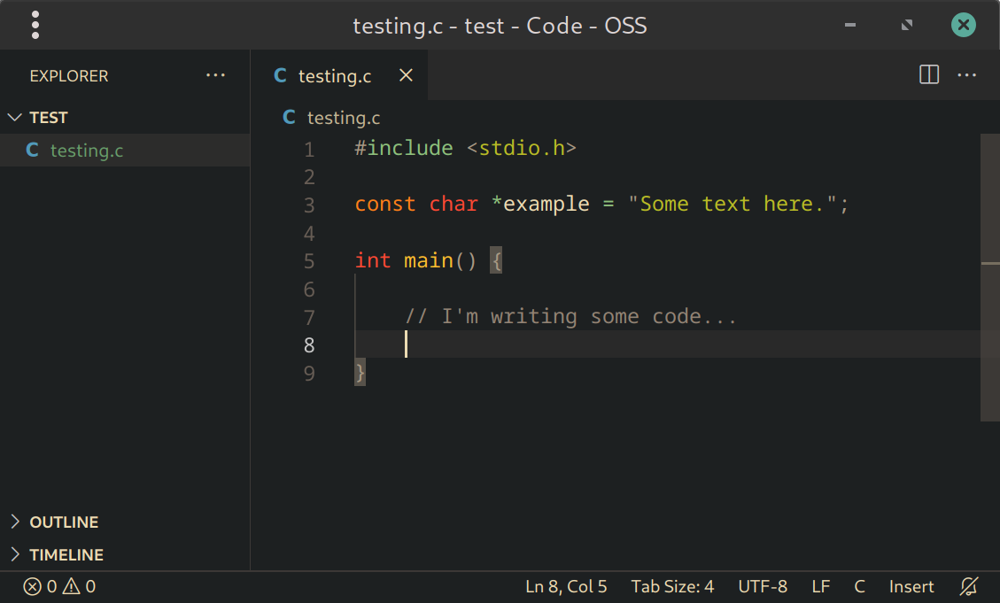
Fig 2.1: 在 VS Code 中编辑文件。
在许多编辑器里，可以设置一个热键（通常是 F5 或 Ctrl+Enter）来编译并运行你的代码。这是一种高效的工作流，但出于本教程的目的，我们将使用命令行，因为了解底层发生了什么至关重要。
同样，代码补全和错误高亮也是很有价值的功能，你可能想花时间配置一下，但超出了本章范围。
安装 GBA 模拟器
不用说，你需要一种实际运行 GBA 程序的方式。时不时地在真实硬件上测试是强烈推荐的（也是乐趣的一部分），但在日常开发中，你会想要更方便的东西。这正是模拟器派上用场的地方。
在撰写本文时，最适合 GBA 开发的模拟器是 mGBA。它精度极高，并带有面向开发者的功能，比如内存查看器、调试日志，以及一个用于单步调试的 GDB 服务器，所有这些都会在你出错时（而且你一定会出错！）让你的生活轻松许多。
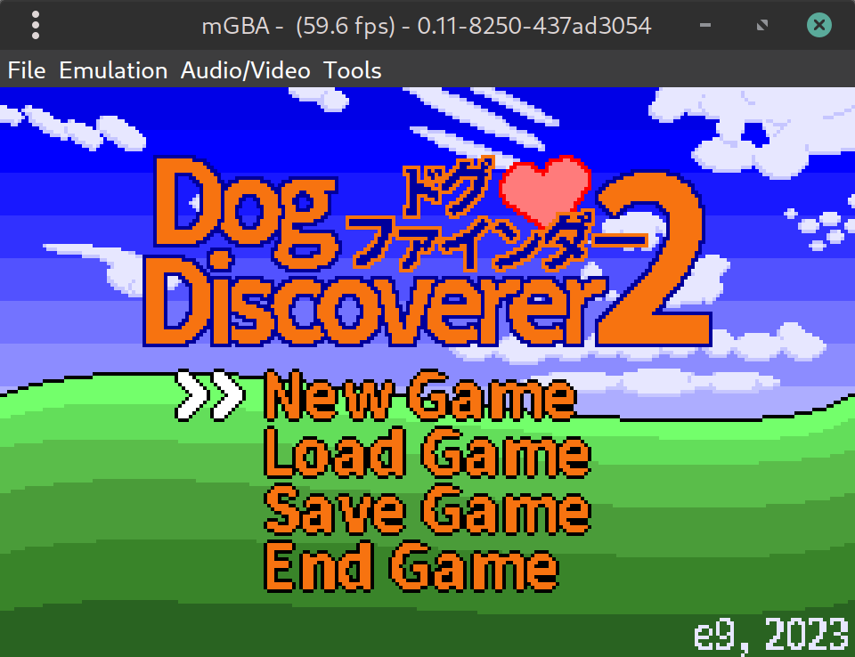
Fig 2.2: 一个 GBA ROM 在 mGBA 中运行
你可能想用的其他模拟器有：NanoBoyAdvance 和 SkyEmu，它们都是_周期精确_的，实际上是在不实际使用真机的情况下，最接近真机游玩的体验。
最后，no$gba（调试版）是一个较老、精度稍逊、仅限 Windows 的 GBA 模拟器，但有一些你在别处找不到的独特调试功能。即可视化调试器、性能分析器、CPU 使用率计量，以及能捕获缓冲区溢出之类问题的内存访问检查。如果你能把它跑起来，它是个无价之宝！
安装 devkitARM
devkitARM 多年来一直是 GBA 自制软件的标准工具链。它由一支名为 devkitPro（dkP）的团队提供，尽管非正式地，这些工具也常被叫作 devkitPro（这让维护者们相当遗憾）。
要安装 devkitARM，请访问 devkitPro 入门 页面，并按照你操作系统的说明操作。
路径中不要使用空格
devkitARM 使用
make 来构建项目，它对路径中的空格处理不好（比如 My Documents）。原因是 make 用空格作为命令行选项之间的分隔符，但与 shell 脚本等不同，它没有提供恰当的引用/转义形式，尤其是在处理文件名列表时。
Windows 提示
如果你在 Windows 上，有一个 GUI 安装程序会自动下载并安装组件。请务必在安装过程中选择“GBA Development“，如 fig 2.3 所示。
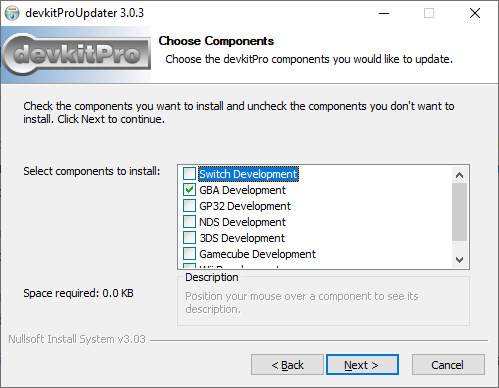
Fig 2.3: 在 Windows 上安装带 GBA 包的 devkitARM。
Linux 与 Mac 提示
如果你使用 Linux 或 Mac，在按照 dkP 的入门页面说明之后，应该在终端里通过 dkp-pacman 安装 gba-dev 包组 （或者如果你用 Arch Linux，就只是 pacman）。为此，运行以下命令：
sudo dkp-pacman -S gba-dev
当被问到要安装哪些包时 (“Enter a selection (default=all):”)，你只需按 Enter 即可安装整个 gba-dev 组中的所有内容。
获取 Tonc 的示例代码
本教程附带了一整套示例，用于演示每一章所教授的概念。
此外，libtonc 是伴随 Tonc 的 GBA 编程库，编译示例所必需。过去，libtonc 必须单独下载并放在你的项目能找到它的位置。但如今它作为 devkitARM 的一部分附带提供。只要你安装时选择了 gba-dev 包，你就已经拥有 libtonc 了。
坏消息是 devkitARM 不包含 Tonc 示例，所以你仍然得自己下载它们。你可以通过仓库页面上的 “Code -> Download Zip” 获取，或者在终端里使用 git：
git clone https://github.com/gbadev-org/libtonc-examples
toolbox.h 与 libtonc
在前几章，我们会构建自己的库 toolbox.h，它在教学目的上复刻了 libtonc 的部分功能。但在真实使用中，应该优先坚持使用一个功能更丰富、经过实战检验的库（比如 libtonc 本身）。
编译示例
为了测试你的安装，我们来试着构建其中一个示例。
在终端中，导航到某个示例所在的目录（比如 hello 示例）并运行 make：
cd libtonc-examples/basic/hello
make
被调用时，make 会按照当前工作目录中名为 ‘Makefile’ 的文件里的规则来构建项目。假设成功，会生成一个 .gba 文件，你可以在你选择的模拟器中运行它：
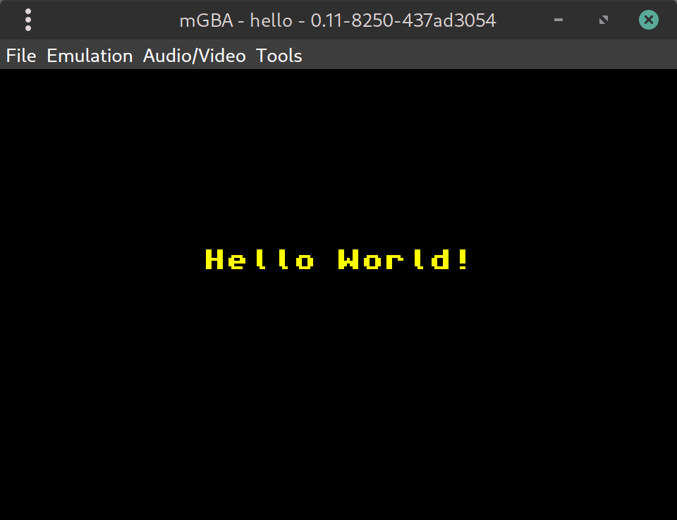
Fig 2.4: Tonc 的示例之一在 mGBA 中运行。
如果你走到了这一步，恭喜！你现在可以开始编写自己的 GBA 程序了。
你可以进入下一章，或继续往下读了解更多细节。
设置环境变量
如果你遇到诸如 Please set DEVKITPRO in your environment 这样的错误，意味着你的环境变量没有正确设置。解决方案因机器而异，但通常你需要编辑主目录下一个名为 .bashrc 的文件，并向其中添加以下几行：
export DEVKITPRO=/opt/devkitpro
export DEVKITARM=/opt/devkitpro/devkitARM
export DEVKITPPC=/opt/devkitpro/devkitPPC
export PATH=$DEVKITARM/bin:$DEVKITPRO/tools/bin:$PATH # optional
最后一行把编译器和相关工具加到了你的 PATH 环境变量中，让你能在终端里直接使用它们。
这是可选的，因为示例的 makefile 也会在构建过程中设置 PATH。但手头有这些工具很有用，而且如果你想跟着下一节走，这是必需的。
编辑完 .bashrc 后，你必须关闭并重新打开终端才能应用更改。或者你可以运行 source ~/.bashrc 在当前 shell 中使这些更改生效。
手动构建 GBA ROM 的步骤
我们刚才看到了如何通过 make 编译一个 GBA 程序。复制 makefile 并用于你自己的项目是绝对被鼓励的！话虽如此，了解底层发生了什么是有价值的。
把你的 C/C++/asm 源文件转换成一个有效的 GBA ROM 涉及 4 个步骤，可以在运行 make 的输出中看到：
$ make
hello.c # <--- invoke the compiler
linking cartridge # <--- invoke the linker
built ... hello.gba # <--- elf stripped
ROM fixed! # <--- header fixed
步骤如下：
-
编译/汇编源文件。我们把人类可读的 C 或 C++ 文件（
.c/.cpp）或汇编文件（.s/.asm）转换成一种称为目标文件（.o）的二进制格式。每个源文件对应一个目标文件。做这件事的工具叫
arm-none-eabi-gcc。实际上，这只是真正编译器的前端，但那只是细节。这里的arm-none-eabi-是一个前缀，表示这个 GCC 版本为裸机 ARM 平台生成机器码；其他目标平台有不同的前缀。注意 C++ 使用g++而非gcc。 -
链接目标文件。之后，独立的目标文件被链接成一个单一的可执行 ELF 文件。你可能指定的任何预编译代码库（
.a）也在这个阶段链接。你其实可以同时进行编译和链接，但把它们分开是好习惯：严肃的项目通常包含多个源文件，而不希望你只改了一个就得等整个世界重新编译。当你开始添加数据（图形、音乐等）时，这一点变得更加重要。
同样，
arm-none-eabi-gcc被用来调用链接器，尽管真正的链接器叫arm-none-eabi-ld。 -
剥离为原始二进制。ELF 文件仍包含调试数据，实际上无法被 GBA 读取（尽管许多模拟器会接受它）。
arm-none-eabi-objcopy移除调试数据，确保 GBA 会接受它。嗯，差不多。 -
修复头部。每个 GBA 游戏都有一个带校验和的头部，以确保它是一个有效的 GBA ROM。链接步骤为它留出了空间，但留空，所以我们得用 DarkFader 的
gbafix之类的工具来修复头部。这个工具随 devkitARM 提供，所以你不必单独下载。
你当然可以在终端里自己运行所有这些命令，而不需要 makefile，只要 dkP 工具在你的 PATH 中。
让我们用名为 first 的示例试试——这是最容易编译的一个，因为它不依赖任何库。
cd libtonc-examples/basic/first/source
# Compile first.c to first.o
arm-none-eabi-gcc -mthumb -c first.c
# Link first.o (and standard libs) to first.elf
arm-none-eabi-gcc -specs=gba.specs -mthumb first.o -o first.elf
# Strip to binary-only
arm-none-eabi-objcopy -O binary first.elf first.gba
# Fix header
gbafix first.gba
你做到了——一个从零编译的 GBA 程序！嗯……我们总能钻得更深，但现在大概是个不错的收尾之处。 x)
这里传给工具的各个选项可能不立即明显。如果你感兴趣，它们会在 makefile 附录 中解释。
避免用批处理文件编译
你可能会想把所有命令塞进一个批处理文件或 shell 脚本，并用它来编译你的项目。这很简单，但不推荐。
一旦你的项目有多个源文件，原因就显而易见了：如果你改了其中一个文件，你不该重新编译_所有_源文件，只重编改动的那个。像 make 这样的构建系统足够聪明能意识到这点，而简单的 shell 脚本做不到。
当你的项目有几十个源文件时，这差别就大了！
替代工具链
devkitARM 的优势在于它为在 Windows、Mac 和 Linux 上编译 GBA 自制软件提供了一致的环境。然而，如果你喜欢冒险，如今还有其他不错的选择：
- gba-toolchain - 使用 CMake 构建系统而非 Makefile
- meson-gba - 使用 Meson 构建系统而非 Makefile
- gba-bootstrap - 编译一个 GBA 程序所需的最低限度。换句话说，自己动手搭工具链，最难的部分已经替你做好了。
你为何想用这些？它们可能更容易安装（许多 Linux 发行版提供它们自己构建的 arm-none-eabi-gcc 及相关的包，这本质上和 devkitARM 提供的是同一回事），或者你可能用的机器上 devkitARM 不可用（比如树莓派）。又或者你只是想要比 makefile 更好的构建系统。
Tonc 假定你使用 devkitARM，但无论你用哪个工具链，大部分信息都是相关的。
避开 ‘devkitAdvance’
你可能会遇到一个名为 devkitAdvance 的工具链。这是一个古老的工具链，自 2003 年起就没有更新过。使用它，你将错过_二十年_的编译器改进和优化。如果有人向你推荐这个，快跑！
3. 我的第一个 GBA 程序
终于，你的第一个 GBA 程序
既然你的开发环境已经就绪，是时候来看看一个简单的 GBA 程序了。为此我们会用到 C 文件 first.c 中的代码。此刻的打算并不是让你完全理解它；打算是让它编译通过并跑起来。代码会在本章讲解，但这一切意味着什么，要留到后面的章节再讲。
// First demo. You are not expected to understand it
// (don't spend too much time trying and read on).
// But if you do understand (as a newbie): wow!
int main()
{
*(unsigned int*)0x04000000 = 0x0403;
((unsigned short*)0x06000000)[120+80*240] = 0x001F;
((unsigned short*)0x06000000)[136+80*240] = 0x03E0;
((unsigned short*)0x06000000)[120+96*240] = 0x7C00;
while(1);
return 0;
}
先别急着琢磨这段代码，那是以后的事。也先别离开，稍后我会给一个更漂亮的版本。眼下唯一重要的是：你能把它编译并运行起来。
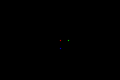
Fig 3.1：第一个演示程序的画面
正如上一章所讲，你可以在终端里运行 make 来构建这个项目。在这背后，它做了如下这些事：
- 编译 first.c 为 first.o，
- 链接 目标文件列表（目前只有 first.o）为 first.elf，
- 转换 first.elf 为 first.gba，即剥除所有多余的 ELF 信息，
- 修复文件头，以便 GBA 能够接受它。
在 makefile 跑完之后，你应当得到一个名为 first.gba 的文件。如果没有，那就是你的环境设置有问题，因为代码肯定没错！回去确认你没有漏掉任何步骤——但如果你仍然遇到麻烦，欢迎随时到 Discord / IRC 或 论坛 来串门，很有可能有人能帮上忙！
如果你确实得到了 GBA 可执行文件，就在真机或你喜欢的模拟器上运行它，你应当会看到红、绿、蓝三个像素，分别位于 (120, 80)、(136, 80) 和 (120, 96)。
现在，来说说代码本身……
哈？
如果你对此有点困惑，你并不孤单。我料想，除非你已经对 GBA 编程略知一二、或者有过其它平台底层编程的经验，否则这段代码对你来说会是个彻底的谜。如果你 C 语言足够熟练，或许能隐约猜到那三个像素是怎么出现的，但我承认，这非常难看出来。
而这其实正是我的用意之一。如果有人把这段代码交到编程课的考试上，你会挂得很惨。而如果没挂，那教授们就该被炒了。尽管上面这段代码确实能跑，但它的几乎不可读性，使它成为糟糕的代码。写好代码不只是为了出结果，也是为了确保别人能够不太费力地看懂发生了什么。
first.c 的代码还有另一个用途，即作为一个提醒：GBA 编程是非常底层的。你直接同内存打交道，而不是经由 API 带来的层层抽象。要能做到这一点，意味着你必须真正理解计算机是如何运作的，而这是所有程序员都至少该在某个程度上知道的。确实有一些 API（姑且这么叫吧，比如 HAM）会打理最底层的那些事，这自有其价值，因为它让你能去处理更重要的事，比如真正的游戏编程；但另一方面，它把许多细节藏了起来——而有些细节，有时还是摊在明处更好。
那些想要一份更好、更易读的上述代码版本的人，可以跳过下一节，直接去看[第二个](#sec-second)“第一个”演示程序。而那些脑子有恙、无法就此罢休、想立刻得到解释的人（作为记录，我也属于他们之列），下面就是正在发生的事。
代码讲解
这是对早先那段代码一个又快又糙的讲解。上面提到的那些脑子有恙、本节正是为他们而写的人，大概会更喜欢这种风格。更详细的讨论留到以后。
正如我所说，GBA 编程是底层编程，有时甚至会一直抠到比特位。0x04000000 和 0x06000000 是那块可访问的内存区段的一部分。顺便说一句，这两个数字本身没什么意义；它们只是指向不同的区段。这两个区段之间其实并不存在一个真正的 0x02000000。正如你在内存映射中看到的，这两个区段分别用于 IO 寄存器和 VRAM。
为了在 C 中使用这些区段，我们得把它们做成指针，这正是 ‘unsigned int*’ 和 ‘unsigned short*’ 所做的。这里所用到的类型几乎是任意的；说“几乎”，是因为其中一些比另一些更方便。举例来说，GBA 有若干种不同的视频模式，而在模式 3 和 5 中 VRAM 被用来存放 16 位颜色，所以在那种情况下把它转换（cast）成半字（halfword）指针是个好主意。再次强调，这并不强制你这么做，而且在某些情况下不同的人会使用不同类型的指针。如果你在用别人的代码，务必留意所用指针的数据类型，而不只是名字。
位于 0400:0000 的那个字（word），装着显示控制（display control）的主位。通过向它写入 0x0403，我们告诉 GBA 使用视频模式 3 并激活背景 2。这到底意味着什么，会在视频和位图模式两章中解释。
在模式 3 中，VRAM 是一张 16 位的位图；当我们为它做一个半字指针时，每个条目就是一个像素。这张位图本身与屏幕一样大（240×160），并且由于位图和 C 语言矩阵的工作方式，使用形如 ‘数组[y*width + x]’ 的表达式，得到的就是屏幕上坐标 (x, y) 处的内容。这就给了我们的 3 个像素位置。我们用三个 16 位数把它们填满，这几个数恰好是 5.5.5 BGR 格式下纯红、纯绿和纯蓝。还是 RGB 来着，我总是记混。总之，那正是让像素出现的原因。在那之后还有一行重要的代码，即那个无限循环。通常，无限循环是应当避免的东西，但在这个情况下，main() 返回之后会发生什么相当未定义，因为几乎没什么可返回的对象，所以最好避免那种可能性。
大致上也就这些了。虽然这段代码斯巴达式的纯粹对我的一部分颇有吸引力，但我还是要再次强调：这不是用 C 语言编程的正确方式。把那些原始数字留给汇编吧。
你的第二个“第一个” GBA 程序
那么，让我们重头再来，这次做对。或者至少比之前更对一点。有若干简单的方法可以改善代码的可读性。下面是我们会去做的事项清单。
- 首要的是使用具名字面量，也就是为这些常量定义 #define 名字。将写入显示控制的那些数字，以及我们绘出的那些颜色，都会得到恰当的名字。
- 我们还会使用 #define 来做内存映射：这样显示控制和 VRAM 就会更像普通变量一样工作。
- 我们还会创建一些typedef，既为了方便，也为了标示出概念性的类型。例如，一个 16 位颜色本质上与其他任何半字一样，但如果你把它 typedef 成，比如说
COLOR，每个人都会知道那不是普通的半字，而是与颜色有关的东西。 - 最后，我们不再用数组访问来绘像素（那仍可能意味着任何东西），而是用一个子程序来做。
自然，这会略微（其实是相当程度地）增加代码总行数。但非常值得。这段代码其实分成两部分。真正的代码——也就是拥有第一个演示程序全部功能的那部分——可以在 second.c 中找到。上面讨论的所有项目，即 typedef、#define 和 inline 函数，都被放进 toolbox.h。
// toolbox.h:
//
// === NOTES ===
// * 这是 libtonc 中能找到的一_小_套 typedef、#define 和 inline，
// 未必代表最终的形态。
#ifndef TOOLBOX_H
#define TOOLBOX_H
// === (from tonc_types.h) ============================================
typedef unsigned char u8;
typedef unsigned short u16;
typedef unsigned int u32;
typedef u16 COLOR;
#define INLINE static inline
// === (from tonc_memmap.h) ===========================================
#define MEM_IO 0x04000000
#define MEM_VRAM 0x06000000
#define REG_DISPCNT *((volatile u32*)(MEM_IO+0x0000))
// === (from tonc_memdef.h) ===========================================
// --- REG_DISPCNT defines ---
#define DCNT_MODE0 0x0000
#define DCNT_MODE1 0x0001
#define DCNT_MODE2 0x0002
#define DCNT_MODE3 0x0003
#define DCNT_MODE4 0x0004
#define DCNT_MODE5 0x0005
// layers
#define DCNT_BG0 0x0100
#define DCNT_BG1 0x0200
#define DCNT_BG2 0x0400
#define DCNT_BG3 0x0800
#define DCNT_OBJ 0x1000
// === (from tonc_video.h) ============================================
#define SCREEN_WIDTH 240
#define SCREEN_HEIGHT 160
#define vid_mem ((u16*)MEM_VRAM)
INLINE void m3_plot(int x, int y, COLOR clr)
{ vid_mem[y*SCREEN_WIDTH+x]= clr; }
#define CLR_BLACK 0x0000
#define CLR_RED 0x001F
#define CLR_LIME 0x03E0
#define CLR_YELLOW 0x03FF
#define CLR_BLUE 0x7C00
#define CLR_MAG 0x7C1F
#define CLR_CYAN 0x7FE0
#define CLR_WHITE 0x7FFF
INLINE COLOR RGB15(u32 red, u32 green, u32 blue)
{ return red | (green<<5) | (blue<<10); }
#endif // TOOLBOX_H
#include "toolbox.h"
int main()
{
REG_DISPCNT= DCNT_MODE3 | DCNT_BG2;
m3_plot( 120, 80, RGB15(31, 0, 0) ); // or CLR_RED
m3_plot( 136, 80, RGB15( 0,31, 0) ); // or CLR_LIME
m3_plot( 120, 96, RGB15( 0, 0,31) ); // or CLR_BLUE
while(1);
return 0;
}
如你所见，toolbox.h 的行数其实比真正的代码多得多。眼下这看起来有点浪费，但只因为这是一个如此之小的演示程序。toolbox.h 中的内容实际上没有任何一部分被编译，所以在内存占用上毫无代价。事实上，如果它真的被编译了，那它就不该待在头文件里，但那是我要留到另一次再讨论的话题。现在，我们先来看看 toolbox.h 里到底有什么。
工具箱
类型与 typedef
首先，我们为常用的类型创建一些简写记号。不管别人怎么说，简洁是一种美德。举例来说，无符号类型非常常见，把全名写出来（比如 ‘unsigned short’）没什么意义。简写 ‘u16’ 就要方便得多。除了方便，它还能更好地传达变量的大小信息，而这一点在这里也至关重要。
我还加入了一个概念性 typedef。诚然，原则上一个 int 不管用来做什么都是一个 int，但如果你能从类型看出它本该的用途，会很有帮助。在这个例子里，当我想标示某个半字含有颜色信息时，就给 u16 取了个别名 COLOR。
内存映射宏定义
为了能直接操作内存中的特定地址，你得把它们转换成指针或数组，然后透过它们来工作。在这个演示程序里，我们感兴趣的地址是 0600:0000（VRAM）和 0400:0000（显示控制寄存器）。在第一个演示程序里，我是手动做的转换，但用名字来代表它们更好，这样你就不必记住所有数字，而且别人也完全无从猜出发生了什么。
对于 IO 寄存器，我使用的是官方名字，那是各方都认可的。显示控制被称为 REG_DISPCNT，被定义为 0400:0000 处的那个字。请注意，名字和类型都不是一成不变的：你大可同样轻易地叫它 “BOO”，甚至用一个半字指针。寄存器 #define 的完整列表可以在 libtonc 的 tonc_memmap.h 中找到。
对于那些对指针不如你应有的那般熟悉的人（伙计，你以后可有得受 :P），下面给出 REG_DISPCNT 这个 #define 的结构。这里我使用 vu32 作为 ‘volatile u32’ 的 typedef。
#define REG_DISPCNT *((volatile u32*)(MEM_IO+0x0000))
| code | type | description |
|---|---|---|
MEM_IO+0x0000
| Address | MEM_IO=0x04000000，所以这是地址 0400:0000
|
(vu32*)0x04000000
| pointer | 一个 volatile 性质的、指向无符号 int 的指针 （最后这部分现在先忽略） |
*(vu32*)0x04000000
| ‘variable’ | 通过解引用指针（那个 ‘*’ 一元运算符），我们访问指针所指的内容。也就是， 整个东西变成了一个可用的变量。 |
所以，就所有意图和目的而言，REG_DISPCNT 就是一个和普通变量别无二致的变量。你可以给它赋值、读取它的内容、对它做位运算，等等。而这很好，因为那正合我们想使用那个寄存器的方式。
对 VRAM 也进行了类似的处理，只是最后它仍保持指针的形式。正因为如此，vid_mem 是作为一个数组而非变量来工作的。这再次恰好是我们想要的样子。不过请小心那个定义：里面的所有括号都是必需的！由于转换（cast）和数组之间的运算符优先级关系，漏掉外面那对括号会导致编译错误。
IO 寄存器及其位
IO 寄存器（不要和 CPU 寄存器混淆）是一些以位域（bitfield）形式存在的开关，控制着 GBA 的各种操作。IO 寄存器可以在 0400:0000 那段内存中找到，通常会按个人喜好被归拢成字或半字。要完成任何事，你都得去设置 IO 寄存器的特定位。虽然你可以试着记住所有这些位的数值，但用 #define 来代替要方便得多。
工具箱头文件列出了我用于 REG_DISPCNT 的一些 #define。完整的列表可以在 libtonc 的 tonc_memdef.h 中找到，而该寄存器本身在视频章中有描述。眼下，我们只需要 DCNT_MODE3 和 DCNT_BG2。前者把视频模式设为模式 3，那是 3 种可用位图模式中最简单的一种；后者则激活背景 2。在总共四个背景中，bg 2 是位图模式下唯一可用的那个，你想让任何东西显示出来都得把它打开。你得承认，这些名字比 0x0003 和 0x0400 要更具描述性，对吧？
我还加了一份有用的颜色 #define 列表，尽管我在 second.c 中并没有用到它们。不过它们将来可能有用也可能没用，所以留着它们挺好。
创建寄存器的 #define 大概是头文件中最大的一块。粗略估计，大约有 100 个寄存器，每个 16 位，那就会是 1600 个 #define。这是个不小的数目。确切的数字可能小一些，但仍然是很大的。因为 #define 的名字本身并不重要，你可以预期不同的人会有不同的命名方案。我偏爱我自己那套名字，更老的 GBA 程序员可能用 PERN 的名字，而更新的则可能用随 devkitARM 一同发布的 libgba 的名字。随你挑。
宏与内联函数
你还可以创建一些工作方式有点像函数的 #define。这些被称为宏。我在这里没有使用它们，但 libtonc 的头文件里随处都是。和所有 #define 一样，宏属于预处理器而非编译器，这意味着调试器永远看不到它们，而且它们可能藏着许多隐性的错误。正因如此，它们已经让位给了内联函数。它们具备宏的所有好处（即，被集成进调用它们的函数里，所以速度快），但在语法上仍然像函数，并且在编译期就被解析。理论上至少如此；在实践中它们并不完全像宏那般快，但往往仍更可取。
我用到的一个内联函数是 m3_plot()，如你可能猜到的，它用于在模式 3 中绘像素。在模式 3 里，VRAM 只是一张 16 位颜色的矩阵，所以我们要绘一个像素，只需在正确的数组元素里写入一个半字。m3_plot() 看起来完全像一个普通函数，但因为它前面的 ‘static inline’ 使它成为内联函数。请注意，内联只是对编译器的一种建议，而非命令，而且只有在优化开关打开时它才起作用。
// Mode 3 plotter as macro ...
#define M3_PLOT(x, y, clr) vid_mem[(y)*SCREEN_WIDTH+(x)]=(clr)
// and as an inline function
static inline void m3_plot(int x, int y, COLOR clr)
{ vid_mem[y*SCREEN_WIDTH+x]= clr; }
第二个内联函数是 RGB15()，它从任意给定的红、绿、蓝值创建一个 16 位颜色。GBA 的图形使用 16 位颜色——或者更准确地说是 5.5.5 BGR 格式的 15 位颜色。也就是：最低的 5 位放 32 阶红，位 5 到 9 放 32 阶绿，位 10 到 14 放 32 阶蓝。RGB15() 这个内联函数包揽了完成此事所需的所有移位与掩码操作。
工作代码
利用 toolbox.h 的内容，让演示程序的代码变得容易理解得多。
main() 的第一行设置了显示控制（也就是俗称的 REG_DISPCNT）中的若干位。我用 DCNT_MODE3 把视频模式设为模式 3，并用 DCNT_BG2 激活背景 2。这翻译过来和之前一样是 0x0403，但这个方法比填入原始数字更能表明正在发生什么。使用一个类变量的 #define，而非那个原始的解引用指针，也更可取；尤其因为后者一定会让 C 语言新手抓狂。
那么，我当初究竟是怎么知道哪些位做什么、从而创建出这些 #define 的呢？简单，我去 GBATEK 查的，它是 GBA 编程必不可少的参考资料。对于我在这些页面中使用的每个 IO 寄存器，我都会给出各位的描述，以及它们在 libtonc 中被定义成的 #define 列表。这些描述的格式在前言中给出，而 REG_DISPCNT 的表格可以在视频章找到。
实际绘出像素，现在由内联函数 m3_plot() 完成，它的格式与世上的每种像素绘制器都差不多：2 个坐标加颜色。这比直接访问内存好得多，尽管它的工作方式完全一样。颜色本身现在也由一个内联函数创建：RGB15 接收 3 个分别代表红、绿、蓝分量的数，并把它们组合成一个合法的 16 位颜色。
最后，有一个无尽循环来防止程序结束。但无尽循环不是不好吗？嗯，通常确实不好，但这里不是。请记住 PC 程序结束时会发生什么：控制权被踢回操作系统。而我们没有操作系统。所以 main() 返回之后会发生什么，是未定义的。你可以透过查看一个名为 ctr0.S 的文件（随你的 dev-kit 一同提供）来看会发生什么，但那不是新手该碰的东西，所以眼下我的建议是：干脆别让它发生。于是，无尽循环。作为记录，有更好的方法来让 GBA 程序停下来，但这个是最简单的。而我们此刻已经走到了演示程序的结尾。
更好了，不是吗？
而这，就是像样的代码该有的样子。作为一条基本准则，尽量避免原始数字：除了你没人会知道它们意味着什么，而且过一阵子你自己可能也会忘掉。Typedef（以及 enum 和 struct）在构建代码结构上能创造奇迹，子程序（函数、内联函数和宏）也是。基本上，每当你注意到自己在重复自己（复制粘贴式编程）时，可能就是该想想创建一些子程序来替换那段代码的时候了。
这些只是几条基本指引。如果你需要更多，可以在这里找到一些，比如。Google 是你的朋友。现在，如果你上过任何 C 语言的课，这些你本该已经知道了。如果没有，那你被坑了。书籍和教程有时会跳过这些话题，所以可能有必要四处逛逛，去寻找更多关于编程风格的指引。顺便说一句，它们说到底只是指引。虽然这些规则通常都很明智，但没必要对它们搞法西斯主义。有时规则对你的处境并不完全适用；那种情况下，尽管打破它们。但请切记，这些指引之所以被写出来是有原因的：十之八九，遵循它们会对你有益。
第一个演示程序 v3？
条条大路通罗马。你已经见过两种本质上做着同一件事的编码方式，尽管其中一个明显更优。但有时事情并非那么泾渭分明。在许多情况下，有若干种同样有效的编程方式。明显的例子，是你给标识符取的名字。没人在强迫你用某套特定的名字，因为重要的不是名字，而是它们所代表的东西。另一个争论点是：你究竟用宏、函数、数组还是别的什么来处理内存映射。在大多数情况下，编译出的代码并无差别。
下面的代码展示了另一种绘出那 3 个像素的方式。在这个例子中，我使用的是颜色 #define，而非那个 RGB 内联函数；但更重要的是，我使用了一个数组 typedef M3LINE，借此我可以把 VRAM 映射成矩阵，从而每个像素都由一个矩阵元素表示。是的，你可以这么做，而且在某种程度上它甚至比用内联或宏更好，因为你不仅限于设置像素；获取、掩码等等用矩阵都完全可行，但如果你走子程序那条路，就得为每种操作各创建一个。
如你所见，把事情做完有一万种方式，其中一些比另一些更实用。哪一种适合你的处境，基本由你决定；那只是软件设计的一部分。
#include "toolbox.h"
// extra stuff, also in tonc_video.h
#define M3_WIDTH SCREEN_WIDTH
// typedef for a whole mode3 line
typedef COLOR M3LINE[M3_WIDTH];
// m3_mem is a matrix; m3_mem[y][x] is pixel (x,y)
#define m3_mem ((M3LINE*)MEM_VRAM)
int main()
{
REG_DISPCNT= DCNT_MODE3 | DCNT_BG2;
m3_mem[80][120]= CLR_RED;
m3_mem[80][136]= CLR_LIME;
m3_mem[96][120]= CLR_BLUE;
while(1);
return 0;
}
GBA 编程的一般性注意事项
主机编程与 PC 编程有着本质的不同，对于像 GBA 这样的机器尤其如此。这里没有操作系统，没有复杂的 API 要学，只有你与内存对峙。你需要对 GBA 的内存区段有深入的了解，才能把事情做对，而良好的指针与位运算技巧是必备的。还要记住，你并没有 2GHz 的 CPU、半吉内存，以及一个每秒能画无数多边形的 GPU。它只是一颗 16 MHz 的 CPU 配上 96kB 显存。而且没有浮点支持，甚至没有硬件除法。这些都是你在设计 GBA 软件时需要意识到的东西。
另一件你需要记住的事是：GBA 做事的方式，往往与你预期的只差那么一丁点。最典型的例子，就是用于[仿射变换](affine.html)（如旋转和缩放）的那个矩阵。所有流行的教程都给出了旋转-缩放变换的错误矩阵，尽管参考文档对每个元素都给出了正确的描述。其它的好例子还有：试图[向 VRAM 写入单个字节](bitmaps.html#ssec-intro-details)的最终结果；按键状态[对应的位](keys.html#ssec-reg-keys)在按钮未被按下时其实是被置位的、而非相反；或者定时器寄存器 [REG_TMxD](timers.html#ssec-reg-tmxd) 真正做了什么。
我已经尽力把所有这些东西讲得完整，但我敢肯定还是漏了一星半点。如果你遇到问题，你大概不是第一个。有大量的 FAQ 和论坛，你可以在那里找到解决办法。如果那样还不行，开口问也绝无坏处。如果我的任何信息有误或不完整，请务必告诉我。
GBA 的好/坏实践
出于某种原因，GBA 开发圈子里存在着大量糟糕的编程实践。其主要原因大概是：人们只是从教程代码里复制粘贴，而其中大多数用的就是这些实践。下面是一份简短的清单，列出了该避免的事，以及该采纳的事。
-
不要尽信你读到的东西。底线是：人会犯错。有时，给出的信息是错误的或不完整的。有时代码跑不起来；有时它能跑，但效率低下、前后不一，或者只是包含了些日后会反过来咬你的实践。对于大多数（如果不是全部）较老的教程，这都是真的。不要 automatically 假设你做错了：也有可能是源头材料的问题。
不幸的是，如果你刚接触编程，你可能辨认不出那些坏东西，从而采纳了某些源头所展示的标准。不要从 GBA 教程里学 C 语言编程！我几乎想把这个建议延伸到广义的在线教程，尤其是短小的那些。书籍通常更准确，并能对材料提供更好的洞见。（但再次强调，也不总是如此。）
-
RTFAQ / RTFR。去读 gbadev 论坛 FAQ。这还用说吗。它涵盖了许多常见问题。此外，去读那个 fuckin 参考，我指的是 GBATEK，它几乎无所不包。
-
Makefile 是好的。许多教程用批处理文件（batchfile）来构建项目。我承认，这是个很简单的方法，但长远来看，它效率很低、仅限 Windows，并且容易带来可维护性问题。Makefile 才更适合真实世界的项目，尽管初期可能要跨一道设置门槛。幸运的是，你不必太操心这件事，因为 DevkitPro 随附了一个模板 makefile/项目（见
${DEVKITPRO}/examples/gba/template），你只需指明源文件/头文件/数据文件放在哪些目录即可。我用于进阶项目和实验项目的 makefile，就是对它们的改编。 -
Thumb 代码是好的。代码（ROM 和 EWRAM）所在的常规区段拥有 16 位总线。ARM 指令会堵住总线，并严重拖慢性能。Thumb 指令在这里更合适。Thumb 代码往往也更小。请注意，由于 IWRAM 是 32 位总线，在那里用 ARM 代码没有惩罚。
-
开启交互（interworking）、优化和警告是好的。 交互（
-mthumb-interwork）允许你在 ARM 和 Thumb 代码之间切换；如果你有一些放在 ARM/IWRAM 中的高性能例程、想从 ROM 代码里调用它们，你也许会想要这个。优化（-O#）让 GCC 在把 C 编译成机器码时别犯傻（我是认真的：没有它们，输出在各方面都糟糕透顶）。它产生更快的代码，通常也更小。警告-Wall应当开启，因为你一定会做出些蠢事，产出可以编译、却不会如你所愿的输出来。警告就是提醒你：可能有什么古怪的事正在发生。 -
32 位变量是好的。每个 CPU 都有一个“原生”数据类型，也称为字（word），或用 C 的话说，就是
int。一般来说，CPU 处理该数据类型要比处理任何其它类型都更在行。GBA 被称为 32 位机器，正是因为 CPU 的原生数据类型是 32 位的。指令集是针对字长块优化过的。它喜欢字，所以除非别无选择，否则你最好喂它字。在非常实在的意义上，32 位整数才是 GBA 唯一拥有的数据类型。其余本质上都是被模拟出来的，这会带来微小的性能惩罚（对字节和半字要多两条移位指令）。不要用
u8或u16作为循环索引，举例来说，这样做会让循环速度减半！（认为“用更小的类型就意味着更低内存占用”的信念，只对有聚合体、也许还有全局变量成立；对局部变量来说它其实耗费内存）。同理，如果你有内存要复制或填充，用字大约能比半字快一倍。只是在做转换时要小心，因为 ARM CPU 对对齐非常挑剔。
那些是其它 GBA 教程经常栽跟头的地方。它不是一份排他性的清单，但要点都在里面了，我想。关于（C）编程总体而言，还有几点我也想在这里提一下。
-
了解语言；了解系统。不言自明的是：如果你用某种语言、或在某个系统上编程，你应当对两者都有一点（最好很多）了解。然而，我见过相当多的代码之所以成问题，单纯是因为作者显然对两者都知之甚少。正如我在本节开头所说，GBA 有几个有趣的怪癖，是你在为它编程时需要知道的。那，当然，正是 Tonc 的全部主旨。有些问题源于缺乏 C 语言技巧——“int”那件事就是一例。另一个非常常见的问题，是正确的内存和指针使用，这一点我稍后会讲一点，也会在数据一节中再讲。用 C，你手头有不同的数据类型、指针、预处理器和位运算符可用。去学习它们做什么、以及如何有效地使用它们。
-
先想，后写。不要打开编辑器、敲下一些代码、然后指望它能正确运行。它不会的。如果连你自己都还没定义过“正确地”是什么意思，它又怎么可能正确？先想清楚你想做什么，再想清楚你需要什么才能做成它，然后才试着去实现。
大量的编程（至少对我而言）根本不是在文本编辑器里完成的。举例来说，对任何涉及数学的事（图形也可以包括在内），最好先画个情境图。为了看清发生了什么，我为仿射变换和 mode 7画了好几页的图和等式。纸和笔在这里是你的朋友。
-
学会一般化与简化。这其实与编程无关，而是与广义上的解题有关。具体的问题往往是更一般问题的特例。举例来说，2D 数学是多维数学的一个子集；向量分析和变换（如旋转和缩放）则是线性代数的一部分。如果你知道一般性的解，你总能（嗯，至少通常是）推到具体的情形。然而，常被讲授的（在学校里，在大学里也是）是具体的解，而非一般的解。虽然用特解往往用起来更快，但只要情形与书上的例子稍微不同一点，它们就完全派不上用场。如果你学的是通解——更好的是，学会如何得到通解——你解决手头任务的机会就会大得多。
一个相关的问题是简化。举例来说，如果你在一组等式（或算法）中有很长的表达式，你可以把它们归并到一个新名字之下。这意味着更少的书写、更少的书写，以及更低的出错风险。
-
学习基础的优化策略。我这么说，并不是指你该熟知书中所有的花招，而是有一些你可以在写代码时用上的技巧，能在不牺牲可读性和可维护性的前提下提速（有时甚至是显著的提速）。事实上，有时代码反而因为这样而变得更容易读了。几个例子：
- 用更好的算法。好吧，这一条也许不总是简单，但它仍然非常正确。
- 用 int。
int被宽松地定义为原生数据类型。处理器在处理自己的原生数据类型时往往表现更好。 - 把公共表达式提取到临时变量。如果你不止几次地使用一个长表达式，考虑把它丢进一个临时变量。这对你来说意味着更少的书写，对所有人来说意味着更少的阅读。它还能让你的代码更快，因为你不必一直去重新求值整个表达式。对于全局变量这一点尤其正确，因为它们在每次函数调用后都得重新加载，值可能已经变了。
- 用指针。指针有着危险的名声，但如果用得正确，它们是非常强大的工具。指针算术通常比下标索引更快，因为它更贴近硬件；而把深层嵌套的结构表达式赋给临时指针（见上），你能极大地缩短表达式的长度，这对编译器和读者都更友好。
- 预先计算。 这与前面两点相关。如果你有一个循环，其中有些东西并不依赖于循环变量，就把那部分在循环之前预先算好。另外，为了避免（复杂的）计算，你可以把数据丢进一个查找表，然后直接从那里取值。
- 避免分支。那些改变程序流向的东西（if、循环、switch）通常比其它操作（比如算术）更费。有时可以巧妙地用算术来 effectively 完成分支（比如，
(int)x>>1会根据 x 的符号给出 −1 或 0） 当然，还有更多的优化技巧。Wikipedia 上有一个不错的概览，你也能在这里[b0rked]和那里找到讨论特定技巧的页面。其中某些技巧编译器反正也会做，但不总是。
-
学会稍后再优化。也就是俗称的“过早优化是万恶之源”。优化应当在最后阶段做，那时大部分代码已经就位，而且你能真正判断出哪里需要优化（如果确实需要的话）。然而，这并不意味着你在早期阶段就该刻意追求最慢的解。往往存在一种更干净和/或更快（有时甚至是快得多）的算法，只需一点点思考就会浮现在你眼前。这不是优化，而仅仅是别犯傻的问题。上面提到的几点中有一些就属于这一类。
-
总有例外。没有任何一条编程指引是没有例外的。也许除了这一条。
我就先说到这里。关于如何高效编码，整本书都被写出来了。网上也有资源：搜索诸如“optimization”、“coding standards”或“coding guidelines”之类的关键词，应该能给你足够多的内容。另外也查查设计模式和反模式。展示如何不编码的书和站点也很有趣。有时它们甚至更有用。Worse than Failure 就是其中之一（尤其是 codeSOD 那个分类）；Computer Stupidities 的编程板块也不错。如果你想看看为什么全局变量的使用通常会被劝阻，去后一个页面搜一下 ‘alpha’。
几个好/坏实践的例子
这里是几个代码示例，它们虽然能工作，却能在速度、代码量以及/或者可维护性方面做得更好。
整型 vs 非整型
上面我提到，使用非整型可能会有问题。由于这个坏习惯在 GBA 和 NDS 的代码（无论自制还是商业）中都特别常见，我想给你看一个这方面的例子。
// Force a number into range [min, max>
#define CLAMP(x, min, max) \
( (x)>=(max) ? ((max)-1) : ( ((x)<(min)) ? (min) : (x) ) )
// Change brightness of a palette (kinda) (70)
void pal_brightness(u16 *pal, u16 size, s8 bright)
{
u16 ii;
s8 r, g, b;
for(ii=0; ii<size; ii++)
{
r= (pal[ii] )&31;
g= (pal[ii] >>5)&31;
b= (pal[ii]>>10)&31;
r += bright; r= CLAMP(r, 0, 32);
g += bright; g= CLAMP(g, 0, 32);
b += bright; b= CLAMP(b, 0, 32);
pal[ii]= r |(g<<5) | (b<<10);
}
}
这个例程通过往颜色分量上加一个亮度因子，来让调色板变亮或变暗，每个分量随后都被钳制到 [0,31⟩ 的范围，以避免古怪的错误。基本的算法是站得住脚的，连实现我都说得上是相当好。然而不好的，是所用的数据类型。在这里使用 s8 和 u16，几乎在每次使用任何变量时，都凭空多添了一对移位指令！循环本身会被编译成大约 90 条 Thumb 指令。相比之下，当除了 pal 之外一切都用 int 时，循环只有 45 条指令长。当然，体积的增大也意味着时间的增加：纯用 int 的版本比上面给出的那个快了 78%。重申一遍：仅仅因为用了错误的数据类型，代码就膨胀了一倍，并且慢了 78%！
我得承认，这个例子特别糟糕，因为里面有大量的算术。大多数函数会承受更小的惩罚。然而，根本就没有理由一开始就白白损失那份性能。使用 s8 和 u16 没有任何好处；它不会提升可读性——它所做的只是导致膨胀和变慢。能用时就用 32 位变量，其它的只在不得不用时才用。
现在，在这让事情变成又一个 goto 议题之前，非整型确实也有它们的用武之地。变量可以分为两类：工作变量（在寄存器里的）和内存变量。局部变量和函数参数是工作变量。这些应当是 32 位的。处于内存中的项目（数组、全局变量、结构体等等）则可能受益于尽量小。当然，内存变量在你对它们做任何事之前，仍然得被加载进寄存器。一个显式的局部变量在这里也许有用，但要看具体情形。
指针问题
GBA 新手最常犯的错误之一，就是在复制数据时混淆了数组/指针的大小。数据就是数据，但你可以用不同的方式访问它。举例来说，下面这段代码把一张位图数据从数组复制到 VRAM。
// An array representing a 240x160@16 bitmap, converted
// to an array by some graphics conversion tool.
const u8 fooBitmap[240*160*2]=
{
// Maaaaany, many lines of data.
}
int main()
{
REG_DISPCNT= DCNT_MODE3 | DCNT_BG2;
// Copy 240x160 pixels to VRAM (ORLY?)
int ii;
for(ii=0; ii<240*160; ii++)
vid_mem[ii]= fooBitmap[ii];
return 0;
}
fooBitmap 数组代表某张位图。为了把这张位图显示到屏幕上，你需要把它的数据复制到 VRAM。这够简单：我们有之前的 vid_mem，而我们可以透过一个简单的 for 循环，把元素从 fooBitmap 复制到 VRAM。
然而，事情并不像看起来那么简单。vid_mem 是一个 u16 数组；这样定义是因为在模式 3 中每个像素是一个 16 位颜色。但 fooBitmap 是一个字节数组：这个数组的两个元素才代表一个颜色，而把字节复制到半字，会让每个像素的最高字节空着，给出一个非常走样的結果。这种源-目标的类型错配极其常见，部分是因为人们不知道指针和数组是如何表示内存的，也因为他们没留意数据类型。
下面是一个能工作的版本：
// An array representing a 240x160@16 bitmap, converted
// to an array by some graphics conversion tool.
const u8 fooBitmap[240*160*2]=
{
// Maaaaany, many lines of data.
}
int main()
{
REG_DISPCNT= DCNT_MODE3 | DCNT_BG2;
u16 *src= (u16*)fooBitmap; // Cast source to u16-array
// Copy 240x160 pixels to VRAM (YARLY!)
int ii;
for(ii=0; ii<240*160; ii++)
vid_mem[ii]= src[ii];
return 0;
}
通过确保源和目标的类型相同，复制就不会留下空隙。请注意，底层的数据并没有改变——改变的只是使用它的方式。关于如何使用数据和内存，你其实还需要知道更多，那会在后面的章节中讲到。
简化
考虑下面这个函数（基本上取自前面提到的 Rinkworks 站点）：
int foo(int x)
{
switch(x)
{
case 1: return 1;
case 2: return 2;
case 3: return 3;
case 4: return 4;
case 5: return 5;
case 6: return 6;
case 7: return 7;
}
return 0;
}
这个函数做的事是：如果 x 在 1 到 7 之间，就返回那个数，否则返回 0。需要注意的点是：case 值和返回值相同，所以你大可以不用那个 switch 块，直接返回 x。
int foo(int x)
{
if(x >= 1 && x <= 7)
return x;
else
return 0;
}
像这样的简化，往往会在你稍微想一想自己在做什么、而不是只顾着敲代码时自己浮现出来。现在，这个应该相当明显，但更难的 switch 块也常常能被类似地替换掉。举例来说，如果输入和返回值之间存在简单的数学关系（比如某个加法或乘法），你就可以直接用那个关系。即便没有这种简单关系，也仍有可能性。如果你返回的是常量，你可以把这些常量放进一个表，然后用 x 作为索引。
上面是算法层面的简化。另一种简化关乎可读性。当然，每个人对什么算可读都有自己的看法。就我个人而言，我喜欢把语句写得短，尤其是在发生动作的那一处。下一个函数是一个包围圆碰撞检测的例子。基本上，你有两个圆，分别位于点 **p**1 = (*x*1, *y*1) 和 **p**2 = (*x*2, *y*2)，半径分别为 *r*1 和 *r*2。这两个点之间的距离可以用[勾股定理](https://en.wikipedia.org/wiki/Pythagorean_theorem)算出。如果这个距离小于两个半径之和，两圆就重叠了。一个检测玩家精灵是否撞上任何敌方精灵的函数，可能长这样：
// Some basic structs and a sprite array.
// #defines for sprite-indices and amounts omitted.
typedef struct { int x, y; } POINT;
typedef struct
{
POINT position;
int radius;
} TSprite;
TSprite gSprites[SPRITE_MAX];
// Collision function.
int player_collision()
{
int ii;
for(ii=0; ii<ENEMY_MAX; ii++)
{
// Test for hit between player and enemy ii
if( (gSprites[ENEMY_ID+ii].position.x - gSprites[PLAYER_ID].position.x) *
(gSprites[ENEMY_ID+ii].position.x - gSprites[PLAYER_ID].position.x) +
(gSprites[ENEMY_ID+ii].position.y - gSprites[PLAYER_ID].position.y) *
(gSprites[ENEMY_ID+ii].position.y - gSprites[PLAYER_ID].position.y) <
(gSprites[ENEMY_ID+ii].radius + gSprites[PLAYER_ID].radius) *
(gSprites[ENEMY_ID+ii].radius + gSprites[PLAYER_ID].radius) )
{
return 1;
}
}
// Not hit
return 0;
}
就个人而言，我很难读懂那个 if 语句里究竟在发生什么。因为表达式有 6 行长，我实际上得坐下来解析它到底做什么，并且指望那些括号都正确无误，等等。现在请注意，这里有若干东西被重复使用了多次：那些 gSprites 访问（玩家 6 次，敌人 6 次），以及那些位置。它们全都可以用指针和其它局部变量以更少的代码来访问。另外，玩家的属性是循环不变的（它们在循环期间不改变），所以可以在循环之外加载。
int player_collision()
{
int ii;
int r1= gSprites[PLAYER_ID].radius, r2, dx, dy;
POINT *pt1= &gSprites[PLAYER_ID].position, *pt2;
TSprite *enemy= &gSprites[ENEMY_ID];
for(ii=0; ii<ENEMY_MAX; ii++)
{
r2= enemy[ii].radius;
pt2= &enemy[ii].position;
dx= pt2->x - pt1->x;
dy= pt2->y - pt1->y;
// Test for hit between player and enemy ii
if( dx*dx + dy*dy < (r1+r2)*(r1+r2) )
return 1;
}
// Not hit
return 0;
}
行数也许并没有真正减少，但各行本身更短、也更容易读了。而且，原先那个 6 行的 if 表达式，现在能塞进一行，你也能真正看清它在做什么。就我个人而言，我会说这是个胜利。
在真实 GBA 上测试你的代码
如果你刚开始 GBA 编程，很可能你正在用市面上的那些模拟器，并会对它们感到满意。然而，如果你翻翻论坛，会看到许多人在敦促你定期在硬件上测试。他们绝对是对的。
现在，这并不是说模拟器很糟。事实恰恰相反；最流行的那些模拟器带有像图块、地图和内存查看器这样的东西，对调试至关重要。像 VBA 这样的模拟器非常、非常好，但并非完美无缺。拿 Tonc 的演示程序来说吧：在所有情形下，它们在 VBA 上和真实 GBA 上跑得一样……大体上。首先，对它们中的大多数而言，时序是个真问题（这里的例外是 no$gba，我从未见过它偏差超过 2%，通常还要小得多）。另外，在极少数情况下（比如 cbb_demo 和 win_demo），GBA 和模拟器的输出之间存在微小但重要的差异，而如果你从没在真机上测试过，你永远都不会知道。
另一件非常不同的事是颜色。由于并非背光，GBA 屏幕比 PC 显示器要暗得多。或者那只是我的房间 ;)。另外，在模拟器上你可以奢侈地缩放视图；真实的 GBA 永远是 3 英寸的屏幕。这其中有天壤之别，相信我。拿我上面展示的那个 first.gba 例子来说：那些像素小到在真实 GBA 上几乎看不见！哪怕是一个 8×8 的图块也相当小。而且，在模拟器里用键盘，和把一台真实 GBA 握在手里，完全不是一回事。
当然，还有那种创造能在主机上运行的东西的酷劲儿，简直难以言表。嗯，差不多吧。这个词是 progasm。它说明了一切，不是吗？
多重启动与连接线
好，所以现在你知道了应当在硬件上测试，可你该怎么做到呢？毕竟，你不能就像插 U 盘或打印机那样，把 GBA 插进你的 PC，对吧？嗯，其实你可以……只要有合适的设备。两种最常见的方式是多重启动线（multiboot cable）或烧录器（flash linker）。
烧录卡与烧录器
烧录卡是一种与众不同的 GBA 卡带：它是完全可重写的。有若干不同的套装可选：不同大小的卡带（64Mbit 到 1024Mbit）、USB 或并口版本；有使用独立烧录器（你得把卡从 GBA 里取出来、写入、再插回去）的，也有直接写入卡带或通过多重启动端口传输的。理想情况下你会用上其中之一。然而，它们可能相当贵（$60 – $200（乃至更高？）），并且通常只能通过在线商店购买，这也意味着运费和税费之类的。
多媒体卡
一个正变得越来越流行的方案，是使用标准的多媒体卡（如 SD、CompactFlash）和一个像 GBAMP 和 SuperCard 那样的转接器。内存卡可以非常便宜（比如 $10），并且在大多数电子商店都能买到；转接器一般 $25 起。
SuperCard vs 等待状态
SuperCard 有一个小的技术问题：它们使用不支持 3/1 ROM 等待状态的慢速内存。这比默认的 4/2 更快，而任何使用前者（3/1）的东西都根本跑不起来。对大多数自制程序来说这不该是问题，但少数二进制会失败，而且你也无法自己享受那个提速。
多重启动线
另一种方式是多重启动线。这是一条插进 GBA 多重启动端口（就像 multiplayer 游戏那样）、并插进 PC 某个端口（通常是并口）的线。它们比烧录套装便宜得多。你甚至可以自己做一个 :)！你可以在 www.devkitpro.org 上找到制作一条 Xboo 通信线的说明和必要软件，它用起来棒极了。基本上你只需把连接线的一端接到一根公头并口线上。如果你货比三家，应该能以低至 $5 的价格搞到你需要的一切。
但是，一如既往，天下没有免费的午餐。多重启动游戏里发生的是：代码被写入 EWRAM。那正是你能在多人游戏中只用一个卡带的原因。多重启动线也是同样的东西，只是以 PC 作为主机。麻烦在于 EWRAM 只有 256kb 大小；你没法把一整个游戏塞进去。而且，当然，它永远得透过你的电脑运行，所以除非你有笔记本，否则就别想带出去向朋友们显摆了。
|
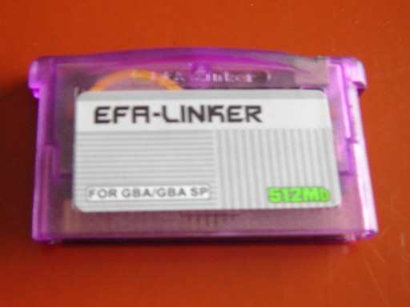 Fig 3.2: efa 烧录卡。 |
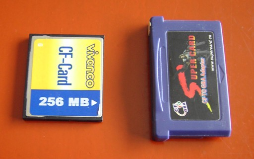 Fig 3.3: SuperCard，CompactFlash 版本。 |
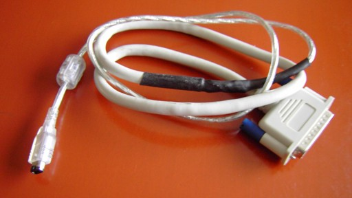 Fig 3.4: xboo 多重启动线。 |
为真实硬件编译
这和模拟器几乎一样。你唯一真正要操心的两件事是：a) 你只能使用经过 objcopy 处理的那个二进制文件，以及 b) 你需要有一个合法的 GBA 文件头，而它通常并没有。如果开场画面像平常一样显示 “Game Boy”，但底部的 “Nintendo” 是乱码，那你就有一个坏的文件头。要得到一个合法的头，可以使用一个名为 gbafix.exe 的程序。它最初由 darkfader 编写，但你也能在 www.devkitpro.org 找到它。早先我已经提到过为多重启动游戏所做的额外步骤。
烧录套装通常会随附能替你打理所有这些事的软件（或者我是这么听说的，我自己没有）。Xboo 的 zip 文件里也有一个小程序，能把你的二进制文件发送到 GBA。
4. GBA 图形入门
总体介绍
GBA 拥有一块 240 像素宽、160 像素高的 LCD 屏幕，能够显示 32768（15 位）种颜色。刷新率略低于每秒 60 帧（59.73 Hz）。GBA 有 5 个可以包含图形的独立图层：4 个背景层和 1 个精灵层，并且能够实现一些特殊效果，包括混合两个图层、马赛克，当然还有旋转和缩放。
声音和按键功能只能将就着用为数不多的几个寒酸寄存器，而视频系统则拥有一大笔可供支配的内存（相对而言）。除了 I/O 内存中的大量寄存器外，还有 96kb 显存（从 0600:0000h 开始）、调色板内存（0500:0000h）和 OAM 内存（0700:0000h）。
绘制与消隐周期
如前所述，整个 GBA 屏幕每 1/60 秒刷新一次，但事情不止于此。一条扫描线绘制完（HDraw 周期，240 像素）后，在开始绘制下一条扫描线之前，会有一个停顿（HBlank，68 像素）。同样，在 160 条扫描线（VDraw）之后，有 68 条扫描线的消隐（VBlank），然后才重新开始。为避免画面撕裂，位置数据通常在 VBlank 更新。这就是为什么大多数游戏以 60 或 30 fps 运行。（顺带一提，在 VBlank 同步也正是我们 PAL 国家游戏常常更慢的原因：PAL 电视以 50Hz 运行（过去是），因此只有 50 fps 而非 60，如果没人费心去处理，游戏就会慢 17%。很少有公司这么做过 :( 。）
CowBite Spec 和 GBATEK 都给出了关于显示时序的一些有趣细节。一次完整的屏幕刷新恰好需要 280896 个周期，除以时钟速度得到 59.73 的帧率。从上面给出的绘制/消隐周期可以看出，每个像素有 4 个周期，每条扫描线有 1232 个周期。你可以在表 4.1 中找到时序细节的摘要。
|
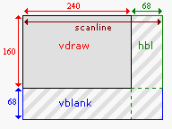 Fig 4.1: vdraw、vblank 与 hblank 周期。 |
|
颜色与调色板
GBA 能够显示 5.5.5 格式的 16 位颜色。这意味着红色 5 位、绿色 5 位、蓝色 5 位；多出来的那一位未使用。基本上，位模式看起来像这样：“xbbbbbgggggrrrrr”。在 color.h 中有一些 define 和宏能让处理颜色更容易。
现在，关于调色板……
<rant>
伙计们，这里的词是 “palette”！一个 ‘l’，两个 ‘t’，末尾一个 ‘e’。它不是 “pallet”，后者是“一种低矮、可移动的台子，通常是双面的，用来堆放材料以便仓储或运输，比如在仓库里“；也不是 “pallette”，意思是“一副盔甲中保护腋窝的护板“。其最常见变体 “pallete” 甚至不在词典里，因此根本不值得考虑。是“palette”，各位，是“palette”。
</rant>
总之，GBA 有两个调色板，一个用于精灵（对象），一个用于背景。两个调色板都包含 256 个 16 位颜色项（各 512 字节）。背景调色板从 0500:0000h 开始，紧跟着是 0500:0200h 处的精灵调色板。精灵和背景可以用两种方式使用这些调色板：作为包含 256 种颜色（每像素 8 位）的单一调色板；或作为 16 个包含 16 种颜色（每像素 4 位）的子调色板或调色板组。
关于调色板最后一件事：索引 0 是透明索引。在调色板模式中，值为 0 的像素将是透明的。
位图、背景与精灵
总而言之，GBA 知道 3 种图形表示：位图、图块背景和精灵。位图和图块背景（也简称为背景）类型影响整个屏幕的构建方式，因此无法同时被激活。
在位图模式中，显存的工作方式就像一个 w×h 的位图。要在位置 (x,y) 处画一个像素，就走到 y*w+x 的位置并填入颜色。注意，你无法在 GBA 上每帧都构建一整屏单独的像素，它们的数量实在太多了。
图块背景的工作方式完全不同。首先，你把 8x8 像素的图块存放在显存的某一部分。然后，在另一部分，你构建一个图块地图，其中包含索引，告诉 GBA 哪些图块进入你在屏幕上看到的图像。要构建一屏，你只需要一个 30x20 的数字地图，硬件就会负责绘制这些数字所指向的图块。这样一来，你可以每帧更新整个屏幕。极少有游戏不依赖这种图形类型。
最后，我们有精灵。精灵是小型（8x8 到 64x64 像素）的图形对象，可以彼此独立地变换，并可与位图或图块地图背景类型配合使用。
优先使用图块模式而非位图模式
在几乎所有类型的游戏中，图块模式都更合适。大多数其他教程聚焦于位图模式，但那仅仅是因为它们对新手更友好，而非因为它们对游戏有实际价值。绝大多数商业游戏都使用图块模式；这应该能说明些什么。
这就是三种基本图形类型，尽管也能想到其他分类方式。例如，位图和图块背景类型，由于它们互斥且使用整个屏幕，构成了背景类型。此外，碰巧图块背景的图块与精灵有着相同的内存布局（即，以 8x8 像素图块为一组）。这使图块背景和精灵成为图块类型。
显示寄存器：REG_DISPCNT、REG_DISPSTAT 与 REG_VCOUNT
在做任何图形相关的事时，你会遇到三个 I/O 寄存器：显示控制 REG_DISPCNT (0400:0000h)、显示状态 REG_DISPSTAT (0400:0004h) 和扫描线计数器 REG_VCOUNT (0400:0006h)。这些名字只是到内存位置的 define，原则上可以随意选择。然而，我们将使用它们在 Pern Project 中出现的名字，因为它们最常见。
REG_DISPCNT 寄存器是屏幕的主要控制。该寄存器的位布局及其含义可以在下表中找到。这是我用于寄存器或类寄存器区域的一般格式。该格式的细节已经在前言中解释过了。
| F | E | D | C | B | A | 9 | 8 | 7 | 6 | 5 | 4 | 3 | 2 1 0 |
| OW | W1 | W0 | Obj | BG3 | BG2 | BG1 | BG0 | FB | OM | HB | PS | GB | Mode |
| bits | name | define | description |
|---|---|---|---|
| 0-2 | Mode | DCNT_MODEx. DCNT_MODE# | 设置视频模式。0、1、2 是图块模式；3、4、5 是位图模式。 |
| 3 | GB | DCNT_GB | 如果卡带是 GBC 游戏则置位。只读。 |
| 4 | PS | DCNT_PAGE | 页选择。模式 4 和 5 可以使用页翻转来实现更流畅的动画。该位选择显示的页（并允许在另一页上绘制而不产生瑕疵）。 |
| 5 | HB | DCNT_OAM_HBL | 允许在 HBlank 中访问 OAM。OAM 在 VDraw 中通常锁定。会减少每行渲染的精灵像素数。 |
| 6 | OM | DCNT_OBJ_1D | 对象映射模式。图块内存可以看作一个 32x32 的图块矩阵。当精灵由多个图块竖向组成时，该位告诉下一个图块行是位于前一个下方（符合矩阵结构，2D 映射，OM=0），还是紧挨着它（使内存排列为精灵数组，1D 映射 OM=1）。更多内容见[精灵](regobj.html)章。
|
| 7 | FB | DCNT_BLANK | 强制屏幕消隐。 |
| 8-C | BG0-BG3, Obj | DCNT_BGx, DCNT_OBJ. DCNT_LAYER# | 启用相应背景和精灵的渲染。 |
| D-F | W0-OW | DCNT_WINx, DCNT_WINOBJ | 分别启用窗口 0、1 和对象窗口的使用。窗口可用于遮罩某些区域（就像《塞尔达：众神的三角力量》里那盏灯做的那样）。 |
设置显示控制大概是你最先会做的事。对于简单的演示程序，你可以只设置一次就保持不动，尽管在视频模式之间切换能产生一些有趣的效果。
现在说我提到的另外两个寄存器，REG_DISPSTAT 和 REG_VCOUNT。后者告诉你当前正在处理的扫描线。注意这个计数器会一直进入到 VBlank，所以它会数到 227 才重新从 0 开始。前者给你关于绘制/消隐状态的信息，并用于设置显示中断。你也可以用这里能启用的中断做一些很酷的事。比如，HBlank 中断就用于创建 Mode 7 图形，而你肯定想知道它是怎么工作的，不是吗？
| F E D C B A 9 8 | 7 6 | 5 | 4 | 3 | 2 | 1 | 0 |
| VcT | - | VcI | HbI | VbI | VcS | HbS | VbS |
| bits | name | define | description |
|---|---|---|---|
| 0 | VbS | DSTAT_IN_VBL | VBlank 状态，只读。会在 VBlank 内置位，在 VDraw 内清除。 |
| 1 | HbS | DSTAT_IN_HBL | HBlank 状态，只读。会在 HBlank 内置位。 |
| 2 | VcS | DSTAT_IN_VCT | VCount 触发状态。如果当前扫描线与扫描线触发器匹配则置位（REG_VCOUNT ==
REG_DISPSTAT{8-F}）
|
| 3 | VbI | DSTAT_VBL_IRQ | VBlank 中断请求。如果置位，将在 VBlank 触发中断。 |
| 4 | HbI | DSTAT_HBL_IRQ | HBlank 中断请求。 |
| 5 | VcI | DSTAT_VCT_IRQ | VCount 中断请求。如果当前扫描线匹配触发值则触发中断。 |
| 8-F | VcT | DSTAT_VCT# | VCount 触发值。如果当前扫描线处于此值，第 2 位置位，并在被请求时触发中断。 |
| F E D C B A 9 8 | 7 6 5 4 3 2 1 0 |
| - | Vc |
| bits | name | description |
|---|---|---|
| 0-7 | Vc | 垂直计数。范围是 [0,227] |
垂直同步 第一部分：忙等待循环
如前所述，把 VBlank 用作计时机制并更新游戏数据。这被称为 vsync（vertical synchronisation，垂直同步）。有若干种 vsync 的方法。两种最常用的方法使用 while 循环并检查 REG_VCOUNT 或 REG_DISPSTAT。例如，由于 VBlank 从扫描线 160 开始，你可以观察 REG_VCOUNT 何时超过这个值。
#define REG_VCOUNT *(u16*)0x04000006
void vid_vsync()
{ while(REG_VCOUNT < 160); }
不幸的是，这段代码有几个问题。
首先，如果你只是做一个空的 while 循环来等待 160，编译器可能会自作聪明，注意到循环不会改变 REG_VCOUNT，于是把它的值放进寄存器以便快速引用。由于这个值很可能在某个时刻低于 160，你就得到了一个漂亮的小无限循环。为防止这一点，请使用关键字 volatile（见 tonc_memmap.h 和 tonc_types.h）。
其次，在小演示程序里，仅仅等待 VBlank 还不够；当你再次调用 vid_sync() 时，你可能仍处在那个 VBlank 内，它会立即通过。这并不能同步到 60 fps。为此，你必须先等到下一个 VDraw。这使我们的 vid_sync 看起来像这样：
#define REG_VCOUNT *(vu16*)0x04000006
void vid_vsync()
{
while(REG_VCOUNT >= 160); // wait till VDraw
while(REG_VCOUNT < 160); // wait till VBlank
}
这总会等到下一次 VBlank 开始。而 REG_VCOUNT 现在是 volatile（“vu16” 被 volatile unsigned（16位）short typedef 而来。我会大量使用这类简写，所以习惯它吧）。这是一种做法。另一种是检查显示状态寄存器 REG_DISPSTAT{0} 中的最后一位。
所以我们搞定了，对吧？呃……不，不完全是。虽然你现在有一个简单的 vsync 方法，但它也是一种非常糟糕的方法。当你在 while 循环里时，你仍在消耗 CPU 周期。这当然耗电。而且由于你在这个 while 循环里啥也不干，你不只是用了它，你实际上是在浪费电量。此外，由于你一开始大概只会做小游戏，你将浪费大量的电量。推荐的 vsync 方法是：在事情做完后让 CPU 进入低功耗模式，然后用中断把它唤醒。你可以在这里读到这个过程，但既然你必须知道如何使用中断和 BIOS 调用，你或许想等一会儿。
5. 位图模式（模式 3、4、5）
介绍
在本章中，我们会了解位图模式。位图模式是个不错的起点，因为内存内容与屏幕上的像素之间是一一对应的。我们将简要讨论所有位图模式的基本要点，并以模式 3 为例仔细看看你能做什么。我们也会看到一点页翻转（page flipping，模式 4），它能带来更流畅的动画。
本章将以一节关于如何处理数据以及计算机内存总体情况的内容结束。由于 GBA 编程非常贴近硬件，你需要了解这些东西。如果你已经编程（用 C 或汇编）很久，并且对数据、数据类型和内存有了很好理解，你大概可以跳过它；但对其余的人，我强烈建议你读一读，因为它对之后所有章节都非常重要。
位图入门

Fig 5.1: Link (24x24 bitmap).
在 fig 5.1 中你可以找到一个让任天堂声名大噪的游戏角色的位图。这大概就是大多数人心目中位图的模样：一个彩色像素的网格。为了在程序中使用位图，我们需要知道它们在内存中是如何排列的。为此我们用图 5.2（下方）；这是 fig 5.1 放大后的版本，上面叠加了像素网格和一些数字。
位图不过是一个 w×h 的颜色（或颜色索引）矩阵，其中 w 是列数（宽度），h 是行数（高度）。某个特定像素可以用一个坐标对表示：(x, y)。顺便说一下，GBA 的 y 轴指向下，而不是上。所以像素 (0, 0) 在左上角。在内存中，位图的各行是顺序排列的，因此以下规则成立：在 w×h 位图中，像素 (x, y) 是第 (w×y + x) 个像素。顺便说一句，这对所有 C 矩阵都成立。
Fig 5.2 展示了这是如何运作的。这是一个 w=24、h=24 的位图，位深为 8bpp（8 Bits Per Pixel，即每像素 8 位 = 1 字节）。黄色的数字表示内存位置；如果你不相信我，可以自己数一数。第一个像素 (0, 0) 位于位置 0。第一行的*最后一个*像素 (23, 0) 在 w−1（本例中是 23）。第二行的第一个像素 (0, 1) 在 w（=24），依此类推，直到最后一个像素 w×h−1。
 Fig 5.2a: zoom out of
fig 5.1, with pixel offsets.
Fig 5.2a: zoom out of
fig 5.1, with pixel offsets.
|
 Fig 5.2b：fig 5.1 的放大视图，带有像素值。
为清晰起见省略了零。调色板在左侧。
Fig 5.2b：fig 5.1 的放大视图，带有像素值。
为清晰起见省略了零。调色板在左侧。
|
不过注意，当你使用另一种位深时，地址也会改变。例如，在 16bpp（每像素 2 字节）下，你需要把像素编号乘以 2。或者使用另一种数据类型作为你的数组。通用公式留作读者的练习。
通常重要的其实不是宽度（即一行中的像素数），而是跨度（pitch）。跨度定义为一条扫描线中的字节数。对于 8bpp 图像，跨度和宽度通常相同，但对于 16bpp 图像（每像素 2 字节），跨度是宽度的两倍。还有一个陷阱：内存对齐。对齐会在后面一节讨论，但要点是，系统通常有一个“偏好”的类型大小，如果地址是该类型大小的倍数，系统能更好地处理数据。这就是为什么某些位图文件格式中的扫描线总是对齐到 32 位边界。
GBA 位图模式
视频模式 3、4 和 5 是位图模式。要使用它们，把 3、4 或 5 放进 REG_DISPCNT 的最低几位，并启用 BG2。你可能奇怪我们为什么从模式 3 开始，而不是模式 0。原因就是位图比图块地图（tilemaps）容易理解得多。而这是唯一的原因。事实是，位图模式对于大多数常规 GBA 游戏来说实在太慢了。我无法给出确切数字，但如果有人说 90% 或更多的 GBA 游戏用的是图块模式而非位图模式，我不会感到惊讶。位图模式唯一有利的情况，要么是屏幕非常静态（开场演示），要么是屏幕非常动态（如《星际火狐》或《毁灭战士》这类 3D 游戏）。
位图模式具有以下特征：
| mode | width | height | bpp | size | page-flip |
|---|---|---|---|---|---|
| 3 | 240 | 160 | 16 | 1× 12C00h | No |
| 4 | 240 | 160 | 8 | 2× 9600h | Yes |
| 5 | 160 | 128 | 16 | 2× A000h | Yes |
宽度、高度和 bpp 的含义现在应该清楚了；位图所需的大小就是 width × height × bpp/8。页翻转可能需要更多解释，但首先我们看一些模式 3 图形的例子。
在模式 3 中绘制图元
我们已经见过如何绘制像素，现在该画一些线和矩形了。水平线几乎平平无奇：因为像素在相邻的内存中，你只需要一个从起点 x 到终点 x 的简单循环。垂直线也几乎一样简单：虽然像素不是紧挨着彼此，但它们之间有一个固定的偏移量，即跨度（pitch）。所以同样只需要一个简单的循环。矩形本质上是多条水平线，因此也同样简单。
对角线稍微棘手一些，原因有几个。对角线有一个斜率，表示在移到下一条扫描线之前需要走多少水平步。这只有在斜率的绝对值小于 1 时才有效，否则像素之间会出现空隙。对于更高的斜率，你需要垂直递增，水平绘制。
另一点是如何让例程快到真正有用。幸运的是，这些事情过去都已经有人想通了，所以我们这里直接使用结果。本例中，我们对画线使用 Bresenham 中点算法（Bresenham Midpoint），并做了修改以分别处理水平和垂直线。虽然我可以解释这个例程到底做了什么，但那确实超出了本章范围。
我在这里忽略了两点：归一化（normalization）和裁剪（clipping）。归一化是指确保例程朝着正确方向运行。例如，当实现一个通过递增 for 循环从 x1 跑到 x2 的画线例程时，你最好先确保 x2 确实大于 x1。裁剪是指把图元裁cut以适应视口。虽然这是件好事，但我们会省略它，因为要做好它可能会相当麻烦。
下面的代码是 m3_demo 中 toolbox.c 的节选，包含了在 16bpp 画布（如模式 3 和模式 5）上绘制线、矩形和边框的函数。dstBase 是画布的基指针，dstPitch 是跨度。其余参数应该一目了然。
#include "toolbox.h"
//! Draw a line on a 16bpp canvas
void bmp16_line(int x1, int y1, int x2, int y2, u32 clr,
void *dstBase, uint dstPitch)
{
int ii, dx, dy, xstep, ystep, dd;
u16 *dst= (u16*)(dstBase + y1*dstPitch + x1*2);
dstPitch /= 2;
// --- Normalization ---
if(x1>x2)
{ xstep= -1; dx= x1-x2; }
else
{ xstep= +1; dx= x2-x1; }
if(y1>y2)
{ ystep= -dstPitch; dy= y1-y2; }
else
{ ystep= +dstPitch; dy= y2-y1; }
// --- Drawing ---
if(dy == 0) // Horizontal
{
for(ii=0; ii<=dx; ii++)
dst[ii*xstep]= clr;
}
else if(dx == 0) // Vertical
{
for(ii=0; ii<=dy; ii++)
dst[ii*ystep]= clr;
}
else if(dx>=dy) // Diagonal, slope <= 1
{
dd= 2*dy - dx;
for(ii=0; ii<=dx; ii++)
{
*dst= clr;
if(dd >= 0)
{ dd -= 2*dx; dst += ystep; }
dd += 2*dy;
dst += xstep;
}
}
else // Diagonal, slope > 1
{
dd= 2*dx - dy;
for(ii=0; ii<=dy; ii++)
{
*dst= clr;
if(dd >= 0)
{ dd -= 2*dy; dst += xstep; }
dd += 2*dx;
dst += ystep;
}
}
}
//! Draw a rectangle on a 16bpp canvas
void bmp16_rect(int left, int top, int right, int bottom, u32 clr,
void *dstBase, uint dstPitch)
{
int ix, iy;
uint width= right-left, height= bottom-top;
u16 *dst= (u16*)(dstBase+top*dstPitch + left*2);
dstPitch /= 2;
// --- Draw ---
for(iy=0; iy<height; iy++)
for(ix=0; ix<width; ix++)
dst[iy*dstPitch + ix]= clr;
}
//! Draw a frame on a 16bpp canvas
void bmp16_frame(int left, int top, int right, int bottom, u32 clr,
void *dstBase, uint dstPitch)
{
// Frame is RB exclusive
right--;
bottom--;
bmp16_line(left, top, right, top, clr, dstBase, dstPitch);
bmp16_line(left, bottom, right, bottom, clr, dstBase, dstPitch);
bmp16_line(left, top, left, bottom, clr, dstBase, dstPitch);
bmp16_line(right, top, right, bottom, clr, dstBase, dstPitch);
}
这些函数非常通用：它们对任何带 16 位颜色的东西都有效。也就是说，每次都要加上画布指针和跨度可能很烦人，所以你可以专门为模式 3 和模式 5 创建一个接口层（interface layer）。用于模式 3 的接口大概像这样：
typedef u16 COLOR;
#define vid_mem ((COLOR*)MEM_VRAM)
#define M3_WIDTH 240
// === PROTOTYPES =====================================================
INLINE void m3_plot(int x, int y, COLOR clr);
INLINE void m3_line(int x1, int y1, int x2, int y2, COLOR clr);
INLINE void m3_rect(int left, int top, int right, int bottom, COLOR clr);
INLINE void m3_frame(int left, int top, int right, int bottom, COLOR clr);
// === INLINES ========================================================
//! Plot a single \a clr colored pixel in mode 3 at (\a x, \a y).
INLINE void m3_plot(int x, int y, COLOR clr)
{
vid_mem[y*M3_WIDTH+x]= clr;
}
//! Draw a \a clr colored line in mode 3.
INLINE void m3_line(int x1, int y1, int x2, int y2, COLOR clr)
{
bmp16_line(x1, y1, x2, y2, clr, vid_mem, M3_WIDTH*2);
}
//! Draw a \a clr colored rectangle in mode 3.
INLINE void m3_rect(int left, int top, int right, int bottom, COLOR clr)
{
bmp16_rect(left, top, right, bottom, clr, vid_mem, M3_WIDTH*2);
}
//! Draw a \a clr colored frame in mode 3.
INLINE void m3_frame(int left, int top, int right, int bottom, COLOR clr)
{
bmp16_frame(left, top, right, bottom, clr, vid_mem, M3_WIDTH*2);
}
最后，还有一个 m3_fill() 函数，用单一颜色填充整个模式 3 画布。
//! Fill the mode 3 background with color \a clr.
void m3_fill(COLOR clr)
{
int ii;
u32 *dst= (u32*)vid_mem;
u32 wd= (clr<<16) | clr;
for(ii=0; ii<M3_SIZE/4; ii++)
*dst++= wd;
}
 Fig 5.3: drawing in mode 3.
Fig 5.3: drawing in mode 3.
现在，注意我在这里做了什么：我并没有把 VRAM 当作由 16 位值（适合 16bpp 颜色）组成的数组来处理，而是用了一个 32 位指针，用包含一个双色的 32 位变量来填充 VRAM。当填充大块内存时，用 N 个 16 位块填充，还是用 ½N 个 32 位块填充，没有区别。然而，由于后一种情况迭代次数只有前者的一半，它大约快两倍。在 C 中，做这样的事完全合法（前提是满足严格别名规则），而且常常确实有用。这就是为什么理解数据和内存的原理很重要。还要注意的是，我在这里用了指针算术而非数组下标。虽然编译器通常自己会做这个转换，但手动做往往还是会快一点。（如有疑问，看看 GCC 生成的汇编语言。）
虽然这个方法已经比“普通”方法快了一倍，但其实还有快得多的办法。我们以后会用到它们，当我们不再使用单独的工具箱文件，而是开始使用 libtonc——Tonc 的代码库。Tonclib 包含了上面描述的函数（只是更快），以及 bmp16_ 例程的 8bpp 变体，还有模式 4 和模式 5 的接口。
下面你可以找到 m3_demo 的主代码，它使用 m3_ 函数在屏幕上画一些东西。严格来说，使用这么多魔法数字是不好的风格，但为了演示目的应该没问题。结果可以在 fig 5.3 中看到。
#include "toolbox.h"
int main()
{
int ii, jj;
REG_DISPCNT= DCNT_MODE3 | DCNT_BG2;
// Fill screen with grey color
m3_fill(RGB15(12, 12, 14));
// Rectangles:
m3_rect( 12, 8, 108, 72, CLR_RED);
m3_rect(108, 72, 132, 88, CLR_LIME);
m3_rect(132, 88, 228, 152, CLR_BLUE);
// Rectangle frames
m3_frame(132, 8, 228, 72, CLR_CYAN);
m3_frame(109, 73, 131, 87, CLR_BLACK);
m3_frame( 12, 88, 108, 152, CLR_YELLOW);
// Lines in top right frame
for(ii=0; ii<=8; ii++)
{
jj= 3*ii+7;
m3_line(132+11*ii, 9, 226, 12+7*ii, RGB15(jj, 0, jj));
m3_line(226-11*ii,70, 133, 69-7*ii, RGB15(jj, 0, jj));
}
// Lines in bottom left frame
for(ii=0; ii<=8; ii++)
{
jj= 3*ii+7;
m3_line(15+11*ii, 88, 104-11*ii, 150, RGB15(0, jj, jj));
}
while(1);
return 0;
}
一点模式 4
模式 4 是另一种位图模式。它也有一个 240×160 的帧缓冲，但不用 16bpp 像素，而是用 8bpp 像素。这 8 位是指向位于 0500:0000 的背景调色板的一个调色板索引（palette index）。你在屏幕上看到的颜色，就是调色板中该位置的颜色。
像素位深为 8 意味着你一次只能用 256 种颜色（而不是 15bpp 情况下的 32768 种），但也有好处。其一，你可以通过简单地改变调色板中的颜色来操纵许多像素的颜色。8bpp 的帧缓冲占用的内存也只有 16bpp 缓冲的一半。这不仅填充起来更快（嗯，原则上如此），而且还为第二个缓冲留出了空间，以实现页翻转。为什么这有用，我们一会儿就讲。
不过，使用模式 4 有一个主要缺点，源于一个硬件限制。对于 8 位像素，把 VRAM 映射为一个字节数组似乎很合理。如果不是因为那个相当恼人的事实——VRAM 不允许字节写入！——这本来是没问题的。现在，因为这一点非常重要，让我重复一遍：你不能向 VRAM 写入单字节！！！。字节读取没问题，但写入必须以 16 位或 32 位的块进行。如果你确实以字节方式写入 VRAM，你访问的那个半字（halfword）最终会变成那个字节同时被复制到低位和高位字节中：你一次设置了两个像素。注意，这个“禁止字节写入”规则也延伸到调色板内存和 OAM，但在那里不会造成麻烦，因为你本来也不会把它们当字节用。
那么如何绘制单像素呢？嗯，你必须读取你想要访问的整个半字，掩掉你不想覆盖的位，插入你的像素，然后再写回去。代码如下：
#define M4_WIDTH 240 // Width in mode 4
u16 *vid_page= vid_mem; // Point to current frame buffer
INLINE void m4_plot(int x, int y, u8 clrid)
{
u16 *dst= &vid_page[(y*M4_WIDTH+x)/2]; // Division by 2 due to u8/u16 pointer mismatch!
if(x&1)
*dst= (*dst& 0xFF) | (clrid<<8); // odd pixel
else
*dst= (*dst&~0xFF) | clrid; // even pixel
}
如你所见，它比 m3_plot() 复杂一点。运行起来也要花更长的时间。不过，一旦你有了一个像素绘制器，你就可以轻松创建其他渲染例程。绘制线、矩形、圆之类的基本代码，基本上与像素如何格式化无关。例如，画一个矩形本质上就是在一个双重循环中绘制像素。
void generic_rect(int left, int top, int right, int bottom, COLOR clr)
{
int ix, iy;
for(iy=top; iy<bottom; iy++)
for(ix=left; ix<right; ix++)
generic_plot(ix, iy, clr);
}
这是一个矩形绘制例程的通用模板。只要你有一个能用的像素绘制器，就万事大吉。然而，在模式 4 下，生意会非常慢，因为绘制器形式复杂。在大多数情况下，它会慢到对游戏毫无用处。不过还是有出路。之所以 m4_plot() 慢，是因为你不得不小心不要覆盖另一个像素。然而，当你画一条水平线时（基本上就是这里的 ix 循环），很可能你本来也要给那个另一像素同样的颜色，所以除了边界处，你不必操心读-掩-写那一套。这个更快（快得多）的线算法，以及随之而来的矩形绘制器，留作读者的练习。或者你可以去找 libtonc 里的 tonc_bmp8.c。
VRAM 与字节写入
你不能向 VRAM 写入单个字节（调色板或 OAM 也一样）。请只用半字或字。如果你想写单个字节，必须先读取完整的（半）字，插入该字节，再写回去。
请不要跳过这条提示，并让自己意识到它的全部后果。由指针类型不匹配导致的错误很容易犯，而且你写入 VRAM 为字节的频率可能超出你的想象。
通用 vs 专用渲染例程
每种图形表面都需要自己的像素绘制器。原则上，更复杂的（多像素）形状是与表面无关的。例如，线算法遵循相同的算法，只是用不同的绘制器来画像素。这些通用形式在可复用性和可维护性方面很棒，但在速度上可能灾难性。创建针对特定表面的渲染器可能是额外的工作，但偶尔能为你节省高达 100 倍的速度。
位图模式的复杂性
虽然我可以继续讨论更复杂的事情，比如绘制矩形、blit 和文本，但在现阶段这么做理由很少。正如我之前所说，位图模式适合学习一些基本功能，但在大多数实际用途中，你用图块模式会更好。
主要问题是速度。即使是像这里这样简单的图元，也可能耗费大量时间，尤其是你实现时不小心的话。例如，一次完整的模式 3 清屏在最好情况下也要占用约 60% 的 VBlank！在清屏的糟糕实现中，比如用一个调用非内联像素绘制函数的矩形绘制器来做，可能要花多达 10 帧。而那样之后你还得绘制所有背景和精灵，并处理游戏逻辑。想到这个，脑海里不知怎地就浮现出“令人毛骨悚然的恐怖”这个词。
除此之外，位图模式只能用一个背景，并且没有像样的硬件滚动。而且，虽然这有点提前剧透，它会与包含精灵图块的内存（从 0601:0000h 开始）重叠。因此，在模式 3-5 下，你将只能使用 512 到 1023 号的精灵图块。
页翻转可以缓解其中一些问题，但模式 3 没有提供它。模式 5 有，但它只用了屏幕的一小部分，所以只用它来玩游戏会很尴尬。至于模式 4，嗯，那是一个你真的会看到“贴近硬件编程意味着什么”的地方：它不允许你以字节大小的块写入 VRAM！要获得单像素分辨率，唯一的办法是把 2 个相邻像素合并后一起写，这要花很多额外时间。
所以基本上，位图模式用于测试和/或静态图像，除此之外就别用太多，除非你确信图块模式做不到你想要的事。
位图模式不适合做游戏
别对位图模式太舒服。虽然它们对 gbadev 的入门章节来说不错，因为它们比图块模式更容易上手，而且它们在 3D 游戏中有优势，但它们不适合大多数类型的游戏，因为 GBA 根本不能以足够快的速度推送像素。用它们来摸索 IO 寄存器之类的东西，然后继续前进就好。
页翻转

Fig 5.4：页翻转过程。 不复制任何数据，只交换 ‘显示’ 与 ‘写入’ 指针。
页翻转是一种消除动画中撕裂（tearing）之类的难看伪影的技术。在动画中同时发生两件事：把像素放到位图上（写），以及把位图绘制到屏幕上（显示）。软件负责写，更新角色的位置等；硬件负责显示：它只是把位图取走并复制到屏幕上。问题是这两个过程都需要时间。更糟的是，它们同时发生。当游戏状态在绘制中途改变时，下半部分会属于当前状态，而上半部分会代表前一状态。不用说，这很糟糕。
于是有了页翻转。你不用一个位图又写又显示，而是用两个。当一个位图被显示时，你在第二个位图（后台缓冲）上写你需要的一切。然后，当你完成时，你告诉硬件去显示第二个位图，而你可以在第一个上准备下一帧。没有任何伪影。
虽然这个流程很棒，但也有一些陷阱。首先，考虑这个情况。给定指向两页的指针 page1 和 page2。现在，page1 正在显示，page2 正在准备中；到目前为止一切顺利。但是当你切换到第二页时，这只把 page2 变成了显示页；你必须自己把 page1 变成写页！这个问题的解决方案很简单：用一个写缓冲指针，但如果你刚接触这些，它可能会让你措手不及。
第二个问题与这种古老动画方法中的一个小讨厌之处有关。规范的动画是这样做的。第 1 帧：画对象。第 2 帧：擦掉旧对象，把对象画在新状态。这对页翻转不起作用，因为第 2 帧是写在一个完全不同的位图上的，而不是第 1 帧，所以试图擦掉第 1 帧的旧对象并不会生效。你需要擦掉的是两帧之前的对象。同样，解决方案简单，但你必须意识到这个问题。（当然，每次都擦掉整个帧也可以，但谁有那个时间？）
页翻转，不是双缓冲
另一种更流畅的动画方法是双缓冲（double buffering）：在辅助缓冲（后台缓冲）上绘制，完成后把它复制到屏幕。这与页翻转是根本不同的技术！即使两者都使用两个缓冲，在页翻转中你并不是把后台缓冲复制到显示缓冲，而是让后台缓冲成为显示缓冲。
GBA 做的是页翻转，所以请这样称呼它。
GBA 页翻转
GBA 的第二页位于 0600:A000h。如果你看模式 3 所需的大小，就会明白它为什么没有页翻转能力：没有空间放第二页。要把 GBA 设为显示第二页，设置 REG_DISPCNT{4}。我的页翻转函数大概像这样：
u16 *vid_flip()
{
// toggle the write_buffer's page
vid_page= (u16*)((u32)vid_page ^ VID_FLIP);
REG_DISPCNT ^= DCNT_PAGE; // update control register
return vid_page;
}
代码相对直接。vid_page 是总是指向写页的指针。我不得不变点戏法才能让它 XOR 起来（C 不喜欢你对指针做这个）。在 GBA 上，页翻转的步骤是完全可以 XOR 的操作。当然，你可以直接把它放进一个 if-else 块，但那样哪有乐趣 :P？
页翻转演示
下面是 pageflip 演示的代码（不含数据）。真正与页翻转有关的部分非常小。实际上，真正的翻转仅仅是每 60 帧 = 1 秒调用一次 vid_flip()（第 3 点）。我们还得把视频模式设置为真正有页可翻的模式，本例中是模式 4。
我们还得加载显示在这两页上的数据。我用了标准的 C 例程 memcpy() 来复制，因为这是 C 中复制东西的标准方式。虽然它比手工循环快，但使用它之前你需要注意几个陷阱。Tonclib 带有更快更安全的例程，但到时候我们再讲。
加载位图在理论上非常简单，但我用的位图只有 144×16 大小，而 VRAM 页的跨度是 240 像素宽。这意味着我们得逐条扫描线复制，这在第 (1) 点完成。注意我把 frontBitmap 复制到 vid_mem_front，把 backBitmap 复制到 vid_mem_back，因为它们是两页的起始位置。
由于这些是模式 4 位图，它们也需要一个调色板。两个调色板都用 frontPal，但我没有用 memcpy() 把它复制到背景调色板内存，而是用了一个 u32 数组，因为……嗯，大概就是因为我乐意吧。
最后，你可以按住 Start 键来暂停和继续演示。
#include <string.h>
#include <toolbox.h>
#include "page_pic.h"
void load_gfx()
{
int ii;
// (1) Because my bitmaps here don't fit the screen size,
// I'll have to load them one scanlline at a time
for(ii=0; ii<16; ii++)
{
memcpy(&vid_mem_front[ii*120], &frontBitmap[ii*144/4], 144);
memcpy(&vid_mem_back[ii*120], &backBitmap[ii*144/4], 144);
}
// (2) You don't have to do everything with memcpy.
// In fact, for small blocks it might be better if you didn't.
// Just mind your types, though. No sense in copying from a 32-bit
// array to a 16-bit one.
u32 *dst= (u32*)pal_bg_mem;
for(ii=0; ii<8; ii++)
dst[ii]= frontPal[ii];
}
int main()
{
int ii=0;
load_gfx();
// Set video mode to 4 (8bpp, 2 pages)
REG_DISPCNT= DCNT_MODE4 | DCNT_BG2;
while(1)
{
while(KEY_DOWN_NOW(KEY_START)); // pause with start
vid_vsync();
// (3) Count 60 frames, then flip pages
if(++ii == 60)
{
ii=0;
vid_flip();
}
}
return 0;
}


关于数据及其使用
本节有点无聊（好吧，非常无聊），但需要说一说。虽然关于 C 的书籍和教程可能为了各种目的而使用数据，但它们常常忽略了数据在最底层到底是什么，以及如何正确地处理它。既然你会在这里直接与硬件和内存打交道，重要的是你要意识到这些项，最好能理解它们，这样它们才不会在以后咬你一口。
前两个小节讲的是如何把图形弄进你的游戏，这是你真正需要知道的。之后我会讨论一些讨厌且高度技术性的东西，它们现在或以后可能造成问题。这些是可选的，你可以随时跳到数据加载/解释演示。话虽如此，我还是敦促你读一读，因为它们可能为你省下大量调试时间。
放轻松，它只是 1 和 0
归根结底，计算机上的一切都只是一大堆本身没有任何目的的位。是硬件和软件之间的交互，让位序列表现为有效的可执行代码、位图、音乐或其他什么。
是的，我们没有文件
现在说几句关于数据的话可能正合适。严格来说，一切都是数据，但这里我指的是在 PC 游戏上与可执行文件分开的数据：图形、音乐，也许还有脚本和文本文件之类的。这在 PC 上运作良好，但在 GBA 上就不太好了，因为没有文件系统。这意味着你不能使用标准的文件 I/O 例程（fscanf()、fread() 等）来读取数据，因为没有文件可供读取。
游戏的所有数据都必须直接加入二进制文件中。有几种方法可以做到这一点。最常见的方法是把原始二进制文件转换成 C 数组，然后编译并链接到项目中。嗯，在家用爱好者中最常见的可能是转换成 C 数组然后用 #include 包含它们，但那是你永远不该做的事。同样流行的是汇编数组。它们是 C 数组的一个有用替代，因为 a) 它们不能被 #include，b) 因为它们绕过了编译步骤，而数组的编译非常耗费资源。当然，你得知道怎么用汇编器。汇编器的另一个好处是你可以直接把二进制文件包含进去，省去了转换器的需要。最后，虽然 GBA 没有原生文件系统，你总可以自己写一个。一个常见的是 gbadev 论坛 FAQ 维护者 tepples 写的 GBFS。使用文件系统实际上是推荐的方法，但眼下，我会坚持用 C 数组，因为它们最容易使用。
嗯哼。实际上，我们确实有文件
过去没有文件，但在 2006 年 7 月，Chishm 给了我们 libfat，这是一个用于 GBA 和任天堂 DS 的类 FAT 文件系统。它通过 devkitPro Updater 分发，所以你很可能已经拥有了。
我的数组去哪儿了？
默认情况下，数组进入 IWRAM。就是那个只有 32 KiB 长的东西。现在，一个模式 3 位图是 240×160×2 = 77 kB。显然，试图把一个 77 kB 的对象放进一个 32 KiB 的区域，会完美地归入“坏事情”一类。为避免这种情况，把它放进只读区（ROM），那里大得多。你所要做的就是在定义时（如果用 C）加上 const 关键字，或者在汇编中加上 .rodata 指令。注意，对于多启动（multiboot）程序，ROM 实际上指的是 EWRAM，它只有 256 KiB 长。后者能容纳三个模式 3 位图；再多就又不好了，除非你使用压缩。
注意，我关于数组说的话适用于所有数组，不只是数据数组：如果你想要任何大型数组（比如模式 3 的后台缓冲），它也会默认进入并撑爆 IWRAM。但你不能把它设为 const，因为那样你就不能往上面写了。GCC 有属性可以让你选择东西放在哪里——比如放在 EWRAM 中。下面是用于特定区域放置的常用 #define 宏。
#define EWRAM_DATA __attribute__((section(".ewram")))
#define IWRAM_DATA __attribute__((section(".iwram")))
#define EWRAM_BSS __attribute__((section(".sbss")))
#define EWRAM_CODE __attribute__((section(".ewram"), long_call))
#define IWRAM_CODE __attribute__((section(".iwram"), long_call))
const 是好的
你不期望在游戏中改变的数据，应该用 const 关键字定义为常量数据，以免它糟蹋你的 IWRAM。
C++ 中转换后的和 const 数组
如果你在 C++ 中使用（转换后的）数据数组，有两个小坑会绊倒你。第一个是，生成数组的工具会输出 C 文件，而不是 C++ 文件。这本身不是问题，因为这些文件照样会被编译。真正的问题是，C++ 使用所谓的名字改编（Name mangling）来实现重载之类的功能。C 不会，结果就是 C++ 文件寻找的名字与 C 文件中的名字不一样，于是你会得到未定义的引用。要解决这个问题，在 C 文件里的声明前后加上 extern "C"。
// 这样：
extern "C" const unsigned char C_array[];
// 或这样：
extern "C"
{
const unsigned char C_array1[];
const unsigned char C_array2[];
}
C++ 的另一个问题是，const 数组被视为静态的（局限于包含它的文件），除非你为它加上一个外部声明。所以如果你只是在一个文件里有 const u8 foo[]= { etc }，这个数组对其他文件是不可见的。这里的解决方案是也在文件内部加上声明。
// foo.cpp. 始终在文件内部也放一个外部声明。
extern const unsigned char foo[];
const unsigned char foo[]=
{
// data
};
数据转换
写一个把二进制文件转换成 C 或 asm 数组的工具相当容易。事实上，devkitARM 自带两个做这件事的工具：raw2c.exe 和 bin2s.exe。顺便说一句，它也自带 gbfs 的基本工具。但能把二进制文件附到你的游戏上只是故事的一部分。以位图为例。原则上，位图就像其他任何二进制文件一样。它本质上没有任何图形化的东西，你单独使用它时它不会神奇地变成位图。是的，当你双击它时，可能会弹出一个图像查看器显示它，但那只是因为操作系统在底下做了大量工作。而我们没有这些。
大多数文件会遵循某种格式来表明它是什么，以及怎么用。对于位图，那通常意味着宽度、高度、位深和另外几个字段。关键是它们不能直接使用。你不能随便把一个 BMP 文件附到项目里然后复制到 VRAM，就指望一切顺利。不，你必须把它转换成 GBA 可用的格式。现在，你可以在内部（在 GBA 上）做，也可以在外部（在 PC 上并把转换后的数据附到项目里）做。因为后者对 GBA 资源的利用效率高得多，所以那是通常的流程。
有很多转换工具，几乎可以说太多了。有些是单点工具：比如单一文件类型到单一图形模式。有些非常强大，能处理多种文件类型、多个文件、不同的转换模式，并带一大堆附加选项，还有压缩。哪类最有价值应该一目了然。
一个好工具是 gfx2gba。这是一个命令行工具，所以可以用在 makefile 里，但它也有一个 GUI 前端。这个工具有我前面提到的那些好东西，加上一些地图导出选项和调色板合并，但输入文件必须是 8 位的，而且我听说虽然它确实压缩数据，但给出的数组大小仍然是未压缩的大小，出于某个不幸的原因。这个工具随 HAM 安装包一起提供，相当常见，所以绝对推荐。不幸的是，似乎还有另一个同名工具。你要的是 Markus 写的 v0.13 版本，不是另一个。
就我个人而言，我用 Usenti，那是我自己的工具。这是一个位图编辑器（绘图程序），附带导出选项。它允许不同的文件类型、不同的位深、不同的输出文件、所有模式、一些地图导出功能、元图块（meta-tiling）、压缩和其他一些东西。它可能不如 Photoshop、GIMP、Aseprite 这类大型照片编辑工具强大，但能把活干完。如果你还在用 Microsoft Paint 画图，请停止，改用这个。导出器也以名为 (win)grit 的开源项目单独提供，有命令行界面（grit）和 GUI（wingrit）两种形式。截至 2007 年 1 月，它也是 devkitPro 发行版的一部分。
通过 CLI 转换位图
有很多用于图形转换的命令行界面，但要让它们工作你需要正确的标志。下面是 gfx2gba 和 grit 的例子，把位图 foo.bmp 转换成用于模式 3、4 和 5 的 C 数组。这只是一个例子，因为这里不是全面讨论它们的地方。更多细节请看它们各自的 readme。
# gfx2gba
# mode 3, 5 (C array; u16 foo_Bitmap[]; foo.raw.c)
gfx2gba -fsrc -c32k foo.bmp
# mode 4 (C array u8 foo_Bitmap[], u16 master_Palette[]; foo.raw.c, mastel.pal.c)
gfx2gba -fsrc -c256 foo.bmp
# grit
# mode 3, 5 (C array; u32 fooBitmap[]; foo.c foo.h)
grit foo.bmp -gb -gB16
# mode 4 (C array; u32 fooBitmap[], u16 fooPal[]; foo.c foo.h)
grit foo.bmp -gb -gB8
| big u32 | 0x01020304 | |||
|---|---|---|---|---|
| big u16 | 0x0102 | 0x0304 | ||
| u8 | 0x01 | 0x02 | 0x03 | 0x04 |
| little u16 | 0x0201 | 0x0403 | ||
| little u32 | 0x04030201 | |||
下面，你可以看到 modes.c 的部分列表，它包含了本节末尾讨论的 bm_modes 演示中使用的位图和调色板，由 Usenti 导出。它只是文件非常小的一部分，因为它超过 2700 行，在这里显示太长，而且也没有太大意义。注意两者都是 u32 数组，而不是你在别处可能遇到的 u8 或 u16 数组。你需要记住的是，你把数据放进什么样的数组里无关紧要：在内存中结果都一样。
嗯，这并不完全正确。只有用 u32 数组才能保证正确的数据对齐，这是件好事。更重要的是，你必须小心多字节类型的字节顺序。这叫做类型的字节序。在小端序方案中，最低有效字节在前；在大端序方案中，最高有效字节在前。用 0x01、0x02、0x03、0x04 的例子见表 2。GBA 是一台小端机器，所以 modesBitmap 数组的第一个字 0x7FE003E0 是两个半字 0x03E0（绿色）后跟 0x7FE0（青色）。如果你想要更多例子，打开 VBA 的内存查看器，玩玩 8 位、16 位和 32 位的设置。
这里的关键点是：当你对数组使用不同数据类型时，数据本身不会改变，改变的只是你表示它的方式。这也是 bm_modes 演示的要点：VRAM 中的数据始终是同一份；只是用法不同。
//======================================================================
//
// modes, 240x160@16,
// + bitmap not compressed
// Total size: 76800 = 76800
//
// Time-stamp: 2005-12-24, 18:13:22
// Exported by Cearn's Usenti v1.7.1
// (comments, kudos, flames to "daytshen@hotmail.com")
//
//======================================================================
const unsigned int modesBitmap[19200]=
{
0x7FE003E0,0x7FE07FE0,0x7FE07FE0,0x7FE07FE0,0x7FE07FE0,0x7FE07FE0,0x7FE07FE0,0x7FE07FE0,
0x080F080F,0x080F080F,0x080F080F,0x080F080F,0x080F080F,0x080F080F,0x080F080F,0x080F080F,
0x080F080F,0x080F080F,0x080F080F,0x080F080F,0x080F080F,0x080F080F,0x080F080F,0x080F080F,
0x080F080F,0x080F080F,0x080F080F,0x080F080F,0x080F080F,0x080F080F,0x080F080F,0x080F080F,
// ...
// over 2500 more lines like this
// ...
0x080F080F,0x080F080F,0x080F080F,0x080F080F,0x080F080F,0x080F080F,0x080F080F,0x080F080F,
0x080F080F,0x080F080F,0x080F080F,0x080F080F,0x080F080F,0x080F080F,0x080F080F,0x080F080F,
0x080F080F,0x080F080F,0x080F080F,0x080F080F,0x080F080F,0x080F080F,0x080F080F,0x080F080F,
0x7FE07FE0,0x7FE07FE0,0x7FE07FE0,0x7FE07FE0,0x7FE07FE0,0x7FE07FE0,0x7FE07FE0,0x7FE07FE0,
};
const unsigned int modesPal[8]=
{
0x7FE07C1F,0x03FF0505,0x03E00505,0x7C000000,0x0000080F,0x00000000,0x00000000,0x080F0000,
};
那 2700 行代表一个 77 kB 的位图。一个单独的位图。很可能你需要至少好几个才能做出像样的东西。大多数游戏里有大量数据，不仅是图形，还有地图、声音和音乐。所有这些加起来是海量的数据，对仅仅是 EWRAM、甚至对一张完整的卡带来说都太多了。这就是为什么压缩也很重要。GBA BIOS 带有用于位打包、游程编码（run-length encoding）、LZ77 和 Huffman 的解压例程。转换器有时带有这些例程相应的压缩器，能大幅缩减所用的内存量。Usenti 和 (win)grit 支持这些压缩器。gfx2gba 也支持，它甚至有更多。一个专门做二进制文件压缩（但做得很好）的工具是 GBACrusher。我不会深入讲压缩（或者根本不讲），但你可以在这里了解这个主题。
理解数据
理解数据是什么、不同的数据类型如何运作，是至关重要的。字节序和对齐也最好理解。模拟器和十六进制编辑器可以帮你。一旦编译工作跑通了，就做几个随机数组，在 VBA 内存查看器里看一会儿它们长什么样。
把代码或数据 #include 进来被认为是有害的

Fig 5.6: even Bart knows …
大多数非平凡项目会有多个包含代码和数据的文件。处理它们的标准方法是分别编译这些文件，然后把结果链接到最终二进制文件中。这是推荐的策略。然而，大多数其他教程和你在网上能找到的许多示例代码做了别的事： unity build（合并构建）。它们把一切都 #include 进主源文件，然后编译那个文件。这不是推荐的做法，应当避免。
“可为什么不呢？它似乎运行良好，而且太容易了！”
是的，它容易；也似乎确实能工作。主要问题是 unity build 不具备可扩展性。对于小项目（几个文件），你可能注意不到，但随着项目增长到成百上千个文件，你会遇到一些非常恼人的问题。主要问题在于 #include 实际上做了什么。它把整个被包含文件复制到包含者中，形成一个更大的文件。这导致了以下问题。
-
要编译的巨大文件。所以，
#include创建了一个大文件。如果你有很多东西，你就会有一个非常大的文件。这会消耗大量内存并拖慢编译。随着项目增长，从一秒开始的编译时间会增长到几秒，然后几分钟，甚至几小时。在某些时候，还存在编译器无法处理超过 4 MB 的文件的问题，给一个 C 文件里能
#include多少设了上限。我不确定这是否仍是问题。 -
重新编译整个世界。主要问题是，当你
#include一切时，你也得重新编译一切。如果你在任何地方做了一个改动，无论多小，都会导致一切被编译。对于小项目（比如几个文件），完整重建要几秒钟，所以不是问题。但更大的项目可能有成百上千个文件，时间不是用秒衡量，而是用分钟甚至小时。当然，这是去玩剑斗的好借口，但如果你想做点有成效的事，就非常烦人。 -
膨胀。即使你自己的代码和数据数量相对较少，你大概也在用某个代码库来调用 API 函数。通常，这些是预编译的，只有用到的函数才被链接进你的二进制文件。但如果它们也是通过 #include 工作的（换句话说，如果它们的创作者遵循了我所警告的做法），那个库里的每个函数都会被包含进来，包括你没用到的。这会增加文件大小，并且加剧上面提到的问题。
-
未声明的标识符、多重定义和循环依赖。简而言之，C 要求你在使用标识符之前先声明它，而且它只能被定义一次。第一点意味着包含的顺序开始变得重要：比如，如果 fileB.c 需要 fileA.c 里的东西，后者需要在前者之前被包含才能编译。第二点意味着你在一个项目里只能
#include一个文件一次：如果 fileB.c 和 fileC.c 都需要 fileA.c 里的东西，你不能在两者里都#include它，因为当它们在 main.c 里被#include时，fileA.c 实际上被包含了两次，编译器会抗议。这些点在技术上可以通过小心来克服，比如使用包含保护（include guard）。但同样，当项目增长时，要跟踪谁在谁之前、以及为什么，会变得越来越难。不过，有一点它会出错，那就是存在循环依赖时：fileB.c 需要 fileA.c，反之亦然。每个文件都要求另一个先来，这根本不可能，因为那会导致多重定义。
-
数据对齐。我一会儿会讲这意味着什么，但现在要知道，复制例程在数据是 32 位对齐时效果更好（即使对于字节和半字数组）。其中一些在没有对齐的情况下甚至不能正常工作。这在分别编译时通常能得到保证，但如果数组是 #included 的，而且没有采取措施强制对齐，你就永远不知道。
如今这不是个大问题，因为大多数图形转换器会强制数据对齐，但你仍然需要了解它。因为数据对齐是一个相当深奥的概念，除非你意识到它可能带来的问题，否则几乎不可能追查到。
所以请，帮自己一个忙，别把你每个文件都 #include 进 main.c 或它的对应文件里。把函数和变量定义放在单独的源文件里，分开编译，之后链接。 #include 指令只用于带有预处理指令、声明、类型定义和 inline 函数的文件。
正确的构建流程
分开编译
那么你该怎么做呢？首先，把所有代码和数据保留在单独的源文件中。对每个文件调用 gcc 分别编译。这给你一份目标文件列表。然后你把它们链接在一起。在批处理文件中，你需要为每个文件添加额外命令，但一个正确设置的 makefile 使用一个目标文件列表，makefile 的规则会自动处理其余一切。用第二个演示的 makefile 作参考，你会得到类似这样的东西：
# partial makefile for using multiple source files
# some steps omitted for clarity
# 3 targets for compilation
OBJS := foo.o bar.o boo.o
# link step: .o -> .elf
$(PROJ).elf : $(OBJS)
$(LD) $^ $(LDFLAGS) -o $@
# compile step .c -> .o
$(OBJS) : %.o : %.c
$(CC) -c $< $(CFLAGS) -o $@
OBJS 变量包含三个目标文件的名字，它们将是编译 foo.c、bar.c 和 boo.c 的目标。记住，makefile 是按目标列出规则，而不是按先决条件。编译步骤使用了一个静态模式规则，对于 OBJS 中的每个目标文件（.o），用同名源文件（.c）编译。这就是为我们的三个源文件运行编译器的地方。在链接步骤中，自动变量 $^ 展开为规则的先决条件，即所有目标文件的列表，文件就是这样全部链接在一起的。如果你需要更多文件，把它们加进 OBJS 列表。
注意，devkitARM 和 tonc 模板文件会自动处理这些事情。只要把源文件放进正确的目录，你就准备好了。
符号、声明与定义
如果你一直都在用 #include，你应该考虑把所有东西重构到单独的源文件里。不，让我换个说法，你需要这么做，因为最终你会从中受益。如果你已经在项目里深入很久了，这会很糟糕，因为它无聊又耗时，而且在你尝试第一次构建后很可能根本不能正常工作。我预计你会遇到一大堆错误，特别是这三个：
- `foo’ undeclared（未声明）
- redefinition of `foo’（重定义）
- multiple definition of `foo’（多重定义）
要理解这些是什么意思，你需要多了解一点 C（以及程序）实际是如何运作的。
正如我之前所说，计算机上其实没有程序、位图、声音这种东西；一切只是位。位，位，更多的位。让一串位作为程序运作的，是它被喂给 CPU、VRAM 和其他部分的那种方式。在构建过程的某个地方，必须将所有 C 代码翻译成数据和机器指令。当然，这是编译器的工作。
但等等，还有更多。C 允许你分别编译每个文件，然后再链接成实际程序。这是个好主意，因为它让你可以只编译最近修改过的文件来节省时间，还能使用代码库（libraries），那不过是一堆预编译的源文件。如果你不确信这是个好主意，想想没有它会怎样。你得有所有你想用的源代码（包括 printf() 和所有 API 代码），每次都编译那几兆字节的源文件。听起来有趣？不，我也不这么觉得。
然而，你需要多一点记账来让这一切工作。因为一切都是位，你需要一种方法来找出你想用的函数或数据到底在哪里。编译后文件（目标文件）的内容不只是原始二进制，它包含符号（symbols）。这只是一个词，指代那些附有实际二进制信息的组。除其他外，目标文件追踪符号的名字、区域、大小，以及其内容在目标文件中的位置。函数是一个符号，因为它包含指令。变量也是一个符号，地图等数据也是。预处理器 #define、 typedef 和 struct/class 声明不是符号，因为它们本身没有实际内容，只是让你更好地组织代码。
另一个记账要点是，每个源/目标文件都是一个独立的实体。原则上，它对外部世界一无所知。这很合理，因为它限制了对其他文件的依赖，但当你想让文件协同工作时确实带来了一点问题。这就是声明（declarations）的用武之地。
你可能已经注意到 C 对东西的名字相当严格。在你使用任何东西之前，它要求你事先说明它是什么。例如，如果你在代码里用了一个函数 foo()，却从未定义它的代码，或者即使你把定义放在了对 foo() 的调用之后，编译器也会抱怨它不知道你在说什么。也就是说，它会说“`foo’ is undeclared”（foo 未声明）。你得承认它有权在那里停下：如果你从未告诉它那是什么，它怎么知道怎么用那个东西？
下面的代码片段给出了一个引用被声明和未被声明时的例子，以及为什么声明很重要。函数 a() 调用 foo()，此时 foo() 还未知，所以产生错误。函数 b() 也调用 foo()，此时 foo() 是已知的，但仍给出错误，因为 foo() 恰好需要一个整数作为参数。如果声明不是强制的，而且 a() 中的调用被允许，foo() 在运行时就会在处理错误类型的信息。当然有办法绕过这类问题，比如 PHP、VB 和其他语言在没有强制声明的情况下也工作得很好，但代价是速度和可能多得多的运行时错误。
//# C requires identifiers to be declared or defined before first use.
// ERROR: `foo' is undefined.
void a()
{
foo();
}
// Definition of foo(). Now the system 'knows' what foo is.
void foo(int x)
{
// code
}
// foo is known and used correctly: no errors.
void b()
{
foo(42);
}
// foo is known but used incorrectly. Compiler issues error.
void c()
{
foo();
}
现在回到我们的独立文件，以及符号的声明与定义之间的区别。一个定义（definition）是有实际内容的东西：它就是实际构成符号的东西。例子包括变量中的值，以及函数中的代码。一个声明（declaration）只是一个空引用。它只是说项目中存在一个具有特定名字的东西，并说明那个东西应当如何被使用：它是函数还是变量、什么数据类型、哪些参数，诸如此类。这就是你如何使用来自其他目标文件的符号。
你应该熟悉定义长什么样。声明看起来非常相似。基本的变量声明是变量名和属性（类型、const、section）前面加上 extern。对于函数，把代码块换成分号。你也可以在那里加 extern，但不是必须的。
// --------------------------------------------------------------------
// DECLARATIONS. Put these in source (.c) or header (.h) files.
// --------------------------------------------------------------------
extern int var;
extern const unsigned int data[256];
void foo(int x);
// --------------------------------------------------------------------
// DEFINITIONS. Put these in source (.c) only.
// --------------------------------------------------------------------
// uninitialized definition
int var;
// initialized definition
const unsigned int data[256]=
{
// data
};
void foo(int x)
{
// code
}
现在，定义也是一个声明，但反过来不成立。它怎么能成立呢，声明本该是空的。这个区别很微妙，但正是它可能导致你在链接文件时遇到多重定义错误。想想如果你在多个文件里都有函数 foo() 的定义会发生什么。每个文件本身会知道 foo() 是什么，因为定义也是声明，所以它能通过编译阶段。于是你有了多个目标文件，每个都含有一个叫 foo 的符号。但当你试图把它们链接成一个文件时，链接器看到 foo 的不同版本，就停下了，因为它不知道你实际想用哪一个。这里的经验教训是，你可以有任意多个声明，但整个项目中只能有一个定义。
我要提出的另一点是，声明定义了符号应被如何处理，因为如果定义在其他文件里，它是唯一的参考点。这意味着，理论上，你可以有一个定义为 int 的变量 var，却声明为 short，甚至是一个函数！虽然不怎么推荐，但这是个有趣的点。
最后：关于什么应该放进源文件、什么放进头文件。源文件实际上可以包含任何东西，所以这一点很简单。记住，在预处理步骤之后它们会包含一切，因为那正是 #include 真正做的事。所以重要的是你往头文件里放什么。头文件的目的是为所有你想在不同源文件中使用的非符号内容提供一个场所。那意味着声明、#define、宏、typedef、struct/class 描述。它也意味着 static inline 函数，因为它们也不构成符号，而是被整合进调用它们的函数里。
总结
关于分开编译、声明和定义的所有这些东西，对 C 编程相当重要，但前面的文字可能有点多，一下子消化不了。所以这里是最重要的几点总结。
- 符号（Symbols）。符号是代码中那些在最终程序中形成实际二进制内容的部分。这包括函数、变量、数据，但不包括预处理器或类型描述性的东西。
- 声明/定义（Declarations/definitions）。符号的定义是其实际内容所在之处。声明只是说某个特定名字的东西存在，但稍后会被加入项目。可以存在多个（相同的）声明，但整个项目中只能有一个定义。定义也是声明。
- 源/目标文件是自足的实体。它们包含代码中符号的定义，以及一份对外部符号的引用列表（由声明指示）。
- 头文件包含元数据，而非符号。头文件不能被编译，但意在包含允许不同源协同工作的“胶水”（即声明）以及让编写源文件更容易的东西（如
#define和宏）。它们被设计为包含在多个文件中，所以它们不能创建符号，因为那会导致多重定义。
编译或链接期间的潜在问题：
- `foo’ undeclared。编译器错误。此时标识符
foo未知。检查拼写，或添加合适的声明，或包含含有该声明的头文件。 - redefinition of `foo’。编译器错误。该标识符有与当前文件或所包含头文件中相冲突的前一个声明或定义。通常伴有前一个定义的提示信息。
- multiple definition of ‘foo’。链接器错误。符号名
foo被多个目标文件共享。把源文件中除一个以外的所有foo定义替换成合适的声明。通常伴有指示含有其他定义的那个目标文件的信息。
数据对齐
数据对齐关乎变量的“自然”内存地址。让一个特定长度的变量从能被该长度整除的地址开始，往往是有益的。例如，32 位变量喜欢放在 4 的倍数地址上。处理器本身也有某些偏好的对齐。如果你坚持它们的原生类型和对齐（比如 32 位 CPU 上一切用 32 位），寻址会更快。对 PC 来说，不需要做任何这些，只是会跑得慢一点。然而对 RISC 系统，数据必须正确对齐，否则数据会被弄乱。
大多数情况下，编译器会为你对齐。它会把所有半字放在偶数边界，把字放在四字节边界。只要你遵守正常的编程规则，你可以完全无视对齐这件事。除非你不会总是守规矩。事实上，C 是一门允许你在任何时候打破规则的语言。它信任你知道自己在做什么。这种信任是否总是合理，是另一回事 :P
打破规则的最好例子是指针转换。例如，大多数图形转换器会把数据输出为 u16 数组，这样你可以用一个简单的 for 循环把它复制到 VRAM。如果你用字（32 位）而不是半字（16 位）复制，复制速度能提高约 160%。运行一下 txt_se2 演示，亲自看看。你所要做的只是一到两个指针转换，如下所示。
#define fooSize ...
const u16 fooData[]= { ... };
// copy via u16 array (the de facto standard)
u16 *dst= (u16*)vid_mem, *src= (u16*)fooData;
for(ii=0; ii<fooSize/2; ii++)
dst[ii]= src[ii];
// copy via u32 array (mooch faster)
u32 *dst= (u32*)vid_mem, *src= (u32*)fooData;
for(ii=0; ii<fooSize/4; ii++)
dst[ii]= src[ii];
这两个例程都从 fooData 复制 fooSize 字节到 VRAM。只有第二个版本快得多，因为循环迭代次数只有一半，也因为 ARM CPU 本来就更擅长处理 32 位块。这里唯一的危险是，虽然 fooData 会是半字对齐的，但它未必是字对齐的，而那是第二个版本的要求。那些认为这种转换和未对齐只发生在别人身上的读者，再想想：更快的复制例程（memcpy()、CpuFastSet()，还有 DMA）会隐式地把指针转换成字指针。用它们（你也应该用），你就冒着未对齐的风险。
确保正确对齐的方法有很多。最简单的方法是不要把转换后的数据与你其余的东西混在一起。也就是说，不要 #include 数据文件。这应该就够了。另一种方法是一开始就转换成 u32 数组。在汇编文件中，你可以用 .p2align *n* 指令控制对齐，其中 n 对齐到 2n 字节。C 本身不允许手动对齐，但 GCC 有一个扩展：__attribute__(( aligned(4) ))。把它加在定义上，它就会字对齐。在某些头文件中这通常被 #define 成 ALIGN4。GBFS 中的文件也总是正确对齐的。
结构体对齐
对齐可能引发问题的另一个领域是 struct 定义。看下面的代码。这里我们有一个名为 FOO 的 struct，由一个字节 b、一个字 w 和一个半字 h 组成。所以这是 1+4+2=7 字节的 struct 对吧？错了。因为对齐要求，w 并不是紧跟着 b，而是留下了 3 个字节的填充。当定义这种类型的数组时，你还会看到 h 之后有两个填充字节，因为否则后面的数组项会出问题。
// one byte, one word, one halfword. 7 byte struct?
// Well let's see ...
struct FOO
{
u8 b;
u32 w;
u16 h;
};
// Define a FOO array
struct FOO foos[4]=
{
{ 0x10, 0x14131211, 0x1615 },
{ 0x20, 0x24232221, 0x2625 },
{ 0x30, 0x34333231, 0x3635 },
{ 0x40, 0x44434241, 0x4645 },
};
// In memory. 4x12 bytes.
// 10 00 00 00 | 11 12 13 14 | 15 16 00 00
// 20 00 00 00 | 21 22 23 24 | 25 26 00 00
// 30 00 00 00 | 31 32 33 34 | 35 36 00 00
// 40 00 00 00 | 41 42 43 44 | 45 46 00 00
真实的大小其实是 12 字节。这不仅几乎是两倍大，如果你曾经试图用一个写死的 7 而不是 sizeof(struct FOO) 来复制数组，你就彻底搞砸了。把这个教训记在心里。这是一个非常容易犯、事后也很难察觉的错误。如果你之前没意识到这一点，而且已经写过一些 GBA 代码，现在就去检查你的 struct（或 class）声明；很可能有些不该有的空隙。只要重新安排一下成员顺序通常就足够了。注意这不限于 GBA：PC 上的 struct 也可能表现相同，就像我在写 TGA 函数时注意到的那样。
有一些强制紧凑（packing）的方法，使用 ‘__attribute__((packed))’ 属性。如果 struct FOO 有这个属性，它真的会是 7 字节长。缺点是非字节成员可能未对齐，编译器会发出代码来逐字节地把值拼起来。这比非紧凑版本慢得多，所以只有在别无选择时才用这个属性。未对齐的（半）字会发生什么我没法告诉你，但我确信那不会好看。
强制对齐和紧凑
GCC 有两个属性让你能强制数组对齐，并去掉 struct 中的成员对齐。
// Useful macros
#define ALIGN(n) __attribute__((aligned(n)))
#define PACKED __attribute__((packed))
// force word alignment
const u8 array[256] ALIGN(4) = {...};
typedef struct FOO {...} ALIGN(4) FOO;
// force struct packing
struct FOO {...} PACKED;
开发套件与结构体对齐
就我所知，struct 一直都是字对齐的。这很有用，因为它让复制 struct 更快。C 允许你用一次赋值来复制结构体，就像标准数据类型一样。由于字对齐，这些复制很快，因为 GCC 会利用 ARM 的块复制指令，比逐成员复制快得多。
然而，在 devkitARM r19（以及大概更高的版本）下这似乎不再成立。新规则似乎是 struct 对齐到它们最大的成员。这作为由两个字节组成的结构体实际上就是两个字节长，确实更有意义。不过，这确实意味着 GCC 现在会对非对齐的 struct 调用 memcpy()。除了它是一个有相当多开销的函数（即，对于复制单个小 struct 来说非常慢）之外，它在某些情况会实际失败产生正确结果。问题在于，对于短长度的复制，它会逐字节复制，而这是你不能对 VRAM、OAM 或调色板做的。例如，我们之后会看到的精灵用了由四个半字组成的 struct；在那里用 struct 复制（我很喜欢这么做）会把一切搞砸。让它能正常工作唯一的办法是强制结构体字对齐。
// This doesn't work on devkitARM r19 anymore
typedef struct OBJ_ATTR
{
u16 attr0, attr1, attr2;
s16 fill;
} OBJ_ATTR;
OBJ_ATTR a, b;
b= a; // Fails because of memcpy
// Forcing alignment: this works properly again
typedef struct OBJ_ATTR
{
u16 attr0, attr1, attr2;
s16 fill;
} ALIGN(4) OBJ_ATTR;
OBJ_ATTR a, b;
b= a; // No memcpy == no fail and over 10 times faster
强制结构体对齐是件好事
自 devkitARM r19 起，struct 对齐的规则变了。它们不再总是字对齐，而是尽可能按成员允许的方式对齐。如果这意味着它们未必字对齐，那么它们会对 struct 复制使用 memcpy()，这对小结构体来说很慢，甚至可能是错的（见下一节）。如果你想能够快速且安全地做 struct 复制，要么强制对齐，要么转换成其他数据类型。
复制、memcpy() 与 sizeof
这个平台上有许多不同的复制数据的方法。数组、struct 复制、像 memcpy() 这样的标准复制器，以及 GBA 专用例程如 CpuFastSet() 和 DMA。它们都有自己的优缺点。所有这些都可能受未对齐和“禁止字节写入”规则影响。我在 txt_se2 演示中讨论了其中一些。
我选择在早期演示中使用 memcpy()，有几个原因。主要一个是它是标准 C 库的一部分，意味着 C 程序员应该已经熟悉它。其次，它有一定程度的优化（详见 txt_se2 演示）。不过，这个例程有两个潜在陷阱。第一个是数据对齐（是的，又是那个）。如果源或目标任一不是字对齐的，你就麻烦了。其次，如果字节数太小，你也麻烦了。
这两个都和 memcpy() 的基本功能有关，即做一个快速的字节复制器。但如你所知，你不能把单个字节直接复制到 VRAM。幸运的是，它有一个优化模式，在两个条件满足时使用展开的字复制循环：
- 当源和目的地都字对齐时。
- 当你复制超过 16 字节时。
通常情况就是如此，所以我认为对演示来说足够安全。libtonc 中也有做同样事情但更好的类似函数，即 memcpy16() 和 memcpy32()，但它们是汇编的，所以我想我不会这么早把它们甩给你。不过强烈推荐你以后用。
相关地，还有用于内存填充的 memset()。用那个要小心，因为它只对字节有效。Tonclib 也包含这个例程的 16 位和 32 位版本，但也是在汇编里。
我想讨论的最后一件事是 sizeof() 运算符。在其他教程中你会看到它用来求数组的字节大小，然后用于 memcpy()。这是个好流程，但不总是有效。首先，sizeof() 实际给出的是变量的大小，而不一定总是数组本身。例如，如果你把它用在一个指向数组的指针上，它给出的是指针的大小，而不是数组的大小。编译器从不抱怨，但当你几乎什么都没复制时你可能会抱怨。其次，sizeof() 是一个运算符，不是函数。它在编译时解析，所以它也需要在那时就能找到大小。为此，要么头文件中的声明应指明大小，要么源文件中的数组定义要可见。
底线：你可以用 sizeof()，只要注意你把它用在什么上。
好了，那是又长又无聊——但必要——的关于数据的一节。如果你能坚持清醒到这一点，尤其是如果你真的理解了所有内容，那就恭喜了。不过你没理解也没关系，在大多数情况下你不会遇到这里讨论的问题。但请记住这一节，以备你在复制时遇到麻烦却找不到代码里的原因；它可能为你省下几个小时的调试。
数据解释演示
bm_modes 是一个例子，展示了同一份数据如何根据解释（本例中是模式 3、4 和 5）产生不同结果。在下面代码中，我把一份拷贝放进 VRAM，并用左右键在模式间切换。结果可以在 Fig 5.7a-c 中看到。
我安排位图数据的方式，使得当前模式的名字能清晰可读，并标出了该模式在内存中的边界。因为用于其他模式的数据仍然存在，只是没有被按预期解释，那部分位图会看起来有点变形。而这正是演示的部分要点：填充 VRAM 时，你需要知道 GBA 会如何使用其中的数据，并确保它会被使用。如果位图最终变得一团乱麻，这很可能就是嫌疑犯；检查位深、尺寸和格式（线性、图块化、压缩等），如果有什么冲突，修正它。
现在，有时这并不像听起来那么容易。图形的一般流程是在 PC 上创建它，然后用导出工具转换成原始二进制格式，再复制到 VRAM。如果导出工具给了错误选项，或者它一开始就无法处理该图像，你就会得到垃圾。这在一些较老的工具中会发生。在某些情况下，罪魁祸首是位图编辑器。对于调色板图像，很多取决于调色板的确切布局，因此至关紧要的是你有一个能完全控制调色板、并在保存时保持它不变的位图编辑器。Microsoft Paint 和 Pyxel Edit 就都做不到这两点。连非常昂贵的照片编辑工具也做不到，所以要小心。
对于这幅图像，我用了 <plug>我自己的位图编辑器 Usenti</plug>，它不仅有一些不错的调色板控制选项和拼接功能，还带一个内置的 GBA 图形导出器。为了让背景在所有模式下颜色相同，模式 3 和 5 的 16 位背景色那两个字节，必须充当模式 4 的调色板项，两者都用那个 16 位颜色。本例中，颜色是 0x080F，一种偏棕的颜色。字节是 8 和 15，所以那就是颜色所去的调色板项。通常你不必操心在游戏中途切换位深，但知道如何读这样的数据是一项有用的调试技能。
#include <string.h>
#include "toolbox.h"
#include "modes.h"
int main()
{
int mode= 3;
REG_DISPCNT= mode | DCNT_BG2;
// Copy the data and palette to the right
// addresses
memcpy(vid_mem, modesBitmap, modesBitmapLen);
memcpy(pal_bg_mem, modesPal, modesPalLen);
while(1)
{
// Wait till VBlank before doing anything
vid_vsync();
// Check keys for mode change
key_poll();
if(key_hit(KEY_LEFT) && mode>3)
mode--;
else if(key_hit(KEY_RIGHT) && mode<5)
mode++;
// Change the mode
REG_DISPCNT= mode | DCNT_BG2;
}
return 0;
}
 Fig 5.7a: bm_modes in mode 3.
Fig 5.7a: bm_modes in mode 3.
|
 Fig 5.7b: bm_modes in mode 4.
Fig 5.7b: bm_modes in mode 4.
|
 Fig 5.7c: bm_modes in mode 5.
Fig 5.7c: bm_modes in mode 5.
|
结论
现在我们已经看到了 GBA 位图模式的一些基础：模式 3、4 和 5 的特性、页翻转、模式 3 的基本绘制，以及关于 VRAM 交互最重要的规则之一：你不能以字节写入 VRAM。当然还有更多可说的。位图图形是一个丰富的主题，但现在深入更多细节可能不是最好的主意。一来，位图模式在游戏中很少使用，二来也还有别的东西要讲。比如按键输入，那就是下一章的内容。
本章还讨论了关于处理数据的一些事情，当你这么贴近硬件时，这是一个非常重要的主题。数据类型很重要，尤其是通过指针访问内存时，你需要意识到它们之间的差异，以及各自的机会与危险。即使你不记得数据一节里的每一个细节，至少记住在出问题时该去哪里找。
在继续后面的章节之前，这可能是用数据做点实验的好时机：试着改改数据数组，看看会发生什么。看看不同的数据解释、不同的转换，也许还有意制造一些错误，只是为了看看你在某些时候可能会面临什么样的问题。早犯错比较好，趁程序还短小简单、潜在问题还少的时候。
或者也不，当然 :P。也许值得再等一会儿；或者至少等到我们讲完基本输入，那能让事情比单纯的被动图像有趣得多。
6. GBA 按键（又称键）
简介
正如你无疑已经知道的，GBA 有一个 4 方向十字键（D-pad）；两个控制键（Select 和 Start）；两个常规发射键（A 和 B），以及两个肩键（L 和 R），总共 10 个按键。这就是你在用户与 GBA 交互方面仅有的一切，而对大多数目的来说已经足够。按键处理的原则相当简单：你有一个存放按键状态的寄存器，根据它的位是置位还是清除来判断哪些键被按下。我会讲这个，但也会给出一些更先进的、你在某个时候大概会想要的函数。
按键寄存器
按键寄存器 REG_KEYINPUT
如前所述，GBA 有十个按钮，常被称为键。它们的状态可以在位于 0400:0130h（又称 REG_P1）的 REG_KEYINPUT 寄存器的前 10 位中找到。确切布局如下所示。我不会逐位描述，因为它应该相当明显。我使用的已定义常量的名字是 “KEY_x”，其中 x 是按钮名，大写。
| F E D C B A | 9 | 8 | 7 | 6 | 5 | 4 | 3 | 2 | 1 | 0 |
| - | L | R | down | up | left | right | start | select | B | A |
检查一个键是否按下（down）原本会很明显，要不是有那么一个小细节：当键按下时，位是被清除的。所以 REG_KEYINPUT 的默认状态是 0x03FF，而非 0。因此，检查 key 是否按下是这样做的：
#define KEY_DOWN_NOW(key) (~(REG_KEYINPUT) & key)
万一你的位运算知识有点模糊（把它弄清楚。快！），这首先把 REG_KEYINPUT 反转为更直观（也更有用）的“按下时位置位“设置，然后用你想检查的键进行掩码。注意 key 实际上可以是多个键的组合，结果将是实际按下的键的组合。
按键位是低电平有效，意味着它们在按钮被按下时被清除，在未被按下时被置位。这可能有点反直觉，但事实就是如此。
按键控制寄存器 REG_KEYCNT
就按键处理而言，你几乎所需的一切都可以用 REG_KEYINPUT 完成。话虽如此，你或许想知道还有另一个用于额外控制的按键寄存器。这个寄存器就是 REG_KEYCNT，即按键控制寄存器。这个寄存器用于按键中断，很像 REG_DISPSTAT 用于视频中断。它的布局与 REG_KEYINPUT 相同，除了最高的两位，见下表。用 REG_KEYCNT{14} 你可以启用按键中断。触发这个中断的条件由 REG_KEYCNT{0-9} 决定，它说明要留意哪些键，以及 REG_KEYCNT{15}，它说明确切的条件。如果该位被清除，那么上述任一键都会触发中断；如果被置位，则它们必须全部按下才会触发中断。如果这就是你能通过按 Start+Select+B+A 重置大多数游戏的方式，我不会感到惊讶。当然，要使用这个寄存器，你需要先知道如何使用中断。
| F | E | D C B A | 9 | 8 | 7 | 6 | 5 | 4 | 3 | 2 | 1 | 0 |
| Op | I | - | L | R | down | up | left | right | start | select | B | A |
| bits | name | define | description |
|---|---|---|---|
| 0-9 | keys | KEY_x | 要检查以触发按键中断的键。 |
| E | I | KCNT_IRQ | 启用按键中断 |
| F | Op | KCNT_OR, KCNT_AND | 用于决定是否触发按键中断的布尔运算符。如果清除，使用 OR（位 0-9 中任一键按下则触发）；如果置位，使用 AND（所有这些键都按下才触发）。 |
超越基础按键状态
虽然用 KEY_DOWN_NOW() 检查按键状态简单又好用，但还有更好和/或更可取的处理按键状态的方法。我在这里会讨论其中两（或三）种。首先是同步按键状态。这只是一种花哨的说法，指在某个给定时刻读取按键状态并使用那个变量，而不是在处理输入时反复读取 REG_KEYINPUT。它的一个分支是过渡状态，你不仅跟踪当前状态，也跟踪前一个状态。这让你能测试按键状态的变化，而不只是按键状态本身。最后是三态布尔：三状态变量（此例中为 −1、0 和 +1），可用于简化方向处理。
同步与过渡按键状态
使用 KEY_DOWN_NOW() 是异步按键处理的一种形式：你在代码需要它的时候检查状态。虽然它能工作，但不总是最佳做法。首先，在代码方面它效率较低，因为寄存器每次需要时都被载入和读取（它是 volatile 的，记得吗？）。其次要考虑的是，同时的多键按下可能不会被识别为同时，因为读取按钮状态的代码相隔了一点。
但这些只是小问题；主要问题在于你用它们能做的实在很少。你能获取当前状态，但也仅此而已。作为一个为什么这对游戏不够用的简单例子，考虑（取消）暂停游戏。这通常通过按 Start 完成，然后再按一次 Start 取消暂停。这没问题，直到你考虑到游戏运行得比你反应更快（这是生活的基本事实；你能赢游戏的唯一原因是游戏让你赢。接受吧），所以 Start 按钮会在多帧内保持按下。用 KEY_DOWN_NOW()，游戏会在这段时间内既暂停又取消暂停；当你最终松开按钮时，游戏的状态本质上是随机的。不用说，这是件糟糕的事™。
请看同步状态。只需读取一次状态，比如在帧开始时，并把它用作整帧的“那个“状态。这就解决了 REG_KEYINPUT 的过多读取，以及可能错过的同时性。为了跟踪状态变化，我们也保存前一帧的状态。所以至少，我们需要两个变量和一个更新它们的函数，并且为了保险，一些检查状态的函数。因为这些会很小，把它们内联也是有意义的。
// === (tonc_core.c) ==================================================
// Globals to hold the key state
u16 __key_curr=0, __key_prev=0;
// === (tonc_input.h) =================================================
extern u16 __key_curr, __key_prev;
#define KEY_A 0x0001
#define KEY_B 0x0002
#define KEY_SELECT 0x0004
#define KEY_START 0x0008
#define KEY_RIGHT 0x0010
#define KEY_LEFT 0x0020
#define KEY_UP 0x0040
#define KEY_DOWN 0x0080
#define KEY_R 0x0100
#define KEY_L 0x0200
#define KEY_MASK 0x03FF
// Polling function
INLINE void key_poll()
{
__key_prev= __key_curr;
__key_curr= ~REG_KEYINPUT & KEY_MASK;
}
// Basic state checks
INLINE u32 key_curr_state() { return __key_curr; }
INLINE u32 key_prev_state() { return __key_prev; }
INLINE u32 key_is_down(u32 key) { return __key_curr & key; }
INLINE u32 key_is_up(u32 key) { return ~__key_curr & key; }
INLINE u32 key_was_down(u32 key) { return __key_prev & key; }
INLINE u32 key_was_up(u32 key) { return ~__key_prev & key; }
按键状态存储在 __key_curr 和 __key_prev 中。更新它们的函数是 key_poll()。注意这个函数已经反转了 REG_KEYINPUT，使变量变成高电平有效，这让后续操作更直观。例如，要测试 A 当前是否按下（pressed），只需用 A 的位 KEY_A 掩码 __key_curr。这正是 key_is_down() 做的。虽然 KEY_DOWN_NOW() 给出（几乎）相同的答案，我仍建议使用 key_is_down() 代替。
尽早反转 REG_KEYINPUT 的读取
你要检查按键状态的事在高电平有效设置下更简单。因此，让按键状态变量以这种方式工作是个好主意。
过渡状态
回到暂停/取消暂停问题。KEY_DOWN_NOW() 引起的讨厌行为被称为按键抖动。这是因为宏只检查当前状态。你为了正确（取消）暂停所需的是检查一个键是否正在按下，而不只是按下：你需要检查这个转换。这就是前一状态派上用场的地方。当一个键被击中，即它按下的那一刻，它在当前状态中是按下的，但在之前的状态中不是。换句话说，被“击中“的键当前是按下，而之前不是：__key_curr&~__key_prev。之后，检查特定键可以像往常一样用一个简单的掩码完成。这就是 key_hit() 所做的。
这就真的是它的全部了，而且你可以创建类似的函数来检查释放（之前按下且现在未按下）、是否被按住（之前和现在都按下），等等。再次，因为状态已经被反转，一切看起来都很简单；当我第一次做这些函数时，我花了很大力气才搞清楚正确的位运算是什么，因为低电平有效的逻辑把我搞晕了。嗯好吧，也不完全是，但如果我从一开始就把它们反转，会容易得多。
// Transitional state checks.
// Key is changing state.
INLINE u32 key_transit(u32 key)
{ return ( __key_curr ^ __key_prev) & key; }
// Key is held (down now and before).
INLINE u32 key_held(u32 key)
{ return ( __key_curr & __key_prev) & key; }
// Key is being hit (down now, but not before).
INLINE u32 key_hit(u32 key)
{ return ( __key_curr &~ __key_prev) & key; }
Key is being released (up now but down before)
INLINE u32 key_released(u32 key)
{ return (~__key_curr & __key_prev) & key; }
按键三态布尔状态
这是一个取自 PA_Lib wiki 的小技巧。它与其说关乎键本身，不如说关乎你如何使用这些函数的简写，而这些小节讨论的内容是否适合你，得由你自己判断。
想象你有一个游戏/演示/随便什么，你可以在其中移动东西。比如，要让一个角色左右移动，你可能会用类似这样的东西。
// variable x, speed dx
if(key_is_down(KEY_RIGHT))
x += dx;
else if(key_is_down(KEY_LEFT))
x -= dx;
东西向右移动，x 增加；东西向左移动，x 减少，足够简单。也能正常工作。然而，这可能只是我的“if 恐惧症“在作祟，这段代码不太好看。所以让我们看看能不能找到更顺滑的。
看看代码实际在做什么。取决于两种选择，变量要么增加（+）、要么减少（−），要么不变（0）。这是三态布尔相当好的定义，一个有三种可能状态的变量，此例中为 +1、0 和 −1。我所追求的是能让你用这些状态做下面这种事的东西。
x += DX*key_tri_horz();
我想我可以把 if 包在这个函数里，但我更偏好通过位运算来做。为此我只需要把特定键的位下移、用 1 掩码，再相减结果。
// === (tonc_core.h) ==================================================
// tribool: 1 if {plus} on, -1 if {minus} on, 0 if {plus}=={minus}
INLINE int bit_tribool(u32 x, int plus, int minus)
{ return ((x>>plus)&1) - ((x>>minus)&1); }
// === (tonc_input.h) =================================================
enum eKeyIndex
{
KI_A=0, KI_B, KI_SELECT, KI_START,
KI_RIGHT, KI_LEFT, KI_UP, KI_DOWN,
KI_R, KI_L, KI_MAX
};
// --- TRISTATES ---
INLINE int key_tri_horz() // right/left : +/-
{ return bit_tribool(__key_curr, KI_RIGHT, KI_LEFT); }
INLINE int key_tri_vert() // down/up : +/-
{ return bit_tribool(__key_curr, KI_DOWN, KI_UP); }
INLINE int key_tri_shoulder() // R/L : +/-
{ return bit_tribool(__key_curr, KI_R, KI_L); }
INLINE int key_tri_fire() // B/A : -/+
{ return bit_tribool(__key_curr, KI_A, KI_B); }
内联函数 bit_tribool() 从一个数（寄存器或其他）中的任意两个位创建一个三态布尔值。这里列出的其余函数使用当前按键状态和键位，为水平、垂直、肩键和发射键创建三态布尔；其他也可以相对容易地创建。这些函数让代码看起来更干净，而且启动更快。你会经常看到它们。
虽然上面提到的函数只用了 __key_curr，但编写使用其他按键状态类型的代码也很容易。例如，一个左右 key_hit 变体可能看起来像这样：
// increase/decrease x on a right/left hit
x += DX*bit_tribool(key_hit(-1), KI_RIGHT, KI_LEFT);
它只是把 bit_tribool() 的调用改用 key_hit() 而非 __key_curr。如果你在想那个“−1“在那干嘛，我只需要它来获得完整的 hit 状态。记住 −1 在十六进制里是 0xFFFFFFFF，换句话说是一个完整的掩码，它会在最终代码中被优化掉。你也会看到三态布尔的这种用法几次。
一个简单的按键演示

Fig 6.1: key_demo 截图，按住 L 和 B。
key_demo 演示展示了这些按键函数如何使用。它显示一张 mode 4 的 GBA 图片（一张 240x160 的 8 位位图）；颜色随按键按下而改变。正常状态是灰色；当你按下键时，它变红；当你松开时，它变黄；只要被按住就是绿色。Fig 6.1 展示了 L 和 B 按钮的情况。下面是做实际工作的代码：
#include <string.h>
#include "toolbox.h"
#include "input.h"
#include "gba_pic.h"
#define BTN_PAL_ID 5
#define CLR_UP RGB15(27,27,29)
int main()
{
int ii;
u32 btn;
COLOR clr;
int frame=0;
memcpy(vid_mem, gba_picBitmap, gba_picBitmapLen);
memcpy(pal_bg_mem, gba_picPal, gba_picPalLen);
REG_DISPCNT= DCNT_MODE4 | DCNT_BG2;
while(1)
{
vid_vsync();
// slowing down polling to make the changes visible
if((frame & 7) == 0)
key_poll();
// check state of each button
for(ii=0; ii<KI_MAX; ii++)
{
clr=0;
btn= 1<<ii;
if(key_hit(btn))
clr= CLR_RED;
else if(key_released(btn))
clr= CLR_YELLOW;
else if(key_held(btn))
clr= CLR_LIME;
else
clr= CLR_UP;
pal_bg_mem[BTN_PAL_ID+ii]= clr;
}
frame++;
}
return 0;
}
BTN_PAL_ID 是用于按钮的调色板部分的起始索引，CLR_UP 是一种灰色；其余颜色应该很明显。为了确保你真的能看到按钮颜色的变化，我每 8 帧才轮询一次按键。如果我不这么做，你几乎从来看不到红色或黄色的按钮。（顺便说一句，我实际上没有改变按钮的颜色，而只是改变了那些按钮像素所使用的调色板颜色；调色板动画是件好事™）。
7. 精灵与背景概述
精灵与背景简介
虽然你可以做完全基于位图模式的游戏，但你会发现极少有游戏这样做。简单的原因是，所有图形都将由软件渲染。无论你的代码多好，那始终是个缓慢的过程。现在，我并不是说它做不到：GBA 上有几个 FPS（比如 Wolfenstein 和 Doom）。我是说，除非你愿意把代码优化到极致，否则你会很难做到。
绝大多数使用 GBA 的硬件图形，它有两种形式：精灵和图块背景（简称“background“或“bg“）。正如我在视频入门中所说，图块背景由一个图块矩阵（因此得名）构成，每个图块包含一个指向 8x8 像素位图的索引，这个位图被称为图块。所以最终屏幕上是一个图块矩阵。这里有四个这样的背景，大小从 128x128 像素（32x32 图块）到 1024x1024 像素（128x128 图块）不等。精灵是较小的对象，大小在 8x8 到 64x64 像素之间。一共有 128 个，你可以让它们彼此独立移动。像背景一样，精灵也是由图块构建的。
除了单纯的像素轰击，硬件还负责渲染的若干其他方面。首先，它使用颜色键控来排除某些像素显示（即，这些像素是透明的）。基本上，如果图块的像素值为零，它就是透明的。此外，硬件还负责许多其他效果，比如翻转、半透明混合，以及仿射变换如旋转和缩放。
诀窍在于设置好这个过程。需要留意的三个基本步骤是：控制、映射和图像数据。这些步骤的边界有点模糊，但用这种方式看待是有帮助的，因为它让你能把精灵和背景看作同一枚硬币的两面。而统一是件好事®。当然，差异仍然存在，只是体现在细节上。
本页宽泛地概述了我在接下来几页要讲的内容。如果你不能立即理解，别担心，那目前并不是重点。先让它渗入你的大脑，读完其他页面，你就能明白我在这里说的是什么了。
精灵与背景控制
渲染的第一步是控制。控制涵盖了作用在精灵或背景整体上的东西，比如这些东西本身的激活、是否使用 16 或 256 色图块，以及半透明混合和变换等效果。首先是你是否一开始就想要使用这些东西。这是通过在显示控制寄存器 REG_DISPCNT 中设置正确的位来完成的。一旦你做了这个，还有用于背景的进一步控制寄存器：REG_BGxCNT 寄存器（0400:0008h-0400:000Fh）。对于精灵，有对象属性内存，即 OAM，位于 0700:0000h。128 个精灵中每一个都有三个所谓的属性（因此叫 OAM），涵盖了精灵的控制和映射两方面。
精灵与背景映射
控制和映射之间有很多灰色地带，但还是来吧。映射关乎使用哪些图块以及它们去哪的一切。如前所述，精灵和背景的屏幕外观都是由图块并排排列构建的。你必须告诉 GBA 要 blit 哪些图块到什么位置。Fig 7.1a-c（下）阐释了这一点。在 fig 7.1b 中你看到图块。注意精灵和背景都有自己的一套图块。
在 fig 7.1c 中你看到这些图块是如何被使用的。背景使用一个图块地图，它工作起来就像一个普通的调色板位图，只是它是由屏幕块条目（带图块索引）而非像素（含颜色索引）组成的矩阵。抱歉，一个什么？！？屏幕块条目。是的，我知道这名字有点傻。问题是你需要把地图中的条目（屏幕块条目，简称 SE）和图像数据（实际图块）清楚区分开。不幸的是，“tile” 这个词常用来指两者。我会坚持用 tile 指实际图形信息，而由于图块地图存放在叫屏幕块的东西里，地图数据就叫屏幕块条目或 SE。总之，每个 SE 有自己的图块索引。它还包含用于水平翻转和垂直翻转的位，如果是 16 色背景，还有一个调色板组的索引。不过在 fig 7.1c 中，你只看到图块索引。
对于精灵，有点不同，但基本步骤不变。你给整个精灵一个图块索引；GBA 然后通过查看精灵的形状和大小以及精灵映射模式来推算出要用的其他图块。我会在后面解释这是什么意思；只说映射模式是 1D 或 2D，取决于 REG_DISPCNT{6} 就够了。在本例中，我用了 1D 映射，它规定一个精灵应使用的图块是连续的。像背景一样，还有用于 16 色精灵的额外翻转标志和调色板信息。与背景不同，这些作用于整个精灵，而非仅一个图块。而且，精灵的组成图块总是相邻的，所以你可以有点想象力地把一个精灵看作一个微型的图块背景。
属于映射步骤的还有仿射变换矩阵（如果有）。用这个 2x2 矩阵你可以旋转、缩放或错切精灵或背景。关于它如何工作似乎有大量的困惑，所以我写了详细的数学描述来解释它是如何运作的。底线：矩阵从屏幕空间映射到纹理空间，而不是反过来。尽管所有参考文档都以迂回的方式说明了这一点，但迄今为止我看到的几乎所有旋转-缩放矩阵都是不正确的。如果你的代码基于 PERN 的，你的很可能也是。
 Fig 7.1a: 背景上的 2 个精灵。 |
 Fig 7.1c: 背景和精灵的图块用法。 背景每个 SE 一个图块，精灵则是左上角图块。 为清晰起见省略了默认图块（索引 0）。 |
 Fig 7.1b: 背景（上）和 精灵（下）图块。 |
精灵与背景图像数据
图像数据是 GBA 实际用来生成图像的。这意味着两样东西：图块和调色板。
图块
精灵和背景由一个叫图块的较小位图矩阵组成。你基本的图块是一个 8x8 位图。图块有 4bpp（16 色 / 16 个调色板）和 8bpp（256 色 / 1 个调色板）两种变体。类比浮点数，我称它们为s-图块（单尺寸图块）和d-图块（双尺寸图块）。一个 s-图块长 32（20h）字节，一个 d-图块 64（40h）字节。默认的图块类型是 4bpp 变体（s-图块）。如果我说图块而不提哪种类型，那要么无所谓，要么就是 s-图块。只要注意上下文就好。
有时人们误解了“以图块工作“真正意味着什么。在图块模式中，VRAM 不是一个从中选取图块的大位图，而是一堆 8x8 像素位图（即，图块）的集合。理解这两种方法的区别很重要！考虑一个大位图中的 8x8 矩形，和一个 8x8 图块。在大位图中，前 8 个像素之后的数据包含同一条扫描线的接下来 8 个像素；“图块“的下一行可以在更远处找到。在图块模式中，图块的下一扫描行紧跟当前行。
基本上，在图块模式下 VRAM 工作为一个 8×N·8 的位图。因为这么小的宽度用起来不实际，它们通常还是被呈现为更宽的位图。一个例子是 VBA 的图块查看器，它把字符块显示为 256x256 的位图；我在 fig 7.2a 中做了类似的事。重要的是记住这些并不能准确模仿 VRAM 的内容；要重现 VRAM 的实际内容，你需要像 fig 7.2b 那样的东西，但，当然，没谁会疯到用那种方式编辑位图。很可能你需要一个能把位图拆成 8x8 块的工具。或者把它重排成宽度为 8 像素的位图，本质上是一回事。
像所有位图一样，让精灵和背景的图块位深与 VRAM 中数据的位深对应是程序员的责任（意思是你！）。如果不同步，fig 7.2a 那样的东西可能会显示为 fig 7.2c。这种事迟早可能发生，因为所有图形在使用前都需要在系统外转换；一个放错位置的转换选项就足以酿成。
 Fig 7.2a: 8bpp 图块。
Fig 7.2a: 8bpp 图块。
|
 Fig 7.2b: 8bpp 图块作为位图。
Fig 7.2b: 8bpp 图块作为位图。
|
 Fig 7.2c:
fig 7.2a 的数据，被解释为 4bpp 数据。
如果你看到像这样的东西（你会的），现在你知道为什么了。
Fig 7.2c:
fig 7.2a 的数据，被解释为 4bpp 数据。
如果你看到像这样的东西（你会的），现在你知道为什么了。
|
|
图块图形注意事项
记住并理解以下几点：
- 每个图块的数据是顺序存储的，下一组 8 个像素紧跟上一行之后。VRAM 基本上是一个宽 8 像素的大位图。图形转换器应该能把更大的位图转换成这种格式。
- 一如既往，留意你的位深。
图形转换器小技巧
如果你想做自己的转换工具，这里有个小技巧能帮你处理图块。分阶段工作；不要直接从普通的线性位图写到数据文件。创建一个平铺函数，它接受一个位图并把图块排成宽 1 个图块、高 H 个图块的位图。然后它可以正常导出。如果你允许可变的图块宽度（不把 8 像素宽度写死），你也可以把它用于其他目的。例如，要创建 16x16 精灵，先用 width=16 排列，再用 width=8。
图块块（又称字符块）
所有图块都存储在字符块中。尽管我很希望它们被称为 tile-block（图块块），因为那正是它们所由之组成的块，但传统上图块被称为字符（不要与编程类型的字符：一个 8 位整数混淆），所以这些家伙被称为 charblock。每个字符块长 16kb（4000h 字节），所以有 512（4000h/20h）个 s-图块或 256（4000h/40h）个 d-图块的空间。你也可以把字符块看作图块的矩阵；s-图块是 32x16，d-图块是 16x16（或 32x8）。整个 96kb 的 VRAM 可以看作 6 个字符块。
如前所述，有 6 个图块块，即 4 个用于背景（0-3）和 2 个用于精灵（4-5）。对于图块背景，图块计数从一个给定的字符基块（字符基的块，简称 CBB）开始，由 REG_BGxCNT{2-3} 指示。精灵图块索引总是从较低的精灵块（块 4，从 0601:0000h 开始）开始。
如果图块索引用背景和精灵同样的方案就好了，但事实并非如此。对于精灵，编号总是遵循 s-图块（20h 偏移），即使是 d-图块，但背景坚持它们指示的图块大小：4bpp 模式下 20h 偏移，8bpp 模式下 40h 偏移。
背景与精灵的图块索引
精灵的图块索引之间总是相隔 32 字节，背景图块索引使用 32 或 64 字节偏移，取决于它们设置的位深。
现在，常规背景和精灵都有 10 位用于图块索引。这意味着 1024 个允许的索引。由于每个字符块包含 512 个 s-图块，你不仅能访问基块，也能访问它后面的那个块。而如果你的背景用 d-图块，你实际上能访问总共四个块！现在，由于图块背景可以从四个背景字符块中的任何一个开始计数，你可能会想尝试也用精灵字符块（块 4 和 5）。在我测试过的模拟器上，这确实能工作。然而，在真实 GBA 上，它不行。这正是你需要在真实硬件上测试的原因之。关于这个主题的更多内容，见背景图块微妙之处和 cbb_demo。
关于可用字符块你需要知道的另一件事是，在某种位图模式中，位图会延伸到较低的精灵块中。因此，在这种情况下，你只能使用较高的精灵块（包含图块 512 到 1023）。
多亏了 typedef 这个美妙的概念，你可以为图块和字符块定义类型，这样就能通过简单的数组访问快速得出图块的地址。另一种方法是使用宏或内联函数来计算正确的地址。不过，最终你选哪种方法几乎无所谓。当然，typedef 方法允许使用 sizeof 运算符，当你需要复制一定数量的图块时会很方便。而且，结构体复制比简单循环更快，需要的 C 代码也更少。
// tile 8x8@4bpp: 32bytes; 8 ints
typedef struct { u32 data[8]; } TILE, TILE4;
// d-tile: double-sized tile (8bpp)
typedef struct { u32 data[16]; } TILE8;
// tile block: 32x16 tiles, 16x16 d-tiles
typedef TILE CHARBLOCK[512];
typedef TILE8 CHARBLOCK8[256];
#define tile_mem ( (CHARBLOCK*)0x06000000)
#define tile8_mem ((CHARBLOCK8*)0x06000000)
//In code somewhere
TILE *ptr= &tile_mem[4][12]; // block 4 (== lower object block), tile 12
// Copy a tile from data to sprite-mem, tile 12
tile_mem[4][12] = *(TILE*)spriteData;
调色板与图块颜色
精灵和背景有独立的调色板。背景调色板先位于 0500:0000h，紧接着是精灵调色板（0500:0200h）。两个调色板都包含 256 个 15 位颜色项。
在 8 位颜色模式下，图块中的像素值是该像素的调色板索引。在 4 位颜色模式下，像素值包含调色板索引的低半字节；高半字节是调色板组索引，它可以在精灵的属性中找到，也可以在图块的高半字节中找到。如果像素值为 0，那么该像素不会被渲染（即，将是透明的）。
因为 16 色模式和透明问题，你的位图编辑器保持调色板完好至关重要。我根据个人经验知道 MS-Paint 和 Visual C 位图编辑器做不到，所以你可能想用别的东西。其他 GBA 开发者的最爱是 Graphics Gale 和 GIMP。当然，既然我有自己的位图编辑器，我更偏好用它。
总结
这是精灵和背景各种属性的简短列表。如果你不能立即理解也没关系；我会在接下来的页面更详细地解释。
| 项目 | 背景 | 精灵 |
|---|---|---|
| 数量 | 4 (2 仿射) | 128 (32 仿射) |
| 最大尺寸 | reg: 512x512 aff: 1024x1024 | 64x64 |
| 控制 | REG_BGxCNT | OAM |
| 基图块块 | 0-3 | 4 |
| 可用图块 id | reg: 0-1023 aff: 0-255 | modes 0-2: 0-1023 modes 3-5: 512-1023 |
| 图块内存偏移 | 按图块大小: 4bpp: start= base + id*32 8bpp: start= base + id*64 | 始终按 4bpp 图块大小: start= base + id*32 |
| 映射 | reg: 完整地图被分成 32×32 图块的地图块。
（分块地图） aff: 一个图块矩阵，就像一个普通位图（扁平 地图） | 如果一个精灵大小为 m × n 个图块: 1D 映射: 使用 m*n 个连续图块， 从 id 开始 2D 映射: 图块块是 32×32 矩阵；使用的图块 是矩阵 m 行中的 n 列， 从 id 开始。 |
| 翻转 | 每个图块可以单独翻转 | 翻转整个精灵 |
| 调色板 | 0500:0000h | 0500:0200h
|
名字里有什么？
嗯，既然你是程序员你就该知道答案：太多了。如果你不同意，访问 How To Write Unmaintanable Code 网站，看看他们的一些条目。我的命名方案与 GBA 社区的有点不同。我这么做不只是因为我想唱反调。我发现一些传统名字不完整、有误导性且含糊。我目前几乎没动力仅仅因为别人都这么做就遵循传统。但你仍然需要知道传统名字，就因为别人都知道。所以这里有一份名字差异列表。
| 项目 | 传统 | Tonc |
|---|---|---|
| 精灵和背景图像数据 | tiles | tiles |
| 图块地图条目 | tiles (你能感受到困惑吗？) | screenblock entries / SE |
| 变换矩阵 | Rot/Scale matrix | affine matrix / P |
| 精灵类型 | ?? vs Rot/Scale | regular vs affine |
| 背景类型 | text vs rot | regular vs affine |
精灵图块的存放处（0601:0000）
| OAMData (即，不是真正的 OAM，它在
0700:0000)
| tile_mem_obj
|
OAM（0700:0000）
| OAMData 或 OAMMem
| oam_mem
|
8. 常规精灵
精灵简介
 Fig 8.1. Metroid. Rawr.
Fig 8.1. Metroid. Rawr.
根据韦伯词典,精灵(sprite)是“一种假想的生灵或精神,比如仙女、精灵或妖精“。好,很高兴这说清楚了。不过对于游戏而言,当提到精灵时,通常是指“一个[小型]的、可以从背景中自由移动的动画对象“(PERN)。典型的例子是游戏角色,但状态对象如分数和血条通常也是精灵。右侧的 Fig 8.1 显示了一个大家都喜欢的吸血鬼水母——metroid 的精灵。我将在本章末尾的演示中使用这个精灵。
精灵比位图背景稍难使用一些,但也难不了多少。你只需要多留意自己在做什么。首先,图形必须分组为 8×8 的图块;确保你的图形转换器能做到这一点。除了启用显示控制中的精灵、加载图形和调色板这些明显的动作之外,你还需要在 OAM 中正确设置精灵的属性。漏掉任何一步,你都什么都看不到。这些以及其他内容将在本章介绍。
Essential Sprite Steps
要让精灵显示出来,有 3 件事你必须做对:
- 将图形和调色板加载到对象 VRAM 和调色板中。
- 在 OAM 中设置属性,以使用相应的图块并设置正确的大小。
- 在
REG_DISPCNT中开启对象,并在那里设置映射模式。
Sprites aren’t objects
或者说类似的意思。我知道这听起来奇怪,但我越想越意识到,精灵和对象不应被视为可以互换的。术语“对象“(object)是一个硬件特性,由 OAM 控制。现在我认为“精灵“(sprite)更多是一个概念性的术语,应该保留给演员使用,比如游戏角色、怪物、子弹等。这些实际上可以由多个硬件对象构成,甚至可以使用一个背景。
你也可以这样想:对象是链接到主机本身的系统实体,而精灵是生活在游戏世界中的游戏实体。区别可能微妙,但却很重要。
这仅仅是我个人的看法,我无法确定自己在这方面有多正确。Tonc 仍然在这两个词之间来回切换,因为现在想改也太晚了。Mea culpa(我的错)。我很想听听别人对这个问题的看法,所以如果你愿意,尽管畅所欲言。
精灵图像数据与映射模式
正如我在精灵与背景概述中所说,精灵由若干 8×8 像素的迷你位图组成,称为图块,有两种类型:4bpp(s-图块,长 32 字节)和 8bpp(d-图块,长 64 字节)。可供精灵使用的图块存储在对象 VRAM(object VRAM),简称 OVRAM 中。OVRAM 长 32 KiB,由 tile_mem 的最后两个字符块(charblock)映射出来,这两个块也称为低(块 4,起始于 0601:0000h)和高(块 5,0601:4000h)精灵块。计数总是从低精灵块开始,并且总是以 32 字节的偏移进行,这意味着精灵图块 #1 位于 0601:0020h,无论位深度如何(见表 8.1)。每个字符块有 4000h 字节,简单计算可知每个字符块有 512 个图块,总共范围为 1024。然而,由于位图模式延伸到了低精灵块,在模式 3-5 中你只能使用高精灵块(包含图块 512 到 1023)。
计算这些图块地址可能看起来很烦人,如果要手动计算确实如此。这就是为什么我用名为 tile_mem 的字符块/图块矩阵映射了整个 VRAM,正如在概述中讨论的那样。需要 OVRAM 的第 123 号图块?那就是 tile_mem[4][123]。需要它的地址?使用取地址运算符:&tile_mem[4][123]。快捷、简单、安全。
另外,别忘了精灵有自己的调色板,起始于 0500:0200h(紧跟在背景调色板之后)。如果你确定已经正确加载了图块却什么都没显示,有可能是你填错了调色板。
| memory 0601: | 0000 | 0020 | 0040 | 0060 | 0080 | 0100 | ... |
|---|---|---|---|---|---|---|---|
| 4bpp tile | 0 | 1 | 2 | 3 | 4 | 5 | |
| 8bpp tile | 0 | 2 | 4 | ||||
位图模式与对象 VRAM
在模式 3-5 中,只有高精灵块可用于精灵。不过索引仍然从低块开始,因此图块范围是 512-1023。
精灵映射模式
精灵并不局限于单个图块。实际上,大多数精灵都更大(GBA 精灵可用尺寸的列表见 Table 8.3)。更大的精灵只是简单地使用多个图块,但这可能带来一个问题。对于背景,你通过图块地图显式地选择每个图块。对于精灵,你有两种选择:1D 和 2D 映射。默认是 2D 映射,你可以通过设置 REG_DISPCNT{6} 切换到 1D 映射。
它们是如何工作的?考虑 fig 8.2a 中的示例精灵,展示了 fig 8.1 的 metroid 被划分成图块。在 2D 映射中,你将精灵字符块解释为一块 256×256 像素的大位图,精灵是从该位图中取出的一个矩形(当然仍然划分成图块)。在这种情况下,精灵的每个图块行偏移 32 个图块。这在 fig 8.2b 中显示。另一方面,你也可以将字符块视为一个大图块数组,每个精灵的图块是连续的。这在 fig 8.2c 中显示。fig 8.2a 中的数字显示了 1D 和 2D 映射之间的区别。假设我们从图块 0 开始,红色和青色数字分别遵循 2D 和 1D 映射。
从 GBA 编程的角度看,使用 1D 映射更容易,因为在存储精灵时你不必担心每个图块行的偏移。然而,实际创建精灵在 2D 模式下更容易。我的意思是,你真的想逐个图块地编辑位图吗?我也是这么想的。当然,将精灵从 2D 转换为 1D 映射应该是导出工具的工作。你也可以用 Usenti 来做。
 Fig 8.2a：Fig 8.1 的缩小版本，已划分为图块；
彩色数字表示映射模式：2D 为红色，1D 为青色。
Fig 8.2a：Fig 8.1 的缩小版本，已划分为图块；
彩色数字表示映射模式：2D 为红色，1D 为青色。
|
 Fig 8.2b: how
fig 8.2a should be stored in memory when
using 2D mapping.
Fig 8.2b: how
fig 8.2a should be stored in memory when
using 2D mapping.
 Fig 8.2c: how
fig 8.2a should be stored in memory when using
1D mapping.
Fig 8.2c: how
fig 8.2a should be stored in memory when using
1D mapping.
|
通过命令行转换对象数据
一些命令行界面可以为对象(以及图块地图)做位图平铺。在某些情况下,它们还可以将带有多个精灵帧的图像转换为 1D 对象映射模式下的一组对象图块。如果 foo.bmp 是一个包含 4 个 16×16 对象的 64×16 位图,下面介绍如何使用 gfx2gba 和 grit 将其转换为 8×8 4bpp 图块(1D 映射的标志在括号中给出)
# gfx2gba
# 4x 16x16@4 objects (C array; u8 foo_Bitmap[], u16 master_Palette[]; foo.raw.c, master.pal.c)
gfx2gba -fsrc -c16 -t8 [-T32] foo.bmp
# grit
# 4x 16x16@4 objects (C array; u32 fooTiles[], u16 fooPal[]; foo.c, foo.h)
grit foo.bmp -gB4 [-Mw 2 -Mh 2]
关于这里的 1D 映射标志有两点说明。首先,gfx2gba 只能元平铺(meta-tile, -T)正方形对象;对于 16×8 这样的对象,你需要自己做 1D 映射。其次,grit 的元平铺标志(-Mw 和 -Mh)可以是任意值,并且使用图块单位,而不是像素。
Size units: tiles vs pixels
位图尺寸的默认单位当然是像素,但在平铺图形中有时使用图块作为基本单位更有用,即像素尺寸除以 8。对于背景来说尤其如此。在大多数情况下,上下文足以表明指的是哪一个,但有时我会用 “p” 表示像素或 “t” 表示图块来标注单位。例如,64x64p 的精灵与 8×8t 的精灵相同。
精灵控制:对象属性内存
这与位图模式大不相同,你不必自己绘制精灵:GBA 有专门的硬件替你完成。这能让精灵比你自己用程序实现更快地出现在屏幕上。不过仍有上限:你能塞进一条扫描线的精灵像素数量是有限的。根据各种论坛的说法,大约是 960。
所以你不必自己绘制精灵;但是,你确实需要告诉 GBA 你希望它们如何显示。这正是对象属性内存(Object Attribute Memory,OAM 的简称)的作用。它起始于地址 0700:0000h,长 1024 字节。你可以在 OAM 中找到两种结构:用于常规精灵属性的 OBJ_ATTR 结构,以及包含变换数据的 OBJ_AFFINE 结构。这些结构的定义见下文。注意,名称可能因站点而异。
typedef struct tagOBJ_ATTR
{
u16 attr0;
u16 attr1;
u16 attr2;
s16 fill;
} ALIGN4 OBJ_ATTR;
typedef struct OBJ_AFFINE
{
u16 fill0[3];
s16 pa;
u16 fill1[3];
s16 pb;
u16 fill2[3];
s16 pc;
u16 fill3[3];
s16 pd;
} ALIGN4 OBJ_AFFINE;
关于这些结构有几点有趣的地方。首先,你会看到很多 fill(填充)字段。其次,如果你将 4 个 OBJ_ATTR 结构叠加在 1 个 OBJ_AFFINE 结构上,如 table 8.2 所示,你会看到其中一个的填充字段正好覆盖另一个的数据,反之亦然。这并非巧合:OAM 实际上是 OBJ_ATTR 和 OBJ_AFFINE 的交织(weave)。任天堂为什么使用交织而不是简单地划分一个属性段和一个变换数据段?这是个好问题,值得一个好答案。等我有答案了会告诉你(我猜是数据对齐方面的原因)。另外,注意 OBJ_AFFINE 的元素是有符号短整数。我因为使用 u16 而不是 s16,在 obj_aff 代码上吃尽了苦头。我们有 1024 字节可用,因此可以容纳 128 个 OBJ_ATTR 结构和 32 个 OBJ_AFFINE。本文件的其余部分将解释只使用 OBJ_ATTR 的常规精灵。我想给仿射变换矩阵应有的完整数学处理,并将仿射精灵留到以后。
| mem (u16) | 0 | 3 | 4 | 7 | 8 | b | c | f |
|---|---|---|---|---|---|---|---|---|
| OBJ_ATTR | 0 1 2 | 0 1 2 | 0 1 2 | 0 1 2 | ||||
| OBJ_AFFINE | pa | pb | pc | pd |
Force alignment on OBJ_ATTRs
从 devkitARM r19 起,关于结构对齐有了新规则,这意味着结构可能并不总是字对齐的,而在 OBJ_ATTR 结构(及其他)的情况下,意味着像后面 oam_update() 中的那种 struct 拷贝不仅会很慢,而且实际上可能出错。因此,我会用 ALIGN4 强制对许多结构进行字对齐,它是 __attribute__((aligned(4))) 的宏。更多信息,请参见数据对齐一节。
对象属性:OBJ_ATTR
每个精灵的基本控制是 OBJ_ATTR 结构。它由三个 16 位的属性组成,用于大小、形状、位置、基础图块等品质。下面分别介绍这三个属性。
属性 0
第一个属性控制很多东西,但最重要的部分是y坐标和精灵的形状。同样重要的是精灵是否可变换(仿射精灵),以及图块被认为是 4 位深度(16 色,16 个子调色板)还是 8 位深度(256 色 / 1 个调色板)。
| F E | D | C | B A | 9 8 | 7 6 5 4 3 2 1 0 |
| Sh | CM | Mos | GM | OM | Y |
| bits | name | define | description |
|---|---|---|---|
| 0-7 | Y | ATTR0_Y# | Y coordinate. Marks the top of the sprite. |
| 8-9 | OM | ATTR0_REG, ATTR0_AFF, ATTR0_HIDE, ATTR0_AFF_DBL. ATTR0_MODE# | (Affine) object mode. Use to hide the sprite or govern
affine mode.
|
| A-B | GM | ATTR0_BLEND, ATTR0_WIN. ATTR0_GFX# | Gfx mode. Flags for special effects.
|
| C | Mos | ATTR0_MOSAIC | Enables mosaic effect. Covered here. |
| D | CM | ATTR0_4BPP, ATTR0_8BPP | Color mode. 16 colors (4bpp) if cleared; 256 colors (8bpp) if set. |
| E-F | Sh | ATTR0_SQUARE, ATTR0_WIDE, ATTR0_TALL. ATTR0_SHAPE# | Sprite shape. This and the sprite's size
(attr1{E-F}) determines the sprite's real size, see
table 8.4.
|
关于属性 0 有两条额外说明。首先,attr0 包含y坐标;attr1 包含x坐标。出于某种原因,我总是把这两个搞混;如果你的精灵本该向上移动却向左移动了,这可能就是原因。其次,仿射模式和图形模式并不总是这样命名。特别是,attr0{9} 仅仅被称为双尺寸(double-size)标志,尽管它只有第 8 位也置位时才起这个作用。如果不是,那么它隐藏精灵。我认为它实际上被从对象渲染阶段完全移除了,从而为其他对象留出更多时间,但我对此不是 100% 确定。
| shape\size | 00 | 01 | 10 | 11 |
|---|---|---|---|---|
| 00 | 8×8 | 16×16 | 32×32 | 64×64 |
| 01 | 16×8 | 32×8 | 32×16 | 64×32 |
| 10 | 8×16 | 8×32 | 16×32 | 32×64 |
属性 1
这个属性主要的部分是x坐标和精灵的大小。位 9 到 13 的作用取决于这是否是仿射精灵(由 attr0{8} 决定)。如果是,这些位指定应使用 32 个 OBJ_AFFINE 中的哪一个。如果不是,它们保存翻转标志。
| F E | D | C | B A 9 | 8 7 6 5 4 3 2 1 0 |
| Sz | VF | HF | - | X |
| - | AID | - | ||
| bits | name | define | description |
|---|---|---|---|
| 0-8 | X | ATTR1_X# | X coordinate. Marks left of the sprite. |
| 9-D | AID | ATTR1_AFF# | Affine index. Specifies the OAM_AFF_ENTY this
sprite uses. Valid only if the affine flag
(attr0{8}) is set.
|
| C-D | HF, VF | ATTR1_HFLIP, ATTR1_VFLIP. ATTR1_FLIP# | Horizontal/vertical flipping flags. Used only if
the affine flag (attr0) is clear; otherwise they're
part of the affine index.
|
| E-F | Sz | ATTR1_SIZE# | Sprite size. Kinda. Together with the shape bits
(attr0{E-F}) these determine the sprite's real size,
see table 8.3.
|
我在这里也要说:attr0 包含 y,attr1 包含 x。注意位 12 和 13 有双重角色,既可以是翻转标志,也可以是仿射索引。如果你想知道是否还能翻转仿射精灵,答案是肯定的:只需在矩阵中使用负的缩放值即可。
属性 2
这个属性告诉 GBA 要显示哪些图块,以及它的背景优先级。如果是 4bpp 精灵,这里也是说明应使用哪个子调色板的地方。
| F E D C | B A | 9 8 7 6 5 4 3 2 1 0 |
| PB | Pr | TID |
| bits | name | description | |
|---|---|---|---|
| 0-9 | TID | ATTR2_ID# | Base tile index of sprite. Note that in bitmap modes, this must be 512 or higher. |
| A-B | Pr | ATTR2_PRIO# | 优先级。优先级高的先绘制（因此
可能被后绘制的精灵和背景覆盖）。精灵会覆盖
同优先级的背景；对于同优先级的精灵，
OBJ_ATTR 序号较大的先绘制。
|
| C-F | PB | ATTR2_PALBANK# | Palette bank to use when in 16-color mode. Has no effect if
the color mode flag (attr0{C}) is set.
|
属性 3
没有属性 3。尽管 OBJ_ATTR 结构确实有第四个半字,但这只是一个填充。该填充中的内存实际上属于 OBJ_AFFINE。如果任何仿射精灵处于活动状态,谁也不能以任何方式滥用 attr3……
OAM 双缓冲
你可以将所有精灵数据直接写入位于 0700:0000h 的 OAM,但那并不总是最好的做法。如果这在 VDraw(垂直绘制)期间完成,可能会出现撕裂。更糟的是,你可能会在渲染中途改变精灵的图块索引,导致上半部分在一个动画帧,下半部分在另一个。那可不好看。实际上,这无需担心,因为你不能在 VDraw 期间更新 OAM;那时它被锁定了。常见的做法是创建一个独立的 OAM 条目缓冲区(也称为对象影子,object shadow),可以随时修改,然后在 VBlank 期间将其复制到真正的 OAM。这是我的做法。
OBJ_ATTR obj_buffer[128];
OBJ_AFFINE *const obj_aff_buffer= (OBJ_AFFINE*)obj_buffer;
我现在用了 128,但我想如果你不使用所有精灵,可以用更小的数字。总之,现在你有了一个用于 OBJ_ATTR 和 OBJ_AFFINE 数据的双缓冲,这在任何时刻都可用。只需确保在恰当的时机将它复制到真正的 OAM。
位域宏(OAM 或其他)
设置和清除单个位很容易,但有时全部自己来做并不太方便。对于位置和调色板库这样的位域尤其如此,如果要做得漂亮,会涉及带掩码和移位的冗长语句。为了稍微改进这一点,我有一组宏可以缩短实际代码量。这里本质上宏有三类,但在介绍之前,我得先解释一下上面属性列表中带哈希(foo‘#’)的 define 多一点。
哈希意味着,对于其中的每一个,都会有三个以 foo 为根的 #define:foo_MASK、foo_SHIFT 和 foo(_n)。它们给出相应类型的位掩码、位移和一个位域设置宏。
例如,附加在图块索引上的 ATTR2_ID#。图块索引字段有 10 位,从位 0 开始。因此相应的 define 是:
// The 'ATTR2_ID#' from the attr2 list means these 3 #defines exist
#define ATTR2_ID_MASK 0x03FF
#define ATTR2_ID_SHIFT 0
#define ATTR2_ID(n) ((n)<<ATTR2_ID_SHIFT)
大多数 GBA 库都有这样的 #define,只是名字不同。实际的宏并不是 100% 安全,因为它不做范围检查,但它简短而精练。就 Tonc 的文本而言,每次你在寄存器的 define 列表中看到哈希,就意味着该名字会带有这三个 #define。
我还有第二批宏,可用于设置和获取特定字段,它们使用上面解释的掩码和移位名称。我承认这些宏看起来很恐怖,但我向你保证它们有意义,而且能派上用场。
// bit field set and get routines
#define BF_PREP(x, name) ( ((x)<<name##_SHIFT)& name##_MASK )
#define BF_GET(x, name) ( ((x) & name##_MASK)>> name##_SHIFT )
#define BF_SET(y, x, name) (y = ((y)&~name##_MASK) | BF_PREP(x,name) )
#define BF_PREP2(x, name) ( (x) & name##_MASK )
#define BF_GET2(y, name) ( (y) & name##_MASK )
#define BF_SET2(y, x, name) (y = ((y)&~name##_MASK) | BF_PREP2(x, name) )
好吧,我确实警告过你了。name 参数就是之前的 foo。预处理器连接运算符用来创建完整的掩码和移位名称。再次以图块索引为例,这些宏展开为以下内容:
// Create bitfield:
attr2 |= BF_PREP(id, ATTR0_SHAPE);
// becomes:
attr2 |= (id<<ATTR2_ID_SHIFT) & ATTR2_ID_MASK;
// Retrieve bitfield:
id= BF_GET(attr2, ATTR2_ID);
// becomes:
id= (attr2 & ATTR2_ID_MASK)>>ATTR2_ID_SHIFT;
// Insert bitfield:
BF_SET(attr2, id, ATTR2_ID);
// becomes:
attr2= (attr&~ATTR2_ID_MASK) | ((id<<ATTR2_ID_SHIFT) & ATTR2_ID_MASK);
BF_PREP() 可用于准备一个位域以便稍后插入或比较。BF_GET() 从值中获取一个位域,BF_SET() 在变量中设置一个位域,而不干扰其余的位。这基本上就是位域通常的工作方式,只是真正的位域不能与 OR 等组合。
名字中带“2“的宏工作方式类似,但不做移位。当你已有像 ATTR0_WIDE 这样已经移位过的 #define 时,它们会很有用,此时无法使用其他的宏。
// Insert pre-shifted bitfield:
// BF_SET2(attr0, ATTR0_WIDE, ATTR0_SHAPE);
attr0= (attr0&~ATTR0_SHAPE_MASK) | (id & ATTR0_SHAPE_MASK);
注意,这三组宏中没有一个是 GBA 特有的;它们可以用在任何平台上。
最后,是我所谓的构建宏(build macros)。它们将各种位标志有序地拼成单一数字,类似于 HAM 的工具宏。我还没怎么用过它们,也不强迫你用,但偶尔在初始化附近它们会很有用。
// Attribute 0
#define ATTR0_BUILD(y, shape, bpp, mode, mos, bld, win) \
( \
((y)&255) | (((mode)&3)<<8) | (((bld)&1)<<10) | (((win)&1)<<11) \
| (((mos)&1)<<12) | (((bpp)&8)<<10) | (((shape)&3)<<14) \
)
// Attribute 1, regular sprites
#define ATTR1_BUILD_R(x, size, hflip, vflip) \
( ((x)&511) | (((hflip)&1)<<12) | (((vflip)&1)<<13) | (((size)&3)<<14) )
// Attribute 1, affine sprites
#define ATTR1_BUILD_A(x, size, aff_id) \
( ((x)&511) | (((aff_id)&31)<<9) | (((size)&3)<<14) )
// Attribute 2
#define ATTR2_BUILD(id, pbank, prio) \
( ((id)&0x3FF) | (((pbank)&15)<<12) | (((prio)&3)<<10) )
你不必自己用 OR 把位标志组合在一起,可以使用这些宏,也许能省点打字。参数顺序对有些人来说可能难以记住,安全检查的程度可能有点过头(哎呀,你觉着呢?!?),但如果你给它们的数字是常量,操作会在编译时完成,所以没关系,而且有时它们确实很有帮助。或者没帮助 :P。正如我所说,我不强迫你使用它们;如果你认为它们是糟糕的代码(我承认它们是),并且不想用它们玷污你的程序,那没问题。
注意,除了 bpp 之外,参数都被宏移位了,这意味着你不应使用列表中的 #define 标志,只应使用像它们是独立变量而非变量中位那样的小值。
演示时间
现在,来真正使用这些该死的东西。下面的代码是 obj_demo 的一部分。这是我展示过的最复杂的,但如果你一步一步来,就没问题。本质上,这个演示将一个盒装 metroid 的图块放入分配给对象的 VRAM 中,然后让你摆弄各种 OBJ_ATTR 位,比如位置和翻转标志。控制方式如下:
- 方向键
移动精灵。注意,如果你移动得足够远离开屏幕,它会从另一侧出现。 - A 和 B 键
分别水平或垂直翻转精灵。 - Select 键
让它发光。嗯,实际上是让它调色板交换。对受伤闪烁很有用。 - Start 键
在 1D 和 2D 映射模式之间切换。Fig 8.2b 和 fig 8.2c 应该能解释发生了什么。由于精灵处于 1D 模式,切换到 2D 映射时其实没什么可看的,但我有几个多余的按键,所以我想,为什么不呢。 - L 和 R 键
分别减少或增加起始图块。同样,我有些多余的键。
// Excerpt from toolbox.h
void oam_init(OBJ_ATTR *obj, uint count);
void oam_copy(OBJ_ATTR *dst, const OBJ_ATTR *src, uint count);
INLINE OBJ_ATTR *obj_set_attr(OBJ_ATTR *obj, u16 a0, u16 a1, u16 a2);
INLINE void obj_set_pos(OBJ_ATTR *obj, int x, int y);
INLINE void obj_hide(OBJ_ATTR *oatr);
INLINE void obj_unhide(OBJ_ATTR *obj, u16 mode);
// === INLINES ========================================================
//! Set the attributes of an object.
INLINE OBJ_ATTR *obj_set_attr(OBJ_ATTR *obj, u16 a0, u16 a1, u16 a2)
{
obj->attr0= a0; obj->attr1= a1; obj->attr2= a2;
return obj;
}
//! Set the position of \a obj
INLINE void obj_set_pos(OBJ_ATTR *obj, int x, int y)
{
BF_SET(obj->attr0, y, ATTR0_Y);
BF_SET(obj->attr1, x, ATTR1_X);
}
//! Hide an object.
INLINE void obj_hide(OBJ_ATTR *obj)
{ BF_SET2(obj->attr0, ATTR0_HIDE, ATTR0_MODE); }
//! Unhide an object.
INLINE void obj_unhide(OBJ_ATTR *obj, u16 mode)
{ BF_SET2(obj->attr0, mode, ATTR0_MODE); }
// toolbox.c
void oam_init(OBJ_ATTR *obj, uint count)
{
u32 nn= count;
u32 *dst= (u32*)obj;
// Hide each object
while(nn--)
{
*dst++= ATTR0_HIDE;
*dst++= 0;
}
// init oam
oam_copy(oam_mem, obj, count);
}
void oam_copy(OBJ_ATTR *dst, const OBJ_ATTR *src, uint count)
{
// NOTE: while struct-copying is the Right Thing to do here,
// there's a strange bug in DKP that sometimes makes it not work
// If you see problems, just use the word-copy version.
#if 1
while(count--)
*dst++ = *src++;
#else
u32 *dstw= (u32*)dst, *srcw= (u32*)src;
while(count--)
{
*dstw++ = *srcw++;
*dstw++ = *srcw++;
}
#endif
}
这是演示的基本工具代码,包含了你真正需要为其编写函数的大部分内容。注意内联函数很好地利用了前面展示的位域宏;如果我不这么做,代码会更长。
我需要说明的另一点是,如果我把所有东西都放进 toolbox.h,文件会相当大,大约 700 行左右。而有了未来的演示,它会更长。考虑到这一点,我开始将内容重新分配:types.h 中放所有类型,与内存映射相关的一切放入 memmap.h,所有寄存器 define 放入 memdef.h,输入内联函数和宏可以在 input.h 中找到。其余的仍在 toolbox.h 中,但最终也会被重新分配。
toolbox.c 中的两个函数我想也需要更多说明。在 oam_init() 中,我将对象转换为字指针,并用它来设置内容;同样,这仅仅是因为它快得多。因为它可能用于初始化真 OAM 之外的东西,所以我将初始化后的缓冲区复制到 OAM 以防万一。
另一点与当前编译器(devkitARM r19b)优化器的一个非常具体的 bug 有关。我希望这在以后的版本中能修复,这里的基本版本应该能工作,但以防万一,如果你看到 OAM 被破坏,就把 #if 表达式设为 0。如果你非要知道,问题似乎是在 for 循环中 OBJ_ATTR 的 struct 拷贝。是的,就是这么具体。尽管 struct 拷贝在它们字对齐时是合法且快速的,但 GCC 似乎在循环中处理 8 字节块时会感到困惑,并且无论如何都为每个结构使用 memcpy(),而这在 OAM 上是行不通的。哦,好吧。
#include <string.h>
#include "toolbox.h"
#include "metr.h"
OBJ_ATTR obj_buffer[128];
OBJ_AFFINE *obj_aff_buffer= (OBJ_AFFINE*)obj_buffer;
void obj_test()
{
int x= 96, y= 32;
u32 tid= 0, pb= 0; // (3) tile id, pal-bank
OBJ_ATTR *metr= &obj_buffer[0];
obj_set_attr(metr,
ATTR0_SQUARE, // Square, regular sprite
ATTR1_SIZE_64, // 64x64p,
ATTR2_PALBANK(pb) | tid); // palbank 0, tile 0
// (4) position sprite (redundant here; the _real_ position
// is set further down
obj_set_pos(metr, x, y);
while(1)
{
vid_vsync();
key_poll();
// (5) Do various interesting things
// move left/right
x += 2*key_tri_horz();
// move up/down
y += 2*key_tri_vert();
// increment/decrement starting tile with R/L
tid += bit_tribool(key_hit(-1), KI_R, KI_L);
// flip
if(key_hit(KEY_A)) // horizontally
metr->attr1 ^= ATTR1_HFLIP;
if(key_hit(KEY_B)) // vertically
metr->attr1 ^= ATTR1_VFLIP;
// make it glow (via palette swapping)
pb= key_is_down(KEY_SELECT) ? 1 : 0;
// toggle mapping mode
if(key_hit(KEY_START))
REG_DISPCNT ^= DCNT_OBJ_1D;
// Hey look, it's one of them build macros!
metr->attr2= ATTR2_BUILD(tid, pb, 0);
obj_set_pos(metr, x, y);
oam_copy(oam_mem, obj_buffer, 1); // (6) Update OAM (only one now)
}
}
int main()
{
// (1) Places the tiles of a 4bpp boxed metroid sprite
// into LOW obj memory (cbb == 4)
memcpy(&tile_mem[4][0], metr_boxTiles, metr_boxTilesLen);
memcpy(pal_obj_mem, metrPal, metrPalLen);
// (2) Initialize all sprites
oam_init(obj_buffer, 128);
REG_DISPCNT= DCNT_OBJ | DCNT_OBJ_1D;
obj_test();
while(1);
return 0;
}
设置精灵
在任何精灵显示出来之前,有三件事你必须做,尽管顺序不一定如此。它们是:将精灵图形复制到 VRAM,设置 OAM 以使用这些图形,以及在显示控制 REG_DISPCNT 中启用精灵。
显示控制
从最后一个开始,通过设置 REG_DISPCNT 的第 12 位来启用精灵。通常你还想使用 1D 映射,所以也设置第 6 位。这在代码的标号 (2) 处完成。
隐藏所有精灵
这里执行的另一步是对 oam_init() 的调用。这并非严格必要,但无论如何是个好主意。oam_init() 的作用是隐藏所有精灵。为什么这是个好主意?因为如果 OAM 全为零,并不意味着精灵不可见。如果你检查属性,你会看到这意味着它们都是 8×8 像素的精灵,使用图块 0 作为图形,位于 (0,0)。如果第一个图块不是空的,你会从屏幕左上角开始看到 128 个该图块的副本,看起来相当奇怪。所以,确保它们先全部不可见。演示还附带了 obj_hide() 和 obj_unhide() 函数,尽管这里没有用到。
加载精灵图形
要做的第一件事(标号 (1))是将精灵图形存入对象 VRAM。正如我已经说过好几次,这些图形应存储为 8×8 像素的图块,而不是扁平的位图。例如,我的精灵这里是 64×64p 大小,所以要存储它,我必须先将其转换为 8×8 的独立图块。如果你不这样做,你的精灵看起来会非常奇怪。
你把这些图块放在哪里其实并不那么重要(除了显而易见的因素,比如映射模式和图块对齐,当然)。对象 VRAM 就像一个纹理池,与屏幕没有直接关系。你存储想要可用的图块,而系统是通过操纵 OAM 属性才知道你想使用哪些图块以及把它们放在哪里。精灵 0 没有理由不能从图块 42 开始,也没有理由多个精灵不能使用相同的图块。这也是为什么有时用于对象 VRAM 的 OAMData 如此名不副实:对象 VRAM 与 OAM 毫无关系。毫无关系!如果你的头文件用这个名字表示 0601:0000,甚至 0601:4000,请改掉它。拜托。并且在位图模式中要注意放置位置,因为你不能使用那里的图块 0-511。
正如我所说,精灵的加载发生在代码的标号 (1)。如果你留意过概述,你会记得 tile_mem[][] 是一个二维数组,映射字符块和 4 位图块。你也会记得对象 VRAM 是字符块 4 和 5,所以 &tile_mem[4][0] 指向对象 VRAM 中的第一个图块。所以我将盒装 metroid 加载到对象 VRAM 的前 64 个图块中。
我还将它的调色板加载到精灵调色板。那是精灵调色板(0500:0200),不是背景调色板。加载到错误的地方你就什么也看不到。
Finding tile addresses
使用 tile_mem 或宏来查找要复制图块的地址,这比手动计算它们更具可读性和可维护性。你的代码中永远不应该有任何硬编码的 VRAM 地址。
OAMData
其他站点的头文件有时将 #define OAMData 定义为 VRAM 的一部分。它不是。请重命名它。
设置属性
最后,我将设置一个 OBJ_ATTR,使它真正使用 metroid 图块。这在使用 obj_set_attr() 内联函数的标号 (3) 处完成。顺便说一句,它所做的只是对第一个参数的属性做三次赋值,没有什么了不起。这样做只是比三条独立语句省打字。通过这一次调用,我告诉这个精灵它是一个 64×64 像素(8×8 图块)的精灵,其起始图块是 tid,即 0。这意味着它将使用从图块 0 开始的 64 个图块。
注意我设置的精灵实际上是 OAM 缓冲区的一部分,而不是真正的 OAM。这意味着即使我在那里设置了属性,也还没有发生任何事。要完成精灵,我需要更新真正的 OAM,这是通过调用 oam_copy()(标号 (6))完成的。它带两个参数:一个索引和一个表示要更新多少精灵以及从哪个精灵开始的计数。我还有 obj_copy(),它只复制属性 0、1 和 2,但不复制 3!当你开始使用仿射精灵时这是必要的,否则它们可能会被错误复制。
前面的步骤足以让 metroid 精灵显示在屏幕上。当然,故事并未到此结束。这里有几件你可以用精灵做的事。
精灵定位
最优先的事通常是把它放在屏幕上的某个位置,甚至屏幕外。为此,你必须分别更新属性 0 和 1 中的 y 和 x 位置位。我经常犯的一个错误是把 x 填入 attr0、把 y 填入 attr1,而应该是反过来。如果你的精灵移动得很奇怪,这可能就是原因。
注意这些坐标标记的是精灵的左上角。另外,坐标的位数意味着我们有 512 个可能的 x 值和 256 个 y 值。坐标范围会回绕,所以你也可以说它们是有符号整数,范围为 x ∈ [-256, 255] 和 y ∈ [-128, 127]。是的,这会使最高的 y 值小于屏幕高度,但多亏了回绕,一切都正常。总之,多亏了整数的 2 的补码特性,只需分别用 0x01FF 和 0x00FF 对 x 和 y 值进行掩码,就能得到正确的 9 位和 8 位有符号值。你可以手动做,或者使用标号 (4) 处用到的 obj_set_pos() 函数。
你可能会看到清除属性低位然后直接将 x 和 y OR 进去的代码。这不是个好主意,因为负值实际上是由数据类型范围的上半部分表示的。例如 −1 是所有位都置位(0xFFFFFFFF)。如果不屏蔽掉高位,负值会覆盖属性的其余位,那会很糟。
Mask your coordinates
如果你在编写精灵定位函数或使用别人的请务必在将 x 和 y 插入属性之前屏蔽掉这些位。否则,负值会覆盖整个属性。
这样不好:
obj->attr0= (obj->attr0 &~ 0x00FF) | (y);
这样好:
obj->attr0= (obj->attr0 &~ 0x00FF) | (y & 0x00FF);
位置变量与三态键(tribool)的使用
与其使用 OBJ_ATTR 来存储精灵的位置,不如将它们保存在独立的变量中,这里是 x 和 y。这避免了总是要掩码坐标字段,但更重要的是,位置可以延伸到屏幕大小之外。由于大多数游戏世界并不局限于单个屏幕,这一点很重要。然后,在恰当时机,将这些值传给 oam_set_pos() 来更新精灵。
另外,注意我使用三态键函数来更新位置。输入处理通常遵循这样的模式:“按下键 X:递增;按下相反方向的键 Y:递减”。三态键函数把这类代码从四行缩减为一行,这让代码更易读(一旦你跨过了最初的门槛)。例如,key_tri_horz() 在按下“右“时返回 +1,按下“左“时返回 −1,都没有按下或都按下时返回 0。key_tri_vert() 对垂直移动做类似的事情,而带有 bit_tribool() 的那行则使用 key_hit() 以及 R 和 L 来递增或递减图块索引。
其他属性
精灵坐标只是可以通过特定 OAM 位控制的众多精灵属性中的两个,即使精灵已经激活。一些明显的例子是翻转或镜像,这里可以用 A 和 B 来做。或者,如果你使用的是 4bpp 精灵,你可以交换调色板,使所有颜色改变。在演示中按下 Select 会从调色板库 0 切换到 1,后者恰好有一个从灰到白的渐变。在这两个调色板库之间快速切换可以让精灵闪烁。你也可以改变精灵渲染的优先级,或切换 alpha 混合,尽管我在这里没有做这些。
现在,这些东西并不会真正改变精灵的整体图像。但你应该意识到,确实可以那样做。正如我之前指出的,VRAM 的内容就是精灵这种说法并不正确,更准确地说,精灵使用 VRAM 的某些部分在屏幕上显示某物,任何东西。例如,你可以改变精灵使用的起始图块 tid,在这里可以用 L 和 R 实现。这不仅合法,而且是动画的标准做法(尽管你也可以为此覆盖 VRAM——重置图块索引只是更快)。理解这一点是从用户视角转向开发者视角的关键点之一:用户只看到表面;而编码者看透表面,看到真正发生了什么。
常规精灵就讲到这里。使用多个精灵并没有太大不同——见一个,就见过全部了。基本动画也不应该有什么问题,直到你用完存放它们的 VRAM。还有一些区域未被触及,比如混合和马赛克,但我会在以后处理它们。
9. 常规图块背景
图块地图介绍
图块地图（tilemaps）是 GBA 的面包和黄油。几乎每个商业 GBA 游戏都使用图块模式，只有在类似 3D、使用光线追踪的游戏中才会看到位图模式。其他一切用的都是图块图形。
图块地图如此流行，是因为它们由硬件实现，并且比位图图形占用更少空间。考虑 fig 9.1a。这是一张 512×256 的图像，即使在 8bpp 下也要占用 128 KiB 的 VRAM，而我们根本没有那么多。如果你为游戏中的普通关卡制作一张大位图，很容易就能达到 1000×1000 像素，这根本不现实。然后还有在关卡中滚动的问题，这意味着每帧都要更新所有像素。即使你的滚动代码完全优化，那也要花相当多时间。
现在，注意这张图像中有许多重复的元素。位图似乎被分成了 16×16 像素的组。这些就是图块（tiles）。唯一图块的列表就是图块集（tileset），见 fig 9.1b。如你所见，构成这张图像的唯一图块只有 16 个。要用这些图块创建图像，我们需要一个图块地图（tilemap）。图像被分成一个图块矩阵。矩阵中的每个元素有一个图块索引（tile index），指示那里应渲染哪个图块；图块地图见 fig 9.1c。
假设图块集和地图都使用 8 位条目，大小就是 16×(16×16) = 4096 字节用于图块集，以及 32×16 = 512 字节用于图块地图。所以整个场景是 4.5 KiB，而不是之前的 128 KiB；大小缩减了 28 倍。
 Fig 9.1a: image on screen.
Fig 9.1a: image on screen.
| |
| 图块映射过程。使用 fig 9.1b 的图块集与 fig 9.1c 的图块地图， 最终得到 fig 9.1a。 | |
 Fig 9.1b: the tile set. |
 Fig 9.1c: the tile map (with the proper tiles as a backdrop). |
那基本上就是图块地图的工作方式。你不是定义整张图像，而是把像素分组为图块，并用这些组来描述图像。在 fig 9.1 中，图块是 16×16 像素，所以图块地图比位图小 256 倍。唯一图块在图块集中，它（通常也会）比图块地图大。图块集的大小可以变化：如果位图变化很大，你大概会有很多唯一图块；如果图形已经很好地对齐到图块边界（就像这里），图块集就会很小。这就是为什么图块引擎往往有独特的外观。
GBA 的图块地图
在图块视频模式（0、1 和 2）中，你最多可以有四个显示图块地图的背景。地图的大小由控制寄存器设定，可以在 128×128 到 1024×1024 像素之间。每个图块的大小始终是 8×8 像素，所以 fig 9.1 并不完全是 GBA 上的工作方式。因为访问图块地图是以图块为单位进行的，地图大小对应 16×16 到 128×128 个图块。
图块和图块地图都存储在 VRAM 中，VRAM 被划分为字符块（charblocks）和屏幕块（screenblocks）。图块集存储在字符块中，图块地图进入屏幕块。在常用说法中，“tile”这个词既用于图形图块，也用于图块地图的条目。因为这有点令人困惑，我将使用术语屏幕条目（SE，screen entry 的缩写）来指代屏幕块中的项（即地图条目），而把“图块”限制为图块集。
64 KiB 的 VRAM 被留出给图块地图（0600:0000h-0600:FFFFh）。这同时用于屏幕块和字符块。你可以通过控制寄存器自由选择用哪些，但要小心它们不要重叠（见 table 9.1）。每个屏幕块长 2048（800h）字节，总共给出 32 个屏幕块。除了最小的背景外，所有背景都使用多个屏幕块来存放完整的图块地图。每个字符块长 16 KiB（4000h 字节），总共四个块。
| Memory | 0600:0000 | 0600:4000 | 0600:8000 | 0600:C000 | ||||||||
|---|---|---|---|---|---|---|---|---|---|---|---|---|
| charblock | 0 | 1 | 2 | 3 | ||||||||
| screenblock | 0 | … | 7 | 8 | … | 15 | 16 | … | 23 | 24 | … | 31 |
图块 vs “图块”
图块地图的条目和图块集中的数据常常都被称为“图块”，这会让交流变得混乱。我把“图块”一词保留给图形，而用“屏幕（块）条目”或“地图条目”来指代地图的内容。
字符块 vs 屏幕块
字符块和屏幕块在内存中使用相同的地址。每个字符块与八个屏幕块重叠。加载数据时，确保图块本身不会覆盖地图，反之亦然。
尺寸是使用图块地图的好处之一，速度则是另一个。图块地图的渲染是在硬件中完成的，如果你曾在硬件和软件模式下玩过 PC 游戏，你就会知道硬件更好。另一个好点是滚动也是在硬件中完成的。你不需要重绘整个场景，只需要把一些坐标写进正确的寄存器。
正如我在概述中所说，设置图块背景有三个阶段：控制、映射和图像数据。图像数据的大部分我已经在概述里讲过了，以及精灵和背景共有的部分控制和映射内容；本章只讲一般背景、特别是常规背景特有的东西。我假设你已经读过概述。
图块地图的基本步骤
- 加载图形：把图块放进字符块，把颜色放进背景调色板。
- 把一个地图加载进一个或多个屏幕块。
- 在
REG_DISPCNT中切换到正确的模式，并激活一个背景。 - 初始化背景的控制寄存器，以使用正确的 CBB、SBB 和位深。
背景控制
背景类型
就像精灵一样，图块背景有两种类型：常规（regular）和仿射（affine）；它们也分别被称为文本（text）和旋转（rotation）背景。背景的类型取决于视频模式（见 table 9.2）。在核心上，常规和仿射背景的工作方式相同：你有图块、一个图块地图和几个控制寄存器。但相似之处仅此而已。仿射背景使用的寄存器比常规背景更多且不同，甚至连地图的格式也不同。本页只讲常规背景。我会把仿射背景留到仿射矩阵那页之后。
| mode | BG0 | BG1 | BG2 | BG3 |
|---|---|---|---|---|
| 0 | reg | reg | reg | reg |
| 1 | reg | reg | aff | - |
| 2 | - | - | aff | aff |
控制寄存器
所有背景都有 3 个主要控制寄存器。主控制寄存器是 REG_BGxCNT，其中 x 表示背景 0 到 3。在这个寄存器中，你要说明图块地图的大小是多少，以及它使用哪个字符块和屏幕块。另外两个是滚动寄存器 REG_BGxHOFS 和 REG_BGxVOFS。
这些每个都是 16 位寄存器。REG_BG0CNT 位于 0400:0008，其他控制寄存器紧随其后。这些偏移量按背景成对出现，形成坐标对。它们从 0400:0010 开始。
| Register | length | address |
|---|---|---|
| REG_BGxCNT | 2 | 0400:0008h + 2·x |
| REG_BGxHOFS | 2 | 0400:0010h + 4·x |
| REG_BGxVOFS | 2 | 0400:0012h + 4·x |
REG_BGxCNT 的描述见下。其中大部分相当标准，除了大小：实际上有两份可能的尺寸列表；一份给常规地图，一份给仿射地图。它们用的是相同的位，你可能需要小心用的是正确的 #define。
| F E | D | C B A 9 8 | 7 | 6 | 5 4 | 3 2 | 1 0 |
| Sz | Wr | SBB | CM | Mos | - | CBB | Pr |
| bits | name | define | description |
|---|---|---|---|
| 0-1 | Pr | BG_PRIO# | 优先级（Priority）。决定背景的绘制顺序。 |
| 2-3 | CBB | BG_CBB# | 字符基块（Character Base Block）。设定作为 字符/图块索引基址的字符块。取值：0-3。 |
| 6 | Mos | BG_MOSAIC | 马赛克（Mosaic）标志。启用马赛克效果。 |
| 7 | CM | BG_4BPP, BG_8BPP | 颜色模式（Color Mode）。若清零为 16 色（4bpp）； 若置位为 256 色（8bpp）。 |
| 8-C | SBB | BG_SBB# | 屏幕基块（Screen Base Block）。设定作为 屏幕条目/地图索引基址的屏幕块。取值：0-31。 |
| D | Wr | BG_WRAP | 仿射环绕（Affine Wrapping）标志。若置位，仿射背景在 其边缘环绕。对常规背景无效，因为它们默认就环绕。 |
| E-F | Sz | BG_SIZE#, 见下 | 背景大小（Background Size）。常规和仿射背景可用的 大小不同。以图块计和以像素计的大小可在 table 9.4 中找到。 |
| Sz-flag | define | (tiles) | (pixels) |
|---|---|---|---|
| 00 | BG_REG_32x32 | 32×32 | 256×256 |
| 01 | BG_REG_64x32 | 64×32 | 512×256 |
| 10 | BG_REG_32x64 | 32×64 | 256×512 |
| 11 | BG_REG_64x64 | 64×64 | 512×512 |
| Sz-flag | define | (tiles) | (pixels) |
|---|---|---|---|
| 00 | BG_AFF_16x16 | 16×16 | 128×128 |
| 01 | BG_AFF_32x32 | 32×32 | 256×256 |
| 10 | BG_AFF_64x64 | 64×64 | 512×512 |
| 11 | BG_AFF_128x128 | 128×128 | 1024×1024 |
每个背景有两个 16 位的滚动寄存器来偏移渲染（REG_BGxHOFS 和 REG_BGxVOFS）。关于它们有几点有趣的地方。首先，因为常规背景会环绕，这些值本质上是按地图大小取模。眼下这不太要紧，但你以后做更高级的图块地图时可以善加利用。其次，这些寄存器是只写的！这有点烦人，因为它意味着你不能简单地通过 REG_BG0HOFS++ 之类来更新位置。
现在是第三部分，可能是最重要的，即这些值的实际作用。最简单的看法是，它们给出屏幕在地图上的坐标。再仔细读一遍：是屏幕在地图上的位置。它不是地图在屏幕上的位置，那是精灵的工作方式。区别仅在一个负号，但即使这么小的符号改变也能严重破坏你的计算。

Fig 9.2: 滚动偏移 dx 设定的是屏幕 在地图上的位置。本例中，dx = (192, 64)。
所以，如果你增大滚动值，你就把屏幕向右移，这对应地图在屏幕上向左移。用数学术语说，如果你有地图位置 p 和屏幕位置 q，那么下面这个式子成立：
| (9.1) |
偏移寄存器的方向
偏移寄存器 REG_BGxHOFS 和 REG_BGxVOFS 指示哪个地图位置被映射到屏幕的左上角，也就是说，正偏移会让地图向左和向上滚动。注意你的负号。
偏移寄存器是只写的
偏移寄存器是只写的！这意味着像 += 这样的直接算术不会起作用。
有用的类型和 #defines
Tonc 的代码有几个有用的额外类型和宏，能让生活轻松一点。
// === Additional types (tonc_types.h) ================================
//! Screen entry conceptual typedef
typedef u16 SCR_ENTRY;
//! Affine parameter struct for backgrounds, covered later
typedef struct BG_AFFINE
{
s16 pa, pb;
s16 pc, pd;
s32 dx, dy;
} ALIGN4 BG_AFFINE;
//! Regular map offsets
typedef struct BG_POINT
{
s16 x, y;
} ALIGN4 BG_POINT;
//! Screenblock struct
typedef SCR_ENTRY SCREENBLOCK[1024];
// === Memory map #defines (tonc_memmap.h) ============================
//! Screen-entry mapping: se_mem[y][x] is SBB y, entry x
#define se_mem ((SCREENBLOCK*)MEM_VRAM)
//! BG control register array: REG_BGCNT[x] is REG_BGxCNT
#define REG_BGCNT ((vu16*)(REG_BASE+0x0008))
//! BG offset array: REG_BG_OFS[n].x/.y is REG_BGnHOFS / REG_BGnVOFS
#define REG_BG_OFS ((BG_POINT*)(REG_BASE+0x0010))
//! BG affine params array
#define REG_BG_AFFINE ((BG_AFFINE*)(REG_BASE+0x0000))
严格来说，做一个 SCREEN_ENTRY 的 typedef 并非必要，但能让它的用途更清晰。se_mem 的工作方式很像 tile_mem：它把 VRAM 按屏幕块和屏幕条目映射出来，让查找特定条目更容易。其他 typedef 用于为后台寄存器映射出数组。例如，REG_BGCNT 是一个映射出所有 REG_BGxCNT 寄存器的数组。REG_BGCNT[0] 是 REG_BG0CNT，等等。BG_POINT 和 BG_AFFINE 类型也以类似方式使用。注意 REG_BG_OFS 仍然覆盖了与 REG_BGxHOFS 和 REG_BGxVOFS 相同的寄存器，它们“只写”的特性并没有神奇地消失。REG_BG_AFFINE 也一样，但那个讨论留到以后。
理论上，创建一个背景 API 也很有用，用一个结构体保存地图定位的临时变量，以及用于初始化和更新寄存器与地图的函数。不过，tonc 的大多数演示还没复杂到需要这些东西。有了上面的类型，操作必要的项已经足够简化了。
常规背景图块地图
屏幕块构成了一个屏幕条目矩阵，描述了屏幕上的完整图像。在 fig 9.1 的例子中，图块地图条目只包含图块索引。GBA 的屏幕条目表现略有不同。
对于常规图块地图，每个屏幕条目长 16 位。除了图块索引，它还包含翻转标志，以及用于 4bpp / 16 色图块的调色板库索引。确切的布局见下面的“屏幕条目格式”。仿射屏幕条目只有 8 位宽，只包含一个 8 位的图块索引。
| F E D C | B | A | 9 8 7 6 5 4 3 2 1 0 |
| PB | VF | HF | TID |
| bits | name | define | description |
|---|---|---|---|
| 0-9 | TID | SE_ID# | 图块索引（Tile-index）of the SE. |
| A-B | HF, VF | SE_HFLIP, SE_VFLIP. SE_FLIP# | 水平/垂直翻转（Horizontal/vertical flipping）标志。 |
| C-F | PB | SE_PALBANK# | 调色板库（Palette bank），在 16 色模式下使用。对于 256 色背景
（REG_BGxCNT{6} 被置位）无效。
|
地图布局
VRAM 包含 32 个屏幕块来存放图块地图。每个屏幕块长 800h 字节，所以你能往里塞 32×32 个屏幕条目，等于一张 256×256 像素的地图。更大的地图只是使用多个屏幕块。在 REG_BGxCNT 中设定的屏幕块索引是屏幕基块（screen base block），指示图块地图的起始位置。
现在，假设你有一个大小为 tw×th 个图块/SE 的图块地图。你可能期望图块坐标 (tx, ty) 处的屏幕条目可以在 SE 编号 n = tx+ty·tw 处找到，因为矩阵总是这样工作的，对吧？嗯，你错了。至少，你部分错了。
在每个屏幕块内部，方程成立，但更大的背景并不只是使用多个屏幕块，它们实际上是作为四个独立的地图被访问的。这是如何运作的，可见 table 9.5：每个编号的块是内存中连续的一块。这意味着要找出 SE 索引，你必须先弄清楚你在哪个屏幕块里，然后找出那个屏幕块内的 SE 编号。
| 32×32 | 64×32 | 32×64 | 64×64 | |||||||||
|---|---|---|---|---|---|---|---|---|---|---|---|---|
|
|
|
|
这种嵌套问题并不像看起来那么难。我们知道一个屏幕块能装下多少图块，所以要找出 SBB 坐标，我们只需把图块坐标除以 SBB 的宽和高：sbx=tx/32 和 sby=ty/32。然后可以用标准的矩阵→数组公式找出 SBB 编号。要找出屏幕块内的 SE 编号，我们要用 tx%32 和 ty%32 找出屏幕块内的坐标，然后再次把 2D 坐标转换成单个元素。这还要加上 SBB 编号乘以一个 SBB 大小的图块数，以得出最终编号。最终形式是：
//! Get the screen entry index for a tile-coord pair
// And yes, the div and mods will be converted by the compiler
uint se_index(uint tx, uint ty, uint pitch)
{
uint sbb= (ty/32)*(pitch/32) + (tx/32);
return sbb*1024 + (ty%32)*32 + tx%32;
}
一般公式留作读者的练习——在我看来这绝对值得花力气。这种过程在好几个地方都会出现，比如找出图块坐标在图块中的位图坐标偏移，以及 1D 对象映射中的图块坐标。
如果所有这些操作让你犯晕，还有一个专门针对 2×2 排列的更快版本。它先按 32×32t 地图计算出编号。对于 64t 宽的地图这会不正确，我们可以通过加上 0x0400−0x20（即每块图块数 − 每行图块数）来修正。对于 64×64t 的大小，我们还需要再修正一个完整的块。
//! Get the screen entry index for a tile-coord pair.
/*! This is the fast (and possibly unsafe) way.
* \param bgcnt Control flags for this background (to find its size)
*/
uint se_index_fast(uint tx, uint ty, u16 bgcnt)
{
uint n= tx + ty*32;
if(tx >= 32)
n += 0x03E0;
if(ty >= 32 && (bgcnt&BG_REG_64x64)==BG_REG_64x64)
n += 0x0400;
return n;
}
我要提醒你，这里的 n 是 SE 编号，不是地址。因为常规 SE 的大小是 2 字节，要得到地址你需要把 n 乘以 2。（当然，除非你有一个 u16 的指针/数组，那样 n 就能直接用。）而且，这只适用于常规背景；仿射背景使用线性地图结构，在那里不需要这些额外的工作。顺便说一句，屏幕条目和地图布局对仿射背景也是不同的。它们的格式见仿射背景页的地图格式一节。
背景图块精妙之处
使用图块做图块地图时，还有两件额外的事你需要知道。第一件关乎图块编号。对于精灵，编号是按 4 位图块（s-tiles）来的；对于 8 位图块（d-tiles），你得用 2 的倍数（有点像内存中 u16 地址总是 2 的倍数）。但在图块地图中，d-tiles 是按 d-tile 编号的。换句话说，对于精灵，使用索引 id 对 4 位和 8 位图块都指示同一个图块，即那个从 id·20h 开始的图块。但对于图块地图，4 位图块是从 id·20h 开始，而 8 位图块是从 id·40h 开始。
| memory offset | 000h | 020h | 040h | 060h | 080h | 100h | ... |
|---|---|---|---|---|---|---|---|
| 4bpp tile | 0 | 1 | 2 | 3 | 4 | 5 | ... |
| 8bpp tile | 0 | 1 | 2 | ... | |||
第二件也关乎图块编号，但更多是讲你能用多少图块。常规背景的每个地图条目有 10 位用于图块索引，所以你最多能用 1024 个图块。然而，简单计算一下就发现一个字符块包含 4000h/20h= 512 个 s-tiles，或 4000h/40h= 256 个 d-tiles。那么这是怎么回事？嗯，你在 REG_BGxCNT 中设定的字符块索引，实际上只是图块计数开始的地方：它的字符基块（character base block）。你也可以使用它后面的块。酷吧？但是等等，如果你能访问后续的字符块；这是否意味着，如果你把基字符块设为 3，你也能使用精灵块（本质上就是块 4 和 5）？
答案是：能。也不能！
2000 年代初的模拟器允许你这么做。然而，真正的 GBA 不允许。它确实会输出某种东西：屏幕条目本身会被当作图块数据使用，但方式实在无法解释。相信我这一次，好吗？在当前的 tonc 演示中，这是 VBA 出错的情形之一。
可用的图块
对于 4bpp 和 8bpp 的常规背景，你都能访问 1024 个图块。这里唯一的注意事项是，即使索引会要求，你也不能访问对象字符块中的图块。
你可能还在想的另一件事是：你能否使用一个刚好在当前所用字符块之内的特定屏幕块。例如，是否允许让一个背景使用字符块 0 和屏幕块 1。再一次，是的，你能这么做。这很有用，因为你不太可能填满整个字符块，所以把它的后部分屏幕块用于你的地图数据是個好主意。（真正黑客的标记，是如果你能成功把同一份数据既用作图块又用作 SE，并且仍然得到一幅有意义的图像（这最后一部分很重要）。如果你做到了，请告诉我。）
通过 CLI 转换图块地图数据
一个能为（对象）图像做图块化的转换器，也能为图块地图创建图块集，尽管可能会有很多冗余图块。少数转换器还能把图块集精简为只有唯一图块，并提供配套的图块地图。fig 9.1 中的 Brinstar 位图是一张 512×256 的图像，可以被图块化为 64×32 的地图，并带有为唯一性精简过的 4bpp 图块集，包括调色板信息和镜像。
# gfx2gba
# (C array; u8 foo_Tiles[], u16 foo_Map[],
# u16 master_Palette[]; foo.raw.c, foo.map.c, master.pal.c)
gfx2gba -fsrc -c16 -t8 -m foo.bmp
# grit
# (C array; u32 fooTiles[], u16 fooMap[], u16 fooPal[]; foo.c, foo.h)
grit foo.bmp -gB4 -mRtpf
关于 gfx2gba 有两点说明：第一，它把调色板合并成单一的 16 色数组，在这个过程中重新排了序。第二，虽然它在 readme 里列出了元映射（metamapping）选项，它实际上并不给出元地图和元图块集，只是把地图格式化成不同的块。
图块地图演示
本章有四个演示。第一个是 brin_demo，非常非常短，展示了图块加载和滚动的基本步骤。接下来两个叫 sbb_reg 和 cbb_demo，是技术演示，说明了多个屏幕块的布局，以及 4bpp 和 8bpp 背景上的图块索引是如何完成的。在这两个例子中，地图数据是手工创建的，因为这里手工创建更方便，但使用地图编辑器创建的地图数据其实也没什么不同。
图块地图基本步骤：brin_demo
既然我在本章里一直用 Brinstar 的 512×256 一部分，我想不妨用它做个演示。
有几个地图编辑器你可以选用。两个好的是 Nessie 的 MapEd 或 Mappy，两者都有一些有趣的特性。我自己也有一个地图编辑器，mirach，但它只是个非常基础的东西。有些教程可能指向 GBAMapEditor。不要用这个编辑器，因为它相当有 bug，有时会把半个图块地图漏掉。对初学者来说，图块地图已经够麻烦的了，不必再担心地图数据是否有错。
不过在本例中，我根本没用任何编辑器。一些图形转换器能把图像转换成图块集+图块地图——这不是标准方法，但对小地图来说可能更容易。本例中我用了 Usenti 来做，但 grit 和 gfx2gba 一样好用。注意，因为这里的地图是 64×32 个图块，需要拆分成屏幕块。在 Usenti 中这叫‘sbb’布局，在 grit 中是‘-mLs’，对 gfx2gba 你大概要用‘-mm 32’……我想。无论如何，转换之后你会得到调色板、图块集和图块地图。
 Fig 9.3a: brin_demo palette. |
|
 Fig 9.3b: brin_demo tileset. |
在 fig 9.3 中你可以看到完整的调色板、图块集和地图的一部分。注意 fig 9.3b 的图块集与 fig 9.1b 的不同，因为前者用的是 8×8 图块，而后者用的是 16×16 图块。还要注意你在这里看到的屏幕条目要么是 0（即空图块），要么是 0x3xxx 的形式。高 nybble 指示调色板库，本例中是 3。如果你去看调色板（fig 9.3a），你会看到那给出偏蓝的颜色。
现在来使用这些数据。记住这里的基本步骤：
- 加载图形：把图块放进字符块，把颜色放进背景调色板。
- 把一个地图加载进一个或多个屏幕块。
- 在
REG_DISPCNT中切换到正确的模式，并激活一个背景。 - 初始化背景的控制寄存器，以使用正确的 CBB、SBB 和位深。
如果你做对了，屏幕上就应该有东西显示。如果没有，去打开你模拟器的图块/地图/内存查看器；它们通常会很好地提示问题在哪里。一个常见的问题是 REG_BGxCNT 中的 CBB 和 SBB 与你放置数据的地方不匹配，这最可能让你得到一张空地图或空图块集。
brin_demo 的完整代码如下。三次对 memcpy() 的调用加载了调色板、图块集和图块地图。出于某种原因——大概与 NES 和 8 位 Game Boy 把屏幕块放在视频内存的哪里有关——把地图放在 GBA 最后的屏幕块里已经成了惯例。本例中是 30 而不是 31，因为我们需要两个块来放 64×32t 的地图。对于滚动部分，我用了两个变量来存储和更新位置，因为滚动寄存器是只写的。我这里从 (192, 64) 开始，因为那是我之前用于 fig 9.2 滚动图的位置。
#include <string.h>
#include "toolbox.h"
#include "input.h"
#include "brin.h"
int main()
{
// Load palette
memcpy(pal_bg_mem, brinPal, brinPalLen);
// Load tiles into CBB 0
memcpy(&tile_mem[0][0], brinTiles, brinTilesLen);
// Load map into SBB 30
memcpy(&se_mem[30][0], brinMap, brinMapLen);
// set up BG0 for a 4bpp 64x32t map, using
// using charblock 0 and screenblock 31
REG_BG0CNT= BG_CBB(0) | BG_SBB(30) | BG_4BPP | BG_REG_64x32;
REG_DISPCNT= DCNT_MODE0 | DCNT_BG0;
// Scroll around some
int x= 192, y= 64;
while(1)
{
vid_vsync();
key_poll();
x += key_tri_horz();
y += key_tri_vert();
REG_BG0HOFS= x;
REG_BG0VOFS= y;
}
return 0;
}
 Fig 9.4a: brin_demo at dx=(192, 64). |
 Fig 9.4b: brin_demo at dx=(0, 0). |
插曲：非 sbb 预处理的地图的快速复制
这并非必需的知识，但应该会是一段有趣的阅读。在这个演示中我用了一个已经为多 sbb 预处理过的地图。转换器确保了地图的左块排在前，右块排在后。如果不是这样，你就不能一次性加载整个地图，因为左块的 second 行会使用右块的 first 行，依此类推（见 fig 9.5）。

Fig 9.5 brin_demo 未先屏蔽掉 SBB 的首块。
把非 sbb 预处理的地图复制到多个屏幕块，有几种简单而慢的方法，以及一种简单而快的方法。慢的方法是执行双重循环，逐行遍历每个屏幕块。快的方法是通过结构体复制和指针算术，像这样：
typedef struct { u32 data[8]; } BLOCK;
int iy;
BLOCK *src= (BLOCK*)brinMap;
BLOCK *dst0= (BLOCK*)se_mem[30];
BLOCK *dst1= (BLOCK*)se_mem[31];
for(iy=0; iy<32; iy++)
{
// Copy row iy of the left half
*dst0++= *src++; *dst0++= *src++;
// Copy row iy of the right half
*dst1++= *src++; *dst1++= *src++;
}
一个 BLOCK 结构体复制处理半行，所以两个处理一整个屏幕块行（是的，你可以把 BLOCK 定义为一个 16 字的结构体，但那就不行了。相信我）。在那时，src 指针已经到达地图的右半部分，所以我们将下一行复制到右侧目标 dst1。完成后，src 指向左侧的第二行。现在对所有 32 行都这么做。结构体复制和指针万岁！
屏幕块演示
第二个演示 sbb_reg，用一个 64×64t 背景来更详细地说明更大的地图如何使用多个屏幕块。虽然 brin_demo 也用了多 sbb 地图，但因为地图不规则，很难看清谁是谁，而这个演示用了非常简单的图块集，所以你能清楚地看到屏幕块的边界。它还会展示如何用 REG_BG_OFS 寄存器来滚动，而不是 REG_BGxHOFS 和 REG_BGxVOFS。
#include "toolbox.h"
#include "input.h"
#define CBB_0 0
#define SBB_0 28
#define CROSS_TX 15
#define CROSS_TY 10
BG_POINT bg0_pt= { 0, 0 };
SCR_ENTRY *bg0_map= se_mem[SBB_0];
uint se_index(uint tx, uint ty, uint pitch)
{
uint sbb= ((tx>>5)+(ty>>5)*(pitch>>5));
return sbb*1024 + ((tx&31)+(ty&31)*32);
}
void init_map()
{
int ii, jj;
// initialize a background
REG_BG0CNT= BG_CBB(CBB_0) | BG_SBB(SBB_0) | BG_REG_64x64;
REG_BG0HOFS= 0;
REG_BG0VOFS= 0;
// (1) create the tiles: basic tile and a cross
const TILE tiles[2]=
{
{{0x11111111, 0x01111111, 0x01111111, 0x01111111,
0x01111111, 0x01111111, 0x01111111, 0x00000001}},
{{0x00000000, 0x00100100, 0x01100110, 0x00011000,
0x00011000, 0x01100110, 0x00100100, 0x00000000}},
};
tile_mem[CBB_0][0]= tiles[0];
tile_mem[CBB_0][1]= tiles[1];
// (2) create a palette
pal_bg_bank[0][1]= RGB15(31, 0, 0);
pal_bg_bank[1][1]= RGB15( 0, 31, 0);
pal_bg_bank[2][1]= RGB15( 0, 0, 31);
pal_bg_bank[3][1]= RGB15(16, 16, 16);
// (3) Create a map: four contingent blocks of
// 0x0000, 0x1000, 0x2000, 0x3000.
SCR_ENTRY *pse= bg0_map;
for(ii=0; ii<4; ii++)
for(jj=0; jj<32*32; jj++)
*pse++= SE_PALBANK(ii) | 0;
}
int main()
{
init_map();
REG_DISPCNT= DCNT_MODE0 | DCNT_BG0 | DCNT_OBJ;
u32 tx, ty, se_curr, se_prev= CROSS_TY*32+CROSS_TX;
bg0_map[se_prev]++; // initial position of cross
while(1)
{
vid_vsync();
key_poll();
// (4) Moving around
bg0_pt.x += key_tri_horz();
bg0_pt.y += key_tri_vert();
// (5) Testing se_index
// If all goes well the cross should be around the center of
// the screen at all times.
tx= ((bg0_pt.x>>3)+CROSS_TX) & 0x3F;
ty= ((bg0_pt.y>>3)+CROSS_TY) & 0x3F;
se_curr= se_index(tx, ty, 64);
if(se_curr != se_prev)
{
bg0_map[se_prev]--;
bg0_map[se_curr]++;
se_prev= se_curr;
}
REG_BG_OFS[0]= bg0_pt; // write new position
}
return 0;
}

Fig 9.6：sbb_reg。 对比 table 9.5 的 64×64t 背景。 注意左上角的小十字。
init_map() 包含了所有初始化步骤：设置寄存器、图块、调色板和地图。与之前的演示不同，这里的图块、调色板和地图都是手工创建的，因为那样更简单。在第 (1) 点，我定义了两个图块。第一个看起来有点像窗格，第二个是个基础十字。你可以在截图（fig 9.4）中清楚看到它们。类窗格图块被加载到图块 0，因此它是地图的“默认”图块。
调色板在第 (2) 点设置。颜色与 table 9.5 中相同：红、绿、蓝和灰。注意我用的调色板项：这些颜色在不同的调色板库里，这样我在填充地图时就能用调色板交换。说到这个……
加载地图本身（第 (3) 点）是通过双重循环完成的。外层循环设定屏幕条的调色板库。内层循环用调色板交换过的图块-0 填充 1024 个 SE。现在，如果大地图用的是扁平布局，结果会是一张由四个色带组成的大地图。然而实际发生的是你看到的是块，而不是带，这证明了常规地图确实像 table 9.5 说的那样被拆分成了屏幕块。是的，这很烦人，但事情就是这样。
那是在创建地图，现在我们转向 main() 中的主循环。按键（第 (4) 点）让你在地图上滚动。RIGHT 按钮与 x 的正向变化绑定，但地图本身实际上是向左滚动的！我这么说可能显得反直觉，但如果你看演示就会发现这其实讲得通。从一个假想玩家精灵的角度想。当精灵在世界里移动时，你需要更新背景，以免精灵跑出屏幕。为此，背景的移动应该与精灵的移动相反。例如，如果精灵向右移动，你必须把背景向左移来补偿。
最后，还有一件事要讨论：那个在地图中央显示的十字。为了在滚动时做到这一点，我通过一些变量和 se_index() 函数追踪屏幕中央的屏幕条目。变量 tx 和 ty 是屏幕中央的图块坐标，通过对背景像素坐标移位和掩码得到。把它们喂给 se_index() 就给出从屏幕基块开始的屏幕条目偏移。如果这与前一个偏移不同，我把前一个偏移重绘为窗格，并把新偏移更新为十字。这样，十字看起来就像在地图上移动；很像精灵那样。这其实是为 se_index() 设计的一个测试；如果函数有缺陷，十字会在某处消失。但它没有。 yay me ^_^
字符块演示
第三个演示 cbb_demo，涵盖了字符块的一些细节，以及 4bpp 和 8bpp 图块的区别。涉及到的背景是 BG 0 和 BG 1。两者都是 32×32t 背景，但 BG 0 使用 4bpp 图块和 CBB 0，BG 1 使用 8bpp 图块和 CBB 2。屏幕块的确切位置和内容不重要；重要的是把图块加载到全部 6 个字符块的起始处，看看会发生什么。
#include <toolbox.h>
#include "cbb_ids.h"
#define CBB_4 0
#define SBB_4 2
#define CBB_8 2
#define SBB_8 4
void load_tiles()
{
int ii;
TILE *tl= (TILE*)ids4Tiles;
TILE8 *tl8= (TILE8*)ids8Tiles;
// Loading tiles. don't get freaked out on how it looks
// 4-bit tiles to blocks 0 and 1
tile_mem[0][1]= tl[1]; tile_mem[0][2]= tl[2];
tile_mem[1][0]= tl[3]; tile_mem[1][1]= tl[4];
// and the 8-bit tiles to blocks 2 though 5
tile8_mem[2][1]= tl8[1]; tile8_mem[2][2]= tl8[2];
tile8_mem[3][0]= tl8[3]; tile8_mem[3][1]= tl8[4];
tile8_mem[4][0]= tl8[5]; tile8_mem[4][1]= tl8[6];
tile8_mem[5][0]= tl8[7]; tile8_mem[5][1]= tl8[8];
// And let's not forget the palette (yes, obj pal too)
u16 *src= (u16*)ids4Pal;
for(ii=0; ii<16; ii++)
pal_bg_mem[ii]= pal_obj_mem[ii]= *src++;
}
void init_maps()
{
// se4 and se8 map coords: (0,2) and (0,8)
SB_ENTRY *se4= &se_mem[SBB_4][2*32], *se8= &se_mem[SBB_8][8*32];
// show first tiles of char-blocks available to bg0
// tiles 1, 2 of char-block CBB_4
se4[0x01]= 0x0001; se4[0x02]= 0x0002;
// tiles 0, 1 of char-block CBB_4+1
se4[0x20]= 0x0200; se4[0x21]= 0x0201;
// show first tiles of char-blocks available to bg1
// tiles 1, 2 of char-block CBB_8 (== 2)
se8[0x01]= 0x0001; se8[0x02]= 0x0002;
// tiles 1, 2 of char-block CBB_8+1
se8[0x20]= 0x0100; se8[0x21]= 0x0101;
// tiles 1, 2 of char-block CBB_8+2 (== CBB_OBJ_LO)
se8[0x40]= 0x0200; se8[0x41]= 0x0201;
// tiles 1, 2 of char-block CBB_8+3 (== CBB_OBJ_HI)
se8[0x60]= 0x0300; se8[0x61]= 0x0301;
}
int main()
{
load_tiles();
init_maps();
// init backgrounds
REG_BG0CNT= BG_CBB(CBB_4) | BG_SBB(SBB_4) | BG_4BPP;
REG_BG1CNT= BG_CBB(CBB_8) | BG_SBB(SBB_8) | BG_8BPP;
// enable backgrounds
REG_DISPCNT= DCNT_MODE0 | DCNT_BG0 | DCNT_BG1 | DCNT_OBJ;
while(1);
return 0;
}
图块集可以在 cbb_ids.c 中找到。每个图块包含两个数字：一个是我把它放入的字符块，一个是在那个块中的图块索引。例如，我想放进字符块 0、图块 1 的图块显示‘01’，CBB 1 图块 0 显示‘10’，CBB 1 图块 1 显示‘11’，等等。我总共有十二个图块，4 个 s-tiles 用于 BG 0，8 个 d-tiles 用于 BG 1。
现在，我有六对图块，打算把它们放在 6 个字符块每个的第一个图块里（CBB 0 和 2 除外，因为图块 0 会被用作背景的默认图块，我想让它保持空）。是的，六个，我连精灵字符块也加载了。我可以手工做，手动计算所有地址（0600:0020 是 CBB 0 图块 1 等），并希望我不会犯错，且以后重看演示时还记得自己在做什么，或者我也可以直接用我的 tile_mem 和 tile8_mem 内存映射矩阵，快速而无忧地得到地址。更好的是，C 允许结构体赋值，所以我可以用一个简单的赋值来加载单个图块！这正是我在 load_tiles() 里做的。源图块被转换成 TILE 和 TILE8 数组，分别用于 4bpp 和 8bpp 图块。之后，加载图块就非常简单了。
地图本身在 init_maps() 中创建。本演示我唯一感兴趣的是展示哪些字符块、如何被使用，所以地图的细节并不那么重要。我唯一想让它们做的，是能显示出我在 load_tiles() 中加载的图块。我在这里创建的两个指针 se4 和 se8，分别指向用于 BG 0 和 BG 1 的屏幕块中的屏幕条目。BG 0 的地图包含 s-tiles，使用 1 和 512 偏移；BG 1 的条目是 8bpp 图块，带 1 和 256 偏移。如果我之前说的不同位深下的图块索引是对的，那么你应该能看到所有加载图块的内容。看着演示的结果（fig 9.7），看来我的数学是正确的：背景图块索引遵循该背景分配的位深，这与精灵总是按 32 字节偏移计数相反。
不过，有一点值得关注：在硬件上，你不会看到实际在对象 VRAM（块 4 和 5）中的图块。虽然你可能期望由于地址的关系能用精灵块做背景，但 GBA 内部的实际布线似乎禁止了这一点。这就是为什么在硬件上测试很重要：模拟器并不总是完美的。但如果你无法进行硬件测试，就在多个模拟器上测试；如果你看到不同的行为，要对产生它的代码保持警惕。
 Fig 9.7a：cbb_demo 在 过时的模拟器上（如 VBA 与 Boycott Adv）。 |
 Fig 9.7b: cbb_demo on hardware. Spot the differences! |
额外演示：文本背景中的“text”以及 libtonc 介绍
呜，额外演示！这个例子有几个用途。第一个是介绍 libtonc，一个让 GBA 上生活更轻松的代码库。在过去的演示里，我一直在用 toolbox.h/c 来存放有用的宏和函数。这对非常小的项目没问题，但随着代码增加，维护一切会变得非常困难。把通用功能存放在可以在项目间共享的库里更好。
第二个理由是展示如何输出文本，这显然是一项重要的能力。Tonclib 有一长串文本渲染选项——太多，这里解释不完——但它的接口相当简单。详情请访问 Tonc 文本引擎章节。
总之，这是例子。
#include <stdio.h>
#include <tonc.h>
int main()
{
REG_DISPCNT= DCNT_MODE0 | DCNT_BG0;
// Init BG 0 for text on screen entries.
tte_init_se_default(0, BG_CBB(0)|BG_SBB(31));
tte_write("#{P:72,64}"); // Goto (72, 64).
tte_write("Hello World!"); // Print "Hello world!"
while(1);
return 0;
}
 Fig 9.8a: hello demo. |
 Fig 9.8b: tileset of the hello demo. |
是的，这确实是一个“hello world”演示，几乎是每个入门 C/C++ 教程的起点。然而，那些通常针对 PC 平台，它们有原生的控制台功能如 printf() 或 cout。这些在 GBA 上不存在。（或者我该说“过去不存在”；如今有办法利用它们了。详见 tte:conio。）
Tonc 对文本的支持通过 tte_ 函数。本例中，tte_init_se_default() 为基于图块地图的文本初始化背景 0。它还会把默认的 8×8 字体加载进字符块 0（见 fig 9.8b）。之后，你可以用 tte_write 写文本。序列 #{P:x,y} 是 TTE 用来定位光标的格式命令。这类命令有好几个，其中一些你也会在后面的章节看到。
从现在起，我会在示例里大量使用 libtonc 的文本能力来显示数值之类的东西。这通常不会附带解释，因为那不属于演示内容。再次说明，要看内部细节，请去 TTE 章节。
创建和使用代码库
使用函数本身相当简单，但它们分散在多个文件中，并且引用更多文件。这让找出需要把哪些文件加入编译项目的源文件列表变得麻烦。你当然可以把一切都加进去，但那也不是个令人愉快的前景。最好的解决方案是把实用代码预编译成一个库。
库本质上是目标文件的集群。你不是直接把目标文件链接成可执行文件，而是用 arm-none-eabi-ar 把它们归档（archive）。命令也类似于链接步骤。下面是你如何用对象 foo.o、bar.o 和 baz.o 创建库 libfoo.a 的方法。
# archive rule
libfoo : foo.o bar.o baz.o
arm-none-eabi-ar -crs libfoo.a foo.o bar.o baz.o
# shorthand rule: $(AR) rcs $@ $^
这三个标志分别代表create archive（创建归档）、replace member（替换成员）和创建symbol table（符号表）。关于这些和其他归档标志的更多信息，我请你去查阅手册，它是 binutils 工具集的一部分。标志后面跟着库名，再后面是所有对象（你想归档的“成员”）。
要使用库，你得把它链接到可执行文件。这里有两个感兴趣的链接器标志：-L 和 -l。大写和小写的“L”。前者 -L 添加一个库路径。小写版本 -l 添加实际的库，但有个转折：你只需要库的根名。例如，要链接库 libfoo.a，用 -lfoo。前缀 lib 和后缀 .a 由链接器假定。
# using libfoo (assume it's in ../lib)
$(PROJ).elf : $(OBJS)
$(LD) $^ $(LDFLAGS) -L../lib -lfoo -o $@
当然，如果你往里塞很多东西，这些归档会变得相当大。你可能想知道，当你把一个库加入项目时，是不是所有东西都被链接了。答案是否定的。链接器足够聪明，只使用你实际引用的函数所在的文件。在本演示的情况下，例如，我用了各种文本函数，但没有用任何仿射函数或表，所以那些被排除在外。注意，排除是按文件而非按函数进行的。如果你的库里只有一个文件（或者把一切 #include 了，效果一样），那么一切都会被链接。
我打算在后面的几个演示里用 libtonc。特别是内存映射、文本和复制例程会经常出现。不必担心它们对演示做了什么；只要关注核心内容本身。libtonc 的文档可以在 libtonc 文件夹（tonc/code/libtonc）以及 Tonclib 的网站找到。
更好的复制和填充例程：memcpy16/32 和 memset16/32
既然我把 libtonc 作为文本例程的库来用，那不如也把它用于复制和填充例程。它们的名字是复制用的 memcpy16() 和 memcpy32()，以及填充用的 memset16() 和 memset32()。16 和 32 表示它们偏好的数据类型：分别是半字和字。它们的参数与常规的 memcpy() 和 memset() 相似，区别在于大小是待复制的项数，而不是字节数。
void memset16(void *dest, u16 hw, uint hwcount);
void memcpy16(void *dest, const void *src, uint hwcount);
void memset32(void *dest, u32 wd, uint wcount) IWRAM_CODE;
void memcpy32(void *dest, const void *src, uint wcount) IWRAM_CODE;
这些例程是优化过的汇编，所以很快。它们也比 dma 例程 和 BIOS 例程 CpuFastSet() 更安全。基本上，我强烈推荐它们，并且会在任何能用到的地方使用。
链接器选项：目标文件在库之前
大多数情况下，你可以自由改变选项和文件的顺序，但在链接器的情况下，项目的目标文件必须在被链接的库之前提及。否则，链接会失败。这是标准行为还是链接器运作中的一个疏忽，我说不准，但要注意这里潜在的问题。
总结
图块地图对大多数类型的 GBA 游戏都至关重要。它们比位图模式或精灵更难掌握，因为有更多需要做到恰到好处的步骤。当然，你还需要确保给你地图的编辑器确实提供了你期望的数据。摆弄一下这些演示：运行它们，改改代码，看看会发生什么。例如，你可以试着给 brin_demo 加上滚动代码，这样你就能看到整张地图。改变屏幕块，改变字符块，改变位深，故意搞砸，这样你就能看到什么可能出错，以便将来做自己的地图时有备无患。只有当你足够自信了，才去开始做你自己的。我知道这是无聊的方式，但从长远来看你会从中受益。
10. 仿射变换矩阵（即 P）
关于本页
正如你可能知道的那样，GBA 能够对精灵(对象)和背景施加旋转和/或缩放等几何变换。为了把它们与常规项目区分开来，这些可变换的对象通常被称为旋转/缩放（Rot/Scale）精灵和背景。这些变换由四个参数 pa、pb、pc 和 pd 描述。对于精灵和背景来说，它们的位置和确切名称有所不同，但眼下这并不重要。
有两种方式来理解这些数字。第一种是把它们看作各自独立的、作用于精灵和背景数据的偏移量。这正是 GBATEK 和 CowBite Spec 这类参考文档描述它们的方式。另一种方式则是把它们看作一个 2×2 矩阵的元素，我将其称为 P。几乎所有教程都是这样描述的。这些教程还会给出如下用于旋转和缩放的矩阵：
现在，这确实是一个旋转加缩放矩阵。不幸的是，它同时也是错误的那一个！或者至少，它很可能不会按你预期的那样工作。举例来说，考虑缩放 = 1.5、 = 1.0，旋转角 α = 45 的情况。你大概会预期得到类似 fig 10.2a 的结果，但你实际得到的却是 fig 10.2b。精灵确实旋转了，但方向错了，它非但没有放大反而缩小了，而且还多出了一个切变。当然，你大可以说你本来就是想要这种效果的，但那多半并非实情。
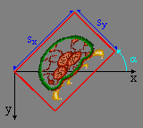
Fig 10.2a：当你说“旋转并缩放”时，你预期的很可能是这样的……
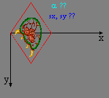
Fig 10.2b：但使用 eq 10.1 中的 P，你得到的却是这个。
遗憾的是，关于变换矩阵存在大量不正确或具有误导性的信息；eq 10.1 中的矩阵只是其中一个方面。这实际上要从“Rot/Scale”这个绰号说起，它并不符合实际发生的情况；接着是这样一个事实：所使用的术语从未被正确地定义过，而且大多数人往往只是互相复制粘贴，连停下来想一想这些信息是否正确都不愿意。讽刺的是，权威的参考文档 GBATEK 对每个元素都给出了正确的描述，但在教程里翻译成矩阵形式的环节中，这些正确信息 somehow 丢失了。
在本章中，我会给出 P 矩阵的正确解读：GBA 是如何使用它的，以及你该如何自己构建它。不过，要做到这一点，我得完全进入数学模式。如果你对向量和矩阵运算不太熟悉，可能会在理解文中那些细微之处时遇到一些困难。关于这个主题，线性代数 附录中给出了一些指引。
这将是一个纯粹理论性的页面：你在这里找不到任何与精灵或背景直接相关的内容；那是接下来两节要讲的东西。我们再次请出可爱的 metroid（请冷藏保存以备安全使用）。请注意 y 轴的方向和角度的定义，并且在没有读完收尾段落之前不要离开。那段包含了若干关键的实现细节，在之前的文字中我故意略去不谈，因为它们在那个阶段只会碍事。
请警惕那些讲解仿射参数的文档
这是真的。我见过的几乎每一份涉及这个主题的文档，都在某些方面存在问题。其中很多都给出了错误的旋转-缩放矩阵（即 eq 10.1 中的那一个），或者错误地命名和/或错误地表述了矩阵及其元素。
纹理映射与仿射变换。
通用 2D 纹理映射
GBA 把精灵和图块背景显示到屏幕上的方式，与纹理映射非常相似。所以现在先忘掉 GBA，来看看纹理映射是怎么做的。在 fig 10.4a 中，我们看到一张 metroid 纹理。为了方便，我使用了标准的笛卡尔二维坐标系（y 轴向上），并对纹理做了归一化处理，也就是说，纹理的右侧和顶侧分别与单位向量 和 （长度为 1）精确对应。纹理映射把纹理空间中的点 p 映射到屏幕空间中的点 q。实际的映射由一个 2×2 矩阵 A 完成：
那么该如何求 A 呢？嗯，其实没那么难。该矩阵是由变换后的基向量（即 u 和 v，顺便说一句，这在任意维数下都成立）并排排列而成的，于是我们得到：
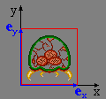
Fig 10.4a：一张纹理。
→
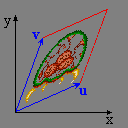
Fig 10.4b：一张被映射的纹理
通过仿射矩阵 A 进行的一次正向纹理映射。
仿射变换
用 2D 矩阵所能完成的变换被称为 仿射 变换。仿射变换的技术性定义是“保持平行线不变”的变换，这基本上意味着你可以把它们写成矩阵变换的形式，或者说，一个矩形在仿射变换下会变成一个平行四边形（参见 fig 10.4b）。
仿射变换包含旋转和缩放，但也包含切变。这正是我反对“Rot/Scale”这个名字的原因：那个词只指代了一种特殊情况，而非一般的变换。这就好比把颜色都叫做“红色系”：没错，红色当然也是颜色，但并非所有颜色都是红色，而把它们都叫做红色，只会让人对这个主题产生扭曲的认识。
正如我所说，基本的 2D 变换有三种，不过你总是可以用其中两种来描述第三种。这些变换分别是：旋转（R）、缩放（S）和切变（H）。Table 10.1 展示了每种变换作用于常规 metroid 精灵时的效果。黑色坐标轴是普通的基向量（注意 y 是向下的！），蓝色坐标轴是变换后的基向量，青色变量则是变换的参数。同时给出的还有每种变换的矩阵及其逆矩阵。为什么？你很快就会明白。
Table 10.1：变换矩阵及其逆矩阵。
| 单位矩阵 | 旋转 | 缩放 | 切变 |
|---|---|---|---|
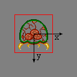 |
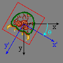 |
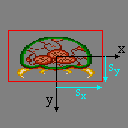 |
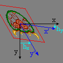 |
现在我们可以借助这些定义，通过矩阵乘法求出在 和 方向上的放大，再接一个逆时针旋转 α（= −θ）的正确矩阵。
…呃，等等……我有一种似曾相识的奇怪感觉……
顺时针 vs 逆时针
这是个小问题，但我必须提一下。如果 R 的定义是使用顺时针旋转，为什么我突然改用逆时针了呢？嗯，传统上 R 就是被给定为那个特定的矩阵，其中角度从 x 轴指向 y 轴。由于 y 是向下的，这等价于顺时针。然而，BIOS 中的仿射例程使用的是逆时针旋转，而我觉得以它作为我自己函数的准绳是个好主意。
命名法：仿射 vs 旋转/缩放
矩阵 P 既不是旋转矩阵，也不是缩放矩阵，而是一个通用的仿射变换矩阵。旋转和缩放或许是这个矩阵最常用的用途，但这并不意味着它们就是唯一可能的事，而“Rot/Scale”这个词所暗示的恰恰就是“唯一可能”。
为了把它们与常规背景和精灵区分开来，我觉得“Rotation”或“Rot/Scale”也够用了，只是不完全准确。不过，把 P 矩阵叫做那些名字，根本就是错误的。
“我们坚持的许多真理，很大程度上取决于我们自己的视角。”
Fig 10.5：从人类视角看到的映射过程。u 和 v 是 A 的各列（在屏幕空间中）。
正如你一定已经注意到的那样，eq 10.3 与 eq 10.1 完全相同，而我之前说它是错的。那么这是怎么回事？嗯，如果你把这个矩阵填入 pa-pd 这些元素里，你确实会得到与你预期不同的东西。只不过现在，我已经从一开始就证明了你原本应该预期的是什么（即先按 和 缩放，再逆时针旋转 α）。真正的问题当然是：为什么这不起作用？为了回答这个问题，我将给出两种不同的看待 2D 映射过程的方式。
人类视角
“你好，我是 Cearn 的大脑。我懂几何，能在脑子里做矩阵变换。呃，其实是他的脑子。说到纹理映射，我看到原始的图（在纹理空间中），然后想象出变换。我看着原始图，看着图的像素最终落在屏幕的什么位置。这个变换的矩阵是 A，它通过 q = A · p 把纹素 p 与屏幕像素 q 联系起来。A 的各列就是变换后的单位矩阵。简单得就像 π。”
计算机视角
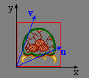
Fig 10.6：从计算机视角看到的映射过程。u 和 v（在纹理空间中）是 B 的各列，被映射到屏幕空间中的主轴。
“你好，我是 Cearn 的 GBA。我是一台精悍的掌上游戏机，能以无人能及的方式推送像素。也许除了他主人的那块 GeForce 4 Ti4200，那个爱显摆的家伙。总之，我做的事情之一就是纹理映射。而且不只是普通的纹理映射，我还能玩旋转和缩放之类的酷炫花样。我所做的不过是填充像素，我只需要你告诉我该从哪儿取像素的颜色。换句话说，为了填充屏幕像素 q，我需要一个矩阵 B，它通过 p = B · q 给我对应的纹素 p。你给我什么矩阵我都乐意用；我完全相信你有能力提供你所需变换的矩阵。”
解析
我希望你已经发现了这两种视角之间的关键差异。A 的映射方向是从纹理空间到屏幕空间，而 B 恰好相反（即 ）。我想你现在应该知道该把哪一个交给 GBA 了。没错：P = B，而不是 A。这一条信息，就是仿射矩阵谜题中最关键的一块拼图。
所以现在你可以用两种方式求出 P 的元素。你可以坚守人类视角，最后再对矩阵求逆。这正是我之前把仿射变换的逆矩阵也一并交给你的原因。你也可以试着用 GBA 的方式去思考，从而直接得到正确的矩阵。Tonc 的主要仿射函数（tonc_video.h、tonc_obj_affine.c 和 tonc_bg_affine.c）都采用 GBA 的方式，直接设置 P；不过也提供了使用 “_inv” 后缀的逆变换函数。请注意，这些会稍微慢一些。除非涉及缩放，那样就会慢很多。
如果你好奇的话，先做按 (, ) 缩放、再逆时针旋转 α 的正确矩阵是：
使用前面给出的逆矩阵，我们得到
仿射矩阵 P 的映射方向是从屏幕空间到纹理空间，而不是相反！
换句话说：
：纹理 x 方向每像素的增量
：纹理 x 方向每扫描线的增量
：纹理 y 方向每像素的增量
：纹理 y 方向每扫描线的增量
收尾工作
知道 P 矩阵是用来做什么的是一回事，知道如何正确地使用它们是另一回事。在你着手处理仿射对象/背景和仿射矩阵时，还有三个要点需要记住：
- 数据类型
- 查找表
- 初始化
仿射元素的数据类型
仿射变换属于数学范畴，一般来说，数学上的数都是实数，也就是浮点数。然而，如果你用浮点数来表示 P 的元素，你会遭遇两个令人不快的意外。
第一个意外是：矩阵元素并不是浮点数，而是整数。其背后的原因在于GBA 没有浮点运算单元（FPU）！所有的浮点运算都必须在软件中完成，而没有 FPU 的话，这会相当慢——无论如何都比整数运算慢得多。现在，当你细想这件事时，它确实会在精度和诸如此类的方面带来一些问题。例如，(正)余弦函数的取值范围在 −1 到 1 之间，当用整数来表示时，这个范围可不算大。不过，如果人们不是以 1 为单位来计数，而是以分数（比如说以 1/256 为单位）来计数，这个范围就会大得多。这样，[−1, +1] 的取值范围就变成了 [−256, +256]。
这种用缩放后的整数来表示实数的策略被称为定点数运算，你可以在这个附录以及 wikipedia 上读到更多相关内容。GBA 把定点数用于它的仿射参数，但你也可以把它用在别的地方。P 矩阵的元素是 8.8 格式的定点数，意味着一个半字（halfword）中有 8 个整数位和 8 个小数位。要把一个矩阵设为单位矩阵（对角线上是 1，其余位置是 0），你不应该这样写：
// Floating point == Bad!!
pa= pd= 1.0;
pb= pc= 0.0;
而应该这样写：
// .8 Fixed-point == Good
pa= pd= 1<<8;
pb= pc= 0;
在具有 Q 个小数位的定点数系统中，“1”（“一”）由 或 1<<Q 表示，因为这正是分数运作的方式。
现在，定点数说到底仍然只是整数，但整数也有不同的类型，使用正确的类型很重要。8.8f 是 16 位的变量，所以逻辑上的选择是 short。不过，它应该是一个有符号的 short：s16，而不是 u16。有时候这没关系，但如果你要对它们做任何算术运算，它们最好是有符号的。请记住，CPU 内部是以字（word，32 位）为单位工作的，16 位变量会被转换成字。你当然希望，比如说，一个 16 位的 “−1”（0xFFFF）能变成 32 位的 “−1”（0xFFFFFFFF），而不是 “65535”（0x0000FFFF），而后者正是使用无符号 short 时会发生的情况。此外，在做定点数运算时，建议使用有符号的 int（32 位那种），用别的什么都会拖慢你，而且还可能遇到溢出问题。
用 32 位有符号 int 作为仿射临时变量
当然，无论如何你都应该把 32 位变量用于所有场合（除非你真的想让代码膨胀并变慢）。如果你使用 16 位变量（short 或 s16），不仅因为要加上额外的指令来维持变量的 16 位特性而导致代码变慢，而且会更快遭遇溢出问题。
只有在最终写入硬件的那一步，你才应该转换成 8.8 格式。在那之前，为了速度和精度，请使用更大的类型。
查找表(LUT)
所以，使用定点数运算是因为浮点运算对于高效运用来说实在太慢了。对于你自己的数学运算来说，这没什么问题，但像 sin() 和 cos() 这样的数学函数该怎么办呢？它们在内部仍然是浮点的（更糟的是，是 doubles！），所以那些函数会慢得离谱。
与其直接使用这些函数，我们不妨采用一个历史悠久的传统来逃避使用昂贵的数学函数：我们将构建一个查找表（LUT），里面装有正弦和余弦值。这有若干种做法。如果你想要一个省事的策略，你可以直接声明两个各含 360 个 8.8f 数的数组，并在程序初始化时把它们填满。不过，这是一种糟糕的做法，原因在附录的查找表章节里有解释。
Tonclib 有一个单一的正弦查找表，它可以同时用于正弦和余弦值。这个查找表叫做 sin_lut，是一个由 512 个 4.12f 条目（12 个小数位）组成的 const short 数组，由我的 excellut 查找表生成器创建。在 tonc_math.h 中，你可以找到两个用于取回正弦和余弦值的 inline 函数：
//! Look-up a sine and cosine values
/*! \param theta Angle in [0,FFFFh] range
* \return .12f sine value
*/
INLINE s32 lu_sin(uint theta)
{ return sin_lut[(theta>>7)&0x1FF]; }
INLINE s32 lu_cos(uint theta)
{ return sin_lut[((theta>>7)+128)&0x1FF]; }
现在，请注意角度的范围：0–10000h。请记住，你并不必须用 360 度来代表一个圆；事实上，在计算机上，把一个圆分成 2 的幂次方会更好。在这个例子中，角度使用的是 216 等分（为了与 BIOS 函数兼容），在查找函数内部再缩减为 512 的范围。
初始化
当你把一个背景或对象标记为仿射时，你必须至少向 pa-pd 中填入一些值。请记住，默认情况下它们都是零。零偏移意味着整个东西都会使用第一个像素。如果你得到一个纯色的背景或精灵，原因大概就在这里。为了避免这种情况，请把 P 设为单位矩阵或任何其它非零矩阵。
Tonc 的仿射函数
Tonclib 中包含若干用于操纵对象和背景的仿射参数的函数，它们通过 OBJ_AFFINE 和 BG_AFFINE 结构体来使用。由于仿射矩阵在两种结构体中的存储方式不同，你无法用同一个函数来设置它们，但它们的功能是一样的。在 table 10.2 中你可以找到基本的格式和描述；只需把 foo 替换成 obj_aff 或 bg_aff，把 FOO 替换成 OBJ 或 BG，就分别对应对象和背景。这些函数本身，针对对象的可以在 tonc_obj_affine.c 中找到，针对背景的在 tonc_bg_affine.c 中，而两者的 inline 版本则都在 tonc_video.h 里的某处。
| 函数 | 描述 |
|---|---|
| void foo_copy(FOO_AFFINE *dst, const FOO_AFFINE *src, uint count); | 复制仿射参数 |
| void foo_identity(FOO_AFFINE *oaff); | |
| void foo_postmul(FOO_AFFINE *dst, const FOO_AFFINE *src); | 后乘： |
| void foo_premul(FOO_AFFINE *dst, const FOO_AFFINE *src); | 前乘： |
| void foo_rotate(FOO_AFFINE *aff, u16 alpha); | 逆时针旋转 α·π/8000h。 |
| void foo_rotscale(FOO_AFFINE *aff, FIXED sx, FIXED sy, u16 alpha); | 按 和 缩放，再逆时针旋转 α·π/8000h。 |
| void foo_rotscale2(FOO_AFFINE *aff, const AFF_SRC *as); | 与 foo_rotscale() 相同，但输入存放在一个 AFF_SRC 结构体中。 |
| void foo_scale(FOO_AFFINE *aff, FIXED sx, FIXED sy); | 按 和 缩放 |
| void foo_set(FOO_AFFINE *aff, FIXED pa, FIXED pb, FIXED pc, FIXED pd); | 设置 P 的元素 |
| void foo_shearx(FOO_AFFINE *aff, FIXED hx); | 将顶边向右切变 |
| void foo_sheary(FOO_AFFINE *aff, FIXED hy); | 将左边向下切变 |
旋转/缩放示例函数
下面给出的是我写的、对象版本的“先缩放再旋转”函数（仿 eq 10.4）。请注意，它是从计算机视角出发的，因此 sx 和 sy 是缩小。另外，角度 alpha 用的是 10000h/圈（即 α 的单位是 π/8000h = 0.096 毫弧度，或 180/8000h = 0.0055°），而正弦查找表是 .12f 格式，这正是为什么需要那些向右移 12 位的操作。背景版本与之完全相同，除了名字和类型不同。如果这是 C++，模板在这里会非常有用。
void obj_aff_rotscale(OBJ_AFFINE *oaff, int sx, int sy, u16 alpha)
{
int ss= lu_sin(alpha), cc= lu_cos(alpha);
oaff->pa= cc*sx>>12; oaff->pb=-ss*sx>>12;
oaff->pc= ss*sy>>12; oaff->pd= cc*sy>>12;
}
有了本章所讲的内容，你就知道了关于仿射矩阵的大部分所需知识，首先是为什么它们应该被称为仿射矩阵，而不是仅仅叫旋转、或是 rot/scale，或是你在别处可能见到的其它名字。你现在应该知道这东西到底做了什么，以及如何为你想要的效果搭建一个矩阵。你也应当对定点数和查找表有了一些了解（更多内容请看附录），以及为什么它们是好东西；如果之前还不明确的话，你现在应该意识到，你所使用的数据类型的选择其实很重要，而不该随手抓一个就用。
这里还没有讨论的是，你究竟该如何搭建对象和背景来使用仿射变换，而这正是接下来两章的内容。关于仿射变换的更多内容，可以尝试搜索“线性代数”。
11. 仿射精灵
仿射精灵简介
本质上，仿射精灵（affine sprites） 仍是精灵。和常规精灵的区别在于，你可以在渲染阶段之前通过设置对象属性中的正确位、并填好 P 矩阵，对它们执行仿射变换（由此得名）。你可以阅读这里了解仿射变换和 P 矩阵。这是本节的必读内容，精灵与背景概览 和常规精灵 页也是。
你可能想知道这是否真的值得单独成节。简短的答案是：是的。更长的答案是：是的，因为用仿射精灵涉及的数学比常规精灵多得多，而我不想吓到那些，呃，“数学苦手”。常规精灵一节可以独立成篇，你能在对它所需的可怕数学一无所知的情况下愉快使用它。
在本章中，我们会看到如何设置对象来使用仿射变换。这本身相当容易。还会讨论你可能迟早（其实有一个几乎立刻就会）遇到的若干潜在图形问题——以及如何校正精灵的位置，使变换的原点看起来像在任意点上。并且，照例，会有演示代码阐释本章提出的各个主题。
仿射精灵初始化
要把一个常规精灵变成仿射精灵，你需要做两件事。首先，设置 OBJ_ATTR.attr0{8} 以表明这是个仿射精灵。其次，把一个 0 到 31 之间的数放进 OBJ_ATTR.attr1{8-C}。这个数指示应当使用 32 个对象仿射矩阵（OBJ_AFFINE 结构体）中的哪一个。如果你忘了，OBJ_AFFINE 长这样：
typedef struct OBJ_AFFINE
{
u16 fill0[3];
s16 pa;
u16 fill1[3];
s16 pb;
u16 fill2[3];
s16 pc;
u16 fill3[3];
s16 pd;
} ALIGN4 OBJ_AFFINE;
有符号 的 16 位成员 pa、pb、pc 和 pd 是 8.8 定点数，构成实际的矩阵，我称之为 P，与这些元素的名字对应。关于这个矩阵的更多信息，去看仿射矩阵一节。如果你还没看，现在就去看，因为我不会在这里重复。如果你只想要一个简单的“先缩放后旋转”矩阵，试试这个：对 sx 和 sy 的缩放、后跟 α 的逆时针旋转，正确的矩阵是：
注意变换的原点是精灵的 中心，而非左上角。如果你想把精灵和其他对象对齐，这值得记住，我们稍后会做。
仿射精灵的基本步骤
- 像平常一样设置一个对象：加载图形和调色板，设置
REG_DISPCNT，设置 OAM 条目。 - 设置属性 0 的第 8 位以对该对象启用仿射，并选择一个要用的对象仿射矩阵（属性 1 的 8-12 位）。
- 把那个对象仿射矩阵设为非零以外的东西，例如单位矩阵。
图形伪影
裁剪与离散化伪影
GBA 绘制精灵的过程如下：精灵在屏幕上形成一个由其尺寸定义的矩形。要绘制该区域中的屏幕像素（q）所用的纹理像素 p，通过下式计算：
| (11.1) |
其中 p0 和 q0 分别是纹理和屏幕空间中精灵的中心。下面的代码基本就是硬件所做的事；它扫描屏幕矩形（正负各半个宽和高，因为是半尺寸，以中心为参考点），计算纹理像素并绘制该颜色。
// pseudocode for affine objects
hwidth= width/2; // half-width of object screen canvas
hheight= hheight/2; // half-height of object screen canvas
for(iy=-hheight; iy<hheight; iy++)
{
for(ix=-hwidth; ix<hwidth; ix++)
{
px= (pa*ix + pb*iy)>>8; // get x texture coordinate
py= (pc*ix + pd*iy)>>8; // get y texture coordinate
color= GetPixel(px0+px, py0+py); // get color from (px,py)
SetPixel(qx0+ix, qy0+iy, color); // set color to (qx, qy)
}
}
这有两个主要后果：裁剪伪影和离散化伪影。

Fig 11.1: 一个被部分去掉尖刺的 metroid， 因为蓝色方框之外的部分被裁掉了。
裁剪伪影（clipping artifact） 是由只扫描屏幕上 矩形内 的像素造成的。但几乎任何变换都会让纹理像素超出那个矩形，矩形外的像素不会被渲染。Fig 11.1 展示了屏幕矩形（灰、蓝边）和一个旋转的对象（红边内）。超出蓝边框的部分不会被裁掉。
由于这是个明显缺陷，当然有绕开的办法：把精灵的仿射模式设为 双倍尺寸仿射（double-sized affine）（ATTR0_AFF_DBL、OBJ_ATTR.attr0{8,9}）。这会把有效 q 坐标的屏幕范围加倍，于是你能用正负一个宽和高来摆弄，而非半尺寸。这个双倍（嗯，其实是四倍）区域意味着你能安全地旋转精灵，因为到中心的最大距离是 ½√2 ≈ 0.707。当然，如果你放大到超出加倍范围之外，仍会遇到裁剪伪影。另外，注意精灵的原点移到了这个矩形的中心，所以 q0 现在离左上角整整一个精灵尺寸。
双倍尺寸标志还有第二个用途。或者也许我该说误用。如果你把它设给常规精灵，它会被隐藏。这是隐藏未用精灵的另一种方法。
第二个伪影，如果你能这么叫的话，是离散化（discretization）伪影。这比裁剪伪影更微妙，你可能甚至从没注意到它。问题在于变换实际不发生在对象的中心，而是 中心像素，向上取整。举个例子，看 fig 11.2。这里我们有从 0 到 8 的数轴；它们之间是从 0 到 7 的 8 个像素。中心的数是 4，当然。中心像素也是 4，然而它的位置其实在数字 4 和 5 的正中间。这在左边和右边的像素数之间造成了不平衡。
中心像素是变换算法的参考点，其索引是 (ix, iy) = (0, 0)。把它代入等式你会看到它在变换下不变，尽管数学上本不该如此。这对偏移量有影响，因为偏移量是从像素算的，而非位置。在 fig 11.2 中，左边有 4 个像素，右边却只有 3 个。一个会以像素 4 为中心的镜像操作，会 effectively 把精灵向右移动一个像素。
Fig 11.3 展示了这如何影响旋转。它每 8 像素画一条灰网格线，以及一个 16×16 的盒子精灵。注意开始时左右两侧都不在网格线上，因为精灵的宽和高是 16 而非 17。其他图是按 90° 增量的旋转，这给矩阵里漂亮的整圆数。旋转时，中心像素（中间的红点）保持在同一位置，其余绕它旋转，这个过程会把边缘带出精灵指定的 16×16 方框（虚线）。
 Fig 11.2: 像素在坐标之间，而非在坐标上。 |
 Fig 11.3: 以 90° 为增量的旋转。 |
偏移量度量的是到中心像素的距离，而非中心位置。
从仿射矩阵算出的偏移量用的是到中心像素（w/2, h/2）的距离，而非中心点。因此，与数学变换有半像素的偏差，这可能导致精灵整体出现 ±1 像素的偏移，并丢失纹理边缘。
环绕伪影
除了裁剪伪影，似乎还有另一个；一个我其实从没在任何地方见人提过的。我称之为环绕伪影。如你所知，精灵的位置给的是 9 位 x 值和 8 位 y 值，这些值在屏幕上环绕。对 x，你可以直接把它解释为 [-256, 255] 范围。对 y 值你没法真这么做，因为有符号 8 位整数的顶值是 127，那意味着你永远没法把精灵放在底部 32 行。但由于值会环绕，最终一切都能搞定。只有一个例外。
常规精灵从没任何麻烦，仿射精灵也几乎没；唯一的例外是当你有一个 64×64 或 32×64、且开启了双倍尺寸标志的仿射精灵时。这样的精灵有 128×128 的包围盒。现在有对 y > 128 的三种不同解释：
- 完全环绕：精灵顶部会显示在屏幕底部，反之亦然。
- 正数优先：把 [128, 159] 范围视为屏幕底部的指示，忽略环绕。
- 负数优先：若 y 值会让精灵部分出现在顶部，则认为它是负数，同样忽略环绕。
碰巧，GBA 用的是第三种解释。换句话说，它用
// pseudo code
if(oam.y + bbox_height > 256)
oam.y -= 256;
顺便说一下，一些较老的模拟器（VBA 和 BoycottAdvance）都用第二种解释，那可能看起来更合理，但其实是错的。如你所见，它只可能发生在 32×64 或 64×64 的双倍尺寸精灵上，即便如此你也只会在非常特定的条件下注意到它，即变换后的精灵在包围盒顶部 32 行内有可见像素时。如果你有这个问题，据我所知，让精灵显示在屏幕底部的唯一办法是暂时把高度减到 32。
一个非常（仿）酷的演示
这次我有个真正有趣的演示叫 obj_aff。它有一个普通的（盒装）metroid，可以缩放、旋转和剪切。因为这些变换被应用到矩阵的 当前 状态，你可以把不同矩阵连乘起来，得到任何可能的仿射矩阵。操作如下：
| L,R | 分别逆时针和顺时针旋转精灵。 |
|---|---|
| D-pad | 剪切精灵。 |
| D-pad+Sel | 移动精灵。 |
| A,B | 分别水平或垂直放大。 |
| A,B+Sel | 分别水平或垂直缩小。 （我的按钮用完了，所以只能这么做）。 |
| Start | 切换双倍尺寸标志。注意 a) 旋转精灵的角不再被裁掉，b) 位置偏移 半个精灵尺寸。 |
| Start+Sel | 把 P 重置为正常。 |
| Select | 控制按钮（见 A、B 和 Start）。 |
把变换并排看的有趣之处在于，你能实际看到差异，例如先缩放后旋转（A=S·R）与先旋转后缩放（A=R·S）。Fig 11.4 和 fig 11.5 展示了 45° 旋转和 2× 垂直缩放下的这个差异。另外，注意角在这里被切掉了：裁剪伪影在起作用——即便我在这里已经设置了双倍尺寸标志。
 Fig 11.4: obj_aff，经 S(1,2)，后 R(45°) |
 Fig 11.5: obj_aff，经 R(45°)，后 S(1,2) |
obj_aff 演示的完整源代码给在下面。它相当长，主要是因为管理可应用的不同仿射状态所需的代码量。实际处理仿射精灵的函数是 init_metr()、get_aff_new() 和 objaff_test() 游戏循环的一部分；其余基本是让整个东西运转所需的陪衬。
// obj_aff.c
#include <tonc.h>
#include <stdio.h>
#include "metr.h"
OBJ_ATTR obj_buffer[128];
OBJ_AFFINE *obj_aff_buffer= (OBJ_AFFINE*)obj_buffer;
// affine transformation constants and variables
enum eAffState
{
AFF_NULL=0, AFF_ROTATE, AFF_SCALE_X, AFF_SCALE_Y,
AFF_SHEAR_X, AFF_SHEAR_Y, AFF_COUNT
};
// 'speeds' of transformations
const int aff_diffs[AFF_COUNT]= { 0, 128, 4, 4, 4, 4 };
// keys for transformation direction
const int aff_keys[AFF_COUNT]=
{ 0, KEY_L, KEY_SELECT, KEY_SELECT, KEY_RIGHT, KEY_UP };
int aff_state= AFF_NULL, aff_value= 0;
void init_metr()
{
// Places the tiles of a 4bpp metroid sprite into LOW obj VRAM
memcpy32(tile_mem[4], metr_boxTiles, metr_boxTilesLen/4);
memcpy32(pal_obj_mem, metrPal, metrPalLen/4);
// Set up main metroid
obj_set_attr(obj_buffer,
ATTR0_SQUARE | ATTR0_AFF, // Square affine sprite
ATTR1_SIZE_64 | ATTR1_AFF_ID(0), // 64x64, using obj_aff[0]
0 | 0); // palbank 0, tile 0
obj_set_pos(obj_buffer, 96, 32);
obj_aff_identity(&obj_aff_buffer[0]);
// Set up shadow metroid
obj_set_attr(&obj_buffer[1],
ATTR0_SQUARE | ATTR0_AFF, // Square affine sprite
ATTR1_SIZE_64 | ATTR1_AFF_ID(31), // 64x64, using obj_aff[0]
ATTR2_PALBANK(1) | 0); // palbank 1, tile 0
obj_set_pos(&obj_buffer[1], 96, 32);
obj_aff_identity(&obj_aff_buffer[31]);
oam_update_all();
}
int get_aff_state()
{
if(key_is_down(KEY_L | KEY_R))
return AFF_ROTATE;
if(key_is_down(KEY_A))
return AFF_SCALE_X;
if(key_is_down(KEY_B))
return AFF_SCALE_Y;
if(key_is_down(KEY_LEFT | KEY_RIGHT))
return AFF_SHEAR_X;
if(key_is_down(KEY_UP | KEY_DOWN))
return AFF_SHEAR_Y;
return AFF_NULL;
}
void get_aff_new(OBJ_AFFINE *oa)
{
int diff= aff_diffs[aff_state];
aff_value += (key_is_down(aff_keys[aff_state]) ? diff : -diff);
switch(aff_state)
{
case AFF_ROTATE: // L rotates left, R rotates right
aff_value &= SIN_MASK;
obj_aff_rotate(oa, aff_value);
break;
case AFF_SCALE_X: // A scales x, +SELECT scales down
obj_aff_scale_inv(oa, (1<<8)-aff_value, 1<<8);
break;
case AFF_SCALE_Y: // B scales y, +SELECT scales down
obj_aff_scale_inv(oa, 1<<8, (1<<8)-aff_value);
break;
case AFF_SHEAR_X: // shear left and right
obj_aff_shearx(oa, aff_value);
break;
case AFF_SHEAR_Y: // shear up and down
obj_aff_sheary(oa, aff_value);
break;
default: // shouldn't happen
obj_aff_identity(oa);
}
}
void objaff_test()
{
OBJ_ATTR *metr= &obj_buffer[0], *shadow= &obj_buffer[1];
OBJ_AFFINE *oaff_curr= &obj_aff_buffer[0];
OBJ_AFFINE *oaff_base= &obj_aff_buffer[1];
OBJ_AFFINE *oaff_new= &obj_aff_buffer[2];
int x=96, y=32;
int new_state;
// oaff_curr = oaff_base * oaff_new
// oaff_base changes when the aff-state changes
// oaff_new is updated when it doesn't
obj_aff_identity(oaff_curr);
obj_aff_identity(oaff_base);
obj_aff_identity(oaff_new);
while(1)
{
key_poll();
// move sprite around
if( key_is_down(KEY_SELECT) && key_is_down(KEY_DIR) )
{
// move
x += 2*key_tri_horz();
y += 2*key_tri_vert();
obj_set_pos(metr, x, y);
obj_set_pos(shadow, x, y);
new_state= AFF_NULL;
}
else // or do an affine transformation
new_state= get_aff_state();
if(new_state != AFF_NULL) // no change
{
if(new_state == aff_state) // increase current transformation
{
get_aff_new(oaff_new);
obj_aff_copy(oaff_curr, obj_aff_base, 1);
obj_aff_postmul(oaff_curr, oaff_new);
}
else // switch to different transformation type
{
obj_aff_copy(oaff_base, oaff_curr, 1);
obj_aff_identity(oaff_new);
aff_value= 0;
}
aff_state= new_state;
}
// START: toggles double-size flag
// START+SELECT: resets obj_aff to identity
if(key_hit(KEY_START))
{
if(key_is_down(KEY_SELECT))
{
obj_aff_identity(oaff_curr);
obj_aff_identity(oaff_base);
obj_aff_identity(oaff_new);
aff_value= 0;
}
else
{
metr->attr0 ^= ATTR0_DBL_BIT;
shadow->attr0 ^= ATTR0_DBL_BIT;
}
}
vid_vsync();
// we only have one OBJ_ATTR, so update that
obj_copy(obj_mem, obj_buffer, 2);
// we have 3 OBJ_AFFINEs, update these separately
obj_aff_copy(obj_aff_mem, obj_aff_buffer, 3);
// Display the current matrix
tte_printf("#{es;P:8,136}P = "
"#{y:-7;Ps}| %04X\t%04X#{Pr;x:72}|"
"#{Pr;y:12}| %04X\t%04X#{Pr;p:72,12}|",
(u16)oaff_curr->pa, (u16)oaff_curr->pb,
(u16)oaff_curr->pc, (u16)oaff_curr->pd);
}
}
int main()
{
REG_DISPCNT= DCNT_BG0 | DCNT_OBJ | DCNT_OBJ_1D;
oam_init(obj_buffer, 128);
init_metr();
tte_init_chr4_b4_default(0, BG_CBB(2)|BG_SBB(28));
tte_init_con();
tte_set_margins(8, 128, 232, 160);
objaff_test();
return 0;
}
把 metroid 变成仿射精灵全在 init_metr() 里完成。既然你现在看过多次如何设置位，应该能理解。话虽如此，请注意我把第一个 OBJ_AFFINE（精灵用的那个）填成了单位矩阵 I。如果你让它全零，你得到的只会是一个 64×64 像素的均匀色矩形。记住 P 包含像素偏移；如果全为零，就没有偏移，整个东西用的都是原点的颜色。本质上，精灵被放大到了无穷。
坦白说，在 oam_init() 之后调用 obj_aff_identity() 其实没必要，因为那个函数也初始化了矩阵。不过，你仍需要意识到潜在问题。
那是设置，现在讲讲这个演示怎么做到它所做的。在任何时刻，你都会有一些变换矩阵 P。按一个（或几个）按钮，就会通过矩阵乘法对当前状态执行一个小的变换。
其中 D 是小的旋转（R）、缩放（S）或剪切（H），或空操作（I）。然而，这里有个小障碍。这在理论上很好，但在 实践 中不行，因为定点数矩阵乘法会非常非常快地导致不可接受的舍入误差。幸运的是，所有这些变换都有个方便的性质：
也就是说，多个小变换和作为一个大变换一样。你只需跟踪当前所选变换（变量 aff_state，在 get_aff_state() 里）、修改状态变量（aff_value），然后计算完整变换矩阵（get_aff_new()）并应用它（用 obj_aff_postmul()）。当选了不同的变换类型，当前矩阵被保存，状态值被重置，整个东西以该状态继续，直到又选了另一个。大部分代码用于跟踪这些变更；它不漂亮，但能完成任务。
非中心参考点与对象组合

Fig 11.6: 对象绕非中心点旋转。
如前所述，仿射精灵总是用它们的中心作为仿射原点，但有时你可能想用别的东西来绕其旋转——用另一个点作为参考点。现在，你其实做不到这一点，但你能让它 看起来 像是能做到。为此，我需要解释一些我称之为锚定（anchoring）的东西。锚（anchor） 是应当保持“固定”的位置；纹理（这里是对象）被锚定到屏幕的地方。
对于锚定，你其实需要每个所用坐标空间一组坐标。这里就是两个：纹理空间和屏幕空间。我们称这些点为 p0 和 q0。它们实际 从 哪里指向基本无关紧要，但为方便起见我们用屏幕和纹理原点。这些点只是开始。总共，完整过程我们需要考虑 七 个向量，它们都在 fig 11.6 中描绘。它们的含义在下面的表中解释。
| point | description |
|---|---|
| p0, q0 | 纹理和屏幕空间中的锚。 |
| cp, cq | 纹理和屏幕空间中的对象中心。结合对象尺寸 s=(w,h)，我们有 cp=½s 和 cq=ms，其中 m 是 ½ 或 1，取决于双倍尺寸标志。 |
| rp, rq | 对象中心与锚之间的距离。按定义， rp = P·rq |
| x | 期望的对象坐标。 |
是的，这是一大堆向量，但有趣的是，大多数已经已知。中心点（cp 和 cq）可从对象尺寸和双倍尺寸状态推导，锚是预先已知的（因为它们是输入值），而 rp 和 rq 符合仿射变换的一般等式 eq 11.2，所以这把两个空间联系了起来。剩下要做的就是把这组等式写出来并求解。
| (11.2) |
三个方程、三个未知数，意味着可解。我不会贴出整个推导，因为那并不难；你在 eq 11.3 中看到的是以最有用形式给出的结果。
| (11.3) |
右边有三个独立向量，其中两个是输入的一部分，一个用于双倍尺寸模式的缩放标志，以及求逆的仿射矩阵。是的，我说了求逆。这是因为把对象放到正确位置的大部分平移发生在屏幕空间。用它的整个项只是 rq，即在纹理空间里锚与中心之差的变换结果，你最后校正需要它。
现在，这个矩阵求逆意味着两件事。首先，你可能得设置 两 个矩阵：仿射矩阵本身，和它的逆。对一般矩阵，这可能要花点时间，尤其考虑到如果你想要缩放，就得在某处做除法。其次，因为你矩阵元素只有 16 位，逆不会是 精确的 逆，意味着精确对齐对象会困难，如果并非不可能的话。这基本是硬件本身保证的，我稍后会回到这一点。现在，我们来看一个实现 eq 11.3 的函数，针对先双向缩放后旋转的情况。
// === in tonc_types.h ===
// This is the same struct that's used in BgAffineSet,
// where it is called BGAffineSource, even though its uses go
// beyond just backgrounds.
typedef struct tagAFF_SRC_EX
{
s32 tex_x, tex_y; // vector p0: anchor in texture space (.8f)
s16 scr_x, src_y; // vector q0: anchor in screen space (.0f)
s16 sx, sy; // scales (Q.8)
u16 alpha; // CCW angle ( integer in [0,0xFFFF] )
} AFF_SRC_EX;
// === in tonc_core.c ===
// Usage: oam_sizes[shape][size] is (w,h)
const u8 oam_sizes[3][4][2]=
{
{ { 8, 8}, {16,16}, {32,32}, {64,64} },
{ {16, 8}, {32, 8}, {32,16}, {64,32} },
{ { 8,16}, { 8,32}, {16,32}, {32,64} },
};
// === in tonc_obj_affine.c ===
void obj_rotscale_ex(OBJ_ATTR *obj, OBJ_AFFINE *oa, AFF_SRC_EX *asx)
{
int sx= asx->sx, sy= asx->sy;
int sina= lu_sin(asx->alpha)>>4, cosa= lu_cos(asx->alpha)>>4;
// (1) calculate P
oa->pa= sx*cosa>>8; oa->pb= -sx*sina>>8;
oa->pc= sy*sina>>8; oa->pd= sy*cosa>>8;
// (2) set-up and calculate A= P^-1
// sx = 1/sx, sy = 1/sy (.12f)
sx= Div(1<<20, sx);
if(sx != sy)
sy= Div(1<<20, sy);
else
sy= sx;
FIXED aa, ab, ac, ad; // .8f
aa= sx*cosa>>12; ab= sy*sina>>12;
ac= -sx*sina>>12; ad= sy*cosa>>12;
// (3) get object size
sx= oam_sizes[obj->attr0>>14][obj->attr1>>14][0];
sy= oam_sizes[obj->attr0>>14][obj->attr1>>14][1];
// (4) calculate dx = q0 - ms - A*(p0-s/2)
int dx= asx->src_x, dy= asx->src_y; // .0f
if(obj->attr0&ATTR0_DBL_BIT)
{ dx -= sx; dy -=sy; }
else
{ dx -= sx>>1; dy -= sy>>1; }
sx= asx->tex_x - (sx<<7); // .8f
sy= asx->tex_y - (sy<<7); // .8f
dx -= (aa*sx + ab*sy)>>16; // .0 - (.8f*.8f/.16f)
dy -= (ac*sx + ad*sy)>>16; // .0 - (.8f*.8f/.16f)
// (5) update OBJ_ATTR
obj_set_pos(obj, dx, dy);
}
AFF_SRC_EX 结构体和 oam_sizes 数组是做定位的函数 obj_rotscale_ex() 的辅助实体。它创建仿射矩阵（pa-pd），并执行 eq 11.3 的所有必要步骤，即创建逆矩阵 A（aa-ad）、计算所有偏移并校正尺寸，最后更新 OBJ_ATTR。注意定点数精度变化很大，所以经常注释这一点很重要。
如我所说，这不是特别快的函数；它大约花一个扫描线的周期数。如果你需要更快，我还有一个 Thumb 汇编版本，约快 40%。
仿射对象组合演示

Fig 11.7: oacombo 用的对象。
本节的演示 oacombo 会显示本质上同一个对象的三个版本，即 fig 11.7 里的圆。它们之间的区别在于如何构造：
- 1 个 32×32p 对象，整圆。
- 2 个 32×16p 对象，两个半圆。
- 4 个 16×16p 对象，四个四分之一圆。
这个演示的要点是旋转它们并定位组合精灵（对象组合（object combos））的组件，就好像它们是单个精灵。这需要非中心锚，因此与本节的主题契合得很好。为了管理组合，我用了下面这个结构体。
typedef struct OACOMBO
{
OBJ_ATTR *sub_obj; // obj pointer for sub-objects
POINT *sub_pos; // Local sub-object coords (.8f)
int sub_count; // Number of sub-objects
POINT pos; // Global position (.8f)
POINT anchor; // Local anchor (.8f)
s16 sx, sy; // scales (.8f)
u16 alpha; // CCW angle
} OACOMBO;
每个组合由 sub_count 个对象组成；sub_oe 是指向存储这些对象的数组的指针，sub_pos 是指向这些对象（左上）坐标列表的指针，相对于整个精灵的左上。这个全局位置在 pos 里。锚（在 anchor 里）也相对于这个位置。全局屏幕锚会在 pos+anchor，子对象 ii 的纹理锚在 anchor-sub_pos[ii]。
旋转会绕圆心进行，所以锚是 (16,16)。或者更确切地说 (16,16)*256，因为它们是 .8 定点数，但现在不重要。对整圆，这会是对象的中心，但仍需要为双倍尺寸标志校正。对其他组合，锚 不会 在它们子对象的中心。
因为子对象共享同一个 P 矩阵，一直重算它是浪费，所以我用一个特别为 OACOMBO 结构体改写的版本 oac_rotscale()。代码基本一样。七个对象的数据在 obj_data[] 数组里，并在初始化函数中复制到 obj_buffer。虽然魔术数字（比如用十六进制表示 OAM 属性）通常很糟，但同样真实的是它们其实不是这个故事的核心，而为所有对象用“恰当”方式初始化可能反而弊大于利……这次。不过锚和参考点我还是用 #define，因为它们在代码其余部分出现多次。
// oacombo.c
#include <stdio.h>
#include <tonc.h>
#include "oac_gfx.h"
#define AX (16<<8) // X-anchor
#define AY (16<<8) // Y-anchor
#define X0 120 // base X
#define Y0 36 // base Y
// === GLOBALS ========================================================
OBJ_ATTR obj_buffer[128];
OBJ_AFFINE *obj_aff_buffer= (OBJ_AFFINE*)obj_buffer;
// Obj templates
const OBJ_ATTR obj_data[7]=
{
// obj[0] , oaff[0]: 1 full 32x32p double-affine circle
{ 0x0300, 0x8200, 0x0000, 0x0000 },
// obj[1-2], oaff[1]: 2 32x16p double-affine semi-circles
{ 0x4300, 0x8200, 0x0000, 0x0000 },
{ 0x4300, 0x8200, 0x0008, 0x0000 },
// obj[3-7], oaff[1]: 4 16x16p double-affine quarter-circles
{ 0x0300, 0x4400, 0x0010, 0x0000 },
{ 0x0300, 0x4400, 0x0014, 0x0000 },
{ 0x0300, 0x4400, 0x0018, 0x0000 },
{ 0x0300, 0x4400, 0x001C, 0x0000 },
};
POINT sub_pos[7]=
{
{0,0},
{0,0},{0,AY},
{0,0},{AX,0}, {0,AY},{AX,AY},
};
OACOMBO oacs[3]=
{
// full 32x32p double-affine circle
{ &obj_buffer[0], &sub_pos[0], 1,
{(X0-48)<<8, Y0<<8}, {AX, AY}, 256, 256, 0 },
// 2 32x16p double-affine semi-circles
{ &obj_buffer[1], &sub_pos[1], 2,
{(X0+16)<<8, Y0<<8}, {AX, AY}, 256, 256, 0 },
// 4 16x16p double-affine quarter-circles
{ &obj_buffer[3], &sub_pos[3], 4,
{(X0-16)<<8, (Y0+40)<<8}, {AX, AY}, 256, 256, 0 },
};
void oac_rotscale(OACOMBO *oac)
{
int alpha= oac->alpha;
int sx= oac->sx, sy= oac->sy;
int sina= lu_sin(alpha)>>4, cosa= lu_cos(alpha)>>4;
// --- create P ---
OBJ_AFFINE *oaff=
&obj_aff_buffer[BF_GET(oac->sub_obj->attr1, ATTR1_AFF_ID)];
oaff->pa= cosa*sx>>8; oaff->pb= -sina*sx>>8;
oaff->pc= sina*sy>>8; oaff->pd= cosa*sy>>8;
// --- create A ---
// sx = 1/sx, sy = 1/sy (.12f)
sx= Div(1<<20, sx);
if(sx != sy)
sy= Div(1<<20, sy);
else
sy= sx;
FIXED aa, ab, ac, ad;
aa= sx*cosa>>12; ab= sy*sina>>12; // .8f
ac= -sx*sina>>12; ad= sy*cosa>>12; // .8f
int ii;
OBJ_ATTR *obj= oac->sub_obj;
POINT *pt= oac->sub_pos;
// --- place each sub-object ---
for(ii=0; ii<oac->sub_count; ii++)
{
int dx, dy; // all .8f
sx= oam_sizes[obj->attr0>>14][obj->attr1>>14][0]<<7;
sy= oam_sizes[obj->attr0>>14][obj->attr1>>14][1]<<7;
dx= oac->pos.x+oac->anchor.x - sx; // .8f
dy= oac->pos.y+oac->anchor.y - sy; // .8f
if(obj->attr0&ATTR0_DBL_BIT)
{ dx -= sx; dy -= sy; }
sx= oac->anchor.x - pt->x - sx;
sy= oac->anchor.y - pt->y - sy;
dx -= (aa*sx + ab*sy)>>8; // .8f
dy -= (ac*sx + ad*sy)>>8; // .8f
BF_SET(obj->attr0, dy>>8, ATTR0_Y);
BF_SET(obj->attr1, dx>>8, ATTR1_X);
obj++; pt++;
}
}
void init_main()
{
memcpy32(pal_obj_mem, oac_gfxPal, oac_gfxPalLen/4);
memcpy32(tile_mem[4], oac_gfxTiles, oac_gfxTilesLen/4);
// init objs and obj combos
oam_init();
memcpy32(obj_buffer, obj_data, sizeof(obj_data)/4);
REG_DISPCNT= DCNT_BG0 | DCNT_OBJ | DCNT_OBJ_1D;
tte_init_chr4_b4_default(0, BG_CBB(2)|BG_SBB(28));
tte_init_con();
// Some labels
tte_printf("#{P:%d,%d}1 full #{P:%d,%d}2 semi #{P:%d,%d}4 quarts",
X0-48, Y0-16, X0+20, Y0-16, X0-20, Y0+74);
}
int main()
{
init_main();
int ii, alpha=0;
while(1)
{
vid_vsync();
key_poll();
alpha -= 128*key_tri_shoulder();
for(ii=0; ii<3; ii++)
{
oacs[ii].alpha= alpha;
oac_rotscale(&oacs[ii]);
}
oam_copy(oam_mem, obj_buffer, 128);
}
return 0;
}

Fig 11.8: 运行中的 oacombo。 注意缝隙。
右边 Fig 11.8 是演示的截图。有三点要指出。首先，三个对象确实都大致是同一形状，意味着函数（们）有效。但这其实没什么可怀疑的，因为它只是遵循数学。第二点是半圆形和四分之一圆组合里似乎有缝隙。如果你自己玩一阵演示，会看到这些缝隙似乎随机地出现和消失。与此同时，整圆对象一直看着没问题。嗯，大致是。
造成这个的原因与第三点有关。比较三个圆的像素簇，特别是每个圆里较小的圆。注意即使它们用 完全 相同的 P 矩阵，它们的排列却不同！原因是，虽然我们把子对象摆放成组成一个更大的对象，但每个子对象的像素映射 仍 从它们的中心开始。这意味着决定给定屏幕像素用哪个源像素的累积偏移会不同，因此你会得到不同的画面，在接缝处尤其明显。
如果这有点难想象，试试这个：打开一个位图编辑器，画一条单宽度的对角线。现在把它复制一份并偏移 (1, 1) 像素。你会得到两条细线中间有缝，而非一条粗线。这里发生的是同样的事。
重点是，让仿射对象在接缝处完美对齐几乎不可能。好吧，我假定在简单情况下你可能侥幸成功，而且你可以花时间写代码校正纹理以正确对齐，但通常你应该预期约一个像素的硬件不确定性。这在非中心参考点处会是个可见效果，它会有些许抖动，或在仿射对象组合的接缝处，你会看到缝隙。前者的简单解决办法是重新排布对象的图块，使参考点不在中心（听起来廉价我知道，但效果绝佳），或者让那里是透明像素——毕竟，如果它是看不见的，你就注意不到有什么在抖。这对组合也有效，组合或许还能受益于让对象稍微重叠，虽然我还没试过。通过在计算里加舍入项 可能 能获得一些精度，但我直觉它作用不大。不过尽管试。
别让这些关于仿射对象陷阱的谈论太过困扰你，我只是想指出它可能没你希望的那么简单。所以它们带着几根线，但它们仍是很酷的效果。在设计使用它们的游戏时，把本章提到的问题放在心上，并确保你的数学是对的，这也许能为你省下日后大量工作。
12. 仿射背景
简介
本节讲解仿射背景：也就是你可以通过 P 矩阵施加仿射变换的那些背景。而它也就仅此而已。如果你还没读——并且理解！——精灵/背景概述以及关于常规背景和仿射变换矩阵的章节，请先去读那些再继续。
如果你知道如何构建常规背景，并且理解了仿射矩阵背后的概念，那么这里你应该没什么问题。仿射背景在理论层面与常规背景相同，但在若干非常关键的实践要点上会有所不同。举例来说，你使用的是不同的定位寄存器，而且它们的地图布局及其格式也各不相同。
GBA 拥有的四个背景中，只有最后两个能用作仿射背景，并且仅限于特定的视频模式（见 table 12.1）。仿射背景的尺寸也与常规背景不同。你可以在 table 12.2 中找到尺寸列表。
|
|
仿射背景寄存器
与常规背景一样，仿射背景的主要控制寄存器是 REG_BGxCNT。如果你忘了它的作用，可以读这里的描述。与常规背景的差异在于尺寸，以及 BG_WRAP 现在真正起作用了。其它重要的寄存器是位移向量 dx（REG_BGxX 和 REG_BGxY），以及仿射矩阵 P（REG_BGxPA–REG_BGxPD）。你可以在 table 12.3 中找到它们的地址。
| Register | length | address |
|---|---|---|
| REG_BGxCNT | 2 | 0400:0008h + 2·x |
| REG_BGxPA-PD | 2 | 0400:0020h + 10h·(x-2) |
| REG_BGxX | 4 | 0400:0028h + 10h·(x-2) |
| REG_BGxY | 4 | 0400:002ch + 10h·(x-2) |
在处理仿射背景的位移和变换时，有几点需要留意。首先，位移 dx 使用的是与常规背景不同的寄存器：REG_BGxX 和 REG_BGxY，而不是 REG_BGxHOFS 和 REG_BGxVOFS。第二点是，它们是 24.8 格式的定点数，而非像素偏移量。（实际上它们是 20.8 定点数，不过眼下这不重要。）
我通常通过 BG_AFFINE 结构体来使用仿射参数，而非 REG_BGxPA 等。tonc_memmap.h 中的内存映射为此提供了一个 REG_BG_AFFINE。以这种方式设置寄存器有时更有优势，因为你通常已经准备好了一个 BG_AFFINE 结构体，然后只需一次赋值就能把它复制到寄存器。下面给出一个例子。
仿射变换矩阵 P 的元素，其工作方式与仿射精灵完全相同：它们是 8.8 格式的定点数，描述从屏幕空间到纹理空间的变换。不过对于仿射背景，它们是连续存放的（偏移 2 字节），而精灵的那些则是以 8 字节为偏移。你可以使用 tonc_bg_affine.c 中的 bg_aff_foo 函数来把它们设为你想要的变换。
typedef struct tagBG_AFFINE
{
s16 pa, pb;
s16 pc, pd;
s32 dx, dy
} ALIGN4 BG_AFFINE;
//! BG affine params array
#define REG_BG_AFFINE ((BG_AFFINE*)(REG_BASE+0x0000))
// Default BG_AFFINE data (tonc_core.c)
const BG_AFFINE bg_aff_default= { 256, 0, 0, 256, 0, 0 };
// Initialize affine registers for bg 2
REG_BG_AFFINE[2] = bg_aff_default;
常规 vs 仿射图块地图的滚动
仿射图块地图使用的是不同的滚动寄存器！它们用的是 REG_BGxX 和 REG_BGxY，而不是 REG_BGxHOFS 和 REG_BGxVOFS。而且，这些是 32 位的定点数，而非半字。
仿射背景的定位与变换
既然我们知道了位移和变换寄存器是什么，现在就来看看它们的作用。这实际上比你可能以为的要棘手得多，所以请集中注意力。警告：接下来又要进入数学了。
位移向量 dx 的作用与常规背景相同：dx 包含被映射到屏幕原点的那些背景坐标。（而不是相反！）不过这一次 dx 是以定点数记法表示的。同样地，仿射变换矩阵 P 的作用也与仿射精灵相同：P 描述从屏幕空间到纹理空间的变换。用数学语言表达，如果我们定义
| (12.1a) |
T(dx)p := p + dx T−1(dx) = T(−dx) |
| (12.1b) | P = A−1 |
那么
| (12.2a) | T(dx)q = p |
| (12.2b) | P · q = p |
其中
| p | 是纹理空间中的一个点， |
|---|---|
| q | 是屏幕空间中的一个点， |
| dx | 是位移向量（REG_BGxX 和 REG_BGxY）。 |
| A | 是从纹理空间到屏幕空间的变换， |
| P | 是从屏幕空间到纹理空间的变换（REG_BGxPA–REG_BGxPD）。 |
eq 12.2 的问题在于，它们只描述了当你单独使用位移或变换时会发生什么。那么如果你两者都要用呢？这是一个重要的问题，因为变换的顺序是有影响的（就像我们在仿射精灵演示中看到的那样），而变换与位移的先后顺序同样如此。事实证明，平移是先做的：
| (12.3) |
|
换一种说法：变换始终以屏幕的左上角作为自己的原点，而位移则告诉你哪个背景像素被放到那里。当然，这种安排在你想要围绕屏幕上某个其它点旋转时没什么帮助。要做到这一点，你得玩几个小花招。为了一次性把它们都涵盖，我们把 eq 12.3 与一般的坐标准换等式合并起来：
| (12.4) |
|
那么，这玩意儿到底是什么意思？它的意思是：如果你把这个 dx 用作位移向量，你就是围绕纹理点 p0 进行变换，而该点最终会出现在屏幕点 q0 上；其中的 P·q0 项，是你在纹理空间中必须施加的修正量，目的是让旋转中心落在 q0 而非 (0,0)。所以——这玩意儿到底是什么意思？它的意思是：在你打算使用这些东西之前，应该先想清楚你实际想要达成的是什么效果，并且你要面对的是两套坐标系，而不是一套。想清楚之后，eq 12.4 的含义就会变得显而易见。无论如何，我所使用的函数是 bg_rotscale_ex()，它大体上长这样：
typedef struct tagAFF_SRC_EX
{
s32 tex_x, tex_y; // 向量 p0：纹理空间中的原点（24.8f）
s16 scr_x, scr_y; // 向量 q0：屏幕空间中的原点（16.0f）
s16 sx, sy; // 缩放量（8.8f）
u16 alpha; // 逆时针角度（[0,0xFFFF] 内的整数）
} ALIGN4 AFF_SRC_EX;
void bg_rotscale_ex(BG_AFFINE *bgaff, const AFF_SRC_EX *asx)
{
int sx= asx->sx, sy= asx->sy;
int sina= lu_sin(asx->alpha), cosa= lu_cos(asx->alpha);
FIXED pa, pb, pc, pd;
pa= sx*cosa>>12; pb=-sx*sina>>12; // .8f
pc= sy*sina>>12; pd= sy*cosa>>12; // .8f
bgaff->pa= pa; bgaff->pb= pb;
bgaff->pc= pc; bgaff->pd= pd;
bgaff->dx= asx->tex_x - (pa*asx->scr_x + pb*asx->scr_y);
bgaff->dy= asx->tex_y - (pc*asx->scr_x + pd*asx->scr_y);
}
这与偏心对象变换一节中讲到的 obj_rotscale_ex() 函数非常相似。数学是一样的，只是各项被稍微重新排布了一下。背景版本实际上更简单，因为仿射偏移修正可以在纹理空间中完成，而不必在屏幕空间中，这意味着无需去折腾 P 的逆矩阵。也无需处理精灵尺寸修正（多亏了 IPU）。作为记录，是的，你可以直接把这个函数用到 REG_BG_AFFINE 上。
内部参考点寄存器
关于位移和变换寄存器，还有一件重要的事要提。下面直接引用 GBATEK（方括号里的部分除外）：
上述参考点［即位移寄存器］会在每次 VBlank 期间被自动复制到内部寄存器，指定了第一条扫描线的原点。随后，这些内部寄存器会在每条扫描线之后，由 dmx［
REG_BGxPB］和 dmy［REG_BGxPD］递增。
注意：在 VBlank 期间之外，由软件写入某个参考点寄存器，会立即把新值复制到相应的内部寄存器，也就是说：在当前这一帧中，新值指定的是当前扫描线的原点（而非最顶上的那条扫描线）。
通常这不会对你造成影响，但如果你试图在 HBlank 期间写入 REG_BGxY，事情可能就不会如你所愿。这是我在尝试让我的 Mode 7 代码跑起来时，付出了代价才学到的。不过这只影响仿射背景；常规背景使用的是其它寄存器。
映射格式
仿射背景的地图布局与屏幕项，都与常规背景大不相同。讽刺的是，它们其实也要简单得多。常规背景会把整张地图切分为四个象限（每个使用一个完整的屏幕块），而仿射背景使用的是扁平（flat）地图，这意味着用于取得屏幕项编号 n 的常规等式仍然成立，从而让事情简单了一大截。
| (12.5) | n = tx + ty·tw |
屏幕项本身也与常规背景的不同。在仿射地图中，它们是1 字节长，并且只包含要使用的图块索引。此外，你只能使用 256 色图块。这让你能访问基础字符块（charblock）里的所有图块，却访问不到它后面的那些。
大致上也就这些了。不，等等还有一件事：在填充或更改地图时要小心，因为 VRAM 每次只能以 16 或 32 位的方式访问。所以，如果你的地图存放在一个字节数组中，你得先把它转换成 u16 或 u32。或者使用 DMA。好，我讲完了。
常规 vs 仿射图块地图的映射差异
常规地图与仿射地图的格式有两个重要区别。首先，仿射屏幕项仅仅是一个单字节的图块索引。其次，仿射地图使用的是线性布局，而非更大的常规地图所采用的、被切分为 32×32t 地图的那种布局。
sbb_aff 演示程序
 Fig 12.1: sbb_aff 演示程序。
Fig 12.1: sbb_aff 演示程序。
sbb_aff 之于仿射背景，就如同 sbb_reg 之于常规背景，只是多了一些额外内容。这个演示程序使用一张 64×64 图块的仿射背景，如 fig 12.1 所示。它被分成 16 个各 256 字节的部分，每一部分都用一种颜色的图块填满，并标有该部分的编号。现在，如果仿射背景的地图布局和常规背景相同，那么每个部分会形成一块 16×16t 的正方形。如果它是扁平的内存布局，那么每个部分就是一条 64×16t 的条带。正如你在 fig 12.1 中看到的那样，是后者。你还可以看到，与常规背景不同，这张地图在边缘处并不会自动环绕。
这个演示程序最有趣的地方，是那些小小的黑白十字准星。白色十字准星指示的是旋转点（锚点）。正如我之前所说，你不能简单地挑一个地图点 p0 然后说它就是“那个”旋转点。嗯，你可以这么做，但它不会给出想要的效果。仅仅使用一个地图点，会给你一个围绕该点旋转地图的效果，但在屏幕上它永远会待在左上角。要把地图锚点移动到屏幕上的特定位置，你还需要在那里放一个锚点。这就是 q0。把两者都代入 eq 12.4，就能求出你需要的位移向量：dx = p0−P·q0。这个 dx 会与 p0 和 q0 都大不相同。它的路径由黑色十字准星标出。
这个演示程序让你可以同时控制 p0 和 q0。当然还有旋转和缩放。完整的控制列表如下。
| D-pad | 移动地图旋转点，p0 |
|---|---|
| D-pad + A | 移动屏幕旋转点，q0 |
| L,R | 旋转背景。 |
| B(+Se) | 放大和缩小。 |
| St | 切换环绕标志。 |
| St+Se | 重置锚点和 P |
#include <stdio.h>
#include <tonc.h>
#include "nums.h"
#define MAP_AFF_SIZE 0x0100
// --------------------------------------------------------------------
// GLOBALS
// --------------------------------------------------------------------
OBJ_ATTR *obj_cross= &oam_mem[0];
OBJ_ATTR *obj_disp= &oam_mem[1];
BG_AFFINE bgaff;
// --------------------------------------------------------------------
// FUNCTIONS
// --------------------------------------------------------------------
void win_textbox(int bgnr, int left, int top, int right, int bottom, int bldy)
{
REG_WIN0H= left<<8 | right;
REG_WIN0V= top<<8 | bottom;
REG_WIN0CNT= WIN_ALL | WIN_BLD;
REG_WINOUTCNT= WIN_ALL;
REG_BLDCNT= (BLD_ALL&~BIT(bgnr)) | BLD_BLACK;
REG_BLDY= bldy;
REG_DISPCNT |= DCNT_WIN0;
tte_set_margins(left, top, right, bottom);
}
void init_cross()
{
TILE cross=
{{
0x00011100, 0x00100010, 0x01022201, 0x01021201,
0x01022201, 0x00100010, 0x00011100, 0x00000000,
}};
tile_mem[4][1]= cross;
pal_obj_mem[0x01]= pal_obj_mem[0x12]= CLR_WHITE;
pal_obj_mem[0x02]= pal_obj_mem[0x11]= CLR_BLACK;
obj_cross->attr2= 0x0001;
obj_disp->attr2= 0x1001;
}
void init_map()
{
int ii;
memcpy32(&tile8_mem[0][1], nums8Tiles, nums8TilesLen/4);
memcpy32(pal_bg_mem, numsPal, numsPalLen/4);
REG_BG2CNT= BG_CBB(0) | BG_SBB(8) | BG_AFF_64x64;
bgaff= bg_aff_default;
// fill per 256 screen entries (=32x4 bands)
u32 *pse= (u32*)se_mem[8];
u32 ses= 0x01010101;
for(ii=0; ii<16; ii++)
{
memset32(pse, ses, MAP_AFF_SIZE/4);
pse += MAP_AFF_SIZE/4;
ses += 0x01010101;
}
}
void sbb_aff()
{
AFF_SRC_EX asx=
{
32<<8, 64<<8, // Map coords.
120, 80, // Screen coords.
0x0100, 0x0100, 0 // Scales and angle.
};
const int DX=256;
FIXED ss= 0x0100;
while(1)
{
vid_vsync();
key_poll();
// dir + A : move map in screen coords
if(key_is_down(KEY_A))
{
asx.scr_x += key_tri_horz();
asx.scr_y += key_tri_vert();
}
else // dir : move map in map coords
{
asx.tex_x -= DX*key_tri_horz();
asx.tex_y -= DX*key_tri_vert();
}
// rotate
asx.alpha -= 128*key_tri_shoulder();
// B: scale up ; B+Se : scale down
if(key_is_down(KEY_B))
ss += (key_is_down(KEY_SELECT) ? -1 : 1);
// St+Se : reset
// St : toggle wrapping flag.
if(key_hit(KEY_START))
{
if(key_is_down(KEY_SELECT))
{
asx.tex_x= asx.tex_y= 0;
asx.scr_x= asx.scr_y= 0;
asx.alpha= 0;
ss= 1<<8;
}
else
REG_BG2CNT ^= BG_WRAP;
}
asx.sx= asx.sy= (1<<16)/ss;
bg_rotscale_ex(&bgaff, &asx);
REG_BG_AFFINE[2]= bgaff;
// the cross indicates the rotation point
// (== p in map-space; q in screen-space)
obj_set_pos(obj_cross, asx.scr_x-3, (asx.scr_y-3));
obj_set_pos(obj_disp, (bgaff.dx>>8)-3, (bgaff.dy>>8)-3);
tte_printf("#{es;P}p0\t: (%d, %d)\nq0\t: (%d, %d)\ndx\t: (%d, %d)",
asx.tex_x>>8, asx.tex_y>>8, asx.scr_x, asx.scr_y,
bgaff.dx>>8, bgaff.dy>>8);
}
}
int main()
{
init_map();
init_cross();
REG_DISPCNT= DCNT_MODE1 | DCNT_BG0 | DCNT_BG2 | DCNT_OBJ;
tte_init_chr4_b4_default(0, BG_CBB(2)|BG_SBB(28));
tte_init_con();
win_textbox(0, 8, 120, 232, 156, 8);
sbb_aff();
return 0;
}
13. 图形特效
现在你已经知道如何在屏幕上放置精灵(对象)和背景了吧?那么,来点额外的特效让画面更生动如何?在讨论精灵和背景时,我们留下了一些未触及的标志位,也就是马赛克和混合标志。这些将在本章介绍。我们还会研究窗口,利用它你可以创建区域来遮罩背景或精灵。
马赛克
马赛克最好的描述就是让精灵或图块看起来呈块状。马赛克在二维方向上工作,参数为 wm 和 hm。这些数值将你的精灵或背景划分为 wm × hm 像素的块。每个块左上角的像素被用来填充该块的其余部分,从而产生块状效果。Fig 13.1显示了一个 1x4 的 metroid 精灵马赛克。蓝线标出了竖直的块边界。每个块的第一行被复制到块的其余部分,正如我所说的那样。马赛克效果的其他例子还有:当你击中带电敌人时《塞尔达:众神的三角力量》中的表现,或者当 X 改变形态时《Metroid Fusion》中的表现。
 Fig 13.1: a 1×4 mosaiced metroid.
Fig 13.1: a 1×4 mosaiced metroid.
使用马赛克:精灵/背景标志位与 REG_MOSAIC
要使用马赛克,你必须做两件事。首先,你需要启用马赛克。对于单个精灵,设置 OBJ_ATTR.attr0{C}。对于背景,设置 REG_BGxCNT{7}。然后通过 REG_MOSAIC 设置马赛克等级,其格式如下:
| F E D C | B A 9 8 | 7 6 5 4 | 3 2 1 0 |
| Ov | Oh | Bv | Bh |
| bits | name | define | description |
|---|---|---|---|
| 0-3 | Bh | MOS_BH# | Horizontal BG stretch. |
| 4-7 | Bv | MOS_BV# | Vertical BG stretch. |
| 8-B | Oh | MOS_OH# | Horizontal object stretch. |
| C-F | Ov | MOS_OV# | Vertical object stretch. |
拉伸(stretch)指的是基础像素被拉伸跨越了多少个像素。这对应于 *wm*−1 或 *hm*−1。每个效果用一个半字节(nybble)表示,因此拉伸值在 0 到 15 之间,马赛克的宽度和高度在 1 到 16 之间。
Enabling mosaic
对于背景,设置 REG_BGxCNT 的第 7 位。对于精灵,设置属性 0 的第 12 位。然后在 REG_MOSAIC 中设置马赛克等级。
一个小型马赛克演示
存在一个名为 mos_demo 的演示程序,演示了马赛克在对象和背景上的使用。
// mos_demo.c
// bg 0, cbb 0, sbb 31, pb 0: text
// bg 1, cbb 1, sbb 30, pb 1: bg metroid
// oam 0: tile 0-63: obj metroid
#include <stdio.h>
#include <tonc.h>
#include "metr.h"
void test_mosaic()
{
tte_printf("#{P:48,8}obj#{P:168,8}bg");
tte_set_margins(4, 130, 128, 156);
POINT pt_obj={0,0}, pt_bg={0,0};
POINT *ppt= &pt_obj;
while(1)
{
vid_vsync();
// control the mosaic
key_poll();
// switch between bg or obj mosaic
ppt= key_is_down(KEY_A) ? &pt_bg : &pt_obj;
ppt->x += key_tri_horz(); // inc/dec h-mosaic
ppt->y -= key_tri_vert(); // inc/dec v-mosaic
ppt->x= clamp(ppt->x, 0, 0x80);
ppt->y= clamp(ppt->y, 0, 0x80);
REG_MOSAIC= MOS_BUILD(pt_bg.x>>3, pt_bg.y>>3, pt_obj.x>>3, pt_obj.y>>3);
tte_printf("#{es;P}obj h,v: %2d,%2d\n bg h,v: %2d,%2d",
pt_obj.x>>3, pt_obj.y>>3, pt_bg.x>>3, pt_bg.y>>3);
}
}
void load_metr()
{
int ix, iy;
memcpy32(&tile_mem[1][0], metrTiles, metrTilesLen/4);
memcpy32(&tile_mem[4][0], metrTiles, metrTilesLen/4);
memcpy32(pal_obj_mem, metrPal, metrPalLen/4);
// create object: oe0
OBJ_ATTR *metr= &oam_mem[0];
obj_set_attr(metr, ATTR0_SQUARE | ATTR0_MOSAIC, ATTR1_SIZE_64, 0);
obj_set_pos(metr, 32, 24); // left-center
// create bg map: bg1, cbb1, sbb 31
for(ix=1; ix<16; ix++)
pal_bg_mem[ix+16]= pal_obj_mem[ix] ^ CLR_WHITE;
SCR_ENTRY *pse= &se_mem[30][3*32+18]; // right-center
for(iy=0; iy<8; iy++)
for(ix=0; ix<8; ix++)
pse[iy*32+ix]= (iy*8+ix) | SE_PALBANK(1);
REG_BG1CNT= BG_CBB(1) | BG_SBB(30) | BG_MOSAIC;
}
int main()
{
// setup sprite
oam_init(oam_mem, 128);
load_metr();
REG_DISPCNT= DCNT_BG0 | DCNT_BG1 | DCNT_OBJ | DCNT_OBJ_1D;
// set-up text: bg0, cbb0, sbb31
tte_init_chr4_b4_default(0, BG_CBB(2)|BG_SBB(31));
tte_init_con();
test_mosaic();
return 0;
}
 Fig 13.2: mos_demo.
Fig 13.2: mos_demo.
在这个演示中我使用了两个 metroid。精灵 metroid 在左侧,颜色反转的背景 metroid 在右侧。我之前已经展示过如何设置精灵和背景,所以这里的步骤你应该能够跟上,因为没有新内容。嗯,除了在 OBJ_ATTR.attr0 和 REG_BG0CNT 中设置马赛克标志位,这里我用粗体标出了。
马赛克效果在 test_mosaic() 中控制。我使用两个 2D 点来跟踪当前的马赛克等级。方向键用于增加或减少马赛克等级;仅使用方向键设置对象的马赛克,按住 A 则设置背景的马赛克。
从代码设计的角度说,我本可以在这里使用两个 if 代码块,一个用于对象,一个用于背景,但我也可以通过指针切换马赛克上下文,这能省下一些代码。指针万岁。此外,坐标采用 .3 定点数格式,这正是我用来减慢马赛克等级变化速度的方法。同样,我本可以使用定时器变量和更多的检查来查看它们是否达到阈值,但定点数定时器要容易得多,而且在我看来也更干净。
顺便说一下,你真的应该在真机上看看这个演示。不知为何,VBA 和 no$gba 在处理马赛克时都有缺陷。在 VBA 1.7.2 之后,它在水平精灵马赛克上存在问题。我确实见过真机与滚动马赛克背景之间不一致的情况,但记不清在哪里看到的了。至于 no$gba,垂直马赛克似乎对精灵和背景都被禁用了。
Emulators and mosaic
VBA 和 no$gba 这两个最流行的 GBA 模拟器在处理马赛克时都有问题。小心脚下。
混合
如果你对游戏或图形不完全陌生,你可能听说过alpha 混合(alpha blending)。它允许你合并两个重叠图层的颜色值,从而产生透明度(也称为半透明,因为完全透明的东西是不可见的)。某些位图类型还带有 alpha 通道,用来指示相关像素的透明度或不透明度。
混合背后的基本思想是:你有两个相互重叠的图层 A 和 B。认为 A 在 B 的上方。该区域中一个像素的颜色值定义为
| (13.1) | C = wA·A + wB·B, |
其中 wA 和 wB 是图层的权重(weights)。权重通常是归一化的(在 0 到 1 之间),0 表示完全透明,1 表示完全可见。用这种方式来思考颜色分量也很方便。以下是可以对它们做的一些事情:
| wA | wB | effect |
|---|---|---|
| 1 | 0 | layer A fully visible (hides B; standard) |
| 0 | 1 | layer B fully visible (or A is invisible) |
| α | 1−α | Alpha blending. α is opacity in this case. |
注意在这些示例中权重之和为 1,因此最终颜色 C 也介于 0(黑)和 1(白)之间。正如我们将看到的,有些情况下你会超出这些范围;如果发生这种情况,数值将被裁剪到标准范围。
GBA 混合
背景总是启用混合。要启用精灵混合,设置 OBJ_ATTR.attr0{a}。有三个控制混合的寄存器,不幸的是它们有很多不同的名字。我使用的名字是 REG_BLDCNT、REG_BLDALPHA 和 REG_BLDY。其他名字是 REG_BLDMOD、REG_COLEV 和 REG_COLEY,有时后两个中的“E“会被去掉。请当心。总之,第一个寄存器说明应在哪些图层以及如何执行混合,后两个包含权重。哦,由于 GBA 不做浮点运算,权重是 定点数,采用 1.4 格式。当然仍受限于 0 和 1,因此有 17 个混合等级。
| F E | D | C | B | A | 9 | 8 | 7 6 | 5 | 4 | 3 | 2 | 1 | 0 |
| - | bBD | bOBJ | bBG3 | bBG2 | bBG1 | bBG0 | BM | aBD | aObj | aBG3 | aBG2 | aBG1 | aBG0 |
| bits | name | define | description |
|---|---|---|---|
| 0-5 | aBG0-aBD | BLD_TOP# | The A (top) layers. BD, by the way, is the back drop, a solid plane of color 0. Set the bits to make that layer use the A-weights. Note that these layers must actually be in front of the B-layers, or the blend will fail. |
| 6-7 | BM | BLD_OFF, BLD_STD, BLD_WHITE, BLD_BLACK, BLD_MODE# |
Blending mode.
|
| 8-D | bBG0-bBD | BLD_BOT# | The B (bottom) layers. Use the B-weights. Note that these layers must actually lie behind the A-layers, or the blend will not work. |
REG_BLDALPHA 和 REG_BLDY 寄存器以 eva、evb 和 ey 的形式保存混合权重,全部采用 1.4 定点数格式。不,我不知道它们为什么叫这个名字;它们就叫这个。
| F E D | C B A 9 8 | 7 6 5 | 4 3 2 1 0 |
| - | evb | - | eva |
| bits | name | define | description |
|---|---|---|---|
| 0-4 | eva | BLD_EVA# | Top blend weight. Only used for normal blending |
| 8-C | evb | BLD_EVB# | Bottom blend weight. Only used for normal blending |
| F E D C B A 9 8 7 6 5 | 4 3 2 1 0 |
| - | ey |
| bits | name | define | description |
|---|---|---|---|
| 0-4 | ey | BLDY# | Top blend fade. Used for white and black fades. |
混合注意事项
混合是个不错的特性,但请记住以下几点。
- A 图层必须位于 B 图层前方。只有这样混合才会真正发生。所以注意你的优先级。
- 在 alpha 混合模式(模式 1)下,混合只在图层 A 和图层 B 的重叠、非透明像素上发生。非重叠像素仍保持其正常颜色。
- 精灵与背景受到的影响不同。特别是,
REG_BLDCNT{6,7} 指定的混合模式只应用于非重叠部分(因此实际上只有淡入淡出起作用)。对于重叠像素,标准混合总是生效,无论当前混合模式如何。 - 如果你正在使用窗口,需要在 REG_WININ 或 REG_WINOUT 中设置第 5 位和/或第 13 位,混合才能工作。
例行的演示
// bld_demo.c
// bg 0, cbb 0, sbb 31, pb 15: text
// bg 1, cbb 2, sbb 30, pb 1: metroid
// bg 2, cbb 2, sbb 29, pb 0: fence
// oam 0: tile 0-63: obj metroid
#include <stdio.h>
#include <tonc.h>
#include "../gfx/metr.h"
void test_blend()
{
tte_printf("#{P:48,8}obj#{P:168,8}bg");
tte_set_margins(16, SCR_H-4-4*12, SCR_W-4, SCR_H-4);
u32 mode=0;
// eva, evb and ey are .4 fixeds
// eva is full, evb and ey are empty
u32 eva=0x80, evb= 0, ey=0;
REG_BLDCNT= BLD_BUILD(
BLD_OBJ | BLD_BG0, // Top layers
BLD_BG1, // Bottom layers
mode); // Mode
while(1)
{
vid_vsync();
key_poll();
// Interactive blend weights
eva += key_tri_horz();
evb -= key_tri_vert();
ey += key_tri_fire();
mode += bit_tribool(key_hit(-1), KI_R, KI_L);
// Clamp to allowable ranges
eva = clamp(eva, 0, 0x81);
evb = clamp(evb, 0, 0x81);
ey = clamp(ey, 0, 0x81);
mode= clamp(mode, 0, 4);
tte_printf("#{es;P}mode :\t%2d\neva :\t%2d\nevb :\t%2d\ney :\t%2d",
mode, eva/8, evb/8, ey/8);
// Update blend mode
BFN_SET(REG_BLDCNT, mode, BLD_MODE);
// Update blend weights
REG_BLDALPHA= BLDA_BUILD(eva/8, evb/8);
REG_BLDY= BLDY_BUILD(ey/8);
}
}
void load_metr()
{
// copy sprite and bg tiles, and the sprite palette
memcpy32(&tile_mem[2][0], metrTiles, metrTilesLen/4);
memcpy32(&tile_mem[4][0], metrTiles, metrTilesLen/4);
memcpy32(pal_obj_mem, metrPal, metrPalLen/4);
// set the metroid sprite
OBJ_ATTR *metr= &oam_mem[0]; // use the first sprite
obj_set_attr(metr, ATTR0_SQUARE | ATTR0_BLEND, ATTR1_SIZE_64, 0);
obj_set_pos(metr, 32, 24); // mid-center
// create the metroid bg
// using inverted palette for bg-metroid
int ix, iy;
for(ix=0; ix<16; ix++)
pal_bg_mem[ix+16]= pal_obj_mem[ix] ^ CLR_WHITE;
SCR_ENTRY *pse= &se_mem[30][3*32+18]; // right-center
for(iy=0; iy<8; iy++)
for(ix=0; ix<8; ix++)
pse[iy*32+ix]= iy*8+ix + SE_PALBANK(1);
REG_BG0CNT= BG_CBB(0) | BG_SBB(30);
}
// set-up the fence background
void load_fence()
{
// tile 0 / ' ' will be a fence tile
const TILE fence=
{{
0x00012000, 0x00012000, 0x00022200, 0x22220222,
0x11122211, 0x00112000, 0x00012000, 0x00012000,
}};
tile_mem[2][64]= fence;
se_fill(se_mem[29], 64);
pal_bg_mem[0]= RGB15(16, 10, 20);
pal_bg_mem[1]= RGB15( 0, 0, 31);
pal_bg_mem[2]= RGB15(16, 16, 16);
REG_BG2CNT= BG_CBB(2) | BG_SBB(29);
}
int main()
{
oam_init(oam_mem, 128);
load_metr();
load_fence();
tte_init_chr4_b4_default(0, BG_CBB(0)|BG_SBB(31));
tte_init_con();
REG_DISPCNT= DCNT_MODE0 | DCNT_BG0 | DCNT_BG1 | DCNT_BG2 |
DCNT_OBJ | DCNT_OBJ_1D;
test_blend();
return 0;
}
 Fig 13.3: blend demo; mode=2, eva=0, evb=0, ey=10.
Fig 13.3: blend demo; mode=2, eva=0, evb=0, ey=10.
和往常一样,有一份演示程序配合所有这些内容。bld_demo 的特点是:两个 metroid(左边是精灵,右边(调色板反转)在背景 0 上)位于一个栅栏状背景(准确说是 bg 1)上,并允许你独立修改模式以及 3 个权重。顺便说一下,模式显示在左上角。控制方式如下:
| left, right | changes eva. Note that eva is at maximum initially. |
|---|---|
| down,up | changes evb. |
| B,A | Changes ey |
| L,R | Changes mode. |
值得关注的函数是 test_blend()。按键处理以及混合设置的修改都在这里进行。与 mos_demo 类似,使用 .3 定点数作为混合权重变量,以将变化速率降低到更舒适的水平。设置混合寄存器本身时,我使用了 BUILD() 宏和 BF_SET(),对于此目的来说它们足够好。当然,在这里写包装函数也是轻而易举的。大部分代码都相当标准;只需把玩混合模式和权重,看看会发生什么。
请务必注意,正如我之前所说,精灵 metroid 受到的影响与背景 metroid 不同。背景-背景混合完全按照模式应有的方式工作;而精灵,另一方面,只要它们与栅栏的像素重叠,就总是发生混合,其余部分遵循模式,这正是我在注意事项中告诉你的。
窗口
窗口允许你将屏幕划分为矩形区域,也就是窗口。有两个基本窗口:win0 和 win1。还有第三种窗口,即对象窗口。它利用精灵的可见像素创建一个窗口。你可以通过分别设置 REG_DISPCNT{d,e,f} 来启用这些窗口。
矩形窗口由其左、右、上、下边界定义。除非你是那种人,认为说一个矩形只有两条边很可笑:里边和外边。事实上,这比你想象的更真实。win0 和 win1 的并集是内部窗口。还有外部窗口,也就是其余所有部分。换句话说:
| winIn = win0 | win1 winOut = ~(winIn) |
 Fig 13.4a: showing win0, win1, and win_out windows.
Fig 13.4a: showing win0, win1, and win_out windows.
|
 Fig 13.4b: win0 in red, win1 in green, winIn is win0 | win1 (blue edge), winOut in grey.
Fig 13.4b: win0 in red, win1 in green, winIn is win0 | win1 (blue edge), winOut in grey.
|
窗口边界
win0 和 win1 都有 2 个寄存器定义它们的边界。按顺序是 REG_WIN0H (0400:0040h)、REG_WIN1H (0400:0042h)、REG_WIN0V (0400:0044h) 和 REG_WIN1V (0400:0046h),其布局如下:
| reg | F E D C B A 9 8 | 7 6 5 4 3 2 1 0 |
|---|---|---|
REG_WINxH |
left | right |
REG_WINxV |
top | bottom |
| bits | name | description | |
|---|---|---|---|
| 0-7 | right | Right side of window (exclusive) | |
| 8-F | left | Left side of window (inclusive) | |
| - | |||
| 0-7 | bottom | Bottom side of window (exclusive) | |
| 8-F | top | Top side of window (inclusive) | |
所以每个值用一个字节。这里的字节指的是无符号字符(unsigned char)。窗口的内容从左上角开始绘制,直到但不包括右下角。你必须意识到,当(例如)右值小于左值时,情况也是如此。在这种情况下,会发生回绕,该行上的所有内容都在窗口内,除了 R 和 L 之间的像素。如果 R < L 且 B < T,那么你会得到一个十字形状的窗口。
窗口内容
窗口可能包含的内容是背景 0-3 和对象。没什么好奇怪的,对吧?我们总共有这些区域:win0、win1、winOut 和 winObj。REG_WININ (0400:0048h) 控制 win0 和 win1,REG_WINOUT (0400:004ah) 负责 winOut 和 winObj。每种内容类型有一位,外加一位用于混合,如果你想在该特定窗口的内容上使用混合,就需要它。
| register | F E | D | C | B | A | 9 | 8 | 7 6 | 5 | 4 | 3 | 2 | 1 | 0 |
|---|---|---|---|---|---|---|---|---|---|---|---|---|---|---|
| bits | - | Bld | Obj | BG3 | BG2 | BG1 | BG0 | - | Bld | Obj | BG3 | BG2 | BG1 | BG0 |
REG_WININ |
- | win1 | - | win0 | ||||||||||
REG_WINOUT |
- | winObj | - | winOut | ||||||||||
| bits | name | define | description |
|---|---|---|---|
| 0-5 | BGx, Obj, Bld | WIN_BGx, WIN_OBJ, WIN_BLD, WIN_LAYER# | Windowing flags. To be used with all bytes in REG_WININ and REG_WINOUT. |
这里几乎不需要宏或位定义,因为它们并不是真正必要的。不过 tonc_memdef.h 中确实有这些:
#define WIN_BUILD(low, high) \
( ((high)<<8) | (low) )
#define WININ_BUILD(win0, win1) WIN_BUILD(win0, win1)
#define WINOUT_BUILD(out, obj) WIN_BUILD(out, obj)
关于窗口,还有几件事你应该知道。首先,当你在 REG_DISPCNT 中开启窗口时,什么都不会显示。这有两个原因。首先,边界寄存器全为 0,因此整个屏幕基本上就是 winOut。其次,这一点非常重要:背景或对象只会显示在启用了它的窗口中!这意味着除非在 REG_WININ 或 REG_WINOUT 中至少设置了一些位,否则什么都不会显示。正如我们将在演示中看到的那样,这为你提供了一种有效的隐藏内容的方法。还有第三件你必须记住的事,即 win0 优先于 win1,而 win1 又优先于 winOut。我还不确 winObj 在这个顺序中处于什么位置。
Windowing necessities
要让窗口为你工作,你需要做以下事情:
- 在
REG_DISPCNT中启用窗口 - 通过设置
REG_WININ和REG_WINOUT中的相应位,指明你希望内容显示在哪些窗口中。如果启用了窗口,你必须至少在这里设置一些位,否则什么都不会显示! - 在
REG_WINxH/V中设置所需的窗口大小。如果不设置,所有内容都会被视为在 Out 窗口中。
注意事项
当上边界或下边界在屏幕之外时,会发生一些非常奇怪的事情。实际上是多个奇怪的事情,详见真机上的演示!
- 如果上边界在 [-29, 0⟩ 范围内(即 [227, 255]),窗口将完全不被渲染。同样,如果下边界在这个范围内,窗口将覆盖整个屏幕高度。我说不清确切原因,但由于 VCount 也在 227 处停止,这可能与它有关。
- 另外,如果你将下边界从 161 移动到 160,窗口也将覆盖整个长度,但只持续一帧左右。
- 上述各点假设 T<B。如果上边界更大,则效果相反。
窗口异常（模拟器上不会出现）
这种行为在我测试过的模拟器上不会出现。
VBA 会裁剪窗口,正如常识让你相信的那样。(当然,常识也会告诉你太阳绕地球转,或者星星是巨大黑色画布上的针孔。常识其实并不常见)。
MappyVM 和 BoycottAdvance 只是在任何边界超出屏幕时直接移除窗口。
演示:我口袋里有枚火箭
如果你还没注意到,我喜欢《Metroid》系列。我真的很喜欢《Metroid》系列。如果你玩过《Super Metroid》,很可能用过 X 射线镜,它可以让你看穿各个图层,更轻松地找到物品和秘密通道。猜猜这是怎么做到的?没错,窗口。窗口演示 win_demo 本质上做的是同样的事情。背景图层后面藏着一枚火箭道具,你有一个可以围着屏幕移动的 X 射线矩形,这样你就能找到它。
控制方式很简单:使用方向键移动窗口;START 重新定位火箭。我还加入了更精细的移动(A + 方向键),这样你可以看到窗口在某些位置表现出的奇怪行为。
| dir | Moves the rectangle. |
|---|---|
| A + dir | Move rectangle by tapping for finer control. |
| start | Randomly change the position of the rocket. |
下面给出的是该演示的大部分代码。我去掉了设置背景和精灵的函数,因为它们里没有任何你之前没见过的内容。前面的 fig 13.4a 是该演示运行时的截图。
// win_demo.c
// bg 0, cbb 0, sbb 2, pb 0: numbered forground
// bg 1, cbb 0, sbb 3, pb 0: fenced background
// oam 0: tile 0-3: rocket
// win 0: objects
// win 1: bg 0
// win out : bg 1
#include <tonc.h>
#include "nums.h"
#include "rocket.h"
typedef struct tagRECT_U8 { u8 ll, tt, rr, bb; } ALIGN4 RECT_U8;
// window rectangle regs are write only, so buffers are necessary
// Objects in win0, BG 0 in win1
RECT_U8 win[2]=
{
{ 36, 20, 76, 60 }, // win0: 40x40 rect
{ 12, 12 ,228, 148 } // win1: screen minus 12 margin.
};
// gfx loaders omitted for clarity
void init_front_map(); // numbers tiles
void init_back_map(); // fence
void init_rocket(); // rocket
void win_copy()
{
REG_WIN0H= win[0].ll<<8 | win[0].rr;
REG_WIN1H= win[1].ll<<8 | win[1].rr;
REG_WIN0V= win[0].tt<<8 | win[0].bb;
REG_WIN1V= win[1].tt<<8 | win[1].bb;
}
void test_win()
{
win_copy();
while(1)
{
key_poll();
vid_vsync();
// key_hit() or key_is_down() 'switch'
// A depressed: move on direction press (std movement)
// A pressed : moves on direction hit (fine movement)
int keys= key_curr_state();
if(key_is_down(KEY_A))
keys &= ~key_prev_state();
if(keys & KEY_RIGHT)
{ win[0].ll++; win[0].rr++; }
else if(keys & KEY_LEFT )
{ win[0].ll--; win[0].rr--; }
if(keys & KEY_DOWN)
{ win[0].tt++; win[0].bb++; }
else if(keys & KEY_UP )
{ win[0].tt--; win[0].bb--; }
// (1) randomize rocket position
if(key_hit(KEY_START))
obj_set_pos(&oam_mem[0],
qran_range(0, 232), qran_range(0, 152));
win_copy();
}
}
int main()
{
// obvious inits
oam_init();
init_front_map();
init_back_map();
init_rocket();
// (2) windowing inits
REG_DISPCNT= DCNT_BG0 | DCNT_BG1 | DCNT_OBJ | DCNT_OBJ_1D |
DCNT_WIN0 | // Enable win 0
DCNT_WIN1; // Enable win 1
REG_WININ= WININ_BUILD(WIN_OBJ, (WIN_BG0);
REG_WINOUT= WINOUT_BUILD(WIN_BG1, 0);
win_copy(); // Initialize window rects
test_win();
return 0;
}
窗口的初始化在标号 2 处完成:在 REG_DISPCNT 中启用 win0 和 win1,对象在 win 0 中,背景 0 在 win 1 中,背景 1 在 winOut 中。窗口的大小在每一帧通过 win_copy() 设置。我使用两个矩形变量来跟踪窗口的位置,因为窗口矩形寄存器本身是只写的。结果再次参见 fig 13.4。
通常,对象显示在背景前方。然而,由于对象现在只设置在 win 0 内显示,它们在其他任何地方都被有效隐藏:只有当火箭与 win 0 的矩形重叠时,你才会看到火箭或其部分。此外,你会注意到,由于 win 0 中只设置了对象,窗口本身完全是黑色的。
演示的其余部分相当平淡。我可以解释当按住 A 时,用之前按键状态对变量 keys 进行掩码,让我在 key_hit() 和 key_is_down() 函数之间切换,从而为我提供了 X 射线窗口在直接移动和精细移动之间切换所需的功能,但这并不那么有趣,而且与本演示的要点无关。另一件与本演示要点无关、但确实值得一提的,是火箭位置的随机化。
随机数
计算机上的随机数是个有点新奇的概念。计算机的全部意义在于拥有一台可靠的计算机,而随机数几乎是它的对立面。计算机生成的随机数也称为伪随机(pseudo-random),因为它们并非内在随机,只是确定性地生成以显得随机。有一些统计测试可以检验给定例程是否足够随机。然而,我们谈论的不是核物理,而是游戏编程。我们主要需要的是某种东西,比如让敌人以任何可辨别的模式之字形移动;它能否杀死蒙特卡洛模拟完全无关紧要。
一类生成器是线性同余生成器(linear congruential generators),遵循模式 Ni+1 = (a·Ni + c)%m,其中 Ni∈[0, m⟩。通过适当选取参数 a、c 和 m,该例程可以相当充分。如果你在任何标准库中遇到过 rand() 函数,很可能就是其中之一。它们不仅易于实现,而且很可能也很快。
下面的例程 qran() 取自我的数值方法书 Numerical Recipes,第 275 页,在那里它被标记为一个快速而简陋的生成器,但还算充分。它由一个加法和一个乘法组成(m=232,因此自动完成),速度非常快。实际返回的数字是 N 的高 15 位,因为高位显然比低位更随机,也因为 15 给出了 [0,32767] 的范围,据我所知,这是一个非官方的标准。注意还有第二个函数 sqran(),用于为生成器播种(seed)。由于过程本身仍是确定性的,你需要一个种子来确保不会每次都得到相同的序列。除非你确实想要那样。如果你想想,这并非奇怪的想法:例如,你可以用它来生成地图。与其存储整张地图以便每次加载时看起来都一样,你只需存储种子就完成了。这正是 Star Control 2 中行星地形的生成方式;我非常怀疑是否可能存储它所有 1000 多个行星的位图。这就是为什么 sqran() 还返回当前的 N,以便必要时稍后重置它。
// from tonc_core.h/.c
// A Quick (and dirty) random number generator and its seeder
int __qran_seed= 42; // Seed / rnd holder
// Seed routine
int sqran(int seed)
{
int old= __qran_seed;
__qran_seed= seed;
return old;
}
//! Quick (and very dirty) pseudo-random number generator
/*! \return random in range [0,8000h>
*/
INLINE int qran()
{
__qran_seed= 1664525*__qran_seed+1013904223;
return (__qran_seed>>16) & 0x7FFF;
}
我再说一遍,这不是一个非常先进的随机数生成器,但对于我的需求来说已经足够。如果你想要一个更好(但更慢)的,试试 Mersenne Twister。你可以在 PERN 的 new sprite page 上找到一个不错的实现。
范围随机数
得到一个随机数是一回事;得到一个特定范围内的随机数是另一回事。当然,这看起来足够简单:例如,对于 0 到 240 之间的数,你会用 modulo 240。然而,由于 GBA 没有硬件除法,它将消耗相当多的周期。幸运的是,有一个简单的解决办法。
我说过 qran(),就像 stdlib 的 rand() 一样,范围是 0 到 0x8000。你也可以将其视为 0 到 1 之间的范围,如果你将它们解释为 .15 定点数。通过乘以 240,你将得到所需的范围随机数,而这只花费一次乘法和一次移位。这种技术适用于每个随机数生成器,只要你注意其最大范围和整数溢出(无论如何你都应该注意)。Tonclib 的这个版本叫做 qran_range()。
//! Ranged random number
/*! \return random in range [\a min, \a max>
* \note (max-min) must be lower than 8000h
*/
INLINE int qran_range(int min, int max)
{ return (qran()*(max-min)>>15)+min; }
在演示中,我两次使用 qran_range() 来使精灵位置始终保持在屏幕内。虽然位置本身可以通过一些调查提前预测,但我认为不会那么容易。如果你真的下了那种功夫,我会说你值得为此获得点什么。如果你重新加载几次演示,你会注意到位置序列总是相同的。这就是为什么它们被称为伪随机。要获得不同的序列,种子值应该不同。我在这里甚至一次都没有播种,因为这对本演示并不重要,但通常的诀窍是用涉及时间的东西播种:例如,在真正开始游戏之前,从可能前置的各种介绍屏幕开始计数的帧数或周期数。即使是种子的微小差异也能产生截然不同的序列。
结论
从技术上讲,在游戏中你可能并不真正需要马赛克、混合或窗口,但它们非常适合微妙的效果,比如“受击“或聚光灯。它们对于各种类型的场景过渡也非常有用;利用混合寄存器可以轻松实现淡出到黑色。利用窗口的各种 HBlank 效果也很有趣,在每个 HBlank 改变矩形,产生光束、横向擦除或圆形窗口。然而,要做到这一点,你需要知道如何使用中断。或者一种称为 HDMA 的 DMA 特例,这正是接下来要讲的内容。
14. 直接内存访问
DMA … 是什么？
直接内存访问（DMA，Direct Memory Access）是一种把数据从一处快速复制到另一处的方法。或者更准确地说，是一种快速传输数据的方法；因为它既可用于复制数据，也可用于填充内存。当你激活 DMA 时，所谓的 DMA 控制器会接管硬件（CPU 实际上被挂起），完成所需的传输，并在你还没意识到它消失之前把控制权交还 CPU。
一共有四个 DMA 通道。通道 0 优先级最高；它用于时间关键的操作，且只能配合内部 RAM 使用。通道 1 和 2 用于把声音数据传到正确的声音缓冲区以供播放。优先级最低的通道 3 用于通用复制。这个通道的主要用途之一是载入新的位图或图块数据。
DMA 寄存器
每种传输例程都需要 3 样东西：源、目标，以及要复制的数据量。即从哪来、到哪去和多少。对于 DMA，源地址被放入 REG_DMAxSAD，目标地址放入 REG_DMAxDAD。第三个寄存器 REG_DMAxCNT 不仅指示要传输的数量，还控制 DMA 可能的其他特性，比如何时开始传输、块大小，以及源和目标地址在每一块数据传输后应如何更新。所有 DMA 寄存器都是 32 位长，不过如果需要，它们也可以分成两半作为两个 16 位寄存器。通道 0 的寄存器从 0400:00B0h 开始；后续通道以 12 的偏移开始（见 table 14.1）。
| reg | function | address |
|---|---|---|
REG_DMAxSAD | source | 0400:00B0h + 0Ch·x
|
REG_DMAxDAD | destination | 0400:00B4h + 0Ch·x
|
REG_DMAxCNT | control | 0400:00B8h + 0Ch·x
|
DMA 控制寄存器
源和目标寄存器的用法应该一目了然。控制寄存器则需要一些解释。虽然 REG_DMAxCNT 寄存器本身是 32 位，但它们常被拆成两个独立的寄存器：一个用于计数，一个用于实际的控制位。
| 1F | 1E | 1D 1C | 1B | 1A | 19 | 18 17 | 16 15 | 14 13 12 11 10 | F E D C B A 9 8 7 6 5 4 3 2 1 0 |
| En | I | TM | - | CS | R | SA | DA | - | N |
| bits | name | define | description |
|---|---|---|---|
| 00-0F | N | 传输次数。 | |
| 15-16 | DA | DMA_DST_INC, DMA_DST_DEC, DMA_DST_FIXED, DMA_DST_RELOAD | 目标地址调整。
|
| 17-18 | SA | DMA_SRC_INC, DMA_SRC_DEC, DMA_SRC_FIXED, | 源地址调整。工作方式与目标的那两位一样。注意没有 DMA_SRC_RESET；源的编码 3 是被禁止的。
|
| 19 | R | DMA_REPEAT | 如果 DMA 时序被设为那些模式，会在每个 VBlank 或 HBlank 重复复制。 |
| 1A | CS | DMA_16, DMA_32 | 块大小。设置 DMA 每次复制半字（清除时）或字（置位时）。 |
| 1C-1D | TM | DMA_NOW, DMA_AT_VBLANK, DMA_AT_HBLANK, DMA_AT_REFRESH | 时序模式。指定传输应在何时开始。
|
| 1E | I | DMA_IRQ | 中断请求。完成时触发中断。 |
| 1F | En | DMA_ENABLE | 使能该通道的 DMA 传输。 |
源地址与目标地址
源和目标地址寄存器的用法正如你所预期：只要放入正确的地址即可。哦，我应该告诉你，源和目标地址的大小分别是 28 位和 27 位宽，而非完整的 32 位。不过这没什么好担心的，反正你也访问不到 1000:0000h 以上的地址。对于目标地址，你不能使用 0800:0000h 以上的区域。但是话说回来，能复制到 ROM 也挺奇怪的，不是吗？
DMA 标志位
REG_DMAxCNT 寄存器可以分成两部分：一部分带实际标志位，一部分用于要执行的复制次数。两种方式都行，但你必须小心标志位是如何定义的：把 32 位的 #define 用于 16 位寄存器，或者反过来，都不是好主意。
有一些选项可以控制一块数据传输完后，下一个源和目标地址是什么。默认情况下，两者都会递增，这样它就作为复制器工作。但你也可以让源保持恒定，这样它就更像内存填充了。
放入 REG_DMAxCNT 低半字的是传输次数。这是块的数量，而非字节数！在这里用 sizeof() 或类似的东西时要格外小心，漏掉一个 2 或 4 的因子非常容易。一块可以是 16 位或 32 位，取决于第 26 位。
更多关于 DMA 时序
立即 DMA 做什么很好想象，你一使能 DMA 它就开始工作。嗯，实际上它要花 2 个周期才会真正生效，但也足够接近了。其他时序设置概念上并不更难，但有一点容易令人困惑。
考虑以下情形：你想对你那本来很标准的背景做些很酷的事；具体来说，你想做一件需要每一条扫描线都更新背景寄存器的事。我刚才说过你可以在每个 HBlank 复制数据（通过 DMA_AT_HBLANK 时序标志），这看起来完美契合这项工作。不过，如果你想一想，可能会问自己下面这个问题：
当你把时序设为比如
DMA_AT_HBLANK时，它会在下一个 HBlank 做全部 N 次复制，还是每个 HBlank 做一次复制直到列表做完？
两者之间有关键区别。第一种选择似乎毫无意义，因为所有复制都会一次性完成；如果目标地址是固定的（背景寄存器就是这样），那么除了最后一次之外的所有复制都会丢失。在第二种情况下，你又如何在每个 HBlank 做不止一次复制呢？显然，这里有什么不对劲。而且不对劲的地方有两处。
郑重声明，我并不完全确定我下面要说的，但我认为它相当接近实际发生的情况。要认识到的主要一点是：只要通道未被使能（REG_DMAxCNT{1f} 被清除），那个通道就不会做任何事；只有在 REG_DMAxCNT{1f} 被置位后，DMA 过程才会启动。在恰当的时机（由时序位决定），DMA 会完成全部 N 次复制，然后再次自行关闭。
除非，也就是说，重复位（REG_DMAxCNT{19}）被置位。那样的话，它会在恰当的时机不断做复制，直到你亲自禁用该通道。
一些 DMA 例程
虽然手动设置三个寄存器不算太麻烦，但把直接交互隐藏在子例程中更好。现在，在较老的代码中，你可能会遇到类似这样的东西：
// Don't do this. Please.
void dma_copy(int ch, void* src, void* dest, uint count, u32 mode)
{
switch(ch)
{
case 0:
// set DMA 0
case 1:
// set DMA 1
... // etc
}
}
这能工作，但不是个漂亮的做法。如果你的 switch-case 只差一个数字，通常可以用一个简单的查表来替代。有若干种方式修复这个，但最简单的是把一个结构体数组映射到 DMA 寄存器上，类似于我对图块内存做的那样。之后，你只需用通道变量选择通道，然后填入地址和标志即可。
typedef struct DMA_REC
{
const void *src;
void *dst;
u32 cnt;
} DMA_REC;
#define REG_DMA ((volatile DMA_REC*)0x040000B0)
下面是我三个 DMA 例程中的三个。首先是 DMA_TRANSER() 宏，它是可用于任何情况的通用宏。然后是两个用 DMA 3 进行 32 位传输、用于通用内存复制和填充的例程。
// in tonc_core.h
//! General DMA transfer macro
#define DMA_TRANSFER(_dst, _src, count, ch, mode) \
do { \
REG_DMA[ch].cnt= 0; \
REG_DMA[ch].src= (const void*)(_src); \
REG_DMA[ch].dst= (void*)(_dst); \
REG_DMA[ch].cnt= (count) | (mode); \
} while(0)
//! General DMA copier
INLINE void dma_cpy(void *dst, const void *src, uint count, int ch, u32 mode)
{
REG_DMA[3].cnt = 0; // shut off any previous transfer
REG_DMA[3].src = src;
REG_DMA[3].dst = dst;
REG_DMA[3].cnt = count;
}
//! General DMA full routine
INLINE void dma_fill(void *dst, volatile u32 src, uint count, int ch, u32 mode)
{
REG_DMA[3].cnt = 0; // shut off any previous transfer
REG_DMA[3].src = (const void*)&src;
REG_DMA[3].dst = dst;
REG_DMA[3].cnt = count | DMA_SRC_FIXED;
}
//! Word copy using DMA 3
INLINE void dma3_cpy(void *dst, const void *src, u32 size)
{ dma_cpy(dst, src, size/4, 3, DMA_CPY32); }
//! Word fill using DMA 3
INLINE void dma3_fill(void *dst, const void *src, u32 size)
{ dma_fill(dst, src, size/4, 3, DMA_CPY32); }
在所有情况下，我都会先禁止任何之前正在运行的传输。虽然 DMA 会停止 CPU，这看似多余，但请记住 DMA 传输也可能是定时的——你可不想让它在你设置寄存器到一半时就开始。在那之后，就只是填充寄存器的事了。现在，碰巧任何传输真正开始前都有 2 个周期的延迟。这意味着如果你紧接着请求传输，可能会丢一次传输。不过我不确定这很可能发生：内存等待状态本身就已经花那么多时间了，所以你应该是安全的。
关于这些例程的其他说明：DMA_TRANSFER() 宏的代码夹在一个 do {} while(0); 循环里。宏的问题在于，展开后多条语句可能会破坏嵌套块。例如，在 if 的主体中不带花括号地调用它，会让第一行成为主体，而其余行落在主体之外。这种循环是防止这种情况的方式之一。宏的另一个问题是，参数的名字可能会隐藏宏代码的其他部分。比如 DMA_REC 结构体的 src 和 dst 成员；这也是为什么它们加了下划线。填充例程还发生了一些值得注意的事，你可以在下一小节读到。最后，dma3 内联函数使用字传输，并把字节大小作为最后一个参数，使它们非常类似于标准的 memcpy() 和 memset()。
我以前有过下面这个用于传输的宏。它使用了预处理器的一种更奇特的能力：合并运算符 ‘##’，它让你能在编译时创建符号名。它吓人、完全不安全、而且通常难以驾驭，但它确实能用。我给的另一个宏更好，但我仍然喜欢这个东西。
#define DMA_TRANSFER(_dst, _src, _count, _ch, _mode) \
REG_DMA##_ch##SAD = (u32)(_src), \
REG_DMA##_ch##DAD = (u32)(_dst), \
REG_DMA##_ch##CNT = (_count) | (_mode) \
只要你对 _ch 使用一个字面量数字，它就会形成正确的寄存器名。而且是的，语句之间的那些逗号运算符确实能工作。它们让语句彼此独立，也和 do{} while(0) 结构一样防止了错误的嵌套。
关于 DMA 填充
DMA 可用于填充内存，但在你尝试之前，有两个问题需要注意。第一个只要留心就能避免。DMA 填充的工作方式并不完全和 memset() 一样。你放入 REG_DMAxSAD 的不是你要用来填充的值，而是它的地址！
“很好，我把值放进一个变量，用它的地址。“是的，而这把我们带到第二个问题，一个几乎不可能找到的 bug。如果你这样做，你会发现它不工作。嗯，它确实填充了某种东西，但通常不是你想填充的东西。完整的解释有点技术化，但基本上是因为你可能只用了变量的地址而非它的值，优化器就从未初始化它。有一个简单的解决方案，一个我们之前见过的：把它设为 volatile。或者你可以用像 dma_fill() 这样的（内联）函数，它的源参数被设为 volatile，所以你可以像预期那样直接插入一个数字。注意如果你去掉那里的 volatile 关键字，它会再次失败。
简而言之：DMA 填充需要地址，而非直接的值。全局变量永远有效，但如果你用局部变量或参数，你需要把它们设为 volatile。注意同样的情况也适用于 BIOS 调用 CpuFastSet()。
DMA：别用过头
DMA 很快，这毫无疑问。它最高可以比数组复制快十倍。然而，要考虑两次再决定是否把 DMA 用于每一次复制。虽然它快，但也并非完胜其他所有传输例程。CpuFastSet() 在复制上能接近它 10% 以内，而在填充上实际上快 10%。速度上的收益没那么大。另一个问题是它会停止 CPU，这可能搞乱中断，造成看似随机的 bug。它确实有特定用途，通常与定时器或中断配合使用，但对于通用复制，你也可以考虑其他东西。CpuFastSet() 是个好例程，但 libtonc 还附带了 memcpy16()/32() 和 memset16()/32() 例程，它们比它更安全，限制也更少。不过它们是汇编例程，所以你需要知道如何汇编或使用库。
DMA 演示：圆形窗口
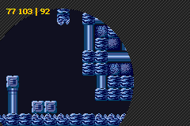
Fig 14.1: dma_demo 的调色板。
本章的演示可能看起来有点复杂，但效果是值得的。DMA 传输的基本用法太简单了，几乎不值得专门做个演示。而触发式 DMA 则是另一回事。在这种情况下，我们来看 HBlank 触发的 DMA，简称 HDMA。我们将用它来更新HBlank 内调整大小的窗口，以实现圆形窗口效果。
这当然说起来容易做起来难。设计的第一步是，首先怎样才能把 HDMA 用于此。因为我们需要在每个 HBlank 复制到 REG_WIN0H，我们需要让目标地址固定。严格来说，它需要重置为原始目标地址，但由于只复制一个半字，这意味着同样的事。对于源，我们会在一个数组中跟踪需要复制到那里、每条扫描线对应一项的数据，并每次推进数组一条扫描线（即，递增源）。当然，传输必须在每条扫描线发生，所以我们把它设为重复。所以基本上我们需要这个：
#define DMA_HDMA (DMA_ENABLE | DMA_REPEAT | DMA_AT_HBLANK | DMA_DST_RELOAD)
至于圆，我们需要一个能计算圆的左边缘和右边缘的例程。周围有几种能画圆的算法，比如 Bresenham 的 版本。我们将使用它的修改版，因为我们只需要存储左右点，而不是在那里画一个像素。为何是左右而非上下？因为数组是基于扫描线的，所以那已经表明了 y 值。
你实际用什么并不重要，只要你能找到边缘。一旦找到，你只需在 VBlank 中设置好 DMA 就完成了。
最终结果会显示像 fig 14.1 那样的东西。是窗口内的 Brinstar 背景（又是它），以及外面的条纹背景。文字标明了窗口的位置和半径，可以用十字键移动，并用 A 和 B 缩放。
#include
#include
#include "brin.h"
// From tonc_math.h
//#define IN_RANGE(x, min, max) ( (x) >= (min) && (x) < (max) )
// The source array
u16 g_winh[SCREEN_HEIGHT+1];
//! Create an array of horizontal offsets for a circular window.
/*! The offsets are to be copied to REG_WINxH each HBlank, either
* by HDMA or HBlank isr. Offsets provided by modified
* Bresenham's circle routine (of course); the clipping code is not
* optional.
* \param winh Pointer to array to receive the offsets.
* \param x0 X-coord of circle origin.
* \param y0 Y-coord of circle origin.
* \param rr Circle radius.
*/
void win_circle(u16 winh[], int x0, int y0, int rr)
{
int x=0, y= rr, d= 1-rr;
u32 tmp;
// clear the whole array first.
memset16(winh, 0, SCREEN_HEIGHT+1);
while(y >= x)
{
// Side octs
tmp = clamp(x0+y, 0, SCREEN_WIDTH);
tmp += clamp(x0-y, 0, SCREEN_WIDTH)<<8;
if(IN_RANGE(y0-x, 0, SCREEN_HEIGHT)) // o4, o7
winh[y0-x]= tmp;
if(IN_RANGE(y0+x, 0, SCREEN_HEIGHT)) // o0, o3
winh[y0+x]= tmp;
// Change in y: top/bottom octs
if(d >= 0)
{
tmp = clamp(x0+x, 0, SCREEN_WIDTH);
tmp += clamp(x0-x, 0, SCREEN_WIDTH)<<8;
if(IN_RANGE(y0-y, 0, SCREEN_HEIGHT)) // o5, o6
winh[y0-y]= tmp;
if(IN_RANGE(y0+y, 0, SCREEN_HEIGHT)) // o1, o2
winh[y0+y]= tmp;
d -= 2*(--y);
}
d += 2*(x++)+3;
}
winh[SCREEN_HEIGHT]= winh[0];
}
void init_main()
{
// Init BG 2 (basic bg)
dma3_cpy(pal_bg_mem, brinPal, brinPalLen);
dma3_cpy(tile_mem[0], brinTiles, brinTilesLen);
dma3_cpy(se_mem[30], brinMap, brinMapLen);
REG_BG2CNT= BG_CBB(0)|BG_SBB(30);
// Init BG 1 (mask)
const TILE tile=
{{
0xF2F3F2F3, 0x3F2F3F2F, 0xF3F2F3F2, 0x2F3F2F3F,
0xF2F3F2F3, 0x3F2F3F2F, 0xF3F2F3F2, 0x2F3F2F3F
}};
tile_mem[0][32]= tile;
pal_bg_bank[4][ 2]= RGB15(12,12,12);
pal_bg_bank[4][ 3]= RGB15( 8, 8, 8);
pal_bg_bank[4][15]= RGB15( 0, 0, 0);
se_fill(se_mem[29], 0x4020);
REG_BG1CNT= BG_CBB(0)|BG_SBB(29);
tte_init_chr4_b4_default(0, BG_CBB(2)|BG_SBB(28));
tte_init_con();
tte_set_margins(8, 8, 232, 40);
// Init window
REG_WIN0H= SCREEN_WIDTH;
REG_WIN0V= SCREEN_HEIGHT;
// Enable stuff
REG_DISPCNT= DCNT_MODE0 | DCNT_BG0 | DCNT_BG1 | DCNT_BG2 | DCNT_WIN0;
REG_WININ= WIN_BUILD(WIN_BG0|WIN_BG2, 0);
REG_WINOUT= WIN_BUILD(WIN_BG0|WIN_BG1, 0);
}
int main()
{
int rr=40, x0=128, y0=120;
init_main();
while(1)
{
vid_vsync();
key_poll();
rr += key_tri_shoulder(); // size with B/A
x0 += key_tri_horz(); // move left/right
y0 += key_tri_vert(); // move up/down
if(rr<0)
rr= 0;
// Fill circle array
win_circle(g_winh, x0, y0, rr);
// Init win-circle HDMA
DMA_TRANSFER(®_WIN0H, &g_winh[1], 1, 3, DMA_HDMA);
tte_printf("#{es;P}(%d,%d) | %d", x0, y0, rr);
}
return 0;
}
初始化函数大部分只是些点缀。说大部分，是因为有一件有趣的事：调用 dma_cpy 来复制 Brinstar 的调色板、图块和地图。除此之外，这里没什么好看的。
主函数本身也相当标准。这里有趣的是调用 win_circle()（设置源数组）和 DMA_TRANSFER()（初始化 HDMA）。注意我其实是让它从 g_winh[1] 而不是 g_winh[0] 开始。原因是 HBlank 发生在给定扫描线之后，而非之前，否则我们会滞后一个。这个 g_winh 数组实际上长 160+1，第 0 项和第 160 项都描述扫描线 0 的数据。还有一点重要但此处不太看得出的是：HDMA 只发生在可见的 HBlank 上，而非 VBlank 中的那些。这省去了在确定设置时要为多少个扫描线做修正的一大堆麻烦。
然后就是 win_circle()。如果你知道 Bresenham 画圆算法如何工作，你会知道它计算一个八分圆的偏移，然后通过对称规则把它用于其他 7 个八分圆。这里也一样。原版里大概没做的，是所有的裁剪（clamp() 和 IN_RANGE()）。然而，这些步骤在这里绝对至关重要。水平越界意味着错误的窗口偏移，会让窗口向内卷。垂直越界意味着 g_winh 越界，招致各种可怕后果。相信我，它们是必需的。
另外，注意我先清掉了整个数组；这可以在循环内做，但有时先填整个数组、然后只更新需要的部分反而更快。最后，如前所述，第一条扫描线的数据被复制到数组的最后一项，以应对 HBlank 发生的方式。
DMA 这一章到此结束。以这种方式使用 HDMA 对各种效果都很棒，不只是圆形窗口。你只需要一个包含扫描线数据的数组，以及一个事先设置它的函数。不过小心别把你的通道搞混了。
DMA 是最快的复制方法，但由于它会阻塞中断，使用 memcpy32() 可能更安全。反正速度差异只有 10%。DMA 也用于声音 FIFO，配合定时器使用。我没法真正展示如何用 DMA 做声音，但我可以告诉你定时器如何工作，下一章就会讲。
15. 定时器
时机就是一切
回想一下，有多少次你听到一个笑话因为抖包袱太早或太晚而被毁掉；回想一下超级马里奥（或任何平台游戏）里所有那些失败的跳跃；回想一下在马里奥赛车起步时因为轰油门太早而打滑；你的无敌时间恰恰在红龟壳顶到你屁[消音]股之前消失；在老派射击游戏里，因为突然的卡顿而没能躲开那阵弹幕。想到这一切以及类似的场景，你就会同意：在游戏里，正如在生活中，时机就是一切。
讽刺的是，定时器（timers）反而没那么重要。纵观电子游戏历史，程序员们都是围绕一个计时机制来构建游戏的：屏幕的垂直刷新率。换句话说，就是 VBlank（垂直消隐）。这是一台面向机器的定时器（你按帧数计），而不是面向人的（那种你会按秒计）。对于主机来说，这非常好用，因为硬件总是相同的。（当然，除了有些国家用 NTSC 电视（@ 60 Hz），而另一些用 PAL 电视（@ 50 Hz）。生活在后者阵营且有条件接触两种电视的人都知道差别，并会诅咒一个事实：大多数游戏都源自 NTSC 国家。）虽然 VBlank 定时器无处不在，但它并非唯一。GBA 有 4 个时钟定时器供你使用。本节介绍这些定时器。
GBA 定时器
所有能想得到定时器的工作方式都差不多。你有某个以固定频率振荡的东西（比如 CPU 时钟或钟摆的摆动）。每经过一个完整的周期，计数器就加一，你就有了一个定时器。很简单，不是吗？
GBA 定时器的基本频率是 CPU 频率，即 224 ≈ 16.78 MHz。换句话说，CPU 的一个时钟周期耗时 2−24 ≈ 59.6 ns。由于这对我们人类来说是个非常糟糕的时间尺度，GBA 允许 4 种不同的频率（更准确说是周期）：1、64、256 和 1024 个周期。这些频率的一些细节见 table 15.1。通过巧妙地使用定时器寄存器，你实际上能创建任意频率的定时器，但稍后再详述。应当指出，屏幕恰好每 280,896 个周期刷新一次。
| #cycles | frequency | period |
|---|---|---|
| 1 | 16.78 MHz | 59.59 ns |
| 64 | 262.21 kHz | 3.815 μs |
| 256 | 65.536 kHz | 15.26 μs |
| 1024 | 16.384 kHz | 61.04 μs |
定时器寄存器
GBA 有 4 个定时器，定时器 0 到 3。每个定时器有两个寄存器：一个数据寄存器（REG_TMxD）和一个控制寄存器（REG_TMxCNT）。地址可以在 table 15.2 中找到。
| reg | function | address |
|---|---|---|
REG_TMxD | data | 0400:0100h + 04h·x
|
REG_TMxCNT | control | 0400:0102h + 04h·x
|
REG_TMxCNT
| F E D C B A 9 8 | 7 | 6 | 5 4 3 | 2 | 1 0 |
| - | En | I | - | CM | Fr |
| bits | name | define | description |
|---|---|---|---|
| 0-1 | Fr | TM_FREQ_y | 定时器频率。分别为 1、64、256 或 1024 个周期对应 0-3。 |
| 2 | CM | TM_CASCADE | 级联模式。当前一个（x−1）定时器溢出（REG_TM(x-1)D=
0xffff）时，本定时器也会加一。设置了此位的定时器并不自行计数，不过你仍然需要把它使能。显然，这对于定时器 0 无效。如果你打算用它，请确保你完全理解我刚才说的；此地对疏忽者是个死亡陷阱。
|
| 6 | I | TM_IRQ | 溢出时触发中断。 |
| 7 | En | TM_ENABLE | 使能定时器。 |
REG_TMxD
数据寄存器 REG_TMxD 是一个 16 位数字，它的工作方式与你一开始预期的略有不同，但归根结底它是有道理的。你从寄存器读出的值是当前的定时器计数值。到目前为止，一切正常。然而，你写入 REG_TMxD 的值，是计数器在定时器被使能（通过 TM_ENABLE）或溢出时开始计数的初始值。这有几个“有趣“的后果。为了便于说明，定义变量 n 为初始值（写入数），c 为当前计数值（读出数）。
首先，当你像这样设置一个 n（比如 c000h）：
REG_TM2D= 0xc000;
你并没有把当前定时器计数值 c 设为 n（=c000h）。事实上，如果定时器被禁用，那么 c= 0。然而，一旦你使能计数器，那么 c = n 并从此处继续。而且当定时器溢出时，它也会重置为该值。顺便说一句，由于 n 只是起始值，先设置 n、再使能定时器很重要。
其次，问问你自己：当你再次禁用定时器时会发生什么？嗯，计数器保留其当前值。然而，当你随后使能它时，c 会再次重置为 n。如果你想要禁用定时器一段时间（比如游戏暂停时），然后再从它停下的地方继续，这就有点烦人了。嗯，是的，但有办法实现它。怎么做？通过设置 TM_CASCADE 把它变成一个级联定时器！在 REG_TMxCNT 中设置该位会使定时器仅在前一个定时器溢出时才增加。如果你阻止这种情况发生（比如禁用它），那么你实际上就禁用了你的定时器。
最后，给定某个 n，定时器将在 T= 10000h−n 次递增后溢出。或者，多亏了补码的美妙，直接就是 T= −n。配合级联定时器（或中断），你可以构建任意频率的定时器，这正是你想要的定时器。
写入 REG_TMxD 的方式很怪
写入 REG_TMxD 可能并不像你想的那样。它并不设置定时器的值。相反，它设置的是下一次定时器运行的初始值。
定时器演示：像钟表一样
在今天的演示中，我将展示如何用定时器做一个简单的数字时钟。为此，我们需要一个 1 Hz 的定时器。由于它不能直接得到，我将用定时器 2 和 3 搭建一个级联定时器系统。定时器 3 会被设为级联模式，在定时器 2 溢出时更新。这样就能让溢出恰好以一赫兹的频率发生。时钟频率是 224，也就是 1024*0x4000。通过将定时器 2 设为 TM_FREQ_1024 并从 −0x4000 开始，级联的定时器 3 实际上就成了一个 1 Hz 计数器。
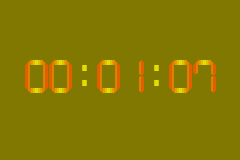
Fig 15.1: tmr_demo。
每当定时器 3 更新时，演示就把秒数转换为时、分、秒并打印在屏幕上（见 fig 15.1）。是的，我在这里用了除法和取模，因为这是最简单的做法，而且在这个特定演示里我消耗得起这些周期。
演示可以用 Select 和 Start 来（取消）暂停。Start 禁用定时器 2，从而也禁用了定时器 3。Select 把定时器 2 也变成一个级联定时器，而由于定时器 1 是禁用的，这样做也会停止定时器 2（和 3）。区别在于你取消暂停时会发生什么。通过禁用一个定时器，它会从初始值重新开始；但用级联停止它实际上让定时器保持活动，一旦级联被移除它就会简单地继续计数。差别很微妙，但后者更合适。
// Using a the "Berk" font from headspins font collection.
#include <stdio.h>
#include <tonc.h>
#include "berk.h"
void tmr_test()
{
// Overflow every ~1 second:
// 0x4000 ticks @ FREQ_1024
REG_TM2D= -0x4000; // 0x4000 ticks till overflow
REG_TM2CNT= TM_FREQ_1024; // we're using the 1024 cycle timer
// cascade into tm3
REG_TM3CNT= TM_ENABLE | TM_CASCADE;
u32 sec= -1;
while(1)
{
vid_vsync();
key_poll();
if(REG_TM3D != sec)
{
sec= REG_TM3D;
tte_printf("#{es;P:24,60}%02d:%02d:%02d",
sec/3600, (sec%3600)/60, sec%60);
}
if(key_hit(KEY_START)) // pause by disabling timer
REG_TM2CNT ^= TM_ENABLE;
if(key_hit(KEY_SELECT)) // pause by enabling cascade
REG_TM2CNT ^= TM_CASCADE;
}
}
int main()
{
// set-up berk font
tte_init_se(0, BG_CBB(0)|BG_SBB(31), 1, 0, 0, &berkFont, se_drawg);
tte_init_con();
memcpy16(pal_bg_mem, berkPal, berkPalLen/4);
REG_DISPCNT= DCNT_MODE0 | DCNT_BG0;
tmr_test();
return 0;
}
这只是定时器相当简单的一种用法。当然，我本可以同样轻易地用 VBlank 来记录秒数，而这本来就是通常的做法。硬件定时器通常保留给定时的 DMA 使用，定时的 DMA 用于声音混音器，而非用于游戏定时器。不过还有一个能想到的用途，即性能剖析：检查你的函数有多快。其中一个文本系统演示就是用它来检测几个复制例程的速度。
16. 中断
简介
在某些条件下,你可以让 CPU 放下手头正在做的事,转而去运行另一个函数,之后再继续执行原来的进程。这个过程被称为中断(interrupt,请拼两个“r“)。处理中断的函数称为中断服务程序(interrupt service routine),简称中断;触发一个中断叫做引发(raising)一个中断。
中断通常附着于某些硬件事件:例如,按下 PC 键盘上的一个键就会引发一个中断。PC 的另一个例子是 VBlank(没错,PC 也有 VBlank)。GBA 有类似的中断,以及用于 HBlank、DMA 等等的其他中断。最后一个尤其可以用于大量的巧妙效果。我很快就会给出中断的完整列表。
中断会暂停当前进程,快速做“某件事“,然后交还控制权。请重读“快速“二字:中断应当是短小的例程。
中断寄存器
有三个专门用于中断的寄存器:REG_IE (0400:0200h)、REG_IF (0400:0202h) 和 REG_IME (0400:0208h)。REG_IME 是主中断控制;除非它被设为“1“,否则中断会被完全忽略。要启用特定中断,你需要在 REG_IE 中设置相应的位。当中断发生时,REG_IF 中相应的位会被置位。要确认你已经处理了某个中断,需要再次清除该位,但清除的方式至少可以说有点反直觉。要确认中断,你实际上必须再次置位该位。没错,你必须向该位(它已经是 1)写入 1 才能清除它。
除了在 REG_IE 中设置位之外,你还需要在与该主题相关的其他寄存器中设置一位。例如,HBlank 中断还需要 REG_DISPSTAT 中的一位。我想(但如果我错了请纠正我),你既需要中断的发送方也需要接收方;REG_IE 控制接收方,而像 REG_DISPSTAT 这样的寄存器控制发送方。考虑到这一点,让我们看看 REG_IE 和 REG_IF 的位布局。
| F E | D | C | B A 9 8 | 7 | 6 5 4 3 | 2 | 1 | 0 |
| - | C | K | Dma | Com | Tm | Vct | Hbl | Vbl |
| bits | name | define | description |
|---|---|---|---|
| 0 | Vbl | IRQ_VBLANK | VBlank 中断。还需要
REG_DISPSTAT{3}
|
| 1 | Hbl | IRQ_HBLANK | HBlank 中断。还需要
REG_DISPSTAT{4}，发生在 HDraw 之后，
因此这里的更改会在下一行生效。
|
| 2 | Vct | IRQ_VCOUNT | VCount interrupt. Also requires
REG_DISPSTAT{5}. The high byte of
REG_DISPSTAT 给出触发该中断的 VCount 值。
中断发生在扫描线的开头。
|
| 3-6 | Tm | IRQ_TIMERx | Timer interrupt, 1 bit per timer. Also requires
REG_TMxCNT{6}. The interrupt will be raised
when the timer overflows.
|
| 7 | Com | IRQ_COM | 串行通信 中断。此外还需要
REG_SCCNT{E}。在整个传输完成时触发。
至少我是这么听说的，我对串行通信其实一窍不通。
|
| 8-B | Dma | IRQ_DMAx | DMA 中断，每个通道 1 位。还需要
REG_DMAxCNT{1E}。在整个传输完成时触发。
|
| C | K | IRQ_KEYPAD | 按键 中断。还需要
REG_KEYCNT{E}。当 REG_KEYCNT 中指定的
任意一个或所有按键被按下时触发。
|
| D | C | IRQ_GAMEPAK | 卡带 中断。在卡带从 GBA 中拔出时触发。 |
中断服务程序
你使用上述中断寄存器来指明你想使用哪些中断。下一步是编写一个中断服务程序。这只是一个无类型的函数(void func(void));一个很像其他许多函数的 C 函数。下面是一个 HBlank 中断的例子。
void hbl_pal_invert()
{
pal_bg_mem[0] ^= 0x7FFF;
REG_IF = IRQ_HBLANK;
}
第一行反转调色板内存第一个条目的颜色。第二行重置 REG_IF 的 HBlank 位,表示中断已被处理。由于这是一个 HBlank 中断,最终结果是颜色每一条扫描线都变化一次。这应该不难想象。
如果你简单地将这个函数添加到一个已有的程序中,什么都不会改变。怎么会这样?嗯,虽然你现在有了一个 isr,你仍然需要告诉 GBA 去哪里找它。为此,我们需要更仔细地审视整个中断过程。
正确确认中断
要确认一个中断已被处理,你必须置位 REG_IF 中该中断的位,而且只有那一位。这意味着“<code>REG_IF <b>=</b> IRQ_<i>x</i></code>“通常是正确的做法,而不是”<code>REG_IF <b>|=</b> IRQ_<i>x</i></code>“。|= 版本会确认所有已被引发的中断,即使你还没有处理它们。
通常,这两种做法结果相同,但如果多个中断同时到来,事情就会变糟。只要注意你在做什么就好。
中断处理过程
完整的中断过程有点棘手,而且其中一部分完全超出了你的控制。下面是你,程序员,需要知道的清单。完整说明,请参见 GBATEK : irq control。
- 中断发生。BIOS 最深处地牢中的一些黑魔法发生,CPU 切换到 IRQ 模式和 ARM 状态。一些寄存器(
r0-r3, r12, lr)被压入栈。 - BIOS 加载位于
0300:7FFC的地址,并跳转到该地址。 - 由
0300:7FFC指向的代码被执行。由于我们现在处于 ARM 状态,这段代码必须是 ARM 代码! - 在 isr 完成后,通过写入
REG_IF确认中断已被处理,然后通过发出bx lr指令从 isr 返回。 - 先前保存的寄存器从栈中弹出,程序状态恢复正常。
步骤 1、2 和 5 由 BIOS 完成;3 和 4 是你的。现在,原则上你只需将你的 isr 的地址放入地址 0300:7FFC。为了让我们的工作轻松一点,我们首先为自己创建一个函数指针类型。
typedef void (*fnptr)(void);
#define REG_ISR_MAIN *(fnptr*)(0x03007FFC)
// Be careful when using it like this, see notes below
void foo()
{
REG_ISR_MAIN= hbl_pal_invert; // tell the GBA where my isr is
REG_DISPSTAT |= VID_HBL_IRQ; // Tell the display to fire HBlank interrupts
REG_IE |= IRQ_HBLANK; // Tell the GBA to catch HBlank interrupts
REG_IME= 1; // Tell the GBA to enable interrupts;
}
现在,这多半能工作,但像往常一样,故事还有更多内容。
- 首先,
REG_ISR_MAIN跳转到的代码必须是 ARM 代码!如果你用-mthumb标志编译,整个事情会戛然而止。 - 当你在中断内部被中断时会发生什么?嗯,这实际上不太可能;除非你做一些我们稍后会讲到的花哨操作。你看,
REG_IME并不是唯一允许中断的东西,程序状态寄存器(program status register,PSR)中也有一个用于 irq 的位。当引发中断时,CPU 会在整个事情结束并处理完之前禁用那里的中断。 hbl_pal_invert()不会检查它是否由 HBlank 中断激活。现在,在这种情况下这并不重要,因为它是唯一被启用的中断,但当你使用不同类型的中断时,区分它们至关重要。这就是为什么我们将在下一节创建一个中断交换台。- 最后,当你使用需要中断的 BIOS 调用 时,你也需要在
REG_IFBIOS(==0300:7FF8)中确认它们。其用法与REG_IF相同。
On section mirroring
GBA 的内存段每隔若干字节就会镜像一次。例如 IWRAM (0300:0000) 每 8000h 字节镜像一次,因此 0300:7FFC 也就是 03FF:FFFC,或 0400:0000−4。虽然这样更快,但我不太确定是否应该利用这一点。no$gba v2.2b 将其标记为错误,尽管这显然是一个小疏忽,并在 v2.2c 中修复了。不过,已经提醒过你了。
创建中断交换台
hbl_pal_invert() 函数是一个单一中断的例子,但你可能需要处理多个中断。你可能还希望能够根据情况使用不同的 isr,在这种情况下,把所有东西都塞进一个函数可能不是最好的做法。相反,我们将创建一个中断交换台(interrupt switchboard)。
中断交换台的工作方式有点像电话交换台:你有一个来电(即 REG_IF 中的一个中断)进来,操作员检查它是不是一个活跃的号码(与 REG_IE 比较),如果是,则将来电连接到正确的接收方(你的 isr)。
这个特定的交换台还附带一些额外特性。它会在 REG_IF 和 REG_IFBIOS 中确认来电,即使该中断实际上没有附接任何 ISR。它还会允许嵌套中断,尽管这需要在 ISR 本身中做一点额外工作。
设计与接口考量
实际的交换台只是整体的一部分;我还需要几个结构、变量和函数。我需要的基本项目如下。
__isr_table[]。一个中断表。这是一个指向不同 isr 的函数指针表。由于中断应当有优先级,该表还应指明这些指针属于哪个中断。为此,我们将使用一个IRQ_REC结构。irq_init()/irq_set_master()。设置主 isr。irq_init()也初始化中断表以及中断本身。irq_enable()/irq_disable()。用于启用和禁用中断的函数。它们会同时处理REG_IE以及发送方位所在的任何寄存器。我将这些位保存在一个名为__irq_senders[]的内部表中,为了能使用它们,这些函数的输入参数需要是中断的索引,而不是中断标志本身。这就是为什么我为IRQ_foo标志准备了对应的II_foo。irq_set()/irq_add()/irq_delete()。用于添加/删除中断服务程序的函数。第一个允许 isr 的完整优先级排序;irq_add()会替换给定中断当前的 irs,或在列表末尾添加一个;irq_delete()会删除一个并纠正列表中的空位。
所有这些函数都做类似的事:禁用中断(REG_IME=0),做它们的事,然后重新启用中断。这是个好主意,因为在鼓捣中断时被中断并不好看。与 service routine 相关的函数还会接受一个函数指针(fnptr 类型),并返回一个函数指针以指示先前的 isr。如果你想尝试将它们链式连接,这可能有用。
下面你可以看到结构、表,以及 irq_enable() 和 irq_add() 的实现。在两个函数中,__irq_senders[] 数组用于确定在哪个寄存器设置哪个位以确保发送中断请求。irq_add() 函数接着去寻找当前表中要替换的所请求中断,或一个空槽来填充。其他例程类似。如果你需要看更多,请查看 libtonc 中的 tonc_irq.h/.c。
//! Interrups Indices
typedef enum eIrqIndex
{
II_VBLANK=0, II_HBLANK, II_VCOUNT, II_TIMER0,
II_TIMER1, II_TIMER2, II_TIMER3, II_SERIAL,
II_DMA0, II_DMA1, II_DMA2, II_DMA3,
II_KEYPAD, II_GAMEPAK,II_MAX
} eIrqIndex;
//! Struct for prioritized irq table
typedef struct IRQ_REC
{
u32 flag; //!< Flag for interrupt in REG_IF, etc
fnptr isr; //!< Pointer to interrupt routine
} IRQ_REC;
// === PROTOTYPES =====================================================
IWRAM_CODE void isr_master_nest();
void irq_init(fnptr isr);
fnptr irq_set_master(fnptr isr);
fnptr irq_add(enum eIrqIndex irq_id, fnptr isr);
fnptr irq_delete(enum eIrqIndex irq_id);
fnptr irq_set(enum eIrqIndex irq_id, fnptr isr, int prio);
void irq_enable(enum eIrqIndex irq_id);
void irq_disable(enum eIrqIndex irq_id);
// IRQ Sender information
typedef struct IRQ_SENDER
{
u16 reg_ofs; //!< sender reg - REG_BASE
u16 flag; //!< irq-bit in sender reg
} ALIGN4 IRQ_SENDER;
// === GLOBALS ========================================================
// One extra entry for guaranteed zero
IRQ_REC __isr_table[II_MAX+1];
static const IRQ_SENDER __irq_senders[] =
{
{ 0x0004, 0x0008 }, // REG_DISPSTAT, DSTAT_VBL_IRQ
{ 0x0004, 0x0010 }, // REG_DISPSTAT, DSTAT_VHB_IRQ
{ 0x0004, 0x0020 }, // REG_DISPSTAT, DSTAT_VCT_IRQ
{ 0x0102, 0x0040 }, // REG_TM0CNT, TM_IRQ
{ 0x0106, 0x0040 }, // REG_TM1CNT, TM_IRQ
{ 0x010A, 0x0040 }, // REG_TM2CNT, TM_IRQ
{ 0x010E, 0x0040 }, // REG_TM3CNT, TM_IRQ
{ 0x0128, 0x4000 }, // REG_SCCNT_L BIT(14) // not sure
{ 0x00BA, 0x4000 }, // REG_DMA0CNT_H, DMA_IRQ>>16
{ 0x00C6, 0x4000 }, // REG_DMA1CNT_H, DMA_IRQ>>16
{ 0x00D2, 0x4000 }, // REG_DMA2CNT_H, DMA_IRQ>>16
{ 0x00DE, 0x4000 }, // REG_DMA3CNT_H, DMA_IRQ>>16
{ 0x0132, 0x4000 }, // REG_KEYCNT, KCNT_IRQ
{ 0x0000, 0x0000 }, // cart: none
};
// === FUNCTIONS ======================================================
//! Enable irq bits in REG_IE and sender bits elsewhere
void irq_enable(enum eIrqIndex irq_id)
{
u16 ime= REG_IME;
REG_IME= 0;
const IRQ_SENDER *sender= &__irq_senders[irq_id];
*(u16*)(REG_BASE+sender->reg_ofs) |= sender->flag;
REG_IE |= BIT(irq_id);
REG_IME= ime;
}
//! Add a specific isr
fnptr irq_add(enum eIrqIndex irq_id, fnptr isr)
{
u16 ime= REG_IME;
REG_IME= 0;
int ii;
u16 irq_flag= BIT(irq_id);
fnptr old_isr;
IRQ_REC *pir= __isr_table;
// Enable irq
const IRQ_SENDER *sender= &__irq_senders[irq_id];
*(u16*)(REG_BASE+sender->reg_ofs) |= sender->flag;
REG_IE |= irq_flag;
// Search for previous occurance, or empty slot
for(ii=0; pir[ii].flag; ii++)
if(pir[ii].flag == irq_flag)
break;
old_isr= pir[ii].isr;
pir[ii].isr= isr;
pir[ii].flag= irq_flag;
REG_IME= ime;
return old_isr;
}
主中断服务程序
主 ISR 的主要任务是在 ___isr_table 中寻找引发的中断,并在 REG_IF 和 REG_IFBIOS 中确认它。如果有特定于某 irq 的 service routine,它应当调用它;否则,它应当直接返回 BIOS。在 C 中,它大概是这样:
// This is mostly what libtonc's isr_master does, but
// you really need asm for the full functionality
IWRAM_CODE void isr_master_c()
{
u32 ie= REG_IE;
u32 ieif= ie & REG_IF;
IRQ_REC *pir;
// (1) Acknowledge IRQ for hardware and BIOS.
REG_IF = ieif;
REG_IFBIOS |= ieif;
// (2) Find raised irq
for(pir= __isr_table; pir->flag!=0; pir++)
if(pir->flag & ieif)
break;
// (3) Just return if irq not found in list or has no isr.
if(pir->flag == 0 || pir->isr == NULL)
return;
// --- If we're here have an interrupt routine ---
// (4a) Disable IME and clear the current IRQ in IE
u32 ime= REG_IME;
REG_IME= 0;
REG_IE &= ~ieif;
// (5a) CPU back to system mode
//> *(--sp_irq)= lr_irq;
//> *(--sp_irq)= spsr
//> cpsr &= ~(CPU_MODE_MASK | CPU_IRQ_OFF);
//> cpsr |= CPU_MODE_SYS;
pir->isr(); // (6) Run the ISR
REG_IME= 0; // Clear IME again (safety)
// (5b) Back to irq mode
//> lr_sys = *sp_sys++;
//> cpsr &= ~(CPU_MODE_MASK | CPU_IRQ_OFF);
//> cpsr |= CPU_MODE_IRQ | CPU_IRQ_OFF;
//> spsr = *sp_irq++
//> lr_irq = *sp_irq++;
// (4b) Restore original ie and ime
REG_IE= ie;
REG_IME= ime;
}
这些要点大多已经讨论过,所以我不再重复。请注意确认 REG_IF 和 REG_IFBIOS 的区别:前者使用简单赋值,后者使用 |=。步骤 4、5 和 6 仅当当前 IRQ 有自己的 service routine 时才执行。步骤 4a 和 5a 作为初始化步骤,确保 ISR(步骤 6)能在 CPU 模式下工作,并且除非它要求,否则不能被中断。步骤 4b 和 5b 撤销 4a 和 5a。
这个例程在 C 中可以正常工作,如果不是因为项目 5a 和 5b 的话。这些是将 CPU 模式设置/恢复为 system/irq 模式的代码,但必要的指令在 C 中不可用。另一个问题是链接寄存器(用于保存函数返回地址)必须以某种方式保存,而这些在 C 中绝对不可用。
注意:我说的是寄存器,复数!每种 CPU 模式都有自己的栈和链接寄存器,即使名字相同(lr 和 sp),它们也确实不相同。通常一个 C 例程会自己保存 lr,但既然现在你需要它两次,把它留给编译器就非常不安全了。除此之外,你还需要保存已保存程序状态寄存器 spsr,它表示中断发生时的程序状态。这是另一件 C 真的做不了的事。因此,主 ISR 需要汇编。
那么,就用汇编吧。下面的函数是 `irs_master_c()` 的汇编等价物。它几乎是逐行翻译,尽管我利用了指令集的一些编译器不会或不愿使用的特性。我不指望你真能理解这里写的一切,但发挥一点想象力,你应该能跟上大部分。教授汇编*远远*超出了本章的范围,但在我看来值得付出努力。Tonc 的[汇编章节](asm.html)应该能给你理解其中大部分内容所需的信息,并指出进一步学习的方向。
.file "tonc_isr_master.s"
.extern __isr_table;
/*! \fn IWRAM_CODE void isr_master()
\brief Default irq dispatcher (no automatic nesting)
*/
.section .iwram, "ax", %progbits
.arm
.align
.global isr_master
@ --- Register list ---
@ r0 : ®_IE
@ r1 : __isr_table / isr
@ r2 : IF & IE
@ r3 : tmp
@ ip : (IF<<16 | IE)
isr_master:
@ Read IF/IE
mov r0, #0x04000000
ldr ip, [r0, #0x200]!
and r2, ip, ip, lsr #16 @ irq= IE & IF
@ (1) Acknowledge irq in IF and for BIOS
strh r2, [r0, #2]
ldr r3, [r0, #-0x208]
orr r3, r3, r2
str r3, [r0, #-0x208]
@ (2) Search for irq.
ldr r1, =__isr_table
.Lirq_search:
ldr r3, [r1], #8
tst r3, r2
bne .Lpost_search @ Found one, break off search
cmp r3, #0
bne .Lirq_search @ Not here; try next irq
@ (3) Search over : return if no isr, otherwise continue.
.Lpost_search:
ldrne r1, [r1, #-4] @ isr= __isr_table[ii-1].isr
cmpne r1, #0
bxeq lr @ If no isr: quit
@ --- If we're here, we have an isr ---
@ (4a) Disable IME and clear the current IRQ in IE
ldr r3, [r0, #8] @ Read IME
strb r0, [r0, #8] @ Clear IME
bic r2, ip, r2
strh r2, [r0] @ Clear current irq in IE
mrs r2, spsr
stmfd sp!, {r2-r3, ip, lr} @ sprs, IME, (IE,IF), lr_irq
@ (5a) Set mode to sys
mrs r3, cpsr
bic r3, r3, #0xDF
orr r3, r3, #0x1F
msr cpsr, r3
@ (6) Call isr
stmfd sp!, {r0,lr} @ ®_IE, lr_sys
mov lr, pc
bx r1
ldmfd sp!, {r0,lr} @ ®_IE, lr_sys
@ --- Unwind ---
strb r0, [r0, #8] @ Clear IME again (safety)
@ (5b) Reset mode to irq
mrs r3, cpsr
bic r3, r3, #0xDF
orr r3, r3, #0x92
msr cpsr, r3
@ (4b) Restore original spsr, IME, IE, lr_irq
ldmfd sp!, {r2-r3, ip, lr} @ sprs, IME, (IE,IF), lr_irq
msr spsr, r2
strh ip, [r0]
str r3, [r0, #8]
bx lr
Nested irqs are nasty
在你只懂皮毛的情况下,让嵌套中断例程工作可不是令人愉快的练习。例如,不同的 CPU 模式使用不同的栈,这一点我花了一阵才弄明白;而我花了相当长时间才意识到我的嵌套 isr 不工作的原因是也有不同的链接寄存器。
isr_master_nest 很大程度上基于 libgba 的中断分发器,但也借鉴了 GBATEK 以及 A. Bilyk 和 DekuTree 对整个事情的分析,如 forum:4063 所述。同样 invaluable(非常宝贵)的是 no$gba 的家用调试器版本,断点万岁。
如果你想开发自己的中断例程,这些资料会极大地帮助你,并将 sanity(理智)的损失控制在尚可接受的水平。
Deprecation notice
我以前有一个不同的主 service routine,它会自动处理嵌套和优先级排序。因为它被认为太复杂,已被替换为这个。
嵌套中断仍然是可能的,但现在你必须自己在 isr 内部标明可中断性。
嵌套中断演示
今天的演示展示了上述所有内容的一小部分:
- 它将通过一个 HBlank 中断在屏幕上显示颜色渐变。
- 它允许你在两个不同的主 isr 之间切换:作为交换台的
isr_master(将程序流路由到一个 HBlank isr),以及一个直接用 C 处理 HBlank 中断的 isr。后者要工作,我们当然需要使用 ARM 编译的代码,我稍后也会向你展示如何做。 - 最后,拥有一个嵌套的 isr 交换台意义不大,除非你能真正看到嵌套中断在运行。在这种情况下,我们将使用两个中断:VCount 和 HBlank。HBlank isr 创建一个垂直颜色渐变。VCount isr 会重置颜色并让 CPU 忙碌若干个扫描线。如果中断不嵌套,你会看到渐变暂停一会儿;如果嵌套了,它会照常继续。
- 而且只是为了好玩,你可以切换 HBlank 和 VCount irq 的开关。
控制方式如下:
| A | Toggles between asm switchboard and C direct isr. |
|---|---|
| B | Toggles HBlank and VCount priorities. |
| L,R | Toggles VCount and HBlank irqs on and off. |
#include <stdio.h>
#include <tonc.h>
IWRAM_CODE void isr_master();
IWRAM_CODE void hbl_grad_direct();
void vct_wait();
void vct_wait_nest();
CSTR strings[]=
{
"asm/nested", "c/direct",
"HBlank", "VCount"
};
// Function pointers to master isrs.
const fnptr master_isrs[2]=
{
(fnptr)isr_master,
(fnptr)hbl_grad_direct
};
// VCount interrupt routines.
const fnptr vct_isrs[2]=
{
vct_wait,
vct_wait_nest
};
// (1) Uses tonc_isr_master.s' isr_master() as a switchboard
void hbl_grad_routed()
{
u32 clr= REG_VCOUNT/8;
pal_bg_mem[0]= RGB15(clr, 0, 31-clr);
}
// (2a) VCT is triggered at line 80; this waits 40 scanlines
void vct_wait()
{
pal_bg_mem[0]= CLR_RED;
while(REG_VCOUNT<120);
}
// (2b) As vct_wait(), but interruptable by HBlank
void vct_wait_nest()
{
pal_bg_mem[0]= CLR_RED;
REG_IE= IRQ_HBLANK; // Allow nested hblanks
REG_IME= 1;
while(REG_VCOUNT<120);
}
int main()
{
u32 bDirect=0, bVctPrio= 0;
tte_init_chr4_b4_default(0, BG_CBB(2)|BG_SBB(28));
tte_set_drawg((fnDrawg)chr4_drawg_b4cts_fast);
tte_init_con();
tte_set_margins(8, 8, 128, 64);
REG_DISPCNT= DCNT_MODE0 | DCNT_BG0;
// (3) Initialize irqs; add HBL and VCT isrs
// and set VCT to trigger at 80
irq_init(master_isrs[0]);
irq_add(II_HBLANK, hbl_grad_routed);
BFN_SET(REG_DISPSTAT, 80, DSTAT_VCT);
irq_add(II_VCOUNT, vct_wait);
irq_add(II_VBLANK, NULL);
while(1)
{
//vid_vsync();
VBlankIntrWait();
key_poll();
// Toggle HBlank irq
if(key_hit(KEY_R))
REG_IE ^= IRQ_HBLANK;
// Toggle Vcount irq
if(key_hit(KEY_L))
REG_IE ^= IRQ_VCOUNT;
// (4) Toggle between
// asm switchblock + hbl_gradient (red, descending)
// or purely hbl_isr_in_c (green, ascending)
if(key_hit(KEY_A))
{
bDirect ^= 1;
irq_set_master(master_isrs[bDirect]);
}
// (5) Switch priorities of HBlank and VCount
if(key_hit(KEY_B))
{
//irq_set(II_VCOUNT, vct_wait, bVctPrio);
bVctPrio ^= 1;
irq_add(II_VCOUNT, vct_isrs[bVctPrio]);
}
tte_printf("#{es;P}IRS#{X:32}: %s\nPrio#{X:32}: %s\nIE#{X:32}: %04X",
strings[bDirect], strings[2+bVctPrio], REG_IE);
}
return 0;
}
上面的代码清单包含了主演示代码、将被路由的 HBlank 和 VCount isr,以及一些为方便起见的杂项。用 C 编写的主 isr hbl_grad_direct() 在另一个文件中,稍后讨论。
首先,中断服务程序的内容(标号 1 和 2)。两个例程都很简单:HBlank 例程(hbl_grad_routed())使用扫描线计数器的值来为背景设置颜色。在顶部,REG_VCOUNT 是 0,所以颜色是蓝色;在底部,它是 160/8=20,所以介于蓝和红之间:紫色。现在,你可能注意到第一条扫描线实际上是红色的而不是蓝色:这是因为 a) HBlank 中断发生在扫描线之后(这之前在 DMA 演示 中造成过麻烦),以及 b) 因为 HBlank 在 VBlank 期间也会发生,所以第 0 行的颜色是在 REG_VCOUNT=227 时设置的,这会给出亮红色。
VCount 例程在扫描线 80 处激活。它们将颜色设为红色,然后等待直到扫描线 120。两者的区别在于 vct_wait() 只是等待,而 vct_wait_nest() 启用了 HBlank 中断。记住 isr_master 在调用 service routine 之前会禁用中断,所以后一个 Vcount 例程应该被 hbl_grad_routed() 中断,而前者不会。正如你从 fig 16.1a 和 fig 16.1b 看到的,这确实发生了。
标号 3 是一开始设置中断的地方。irq_init() 的调用清除 isr 表并设置主 isr。它的参数可以是 NULL,此时使用 tonc 的默认主 isr。对 irq_add() 的调用初始化 HBlank 和 VCount 中断及其 service routine。如果你不提供 service routine,交换台只会确认中断然后返回。有时这很有用,我们将在下一章看到。irq_add() 已经同时处理了 REG_IE 和 REG_DISPSTAT 中的 IRQ 位;它还没做的是设置应引发中断的 VCount,所以这是单独完成的。irq_add() 的顺序其实并不重要,但较低的顺序会被先搜索,所以把更频繁的中断放在前面是有意义的。
你可以用 irq_set_master() 在主 service routine 之间切换,如标号 4 处所示。标号 5 在嵌套和非嵌套的 VCount 例程之间选择。
 Fig 16.1a: Gradient; nested vct_wait_nested.
|
 Fig 16.1b: Gradient; non-nested vct_wait.
|
 Fig 16.1c: Gradient; HBlank in master ISR in C. |
这解释了演示能展示的大部分内容。对于实际应用,irq_init() 和 irq_add() 几乎就是你需要的全部,但演示也展示了一些其他有趣的东西。同样有趣的是,对于 VBA、no$gba 和真机,结果实际上略有不同,这引出了另一点:中断是时间关键的例程,而模拟时序相当棘手。如果某件事在模拟器上能工作但在真机上不行,中断是个值得开始排查的好地方。
这几乎结束了演示部分,除了一件事:直接用 C 写的 HBlank isr。但为此,我们需要它是 ARM 代码,而为了高效,它还应该放在 IWRAM 中。我们就是这么做的。
使用 ARM + IWRAM 代码
主中断例程必须是 ARM 代码。由于我们一直编译为 Thumb 代码,这对我们来说是新东西。我们一直编译为 Thumb 代码的原因是普通代码段的 16 位总线让 ARM 代码在那里变慢。然而,我们可以做的是将 ARM 代码放在 IWRAM 中,它有 32 位总线(且无等待状态),因此在那里使用 ARM 代码实际上是有益的。
编译为 ARM 代码其实相当简单:使用 -marm 而不是 -mthumb。IWRAM 部分才是造成最多问题的地方。有一些 GCC 扩展可以让你指定一个函数应放在哪个段。Tonclib 有如下宏:
#define EWRAM_DATA __attribute__((section(".ewram")))
#define IWRAM_DATA __attribute__((section(".iwram")))
#define EWRAM_BSS __attribute__((section(".sbss")))
#define EWRAM_CODE __attribute__((section(".ewram"), long_call))
#define IWRAM_CODE __attribute__((section(".iwram"), long_call))
// --- Examples of use: ---
// Declarations
extern EWRAM_DATA u8 data[];
IWRAM_CODE void foo();
// Definitions
EWRAM_DATA u8 data[8]= { ... };
IWRAM_CODE void foo()
{
....
}
EWRAM/IWRAM 的东西应该是不言自明的。DATA_IN_x 的东西允许将全局数据放入那些段。注意数据的默认段本来就是 IWRAM,所以这可能有点多余。EWRAM_BSS 涉及未初始化的全局变量。与已初始化全局变量的区别在于它们不必在 ROM 中占用空间:你只需要知道要在 RAM 中为数组保留多少空间。
函数变体还需要 long_call 属性。代码分支的范围有限,段间分支通常太远而无法用常规方式完成,而这正是使其工作的原因。你可以将它们与 PC 编程中曾经存在的“far“和“near“进行比较。
应该指出,这些扩展可能有点挑剔。一方面,属性和声明及定义中放的位置似乎很重要。我想给出的例子能工作,但如果不能,试着移动一下它们,看看是否有帮助。更大的问题是 long_call 属性不总是想工作。之前的经验让我相信,除非函数的定义在另一个文件中,否则 long_call 会被忽略。如果它在调用函数所在的同一文件中,你会得到一个“relocation error“,基本上意味着跳转太远。其结果是你必须根据段来分离你的函数。这其实挺好,因为你反正也要分离 ARM 代码。
所以,对于 ARM/IWRAM 代码,你需要有一个单独的文件来放这些例程,使用 IWRAM_CODE 宏来标明段,并在编译时使用 -marm。添加 -mlong-calls 也是个好主意,以防你 ever 想从 IWRAM 调用 ROM 函数。这个选项让每次调用都成为长调用。一些工具链(包括 DKP)设置了它们的链接脚本,使得扩展名为 .iwram.c 的文件自动进入 IWRAM,因此 IWRAM_CODE 只需要在声明处使用。
在这种情况下,那就是名为 *isr.iwram.c* 的文件。它包含一个简单的用 C 写的主 isr,只处理 HBlank 和确认中断。
#include <tonc.h>
IWRAM_CODE void hbl_grad_direct();
// an interrupt routine purely in C
// (make SURE you compile in ARM mode!!)
void hbl_grad_direct()
{
u32 irqs= REG_IF & REG_IE;
REG_IFBIOS |= irqs;
if(irqs & IRQ_HBLANK)
{
u32 clr= REG_VCOUNT/8;
pal_bg_mem[0]= RGB15(0, clr, 0);
}
REG_IF= irqs;
}
ARM+IWRAM 编译的标志
将编译标志中的 “-mthumb” 替换为 “-marm -mlong-calls”。例如:
CBASE := $(INCDIR) -O2 -Wall
# ROM flags
RCFLAGS := $(CBASE) -mthumb-interwork -mthumb
# IWRAM flags
ICFLAGS := $(CBASE) -mthumb-interwork -marm -mlong-calls
更多细节,请查看本项目的 makefile。
17. BIOS 调用
简介
除了硬件中断，比如 HBlank 和卡带中断，还有所谓的软件中断，也叫BIOS 调用（SWI，软中断）。软件中断工作起来非常像普通函数：你设置输入、调用例程、取回一些输出。区别在于你如何到达代码；对普通函数，你只需，嗯，跳到你想要的例程。软件中断使用 swi 指令，它把程序流转移到 BIOS 中的某处，执行所请求的算法，然后恢复你程序的正常流。这类似于硬件中断所做的，只是现在你是编程式地触发中断。因此：软件中断。
GBA BIOS 有 42 个软件中断，带有用于复制、数学（除法、平方根）、精灵和背景的仿射变换、解压缩等的基本例程。还有一些非常特殊的函数，比如 IntrWait 例程，它可以停止 CPU 直到发生硬件中断。VBlank 变体被高度推荐，这正是本章重要的原因。
使用软件中断并不太难，如果不是因为一件事：swi 指令本身。这又需要一些汇编。不过，不需要太多汇编，而且很容易为它们写 C 包装器，我们在这里也会讲到。
BIOS 函数
调用 BIOS 函数可以通过 ‘swi <i>n</i>’ 指令完成，其中 n 是你想用的 BIOS 调用。请注意，你需要使用的确切数字取决于你的代码处于 ARM 还是 Thumb 状态。在 Thumb 中参数就是 n 本身，但在 ARM 中你需要用 n<<16。就像普通函数一样，BIOS 调用可以有输入和输出。前四个寄存器（r0-r3）用于此目的；尽管每个调用的确切用途和寄存器数量不同。
这里有一份包含每个 BIOS 调用名字的列表。我不打算说它们各自做什么，因为其他站点已经做过了，照抄它们的东西似乎没意义。完整描述请看 GBATEK，例如。我会描述其中几个，让你尝尝它们如何工作。
完整列表
| id | Name | id | Name | |
|---|---|---|---|---|
| 0x00 | SoftReset | 0x08 | Sqrt | |
| 0x01 | RegisterRamReset | 0x09 | ArcTan | |
| 0x02 | Halt | 0x0A | ArcTan2 | |
| 0x03 | Stop | 0x0B | CPUSet | |
| 0x04 | IntrWait | 0x0C | CPUFastSet | |
| 0x05 | VBlankIntrWait | 0x0D | BiosChecksum | |
| 0x06 | Div | 0x0E | BgAffineSet | |
| 0x07 | DivArm | 0x0F | ObjAffineSet | |
| 0x10 | BitUnPack | 0x18 | Diff16bitUnFilter | |
| 0x11 | LZ77UnCompWRAM | 0x19 | SoundBiasChange | |
| 0x12 | LZ77UnCompVRAM | 0x1A | SoundDriverInit | |
| 0x13 | HuffUnComp | 0x1B | SoundDriverMode | |
| 0x14 | RLUnCompWRAM | 0x1C | SoundDriverMain | |
| 0x15 | RLUnCompVRAM | 0x1D | SoundDriverVSync | |
| 0x16 | Diff8bitUnFilterWRAM | 0x1E | SoundChannelClear | |
| 0x17 | Diff8bitUnFilterVRAM | 0x1F | MIDIKey2Freq | |
| 0x20 | MusicPlayerOpen | 0x28 | SoundDriverVSyncOff | |
| 0x21 | MusicPlayerStart | 0x29 | SoundDriverVSyncOn | |
| 0x22 | MusicPlayerStop | 0x2A | GetJumpList | |
| 0x23 | MusicPlayerContinue | |||
| 0x24 | MusicPlayerFadeOut | |||
| 0x25 | MultiBoot | |||
| 0x26 | HardReset | |||
| 0x27 | CustomHalt |
Div、Sqrt、Arctan2 与 ObjAffineSet 描述
- 0x06: Div
-
Input:
r0: 分子
r1: 分母
Output:r0: 分子 / 分母
r1: 分子 % 分母
r3: abs(分子 / 分母)
注意：不要除以零！
- 0x08: Sqrt
-
Input:
r0: num，一个无符号 32 位整数
Output:r1: sqrt(num)
- 0x0a: ArcTan2
-
Input:
r0: x，一个有符号 16 位数（
s16）r1: y，一个有符号 16 位数（
Output:s16）r0: x≥0 : θ= arctan(y/x) ∨ x<0 : θ= sign(y)*(π − arctan(|y/x|).
这完成了 y = x*tan(θ) 的完全反函数。 正切的问题在于其定义域是一个半圆， 反正切的值域也是。要得到完整的圆周范围，不仅 需要 x 和 y 值的商，还需要它们的符号。 θ 的数学范围是 [−π, π⟩，对应于 [−0x8000, 0x8000⟩（或 [0, 2π⟩ 和 [0, 0xFFFF]，如果你乐意）
- 0x0f: ObjAffineSet
-
Input:
r0: 源地址
r1: 目标地址
r2: 计算次数
r3: P 矩阵元素的偏移（背景为 2， 对象为 8）
源地址指向一个 AFF_SRC 结构体数组（也叫 ObjAffineSource，这有点误导，因为你也可以把它们用于背景）。AFF_SRC 结构体由两个缩放 sx、sy 和一个角度 α 组成，它再次使用范围 [0, 0xFFFF] 表示 2π。结果 P：
到现在你应该知道这做了什么：它水平缩放 1/sx，垂直缩放 1/sy，随后逆时针旋转 α。ObjAffineSet() 做的几乎和 obj_aff_rotscale() 与 bg_aff_rotscale() 一样，除了 ObjAffineSet() 还能一次设置多个矩阵。
源数据保存在 ObjAffineSource（即 AFF_SRC）结构体中。现在，由于这个例程设置仿射矩阵，你可能会认为目标是 OBJ_AFFINE 或 ObjAffineDest 结构体。然而，你会错。嗯，至少有一部分是。问题在于目标总是指向一个 pa 元素，它不一定是结构体的第一个元素。你会犯一个错误，就是简单地提供一个 OBJ_AFFINE 指针，当你试图用它来填充那些时。别说我没警告过你。
这里还有另外两件事要说。首先，我们再次有个名不副实的东西：ObjAffineSet 其实与对象本身没多大关系，但可以通过把 r3 设为 8 而非 2 来以那种身份使用。第二是这个例程也可以通过 r2 用于设置多个数组。然而，当你用 devkitPro 19 这样做时要小心。ObjAffineSet() 期望它的源结构体是字对齐的，而除非你自己加上对齐属性，它们不会是。
// Source struct. Note the alignment!
typedef struct AFF_SRC
{
s16 sx, sy;
u16 alpha;
} ALIGN4 AFF_SRC, ObjAffineSource;
// Dst struct for background matrices
typedef struct Aff_DST
{
s16 pa, pb;
s16 pc, pd;
} ALIGN4 AFF_DST, ObjAffineDest;
// Dst struct for objects. Note that r1 should be
// the address of pa, not the start of the struct
typedef struct OBJ_AFFINE
{
u16 fill0[3]; s16 pa;
u16 fill1[3]; s16 pb;
u16 fill2[3]; s16 pc;
u16 fill3[3]; s16 pd;
} ALIGN4 OBJ_AFFINE;
使用 BIOS 调用
用于 BIOS 调用的汇编
你可能认为整个讨论相当无意义，因为你无法访问寄存器与 swi 指令，除非你用汇编，那会相当难，对吧？嗯，不，是也不是。BIOS 调用所需的汇编步骤其实相当简单，如下给出。
@ In tonc_bios.s
@ at top of your file
.text @ aka .section .text
.code 16 @ aka .thumb
@ for each swi (like division, for example)
.align 2 @ aka .balign 4
.global Div
.thumb_func
Div:
swi 0x06
bx lr
这是 GNU 汇编器（GAS）的汇编代码；对于 Goldroad 或 ARM STD，语法可能略有不同。你需要做的第一件事是给一些指令，它们说明后续代码的一些细节。在本例中，我们用 ‘.text’ 把代码放进 text 段（对于 multiboot 是 ROM 或 EWRAM）。我们还用 ‘.code 16’ 或 ‘.thumb’ 说代码是 Thumb 代码。如果你把它们放在文件顶部，它们对余下部分都有效。对于每个 BIOS 调用，你需要以下 6 项。
- 字对齐。或者至少是半字对齐，但字大概更可取。有两个指令用于此，
.align n和.balign m。前者对齐到 2 n，所以需要 ‘.align 2’；后者对齐到 m，所以你直接用 ‘`balign m’。注意两者只作用于下一段代码或数据，不再往后，这就是为什么最好为每个函数都加上它。 - 作用域。
<code>.global <i>name</i></code>指令从 name 造出一个符号，它将也对项目中其他文件可见。有点像extern，或者更确切地说，反-static。 - Thumb 指示符 似乎
.code 16单独不够，你还需要.thumb_func。事实上，如果我读手册读得对，这一个也隐含了.code 16，那会使那个指令多余。 - 标签。‘name:’ 标记符号 name 从哪里开始。显然，要用一个函数它必须确实存在。
- BIOS 调用 要真正激活 BIOS 调用，用 ‘swi n’，n 为你想要的 BIOS 调用。
- 返回 而我们几乎已经完成了，现在要做的只是用 ‘bx lr’ 返回调用者。
看到了吗？真的没那么复杂。有时你可能想要比这多一点功能，但大部分情况下你只需要两个不起眼的指令。
ARM 架构过程调用标准
那一切都不错，但这仍然留下两个问题：a) 我怎么把它和 C 代码结合，b) 所有输入和输出去哪了？第一个的答案简单：就像平常一样加一个函数声明：
// In tonc_bios.h
int Div(int num, int denom);
好的，但那仍然没解释我的输入和输出去哪了。嗯其实……它有。
“我不确定云是如何形成的。但云知道怎么做，而那才是重要的事”
很久以前在某个“少儿科学“列表里找到这句引语，而我在编程时总会想起它。关于计算机的一点是它们不以输入、输出、文本、图片等来思考。实际上，它们根本不思考，但那是另一个故事了。计算机看到的只有数据；甚至不是代码和数据，只是数据，因为代码也是数据。当然，你可能不这么看，因为你习惯了 C 或 VB 或随便什么，但归根结底，全都只是 1 和 0。如果 1 和 0 通过程序计数器（PC 寄存器，r15）到达 CPU，那就是代码，否则就是数据。
那么这如何解释输入/输出？嗯，它不直接解释，但它指出了你该如何看待这个情况。试想你是编译器，你得把某人的 C 代码转换成 CPU 能实际使用的机器码（或汇编，那几乎是同一回事）。你碰到一行 “q= Div(x,y);”。Div() 做什么？嗯，如果 C 文件里没有那个名字的符号（确实没有，因为它在 tonc_bios.s 里），你不会知道。技术上，你甚至不知道它是什么。但 Div 知道，而那是重要的事。至少，那几乎是它工作的方式。编译器仍需要知道 Div 是哪种东西以避免混淆：变量？宏？函数？这正是声明的作用。而上面的声明说 Div 是一个期望两个有符号整数并返回一个的函数。就编译器而言，到此为止。
当然，那仍然没解释编译器怎么知道该做什么。嗯，它只是遵循 ARM 架构过程调用标准，简称 AAPCS。它规定了函数之间应如何传递参数。这份 PDF 文档可以在这里 找到，如果你打算搞汇编，很值得下载。
目前，你需要知道的是：前四个参数放在前四个寄存器 r0-r3 中，之后每个放在栈上。输出值放在 r0 中。只要你把 BIOS 调用的参数列表当作声明里的列表，它应该能正常工作。注意声明也负责任何需要做的类型转换。重要的是你要意识到这里的声明到底意味着什么：它决定函数如何被调用，而非实际的定义汇编函数。甚至 C 函数也不是。如果你搞错了声明，事情会出大错。
AAPCS 告诉你的另一件事是，寄存器 r0-r3（和 r12）是所谓的临时寄存器。这意味着调用者预期被调用函数会弄乱它们。函数返回后，它们的内容应被视为未定义——除非你就是那个同时写两个 asm 函数的人，那样可能会有些……通融。把这些作为临时寄存器意味着一个函数可以使用它们而无需把原值压栈和弹栈，从而节省时间。但这对其他寄存器不成立：r4-r11、r13、r14 必须以调用函数得到它们时的样子返回。最后一个，r15，免于这个要求，因为你不该乱动程序计数器。
内联汇编
实际上，你甚至不需要一个完整的汇编文件来做 BIOS 调用：你可以用内联汇编。用内联汇编，你可以混合 C 代码和汇编代码。由于函数通常相当简单，你可以用类似这样的东西：
// In a C file
int Div(int num, int denom)
{ asm("swi 0x06"); }
这做的和 Div 的汇编版本完全一样。然而，你需要小心内联汇编，因为你看不到它周围的代码，可能会意外地破坏一些你不该动的寄存器，从而毁掉其余代码。关于内联汇编的完整规则，见 GCC 手册。你也可以在 devrs.com 找到一个关于内联汇编使用的简短 faq。提醒你，内联汇编的“恰当“语法在世界上不是最友好的，而且还有别的问题。考虑上面给出的 C 函数。由于它本身其实什么都没做，优化器可能会想把它丢掉。这会在 -O3 下发生，除非你采取适当防范。而且，编译器会抱怨函数没有返回任何东西，即使它应该返回。它有道理，当然，考虑到那部分是在汇编块内处理的。可能还有几个我现在没意识到的其他问题；最终，用完整汇编版本更容易，因为你知道发生了什么。
swi_call 宏
另一方面，也有不使用参数的 BIOS 调用，它们可以仅通过一个宏运行。swi_call(x) 宏会运行 BIOS 调用 x，它可以在 swi.h 中找到，也在 Wintermute 的 libgba 里，我正是从那里得到的。它比我上面给的 Div 函数稍精致一点。首先，它使用 volatile 关键字，应该能防止你的优化器删除这个函数（就像我们为所有寄存器做的那样）。其次，它使用了一个破坏列表（在三重冒号之后）。这会告诉编译器内联汇编用了哪些寄存器。第三，它会自动处理 Thumb/ARM 切换。如果你用 -mthumb 编译器选项，编译器会为我们定义 __thumb__，我们现在用它来得到正确的 swi 数字。聪明，是吧？
#ifndef(__thumb__)
#define swi_call(x) asm volatile("swi\t"#x ::: "r0", "r1", "r2", "r3")
#else
#define swi_call(x) asm volatile("swi\t"#x"<<16" ::: "r0", "r1", "r2", "r3")
#endif
顺便说一句，如果你想要更多关于汇编的信息，你可以在 gbadev.org 找到一些 ARM 汇编的教程。另一个好方法是用 -S 编译器标志，它会给你一份编译器生成的、你代码的汇编文件。这会精确展示编译器对你的代码做了什么，包括优化步骤和 AAPCS 的使用。真的，你至少该看一次这个。
用 -fverbose-asm 也可能有帮助，它会把原始变量名和操作写在注释里。通常也在正确的位置。下面所示的 ASM_CMT() 宏也很方便。这会给你一些关于特定代码块在哪里的提示。但同样，不是所有时候。
#define ASM_CMT(str) asm volatile("@ " str)
//In code. Outputs "@ Hi, I'm here!" in the generated asm
ASM_CMT("Hi, I'm here!");
演示图形
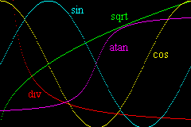
Fig 17.1: 除法、平方根、arctan2、正弦和余弦图形，由 BIOS 提供。
为了说明 BIOS 调用的使用，我用 Div、Sqrt、ArcTan 和 ObjAffineSet 来创建双曲线、平方根、正弦和余弦的图形。我缩放了它们，使它们能漂亮地适配 240x160 的屏幕。定义是
| 除法 | y= 2560/x | |
| 平方根 | y= 160*sqrt(x/240) | |
| arctan | y= 80 + 64*(2/π)*(arctan(x-120)/16)) | |
| 正弦 | y= 1*sy*sin(2π·x/240) | ; sy= 80 |
| 余弦 | y= 80*sx*cos(2π·x/240) | ; sx= 1 |
这些函数已经画在图 1 中。如果你在想正弦和余弦的值我是怎么得到的，既然没有那些调用，再看看等式 1。P 矩阵里有它们。我用 pa 表示余弦，pc 表示正弦。注意图形是瞬间出现的；图形绘制时没有任何加载时间的感觉。mode 7 演示（或 PERN 的 mode 7 演示）的早期版本用了调用实际的除法、正弦和余弦函数来构建 LUT。即使有三角学的对称规则，sin() 和 cos() 仍然明显比 BIOS 的等价物慢。
#include <stdio.h>
#include <tonc.h>
// === swi calls ======================================================
// Their assembly equivalents can be found in tonc_bios.s
void VBlankIntrWait()
{ swi_call(0x05); }
int Div(int num, int denom)
{ swi_call(0x06); }
u32 Sqrt(u32 num)
{ swi_call(0x08); }
s16 ArcTan2(s16 x, s16 y)
{ swi_call(0x0a); }
void ObjAffineSet(const AFF_SRC *src, void *dst, int num, int offset)
{ swi_call(0x0f); }
// === swi demos ======================================================
// NOTE!
// To be consistent with general mathematical graphs, the
// y-axis has to be reversed and the origin moved to the
// either the bottom or mid of the screen via
// "iy = H - y"
// or
// "iy = H/2 - y"
//
// functions have been scaled to fit the graphs on the 240x160 screen
// y= 2560/x
void div_demo()
{
int ix, y;
for(ix=1; ix<SCREEN_WIDTH; ix++)
{
y= Div(0x0a000000, ix)>>16;
if(y <= SCREEN_HEIGHT)
m3_plot(ix, SCREEN_HEIGHT - y, CLR_RED);
}
tte_printf("#{P:168,132;ci:%d}div", CLR_RED);
}
// y= 160*sqrt(x/240)
void sqrt_demo()
{
int ix, y;
for(ix=0; ix<SCREEN_WIDTH; ix++)
{
y= Sqrt(Div(320*ix, 3));
m3_plot(ix, SCREEN_HEIGHT - y, CLR_LIME);
}
tte_printf("#{P:160,8;ci:%d}sqrt", CLR_LIME);
}
// y = 80 + tan((x-120)/16) * (64)*2/pi
void arctan2_demo()
{
int ix, y;
int ww= SCREEN_WIDTH/2, hh= SCREEN_HEIGHT/2;
for(ix=0; ix < SCREEN_WIDTH; ix++)
{
y= ArcTan2(0x10, ix-ww);
m3_plot(ix, hh - y/256, CLR_MAG);
}
tte_printf("#{P:144,40;ci:%d}atan", CLR_MAG);
}
// wX= 1, wY= 80
// cc= 80*sx*cos(2*pi*alpha/240)
// ss= 1*sy*sin(2*pi*alpha/240)
void aff_demo()
{
int ix, ss, cc;
ObjAffineSource af_src= {0x0100, 0x5000, 0}; // sx=1, sy=80, alpha=0
ObjAffineDest af_dest= {0x0100, 0, 0, 0x0100}; // =I (redundant)
for(ix=0; ix<SCREEN_WIDTH; ix++)
{
ObjAffineSet(&af_src, &af_dest, 1, BG_AFF_OFS);
cc= 80*af_dest.pa>>8;
ss= af_dest.pc>>8;
m3_plot(ix, 80 - cc, CLR_YELLOW);
m3_plot(ix, 80 - ss, CLR_CYAN);
// 0x010000/0xf0 = 0x0111.111...
af_src.alpha += 0x0111;
}
tte_printf("#{P:48,38;ci:%d}cos", CLR_YELLOW);
tte_printf("#{P:72,20;ci:%d}sin", CLR_CYAN);
}
// === main ===========================================================
int main()
{
REG_DISPCNT= DCNT_MODE3 | DCNT_BG2;
tte_init_bmp_default(3);
tte_init_con();
div_demo();
sqrt_demo();
aff_demo();
arctan2_demo();
while(1);
return 0;
}
垂直同步 第二部分：VBlankIntrWait
直到现在，所有演示都用了 vid_vsync 函数来把动作同步到 VBlank（见图形入门）。它做的是检查 REG_VCOUNT 并停留在一个 while 循环里，直到下一个 VBlank 到来。虽然它工作，但就两件事而言它真是个相当糟糕的做法。首先，是因为你已经在 VBlank 中时潜在的问题，但那一个已经被涵盖了。第二个原因更重要：当你在 while 循环里时，你在浪费大量 CPU 周期，全部都在吞噬电池电量。
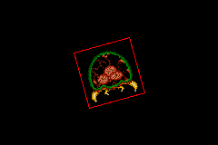
Fig 17.2: swi_vsync 演示。
有一些 BIOS 调用能把 CPU 置于低功耗模式，从而节省电池。这主要的 BIOS 调用是 Halt（#2），但我们目前感兴趣的是 VBlankIntrWait（#5）。它会设置好以等待直到下一个 VBlank 中断。要用它，你当然得把中断打开，特别是 VBlank 中断。像往常一样，VBlank 的 isr 将必须通过写入 REG_IF 来确认中断。但它也必须写入它的 BIOS 等价物，REG_IFBIOS。这点信息在别处有点难找（部分因为很少有教程覆盖 BIOS 调用）；更多信息见 GBATEK, BIOS Halt Functions。对我们来说幸运的是，中断一节中给出的交换板已经内置了这个。
为了展示如何设置它，请看 swi_vsync 演示。最重要的代码在下面给出；屏幕截图可以在图 2 找到。它做的是给一个旋转的 metroid 精灵，角速度为 π rad/s（这对应于 Δθ = 0x10000/4/60= 0x0111）。中断处理的基本步骤应该很熟悉，除了没有真正的 VBlank isr 这一事实，因为交换板已经负责确认中断了。在那之后就相当简单：我们用 ObjAffineSet() 计算所需的仿射矩阵，而 VBlankIntrWait 把 CPU 置于 Halt，直到下一个 VBlank 中断。
// inside main, after basic initialisations
AFF_SRC as= { 0x0100, 0x0100, 0 };
OBJ_AFFINE oaff;
// enable isr switchboard and VBlank interrupt
irq_init(NULL);
irq_add(II_VBLANK, NULL);
while(1)
{
VBlankIntrWait();
// Full circle = 10000h
// 10000h/4/60= 111h -> 1/4 rev/s = 1 passing corner/s
as.alpha += 0x0111;
ObjAffineSet(&as, &oaff.pa, 1, 8);
obj_aff_copy(obj_aff_mem, &oaff, 1);
}
优先用 VBlankIntrWait() 而非 vid_vsync()
通过 vid_vsync()（或其功能等价物）等待 VBlank 不是个好主意：它浪费太多电池电量。推荐的做法是用 VBlankIntrWait() 停止处理器，以便在 VBlank 中断时再次被唤醒。
确认 IntrWait 例程
VBlankIntrWait() 只是 BIOS 的 IntrWait() 例程之一，它能停止 CPU 直到中断被触发。然而，它不是看 REG_IF 而是看 REG_IFBIOS（0300:7FF8）来确认中断。如果你的游戏在尝试 VBlankIntrWait() 后卡住了，这可能就是原因。注意你可能会以其他名字找到这个地址，因为它其实没有官方的名字。
最后的想法
既然你知道怎么用它们了，我应该警告你不要太滥用它们。似乎 BIOS 例程是为空间而非速度设计的，所以它们不是世界上最快的。不仅如此，每个例程至少有 60 个周期的开销（请注意，普通函数似乎是 30 周期开销）。如果你追求速度，那么 BIOS 调用可能不是最好的东西；你大概能在网上……某处找到更快的例程。这当然不意味着 BIOS 例程没用，只是如果你有替代方法，就用那些。只要记住那是一个优化步骤，你不该过早做它。
18. 哔！GBA 声音入门
GBA 声音简介
除了图形和交互之外，游戏还有另一种重要的感官体验：音频。虽然画面可以布置场景，但声音能营造氛围，有时它甚至比画面更重要。试着在玩《生化危机》时配上 “Weird Al” Yankovic 的音乐：根本行不通，气氛全无。
GBA 共有六个声音通道。前四个与初代 Game Boy 基本相同：两个方波发生器（通道 1 和 2）、一个采样播放器（通道 3）和一个噪声发生器（通道 4）。它们也常被称为 DMG 通道，得名于 Game Boy 的代号 “Dot Matrix Game（点阵游戏机）”。新增的是两个 Direct Sound 通道 A 和 B（不要和微软的 DirectSound 这个 DirectX 组件混淆）。它们是 8 位的数字脉冲编码调制（PCM）通道。
我得先说明，我其实对声音编程知之甚少，主要是因为我没法真正自己拼凑出一段音乐（当你身边已经在放音乐时，这事儿可不好办）。如果你真的想学声音编程，应该去 Belogic.com（几乎所有人都是从那里获取信息的）以及 deku.gbadev.org，后者会教你如何构建一个声音混音器。这两个网站都非常棒。
我也许不懂太多声音创作/编程，但本质上声音是物质中的一种波；波是数学生物，而我确实懂一点数学，所以接下来关于方波发生器，我就来讲讲这部分。
声音与波
设想有一片由粒子组成的汪洋，每个粒子都用小弹簧与邻居相连。现在推其中一个粒子一下。在推力方向上，弹簧被压缩后又弹回，把原来的粒子推回原位，同时把推力传给了邻居；这又压缩了下一根弹簧，把推力传给它的邻居，如此这般，循环往复。
这是波动行为的一个典型例子。要给涵盖所有情况的波下一个精确的定义并不容易，但本质上，波就是一种被传递的扰动。波有许多种类；两大类分别是纵波和横波，纵波的振动方向与传播方向一致，横波则与之垂直。有些波是周期性的（在时间或空间上重复出现某种图案），有些不是。有些会传播，有些则不会。
波
最典型的波是谐波。这是任何满足 eq 18.1 的解的函数 ψ(x)。变量的名字其实无关紧要，但通常它要么是空间量（x、y、z），要么是时间量（t），或者同时是这些量。通解可以在 eq 18.2 中找到。或许我应该说“解s“，因为可以写成很多种形式。不过它们都是等价的，你可以用一些眼下我们不必关心的技巧在它们之间互相转换。
| (18.1) |
通解（们）：
| (18.2) |
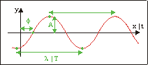
Fig 18.1: 一条谐波
一个完整的波可以用三个要素来描述。首先是振幅 A，它表示最小值与最大值之间距离的一半。其次是波长 λ，即波重复自身所需的长度（它与波数 k= 2π/λ 相关）。然后是相位常数 φ0，它定义了起始点。如果波是随时间变化的，那么取代波长的是周期 T、频率 f=1/T（以及角频率 ω= 2πf= 2π/T）。你可以在 fig 18.1 中看到这些参数各自的含义。
波动方程一个有趣的特性是，它对 ψ 是一个线性运算。这意味着解的任意线性组合仍然是解；这就是叠加原理。例如，如果你有两条波 ψ1 和 ψ2，那么 Ψ = aψ1 + bψ2 也是一条波。这听起来像是 trivial 的事，但我向你保证并非如此。非线性方程（它们也确实存在）往往让科学家们有点头疼，这一事实足以说明线性方程的价值。
声波
声音也是一种波。事实上，它是物质中的一种纵性压力波，本质上就和前面提到的弹簧粒子系统一样，是一整批分子在前后运动。原则上，它既有空间结构也有时间结构，如果你想把一切都纳入考虑，事情会变得极其复杂。不过我会把它简化，只考虑两个部分：振幅 A，以及周期和频率 T 和 f。你可能知道，声音的音调与频率相关。人类听觉的范围在 20 Hz 到 20 kHz 之间，频率越高（也就是说波被压缩得越厉害），音调就越高。大多数声音实际上是不同波的混合体，拥有不同的振幅和频率——这正是叠加原理在起作用。有趣的是，如果你把所有这些分量加总成一个函数并画出来，它看起来就完全不再像正弦波了。更有趣的是，你还可以反过来看：取任意一个函数，把它拆解成正弦波和余弦波的叠加，从而看出你的声音含有哪些频率。这叫做傅里叶变换，我们马上就会讲到。
音阶
虽然 20 Hz 到 20 kHz 的整个范围都能被人耳听到，但音乐中只使用其中一组离散的频率，这就引出了音阶的概念。音阶的核心是八度，代表频率翻倍。每个八度被划分为若干不同的音符；西方体系中是 12 个，从 A 到 G，尽管八度的编号不知为何是从 C 开始的。第 0 八度从中央 C开始，其频率约为 262 Hz（另见 table 18.1）。是的，我知道 A 到 G 之间只有 7 个字母，其余的音符是介于这些音符之间的降号和升号。这里的“12“指的是一个八度中半音的数量。音阶是对数的；每个半音之间相差 21/12。嗯，差不多是这样：出于某些原因，有些音符并不完全精确地落在位置上。
| 半音 | 0 | 1 | 2 | 3 | 4 | 5 | 6 | 7 | 8 | 9 | 10 | 11 | (12) |
|---|---|---|---|---|---|---|---|---|---|---|---|---|---|
| 名称 | C | C# | D | D# | E | F | F# | G | G# | A | A# | B | (C) |
| 频率 (Hz) | 261.7 | 277.2 | 293.7 | 311.2 | 329.7 | 349.3 | 370.0 | 392.0 | 415.3 | 440.0 | 466.2 | 493.9 | (523.3) |
傅里叶变换与方波
傅里叶变换是一种把时域函数描述为频率分布（称为频谱）的方法。它也是教授们把年轻的自然科学学生吓个半死的众多手段之一。别担心，我相信你能毫发无损地读完这一节 >:)。对于表现良好——或者说相当良好——的函数，你可以把它们重写为非常规整的函数（比如多项式、指数函数，以及波）的级数形式。例如，作为傅里叶级数，一个函数可以写成像 eq 18.3 那样。
| (18.3) |
当然，整件事的关键在于能否求出系数 Am 和 Bm。虽然推导它们对应的方程相当直接，但我把它留作读者的练习，这里只以 eq 18.4 的形式给出结果。我应该说明，傅里叶变换实际上有几种定义方式。例如，有些版本不是在 [0,T] 上积分，而是在 [−½T, ½T] 上；或者使用复指数而不是正弦和余弦，但归根结底它们做的都是同一件事。
| (18.4) |
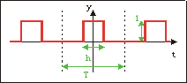
Fig 18.2: 一个方波
作为例子，我们来看看 fig 18.2 中所示的方波。方波在一段时间（参数 h）内为高（1），然后在剩下的周期里为低（0）。它仍然是一条周期波，所以我们把它沿 t 轴放在哪里其实无关紧要。为了方便，我把它以峰值居中：这样它就成了一条对称波，能很好地消去所有反对称的正弦波。A0=h/T，因为它是函数的平均值，其余的 Am 则由 eq 18.4 得出。
| (18.5) |
Am 是一个辛格（sinc）函数：sin(x)/x。对于较大的 m，它趋近于零（理应如此，因为高阶项应该相对不那么重要）；但同样有趣的是，由于正弦的存在，某些高阶项也会消失。每当 m 是 T/h 的整数倍时，就会发生这种情况。
GBA 声音
声音寄存器
做图形时，你只需处理两个寄存器（REG_DISPCNT 和 REG_BGxCNT）就能得到结果；而做声音时，在听到任何声音之前，你得先配置一大堆寄存器。每个 DMG 通道各有 2 到 3 个寄存器——有些功能相似，有些则不同。除此之外，还有四个总体控制寄存器。
说到声音，寄存器的命名方式似乎特别让人头疼。你基本能找到两套名字：一套由 REG_SOUNDxCNT 加上 _L、_H 和 _X 以一种相当随意的方式构成；另一套使用 REG_SGxy 和 REG_SGCNTy 的结构（x=1、2、3 或 4，y=0 或 1）。我觉得前者是较新的版本，这很讽刺，因为更旧的那套反而更一致。唉，算了。无论如何，我觉得这两套都不够直观，总是记不住 L/H/X 或 0/1 版本各自对应什么，所以我用了第三套名字，它们基于 tepples’ 的 pin8gba.h，依我看比前两套更讲得通。
| 偏移 | 功能 | 旧名 | 新名 | tonc |
|---|---|---|---|---|
| 60h | channel 1 (sqr) sweep | REG_SG10 | SOUND1CNT_L | REG_SND1SWEEP |
| 62h | channel 1 (sqr) len, duty, env | SOUND1CNT_H | REG_SND1CNT | |
| 64h | channel 1 (sqr) freq, on | REG_SG11 | SOUND1CNT_X | REG_SND1FREQ |
| 68h | channel 2 (sqr) len, duty, env | REG_SG20 | SOUND2CNT_L | REG_SND2CNT |
| 6Ch | channel 2 (sqr) freq, on | REG_SG21 | SOUND2CNT_H | REG_SND2FREQ |
| 70h | channel 3 (wave) mode | REG_SG30 | SOUND3CNT_L | REG_SND3SEL |
| 72h | channel 3 (wave) len, vol | SOUND3CNT_H | REG_SND3CNT | |
| 74h | channel 3 (wave) freq, on | REG_SG31 | SOUND3CNT_X | REG_SND3FREQ |
| 78h | channel 4 (noise) len, vol, env | REG_SG40 | SOUND4CNT_L | REG_SND4CNT |
| 7Ch | channel 4 (noise) freq, on | REG_SG41 | SOUND4CNT_H | REG_SND4FREQ |
| 80h | DMG master control | REG_SGCNT0 | SOUNDCNT_L | REG_SNDDMGCNT |
| 82h | DSound master control | SOUNDCNT_H | REG_SNDDSCNT | |
| 84h | sound status | REG_SGCNT1 | SOUNDCNT_X | REG_SNDSTAT |
| 88h | bias control | REG_SGBIAS | SOUNDBIAS | REG_SNDBIAS |
“哦太好了。这又要变成那些’tegel’式的事情之一了对吧？就是你自以为搞出了什么又好又不一样的东西，结果后来为了和全世界保持一致又退回标准术语。是吧？”
不，我会坚持用这些名字。大概吧。希望如此。……说实话，我真不太确定 :P。不过这倒也不是什么大事：你只要用几个 define 或者查找替换就能在名字之间切换。总之，REG_SNDxFREQ 存放频率信息，REG_SNDxCNT 存放音量和包络之类的设置；在某些情况下，它们的位布局甚至完全一样。除了通道 1 的扫频功能外，它和通道 2 完全相同。
主声音寄存器
REG_SNDDMGCNT、REG_SNDDSCNT 和 REG_SNDSTAT 是主声音控制寄存器；要让任何声音工作起来，你至少得在这几个寄存器上各自设置一些位。
| F | E | D | C | B | A | 9 | 8 | 7 | 6 5 4 | 3 | 2 1 0 |
| R4 | R3 | R2 | R1 | L4 | L3 | L2 | L1 | - | RV | - | LV |
| 位 | 名称 | 宏定义 | 描述 |
|---|---|---|---|
| 0-2 | LV | 左声道音量 | |
| 4-6 | RV | 右声道音量 | |
| 8-B | L1-L4 | SDMG_LSQR1, SDMG_LSQR2, SDMG_LWAVE, SDMG_LNOISE | 通道 1-4 接左声道 |
| C-F | R1-R4 | SDMG_RSQR1, SDMG_RSQR2, SDMG_RWAVE, SDMG_RNOISE | 通道 1-4 接右声道 |
REG_SNDDMGCNT 控制 DMG 通道的主音量，以及哪些通道被启用。这些控制对左、右扬声器是分开的。下面是两个让寄存器操作更方便的宏。注意它们并不真正去设置寄存器，只是把各个标志位组合起来。
#define SDMG_SQR1 0x01
#define SDMG_SQR2 0x02
#define SDMG_WAVE 0x04
#define SDMG_NOISE 0x08
#define SDMG_BUILD(_lmode, _rmode, _lvol, _rvol) \
( ((_lvol)&7) | (((_rvol)&7)<<4) | ((_lmode)<<8) | ((_rmode)<<12) )
#define SDMG_BUILD_LR(_mode, _vol) SDMG_BUILD(_mode, _mode, _vol, _vol)
| F | E | D | C | B | A | 9 | 8 | 7 6 5 4 | 3 | 2 | 1 0 |
| BF | BT | BL | BR | AF | AT | AL | AR | - | BV | AV | DMGV |
| 位 | 名称 | 宏定义 | 描述 |
|---|---|---|---|
| 0-1 | DMGV | SDS_DMG25, SDS_DMG50, SDS_DMG100 | DMG 音量比例。
|
| 2 | AV | SDS_A50, SDS_A100 | DSound A 音量比例。清零时为 50%；置位时为 100% |
| 3 | BV | SDS_B50, SDS_B100 | DSound B 音量比例。清零时为 50%；置位时为 100% |
| 8-9 | AR, AL | SDS_AR, SDS_AL | DSound A 启用 在左右扬声器上启用 DS A |
| A | AT | SDS_ATMR0, SDS_ATMR1 | Dsound A 定时器。使用定时器 0（清零时）或 1（置位时） 用于 DS A |
| B | AF | SDS_ARESET | Dsound A 的 FIFO 复位。当使用 DMA 进行 Direct Sound 时， 这会使 DMA 在使用后复位 FIFO 缓冲区。 |
| C-F | BR, BL, BT, BF | SDS_BR, SDS_BL, SDS_BTMR0, SDS_BTMR1, SDS_BRESET | 同 8-B 位，但用于 DSound B |
关于 REG_SNDDSCNT 我了解不多，只知道它管理 PCM 声音，但出于某些原因也带有一些 DMG 声音的位。REG_SNDSTAT 显示 DMG 通道的状态并且启用所有声音。如果你想让任何声音响起来，就需要把那里的第 7 位置位。
| F E D C B A 9 8 | 7 | 6 5 4 | 3 | 2 | 1 | 0 |
| - | MSE | - | 4A | 3A | 2A | 1A |
| 位 | 名称 | 宏定义 | 描述 |
|---|---|---|---|
| 0-3 | 1A-4A | SSTAT_SQR1, SSTAT_SQR2, SSTAT_WAVE, SSTAT_NOISE | 活动通道。指示当前正在播放的 DMG 通道。它们不会启用通道；
那才是 REG_SNDDMGCNT 的职责。
|
| 7 | MSE | SSTAT_DISABLE, SSTAT_ENABLE | 主声音启用。如果要听到任何声音，必须置位。在干别的事之前 先设置它：否则其他寄存器无法被访问，详见 GBATEK。 |
声音寄存器访问
模拟器可能允许访问声音寄存器，即使声音被禁用（REG_SNDSTAT{7} 为 0）；但硬件不行。使用前务必先启用声音。
GBA 方波发生器
GBA 有两个方波声音发生器，即通道 1 和 2。它们之间唯一的区别是通道 1 的频率扫频，它可以让频率在播放时按指数方式上升或下降。这全部由 REG_SND1SWEEP 完成。REG_SNDxCNT 控制波的时长、包络和占空比。时长应当很好理解。包络本质上就是振幅随时间变化的函数：你可以让它淡入（起音）、保持在相同水平（持续），然后再淡出（衰减）。包络有 16 个音量等级，你可以控制起始音量、包络的方向，以及到下一次变化的时间。音量是线性的：12 产生的振幅是 6 的两倍。占空比指的是“高“电平时间与周期的比值，换句话说就是 D = h/T。
当然，你也可以控制频率，用的是 REG_SNDxFREQ。不过，你在这个字段里填的并不是频率，也不完全是周期；而是一种我称之为速率 R 的量。这三个量彼此相关，却又微妙地不同，一旦混淆就会一团糟——而文档里经常会混淆它们，所以要小心。频率 f 与速率 R 的关系由 eq 18.6 描述；速率升高，频率也随之升高。由于 R ∈ [0, 2047]，频率范围是 [64 Hz, 131 kHz]。虽然这跨越了十个八度，但最高的那些用处不大，因为频率步进变得太大（公式 eq 18.6 中的分母趋近于 0）。
| (18.6a) | |
| (18.6b) |
方波声音寄存器
两个方波发生器都有用于包络/长度/占空比控制的寄存器 REG_SNDxCNT，以及用于频率控制的 REG_SNDxFREQ。声音 1 还额外以 REG_SND1SWEEP 的形式拥有扫频控制。传统名称可查阅 table 18.2；注意，在传统命名法中，控制和频率的后缀对通道 1 和 2 是不同的，尽管它们的功能完全一样。
| F E D C | B | A 9 8 | 7 6 | 5 4 3 2 1 0 |
| EIV | ED | EST | D | L |
| 位 | 名称 | 宏定义 | 描述 |
|---|---|---|---|
| 0-5 | L | SSQR_LEN# | 声音长度。这是一个只写字段，仅当通道为定时模式（REG_SNDxFREQ{E}）时才生效。其长度实际为 (64−L)/256 秒，范围对应 [3.9, 250] ms。
|
| 6-7 | D | SSQR_DUTY1_8, SSQR_DUTY1_4, SSQR_DUTY1_2, SSQR_DUTY3_4, SSQR_DUTY# | 波形占空比。方波高、低电平时间之比。回顾公式 18.2， 这等价于 D=h/T。可选周期为 12.5%、25%、50% 和 75%（即八分之一、四分之一、二分之一和四分之三）。 |
| 8-A | EST | SSQR_TIME# | 包络步进时间。相邻两次包络变化之间的时间： Δt = EST/64 s。 |
| B | ED | SSQR_DEC, SSQR_INC | 包络方向。指示包络每一步是减小（默认）还是增大。 |
| C-F | EIV | SSQR_IVOL# | 包络初始值。可视为某种音量设置：0 为静音，15 为最大音量。结合方向，你可以实现淡入和淡出；若要持续发声，可将初始音量设为 15 并取增大的方向。要改变实际音量，请记住
REG_SNDDMGCNT。
|
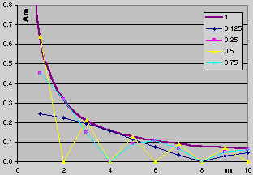
Fig 18.3: 方波频谱。 （仅整数 m）
再多说一点占空比。记得我们对方波做过傅里叶分析，从而能确定其中包含的频率。除了基频之外，还有频率为 m·f 的泛音。频谱（见 fig 18.3）给出了所有这些频率的振幅。注意，虽然图中画出了连续的线，但 m 只允许取整数值。m=1 时的基频最重要，其余的按 1/m 衰减。有趣的地方在于正弦开始起作用时：每当 m·D 为整数，对应的分量就消失了！对于我们这种分数占空比的情况——每次 m 等于分母时就会发生。对于 50% 占空比，每隔一个泛音消失，于是声音相当平滑；对于 12.5%，只有每八个才消失，结果确实更“吵“。注意，对于 ¼ 和 ¾ 占空比，都是每四个消失一个，所以它们听起来应该没有区别。这个结果让我有点意外，但当我实际去听时，它们确实听起来一样。
| F | E | D C B | A 9 8 7 6 5 4 3 2 1 0 |
| Re | T | - | R |
| 位 | 名称 | 宏定义 | 描述 |
|---|---|---|---|
| 0-A | R | SFREQ_RATE# | 声音速率。准确地说，是初始速率。注意是速率，不是 频率，也不是周期。速率与频率的关系是 f = 217/(2048-R)。只写 字段。 |
| E | T | SFREQ_HOLD, SFREQ_TIMED | 定时标志。若置位，声音按长度字段（REG_SNDxCNT{0-5}）指定的时长播放。
若清零，声音将永远播放。注意，即使衰减包络已降到 0，声音本身仍被视为
"开启"，即便它已经听不见。
|
| F | Re | SFREQ_RESET | 声音复位。将声音重置为初始音量（及扫频）设置。注意速率字段也在这个寄存器里，
而且由于它是只写的，简单的
‘|= SFREQ_RESET’ 并不够用
（尽管在模拟器上也许可以）。
|
| F E D C B A 9 8 7 | 6 5 4 | 3 | 2 1 0 |
| - | T | M | N |
| 位 | 名称 | 宏定义 | 描述 |
|---|---|---|---|
| 0-2 | N | SSW_SHIFT# | 扫频次数。不是扫频的步数；详见下文讨论。 |
| 3 | M | SSW_INC, SSW_DEC | 扫频模式。扫频可以让速率上升（默认）或下降（若置位）。 |
| 4-6 | T | SSW_TIME# | 扫频步进时间。相邻两次扫频之间的时间以 128 Hz（不是 kHz！）计量：Δt = T/128 ms ≈ 7.8T ms；若 T=0，则禁用扫频。 |
我有相当的把握，大多数文档对移位具体如何工作都语焉不详，所以这里再补充几点。毫无疑问，扫频确实会让音高上升或下降（由第 3 位控制），步进时间也确实会在经过该时间后改变音高，但扫频移位到底做了什么，说得最好也只能算含糊其辞。相关信息是写在那里的，但前提是你得知道该去哪里找。通常给出的公式类似这样：
这是 belogic 给出的公式，只要你明白各项的含义就没问题。与你可能读到的相反，扫频并不作用于频率（f），也不作用于周期（T，见上文），它作用的是速率（R）。如果你在模拟器里观察，会真正看到速率值在变化。
其次，指数里的 n 并不是一直累加到扫频移位次数的当前扫频索引。它实际上就是扫频移位次数，而扫频会一直进行，直到速率达到 0 或最大值 2047。
你看到的公式确实说明了这一点，但它们很容易被误读。我就误读过。Eq 18.7 给出了一组正确的关系。R 是速率，n 是扫频移位（18.7c 解释了为什么它叫“移位“（单数，不是复数）），j 是当前扫频索引。你可以用多种方式来看待它们，但归根结底都是指数函数，毕竟 ‘dy*(x) = a·y(x)dx*’ 表达的就是这个意思。例如，若 n=1，则递增和递减扫频分别呈现 1½j 和 ½j 的行为；若 n=2，则是 1¼j 和 ¾j，依此类推。移位次数越大，扫频越慢。
| (18.7a) |
| (18.7b) |
| (18.7c) |
R += R >> n;
|
演奏音符
尽管各个速率是平等的，但有些可能比另一些更“平等“。我已经给出了一张表，列出了第 0 八度标准音符的频率（table 18.1）。你当然可以通过 eq 18.6b 把它们换算成速率并直接使用。不过，弄清楚如何演奏所有八度的音符也许更划算。
为此，我们会用到我在 18.2.3 节提到的关于音阶构成的若干事实。虽然我可以利用相邻音符之间的对数关系（Δf=21/12·f），但我只采用一点：不同八度之间的音符相差两倍的频率。我们还需要速率-频率关系（这显而易见）。这就是你需要的基本信息，等我们把数学推完再作更多解释。没错，还有更多数学，但我保证这是本页最后一部分了。
我们要从通用频率方程和速率-频率关系开始。其中涉及速率 R、频率 f 和八度 c。我们还有一个基准八度 C，以及该基准八度中的频率 F。
接下来是神奇的部分。而且你被期望能理解这个。
| (18.8) |
好，现在说为什么这东西有用。记住 GBA 没有硬件除法或浮点支持，所以我们只能使用整数以及（尽可能）移位。这正是 eq 18.8 最后一步中最后一项被单独分出来的原因。含有 F 的项给出基准八度的速率偏移，我们需要把它除以（读作：移位）不同八度的八度偏移项。记住整数除法会截断，所以为了最高精度，我们需要一个很大的分子。这可以用一个较大的 C 再加上一个额外的项 m 来实现。本质上，这使它成为一个 mf 的定点数除法。可用的八度范围是 −2 到 5，因此我们取 C=5。m 的取值几乎任意，但必须高于 2，因为最小八度是 −2，而移位永远不能为负。m=4 就足够了。
注意里面仍然有一个除法。所幸 F 只有十二种取值，所以不妨把整个项存进一个查找表里。最终结果就是下面的代码清单 18.1。
// Listing 18.1: a sound-rate macro and friends
typedef enum
{
NOTE_C=0, NOTE_CIS, NOTE_D, NOTE_DIS,
NOTE_E, NOTE_F, NOTE_FIS, NOTE_G,
NOTE_GIS, NOTE_A, NOTE_BES, NOTE_B
} eSndNoteId;
// Rates for equal temperament notes in octave +5
const u32 __snd_rates[12]=
{
8013, 7566, 7144, 6742, // C , C#, D , D#
6362, 6005, 5666, 5346, // E , F , F#, G
5048, 4766, 4499, 4246 // G#, A , A#, B
};
#define SND_RATE(note, oct) ( 2048-(__snd_rates[note]>>(4+(oct))) )
// sample use: note A, octave 0
REG_SND1FREQ= SFREQ_RESET | SND_RATE(NOTE_A, 0);
这里有几组用于音符索引的常量、存放速率偏移的查找表 __snd_rates，以及一个能直接给出所需结果的简单宏。虽然这里的 __snd_rates 是常量，你也可以考虑用一个非常量版本来允许调音。倒不是方波有什么值得调音的，但我只是说……你懂的。
一个可能的麻烦是，你得把音符拆分成音符部分和八度部分，而要动态完成这件事，你需要除以 12 并取模。或者，真的需要吗？如果你了解一些除以常数等于乘以其倒数的知识，就会知道该怎么做。（提示：c=(N*43>>9)−2，其中 N 是 0 到 95 之间的总音符索引（八度 −2 到 +5）。）
演示时间
我觉得今天的理讲到这儿也差不多了；你说呢，亲爱的读者？
“ @_@ ”
我就当你说是了。这个演示程序展示了本章各种宏的用法，尤其是 SND_RATE。它也演示了如何用一个方波发生器演奏一小段曲子——我用“曲子“这个词是很谦虚的。希望你能听出是哪一首。
#include <stdio.h>
#include <tonc.h>
u8 txt_scrolly= 8;
const char *names[]=
{ "C ", "C#", "D ", "D#", "E ", "F ", "F#", "G ", "G#", "A ", "A#", "B " };
// === FUNCTIONS ======================================================
// Show the octave the next note will be in
void note_prep(int octave)
{
char str[32];
siprintf(str, "[ %+2d]", octave);
se_puts(8, txt_scrolly, str, 0x1000);
}
// Play a note and show which one was played
void note_play(int note, int octave)
{
char str[32];
// Clear next top and current rows
SBB_CLEAR_ROW(31, (txt_scrolly/8-2)&31);
SBB_CLEAR_ROW(31, txt_scrolly/8);
// Display note and scroll
siprintf(str, "%02s%+2d", names[note], octave);
se_puts(16, txt_scrolly, str, 0);
txt_scrolly -= 8;
REG_BG0VOFS= txt_scrolly-8;
// Play the actual note
REG_SND1FREQ = SFREQ_RESET | SND_RATE(note, octave);
}
// Play a little ditty
void sos()
{
const u8 lens[6]= { 1,1,4, 1,1,4 };
const u8 notes[6]= { 0x02, 0x05, 0x12, 0x02, 0x05, 0x12 };
int ii;
for(ii=0; ii<6; ii++)
{
note_play(notes[ii]&15, notes[ii]>>4);
VBlankIntrDelay(8*lens[ii]);
}
}
int main()
{
REG_DISPCNT= DCNT_MODE0 | DCNT_BG0;
irq_init(NULL);
irq_add(II_VBLANK, NULL);
txt_init_std();
txt_init_se(0, BG_CBB(0) | BG_SBB(31), 0, CLR_ORANGE, 0);
pal_bg_mem[0x11]= CLR_GREEN;
int octave= 0;
// turn sound on
REG_SNDSTAT= SSTAT_ENABLE;
// snd1 on left/right ; both full volume
REG_SNDDMGCNT = SDMG_BUILD_LR(SDMG_SQR1, 7);
// DMG ratio to 100%
REG_SNDDSCNT= SDS_DMG100;
// no sweep
REG_SND1SWEEP= SSW_OFF;
// envelope: vol=12, decay, max step time (7) ; 50% duty
REG_SND1CNT= SSQR_ENV_BUILD(12, 0, 7) | SSQR_DUTY1_2;
REG_SND1FREQ= 0;
sos();
while(1)
{
VBlankIntrWait();
key_poll();
// Change octave:
octave += bit_tribool(key_hit(-1), KI_R, KI_L);
octave= wrap(octave, -2, 6);
note_prep(octave);
// Play note
if(key_hit(KEY_DIR|KEY_A))
{
if(key_hit(KEY_UP))
note_play(NOTE_D, octave+1);
if(key_hit(KEY_LEFT))
note_play(NOTE_B, octave);
if(key_hit(KEY_RIGHT))
note_play(NOTE_A, octave);
if(key_hit(KEY_DOWN))
note_play(NOTE_F, octave);
if(key_hit(KEY_A))
note_play(NOTE_D, octave);
}
// Play ditty
if(key_hit(KEY_B))
sos();
}
return 0;
}
main() 中加粗的代码初始化了声音寄存器；没什么花哨的，但在听到任何声音之前必须这么做。重要的是要先设置 REG_SNDSTAT 的第 7 位（SSTAT_ENABLE），也就是主声音使能。没有它，你连其他寄存器都无法访问。当然，把音量设成非零也是个好主意。接着我们关闭扫频功能，并把声音 1 设为使用带淡出包络、50% 占空比。乐趣由此开始。
我稍后会解释 sos() 是什么；但先说说这个演示程序的操作方式。你可以用方向键和 A 键演奏音符（嗯，这个组合有点眼熟）。你所在的八度 c 可以用 L 和 R 来改变；背景颜色也会随之变化。B 键会再次播放 sos()。
| A / 方向键 | 演奏一个音符 |
|---|---|
| ↑ : D（高八度） | |
| ← : B | |
| → : A | |
| ↓ : F | |
| A : D | |
| L / R | 减小 / 增大当前八度（[-2, 5]，循环） |
| B | 演奏一小段曲子。 |
方向键和 A 键用于选择要演奏的音符，由 note_play() 处理。其中加粗的那一行才真正演奏音符，其余的都是额外内容，把刚演奏的音符写到屏幕上并随之滚动，好让你看到已经演奏过的历史。这部分代码有点丑，但它并不是故事的核心，所以没关系。
演奏一小段曲子
那么 sos() 到底是怎么回事呢？我们再来看一看。
void sos()
{
const u8 lens[6]= { 1,1,4, 1,1,4 };
const u8 notes[6]= { 0x02, 0x05, 0x12, 0x02, 0x05, 0x12 };
int ii;
for(ii=0; ii<6; ii++)
{
note_play(notes[ii]&15, notes[ii]>>4);
VBlankIntrDelay(8*lens[ii]);
}
}
这里有两个数组，notes 和 lens，以及一个遍历所有元素的循环。我们从 notes 中取出一个字节，用它的两个半字节分别表示八度和音符信息，演奏该音符，然后等待一会儿——时长由 lens 数组指定——再演奏下一个音符。本质上，我们就是在演奏音乐。嘿，既然 Schnappi 和 Crazy Frog 之流都能进排行榜前十，我觉得我也有资格把这称为音乐，行吧？行吧。
我想说明的是，仅靠音发生器就完全有可能演奏出一段旋律。从技术上讲，你并不需要数字化音乐以及那些花里胡哨的东西才能发声。当然，用了数字化音乐会更好听，但如果你只是需要一段小小的提示音，音发生器也许就足够了。十二年的 Game Boy 游戏只用音发生器就证明了这一点。只要定义一些音符（用半字节格式表示八度和音符即可）和若干时长，你就已经掌握了基础。你甚至可以使用多个通道来实现不同的效果。
如果你理解了这一点，那么请记住：音符+长度+通道的思路，基本上就是追踪音乐（mod、it、xm 等）在做的事，只是它们使用的波形比方波更复杂。但原理是相同的。要让它真正跑起来需要多花一点功夫，而这正是 Deku 的声音混音教程所要讲的内容。
19. 文本系统
弃用通知
本章已被 TTE 取代。本章中的信息仍可能有用，但若用于严肃工作，应优先使用 TTE。
简介
#include <stdio.h>
int main()
{
printf("Hello World");
return 0;
}
啊，没错，“Hello world”：每个 C 语言课程和系统的经典第一个例子。主机（console）除外。虽然在 PC 上打印文本是世界上最简单的事，但在主机上其实有点棘手。倒不是因为没有 printf() 函数，而是因为根本没地方让它往里写，甚至也没有用来写字的字体（而且需要考虑的东西远不止这些）。不，如果你想显示文本，就得完全从零自己构建。而你确实希望能在屏幕上写字，
那么，文本系统需要什么？嗯，这其实不是个简单的问题。显然，你需要一个字体。就是一张包含各种字符的位图，在 GBA 上没必要用矢量字体让自己郁闷。其次，你需要一种方法把特定字符显示到屏幕上。
不过等等，我们用的是哪种视频模式？有图块、位图模式和精灵可供选择，它们全都需要用完全不同的方式来处理。我们是只支持其中一种，还是做一个对所有模式都适用的东西？另外，我们用的字体是什么，字符尺寸多大？定宽还是变宽？变宽和变尺寸在图块模式下问题不大，但要把它们拼接到图块里就麻烦了。还有，仅就图块而言，我们要把整个字体都保留在 VRAM 里吗？那样会占用大量图块，尤其是考虑到你几乎不会同时用到所有字符。只把当时用到的字形复制进去对 VRAM 更省，但这需要一些管理。
仅凭这些条目，就足以衍生出 20 多种互不兼容的文本系统实现，它们之间的差异非常微妙。至少每种都需要一个 putc() 和一个 puts()。也许还需要一个 printf() 之类的函数；注意，是针对每种文本类型各写一个，因为字形摆放是在内部进行的。也许还需要清屏功能；或者滚动功能怎么样？嗯，你大概明白了。
我觉得做一个庞大、复杂的系统，去迎合任何人可能有的所有需求是有可能的。但我不会这么做。首先，因为这有点浪费时间：你几乎（甚至根本）不可能需要同时运行位图和图块地图模式。大多数时候，你会只用一种视频模式并坚持用它。为所有可能的变体花时间（和空间），而它们几乎永远不会被用到，可能并不值得。此外，写大量几乎一模一样、只是在例程核心处有细微差别的代码，实在很无聊。
本章的目的在于展示如何构建并使用一组简单、轻量的文本写入函数。别指望什么终极文本系统，我主要感兴趣的是把本质的事做完，也就是把字符串里的字符显示到屏幕上。这是一个核心文本系统，具备以下特性：
- 位图（模式 3、4、5）、常规图块地图（模式 0、1）和精灵支持。
- 会有一个
xxx_puts()用于显示字符串，还有一个xxx_clrs()用于清除它。它们的参数是字符串、要绘制到的位置，以及一些颜色信息。如果你想要滚动和/或格式说明符，我留给你自己实现。 - 字体是定宽、单色的字体，每个字符对应一个 8x8 图块。字形可以小于 8x8，我甚至会留下支持变宽的钩子，但要是允许多图块字体事情就糟透了。
- 可变的字符映射。如果你想只用一小部分字符，或非 ascii 的字形排列顺序，这是个很棒的特性。
这种安排能覆盖最基本的情况，并允许在设置上有一些变化，但在其他方面变化很少。然而，那些额外的功能多半与具体游戏强相关，可能并不适合放到通用文本系统里。如果你想要额外功能，自己写应该不难。
没有 printf()。真的吗？
我说过 GBA 上没有 printf()，但这并不完全正确；至少现在不成立了。可以把自己的 IO 系统挂接到标准 IO 例程上，这正是 libgba 所做的。
半过时
我这里还有另一个文本系统，比本页描述的要强大得多（也就是真正能在每种视频模式下工作，并且也有 printf）。不过它相当庞大，尚未完全完成，而且要写描述页面、把文本改得适合这些演示程序还需要花些时间。带有相关改动的 libtonc 版本可以在 http://www.coranac.com/files/misc/tonclib-1.3b.rar 找到。
文本系统内部原理
变量
为了跟踪文本系统的状态，我们需要几个变量。最明显的变量是字体和字符映射。因为我喜欢保持灵活，我还会为它们各用一个指针，这样你就可以用自己的字体和字符映射（如果你愿意）。你还需要知道要往哪里写，这通过一个基准目标指针来实现。作为额外项，我还会为可变字形间距准备字符尺寸变量，甚至还有一个指向字符宽度数组的指针，用于可能的变宽字体。
我会用一个结构体来存储这些，部分是因为我维护起来更容易，也因为 CPU 和编译器能更高效地处理结构体。我还会留几个字节的空位以便将来扩展。最后，是这个结构体的一个实例，以及一个指向它的指针，以便你在需要时能（虽然不太可能，但依然可以）在不同系统间切换。是的，我是在浪费几个字节，但如果你因为这个把 IWRAM 用爆了，我敢说你还有更大的麻烦要操心。
// In text.h
typedef struct tagTXT_BASE
{
u16 *dst0; // writing buffer starting point
u32 *font; // pointer to font used
u8 *chars; // character map (chars as in letters, not tiles)
u8 *cws; // char widths (for VWF)
u8 dx,dy; // letter distances
u16 flags; // for later
u8 extra[12]; // ditto
} TXT_BASE;
extern TXT_BASE __txt_base, *gptxt;
// In text.c
TXT_BASE __txt_base; Main TXT_BASE instance
TXT_BASE *gptxt= &__txt_base; and a pointer to it
字体
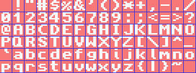
Fig 19.1：默认的 tonc 字体：mini-ascii，单色，每字形 8x8 像素。
fig 19.1 展示了我将要使用的字体。这个特定字体是单色的，每个字形都装进一个 8x8 的方框里。这 96 个字形本身是整个 ASCII 的一个子集，我称之为 mini-ascii。它是包含标准 ASCII 表大部分内容的下半部分，但去掉了 ASCII 0-31，因为它们是转义码，本来就不是可打印字符。
也可以使用另一种字形排列顺序的不同字体，但我下面给出的函数依赖每个字形只用一个图块、而且是图块布局。我需要这种排列，因为我要让它对所有模式都适用，而非单图块的格式在图块模式下简直是噩梦。
另一个限制是字体必须被打包成 1bpp。我有几个理由。首先，是体积考虑。一个 96 字形、16 位的字体（用于模式 3/5）会占用 12kB。打包成 1bpp 后不到 1kB！是的，你被限制为单色，但对字体来说这其实问题不大。字体通常本来就是单色的，而只用 1 位却用了 16 位似乎有点浪费。其次，你怎么让一个 16bpp 字体用于 4bpp 或 8bpp 图块？从低位深到高位深要容易得多。当然，如果你不喜欢这种安排，尽管自己写函数。
至于字体数据本身，就是下面这一整坨。
const unsigned int toncfontTiles[192]=
{
0x00000000, 0x00000000, 0x18181818, 0x00180018, 0x00003636, 0x00000000, 0x367F3636, 0x0036367F,
0x3C067C18, 0x00183E60, 0x1B356600, 0x0033566C, 0x6E16361C, 0x00DE733B, 0x000C1818, 0x00000000,
0x0C0C1830, 0x0030180C, 0x3030180C, 0x000C1830, 0xFF3C6600, 0x0000663C, 0x7E181800, 0x00001818,
0x00000000, 0x0C181800, 0x7E000000, 0x00000000, 0x00000000, 0x00181800, 0x183060C0, 0x0003060C,
0x7E76663C, 0x003C666E, 0x181E1C18, 0x00181818, 0x3060663C, 0x007E0C18, 0x3860663C, 0x003C6660,
0x33363C38, 0x0030307F, 0x603E067E, 0x003C6660, 0x3E060C38, 0x003C6666, 0x3060607E, 0x00181818,
0x3C66663C, 0x003C6666, 0x7C66663C, 0x001C3060, 0x00181800, 0x00181800, 0x00181800, 0x0C181800,
0x06186000, 0x00006018, 0x007E0000, 0x0000007E, 0x60180600, 0x00000618, 0x3060663C, 0x00180018,
0x5A5A663C, 0x003C067A, 0x7E66663C, 0x00666666, 0x3E66663E, 0x003E6666, 0x06060C78, 0x00780C06,
0x6666361E, 0x001E3666, 0x1E06067E, 0x007E0606, 0x1E06067E, 0x00060606, 0x7606663C, 0x007C6666,
0x7E666666, 0x00666666, 0x1818183C, 0x003C1818, 0x60606060, 0x003C6660, 0x0F1B3363, 0x0063331B,
0x06060606, 0x007E0606, 0x6B7F7763, 0x00636363, 0x7B6F6763, 0x00636373, 0x6666663C, 0x003C6666,
0x3E66663E, 0x00060606, 0x3333331E, 0x007E3B33, 0x3E66663E, 0x00666636, 0x3C0E663C, 0x003C6670,
0x1818187E, 0x00181818, 0x66666666, 0x003C6666, 0x66666666, 0x00183C3C, 0x6B636363, 0x0063777F,
0x183C66C3, 0x00C3663C, 0x183C66C3, 0x00181818, 0x0C18307F, 0x007F0306, 0x0C0C0C3C, 0x003C0C0C,
0x180C0603, 0x00C06030, 0x3030303C, 0x003C3030, 0x00663C18, 0x00000000, 0x00000000, 0x003F0000,
0x00301818, 0x00000000, 0x603C0000, 0x007C667C, 0x663E0606, 0x003E6666, 0x063C0000, 0x003C0606,
0x667C6060, 0x007C6666, 0x663C0000, 0x003C067E, 0x0C3E0C38, 0x000C0C0C, 0x667C0000, 0x3C607C66,
0x663E0606, 0x00666666, 0x18180018, 0x00301818, 0x30300030, 0x1E303030, 0x36660606, 0x0066361E,
0x18181818, 0x00301818, 0x7F370000, 0x0063636B, 0x663E0000, 0x00666666, 0x663C0000, 0x003C6666,
0x663E0000, 0x06063E66, 0x667C0000, 0x60607C66, 0x663E0000, 0x00060606, 0x063C0000, 0x003E603C,
0x0C3E0C0C, 0x00380C0C, 0x66660000, 0x007C6666, 0x66660000, 0x00183C66, 0x63630000, 0x00367F6B,
0x36630000, 0x0063361C, 0x66660000, 0x0C183C66, 0x307E0000, 0x007E0C18, 0x0C181830, 0x00301818,
0x18181818, 0x00181818, 0x3018180C, 0x000C1818, 0x003B6E00, 0x00000000, 0x00000000, 0x00000000,
};
是的，这就是 整个 字体，很整齐地放在一页上。这就是位打包（bitpacking）能为你做的事，但就像任何压缩方法一样，要看出这确实是前面那个字体可能有点费劲，所以这里对眼前所见稍作解释。
位打包
| big u32 | 0x01020304 | |||
|---|---|---|---|---|
| big u16 | 0x0102 | 0x0304 | ||
| u8 | 0x01 | 0x02 | 0x03 | 0x04 |
| little u16 | 0x0201 | 0x0403 | ||
| little u32 | 0x04030201 | |||
位打包并不难理解。数据不过是一个庞大的比特场。在位打包中，你只需按固定间隔把比特丢进去，再把剩下的重新拼接起来。我们的字体是单色的，意味着我们只有 1 比特的信息。现在，即使在最小的 C 数据类型——字节里，如果你每个像素用一字节，也会留下 7 个比特没用。但你也可以把 8 个像素塞进一个字节，从而节省 8 倍的空间。顺便说一下，这相当于 88% 的压缩率，我觉得相当不错。当然，如果你读过所有其他页面，你已经见过位打包的例子了：4bpp 图块就是用每字节 2 像素的方式打包的。所以这些东西不该完全陌生。
位打包能节省大量空间，原则上也很容易做，因为它无非是掩码和移位。但有一个大陷阱：字节序（endianness）。你在其他数据数组里已经见过它的一个样子了：在 ARM（和 intel）系统上，字 0x01234567 实际上会存储为字节序列 0x67、0x45、0x23、0x01。这被称为 小端（little-endian），因为字的低位端（多字节类型的低字节）被存储在低地址。也有 大端（big-endian），它先把最高有效字节存起来。你可以在 table 19.1 中看到差异。某些十六进制编辑器或内存查看器（例如在 VBA 中）允许你切换以字节、半字或字的方式查看数据，因此你可以在那里交互式地看到差异。请记住数据本身并不会因此改变，你只是以不同方式 看 它。
对于位打包，你还要在比特层面处理字节序。字体数据采用一致的“比特小端、字节小端”格式打包，原因有三。首先，GBA 的位打包数据本来就是这样工作的，所以你可以用 BIOS 的 BitUnpack 例程来处理它。其次，就计数而言它是一种更自然的形式：低位比特先来。第三，因为你始终可以向下移位并用这种方式丢弃被覆盖的比特，掩码操作更简单、更快。而大端在视觉上更自然，因为我们写数字也是大端的，所以位图通常也是比特小端。例如 Windows 的 BMP 文件，其最左像素在最高有效位里，使它成为比特大端。然而，Windows 运行在 Intel 架构上，而 Intel 实际上是 字节 小端的，这造成了最大的混乱。唉。算了。
如果还是有点模糊，fig 19.2 展示了‘F’是如何从 8x8 像素打包成 2 个字的。所有 64 个像素被编号为 0 到 63。它们对应比特编号。每 8 个连续比特组成一个字节：0-7 组成字节 0，8-15 组成字节 1，依此类推。注意比特看起来像是水平镜像了，因为我们通常大端地写数字。所以试着忘掉那个，把内存里的比特想象成从 0 走到 63。你也可以把比特看作字，比特 0-31 是字 0，32-63 是字 1。
| pixels | bits | bytes | words | |||||||||||||||||||||||||||||||||||||||||||||||||||||||||||||||||||||||||||||||||||||||||||||||||||||||
|---|---|---|---|---|---|---|---|---|---|---|---|---|---|---|---|---|---|---|---|---|---|---|---|---|---|---|---|---|---|---|---|---|---|---|---|---|---|---|---|---|---|---|---|---|---|---|---|---|---|---|---|---|---|---|---|---|---|---|---|---|---|---|---|---|---|---|---|---|---|---|---|---|---|---|---|---|---|---|---|---|---|---|---|---|---|---|---|---|---|---|---|---|---|---|---|---|---|---|---|---|---|---|---|---|---|---|
|
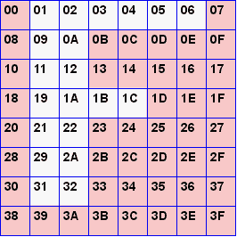 | → |
| → |
| → |
| ||||||||||||||||||||||||||||||||||||||||||||||||||||||||||||||||||||||||||||||||||||||||||||||||||||
字符映射
有了 mini-ascii 字体固然好，但字符串是完整 ascii 的，这可能带来问题。嗯，其实也不是，只是有几种转换方法。
首先，你可以写一个巨大的 switch 块，把比如‘A’（ascii 65）转换成字形索引 33，然后对所有 96 个字形都这么做。应该很明显，这是处理此事的可怕方式。嗯，它 应该 很明显，但显然并非如此，因为那种代码确实存在；我在这里提到它只是为了让你能认出它并远离、远离、再远离。简而言之，如果你有个 switch 块，其中各 case 之间唯一的区别只是返回一个不同的偏移量——而且是个 固定的 偏移量——那你就是在做非常、非常错误的事。
第二种方法在所有方面都是巨大的改进，就是简单地减去 32。毕竟 mini-ascii 就是这样定义的。快捷、简短、切中要害。
不过，我有点喜欢第三种选择：查找表。我们已经见识过 LUT 在数学上有多有用，但你能用它做的事远不止于此。在这种情况下，lut 是一个 字符映射，包含每个 ascii 字符的字形索引。它几乎具备简单减法（一次查找可能慢几个周期）的所有好处，但灵活得多。例如，你可以使用非 ascii 的字符映射，或给某些情况起别名，诸如此类。另一个“有趣”之处是，你其实不需要字体本身是文字，它可以是任何类型的映射图像数据；有了 lut，你可以轻松地用文本系统来绘制边框，只要你有一套边框“字体”即可。我用的 lut 长 256 字节。这对 Unicode 来说可能不够（抱歉东方朋友们），但足以满足我的目的。
通用设计
代码层面要做的第一件事是初始化文本基结构体（text-base）的成员。这意味着挂接字体、设定字形尺寸，并初始化 lut。这可以用 txt_init_std() 完成。
u8 txt_lut[256];
// Basc initializer for text state
void txt_init_std()
{
gptxt->dx= gptxt->dy= 8;
gptxt->dst0= vid_mem;
gptxt->font= (u32*)toncfontTiles;
gptxt->chars= txt_lut;
gptxt->cws= NULL;
int ii;
for(ii=0; ii<96; ii++)
gptxt->chars[ii+32]= ii;
}
取决于文本的类型，你可能需要更专门的初始化函数，这个我们到时候再谈。至于写字符串，基本结构如下。它其实相当简单且通用，但不幸的是，xxx_putc() 在内层循环里意味着你必须针对每种文本方法在各自的字符绘制函数外面包上一层几乎相同的包装。我还有叫 xxx_clrs() 的函数，用于把字符串从屏幕上清除（它们不会擦掉整个屏幕）。它们在形式上和各自的 puts() 兄弟几乎一样，也很简单，所以这里不细说。
// Pseudo code for xxx_puts
void xxx_puts(int x, int y, const char *str, [[more]])
{
[[find real writing start]]
while(c=*str++) // iterate through string
{
switch(c)
{
case [[special chars ('\n' etc)]]:
[[handle special]]
case [[normal chars]]:
[[xxx_putc(destination pointer, lut[c])]]
[[advance destination]]
}
}
}
位图文本
位图文本涉及模式 3、4 和 5。如果你能做模式 3，就基本上也会做模式 5，因为两者只差间距（pitch）和可能的起始点。模式 4 不同，不仅因为它是 8bpp，还意味着我们必须一次处理 2 个像素。
内部例程
我倾向于把位图相关函数分成两部分：有内部 16 位和 8 位函数，它们以地址和间距（pitch）为参数；然后是带坐标的内联接口函数，它们调用这些内部函数。下面的内部 16 位写入函数给出在此，其后的几段解释主要部分。
void bm16_puts(u16 *dst, const char *str, COLOR clr, int pitch)
{
int c, x=0;
while((c=*str++) != 0) // (1) for each char in string
{
// (2) real char/control char switch
if(c == '\n') // line break
{
dst += pitch*gptxt->dy;
x=0;
}
else // normal character
{
int ix, iy;
u32 row;
// (3) point to glyph; each row is one byte
u8 *pch= (u8*)&gptxt->font[2*gptxt->chars[c]];
for(iy=0; iy<8; iy++)
{
row= pch[iy];
// (4) plot pixels until row-byte is empty
for(ix=x; row>0; row >>= 1, ix++)
if(row&1)
dst[iy*pitch+ix]= clr;
}
x += gptxt->dx;
}
}
}
- 遍历字符串中所有字符的传统方式。
c将是我们要处理的字符，除非它是定界符（'\0'），那样我们就停止。 - 普通字符/控制字符的切换。像
'\n'和'\t'这样的控制字符要分开处理。我现在只检查换行符，但其他也很容易加。 - 这里变得有趣了。这一行先用 lut 在字体里查找字形索引，再用该索引在字体里找到实际字形（乘以 2，因为每个字形有 2 个字），然后设置一个字节指针
pch指向该字形。 几件事在这里汇合。首先，因为所有字形都恰好相隔 8 字节，找字形数据非常容易。如果你用自己的字体、自己的文本系统，我建议用固定偏移，即便像‘I’这样的窄字符会浪费像素。其次，由于 1bpp 的图块格式，每行恰好 1 字节长，且所有字形比特是连续字节，所以你不必为每行新行跳来跳去。这很好。 ix循环更有意思。首先，我们把实际的一行像素读进（字）变量row。要测试是否需要写像素，只需检查给定比特。然而，由于打包是 小 端的，这允许两个捷径。 第一点是遍历比特是从低位到高位，意味着每次迭代我们只需向右移位并测试第 0 位。其推论是我们已经处理过的比特被丢弃，而 这 意味着当row为 0 时就不会再有像素了，这一行也就完成了。由于这个短路发生在 三重 循环的内层，加速效果可能相当可观。
这个函数只做把字符串放上屏幕的 bare essential。它只绘制非零像素（透明字符），没有边缘换行，也没有滚动。唯一非平凡的特性是它能处理换行。发生换行时，光标回到屏幕上的原始 x 位置。
8 位函数与这个几乎一致，“几乎”是因为 VRAM 的“不可单字节写”规则。显而易见的是间距（pitch）和字符间距要减半。我还要让一个 要求 生效：每个字符的起始必须落在偶数像素边界上。这样，你就能有一个几乎和之前一样的内层循环；只是它一次处理两个像素而非一个。是的，这是个 hack；不，我不在意。
void bm8_puts(u16 *dst, const char *str, u8 clrid)
{
int c, x=0, dx= gptxt->dx >> 1;
while((c=*str++) != 0)
{
// <snip char-switch and iy loop>
for(ix=x; row>0; row >>= 2, ix++)
{
pxs= dst[iy*120+ix];
if(row&1)
pxs= (pxs&0xFF00) | clrid;
if(row&2)
pxs= (pxs&0x00FF) | (clrid<<8);
dst[iy*120+ix]= pxs;
}
// <snip>
}
}
接口函数
接口函数很直接。它们要做的只是为内部例程设置目标起点，对 16 位版本还要提供间距（pitch）。模式 3 用 vid_mem 作基准，模式 4 和 5 用 vid_page 以确保它能配合页翻转工作。m4_puts() 还确保字符起始于偶数像素，并请记住这个例程用的是颜色索引而非真实颜色。
// Bitmap text interface. Goes in text.h
INLINE void m3_puts(int x, int y, const char *str, COLOR clr)
{ bm16_puts(&vid_mem[y*240+x], str, clr, 240); }
INLINE void m4_puts(int x, int y, const char *str, u8 clrid)
{ bm8_puts(&vid_page[(y*240+x)>>1], str, clrid); }
INLINE void m5_puts(int x, int y, const char *str, COLOR clr)
{ bm16_puts(&vid_page[y*160+x], str, clr, 160); }
清除文本
做文本清除和写出字符串几乎一样。唯一的功能差异是，你始终放一个空格（或者更准确地说，一个实心填充矩形）而非原始字符。你仍然需要完整的字符串来告诉你每行有多长、有多少行。
考虑到这一点，下面 bm16_clrs() 函数应该不难理解。它的全部要点是读取字符串，找出字符串中每行的像素长度（nx*gptxt->dx），然后填充由该长度和字符高度（gptxt->dy）所跨越的矩形。有一些簿记以确保一切按计划进行，但归根结底它就做这些。其他文本类型的清除例程也一样，所以我不展示那些。
void bm16_clrs(u16 *dst, const char *str, COLOR clr, int pitch)
{
int c, nx=0, ny;
while(1)
{
c= *str++;
if(c=='\n' || c=='\0')
{
if(nx>0)
{
nx *= gptxt->dx;
ny= gptxt->dy;
while(ny--)
{
memset16(dst, clr, nx);
dst += pitch;
}
nx=0;
}
else
dst += gptxt->dy*pitch;
if(c=='\0')
return;
}
else
nx++;
}
}
图块地图文本
在某些方面，图块模式的文本实际上比位图更容易，因为你可以直接把字体塞进一个 charblock，之后就不需要再引用字体本身了。也就是说，除非你想要变宽字体，那样你就会陷入位移的噩梦。但我坚持用定宽、单图块字体，这让事情非常简单。
图块初始化
第一件事是能够将字体解包到 4 位或 8 位。最简单的做法是直接调用 BitUnpack() 然后完事。不过，VBA 对它的实现对于我原本的打算并不完全（或曾经不完全，他们现在也许修好了）正确，所以我自己写一个。参数 dstv 和 srcv 分别是目标和源地址；len 是源字节数，bpp 是目标位深。base 有两个用途。主要地，它是一个要加到所有像素上的数（若第 31 位置位），或加到除零值之外的所有像素上（若清零）。这比源位深为 1 时只提供 0 和 1 能得到多得多的结果；以及一个我稍后会讲到的可爱小技巧。
// Note, the BIOS BitUnpack does exactly the same thing!
void txt_bup_1toX(void *dstv, const void *srcv, u32 len, int bpp, u32 base)
{
u32 *src= (u32*)srcv;
u32 *dst= (u32*)dstv;
len= (len*bpp+3)>>2; // # dst words
u32 bBase0= base&(1<<31); // add to 0 too?
base &= ~(1<<31);
u32 swd, ssh=32; // src data and shift
u32 dwd, dsh; // dst data and shift
while(len--)
{
if(ssh >= 32)
{
swd= *src++;
ssh= 0;
}
dwd=0;
for(dsh=0; dsh<32; dsh += bpp)
{
u32 wd= swd&1;
if(wd || bBase0)
wd += base;
dwd |= wd<<dsh;
swd >>= 1;
ssh++;
}
*dst++= dwd;
}
}
实际的图块地图文本初始化由 txt_init_se() 完成。它的前两个参数正是你期望的：系统应把文本用到的背景，以及应当写到那里的控制标志（charblock、screenblock、位深，等等）。第三个参数 se0 指示调色板和图块索引的“基准”，类似于解包用的基准。其格式和普通屏幕条目一样：se0{0-9} 表示图块偏移，se0{C-F} 用于 16 色调色板 bank。clrs 包含文本的颜色，它将进入由子调色板指示的调色板，以及第五个参数 base，即位解包的基准。
现在，先忽略 clrs 中的 第二个 颜色，以及 4bpp 的额外调色板写入。十有八九你不想知道。不过我反正会在后面告诉你。
void txt_init_se(int bgnr, u16 bgcnt, SB_ENTRY se0, u32 clrs, u32 base)
{
bg_cnt_mem[bgnr]= bgcnt;
gptxt->dst0= se_mem[BF_GET(bgcnt, BG_SBB)];
// prep palette
int bpp= (bgcnt&BG_8BPP) ? 8 : 4;
if(bpp == 4)
{
COLOR *palbank= &pal_bg_mem[BF_GET(se0, SE_PALBANK)<<4];
palbank[(base+1)&15]= clrs&0xFFFF;
palbank[(base>>4)&15]= clrs>>16;
}
else
pal_bg_mem[(base+1)&255]= clrs&0xFFFF;
// account for tile-size difference
se0 &= SE_ID_MASK;
if(bpp == 8)
se0 *= 2;
// Bitunpack the tiles
txt_bup_1toX(&tile_mem[BF_GET(bgcnt, BG_CBB)][se0],
toncfontTiles, toncfontTilesLen, bpp, base);
}
如果你不想处理各种偏移，只需把第三和第五个参数置零即可。把其他参数置零可能不是好主意，但这两个没问题。
屏幕条目写入函数
这可以说是所有文本写入函数里最简单的。因为每个屏幕条目对应一个字形，你要做的只是在正确位置往 screenblock 写半个字就得到一个字母。对整个字符串重复即可。
关于这个实现有几点要注意。首先，和之前一样，没有换行或滚动。如果你想要，得自己全部实现。另外，x 和 y 坐标仍以 像素 计，而非图块。我这样做主要是为了与其他写入函数保持一致，仅此而已。哦，如果你之前没注意到，gptxt->dst0 在 txt_init_se() 里被初始化为指向背景 screenblock 的起始。最后，se0 被加进去构成实际的屏幕条目；如果在初始化时你用了非零的 se0，很可能在这里也想用它。
void se_puts(int x, int y, const char *str, SB_ENTRY se0)
{
int c;
SB_ENTRY *dst= &gptxt->dst0[(y>>3)*32+(x>>3)];
x=0;
while((c=*str++) != 0)
{
if(c == '\n') // line break
{ dst += (x&~31) + 32; x=0; }
else
dst[x++] = (gptxt->chars[c]) + se0;
}
}
精灵文本
精灵文本和图块地图文本相似，只是你现在用 OBJ_ATTR 而非屏幕条目。你必须手动设置位置（属性 0 和 1），而属性 2 和常规图块地图的屏幕条目几乎一样。初始化函数 txt_init_obj() 类似 txt_init_se()，只是图块地图的细节被它们对应的 OAM 项替代了。我们指向一个基准 OBJ_ATTR oe0 而非 screenblock，attr2 的工作方式和 se0 差不多。代码实际上更简单，因为我们总能对所用的对象用 4bpp 图块，而不会干扰其他的。
// OAM text initializer
void txt_init_obj(OBJ_ATTR *oe0, u16 attr2, u32 clrs, u32 base)
{
gptxt->dst0= (u16*)oe0;
COLOR *pbank= &pal_obj_mem[BF_GET(attr2, ATTR2_PALBANK)<<4];
pbank[(base+1)&15]= clrs&0xFFFF;
pbank[(base>>4)&15]= clrs>>16;
txt_bup_1toX(&tile_mem[4][attr2&ATTR2_ID_MASK], toncfontTiles,
toncfontTilesLen, 4, base);
}
// OAM text writer
void obj_puts(int x, int y, const char *str, u16 attr2)
{
int c, x0= x;
OBJ_ATTR *oe= (OBJ_ATTR*)gptxt->dst0;
while((c=*str++) != 0)
{
if(c == '\n') // line break
{ y += gptxt->dy; x= x0; }
else
{
if(c != ' ') // Only act on a non-space
{
oe->attr0= y & ATTR0_Y_MASK;
oe->attr1= x & ATTR1_X_MASK;
oe->attr2= gptxt->chars[c] + attr2;
oe++;
}
x += gptxt->dx;
}
}
}
写入函数本身的结构现在应该让人感到熟悉了。attr2 再次作为一个基准偏移，以允许调色板切换和图块的偏移起始。注意我只设置了属性 0 和 1 中的位置，别的什么都没设。我能这么做是因为其余东西已经被设成我想要的，也就是 8x8p 精灵、4bpp 图块、毫无花哨。是的，这可能搞砸某些人的东西，但如果我 真的 把所有位都正确掩掉，又会搞砸别的东西。这是个判断问题，你完全有理由不同意并改掉它。
那个写入函数总是从一个固定的 OBJ_ATTR 开始，覆盖之前的所有项。因为这可能不合人意，我还有一个次级精灵写入函数 obj_puts2，它接受一个 OBJ_ATTR 作为参数，作为新的基准。
INLINE void obj_puts2(int x, int y, const char *str, u16 attr2, OBJ_ATTR *oe0)
{
gptxt->dst0= (u16*)oe0;
obj_puts(x, y, str, attr2);
}
关于内存使用我得提一些附带说明。记住，只有 128 个 OBJ_ATTR，而每个字形一项，若广泛使用可能会贵得离谱。同理，1024 个图块看起来很多，但如果你还在里面放了几套完整动画，很快会用光。另外，记住在图块模式下你只有 512 个图块：位图模式下的完整 ASCII 字符集会占用精灵图块的 _一半*！
如果你只是用它显示几个字符，不太可能遇到麻烦，但如果你想要满屏文本，或许用别的更好。当然，有绕开这些的办法；甚至是很简单的办法。但因为它们确实与具体游戏强相关，很难给出通用的解决方案。
一些演示程序
位图文本演示
我想我本可以从“Hello world”开始，但那相当无聊，所以我想从更有趣的东西开始。txt_bm 演示做的和 bm_modes 类似：即在屏幕上显示些东西，并允许在模式 3、4、5 间切换以查看差异。只是现在我们用位图 puts() 的版本来写出指示当前模式的字符串。因为这仍相当无聊，我还要在屏幕上放一个可移动的光标，并写出它的坐标。完整代码如下：
#include <stdio.h>
#include <tonc.h>
#define CLR_BD 0x080F
const TILE cursorTile=
{{ 0x0, 0x21, 0x211, 0x2111, 0x21111, 0x2100, 0x1100, 0x21000 }};
void base_init()
{
vid_page= vid_mem;
// init interrupts
irq_init(NULL);
irq_add(II_VBLANK, NULL);
// init backdrop
pal_bg_mem[0]= CLR_MAG;
pal_bg_mem[CLR_BD>>8]= CLR_BD;
pal_bg_mem[CLR_BD&255]= CLR_BD;
m3_fill(CLR_BD);
// init mode 4 pal
pal_bg_mem[1]= CLR_LIME;
pal_bg_mem[255]= CLR_WHITE;
// init cursor
tile_mem[5][0]= cursorTile;
pal_obj_mem[1]= CLR_WHITE;
pal_obj_mem[2]= CLR_GRAY;
}
int main()
{
base_init();
txt_init_std();
// (1) print some string so we know what mode we're at
m3_puts( 8, 8, "mode 3", CLR_CYAN);
m4_puts(12, 32, "mode 4", 1);
m5_puts(16, 40, "mode 5", CLR_YELLOW);
// init variables
u32 mode=3, bClear=0;
OBJ_ATTR cursor= { 80, 120, 512, 0 };
// init video mode
REG_DISPCNT= DCNT_BG2 | DCNT_OBJ | 3;
// init cursor string
char str[32];
siprintf(str, "o %3d,%3d", cursor.attr1, cursor.attr0);
while(1)
{
VBlankIntrWait();
oam_mem[0]= cursor;
key_poll();
if(key_hit(KEY_START))
bClear ^= 1;
// move cursor
cursor.attr1 += key_tri_horz();
cursor.attr0 += key_tri_vert();
// adjust cursor(-string) only if necessary
if(key_is_down(KEY_ANY))
{
// (2) clear previous coords
if(bClear)
bm_clrs(80, 112, str, CLR_BD);
cursor.attr0 &= ATTR0_Y_MASK;
cursor.attr1 &= ATTR1_X_MASK;
// (3) update cursor string
siprintf(str, "%c %3d,%3d", (bClear ? 'c' : 'o'),
cursor.attr1, cursor.attr0);
}
// switch modes
if(key_hit(KEY_L) && mode>3)
mode--;
else if(key_hit(KEY_R) && mode<5)
mode++;
REG_DISPCNT &= ~DCNT_MODE_MASK;
REG_DISPCNT |= mode;
// (4) write coords
bm_puts(80, 112, str, CLR_WHITE);
}
return 0;
}
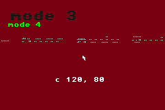
fig 19.3: txt_bm 演示程序。
操作方式：
| D-pad | 移动光标。 |
|---|---|
| Start | 切换字符串清除。 |
| L, R | 减小或增大模式。 |
这里许多东西应该要么不言自明，要么毫不相关。有趣的地方用数字标出，所以我们依次过一遍，好吗？
1. 模式指示器。这是我们往 VRAM 里写三个字符串、指示模式的地方。注意接口几乎一致；唯一的真正区别是 m4_puts() 的第四个参数是调色板索引而非真实颜色。
2. 清除之前的光标字符串。光标字符串随着你在屏幕上移动而跟踪光标。你会注意到的第一件事是，字符串变成一团可怕的乱码，因为位图写入函数只写字体中 非零 的像素。换句话说，它 不 清除该字形其余空间。本质上 mx_puts() 是透明字符串写入函数。
当然，我本可以给写入函数加一个能擦掉整个字形区域的开关。其实很容易，只要多一个 else 子句。然而，现在这种方式其实更实用。一方面，要是你真的 想要 透明呢？你就得另写一个例程专门做那个。我选的方法是多一个清除例程（你大概反正也需要它）。要覆盖整个字形，只需先调用 mx_clrs()；这正是我在这里做的。嗯，只要 bClear 变量被置位（用 Start 切换）。
第二个理由是这种方式快得多。不仅因为如果我要擦掉整个区域就没法用 ix 循环里的提前跳出，而且仅多一个分支就会增加周期（在三重循环内），但绘制单个字符终究比整块地处理要慢。mx_clrs() 用的是 memset16()，它基本是 CpuFastSet() 加上安全保护，在仅仅半打像素之后就会更快。
哦，要是你奇怪我为什么在说 mx_clrs() 而代码里写的是 bm_clrs()，后一个函数只不过是个用 switch 块根据当前位图模式来调用正确模式专属字符串清除器的函数。
3. 更新光标字符串。由于写入函数没有格式说明符字段，怎么写数字？简单，先用 sprintf() 准备好字符串，再用那个。或者更准确地说，用 siprintf()。这是 sprintf() 的整数专用版本，更适合 GBA 编程，因为你本来就不该用浮点数。包一层 siprintf() 和 mx_puts() 来写应该相对简单，但我不确定是否值得费劲。
我或许该指出，用 siprintf 及其他能把数字变成字符串的例程，会用到除以 10 来完成，你也知道那意味着什么。即便你不要求它转换数字，它也会调用标准库里十来个例程，给你的二进制文件增加约 25kb。这对 ROM 不算多，但对多引导（multiboot，上限 256kb）可能是个问题。有鉴于此，我建议你看看 Dan Posluns 的 posprintf。这是手工编写的汇编，用一种特殊的十进制转换算法。它的选项可能不如 siprintf() 丰富，但速度和体积都要好得多，绝对值得一看。
4. 写光标字符串。这把当前光标字符串写到位置 (80, 120)。和擦除字符串的情况一样，我用的是 bm_puts() 函数，它在当前模式写入函数之间切换。
精灵文本；Hello world!
没错！Hello world！原则上，你要做的只是用正确参数调用 txt_init()、txt_init_obj() 和 obj_puts()，但那又很无聊，所以我也加点有趣的东西。txt_obj 演示展示了用精灵能做得最好的一件事：单个字母动画。“hello world!”这个短语的字母会从屏幕顶部落下，弹跳着停在地面（屏幕中间偏下的一条绿线）上。
#include <tonc.h>
// === CONSTANTS & STRUCTS ============================================
#define POS0 (80<<8)
#define GRAV 0x40
#define DAMP 0xD0
#define HWLEN 12
const char hwstr[]= "Hello world!";
typedef struct
{
u32 state;
int tt;
FIXED fy;
FIXED fvy;
} PATTERN;
// === FUNCTIONS ======================================================
void pat_bounce(PATTERN *pat)
{
if(pat->tt <= 0) // timer's run out: play pattern
{
pat->fvy += GRAV;
pat->fy += pat->fvy;
// touched floor: bounce
if(pat->fy > POS0)
{
// damp if we still have enough speed
// otherwise kill movement
if(pat->fvy > DAMP)
{
pat->fy= 2*POS0-pat->fy;
pat->fvy= DAMP-pat->fvy;
}
else
{
pat->fy= POS0;
pat->fvy= 0;
}
}
}
else // still in waiting period
pat->tt--;
}
int main()
{
REG_DISPCNT= DCNT_MODE3 | DCNT_BG2 | DCNT_OBJ;
irq_init(NULL);
irq_add(II_VBLANK, NULL);
memset16(&vid_mem[88*240], CLR_GREEN, 240);
// (1) init sprite text
txt_init_std();
txt_init_obj(&oam_mem[0], 0xF200, CLR_YELLOW, 0xEE);
// (2) 12 px between letters
gptxt->dx= 12;
// (3) init sprite letters
OBJ_ATTR *oe= oam_mem;
obj_puts2(120-12*HWLEN/2, 8, hwstr, 0xF200, oe);
int ii;
PATTERN pats[HWLEN];
for(ii=0; ii<HWLEN; ii++)
{
// init patterns
pats[ii].state=0;
pats[ii].tt= 3*ii+1;
pats[ii].fy= -12<<8;
pats[ii].fvy= 0;
// init sprite position
oe[ii].attr0 &= ~ATTR0_Y_MASK;
oe[ii].attr0 |= 160;
}
while(1)
{
VBlankIntrWait();
for(ii=0; ii<HWLEN; ii++)
{
pat_bounce(&pats[ii]);
oe[ii].attr0 &= ~ATTR0_Y_MASK;
oe[ii].attr0 |= (pats[ii].fy>>8)& ATTR0_Y_MASK;
}
}
return 0;
}
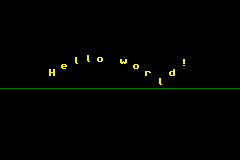
fig 19.4：txt_obj 演示程序。
这段代码里真正和字符串本身相关的很少，即第 1、2、3 项。有一处调用 txt_init_std() 做基本初始化，一处调用精灵文本初始化函数 txt_init_obj()。第二个参数是属性 2 的基准（如果你不记得属性 2 是什么，请再看一遍精灵那一章）；0xF200 意味着我用子调色板 15，并从图块索引 512（因为位图模式）开始字符图块。字体颜色是黄色，出来在索引 255。那是调色板 bank 的 240，解包出来的 0x0E=14，再加上实际 1bpp 像素的 1，240+14+1=255。这次调用之后，我还将水平像素偏移设为 12，让字母之间稍微散开。之后，我就调用 obj_puts2() 设置 OAM 的头几个精灵，使它们显示居中于屏幕顶部的“hello world!”。
我本可以到此为止，但这个演示其实才刚开始。用精灵作字形的妙处在于它们仍能 作为 普通精灵行动；obj_puts() 只是把它们设置成使用字母而非更像精灵的图形。
蹦跶，蹦跶，蹦跶
这里的目标是让字母从屏幕顶部落下，撞到地面时再弹起，但速度比之前略小（因为摩擦之类）。物理上，下落部分用恒定加速度 g 完成。加速度是速度的变化，所以速度呈线性；速度是位置的变化，所以高度呈抛物线。在弹跳时，我们进行非弹性碰撞（inelastic collision）；换句话说，就是有能量损失的情况。原则上，这意味着碰撞前后速度平方之差为一个常数（ |vout|2 - |vin|2 = Q ）。然而，这要求开平方根来求新速度，我现在不想那样，所以我在这里直接把平方丢掉。我相信在某些情况下这其实是相当合理的 :P。作为进一步简化，我对位置用一阶积分。这样，移动的基本代码变得非常简单
// 1D inelastic reflections
// y, vy, ay: position, velocity, acceleration.
// Q: inelastic collision coefficient.
vy += ay;
y += vy;
if(y>ymay) // collision
{
if((ABS(vy)>Q)
{
vy= -(vy-SGN(vy)*Q); // lower speed, switch direction
y= 2*ymay-y; // Mirror y at r: y= r-(y-r)= 2r-y
}
else // too slow: stop at ymay
{ vy= 0; y= ymay; }
}
这可以用下面更准确、用二阶积分和“恰当”回弹的代码替代，但你几乎察觉不到改进带来的差异。不过，我其实更喜欢简单线性回弹的样子，胜过硬开平方根。
// accelerate
k= vx+GRAV;
// Trapezium integration rule:
// x[i+1]= x[i] + (v[i]+v[i+1])/2;
x += (vx+k)/2;
vx= k;
if(x>xmax) // collision
{
if(vx*vx > Q2)
{ vx= -Sqrt(vx*vx-Q2); x= 2*xmax-x; }
else
{ vx= 0; x= xmax; }
}
图块地图文本：颜色与边框
接下来是两个图块地图文本演示中的第一个。我称之为常规背景的东西，官方名称是“文本背景（text background）”，它们被这么叫是有原因的：大多数有文本的情况，都是用常规背景完成的。当然，大多数情况下其他一切也 是 用那些完成的，所以严格地把它们和“文本”联系起来是种误称，不过我们今天先不纠结。第一个演示是关于如何用文本函数实现各种效果。除了简单地显示文本（无聊），你还会看到调色板切换和给文本加框，以及如何轻松同时使用不同字体和边框。由于我对函数的设计方式，这一切只需要改一个参数。很酷吧。
这个演示还会展示给单色字体加阴影，以及给它加不透明背景。我采取的做法大概会让我在计算机科学地狱里占个位，不过嘛，这些技巧的酷劲儿大概能让我免于在那里被烧。
#include <tonc.h>
#include "border.h"
// === CONSTANTS & STRUCTS ============================================
#define TID_FRAME0 96
#define TID_FRAME1 105
#define TID_FONT 0
#define TID_FONT2 128
#define TID_FONT3 256
#define TXT_PID_SHADE 0xEE
#define TXT_PID_BG 0x88
// === FUNCTIONS ======================================================
void init()
{
int ii;
REG_DISPCNT= DCNT_MODE0 | DCNT_BG0;
irq_init(NULL);
irq_add(II_VBLANK, NULL);
txt_init_std();
// (1a) Basic se text initialization
txt_init_se(0, BG_CBB(0) | BG_SBB(31), 0x1000, CLR_RED, 0x0E);
// (1b) again, with a twist
txt_init_se(0, BG_CBB(0) | BG_SBB(31), 0xF000|TID_FONT2,
CLR_YELLOW | (CLR_MAG<<16), TXT_PID_SHADE);
// (1c) and once more, with feeling!
txt_init_se(0, BG_CBB(0) | BG_SBB(31), 0xE000|TID_FONT3,
0, TXT_PID_SHADE);
u32 *pwd= (u32*)&tile_mem[0][TID_FONT3];
for(ii=0; ii<96*8; ii++)
*pwd++ |= quad8(TXT_PID_BG);
// extra border initialisation
memcpy32(pal_bg_mem, borderPal, borderPalLen/4);
memcpy32(&tile_mem[0][TID_FRAME0], borderTiles, borderTilesLen/4);
// (2) overwrite /\ [] `% ^_ to use border tiles
// / ^ \
// [ # ]
// ` _ '
const u8 bdr_lut[9]= "/^\\[#]`_\'";
for(ii=0; ii<9; ii++)
gptxt->chars[bdr_lut[ii]]= TID_FRAME0+ii;
// (3) set some extra colors
pal_bg_mem[0x1F]= CLR_RED;
pal_bg_mem[0x2F]= CLR_GREEN;
pal_bg_mem[0x3F]= CLR_BLUE;
pal_bg_mem[0xE8]= pal_bg_mem[0x08]; // bg
pal_bg_mem[0xEE]= CLR_ORANGE; // shadow
pal_bg_mem[0xEF]= pal_bg_mem[0x0F]; // text
}
void txt_se_frame(int l, int t, int r, int b, u16 se0)
{
int ix, iy;
u8 *lut= gptxt->chars;
u16 *pse= (u16*)gptxt->dst0;
pse += t*32 + l;
r -= (l+1);
b -= (t+1);
// corners
pse[32*0 + 0] = se0+lut['/'];
pse[32*0 + r] = se0+lut['\\'];
pse[32*b + 0] = se0+lut['`'];
pse[32*b + r] = se0+lut['\''];
// horizontal
for(ix=1; ix<r; ix++)
{
pse[32*0+ix]= se0+lut['^'];
pse[32*b+ix]= se0+lut['_'];
}
// vertical + inside
pse += 32;
for(iy=1; iy<b; iy++)
{
pse[0]= se0+lut['['];
pse[r]= se0+lut[']'];
for(ix=1; ix<r; ix++)
pse[ix]= se0+lut['#'];
pse += 32;
}
}
int main()
{
init();
// (4a) red, green, blue text
se_puts(8, 16, "bank 1:\n red", 0x1000);
se_puts(8, 40, "bank 2:\n green", 0x2000);
se_puts(8, 72, "bank 3:\n blue", 0x3000);
// (4b) yellow text with magenta shadow
se_puts(8, 96, "bank 15:\n yellow, \nwith mag \nshadow", 0xF000|TID_FONT2);
// (5a) framed text, v1
txt_se_frame(10, 2, 29, 9, 0);
se_puts( 88, 24, "frame 0:", 0);
se_puts(104, 32, "/^\\[#]`_'", 0);
se_puts( 88, 40, "bank 0:\n basic text,\n transparent bg", 0);
// (5b) framed text, v2
txt_se_frame(10, 11, 29, 18, TID_FRAME1-TID_FRAME0);
se_puts( 88, 96, "frame 1:", 0xE000|TID_FONT3);
se_puts(104, 104, "/^\\[#]`_'", 9);
se_puts( 88, 112, "bank 14:\n shaded text\n opaque bg", 0xE000|TID_FONT3);
while(1)
VBlankIntrWait();
return 0;
}
|
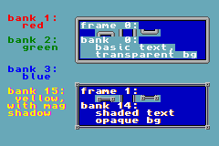 fig 19.5a: 第一个图块地图文本演示。 |
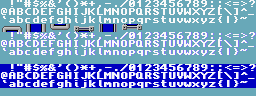 fig 19.5b: 配套的图块集。 |
代码解析
fig 19.5 展示了这段代码产生的效果。所有实际文本绘制都在 main 函数里完成，我逐一讲解。前三件事是红色、绿色和蓝色文本（第 4a 点），通过调色板切换实现。我把红、绿、蓝载入调色板索引 0x1F、0x2F 和 0x3F（第 3 点），并用 se_puts() 的最后一个参数在它们之间切换，你会记得这个参数被加到每个屏幕条目上。值 0x1000、0x2000 和 0x3000 表示我们将使用调色板 bank 1、2、3。
如果你仔细看，会看到第四个文本（第 4b 点）是黄色，每个字母的右边缘有洋红色（不，它不是粉色，是 洋红）阴影。至少部分原因是 se0 参数，现在是 0xF080。它有阴影是因为最后一部分：我其实用了一个略不同的字体，从图块 128 开始。我重复一遍，我之所以能用同一个函数做所有这些，是因为 se_puts() 的那个偏移参数。
第 (5a) 和 (5b) 点是给文本加框以及框内文本。txt_se_frame() 函数绘制我的边框。它输入一个矩形，并在其上画一个框。注意这个框包含左上角，但不包含右下角。同样，我有一个额外的 se0 参数作为偏移。第二个边框就是这样完成的；我只是用边框图块之间的差异来偏移它。
边框本身的绘制其实和把它当文本画差不多。在 init() 里，我把字符 lut 中的 9 个字符重新指派为使用主边框图块集的图块索引（第 2 点）。我这么做没有特别理由，仅仅是出于我能这么做。只是展示一下你用文本写入函数和一点巧妙的 lut 操作能做的事。
框内的文本也是个有趣的故事。正如你在第一个框里的文本所看到的，标准文本并不完全奏效。问题是我用的主图块集是透明的，而框的背景不是。把两者混在一起就会冲突。那怎么解决？嗯，你创建 另一个 字体，一个不以 0 作为背景色。有几种做法，其中之一是对位解包标志加 1<<31。但我选另一种方法，稍后讲。注意无论我做什么，它确实有效：第二个框里的文本确实是不透明的。注意我写那段文本用的是 pal-bank 14，而且现在用的是 第三 个字体图块集。
到现在为止一切都相当容易。我是指 se_puts() 和 txt_se_frame() 的用法。我希望你理解了上面所有内容，因为剩下的会相当有趣。倒不是“天呐天呐我们要完蛋了”那种有趣，但对某些人来说还是有点毛骨悚然。
玩弄比特的乐趣
我已经指明我用了三种不同字体。但如果你研究代码，会发现没有任何字体定义或副本的痕迹。因为根本没有：它们全都基于我前面展示的同一个位打包字体。而且，有数学头脑的人会注意到，位打包一个 1bpp 字体会得到两种颜色。毕竟那是 1bpp 的 意思。但我有一个背景色、一个前景色，还有阴影；那是三种。此外，似乎没有任何代码在做阴影。这一切引出一个简单的问题：我到底在搞什么鬼？
嗯……是这个：
#define TID_FONT 0
#define TID_FONT2 128
#define TID_FONT3 256
#define TXT_PID_SHADE 0xEE
#define TXT_PID_BG 0x88
// (1a) Basic se text initialization
txt_init_se(0, BG_CBB(0) | BG_SBB(31), 0x1000, CLR_RED, 0x0E);
// (1b) again, with a twist
txt_init_se(0, BG_CBB(0) | BG_SBB(31), 0xF000|TID_FONT2,
CLR_YELLOW | (CLR_MAG<<16), TXT_PID_SHADE);
// (1c) and once more, with feeling!
txt_init_se(0, BG_CBB(0) | BG_SBB(31), 0xE000|TID_FONT3,
0, TXT_PID_SHADE);
u32 *pwd= (u32*)&tile_mem[0][TID_FONT3];
for(ii=0; ii<96*8; ii++)
*pwd++ |= quad8(TXT_PID_BG);
这六条语句设置了三个字体，包括阴影和不透明。第一个设置标准字体，在 charblock 0、screenblock 31、pal-bank 1，并用 0x0E 作位解包偏移，使文本色在 0x1F。我们在对象文本里见过同样的东西。
| bit | val | 7 | 6 | 5 | 4 | 3 | 2 | 1 | 0 | ||||
|---|---|---|---|---|---|---|---|---|---|---|---|---|---|
| 0 | 0 | . | . | . | . | . | . | . | 0 | ||||
| 1 | 1 | . | . | . | . | . | E | F | . | ||||
| 2 | 1 | . | . | . | . | E | F | . | . | ||||
| 3 | 1 | . | . | . | E | F | . | . | . | ||||
| 4 | 0 | . | . | . | 0 | . | . | . | . | ||||
| 5 | 0 | . | . | 0 | . | . | . | . | . | ||||
| 6 | 1 | E | F | . | . | . | . | . | . | ||||
| 7 | 0 | 0 | . | . | . | . | . | . | . | ||||
| OR: | E | F | 0 | E | F | F | F | 0 | |||||
对 txt_se_init() 的第二次调用设置了第二组字体，即带阴影的那组。se0 指示使用 pal-bank 15 并从 128 开始，但关键部分发生在 clrs 和 base 参数里。现在 clrs 中有两种颜色，黄色和洋红色。下半字是文本色，上半字是阴影色。
实际的阴影来自 base 的值（即 0xEE）以及整个位解包例程的工作方式。偏移被加到打包字体中的每个“开”比特上，得到 0xEF，然后以适当的移位 OR 到当前字。由于我们处理的是 4bpp 字体，结果实际上会溢出到下一个半字节（nybble）。现在，如果下一个比特也是开，它会把 0xEF 与溢出值 0x0E OR 起来。因为 0xF | 0xE 就是 0xF，就好像溢出从未发生。但如果下一个比特是 关 的，那个像素的值就是 0xE。最后，如果零源比特没有溢出，结果就是 0。于是我们得到三种可能的值：0（背景）、14（阴影）和 15（文本）。table 19.2 更形象地展示了这个过程。左边是源字节的比特，右边网格里是每个比特位解包后的结果，在正确位置上。然后它们 OR 在一起得到最终结果。对 0x46 来说，结果字是 0xEF0EFFF0。一个字是 4bpp 图块中的一行 8 像素，而由于低半字节是最左的像素，阴影会出现在字符右侧，即便它用的是更高有效位。
base 0xEE 是许多能实现这个技巧的值之一。关键是高半字节必须被低半字节+1 完全覆盖。任何高低半字节相等且为偶数的数都行。
现在，我得第一个承认这有点 hack。要让它工作，很多条件必须同时成立。字长必须能装下一整行图块，打包和解包数据都必须是比特和字节双重小端，且解包例程必须确实允许溢出，大概还有我现在想不起来的其他几件事。这些条件在 GBA 上都满足，但我非常怀疑你能在其他系统上用这个技巧。当然，也有其他加阴影的方法，而且更好。只是它实在太妙了，让我忍不住用。
最后的 txt_se_init() 工作方式基本和第二组一样：通过溢出做阴影。它没做的是让图块不透明。虽然用 BitUnpack 可以，但你不能在一次调用里既 又 做到阴影，那根本行不通。但还有其他办法。我们要让图块不透明，只需背景像素上不是零的某个值。嗯，这很容易：只需把所有东西偏移（加或 OR）一个数。这里我不能加值，因为文本值已经在最大了，所以我用 OR。我 OR 的值是 0x88888888，它不改变文本或阴影，但把背景像素设为使用 8，于是我们得到了想要的。
而这就是，如他们所说，我们做到那事的方法。或者至少是我做到那事的方法。如果上面看着像天书，没人逼你用同样的方式。你总可以走捷径，把多个字体包含进程序，而不是从手头的东西构造它们。我只是展示用一点创造性编码能做成什么。
图块地图文本：性能分析
我要展示的最后一件事很简单，但当你要优化某些东西时可能派上用场。如果你没注意到，调试 GBA 程序不像调试 PC 程序那么容易。有通过 Insight 和 GDB（GCC 调试器）调试的可能，但即便那样事情也靠不住，至少我是这么听说的。嗯，既然你能打印自己的文本，你至少能做点那种事。写出诊断消息之类的。
但这不是我现在要展示的。最后一个演示会展示通常 在 调试之后做的事：性能分析（profiling）。性能分析告诉你花在各处的时间是多少，这样你就能知道哪里是最该尝试优化的地方。我要展示的是一种获取函数内耗时的简单方法。这类东西很好知道，特别是在像这样的平台上，你还得操心速度和效率之类傻乎乎的东西。
下一个演示会为五种不同数据复制方式计时，这里是把一个模式 4 位图从 EWRAM（我的代码默认按多引导设置，意味着一切进 EWRAM 而非 ROM）复制到 VRAM。这些方法有：
- u16 数组。以 16 位（半字）块复制。大概是你会在其他教程里最常见的那种，但这里不是。有理由的，我们马上会看到。
- u32 数组。以 32 位（字）块复制。
memcpy()。标准 C 复制例程，我在早先演示里用的那个。嗯，现在我是。memcpy32()。自家的汇编，在 这里 详述。基本做CpuFastSet()做的事，只是没有字数必须是 8 的倍数的限制。dma_memcpy()。通过 32 位 DMA 复制。
#include <string.h>
#include <stdio.h>
#include <stdlib.h>
#include <tonc.h>
#include "gba_pic.h"
// === CONSTANTS & STRUCTS ============================================
int gtimes[5];
const char *strs[5]=
{ "u16 array", "u32 array", "memcpy", "memcpy32", "DMA32" };
// === FUNCTIONS ======================================================
// copy via u16 array
void test_0(u16 *dst, const u16 *src, u32 len)
{
u32 ii;
profile_start();
for(ii=0; ii<len/2; ii++)
dst[ii]= src[ii];
gtimes[0]= profile_stop();
}
// copy via u32 array
void test_1(u32 *dst, const u32 *src, u32 len)
{
u32 ii;
profile_start();
for(ii=0; ii<len/4; ii++)
dst[ii]= src[ii];
gtimes[1]= profile_stop();
}
// copy via memcpy
void test_2(void *dst, const void *src, u32 len)
{
profile_start();
memcpy(dst, src, len);
gtimes[2]= profile_stop();
}
// copy via my own memcpy32
void test_3(void *dst, const void *src, u32 len)
{
profile_start();
memcpy32(dst, src, len/4);
gtimes[3]= profile_stop();
}
// copy using DMA
void test_4(void *dst, const void *src, u32 len)
{
profile_start();
dma3_cpy(dst, src, len);
gtimes[4]= profile_stop();
}
int main()
{
REG_DISPCNT= DCNT_MODE0 | DCNT_BG0;
irq_init(NULL);
irq_add(II_VBLANK, NULL);
test_0((u16*)vid_mem, (const u16*)gba_picBitmap, gba_picBitmapLen);
test_1((u32*)vid_mem, (const u32*)gba_picBitmap, gba_picBitmapLen);
test_2(vid_mem, gba_picBitmap, gba_picBitmapLen);
test_3(vid_mem, gba_picBitmap, gba_picBitmapLen);
test_4(vid_mem, gba_picBitmap, gba_picBitmapLen);
// clear the screenblock I'm about to use
memset32(&se_mem[7], 0, SBB_SIZE/4);
// init map text
txt_init_std();
txt_init_se(0, BG_SBB(7), 0, CLR_YELLOW, 0);
// print results
int ii;
char str[32];
for(ii=0; ii<5; ii++)
{
siprintf(str, "%12s %6d", strs[ii], gtimes[ii]);
se_puts(8, 8+8*ii, str, 0);
}
while(1)
VBlankIntrWait();
return 0;
}
代码应该不言自明。我有五个函数对应想要分析的东西。我选了独立函数，因为这样我知道优化不会干扰（它有时会把代码移来移去）。运行这些函数后，我设置文本函数并打印结果。
性能分析本身用两个宏：profile_start() 和 profile_stop()。它们可以在 libtonc 的 core.h 中找到。这些宏做的是启动和停止定时器 2 和 3，然后返回两次调用之间的时间。这确实意味着你分析的那段代码不能用这些定时器。
INLINE void profile_start()
{
REG_TM2D= 0; REG_TM3D= 0;
REG_TM2CNT= 0; REG_TM3CNT= 0;
REG_TM3CNT= TM_ENABLE | TM_CASCADE;
REG_TM2CNT= TM_ENABLE;
}
INLINE u32 profile_stop()
{
REG_TM2CNT= 0;
return (REG_TM3D<<16)|REG_TM2D;
}
|
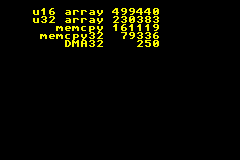 fig 19.6a: txt_se2 在 VBA 上。 |
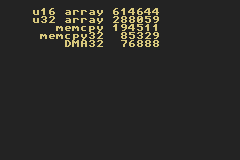 fig 19.6b: txt_se2 在 no$gba 上。 |
| hardware | vba | no$gba | vba err | no$ err | |
|---|---|---|---|---|---|
| u16 array | 614571 | 499440 | 614571 | -18.73 | 0.00 |
| u32 array | 289825 | 230383 | 288098 | -20.51 | -0.60 |
| memcpy | 195156 | 161119 | 194519 | -17.44 | -0.33 |
| memcpy32 | 86816 | 79336 | 85329 | -8.62 | -1.71 |
| DMA32 | 76889 | 250 | 76888 | -99.67 | 0.00 |
Fig 19.6 展示了计时结果，运行在 VisualBoy Advance 和 no$gba 中。注意它们并不完全相同。所以你做两意见不同该做的事：找第三方。这里，我用唯一真正重要的那个，即硬件。你可以在 table 19.3 中看到三者对比，它告诉你 no$gba 在计时上非常准，但 VBA 就不那么准。我猜你仍能拿它来估算或做相对计时，但真正的准确在那里找不到。为此你需要硬件或 no$gba。
关于数字本身。差距约有 9 倍，相当大。这里展示的技术没有哪个特别难懂，而数据复制是你可能要花大量时间做的事，所以不如一开始就利用更快的那些。
大多数教程代码，大概还有你能找到的许多演示代码，都用 u16 数组的方式复制；大概是因为某些区段无法做字节复制。但如你所见，u16 复制比 u32 复制慢两倍多！诚然，它不是最慢的复制数据方法，但也差不远了（用 u16 循环变量——也很常见——会再慢约 20%；试试看就知道了）。GBA 是 32 位机。它 喜欢 32 位数据，其指令集也更擅长处理 32 位块。丢掉你可能在别处染上的 u16 癖好。可以的话用字长数据，其他只在必要时用。话虽如此，确实要看你的数据对齐！u8 或 u16 数组不总是字对齐的，那会给强制转换带来麻烦。
GCC 与等待状态 vs 计时结果
给出精确计时结果很难，原因有好几个。首先，在硬件侧，不同的内存区段有不同的等待状态，除非你坐下来、读汇编、把指令的周期数加起来，否则事情会很复杂。这是份糟糕的工作，相信我。第二个问题是 GCC 还没达到这段代码的理论最优，所以结果会随新版本而变。你上面看到的只是个好指示，但你的实际情况可能不同。
有几种快速复制大块数据的方法。比写你自己的简单循环快。常见的有标准 memcpy()，任何平台都有；还有两个 GBA 专属的方法：CpuFastSet() BIOS 调用（或我自己的 memcpy32()）和 DMA。前两个 要求 字对齐；DMA 只是用字对齐更好。实际上 memcpy() 的性能并不差，而且它到处都有，所以是个好的起点。其他的更快，但有代价：memcpy32() 是手工写的汇编；CpuFastSet() 要求字数能被 8 整除，而 DMA 会锁住 CPU，可能干扰中断。当你发现需要多一点速度时，最好记住这些。
其他考量
这几个函数对文本系统来说不过是浅尝辄止。你可以有更大的字体、彩色字体、恰当的阴影、变宽字符，等等。这些每项都能应用到每种模式，再加上文本对齐与排版的额外格式化，配合图块地图/OAM 改动来更新图块内存以削减 VRAM 使用，等等，等等。要深入看所有变体需要一整个站点，所以我就到此为止。我只希望你对文本系统的一些基础有所领会。拿这些知识做什么，我留给你自己。
20. Mode 7 第 1 部分
好，现在来讲点酷的东西：Mode 7。不仅是在 GBA 上如何实现它，还有它背后的数学。你需要先了解图块背景（尤其是可变换的那些）以及中断。如果还不了解，请先去读这些主题。这里的内容解释了 Mode 7 的基础。我还有一页进阶内容，但我强烈建议你先读这一页，因为那里的数学比这里的要难上不少。
简介
时光倒退回 1990 年，那时有超级任天堂（Super NES），也就是任天堂娱乐系统（NES）的 16 位后继机种。除了新技术天然带来的那些常见改进之外，SNES 还是第一台拥有特殊图形硬件、能对任意背景和精灵进行线性变换（比如旋转和缩放）的家用机。Mode7 把这一步推得更远：它不仅能旋转和缩放背景，还额外加入了一个透视步骤，从而创造出 3D 观感。
很难说 Mode 7 只是又一个漂亮的噱头。举例来说，它彻底改变了竞速游戏这个类型。更老的竞速游戏（比如 Pole Position 和 Outrun）只能做简单的左右弯。Mode 7 则能呈现更有意思的赛道，因为你的视野不再局限于正前方的那一小段路面。F-Zero 是第一个使用它的游戏，并且把之前的一切都碾压了（原版的 Fire Field 至今仍是最凶残的赛道之一，有着发卡弯、磁力光束和地雷）。其它知名的游戏很快接踵而至，比如超级马里奥赛车（嗯嗯，彩虹之路。150cc，全程油门到底 *gargle*）和 Pilotwings。
由于 GBA 本质上就是一台迷你 SNES，按理说你也能在它上面做 Mode 7 图形。而且，你是对的，尽管我听说 GBA 的 Mode 7 与 SNES 的略有不同。在 SNES 上，视频模式确实一直排到了 #7（参见 SNESdev Wiki）。GBA 却只有模式 0–5。所以严格来说，“GBA Mode 7”又是一个误称。不过，对于所有不是 SNES 程序员的人来说（这几乎包括了所有人，也包括我），这个词与它所闻名于世的图形效果——一个透视视图——是同义的。而你在 GBA 上确实可以创建一个透视视图，所以从这个意义上说，这个词仍然成立。
我不敢确定 SNES 的情况，但 GBA 的 Mode 7 与 OpenGL 和 Direct3D 这类真正的 3D API 非常不同。在那些系统上，你只需给出正确的透视矩阵，然后把它塞进渲染管线即可。然而在 GBA 上，你手头只有一个通用的 2D 变换矩阵 P 和位移 dx，而且所有的透视计算都得你自己来做。这基本上意味着，你必须在每条扫描线上改变缩放和位移，使用 HBlank DMA 或 HBlank 中断来达成。
在本教程中，我会使用来自 sbb_aff 演示程序的那张 64×64t 仿射背景（长得有点像 fig 20.1），施展 Mode 7 的魔法，把它变成类似 fig 20.2 中所描绘的样子。重点会放在详细展示这魔法究竟是如何运作的。虽然最终结果是以一个 HBlank 中断函数的形式给出的，但改写成 HBlank DMA 的情形应该也不算太难。
|
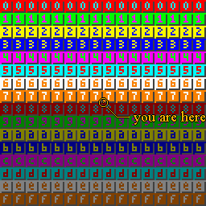 Fig 20.1: 这是你的地图（嗯，差不多）。 |
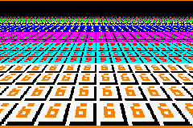 Fig 20.2: 这是你的地图在 mode7 下的样子。 |
建立透视感
（如果你已经熟悉透视的基础知识，可以只粗略地浏览这一节。） 如果你曾经看过世界地图或玩过 3D 游戏，你就会知道，当从 3D 映射到 2D 时，总有些东西得做出让步。这件事的术语叫做投影。投影有许多类型，但我们关心的是透视，它让物体看起来离得越远就越小。
我们从一个类似 fig 20.3 中的 3D 空间开始。在计算机图形学中，习惯上让 x 轴指向右方，y 轴指向上方。z 轴则是由空间的手性（handedness）决定的：在右手系中它指向后方（屏幕之外），而在左手系中它指向前方。我使用的是右手系，因为一碰到旋转和计算法线，左手系就会把我搞得晕头转向。另一个原因是，这样屏幕坐标就与 (x, z) 值对应了。把观察者放在原点也是惯例（对于不同的观察者位置，只需把世界向相反方向平移即可）。对于右手系来说，这意味着你是在沿着负的 z 轴看过去。
当然，你不可能看到一切：只有位于视域内部的物体才可见。对于透视投影来说，视域由观察者位置（在我们的例子中是原点）和投影平面定义，后者位于观察者前方距离为 D 的地方。把它想象成屏幕。投影平面有宽度 W 和高度 H。所以视域实际上是一个视锥，尽管在实践中它通常是一个视截台（被砍掉头的金字塔），因为你所能感知的距离同样有最小值和最大值。
Fig 20.4 展示了透视投影实际所做的事。给定一个被投影到点 (yp, −D) 的点 (y, z)。按照定义，投影后的 z 坐标就是 −D。投影后的 y 坐标，是投影平面与那条穿过观察者和原始点的直线的交点：
| (20.1) |
基本上，你要除以 。 由于它是一个如此重要的因子，它有自己的变量名：缩放因子 λ：
| (20.2) |
通常的规律是：位于投影平面之前（λ<1）的一切都会被放大，而在它之后（λ>1）的一切则会被缩小。
|
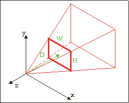 Fig 20.3: 三维坐标系，展示了由原点和位于 z= −D 处的屏幕矩形（W×H）所定义的视锥 |
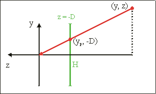 Fig 20.4: 侧视图；点 (y, z) 被投影到 (z = −D) 平面上。投影后的点是 yp = y·D/z |
进入 Mode 7
Fig 20.3 和 fig 20.4 描述的是一个拥有大量物体和观察者朝向的 3D 世界中透视投影的普遍情形。Mode 7 的情况要比那简单得多：
- 物体。我们只处理两个物体：观察者（位于点 a = (ax, ay, az)）和地面（按定义为 y=0）。
- 观察者朝向。在一个完整的 3D 世界中，观察者朝向由 3 个角度给出：偏航（yaw，y 轴）、俯仰（pitch，x 轴）和翻滚（roll，z 轴）。为了简单，我们只保留偏航。
- 地平线问题。由于视线方向与地面保持平行，地平线应当位于屏幕的中央。那样一来屏幕的上半部分就会空着，有点浪费。为了弥补这一点，我们只使用视域的下半部分，从而让地平线处在屏幕的顶端。请注意，尽管现在的上下视线和你略微向下看时是一样的，但两种情况并不相等，因为投影平面仍然是竖直的。意识到这一区别很重要。
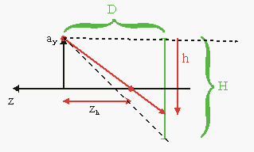
Fig 20.5: Mode 7 透视的侧视图Fig 20.5 展示了整个情形。一个位于 y = ay 的观察者正沿着负的 z 方向看去。在观察者前方距离 D 处是投影平面，其下半部分显示在高度为 H（=160）的 GBA 屏幕上。现在到了有趣的部分。GBA 没有任何真正的 3D 硬件能力，但你可以通过巧妙地操纵每条扫描线上的缩放和位移 REG_BGxX-REG_BGxPD 来伪造它。你只需要搞清楚地图的哪一部分落在哪条扫描线上，以及处于哪个缩放级别。实际上，你是在构建一个非常简单的光线投射器（ray-caster）。
数学原理
从概念上讲，Mode 7 包含四个步骤，描绘在 fig 20.6a–d 中。绿色图形表示原始地图；红色是运算之后的地图。给定一条扫描线 h，我们要做的是：
- 预平移 通过 a = (ax, az)。这把观察者放到了原点，而这正是步骤 b 和 c 所需要的。
- 旋转 通过 α。这处理偏航角。这些步骤与普通的、可变换的背景是一样的，所以理解它们对你来说应该不成问题。
- 透视除法。接下来，我们整体缩放 1/λ。由 eq 20.2 可知 λ = ay/h。直线 z = zh 是理应落在扫描线 h 上的那条直线。这条直线在缩放之后的新位置是 z = −D，因为那正是透视除法的全部意义所在。
- 后平移 通过 (−xs)。注意那个负号。在透视除法之后，剩下的就是把完全变换过的地图移回它应有的屏幕位置（米黄色区域）。出于显而易见的原因，水平分量应当等于屏幕宽度的一半。竖直方向的移动则应当把地面线移到那条扫描线上，于是这个向量是：
| (20.3) |
|
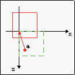 | 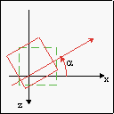 | 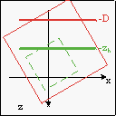 | 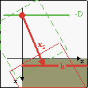 |
| Fig 20.6a: 通过 (ax, az) 预平移 | Fig 20.6b: 通过 α 旋转 | Fig 20.6c: 通过 1/λ 缩放 | Fig 20.6d: 通过 (xs, ys) 后平移 |
汇总整合
虽然上面描述的步骤确实是完整的过程，但仍有若干松散的线头需要收拢。首先，请记住 GBA 的变换矩阵 P 映射的方向是从屏幕空间到背景空间，而这其实与你想要做的方向相反。所以你应该使用的是：
| (20.4) |
是的，那个负号对于逆时针旋转是正确的（R 被定义为顺时针旋转）。另外请记住，GBA 使用的屏幕点 q 与背景点 p 之间的关系是：
| (20.5) |
也就是说，是一次平移和一次变换。我们得把预平移和后平移合并起来，才能让它生效。我们在 affbg.html#sec-aff-ofs 的等式 4 中其实已经见过这个了，只是名字不同。总之，你需要的是：
| (20.6) |
所以，对于每条扫描线，你计算缩放因子，把 eq 20.4 中的 P 矩阵写入 REG_BGxPA-REG_BGxPD，再把 a−P·xs 写入 REG_BGxX 和 REG_BGxY，然后——搞定！瞬间就做出了 Mode 7。
嗯，差不多。请记住在 HBlank 中断里写入 REG_BGxY 时会发生什么：当前扫描线会被当作屏幕的原点零行。换句话说，它会自动替你完成 ys 中那个 +h 的部分。把真正的 ys 重命名为 ys0，你应该用的是
| (20.7) |
现在，理论上你已拥有一切所需。不过在实践中，还是有不少地方可能出错。在我深入那些之前，先来看一个漂亮（并不那么小）的演示程序。
三重演示程序
和往常一样，这里有一个演示程序。其实我有好几个 Mode 7 的演示，但那现在并不重要。这个演示叫做 m7_demo，控制方式如下：
| D-pad | 平移（Strafe）。 |
|---|---|
| L, R | 向左和向右转（即，分别把地图向右和向左旋转） |
| A, B | 向上和向下移动，不过我忘了哪个是哪个。 |
| Select | 在 3 种不同的 Mode7 类型（A、B、C）之间切换 |
| Start | 重置所有数值（a= (256, 32, 256)，α= 0） |
“在 3 种不同的 Mode7 类型之间切换”？没错，正是我说的。请务必在三种类型中都四处移动一下。拜托了。左上角有一个标签，指示当前的类型。
|
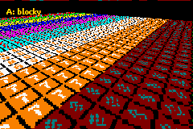 Fig 20.7a: 类型 A：块状。 |
Fig 20.7b: 类型 B：锯齿状。 |
|
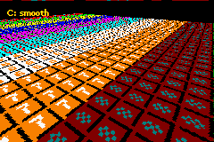 Fig 20.7c: 类型 C：平滑。 | |
顺序，顺序！
稍微摆弄了一下我的演示程序？很好。注意到三种类型之间的差别了？那就更好了！作为参考，看看图 20.7a–c，它们与这些类型一一对应。它们清楚地展示了不同之处。
- 类型 A 糟糕地呈块状。那些红色图块里的数字本该是“8”。嘿，数字？什么数字！
- 类型 B 好一些。左侧是平滑的，但右侧仍有些麻烦。不过至少发挥一点想象力，你还是能看到八的。
- 类型 C。这才像话嘛！中心线很清晰，而这一点很重要，因为你大部分时间看的就是它。但即使在两侧，情况也相当不错。
于是我们有了三个截然不同的 Mode 7 结果，但我向你保证，它们全部建立在同样的数学之上。那么，为什么一种方法看起来如此糟糕，而另一种看起来如此出色？
代码
这里是创建这些类型的两个 HBlank 中断服务程序（ISR）。类型 A 和 B 几乎一模一样，除了一点。类型 C 则与另外两个大不相同。如果你有自虐倾向，试着仅从代码出发来解释这些差异。我昨晚大半夜都在琢磨到底是什么让类型 C 生效，所以我有一半心思想就让你这么悬着。不过对你来说幸运的是，那一半现在正睡着。
#define M7_D 128
extern VECTOR cam_pos; // 摄像机位置
extern FIXED g_cosf, g_sinf; // cos(phi) 和 sin(phi)，.8f
// --- 类型 A ---
// (offset * zoom) * rotation
// 全部为 .8 定点
void m7_hbl_a()
{
FIXED lam, xs, ys;
lam= cam_pos.y*lu_div(REG_VCOUNT)>>16; // .8*.16/.16 = .8
// 计算偏移量 (.8)
xs= 120*lam;
ys= M7_D*lam;
REG_BG2PA= (g_cosf*lam)>>8;
REG_BG2PC= (g_sinf*lam)>>8;
REG_BG2X = cam_pos.x - ( (xs*g_cosf-ys*g_sinf)>>8 );
REG_BG2Y = cam_pos.z - ( (xs*g_sinf+ys*g_cosf)>>8 );
}
// --- 类型 B ---
// (offset * zoom) * rotation
// 混合定点：lam、xs、ys 使用 .12
void m7_hbl_b()
{
FIXED lam, xs, ys;
lam= cam_pos.y*lu_div(REG_VCOUNT)>>12; // .8*.16/.12 = .12
// 计算偏移量 (.12f)
xs= 120*lam;
ys= M7_D*lam;
REG_BG2PA= (g_cosf*lam)>>12;
REG_BG2PC= (g_sinf*lam)>>12;
REG_BG2X = cam_pos.x - ( (xs*g_cosf-ys*g_sinf)>>12 );
REG_BG2Y = cam_pos.z - ( (xs*g_sinf+ys*g_cosf)>>12 );
}
// --- 类型 C ---
// offset * (zoom * rotation)
// 混合定点：lam、lcf、lsf 使用 .12
// lxr 和 lyr 有不同的计算方法
void m7_hbl_c()
{
FIXED lam, lcf, lsf, lxr, lyr;
lam= cam_pos.y*lu_div(REG_VCOUNT)>>12; // .8*.16 /.12 = 20.12
lcf= lam*g_cosf>>8; // .12*.8 /.8 = .12
lsf= lam*g_sinf>>8; // .12*.8 /.8 = .12
REG_BG2PA= lcf>>4;
REG_BG2PC= lsf>>4;
// 偏移量
// 注意 lxr 先向下移位！
// 水平偏移量
lxr= 120*(lcf>>4); lyr= (M7_D*lsf)>>4;
REG_BG2X= cam_pos.x - lxr + lyr;
// 竖直偏移量
lxr= 120*(lsf>>4); lyr= (M7_D*lcf)>>4;
REG_BG2Y= cam_pos.z - lxr - lyr;
}
讨论（技术向）
三个版本都做了如下这些事：使用等式 2 和一个除法查找表来计算缩放因子 λ，使用 λ 以及 cos(φ)、sin(φ) 的存储版本来计算仿射矩阵，并计算仿射偏移量。请注意，实际上只计算了 pa 和 pc；因为扫描线偏移量始终 effectively 为零，pb 和 pd 不起作用，可以忽略。这些是相同点，但更有趣的是它们之间的差异：
- 定点数。类型 A 全程使用 .8 定点数运算，而 B 和 C 则混用了 .12 和 .8 定点数。
- 仿射偏移量的计算顺序 仿射位移 dx 是三个部分组合而成的：缩放、旋转和偏移。类型 A 和 B 使用 dx = (offset*scale)*rotation，而 C 使用 dx = offset*(scale*rotation)。因为类型 C 把偏移放在最后做，它也可以为偏移使用不同的定点数。
| h | 1/h | λ (true) | λ(.8) |
|---|---|---|---|
| 157 | 0.01a16d..h | 0.342da7h | 0.34h |
| 158 | 0.019ec8..h | 0.33d91dh | 0.33h |
| 159 | 0.019c2d..h | 0.3385a2h | 0.33h |
| 160 | 0.019999..h | 0.333333h | 0.33h |
这两点（嗯，确切地说两点半）差异，足以解释结果上的不同。请记住，代码中的差异相当微妙：定点数在游戏机之外很少被使用，而结果因为计算顺序的不同而改变，可能更加罕见。然而，正是这两点在这里造成了所有的差别。
让我们从类型 A 和 B 开始，它们仅因 lam 的定点数位数而不同。λ 是摄像机高度与扫描线的比值，这个数往往相当小——无论如何都小于 1。table 20.1 展示了其中几个数值。请注意，使用一个只有 8 个小数位的 λ，意味着你会经常为多条约扫描线得到相同的数值，而它会一直传递到后续的计算中。这就是为什么类型 A——规规矩矩地像一个乖孩子那样使用固定的 .8 定点数——在低空时会如此呈块状。类型 B 多出的那 4 个位带来了好得多的结果。规矩固然好，但有时为了出成果，它们需要被打破。
现在，你会注意到类型 B 仍然有一点失真，那么为什么类型 B 只用到 .12 定点数，而不用到 16 呢？嗯，用 16 的话你可能会遭遇整数溢出。对于计算 xs 和 ys 来说那倒还好，但我们稍后还得对这些值进行旋转。好吧，那我们就用 64 位数学，这样 32 位溢出就无关紧要，从而能用更多的定点位数！毕竟，越多 == 越好，对吧？
嗯，不对。更大/更强/更多并不总是意味着更好（看看 DS 对 PSP 就知道了）。余下的失真并非定点数位数的问题；至少不完全是。你大可以用 128 位数学和 .32f 的除法与三角函数表，我无所谓；但在这里那无关紧要，因为问题不在这儿。
问题（或者说至少部分问题）出在类型 A 和 B 使用的基本算法上。如果你回看理论，会发现仿射矩阵是先计算的，然后才是偏移量。换句话说，先把缩放和旋转合并，再计算偏移修正量，P·xs。反正 GBA 里的仿射参数就是这样运作的。然而，这其实只是第一步。如果你照那个流程走，得到的仍然是锯齿状的结果。这些锯齿的真正原因，在于 lxr 的计算顺序。
// 先乘，再移位到 .8（A 和 B）
lxr= (120*lcf)>>4;
// 先移位到 .8，再乘（C）
lxr= 120*(lcf>>4);
得到 lxr = pa/c·xs 需要两个部分：与 P 元素相乘，以及向下移位到 .8 定点数。你或许会以为最后再做移位更好，因为那样精度更高。有趣的是，它并非如此！在乘法之前先把 pa 或 pc 向下移位到 8 个小数位，才是消除残余失真的关键，颠倒运算顺序并不会。
至于为什么，我没有 100% 的把握，但我可以猜一猜。仿射变换是围绕屏幕原点进行的，而为了把原点放到别处，我们需要施加一个通过后平移 xs 完成的位移。我认为关键的一点是：xs 是屏幕空间中的一个点，使用的是普通整数，而非定点数。然而，它只适用于 xs，因为它确实代表一个屏幕上的偏移；而 ys 其实并不是屏幕上的一个点，而是摄像机的焦距。另一方面，这也可能与位移用的内部寄存器有关。
结论
显然，类型 C 才是你想要的那个。我没能自己想到它，这着实让我抓狂。而事实上我曾用过那个缩放-旋转乘法、却因为我搞砸了与投影距离 D 的乘法而把它抛弃了，这也无济于事（是的，这句话是有意义的）。上面展示的 m7_hbl_c 代码是有效的，尽管它只用了 32 位数学。只要你先做缩放-旋转乘法，并且在计算 wxr 里乘以 120 之前先向下移位到 .8 定点数，一切都会没问题。
最后的思考
这一次的情形再次表明：编程（尤其是底层编程）既是一门科学，也是一门艺术。尽管三种 Mode 7 版本的理论是相同的，但实现中计算顺序与精度的微小差异，却在最终结果上造成了非常明显的不同。说到 Mode 7，要先计算仿射矩阵，再做修正偏移。但最重要的是，屏幕的 x 偏移量不应该用定点数来做。
其次，这还只是 Mode 7 图形背后的基础理论。没有精灵，没有俯仰角，也没有地平线，并且从一开始就是为 GBA 硬件量身定做的。在下一章中，我们将遵循标准的 3D 理论、借助线性代数，更详尽地推导出这套理论。那一章还会展示如何在 3D 中摆放精灵，以及如何对它们做其它处理，比如为旋转制作动画和排序，并且还会给出可变俯仰角和一个地平线。如果这听起来很复杂，嗯，我猜确实如此。不过，它绝对值得一看。
21. Mode 7 第二部分
简介
Mode 7 第一部分介绍了如何把一个仿射背景变成看起来像 3D 平面的基本方法，并讨论了一些涉及定点数算术的棘手部分。让一个 3D 平面看起来正确只是第一步。
在本章中，我们将研究创建一个 3D 世界所涉及的一般数学，并将其转化为可用于 mode 7 的形式。这包括各个方向上的平移与环视（yaw，偏航），和之前一样，但还包含一个用于上下看的俯仰角（pitch）。我们还将看到如何处理地平线，并使用一个背景作为地平线上方的远景。我甚至会加入一点雾效，来遮挡地面上较远的部分。
我还会讨论如何在 3D 空间中使用精灵(对象)。不仅是从 3D 空间到 2D 屏幕的变换，还包括剔除（culling）、按距离缩放（这并不像想的那么简单）、动画与排序。请注意，本章这部分属于基础的 3D 精灵(对象)理论，可以应用于以某种方式使用精灵(对象)的 3D 游戏。
本章的理论部分会非常偏重数学，因为 3D 理论向来如此。懂一点线性代数肯定不会有害。完整的几何故事超出了 Tonc 的范围，但这些内容相当通用；大多数 3D 编程书籍都会有一章讲几何变换，所以如果你在这里有点迷糊，可以去查阅那些资料。
本章几乎涉及了到目前为止讲过的所有主题。它用到了仿射对象、背景（既有常规也有仿射）、中断、颜色特效以及更多。如果你对其中的任何一项理解不足，在这里可能会过得很艰难。
| Fig 21.1: m7_ex; 包含地平线、精灵(对象)、可变俯仰角与距离雾效。 | |
我们要尝试做的是重现 SNES 超级马里奥赛车的场景（见 fig 21.1；使用这些图形要向任天堂致歉，但我在这种情况下确实别无选择 :\）。这只是游戏的一个定格画面，并不涉及实际玩法，但它应该能提供一个不错的模仿目标。代码分布在多个文件中：简单的 mode 7 函数放在 mode7.c 中，较复杂的 mode 7 函数与中断例程放在 mode7.iwram.c 中。演示专用代码可以在 m7_ex.c 中找到，它负责初始化、交互和主循环。基本操作如下：
| D-pad | 视角 |
|---|---|
| A/B | 后退/前进 |
| L/R | 平移 |
| Select+A/B | 上浮/下沉 |
| Start | 菜单 |
移动和视角控制遵循 FPS/飞行器式的运动方式，或者至少在用现有按键数量所能达到的范围内如此。还有几个额外选项被放进了菜单。首先是_运动控制_（motion control），用于设定不同的移动方式。‘local’ 选项沿相机轴进行飞行控制，‘level’ 选项提供与地面平行的运动（如同通常的 FPS），而 ‘global’ 选项使用世界轴进行移动。其他选项包括开关雾效以及重置演示程序。
Mode 7 基础理论
Fig 21.2 展示了我们要面对的局面：我们有一个位于 acw 的相机，它相对于世界坐标系有一定的朝向。我们要做的是找到将屏幕点 xs 与世界点 xw 联系起来的变换。有多种方法可以做到这一点。你已经在第一个 mode 7 章节中见过一种，当时我们从一开始就想着 GBA 硬件。你可以花点功夫把它扩展到一般的 mode 7 情形（非零俯仰角）。你也可以使用纯三角学，但那是个到处是负号和可能的正余弦混淆的雷区。尽管如此，它仍是可行的。不过，我在这里要使用的是线性代数。选择它有若干理由。首先，线性代数记号非常简洁，所以你可以用几行就写出最终解（事实上，一旦你理清定义，覆盖所有情形的解可以只用两行写出）。此外，方程结构良好、外观统一，便于调试。再就是，把整套东西求逆非常容易。最后，这也是真正的 3D 系统所用的方法，所以该理论也能应用于 mode 7 之外的领域。反过来，如果你懂基础 3D 理论，在这里也会感到得心应手。
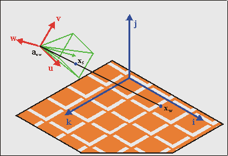
Fig 21.2: 基本的 3D 情形。关键在于将屏幕点 xs 与世界点 xw 联系起来，同时考虑相机位置 acw 及其朝向。
定义
不过，在你做任何事之前，需要先确切地知道我们将使用什么。首先要说明的是，我们有两套主要的坐标系：世界坐标系 Sw 与相机坐标系 Sc。在相机坐标系内部，还有两个次级坐标系，即投影空间 Sp 与屏幕空间 Ss。现在，对于 Si 与 Sj 两套系统之间的每一次变换，下面的关系都成立：
| (21.1) |
where
| xi | 系统 Si 中的坐标向量； |
| xj | 系统 Sj 中的坐标向量； |
| aji | 系统 Sj 的原点，用系统 Si 的坐标表示； |
| Mij | 变换矩阵，本质上是由 Sj 的主向量（以 Si 表示）构成的矩阵。 |
一旦你克服了看到这么多下标时的初次震惊（唔，在广义相对论里有个叫黎曼张量的东西，它有_四_个下标），你就会发现这个方程是有道理的。如果你不能立刻明白，就把它们想成数组和矩阵。细心的读者也会在screen↔map transformation 我们在仿射映射中见过：P·q = p − dx. 顺便说一下，Eq 21.1 是一个非常通用的方程，它对任何种类的线性坐标变换都成立。事实上，系统 Si 和 Sj 甚至不必具有相同的维数！
如前所述，我们一共有 4 个系统，因此有 4 个下标分别对应 w（orld，世界）、c（amera，相机）、p（rojection，投影）、s（creen，屏幕）。请记住它们，因为它们会非常高频率地出现。矩阵和原点的最终形式在很大程度上取决于这些系统的精确定义，所以务必清楚每一个的含义。
世界坐标系
其中第一个，世界系统 Sw，很好处理。它就是一个右手笛卡尔坐标系，主轴为 i、j 和 k，分别对应于它的 x、y、z 轴。在计算机图形学使用的右手系中，x 轴（i）指向右，y 轴（j）指向上，而 z 轴（k）指向_后方_！这意味着你是在朝负 z 方向看，一开始可能觉得奇怪。如果你非要一个指向前方的 k，可以用左手系。虽然这会彻底毁掉我的 3D 直觉，但你想用就用吧。不过在这么做之前，请记住：地图标记的是世界空间的地面，而在右手系中，纹理坐标会整齐地对应到世界坐标。
相机坐标系
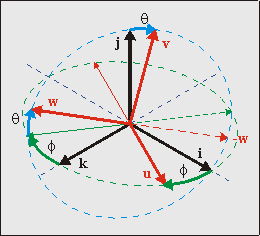
Fig 21.3: 相机朝向 {u, v, w}，处于世界空间 {i, j, k} 中，由角度 θ 和 φ 给出
到相机系统的变换大概是整件事的主要难点。至少，要不是有矩阵的话它本会如此。重写 eq 21.1，相机与世界空间之间的变换由下式给出：
| (21.2) |
正如你所料，相机空间的原点就是相机位置 acw。相机矩阵 C 由相机空间的主轴构成，分别是局部 x、y、z 轴的 u, v 和 w。这意味着相机矩阵为 C = [u v w]。
相机相对于世界空间的朝向由 3 个角度定义：pitch（绕 x 轴旋转）、yaw（绕 y 轴旋转）和 roll（绕 z 轴旋转）。它们的组合给出 C。传统上，这些旋转的方向约定为：如果沿其中某轴向下看，正角度使系统逆时针转动。不过我会反其道而行，因为这样能让很多事情更简单。此外，我只会使用两个角度：pitch 和 yaw。对于 mode 7，不可能把 roll 纳入其中。为什么？这样想：如果你侧滚了身体，地面会出现在屏幕的右边或左边，这就需要垂直的透视除法，而由于我们只能在 HBlank 时改变仿射参数，这无法实现。因此，只允许 pitch (θ) 和 yaw (φ)。我希望正的 θ 和 φ 分别使视角向下和向右，也就是说我需要以下旋转矩阵：
| (21.3a) | |
| (21.3b) |
但接下来出现了一个问题：我们先做俯仰（pitch）还是先做偏航（yaw）？这真的取决于你想要什么样的效果，_以及_你是在哪个坐标系下做旋转。实际上，由于不允许滚转（roll）的同样原因，只有一种顺序是可行的：你不能有垂直的透视。这归根结底意味着 u（相机坐标系的 x 轴）_必须_平行于地平面，即 uy 必须为零。为了做到这一点，你必须先做俯仰，再做偏航。这一点在 fig 21.3 中有所描绘。找找感觉：站起来，低下头（pitch θ>0），然后向右转（yaw φ>0）。于是完整的相机矩阵就变为：
| (21.4) |
除了正确之外，这个矩阵还有两个很好的性质。首先，列向量都是单位长度的。其次，各分量向量彼此正交。这意味着 C 是一个正交矩阵，它有一个非常好的特性：C−1 = CT。这使得世界→相机的变换成为一个相对简单的操作。
这里最后还有一件事：如果你把相机系统绕 i 旋转 180°，就会得到一个指向前方的 w 和一个指向下的 v，这两者都能减少后续计算中别扭的负号数量，代价是一个别扭的相机坐标系。你是否愿意这么做，取决于你自己。
矩阵变换及其所在的系统
我说过，要模仿 C 的旋转，你得先低头（θ），再转动身体（φ）。你也许认为反着做能得到同样的效果：先转，再低头。然而，这是不正确的。
它可能_感觉_一样，但在第二种情况下，你实际上并没有用 Rx(θ) 来引发低头。矩阵本身不是个东西，它‘活’在一个空间里。这里，Rx(θ) 和 Ry(φ) 都是用_世界_坐标系定义的，应用它们时方向遵循世界的轴。先转后低的顺序会在局部坐标系中用 Rx(θ)，那是个合法操作，但不是数学所要求的那个。
我知道这是个微妙的点，但确实有重要差别。试着用两种顺序各做一个 90° 旋转来可视化，也许会有帮助。
投影平面
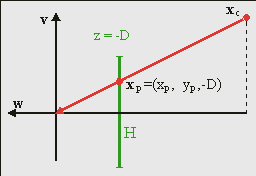
Fig 21.4: perspective projection.
为了制造深度的错觉，我们需要一个透视视图。为此，你需要一个投影中心（COP）和一个投影平面。自然，这两者都必须位于相机空间中。虽然你可以任意选择它们，但你可以把投影中心放在相机空间的原点、把投影平面放在相机前方距离 D 处，这样平面就由 xp = (xp, yp, −D) 给出。是的，那是负的 zp，因为我们是在朝负 z 方向看。投影坐标是 COP 与 xc 连线和投影平面的交点。由于 COP 在原点，xc 和 xp 之间的关系是
| (21.5) |
这里的 λ 是一个简单的缩放因子，它的值可以用多种方法确定，取决于你在推导的该点处掌握的信息。例如，由于 zp = −D（按定义），我们有 λ = −zc / D。稍后我们会看到另一个表达式。这个表达式有趣的地方在于，λ 与相机空间中的距离成正比，而这又告诉你相机位置应该被缩放_ down_（即缩小）多少，或者说缩放了多少。这很有用，因为仿射矩阵的缩放参数同样会缩小。此外，距离 D 会衰减缩放，这意味着它起到了焦距的作用。注意，当 zc = −D 时，缩放为 1，意味着处在这个距离上的物体以正常大小出现。
视口与可视体
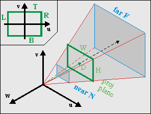
Fig 21.5: Viewing frustum in camera space. The green rectangle is the visible part of the projection plane (i.e., the screen).
在我给出到屏幕的最后一步变换之前，我得先说几句关于视口和可视体的话。可以想象，你只能看到世界的一小部分。你是通过一个叫做视口的区域来观察世界的。它是投影平面上的一个区域，通常是矩形，定义了你能看到的水平和垂直边界。具体来说，你有左边 (L)、右边 (R)、上边 (T) 和下边 (B)。在坐标轴如上定义、且原点通常位于中心的情况下（见 fig 21.5 插图），我们有 R>0>L 且 T>0>B。没错，在这个特定情形下 L 是负的，而 T 是正的！
视口的宽度和高度分别为 W = |R−L| 和 H = |B−T|。视口与投影中心一起定义了可视体（见 fig 21.5）。对于矩形视口，这将是一个棱锥。
大多数时候你还会想要在深度上设置边界，因为太近的物体会挡住其他一切（此外，除以 0 从来都不是什么好事），而非常远的物体会变得极小，几乎看不见，何必在区区几个像素上浪费这么多计算？这些深度边界叫做近平面 (N) 和远平面 (F)，它们会把可视体变成一个截头体（frustum）。这些距离的具体数值可以凭喜好而定。无论你用什么值，都要记住 z 值实际上是负的。我更倾向于让 N 和 F 取正值，这样距离的顺序为 0>−N>−F。
另一点是视场角（FOV）的概念。这是你能看到的水平角度 α，也就是说
| (21.6) |
我听说常用的 FOV 大约是 90°，那将要求 D = ½W。取 D = 128 就相当接近这个要求，而且还有它是 2 的幂的额外好处，不过那当然是个实现细节。然而，似乎 D = 256 更常见，所以我们改用这个值。
屏幕
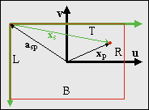
Fig 21.6: screen space vs camera space
最后一步是从投影平面到屏幕。这一步几乎微不足道，但那个“几乎”如果不小心会给你带来大麻烦。情形如 fig 21.6 所示，你正透过相机观察。轴 u 和 v 是相机系统的上轴和右轴，而绿色箭头表示屏幕空间的 x 轴和 y 轴。如果你留意过任何一个教程，你应该知道屏幕的 y 轴指向_下_。这是头号 bug 源。此外，相机空间和屏幕空间的原点也不同。由于屏幕对应于视口，屏幕在相机/投影空间中的原点是 asp = (_L, T, −D)。注意不要在这里把符号弄反，那是二号 bug 源。还要记住，由于这是在相机空间中，L 是负的而 T 是正的。考虑到垂直轴翻转以及屏幕空间原点，我们有
| (21.7) |
缩放矩阵把 y 轴的符号翻转了。如果我们把相机坐标系再旋转 180°，本可省掉这个额外的矩阵，那样 v 会指向下而 w 会指向前。但我没有这么做，所以我们只能将就。另外，由于屏幕在相机空间中的原点是 asp = (_L, T, −D)，屏幕位置为 xs = (xs, ys, 0)，换句话说 zs 始终为零。如果你要检查一切是否正常，看看视口的各个角是否给出正确的屏幕坐标即可。
理论小结
基本上就是这样了，呼。既然花了三页才到这里，我把最重要的东西重复一遍。首先，我们需要的主要方程是：
| (21.8a) | |
| (21.8b) |
其中
| xw | coordinates in world space; |
| xp | coordinates on the projection plane, xp= (xp, yp, −D); |
| xs | coordinates on the screen, xs= (xs, ys, 0); |
| acw | the location of the camera in world space; |
| asp | the location of the screen origin in camera space space, asp = (L, T, −D); |
| C | the camera matrix, as function of pitch θ and yaw φ: C = Ry(φ)· Rx(θ); |
| λ | the scaling factor. Its value can be determined by the boundary conditions. |
记住这些方程和术语，因为我以后会经常提到它们。eq 21.8a 和 eq 21.8b 之间的划分是刻意的：所有真实的信息都在 eq 21.8a 中；eq 21.8b 只是为完成变换而需要走的最后一步。在余下的文字中，我会频繁使用 eq 21.8a，除非必要，否则略去 eq 21.8b。其他值得了解的内容有：
-
世界坐标系 Sw = {i,j,k} 与相机坐标系 Sc = {u, v, w} 是右手笛卡尔坐标系。正如预期，相机矩阵 C 的列就是 Sc 的主轴：C = [u v w]；
-
视口与可视体都位于相机坐标系中，这意味着它们的边界也同样如此。也就是说：
R > 0 > L (horizontal) T > 0 > B (vertical) 0 > −N > −F (depth) -
如果我们以 GBA 屏幕尺寸为基础（W = 240，H = 160），并取 D = 256，那么可视体边界的合理取值如下，不过你也可以另选。
L = −120 R = −120 T = 80 B = −80 N = 24 F = 1024
地平线与远景
拿最基本的 mode 7 情形来说：一个透视中的地面。由于透视除法，地面远处会趋近于一条线：地平线。由于地图实际上只是一块地面，地平线确实就只是那样：一条水平线。它上方的空间通常是空的，但为了让画面不那么单调，我们会使用一个远景：一幅随相机旋转而移动的深景环境全景图。
寻找地平线
粗略地说，地平线就是 z = −∞ 所在之处。如果你在地面上有一些线，地平线就是所有平行线看似交汇的地方：灭线（vanishing line）。自然，如果你只有一块地面，那么你应该只在地平线下方绘制它，其上方的图形应该属于天空盒（skybox）。我确信你在原版马里奥赛车以及其他 mode 7 赛车游戏中见过这个。由于我们被限制在无滚转的相机，地平线永远是一条水平线：一条扫描线 ys,h。要找到它，我们只需取 eq 21.8a 的 y 分量，并重新排列项，得到
| (21.9a) |
如果我们把地平线取在无穷远处，则 λ = −∞，这会令 eq 21.9 简化为
| (21.9b) |
不过，你需要考虑是否要使用这个简化方程。在非常大的 λ 下，显示出的地图点之间的间隔如此之大，以至于你实际上在显示噪声，那会非常难看。更好的办法是利用远裁剪面 zc = −F。此时 λ = F/D，我们可以用 eq 21.9 来计算地平线，结果大致是
| (21.9c) |
正如所料，如果 F = −∞，那么 eq 21.9c 就简化为 eq 21.9b。无论你选择有限的还是无限的 zc，地平线都会位于扫描线 ys,h = T − yp,h。
使用地平线
地平线标出了地图与“远在天边”之间的界线：地面与远景的分界。地面显然应该是一个仿射背景；至于远景，我们会用一个常规背景，尽管那并非必须。我们需要一种方法，能在地平线扫描线处切换这两者。最简单的方法是通过 HBlank 中断：一旦到达地平线扫描线，就在 BG 控制寄存器中切换地面与远景的设置，并且如果你选择用 DMA 来做，可能还要启动 HDMA 来传送仿射参数。
在远景背景和地面背景之间切换，其实比听起来更棘手。例如，你可以为两者各用一个独立的背景，并根据需要启用/禁用它们。问题在于，似乎要让一个背景在硬件中完全就绪大约需要 3 条扫描线（见 forum:1303），所以那段时间你会看到垃圾内容。换句话说，这个方案不行。
另一种办法是让两者共用一个背景，并把视频模式从 0 切换到 1 或 2。这不会给你 3 行垃圾，但另一个问题出现了：远景和地面的图块与地图属性极有可能截然不同。不过这很容易解决：只需在 REG_BGxCNT 中改变屏幕（以及字符）基块即可。
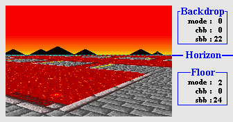
Fig 21.7: Switch video-mode and background parameters at the horizon.
Fig 21.8: peeling a panoramic view from a cylinder.
制作并放置远景
地平线正上方的空间留给远景。你大概想要一张远处城镇或树线的漂亮图片放在那里，而不是一片无聊的空天空。远景提供的是一幅全景视图，可以把它看作画在一个圆柱内壁上、再剥下来铺到普通 2D 表面上的地图（见 fig 21.8）。思路是把那个表面放到一个背景上，并让它滚动起来。
在垂直方向上，背景的底部应该与地平线相接。由于常规背景使用环绕坐标，这其实相当容易：把远景的地面高度放在一个屏幕块的底部，并把垂直偏移设为 −ys,h。
在水平方向上，有若干问题需要注意。第一个是地图的宽度，也就是圆柱的周长 P。由于我们每旋转 360° 应当滚动一整张地图的宽度，所以每单位角度正确的滚动比例就是 P/2π = R，即半径。原则上 R 是任意的，但当全景图的角度视场（αp = W/R）等于 eq 21.6 中的相机视场角 αc 时，效果最好。如果一切正确，我们应当有 αp = αc = α。
| (21.10) |
最后一个近似来自反正切的泰勒级数的头几项。有趣的是，即便 R ≈ D 看起来也还算过得去。无论如何，代入 W = 240 和 D = 256 会得到 P = 1720，这可不是个方便的地图尺寸，对吧？现在，创建一个任意大小的地图并在超出屏幕块边界时更新 VRAM 是可行的（商业游戏一直都这么做），但那样会偏离手头的主题，所以你知道吗？我们稍微破坏一下规则，直接强制 P = 1024。
“等等……你不能那么干！”嗯，实际上我能。我不_应该_那么干，但那是另一回事。关键在于，我不认为有_任何_一个 mode 7 游戏正确地滚动了远景！例如，马里奥赛车经常在它们的远景中使用以不同速度滚动的多个背景，从数学上讲这绝对荒谬，因为环视并不会改变相对的视线方向。但我想没人注意到，或者至少没人在乎。我想说的是：我们这么做并不孤单 :P
所以，我们只是自己定义一个周长值以及由此得到的远景地图宽度。在这个例子里，我要用 P = 1024，这是个很整的数，用它时一个 512 像素宽的图块地图实际上会最终成为一个具有 180° 旋转对称性的全景图。考虑到圆的划分 2π ⇔ 10000h，滚动值就是简单地 φ*P/10000h = φ/64。我们还得用 L 来偏移它，因为我想让 φ = 0 对应正北。远景的最终位置由 21.11 给出。
| (21.11) |
地面
地面的仿射参数
Eq 21.8 描述了世界↔屏幕变换，但那其中的信息使用的是 3D 向量，而 GBA 只有一个 2×2 的仿射矩阵 P 和一个 2D 位移向量 dx 可用。所以我们需要做一些改写。现在，我可以把完整的推导、2D↔3D 转换等等都给你，但有些东西告诉我你真的不想看到那些。所以，我改为给你一组需要求解的方程，并提示如何求解。
| (21.12) |
前两式其实只是 eq 21.8 的再次罗列，我列出来只是为了完整。最后一式是仿射映射下屏幕点 q 与地图点 p 之间的关系，这个式子你现在应该已经很熟悉了。现在请记住，我们的地图位于地面上，也就是说 p = (xw, zw)。二维屏幕点 q 自然与三维屏幕向量 xs 类似。你唯一需要记住的是，向 REG_BGxY 写入时，当前扫描线的最左端被当作原点，因此实际上 q = (xs, 0)，这反过来意味着 pb 和 pd 不起作用。矩阵 P 其余各元素的值，不过就是缩放后的相机 x 轴 λu 的 x 分量和 z 分量。如果你使用这些值，最终会得到一个可以用下面这句话来概括的表达式：
| (21.13) |
where
你做位移所需的一切都整齐地打包进了这一个方程，现在我们需要把它拆开，以构造算法。首先，我们可以用 dx’ 的 y 分量来计算 λ。一旦有了它，我们就能用它来计算另外两个元素，即真正的仿射偏移。仿射矩阵前面已经给出过了。
Eq 21.14 把所有关系都明确地写了出来，不过如果我偏好 eq 21.13 的简洁，希望你能原谅我。
| (21.14) |
注意，如果我们取顶部为 0 且无俯仰（T=0 且 θ=0），我们就得到了和第一个 mode 7 章节完全相同的结果；而如果我们直视下方（θ=90°），整个式子就简化成绕点 (−*L, T) 的一个简单缩放/旋转，这正是它应该有的样子。Eq 21.14 是 mode 7 的通用方程；在实现中，你常常可以做若干捷径来加速计算，不过我们稍后再谈。
距离雾效
在现实世界中，来自远处物体的光线必须穿过大气层，大气会散射光子，从而衰减光束。你最终看到的，部分是物体本身，部分是环境色，而且原始物体越远，它的贡献就越小。由于这种效应在雾天最易观察，我把这个效应叫做雾效。
雾效提供了一种距离的暗示，加入它可以增强纵深感。此外，它还能掩盖物体被载入时突然弹出画面的现象。就 GBA 而言，它可以通过在每条扫描线上使用不同的 alpha 混合来实现。
这方面的基本方程如下面的微分方程：
其中 I 是强度；k(ν) 是介质的吸收系数，它取决于光的频率 ν，也可能取决于位置；ρ 是密度，z 是距离。求解这个方程会得到随距离呈指数衰减的结果。而我指的确实是真实距离，包含平方和开方等等。
幸运的是，我们不需要用那么复杂的东西；我们真正需要的只是一种函数关系，让它在无穷远处为 0、在近处为 1。有趣的是，我们已经有了类似的东西，即作为扫描线函数的 λ（见 21.14）。这基本上是一条双曲线，你只需摆弄一下缩放因子和偏移量，就能得到看起来不错的效果。就我而言，λ*6/16 似乎就够好了。
| Fig 21.9: fog off (left) and on (right). |
Fig 21.9 展示了从相当高的高度看到的、有雾效与无雾效的截图。到地面的距离在屏幕底部相对较小，所以那些部分仍然非常清晰可见。在地平线处，地面完全被橙色雾遮挡；这其实是件好事，因为靠近地平线的线条通常本来也不怎么好看。
顺便说一句，请注意我说的是_橙色_雾。如果你在图形特效章节里留心过，就会知道 GBA 只有针对白色和黑色的渐隐模式。尽管如此，渐隐到任意颜色是完全可能的，不过我要等到实现部分再解释。在你琢磨它怎么做到的时候，我继续讲 3D 精灵(对象)。
精灵(对象)
精灵(对象)与 3D 是个奇怪的组合。就其本质而言，精灵(对象)是 2D 物体——就像贴在视口（即屏幕）上的贴纸。要让它们看起来属于 3D 世界，你必须让它们在屏幕上以这样的方式移动：看起来像是在随世界一起动，并根据距离缩放它们。再一次，这的基础是 eq 21.8，但远不止如此。
这里有四个主题必须涵盖。第一个是精灵(对象)的定位。Eq 21.8 在点/像素层面有效，而一个精灵(对象)是一个简单的矩形。虽然你可以重写精灵(对象)的像素来绕过这一点，但那在某种程度上违背了使用精灵(对象)的初衷。相反，我们会把物体上的一个点与精灵(对象)的世界坐标联系起来，并设置 OAM 的位置和矩阵来适应这一点。这基本上就是仿射对象章节中讨论过的锚定理论。
接下来是精灵(对象)剔除。一旦你有了正确的 OAM 位置，就不能原样使用它们，你必须确保只有当精灵(对象)确实可见（位于视口内）时才激活它。否则，应当禁用它。
然后是精灵(对象)动画的问题。考虑 fig 21.10 中 Toad 的赛车，它有着正确的锚定位置，但无论你从哪个角度看，它都会显示同一面。为了让它看起来像你真的能绕着物体移动，我们会使用不同的动画帧来显示不同的侧面。
最后是精灵(对象)排序。默认情况下，对象会按对象编号排序：obj 0 在 obj 1 之上，obj 1 在 obj 2 之上，依此类推。总是把一个精灵(对象)链接到同一个对象，意味着如果你从另一侧看它们，顺序就会出错，所以我们需要按距离对它们排序。
这些是要处理的主要问题。还有几个其他的，比如放置阴影，以及使用预缩放的对象来绕过 32 个仿射矩阵这一硬件限制，但一旦其他几点解决了，这些就相当容易了。我也会讨论一点我称之为对象重归一化的东西：对对象施加一个额外的缩放，使它们不会长得超出自己的裁剪矩形。
| Fig 21.10：锚定的精灵(对象)。位置是对的，但无论你怎么转，Toad 总是背对着你。也许是那顶帽子。 | ||
定位与锚定
精灵(对象)的定位包含两个层面。其一是把精灵(对象)的世界坐标 xw 变换到屏幕上的位置 xs。在此之后，你需要利用该点来确定最合适的 OAM 坐标。
第一部分不过是 eq 21.8 的又一次应用，只是方向相反。通常，求一个三维矩阵的逆是一件相当无趣的事，但相机矩阵恰好是一个正交归一矩阵。所谓的正交归一矩阵，是指其各组成向量彼此正交（相互垂直）且长度均为 1 的矩阵。正交归一矩阵的一个妙处在于，它的逆矩阵恰好就是它的转置：C−1 = CT。由此我们得到下面这些式子：
| (21.15) |
这里唯一真正未知的量就是 λ，我们可以利用 zp = −D 这一事实来把它算出来。现在设相机与精灵(对象)之间的距离为 r = xw − acw；利用 C = [u v w]，可得
Fig 21.11: a 32×32 sprite, with the anchor p0 relative to the top-left.
在那之后，求 xw 的屏幕位置就微不足道了。现在来看锚定部分。把对象想象成要钉到板子（即屏幕）上的纸片，而不是贴纸。图钉穿过物体的某一点，那一点就固定在板子上。那个点就是锚点。对于仿射对象，这并不像那么简单，因为我们必须指定 OAM 坐标而非锚点坐标，所以这里有点数学，即如何用纹理锚点 p0 和屏幕锚点 q0 来表达 OAM 坐标 x。这个理论在仿射对象章节讲过，并导出了 eq 21.16。那里的其他量是对象的大小，s = (w, h)，以及 m，对普通仿射对象为 ½，对双倍尺寸仿射对象为 1。
| (21.16) |
现在的任务，是把我们掌握的数据联系到这个方程上。屏幕锚点 q0 就是 xs。纹理锚点 p0 是你想保持固定的纹理空间中的像素，可以由你选择。对于赛车精灵(对象)，把它放在赛车底部附近是有意义的，如 fig 21.11 所示。‘向量’ s 由对象的大小给出，此例中为 (32, 32)，而且因为我在这里总是选择双倍尺寸对象，所以 m=1。P 矩阵就是按 λ 缩放（除非你还想加入其他东西）。剩下的就只是把数值填进去了。
精灵(对象)剔除
Fig 21.12：带精灵(对象) a、b 和 c 的可视体。b 和 c 可见，a 不可见。
剔除（culling）是移除任何不可见的世界部分的过程。在这里，它意味着移除那些不在可视体内的精灵(对象)。这是件非常明智的事，对精灵(对象)来说更有意义，因为如果不这么做，OAM 将无法应付 xs 可能的取值范围，从而造成严重混乱。
首先要做的是一次距离检查：如果对象太远，就不该被看到。做一个近平面距离检查也是个好主意。然后你必须测试它与视口是否相交。每个精灵(对象)在投影平面上由一个矩形界定，如果这个矩形完全在视口之外，该对象就不应被渲染。
Fig 21.12 展示了几个这样的例子。对象 a 和 b 已经被投影到投影平面上。对象 a 在视口之外，应当被禁用。对象 b 部分可见，应当被渲染。对象 c 尚未投影，但落在近平面和远平面之间，至少应当被测试（然后发现完全可见）。
实际上，在 3D 相机空间中做可视体检查，比在 2D 投影空间中更容易。对象矩形可以很容易地从 xc = CT·r、锚点 p0 和大小 s 算出来。视口需要按 λ 缩放，这给了我们下面这些要做的测试：
| Object position | Visible if | |
|---|---|---|
| 深度 | ||
| 水平 | ||
| 垂直 |
如果所有这些条件都为真，那么该对象就应该是可见的。现在，请注意测试的_符号_，特别是在垂直检查中。
动画
Fig 21.13: Finding the view-angle ψ.
准确地说，是旋转动画。正如我们在 fig 21.10 中看到的，无论你从哪个角度看，精灵(对象)都会显示同一面。这很合逻辑，因为精灵(对象)并不是一个真正的 3D 实体。为了让它_看起来_更 3D 一点，我们需要有从不同的相机角度拍摄的精灵(对象)图像，然后根据我们所观察的角度，挑选需要的那一帧。
首先，找到正确的视角 ψ。Fig 21.13 展示了一般情形。你需要的角度是相机与物体之间向量（红色虚线）和物体全局朝向之间的夹角。图中可以看到相机和物体的全局方向角：分别为 φc 和 φo。还标出了相机方向与精灵(对象)之间的夹角 α。仔细观察这些角度，你会看到 φc + α + ψ = φo。换句话说：
| (21.17) |
arctan() 里面的负号是否必要，取决于你如何定义所有项。Eq 21.17 是完全正确的版本，但如果你不喜欢反正切，你会很高兴地知道，在大多数情况下 α 项可以安全地忽略，而没人会发现。
现在有了视角，我们需要以某种方式使用它。假设你有 N 帧旋转动画，把圆分成相等的部分，每部分宽 2π/N 弧度。为了得到 ψ 所在的切片，我们只需除以每个切片的角度：i = ψ/(2π/N) = N·ψ/(2π)。如果你用 2 的幂来划分圆（我们正是这么做的），这部分就简单得可笑：只需一个右移。一旦有了帧索引，剩下的应该就很简单了。大体如此。不过有一些错综复杂之处会把它搅浑，但这些取决于具体实现，留到以后再说。
精灵(对象)排序
暂且不考虑优先级位，屏幕上对象的顺序由对象编号决定：编号小的在编号大的前面。在 2D 游戏中，你常常可以忽略这一点，因为精灵(对象)会在同一层上；在 3D 游戏中，你真的、真的不能忽略。以 fig 21.14 为例。这里的四个 thwomp 有特定的对象顺序。在左图中，最近的 thwomp 恰好编号最小，视觉顺序是正确的。然而，从另一侧看时（中图），情况略有不同。有两个关于深度的视觉线索：缩放（越远越小）和遮挡（较远的物体被较近的物体遮住）。在中图中，这两点相互冲突，因为最近的物体有_最大_的编号，使整幅图有点令人不安。在右图中，一切又看起来正常了，因为采取了措施来确保正确的对象顺序。
| Fig 21.14。未排序的对象从一个角度看还行（左），但从另一角度看就不行（中）。你需要对它们排序才能得到正确的顺序（右）。 | ||
需要做的事情，是按深度对 OAM 中的对象排序；这有点像对象的 Z-buffer。精灵(对象)的深度就是简单的 zc，我们需要按 zc 升序将精灵(对象)的属性填入 OAM。为稳妥起见，给隐藏对象赋予尽可能大的深度值，或者干脆把它们排除在排序过程之外，可能是个好主意。
排序对象有很多可能的策略。我自己目前的选择是不直接排序精灵(对象)或对象，而是创建一个索引表，指示精灵(对象)的属性应按什么顺序进入 OAM。其伪代码如下。至于你用哪种算法给键排序，此刻并不重要，只要它能完成任务。我相信可以找到更快的方法，但代价是更多的代码，而我想让事情相对简单。
// Pseudo code for sorting sprites for OAM
void spr_sort()
{
int ids[N]; // Index table
int keys[N]; // Sort keys
// Create initial index and sort-key table
for ii=0; ii<N; ii++)
{
ids[ii]= ii;
keys[ii]= is_visible(sprite[ii]) ? sprite[ii].depth : DEPTH_MAX;
}
// Sort keys (i.e., fill ids)
id_sort(ids, keys);
// Fill OAM according to
for(ii=0; ii<N; ii++)
oam_mem[ii]= sprite[ids[ii]].obj;
}
重归一化
如果你以前从没听说过这个术语，我一点都不会惊讶。归一化（Normalization）是指把一个量缩放成一个便于使用的值——通常是 1。你已经按因子 λ 缩放了精灵(对象)，但那还不够。在大多数情况下，你还必须进一步缩放它，即_重归一化_（renormalize）它。原因如下。
按定义，当 zc = −D 时，缩放因子 λ 为 1。现在考虑当你看一个更近的物体时会发生什么，比如 zc = −½D。此时 λ 为 ½，该对象会被放大两倍。换句话说，它已经填满了双倍尺寸的画布。而且还可能得到更高的缩放：取建议值 D = 256 和 N = 24，你最终可能得到 10 倍的缩放！这可不行。
可以通过把近平面移得更远来绕过这个问题。然而，那样的话，当物体还相当远的时候你就会看到它们消失，这看起来和看到它们被裁剪一样奇怪。更好的解决办法是给对象一个额外的缩放因子。在 m7_ex 中，我把对象额外缩放了 ¼，这样一个 32x32 的精灵(对象)实际上只有 8x8 的‘世界’像素大小。这似乎运作得相当好。
这个重归一化意味着你实际上是在使用_两个独立_的缩放因子：一个用于坐标变换，一个用于视觉效果。在定位和剔除精灵(对象)时，你需要使用的是_视觉_缩放，而不是变换缩放；后者的影响在你找到锚点的屏幕位置后就停止了。
这个过程可能有官方术语，但我不知道是什么。我对重归一化的了解来自物理学（几年前几位荷兰教授因此获得了诺贝尔奖），而且它似乎很贴切。如果你知道官方术语，我很想听听。
| Fig 21.15。对象重归一化。左：正常（呃，不行！）。中：×½（嗯，不行）。右：×¼（对，就是这个）。 | ||
至此，我们到达了理论的终点。现在来真正地实现这一切。
实现
设计考量
我这里的目标不只是随便给出几个能让 mode 7 跑起来的函数，还要提供在必要时易于修改的东西。m7_ex 演示的代码分布在 4 个文件中：演示本身特有的部分在 m7_ex.c；mode 7 特有的部分在 mode7.h、mode7.c 和 mode7.iwram.c。是的，还有 iwram 函数；其中一些东西计算量很大，我想一开始就让它们尽可能快。我还会从优先级演示借用对象排序器。
这里有三个主要关注的领域：相机、背景相关和精灵(对象)。对每一项，我们都会用一个结构体（struct）和/或数组来保存其数据，这样很有面向对象（OOP）的风格。还会有一个管理器结构体来统管 mode 7 整体。当然，我们需要为视体、焦距和另外几项定义常量。然后，少量函数会操作这些项，给出我们需要的东西。
常量
常量不太多。大多与视口有关，其余与焦距和重归一化有关。
#define M7_D 256 //!< Focal length
#define M7_D_SHIFT 8 //!< Focal shift
#define M7O_NORM 2 //!< Object renormalization shift (by /4)
// View frustum limits
#define M7_LEFT (-120) //!< Viewport left
#define M7_RIGHT 120 //!< Viewport right
#define M7_TOP 80 //!< Viewport top (y-axis up)
#define M7_BOTTOM (-80) //!< Viewport bottom (y-axis up!)
#define M7_NEAR 24 //!< Near plane (objects)
#define M7_FAR 512 //!< Far plane (objects)
#define M7_FAR_BG 768 //!< Far plane (floor)
结构体与变量
Mode 7 本该是用类的绝佳场所，但由于我用的是 C 而非 C++，我坚持使用结构体。除了我在仿射背景页面上给出的 BG_AFFINE 结构体，你还需要一个用于相机、一个用于 mode 7 对象的结构体。我还在使用一个 mode 7 容器结构体来跟踪构成 mode 7 功能的所有部分，这样你就不会有一堆松散的全局变量到处散落。
你可以自由地为自己创建这些结构体，但我将使用的那些如下。如果你一直留心，这些成员大多应该很熟悉。哦，POINT 和 VECTOR 结构体当然是 2D 和 3D 向量。
//! 3D sprite struct
typedef struct M7_SPRITE
{
VECTOR pos; //!< World position.
POINT anchor; //!< Sprite anchor.
OBJ_ATTR obj; //!< Object attributes.
s16 phi; //!< Azimuth angle.
u8 obj_id; //!< Object index.
u8 aff_id; //!< OBJ_AFFINE index.
TILE *tiles; //!< Gfx pointer.
VECTOR pos2; //!< Position in cam space (subject to change)
} M7_SPRITE;
//! 3D camera struct
typedef struct M7_CAM
{
VECTOR pos; //!< World position.
int theta; //!< Polar angle.
int phi; //!< Azimuth angle.
VECTOR u; //!< local x-axis (right)
VECTOR v; //!< local y-axis (up)
VECTOR w; //!< local z-axis (back)
} M7_CAM;
//! One struct to bind them all
typedef struct M7_LEVEL
{
M7_CAM *camera; //!< Camera variables
BG_AFFINE *bgaff; //!< Affine parameter array
M7_SPRITE *sprites; //!< 3D sprites
int horizon; //!< Horizon scanline (sorta)
u16 bgcnt_sky; //!< BGxCNT for backdrop
u16 bgcnt_floor; //!< BGxCNT for floor
} M7_LEVEL;
关于这些结构体，我没什么更多要说的了。M7_SPRITE 把其对象的属性作为成员本身，而不是索引或指向任何缓冲区的指针。这背后的理由本质上是“为什么不呢”。因为我无论如何都要对对象排序，使用额外的缓冲区可能不值得，所以我选择了这种方式。我还在跟踪相机空间中的位置（因为我不只一次需要它），以及一个指向图形的 TILE 指针。其原因在实现动画时会变得明显。
M7_LEVEL 持有指向 mode 7 主要变量（相机、仿射数组和精灵(对象)）的指针，以及从远景切换到地面所需的地平线扫描线，还有两个保存 bg 控制寄存器数据的变量，因为这对远景和地面是不同的。
现在我们需要用这些结构体定义这四个变量。由于它们在技术上是演示本身的一部分，我把它们放在 m7_ex.c 而非 mode 7 主代码中，不过那段代码确实需要一个实际的 m7_level 变量供 HBlank 中断使用。SPR_COUNT 是精灵(对象)的数量，这_绝对_是演示特有的。m7_bgaffs 中有 161 个条目而非仅仅 160 个，原因与DMA 演示相同：HBlank 设置的是下一行而非当前行，而拥有它比用 if/else 块更好（也更快）。
M7_CAM m7_cam;
BG_AFFINE m7_bgaffs[SCREEN_HEIGHT+1];
M7_SPRITE m7_sprites[SPR_COUNT];
M7_LEVEL m7_level;
结构体成员的类型与顺序
我通常的建议是对数据类型使用 int，但对结构体来说这未必总是最好的。局部变量可能不占用内存，但结构体要。而且当你有结构体数组时，字长成员带来的额外空间会迅速累积。所以这种情况下，尽管使用非 int 类型。
话虽如此，当要使用这些成员时，把它的数据复制到一个局部的 32 位变量中，而不是对所有计算都使用字节或半字成员，可能是值得的。
另外，这_非常_重要：如果你不注意成员的顺序，你省不下任何空间。一个 int 仍然需要字对齐，即使它紧接在一个字节成员之后。编译器可能会在字节和半字成员之后添加填充，以确保下一个成员正确对齐。最好以填充尽可能少的方式来排列成员顺序。
背景函数
下面是我的四个主要背景函数：
void m7_prep_horizon(M7_LEVEL *level)：计算地平线扫描线。IWRAM_CODE void m7_prep_affines(M7_LEVEL *level)：根据相机位置和朝向，计算地面的仿射参数。void m7_update_sky(const M7_LEVEL *level)：放置远景。IWRAM_CODE void m7_hbl_floor()：HBlank 中断例程。必要时切换到模式 2，并复制仿射参数、产生雾效。
m7_prep_horizon() 和 m7_update_sky() 分别是 eq 21.9 和 eq 21.17 的简单实现，所以这两我可以简略些。
//! Calculate the horizon scanline
void m7_prep_horizon(M7_LEVEL *level)
{
int horz;
M7_CAM *cam= level->camera;
if(cam->v.y != 0)
{
horz= M7_FAR_BG*cam->w.y - cam->pos.y;
horz= M7_TOP - Div(horz*M7_D, M7_FAR_BG*cam->v.y);
}
else // looking straight down (w.y > 0) means horizon at -inf scanline
horz= cam->w.y > 0 ? INT_MIN : INT_MAX;
level->horizon= horz;
}
//! Update sky-bg position
void m7_update_sky(const M7_LEVEL *level)
{
REG_BG2HOFS= (level->camera->phi>>6)+M7_LEFT;
REG_BG2VOFS= -clamp(level->horizon, 0, 228)-1;
}
地平线计算利用了裁剪远平面，不过这并非严格必要。如果你想要地平线在无穷远处，去掉减去相机高度的部分，并用 M7_FAR_BG = 1。注意对 vy = 0 的检查。由于 vy = cos(θ)，这在直视上方或直视下方时为真。区分很重要，因为一种情况看到天空（无仿射背景），另一种情况只看到地面（无远景）。严格来说，这些应该是 ±infinity，但由于这是定点数，INT_MIN/MAX 将不得不顶替。
至于远景的放置：我在这里走了_很多_捷径。一个数学上正确的远景会使用宽 1720 像素的背景地图。那可以做到，但多半就是烦人。相反，我用了一个 512x256 的常规背景，并在角度→滚动偏移转换中使用 P = 1024。这意味着地图在一个 360° 旋转中会出现两次，而且 dx 就是 φ/64。是的，地面和远景的视场会略微不同步，但只有你知道该看哪里时才会注意到，所以没关系。
严格来说，垂直偏移应该是 bgHeight − horizon，但由于环绕，bg 高度可以被忽略。我把地平线钳制到视口大小的原因在于，地平线扫描线会变得非常大——里面的 tan(θ) 在向上看时会趋于无穷，记住了吗？如果不钳制它，你在向上平移时会把整个远景地图滚动好几遍，那看起来糟透了。
准备仿射参数表
仿射参数的计算发生在 m7_prep_affines() 中。你可以尝试在 HBlank isr 中做这件事，但由于它需要一个除法，会花太长时间。而且，在一处做更高效，因为你只需设置一次变量。这个例程执行 eq 21.14 的计算。它对每条扫描线都要做相当多的计算，包括一次除法，所以你可以预料它会相当昂贵；这也是我从一开始就把它放进 IWRAM 的原因。
现在，你不必为每条扫描线都做计算：只算地平线以下的部分就行。至于实现 eq 21.14 本身：事实证明，如果你把相机矩阵重新拆开，使用 θ 和 φ 的正弦和余弦来算，会比使用那九个矩阵元素好得多。下面这段会解释如何做，但你可以跳过它直接看代码。
记住相机矩阵是 C = Ry(φ)·Rx(θ)；而 λ 和 dx 是通过 eq 21.13 算出的：dx′ = acw + λ·C·b。你可以把 C 拆开，再与 b 结合，形成 b′ = Rx(θ)·b。这个新向量完全处理了俯仰——就好像我们只绕垂直轴旋转一样，也就是上一章讨论的情形。有了这个预旋转，代码变得更简单、更快。
IWRAM_CODE void m7_prep_affines(M7_LEVEL *level)
{
if(level->horizon >= SCREEN_HEIGHT)
return;
int ii, ii0= (level->horizon>=0 ? level->horizon : 0);
M7_CAM *cam= level->camera;
FIXED xc= cam->pos.x, yc= cam->pos.y, zc=cam->pos.z;
BG_AFFINE *bga= &level->bgaff[ii0];
FIXED yb, zb; // b' = Rx(theta) * (L, ys, -D)
FIXED cf, sf, ct, st; // sines and cosines
FIXED lam, lcf, lsf; // scale and scaled (co)sine(phi)
cf= cam->u.x; sf= cam->u.z;
ct= cam->v.y; st= cam->w.y;
for(ii= ii0; ii<SCREEN_HEIGHT; ii++)
{
yb= (ii-M7_TOP)*ct + M7_D*st;
lam= DivSafe( yc<<12, yb); // .12f
lcf= lam*cf>>8; // .12f
lsf= lam*sf>>8; // .12f
bga->pa= lcf>>4; // .8f
bga->pc= lsf>>4; // .8f
// lambda·Rx·b
zb= (ii-M7_TOP)*st - M7_D*ct; // .8f
bga->dx= xc + (lcf>>4)*M7_LEFT - (lsf*zb>>12); // .8f
bga->dy= zc + (lsf>>4)*M7_LEFT + (lcf*zb>>12); // .8f
// hack that I need for fog. pb and pd are unused anyway
bga->pb= lam;
bga++;
}
level->bgaff[SCREEN_HEIGHT]= level->bgaff[0];
}
我们先取得要开始计算的扫描线（可能什么都没有），并定义_很多_临时变量。并非所有临时变量都必要，但它们让代码更易读。撇开命名不说，循环内的代码与第一个 mode 7 演示中的 hbl_mode7_c 非常相似，只是我们在计算 λ 时用了旋转后的 ys 值，而在计算偏移时用了旋转后的 zs（= −D）值。就这样。
计算后面的注释标出了结果的定点位数，本例中可能是 .8f 或 .12f。现在听好了：缩放后的 φ 的（余）弦 lcf 和 lsf 使用 12 位或更高的精度，这非常重要。我试过 8 位，那可不好看——近距离时位移全都错了。其次，注意位移中乘法和移位的顺序；这些顺序保持原样也非常重要。特别是涉及 L 的那一个：与 M7_LEFT 的乘法必须发生在移位之后，相信我。
最后一个有趣的点是循环之后的那一行，它把扫描线 0 的参数复制到数组末尾，以补偿 HBlank 中断的 obiwan 错误。
这个函数大概是用 C 能做到的最快了，而且编译器干得相当漂亮，所以转到手工汇编也没多少可赚的。这并不意味它仍然不花相当多的时间。仅一次除法就要花费大约 100 到 400 个周期（BIOS 除法的周期数大约是 90 + 13/有效位）。每条扫描线一次除法，累积起来相当可观。应对它的最佳策略是：如果没必要就_不要做_。如果你用固定的俯仰角，可以预计算所有除法并直接查表。如果你必须要可变的俯仰角，也可以走三角函数路线。回头看 fig 21.14。如果 β 是 (0, yp, −D) 和 (0, 0, −D) 之间的夹角，那么 tan(β) = yp/D。通过大量三角学，你可以把 λ 的公式改写成
| (21.18) |
你可以通过一个 160 项的 arctan 查找表（LUT）得到 β，每个扫描线一项（嘿，你甚至可以把它放进 pd 里！），然后再用一个 1/sin 的 LUT。不过你必须小心使用足够大的 LUT。由于 LUT 的参数是整数，β 会被截断，你会因此损失_很多_精度，尤其是在靠近地平线时。我还没真正试过三角函数路线，但我在 Excel 里做过一些基本测试，表明用一个 512/圆的 1/sin LUT，你在地平线附近的 λ 误差会远超 10%，而在其他地方误差约为 1%。鉴于此，我建议至少用 1024/圆。或者，在 LUT 项之间插值，你可以用 libtonc 的 lu_lerp16() 和 lu_lerp32() 函数。
除了走三角路线，你可能还能用若干种方式加速除法。但在你跑去优化之前，先问问自己是否真的需要它。毕竟，过早优化是万恶之源。
仿射计算的加速
最近试了三种优化。第一，ARM/IWRAM，把耗时降到了 23k−58k 周期。第二，在与 sgeos 讨论中浮现的一点重构：相机向量可以归约为更小的一组变量，节省 10−20%。第三，三角路线，能把整体降到 10−20k，甚至最多 7k−14k，取决于你是用大 LUT 得到 cos(β) 和 1/sin(θ+β)，还是用小 LUT 加线性插值。一旦你把数学、移位和符号理清，它就像魔法一样管用。
Mode 7 的 HBlank 中断例程
为了简单起见，VDraw 期间几乎一切要发生的事都放在一个叫做 m7_hbl_floor() 的 HBlank isr 里。这个演示的早期版本使用了一套 VCount/HBlank 中断系统，但结果证明那比它的价值更麻烦。这也是一个 IWRAM 例程，因为它真的需要尽可能快。这个中断服务例程做以下事情：
- 检查 floor 范围的 vcount。如果这条扫描线不属于地面，返回。
- 检查地平线的 vcount。到达地平线扫描线时，视频模式应改变，
REG_BG2CNT应设为地面的设置。 - 复制仿射参数到
REG_BG_AFFINE[2]。把_下一条_扫描线的参数复制到REG_BG_AFFINE[2]，因为我们已经越过了当前扫描线。 - 雾效。这里渐隐到橙色。
// from tonc_core.h
//! Range check; true if xmin<=x<xmax
#define IN_RANGE(x, min, max) ( (x) >= (min) && (x) < (max) )
IWRAM_CODE void m7_hbl_floor()
{
int vc= REG_VCOUNT;
int horz= m7_level.horizon;
// (1) Not in floor range: quit
if(!IN_RANGE(vc, horz, SCREEN_HEIGHT) )
return;
// (2) Horizon: switch to mode 1; set-up bg control for floor
if(vc == horz)
{
BF_SET(REG_DISPCNT, DCNT_MODE1, DCNT_MODE);
REG_BG2CNT= m7_level.bgcnt_floor;
}
// (3) Looking at floor: copy affine params
BG_AFFINE *bga= &m7_level.bgaff[vc+1];
REG_BG_AFFINE[2] = *bga;
// (4) A distance fogging with high marks for hack-value
u32 ey= bga->pb*6>>12;
if(ey>16)
ey= 16;
REG_BLDALPHA= BLDA_BUILD(16-ey, ey);
}
第 (3) 和第 (4) 点可以从多一点解释中受益。正如现在已经说过好几次，任何扫描线 vc 的 isr 都应该设置_下一条_扫描线的参数，这就是为什么我们从 level.bgaff[vc+1] 而不是 [vc] 复制。扫描线零使用来自 vc = 160 的那一组，这没问题，因为我们已经把零的数据复制到了数组的最后一个元素。像往常一样，结构体复制 ftw。
对于雾效，我使用 pb，它在 m7_prep_affines() 中填入 λ 正是为此。缩放后的 λ 并非雾效最精确的模型，但效果看起来足够好。由于混合寄存器上限为 16，我需要确保它在更高值时不会绕回。
这_仍然_留下了一个问题：我到底在和什么混合，因为橙色并不在 GBA 的渐隐 repertoire 里。至少，不是_直接_在。不过，与远景混合是相当可能的，而远景只显示 bg-color 0。这个颜色可以是任意颜色，包括橙色。
精灵(对象)与对象
精灵(对象)与对象的处理分布在以下三个函数中：
void update_sprites()：主精灵(对象)处理器，调用其他函数来做定位、排序和动画。IWRAM_CODE void m7_prep_sprite(M7_LEVEL *level, M7_SPRITE *spr)：计算精灵(对象)正确的位置和缩放。void kart_animate(M7_SPRITE *spr, const M7_CAM *cam)：为绕赛车旋转选择正确的帧。
只有 m7_prep_sprite() 真正属于 mode 7 函数；其他的很可能因你心目中的每个 mode 7 游戏而异。主精灵(对象)处理器 update_sprites() 相当简单：它需要对每个精灵(对象)调用 m7_prep_sprite() 并创建精灵(对象)的排序键，对所有精灵(对象)排序，然后把排好序的属性复制到 OAM。它还会为每个赛车精灵(对象)调用 kart_animate() 来做动画；如果我对 thwomp 或其他精灵(对象)也有动画，它们大概也会放到这里。
void update_sprites()
{
int ii;
M7_SPRITE *spr= m7_level.sprites;
for(ii=0; ii<SPR_COUNT; ii++)
{
m7_prep_sprite(&m7_level, &spr[ii]);
// Create sort key
if(BF_GET2(spr[ii].obj.attr0, ATTR0_MODE) != ATTR0_HIDE)
sort_keys[ii]= spr[ii].pos2.z;
else
sort_keys[ii]= INT_MAX;
}
// Sort the sprites
id_sort_shell(sort_keys, sort_ids, SPR_COUNT);
// Animate karts
for(ii=0; ii<8; ii++)
kart_animate(&spr[ii], m7_level.camera);
// Update real OAM
for(ii=0; ii<SPR_COUNT; ii++)
obj_copy(&oam_mem[ii], &spr[sort_ids[ii]].obj, 1);
}
大部分代码与排序精灵(对象)有关，这在理论中已经描述过了。精灵(对象)的 pos2 成员由 m7_prep_sprite() 设置，以包含其在相机空间中的位置。排序例程 id_sort_shell() 就是优先级章节中描述的索引表排序器。
如果我想要更高级的动画或精灵(对象)功能，它们也会放在这里。但我没有，所以我也没放。
精灵(对象)定位与缩放
m7_prep_sprite() 函数计算精灵(对象)正确的屏幕位置，用恰当的（重归一化后的）缩放设置仿射矩阵，并在它落在视体之外时隐藏它。
第一步是把精灵(对象)的世界位置转换成相机空间中的向量，使用 eq 21.15 的第一部分：xc = CT·r，其中 r 是精灵(对象)相对于相机的位置：r = xw−acw。这被放进变量 vc 中，但 y 和 z 的符号被交换了！这让后续计算稍微容易些。这个向量也被存进 spr->pos2，用于别处的排序。
第二步是检查精灵(对象)是否真的可见，使用来自 table 21.1 的条件，只有一个例外：现在的检查使用的是精灵(对象)的_重归一化_矩形。漏掉那部分可能会在某些朝向下产生瑕疵。为了计算精灵(对象)矩形，我用了对象矩形的大小。如果你再定义一个指示对象帧内可见像素的精灵(对象)矩形，可以得到更紧的贴合，但那在这里可能有点过头了。
注意，从边界检查往后的大部分代码都放在一个 do-while(0) 循环里。这种模式有点像穷人的 try/catch 块——我_本可以_在这里用 goto，但由于它们被认为有害，我拒绝了。无论如何，一个越界的‘异常’在这里意味着该精灵(对象)应当被隐藏，这发生在第 (5) 步。
如果我们通过了边界检查，就需要设置仿射矩阵，并通过 eq 21.16 的锚定方程计算对象的位置。
//! Setup an object's attr/affine with the right attributes
/*! \param level Mode 7 level data
* \param spr 3D sprite to calculate for
*/
IWRAM_CODE void m7_prep_sprite(M7_LEVEL *level, M7_SPRITE *spr)
{
M7_CAM *cam= level->camera;
VECTOR vr, vc; // Difference and inverted-cam vector
int sx, sy; // Object size
RECT rect; // Object rectangle
// (1) Convert to camera frame
vec_sub(&vr, &spr->pos, &cam->pos);
vc.x= vec_dot(&vr, &cam->u);
vc.y= -vec_dot(&vr, &cam->v);
vc.z= -vec_dot(&vr, &cam->w);
spr->pos2= vc;
OBJ_ATTR *obj= &spr->obj;
sx= obj_get_width(obj);
sy= obj_get_height(obj);
// --- Check with viewbox ---
do
{
// (2a) check distance
if(M7_NEAR*256 > vc.z || vc.z > M7_FAR*256)
break;
// (2b) check horizontal
rect.l= vc.x - spr->anchor.x*(256>>M7O_NORM);
rect.r= rect.l + sx*(256>>M7O_NORM);
if(M7_LEFT*vc.z > rect.r*M7_D || rect.l*M7_D > M7_RIGHT*vc.z)
break;
// (2c) check vertical
rect.t= vc.y - spr->anchor.y*(256>>M7O_NORM);
rect.b= rect.t + sy*(256>>M7O_NORM);
if(-M7_TOP*vc.z > rect.b*M7_D || rect.t*M7_D > -M7_BOTTOM*vc.z)
break;
// (3) Set-up affine matrix
OBJ_AFFINE *oa= &obj_aff_mem[spr->aff_id];
oa->pa= oa->pd= vc.z>>(M7_D_SHIFT-M7O_NORM); // normalized lambda
oa->pb= oa->pb= 0;
FIXED scale= DivSafe(M7_D<<16, vc.z); // (.16 / .8) = .8
// (4) anchoring
// Base anchoring equation:
// x = q0 - s - A(p0 - s/2)
// In this case A = 1/lam; and q0 = xc/lam
// -> x = (xc - p0 + s/2)/lam - s + screen/2
int xscr, yscr;
xscr = spr->anchor.x*256 - sx*128; // .8
xscr = (vc.x - (xscr>>M7O_NORM))*scale>>16; // .0
xscr += -sx - M7_LEFT;
yscr = spr->anchor.y*256 - sy*128; // .8
yscr = (vc.y - (yscr>>M7O_NORM))*scale>>16; // .0
yscr += -sy + M7_TOP;
obj_unhide(obj, ATTR0_AFF_DBL);
obj_set_pos(obj, xscr, yscr);
return;
}
while(0);
// (5) If we're here, we have an invisible sprite
obj_hide(obj);
}
赛车动画
围绕一个精灵(对象)做动画的基本理论很简单，即 eq 21.17：视角 ψ 是全局精灵(对象)角 φo、相机角 φc 和相机空间中到精灵(对象)的角 α 之间的差：ψ = φo−φc−α。这个角度转换成要使用的动画帧，就完成了。
理论上如此。
实践中有不少陷阱，尤其是 SMK 的做法。首先，看 fig 21.16。这 12 帧是超级马里奥赛车给 Toad 用的。第一个复杂之处是，这只有旋转的右半边；左半边通过镜像实现。那足够简单：只要把视角 pa 的符号取反即可。
实践中有不少陷阱，尤其是 SMK 的做法。首先，看 fig 21.16。这 12 帧是超级马里奥赛车给 Toad 用的。第一个复杂之处是，这只有旋转的右半边；左半边通过镜像实现。那足够简单：只要把视角 pa 的符号取反即可。
第二个问题是图块的数量。半圈 12 帧，意味着整圈 24 帧（嗯，实际上 22 帧，因为我们不需要重复正面和背面帧）。每帧 4x4=16 个图块，仅 Toad 就给出 384 个图块（而且这只是旋转动画！）。乘以 8 个完整角色集合，你就远远超出 VRAM 了。这意味着你不能一次性把所有帧载入 VRAM，再用对象的图块索引来做动画：你必须动态载入需要的帧。这就是为什么精灵(对象)结构体有一个 tiles 成员，指向 ROM 中完整的精灵(对象)表。
第三个复杂之处是，帧并不是均匀分布在圆上的。如果仔细看，前 8 帧对应 0° 到 90° 的角度，剩下 4 帧对应 90°−180°。背后的原因是，大多数时候你是从背面看赛车，所以给那些角度更多帧是划算的。现在，在理论中我们可以很好地计算动画帧，即 N·ψ/216。然而，那依赖于有 N 个相等的切片，而我们已经没有了。还是有的吗？
|
Fig 21.16：Toad 不同角度的帧。 |
Fig 21.17：用 ψ 做 16 元素 LUT 条目，而非 12 个不等分区。 |
const u8 cKartFrames[32]=
{
0, 1, 2, 3, 4, 5, 6, 7, 7, 8, 8, 9, 9, 10, 10, 11,
11, 10, 10, 9, 9, 8, 8, 7, 7, 6, 5, 4, 3, 2, 1, 0,
};
//! Animate kart sprite
void kart_animate(M7_SPRITE *spr, const M7_CAM *cam)
{
OBJ_ATTR *obj= &spr->obj;
if(BF_GET2(obj->attr0,ATTR0_MODE) == ATTR0_HIDE)
return;
TILE *dst= &tile_mem[4][BF_GET(obj->attr2, ATTR2_ID)];
s16 psi= spr->phi - cam->phi;
// Extra arctan angle for correctness
if(g_state & STATE_OBJ_VIEW_ATAN)
psi -= ArcTan2(spr->pos2.z>>8, spr->pos2.x>>8);
memcpy32(dst, &spr->tiles[cKartFrames[(psi>>11)&31]*16], 16*8);
OBJ_AFFINE *oa= &obj_aff_mem[spr->aff_id];
if(psi < 0)
oa->pa= -oa->pa;
}
嗯，不，我们不再有相等的切片了。但我们可以用某种映射_重新制造_相等的切片。Fig 21.17 展示了原理如何运作。图中共有 12 个主分区（内圆），其中 0、1、10、11 覆盖的角度空间比 2−9 更大。不过，我们也可以把圆分成 16 份（外圆），并对多个条目使用同一帧。例如，主序列的切片-0 现在由新序列的切片-0 和切片-1 覆盖。虽然可以用 if/else 块来做这个映射，但对所有人来说，用个 LUT 更轻松。这实际上还解决了我之前没提到的另外两个问题，即镜像需要对正常序列做某种反转，以及切片实际上必须偏移半个切片，这样当你正好看正前或正后方时不会出现切片切换。一个 LUT 一举解决了所有这些问题。
上面的片段展示了赛车的角-LUT 和动画例程。LUT 有 32 个条目，前 7 个和后 7 个使用单块，其余成对重复。还要注意 LUT 是对称的，这是镜像所必需的。
收尾：主循环及其他杂项
这个例程本身并不算漂亮，但它把活干完了。它先检查精灵(对象)是否可见，不可见就退出：看不到结果就没必要干活。精灵(对象)的相机内角度 α 需要一个 arctan。我在菜单里加了一个开关，让你可以看到带与不带 α 校正的结果，我想你会发现差别相当小。由于我总是对每个精灵(对象)使用相同的 VRAM，找到图块复制的目标很容易；找到源帧看起来有点丑，但它其实只是 ψ→切片转换和查找而已。
主程序流程
在下面的片段里，你可以看到 main() 函数及其主要分支。init_main() 设置主要的 mode 7 变量，通过 m7_init() 初始化 m7_level，初始化 VBlank 和 HBlank 中断以及其它一些东西。主循环相当短。input() 函数负责相机的移动和菜单。
在下面的片段里，你可以看到 main() 函数及其主要分支。init_main() 设置主要的 mode 7 变量，通过 m7_init() 初始化 m7_level，初始化 VBlank 和 HBlank 中断以及其它一些东西。主循环相当短。input() 函数负责相机的移动和菜单。
int main()
{
init_main();
while(1)
{
VBlankIntrWait();
input();
m7_prep_horizon(&m7_level);
// Switch to backdrop display.
if(m7_level.horizon > 0)
{
BF_SET(REG_DISPCNT, DCNT_MODE0, DCNT_MODE);
REG_BG2CNT= m7_level.bgcnt_sky;
REG_BLDALPHA= 16;
}
m7_update_sky(&m7_level);
update_sprites();
m7_prep_affines(&m7_level);
}
return 0;
}
3D 中的运动
然后是真正的 mode 7 函数。m7_prep_horizon() 必须最先调用，其余的顺序相当任意。不过我建议最后调用 m7_prep_affines()：它是这里最昂贵的函数，但让它跑到 VDraw 时间里也没关系。这里倒不会发生这种事（我计时过主循环大约在扫描线 170−210 结束），但即便发生也没问题。
这是我想讲的最后一件事：如何在 3D 中移动物体。准确地说：如何在 3D 中做不同方式的移动；我相信有人会想知道。
3D 运动其实和 2D 运动非常相似，只是多了一个维度。人们有时觉得它难，是因为他们按角度思考，而他们_应该_按向量思考。基于向量的运动（或任何基于向量的东西）通常比用角度和三角学简单得多。这也是本章理论一直在使用向量和矩阵的原因。
这里我将研究三种不同的相机运动模式：一种使用世界坐标系，一种使用相机坐标系，还有一种介于两者之间，使其始终与地面平行。不过首先，我们来看看沿某个方向移动实际上_意味着_什么。
3D 空间中的每个物体都有自己的小坐标系，即局部坐标系（local frame）。它被定义为一组 3 个向量，表示局部 x、y 和 z 方向。对相机而言，我分别称它们为 u、v 和 w。局部矩阵只是写下这组向量的另一种方式。运动通常被定义为沿这些向量的步进。
举个例子，把你的头当作相机，用箭头表示局部轴：u 从你的右耳伸出，v 从头顶伸出，w 从脑后伸出。向右一步就是沿 u 方向，向前一步沿 −w。一个一般性的运动可以写成 x 步向右、y 步向上、z 步向后。x、y、z 被用作方向向量的_乘数_，而全局空间中的最终位移是 dx = x·u + y·v + z·w。
在我的情况下，我在 input() 中基于各个按键构造向量 r。此时它还没有真正的含义。每种运动方式都有自己的方向集合，因此也有自己必须施加到 r 上的矩阵；我有能执行它们并把结果加到相机位置的函数。这些都可以在 table 21.2 及其下方代码中找到。
‘level’（即与地面齐平）对地面物体的相机系统可能是最常见的，不过对飞行物体使用局部系统可能更有意义。试试它们，看看你喜欢哪种。
| 方法 | 函数 | 变换 |
|---|---|---|
| 全局坐标系 | m7_translate_global() |
dx = I · r = r |
| 局部（相机）坐标系 | m7_translate_local() |
dx = C(θ, φ) · r |
| Level：局部但平行于地面 | m7_translate_level() |
dx = Ry(φ) · r |
//! Translate by \a dir in global frame
void m7_translate_global(M7_CAM *cam, const VECTOR *dir)
{
vec_add_eq(&cam->pos, dir);
}
//! Translate by \a dir in local frame
void m7_translate_local(M7_CAM *cam, const VECTOR *dir)
{
cam->pos.x += (cam->u.x * dir->x + cam->v.x * dir->y + cam->w.x * dir->z) >> 8;
cam->pos.y += ( 0 + cam->v.y * dir->y + cam->w.y * dir->z) >> 8;
cam->pos.z += (cam->u.z * dir->x + cam->v.z * dir->y + cam->w.z * dir->z) >> 8;
}
//! Translate by \a dir using local frame for x/y, but global z
void m7_translate_level(M7_CAM *cam, const VECTOR *dir)
{
cam->pos.x += (cam->u.x * dir->x - cam->u.z * dir->z)>>8;
cam->pos.y += dir->y;
cam->pos.z += (cam->u.z * dir->x + cam->u.x * dir->z)>>8;
}
‘level’（即与地面齐平）对地面物体的相机系统可能是最常见的，不过对飞行物体使用局部系统可能更有意义。试试它们，看看你喜欢哪种。
旁注：以精灵(对象)为中心
作为矩阵能让生活变得多轻松的一个例子，考虑把相机对准某个精灵(对象)为中心、然后绕它旋转的问题。你有相机矩阵 C、你想观察的距离 Z，以及（大概）精灵(对象)的位置 xw。你需要做的是：把相机移到精灵(对象)的位置，然后后退 Z 步。换句话说 acw = xw+C·(0, 0, Z)，这归结为 acw = xw+Zw，
一旦你知道了相机矩阵，摆放它几乎不费吹灰之力。
结语
如果你对矩阵不太熟悉，它们可能看起来既耀眼又可怕，但一旦有点习惯，它们能成为救星。大型 3D 系统一刻不停地使用它们是有_原因_的；事事都靠原始三角学来做，很难，非常难。矩阵让你能在最自然的任务坐标系内工作，然后再变换到你最终需要的系统。如果你有任何与几何相关的工作，多学一点线性代数（向量和矩阵使用的规则）的基础知识，是非常值得的。
终于做完了！本章的文字解释了 mode 7 游戏最重要的元素：仿射参数的计算、加入地平线与远景、3D 精灵(对象)的定位、排序_以及_动画，外加一个如何做距离雾效的彩蛋。在前面的文字里，我用到了 Tonc 其余部分几乎每一个主题的内容，而且不只是简单的部分。如果你读到这里并理解了我们上面的大部分或全部内容，恭喜你。
22. Tonc 的文本引擎
简介
文本篇讲述了如何在背景和对象上显示文本。它能用，但有几个局限。例如，它仅限于 8×8 字体，不支持所有视频模式，也没有格式化文本的能力。
Tonc 的文本引擎（TTE）弥补了其中的许多不足。在本章中，我将描述该系统的目标和基本设计，以及一些实现细节。特别地，我会说明如何为不同种类的表面构建写入器（writer）。在某些情况下，我会把性能优化到极致，因为如果不够注意的话，一个字形渲染器在渲染单个字符时可能会占用多条扫描线的时间。是的，这部分将用汇编来完成。
我还会展示如何添加一些基本的脚本功能，以动态改变光标位置、颜色甚至字体。几年前，Wintermute 修改了 devkitARM 中的标准 C 库，使 stdio 例程可用于 GBA 和 NDS。我也会展示如何利用这一点。
当然，还会有演示程序。哦，肯定会有很多演示程序。事实上大概有 10 个，所以我打算采用与以往稍有不同的方式：会有一个包含所有示例的菜单项目。并非所有示例都会在这里展示，因为那样就太多了。
最后，假定你此时已对 GBA 编程有相当的了解，所以我会把 GBA 特有的说明降到最低。当你看到使用到尚未介绍过的函数时，请查阅 GBATEK、项目代码或 libtonc 的代码以获取细节。
基本设计
TTE 的目标
TTE 中最想要具备的东西列在下面：
- 一套全面且可扩展的字形写入器集合，适用于各种场合。嗯，几乎是各种场合。旧系统适用于常规背景、位图模式和对象，我现在把这套集合扩展到仿射背景和图块渲染。如果你需要的标准集合里没有的东西，你可以轻松创建自己的写入器并使用它。该写入器会接受 UTF-8 字符串，意味着你不限于 256 个字符。
- 字体：任意宽度和高度以及变宽字符。不再局限于 8x8@1 的字形；TTE 中的标准写入器能够使用任意宽度和高度的字体（合理范围内：拜托不要有占满屏幕的字形），以及变宽字体（同样在合理范围内：用于图块映射的 VWF 意义不大）。原则上，也有使用任意位深的可能性，但标准渲染器仅限于 1bpp。
- 与表面细节无关的简单的写入器接口。对于旧系统，我有
m3_puts()、se_puts()、obj_puts()等等。这能工作，但意味着你得为不同的模式使用不同的函数。在 TTE 中，不同模式有不同的初始化函数来搭建系统，还有一个统一的字符串写入器tte_write()，直接就能用。 - 文本参数的脚本化。我的意思是，你可以通过字符串本身来控制位置、输出颜色等参数。这方面的功能相当基础，但足够好用。注意：这_不是_一个完整的对话框系统！话虽如此，在其基础上构建一个应该是可行的。
printf()支持。原因相当明显。
结构与主要组件
TTE 的所有相关信息都集中保存在三个结构体中：一个 文本上下文（text context）TTC；一个 字体描述（font description）TFont；以及一个 图形表面描述（graphic surface description）TSurface。
TTC 结构体包含引擎的主要参数：关于渲染目标的表面、光标位置、字体信息、颜色属性以及一些其他内容。它还包含两个用于绘制和擦除字形的回调。
TFont 结构体有一个指向字形数据、字形/单元格尺寸以及一些其他内容的指针。还有指向宽度和高度表的指针，以支持变宽和变高字体。我前些时候把一个 TFont 创建器加进了 usenti，这样我就能从标准字体轻松生成这些东西，但你也可以从零开始自己做。
TSurface 结构体实际上与文本无关。相反，它是一个描述我们所渲染到的表面种类的结构体。这可以是位图、图块、图块映射（tilemap）或其他任何东西。Tonclib 有处理这些表面的基本像素、直线和矩形例程，所以我不如干脆用它们。
//# From tonc_tte.h : main TTE types.
typedef struct TFont
{
const void *data; //!< Character data.
const u8 *widths; //!< Width table for variable width font.
const u8 *heights; //!< Height table for variable height font (mostly unused).
u16 charOffset; //!< Character offset
u16 charCount; //!< Number of characters in font.
u8 charW; //!< Character width (fwf).
u8 charH; //!< Character height.(fhf).
u8 cellW; //!< Glyph cell width.
u8 cellH; //!< Glyph cell height.
u16 cellSize; //!< Cell-size (bytes).
u8 bpp; //!< Font bitdepth;
u8 extra; //!< Padding. Free to use.
} TFont;
//! TTE context struct.
typedef struct TTC
{
// Members for renderers
TSurface dst; //!< Destination surface.
s16 cursorX; //!< Cursor X-coord.
s16 cursorY; //!< Cursor Y-coord.
TFont *font; //!< Current font.
u8 *charLut; //!< Character mapping lut, if any.
u16 cattr[4]; //!< ink, shadow, paper and special color attributes.
// Higher-up members
u16 reserved;
u16 ctrl; //!< BG control flags.
u16 marginLeft;
u16 marginTop;
u16 marginRight;
u16 marginBottom;
s16 savedX;
s16 savedY;
// Callbacks and table pointers
fnDrawg drawgProc; //!< Glyph render procedure.
fnErase eraseProc; //!< Text eraser procedure.
const TFont **fontTable; //!< Pointer to font table for
const char **stringTable; //!< Pointer to string table for
} TTC;
//# Supporting types
//! Glyph render function format.
typedef void (*fnDrawg)(int);
//! Erase rectangle function format.
typedef void (*fnErase)(int left, int top, int right, int bottom);
typedef struct TSurface
{
u8 *data; //!< Surface data pointer.
u32 pitch; //!< Scanline pitch in bytes.
u16 width; //!< Image width in pixels.
u16 height; //!< Image width in pixels.
u8 bpp; //!< Bits per pixel.
u8 type; //!< Surface type.
u16 palSize; //!< Number of colors.
u16 *palData; //!< Pointer to palette.
} TSurface;
TFont 细节
Fig 22.1: Verdana 9 字符表
Fig 22.1 展示了一个 TFont 可以使用的字符表。该表是 单元格（cell）的一个矩阵，每个单元格包含一个字符。cellW/H 成员是这些单元格的尺寸；cellSize 是每个单元格的字节数。
每个单元格有一个字形，但实际字形可以比单元格小（白色与洋红色部分）。这确实会浪费一点内存，但也有几个好处。好处之一是你可以使用 cellSize 快速找到任意给定字形的地址。其次，因为我希望我的字体能同时用于位图和图块，我的字形框无论如何都必须是 8 的倍数。此外，这种特定字体将是 1bpp，意味着即使有浪费的部分，我仍然会有非常低的内存占用（3.5kB）。
对于定宽或定高字体，成员 charW 和 charH 表示实际的字符宽度和高度。对于变宽字体，widths 成员指向一个包含字形宽度的字节数组，对 heights 也类似。charOffset 是数据起始的（ASCII）字符。字体表通常从空格（’ ’）开始，所以这通常为 32。charCount 是字符的数量，当需要将整张表复制到 VRAM（如图块映射的情况）时可以使用。
请注意，TFont 中的数据如何使用几乎完全取决于字形渲染器。libtonc 附带的大多数渲染器都期望这种格式：
- 为了节省空间，按 1 bpp 位打包。实际上也是为了渲染速度，因为内存读取开销很大。
- 按字形分块（Tiled-by-glyph）。每个字形的数据以每个字形之间
cellSize字节为间隔连续存放。这类似于 1D 对象的工作方式，但有一个重要区别： - 每个字形中的图块是列主序（column-major）的（图块 1 在图块 0 下方）。这与对象相反，对象往往是行主序（图块 1 在图块 0 右侧）。我将这种格式称为图块条（tile-strips）。这个选择背后的原因将在后面给出。
对此有例外，但这里展示的大多数渲染器都会使用这种格式。如果你想制作自己的渲染器，你可以自由使用你认为合适的数据格式。
TTC 细节
文本上下文 TTC 包含系统中最重要的数据。从顶部开始：表面 dst。它定义了我们要渲染到的表面。那里最相关的项是它的内存地址、pitch：每条扫描线的字节数。pitch 是一个_非常_重要的参数，实际上比宽度和高度更重要。该表面也有调色板成员，可用于访问其颜色。和 TFont 成员很像，这些数据如何使用在很大程度上取决于渲染器。
成员 cursorX/Y 用于当前光标位置。margin 矩形指明屏幕上哪一部分应用于文本。如果光标超出右边距，它会被移到左边距并下移一行。边距也用于清屏和返回页面顶部。
cattr 表是特殊的。它的条目是颜色属性（color attribute）。前景色（ink，即文字颜色）、阴影（shadow）、背景色（paper）的参数放在这里，外加一个非常依赖上下文的‘特殊’（special）字段。注意，这些颜色属性不一定表示颜色。在模式 3 和 5 中它们是颜色，但对于模式 4 和图块写入器，它们是颜色索引。可能有个比‘颜色属性’更好的名字，但 sodomy non sapiens（此处为原文俚语，意为懒得多想）。
通过回调 drawgProc 和 eraseProc 来渲染字形和擦除（部分的）屏幕。思路是你用适合自己文本格式的程序初始化系统，TTE 用它们来做实际写入。我应该指出，为渲染单个字形使用回调会带来显著的开销，特别是对于像图块映射这种较简单的文本。
TTE 的主要变量和函数
TTE 系统的状态保存在可通过 tte_get_context() 访问的 TTC 变量中。对系统的所有更改都通过它进行。在某些_情况下_，拥有两套状态并在适当时候切换是有用的（比如当你有两个屏幕时。你好啊，NDS）。为此你可以使用 tte_set_context) 来重定向指针。
TTC __tte_main_context;
TTC *gp_tte_context= &__tte_main_context;
//! Get the master text-system.
INLINE TTC *tte_get_context()
{ return gp_tte_context; }
//! Set the master context pointer.
void tte_set_context(TTC *tc)
{
gp_tte_context= tc ? tc : &__tte_main_context;
}
要打印字符，你可以使用 tte_putc() 和 tte_write()。
//! Get the glyph index of character \a ch.
INLINE uint tte_get_glyph_id(int ch)
{
TTC *tc= tte_get_context();
ch -= tc->font->charOffset;
return tc->charLut ? tc->charLut[ch] : ch;
}
//! Get the width of glyph \a id.
INLINE uint tte_get_glyph_width(uint gid)
{
TFont *font= tte_get_context()->font;
return font->widths ? font->widths[gid] : font->charW;
}
//! Render a character.
int tte_putc(int ch)
{
TTC *tc= tte_get_context();
TFont *font= tc->font;
// (4) translate from character to glyph index
uint gid= tte_get_glyph_id(ch);
// (5) get width for cursor update
int charW= tte_get_glyph_width(gid);
if(tc->cursorX+charW > tc->marginRight)
[[ simulate newline ]]
// (6) Draw and update position
tc->drawgProc(gid);
tc->cursorX += charW;
return charW;
}
//! Render a string.
/*! \param text String to parse and write.
\return Number of parsed characters.
*/
int tte_write(const char *text)
{
int ch;
uint gid, charW;
const char *str= text;
TTC *tc= tte_get_context();
while( (ch= *str++) != '\0' )
{
// (1) Act according to character type
switch(ch)
{
case '\n': [[ update cursorX/Y for newline ]]; break;
case '\t': [[ update cursorX for tab ]]; break;
default:
// (2) more special thingies
if(ch=='#' && str[0]=='{') // (2a) Command sequence
{
str= tte_cmd_default(str+1);
break;
}
else if(ch=='\\' && str[0]=='#') // (2b) Escaped command
ch= *str++;
else if(ch>=0x80) // (2c) UTF8 character
ch= utf8_decode_char(str-1, &str);
// (3) draw character
tte_putc(ch);
}
}
return str - text;
}
这里我省略了若干东西的代码，思路应该很清楚。首先，读一个字符。然后，检查它是否是特殊字符（换行、制表符、格式化命令），如果是，则相应处理。因为 tte_write() 支持 UTF-8，我们也要检查它并解码字符串以获得完整的 UFT-8 字符。完成这些之后，我们把字符传给 tte_putc()，它把字符转换为字形索引，绘制字形并推进光标。
注意：这里描述的方法是_一种_做事方式；它不是_唯一的_方法，因为唯一的方法实际上并不存在。这里做的若干步骤对于你心目中的文本可能属于过度设计。例如，从字符到字形索引的转换是通过字体的字符偏移和可能的字符查找表完成的，两者都不是严格必需的。同样，边缘换行可能已经通过字符串本身的换行符完成了。另一方面，你可能想要更复杂的换行、文本对齐、滚动等等。如果你想要这些东西，创建自己的例程应该不太难。
关于命名
TTE 中我使用的一些术语有非常特定的含义。由于术语之间的差异可能很微妙，明确界定术语很重要。此外，TTE 使用了几个需要澄清的首字母缩写和缩写。
-
字符（char/character）vs 字形索引（glyph index）。‘字符’指 ASCII 字符；‘字形索引’是字体中对应的索引。例如，‘A’是字符 65，但如果字体从空格（’ ’，ASCII 32）开始，‘A’的字形索引就是 65−32=33。作为规则，名为
ch的变量是字符，gid表示字形索引。渲染器的输入是字形索引，而不是字符。 -
表面（Surface）。表面是我用来描述用来显示文本的任何被操作对象的术语。这通常是 VRAM，但也可以是其他东西，比如用于对象文本的 OBJ_ATTR。
-
Pitch。Pitch 其实是图形学中的常见术语，但既然图形学术语可能并不那么常见，值得重复一遍。从技术上讲，pitch 是行之间的扫描线数量。我把它稍微扩展为表示矩阵的_特征主距离_（characteristic major distance）。矩阵是二维实体，它们在一个方向上相邻元素距离近，而在另一个方向上距离大。通常分别是 x 和 y，但不总是。_次要_距离将被称为 stride（步幅）。
-
颜色 vs 颜色属性。‘颜色’是真正的 5.5.5 BGR 颜色；‘颜色属性’是渲染器将在表面上使用的任何东西。它可以是颜色，但也可以是调色板索引或完全不同的东西。解释权在渲染器。
-
Render/Text 族（family）。这是针对特定文本的概念性组名。Table 22.1 给出了可用族的概览。这在很大程度上对应于
TSurface类型。 -
渲染器类型（Renderer types）。在每个族内部，针对不同的字体和效果可以有不同渲染器。例如，当渲染到 8bpp 位图（bmp8 族）时，你可以为不同的字体位深（比如 1bpp 或 8bpp）或字形布局（位图化或分块）使用不同渲染器。它们可以将某些像素渲染为透明，或应用抗锯齿。或者这些的任何组合。重点是这里选项_很多_。
因为我真的不喜欢占满整行的名字，我会在渲染器名字中使用缩写来表明它的作用；这些缩写的含义见 table 22.2。在大多数情况下，渲染器将用于任意宽度和高度的字体，采用 1bpp 的图块条（tile-stripped）字形，并将它们以透明方式绘制并对像素重新着色。这由
*_b1cts表示。
| 族（Family） | 前缀（prefix） | 初始化函数（Initializer） |
|---|---|---|
| 常规图块映射（模式 0/1） | se | void tte_init_se(int bgnr, u16 bgcnt, SCR_ENTRY se0, u32 colors, u32 bupofs, const TFont *font, fnDrawg proc); |
| 仿射图块映射（模式 1/2） | ase | void tte_init_ase(int bgnr, u16 bgcnt, u8 ase0, u32 colors, u32 bupofs, const TFont *font, fnDrawg proc); |
| 4bpp 图块（模式 0/1/obj） | chr4(c/r) | void tte_init_chr4(c/r)(int bgnr, u16 bgcnt, u32 cattrs, u32 colors, const TFont *font, fnDrawg proc); |
| 8bpp 位图（模式 4） | bmp8 | void tte_init_bmp(int vmode, const TFont *font, fnDrawg proc); |
| 16bpp 位图（模式 3/5） | bmp16 | void tte_init_bmp(int vmode, const TFont *font, fnDrawg proc); |
| 对象（objects） | obj | void tte_init_obj(OBJ_ATTR *dst, u32 attr0, u32 attr1, u32 attr2, u32 colors, u32 bupofs, const TFont *font, fnDrawg proc); |
| 代码（Code） | 描述（Description） |
|---|---|
| bx | 位深（bitdepth）的源字体。（b1 = 1 bpp） |
| wx | 特定的宽度（w8 = 宽 8） |
| hx | 特定的高度（h8 = 高 8） |
| c | 重新着色（re-coloring）。颜色属性以某种方式应用到像素上。 |
| t/o | 透明（Transparent）或不透明（opaque）的背景像素。 |
| s | 字形采用图块条（tile-strip）格式。 |
最后，关于我在渲染代码中使用的一些缩写的说明。一些术语会反复出现，我已经习惯用简写记号表示这些项。基本格式是 fooX，其中 foo 是相关的位图/表面，X 是表示宽度、高度、数据等事物的单字母代码。是的，使用单字母名字不受待见，我也一般不提倡这样用，但我发现，在这个特定情况下，如果使用得当，它们确实帮我读懂了自己的代码。
| 术语（Term） | 含义（Meaning） |
|---|---|
fooW |
foo 的宽度 |
fooH |
foo 的高度 |
fooB |
foo 的位深 |
fooP |
foo 的 pitch |
fooD |
foo 的主数据指针 |
fooL |
foo 的次级数据指针 |
fooS |
foo 的大小 |
fooN |
foo 的数量/计数 |
图块映射文本
常规图块映射文本
图块映射文本最容易实现，因为你其实不必渲染任何东西。你只需把字体的所有图块载入一个字符块（charblock），并为实际文本放置屏幕条目（screen-entry）。
常规图块映射的初始化函数是 tte_init_se()。它与 txt_init_se() 完全相同，除了末尾多了两个参数：font 和 proc。它们分别表示要使用的字体和负责表面操作的渲染器。TTE 中的每个初始化函数都有这两个参数。如果你不确定用什么，可以安全地把它们传 NULL；那样会使用该族的默认选项。
如果 font 是 NULL，你会得到默认字体。对于定宽场合，这是 system8Font；当变宽合适时，这是 verdana9Font（fig 22.1）。它们也可以分别通过 fwf_default 和 vwf_default 引用。
每个族也有一个默认渲染器，定义为 foo_drawg_default，其中 foo 是族前缀。默认渲染器是通用例程，适用于所有字符宽度和高度（定宽或变宽字体）。当然，这确实意味着它们会比针对特定字形大小编写的例程慢。对于图块映射文本尤其如此，因此那里也提供了特定的 _w8h8 和 _w8h16 版本。
初始化函数往往又长又无聊，所以我不会在这里浪费太多篇幅。基本上，它们清空文本上下文，给边距和表面变量赋予合理的值，设置字体、渲染器和擦除器。它们还填充一些调色板和颜色属性。
本章展示的代码将主要是关于渲染器本身。下面你可以看到默认屏幕条目写入器 se_drawg_s() 的代码，以及专门针对 8×8 字体的 se_drawg_w8h8
//! Character-plot for reg BGs, any sized, vertically tiled font.
void se_drawg_s(uint gid)
{
int ix, iy;
// (1) Get main variables.
TTC *tc= tte_get_context();
TFont *font= tc->font;
uint charW= (font->cellW+7)/8, charH= (font->cellH+7)/8;
uint x0= tc->cursorX, y0= tc->cursorY;
uint dstP= tc->dst.pitch/2;
u16 *dstD= (u16*)(tc->data + (y0*dstP+x0)*2);
// (2) Get the base tile index.
u32 se= tc->cattr[TTE_SPECIAL] + gid*charW*charH;
// (3) Loop over all tiles to draw glyph.
for(ix=0; ix<charW; ix++)
{
for(iy=0; iy<charH; iy++)
dstD[iy*dstP]= se++;
dstD++;
}
}
//! Character-plot for reg BGs using an 8x8 font.
void se_drawg_w8h8(uint gid)
{
TTC *tc= tte_get_context();
uint x0= tc->cursorX, y0= tc->cursorY;
uint dstP= tc->dst.pitch/2;
u16 *dstD= (u16*)(tc->data + (y0*dstP+x0)*2);
dstD[0]= tc->cattr[TTE_SPECIAL] + gid;
}
让我们从更简单的一个开始：se_drawg_w8h8()。GBA 图块映射上的一个 8×8 字形，简单地意味着向正确的位置写入一个屏幕条目。这里的正确位置由光标位置和表面数据（tc->dst）推导而来。‘特殊’颜色属性用作字形索引的修饰符，用于调色板切换之类的事情。
注意，该例程只处理字形绘制。从 ASCII 到字形索引的转换以及光标的重新定位都在别处完成。
更通用的例程 se_drawg_s() 稍微复杂一点。它仍然以获得到字形目标的指针 dstD 和 pitch（到下一行的距离）dstP 开始。所有渲染器都以类似方式开始。所有渲染器也检索字符的宽度和高度——除非尺寸是预先指定的。我用于渲染的名字始终相同，所以即使初始化它们的公式可能有点讨厌，你也应该能分辨出各自的含义。
总之，在拿到指针和 pitch 之后，计算出字形左上角的图块索引，并放入 se。之后，我们在两个方向上遍历字形的各个图块。注意循环顺序是列主序而非行主序，因为默认字体就是那样排序的。
碰巧的是，列主序渲染往往对文本更高效，因为字形通常比它们高比宽。同时，对于图块映射文本，charW 和 charH 往往很小——通常是 1 或 2。这意味着使用循环极其低效；我们在“分析渲染器性能”小节中就会看到究竟有多低效。像 se_drawg_w8h8() 和 se_drawg_w8h16() 那样把它们展开，会带来好得多的性能。
常规图块映射示例
void test_tte_se4()
{
irq_init(NULL);
irq_add(II_VBLANK, NULL);
REG_DISPCNT= DCNT_MODE0 | DCNT_BG0;
// --- (1) Base TTE init for tilemaps ---
tte_init_se(
0, // Background number (BG 0)
BG_CBB(0)|BG_SBB(31), // BG control (for REG_BGxCNT)
0, // Tile offset (special cattr)
CLR_YELLOW, // Ink color
14, // BitUnpack offset (on-pixel = 15)
NULL, // Default font (sys8)
NULL); // Default renderer (se_drawg_s)
// --- (2) Init some colors ---
pal_bg_bank[1][15]= CLR_RED;
pal_bg_bank[2][15]= CLR_GREEN;
pal_bg_bank[3][15]= CLR_BLUE;
pal_bg_bank[4][15]= CLR_WHITE;
pal_bg_bank[5][15]= CLR_MAG;
pal_bg_bank[4][14]= CLR_GRAY;
// --- (3) Print some text ---
// "Hello world in different colors"
tte_write("\n Hello world! in yellow\n");
tte_write(" #{cx:0x1000}Hello world! in red\n");
tte_write(" #{cx:0x2000}Hello world! in green\n");
// Color use explained
tte_set_pos(8, 64);
tte_write("#{cx:0x0000}C#{cx:0x1000}o#{cx:0x2000}l");
tte_write("#{cx:0x3000}o#{cx:0x4000}r#{cx:0x5000}s");
tte_write("#{cx:0} provided by \\#{cx:#}.");
// --- (4) Init for 8x16 font and print something ---
GRIT_CPY(&tile_mem[0][256], cyber16Glyphs); // Load tiles
tte_set_font(&cyber16Font); // Attach font
tte_set_special(0x4100); // Set special to tile 256, pal 4
tte_set_drawg(se_drawg_w8h16); // Attach renderer
tte_write("#{P:8,80}Also available in 8x16");
key_wait_till_hit(KEY_ANY);
}
上面的代码演示了你可以对图块映射使用 TTE 做的几件事。对 tte_init_se() 的调用把系统初始化为在 BG 0 上显示文本，使用字符块 0 和屏幕块 31，并使用默认字体和渲染器。第五个参数是位解包偏移（bit-unpack offset）；把它设为 14，字体中所有值为 1 的像素就会移到 14+1=15，即调色板 bank 中的最后一个索引。我还设置了几种其他颜色，使调色板看起来像 fig 22.3b。
在第 3 步，我用 tte_write() 打印一些文本。不同的颜色是通过在字符串中使用 #{cx:num} 实现的，它会把特殊颜色属性设为 num。关于这类命令的更多内容见“脚本、控制台 IO 和其他便利功能”一节。由于 se 渲染器把这个值加到字形索引上作为最终输出，它可以用于调色板切换。
第 4 步演示了如何加载并使用第二种字体。cyber16Font 是经典 SNES 游戏 Cybernator 中使用的 8×16 字体的一个再现（见 fig 22.2）。这个字体被导出为 4bpp 数据，所以我可以直接把它复制到 VRAM，但我确实需要使用一个偏移，因为我想保留旧字体。字符块现在有两套字形（见 fig 22.3c）。
|
Fig 22.2: Cybernator 字体：8×16。 |
Fig 22.3a: test_tte_se4 输出。
|
|
test_tte_se4）。">
Fig 22.3b: 调色板。 |
test_tte_se4 的 VRAM 图块。">
Fig 22.3c: 图块集。 |
原则上，使用不同字体我所需做的就是用 tte_set_font() 选择它，但由于图块处于偏移位置，我还需要调整特殊颜色属性。这里使用值 0x4100 来考虑偏移（0x0100）和调色板 bank（0x4000）。我还为这个场合选择了另一种渲染器，尽管这里主要是为了展示，因为默认渲染器同样能处理 8×16 字体。之后，我只需再次调用 tte_write() 用新字体打印一个新字符串。
仿射图块映射文本
仿射图块映射的文本与常规图块映射几乎一样；你只需记住两种背景之间的差异，比如地图大小和可用位深。函数的原型相同，只是 se 被 ase 替换。
在内部，唯一的真正区别是渲染器要输出什么，即字节而非半字（halfword）。这里我们再次遇到 VRAM 那个古怪的小事实：你不能向 VRAM 写入单个字节。这意味着渲染器会稍微复杂一点。但也只是稍微：只需为屏幕条目放置调用一个字节绘制例程。因为仿射地图本质上是 8bpp 位图表面，我可以使用 8bpp 位图表面的标准绘制器：_sbmp8_plot()。除了这一处差异，ase_ 渲染器与 se_ 对应物相同。
//! Character-plot for affine BGs using an 8x8 font.
void ase_drawg_w8h8(uint gid)
{
TTC *tc= tte_get_context();
u8 se= tc->cattr[TTE_SPECIAL] + gid;
_sbmp8_plot(&tc->dst, tc->cursorX/8, tc->cursorY/8, se);
}
//! Character-plot for affine BGs, any sized, vertically oriented font.
void ase_drawg_s(int gid)
{
TTC *tc= tte_get_context();
TFont *font= tc->font;
uint charW= (font->cellW+7)/8, charH= (font->cellH+7)/8;
uint x0= tc->cursorX/8, y0= tc->cursorY/8;
u8 se= tc->cattr[TTE_SPECIAL] + gid*charW*charH;
int ix, iy;
for(ix=0; ix<charW; ix++)
for(iy=0; iy<charH; iy++, se++)
_sbmp8_plot(&tc->dst, ix+x0, iy+y0, se);
}
仿射地图文本的演示是 text_tte_ase()。这里的思路很简单：为一个 256×256 像素的地图设置文本，把一些文本写上去，并旋转背景以说明它确实是一个仿射背景。旋转中心是屏幕中央的‘o’。要把它放在那里，我使用了 #{P:x,y} 代码；这把光标设为 (x, y) 给定的绝对位置。另一个字符串也以这种方式放置在地图上。
void test_tte_ase()
{
irq_init(NULL);
irq_add(II_VBLANK, NULL);
REG_DISPCNT= DCNT_MODE1 | DCNT_BG2;
// Init affine text for 32x32t bg
tte_init_ase(
2, // BG number
BG_CBB(0) | BG_SBB(28) | BG_AFF_32x32, // BG control
0, // Tile offset (special cattr)
CLR_YELLOW, // Ink color
0xFE, // BUP offset (on-pixel = 255)
NULL, // Default font (sys8)
NULL); // Default renderer (ase_drawg_s)
// Write something
tte_write("#{P:120,80}o");
tte_write("#{P:72,104}Round, round, #{P:80,112}round we go");
// Rotate it
AFF_SRC_EX asx= { 124<<8, 84<<8, 120, 80, 0x100, 0x100, 0 };
bg_rotscale_ex(®_BG_AFFINE[2], &asx);
while(1)
{
VBlankIntrWait();
key_poll();
asx.alpha += 0x111;
bg_rotscale_ex(®_BG_AFFINE[2], &asx);
if(key_hit(KEY_START))
break;
}
}
Fig 22.4:
test_tte_ase。
位图文本
位图文本渲染与地图文本略有不同，根据需求难度可以从简单到疯狂不等。不过其核心始终是同一个过程：遍历所有像素并把它们画到目标表面。例如，一个透明地绘制像素的通用字形渲染器可能看起来像这样。
// Pseudo code for a general glyph printer.
void foo_drawg(uint gid)
{
TTC *tc= tte_get_context();
TFont *font= tc->font;
// Drawing with color keying.
// Loop over all pixels. If the glyph's pixel is not zero, draw it.
// Other wise, nevermind.
for(iy=0; iy<tte_get_glyph_height(gid); iy++)
{
for(ix=0; ix<tte_get_glyph_width(gid); ix++)
{
u16 color= font_get_pixel(font, gid, ix, iy);
if(color != 0)
foo_plot(&tc->dst, tc->cursorX+ix, tc->cursorY+iy, color);
}
}
}
这里，foo 可以表示任何渲染族。foo_plot() 是通用的像素绘制器，font_get_pixel() 是像素读取器。这些函数的实现取决于字体和表面的具体细节，但字形渲染器不需要知道这些。
基本的 bmp16 到 bmp16 字形打印器
下一个函数是一个把 16bpp 字体打印到 16bpp 位图的例子。
//! Glyph renderer from bmp16 glyph to bmp16 destination.
void bmp16_drawg(uint gid)
{
// (1a) Basic variables
TTC *tc= tte_get_context();
TFont *font= tc->font;
u16 *srcD= (u16*)(font->data+gid*font->cellSize), *srcL= srcD;
uint charW= tte_get_glyph_width(gid)
uint charH= tte_get_glyph_height(gid);
uint x0= tc->cursorX, y0= tc->cursorY;
uint srcP= font->cellW, dstP= tc->dst.pitch/2;
u16 *dstD= (u16*)(tc->dst.data + (y0*dstP + x0)*2);
// (2) The actual rendering
uint ix, iy;
for(iy=0; iy<charH; iy++)
{
for(ix=0; ix<charW; ix++)
if(srcD[ix] != 0)
dstD[ix]= srcD[ix];
srcD += srcP;
dstD += dstP;
}
}
块 1a 和 1b 设置了循环中要使用的主要变量。最重要的是源和目标指针 srcD 和 dstD，以及它们的 pitch srcP 和 dstP。注意源 pitch srcP 不是字符宽度，而是单元格宽度，因为字体是按单元格网格组织的。第 2 点的代码有选择地把像素从字体复制到表面。
插曲：关于性能的考量
你可能会想，为什么 bmp16_drawg() 没有更贴近前面 foo_drawg() 的模式。答案当然是性能。在有人拿 Knuth 的话来怼我之前：并非每次让代码变快的努力都是过早优化。当你能在不花太多力气、也不损失可读性的情况下提高代码速度时，没有太多理由不去这么做。
在这种情况下，我在这里应用的优化分为两类：局部变量和指针算术。这些——每个 C 程序员_都_应该知道的——技术把速度提升了 5 倍。
从指针开始。我在这里两处利用指针为自己谋利。首先，我没有直接使用字体数据指针和目标指针，而是创建了指针 srcD 和 dstD，并把它们指向字形左上角和将被渲染到的位置。像这样短路访问意味着我不必在循环中施加额外偏移就能到达想去的地方。这既更快，实际上也更具可读性，因为循环里不会含有任何非必要表达式。
//# Example of a more standard bitmap copier.
for(iy=0; iy < charH; iy++)
for(ix=0; ix < charW; ix++)
dstD[iy*dstP + ix]= srcD[iy*srcP+ix];
第二点是使用增量偏移而非 y*pitch+x 形式（见上）。我想这主要是一个偏好问题，但避免完全不必要的乘法确实重要。
第二个优化是局部变量。我的意思是将驻留在内存中的变量（全局变量和结构成员）或频繁使用的函数结果载入局部临时变量。这看起来像是要指出的蠢事，但你用这种方式能节省的时间其实相当高。
考虑这里 tte_get_glyph_width() 的用法。我_知道_字形宽度在循环中不会改变，所以在循环条件本身里调用函数来获取宽度简直蠢。另一个例子是在遍历字符串中所有字符时调用 strlen()。对这么做的人：不！坏程序员，坏！把值保存在局部变量里，改用它。
另一点是，如果你多次使用全局变量和结构/类成员，就预先载入它们。考虑下面的代码。它和前面给出的相同，只是现在我还没有把字符高度和 pitch 载入局部临时变量。
//# Another bitmap-copy example. DO NOT USE THIS !!!
for(iy=0; iy < font->charH; iy++)
for(ix=0; ix < charW; ix++)
dstD[iy*tc->dst.pitch/2 + ix]= srcD[iy*font->cellW + ix];
结果：函数速度被减半！我预期它会变慢，但这个看似无害的修改居然让我付出了两倍代价，着实让我吃惊。
所以是的，对你的循环不变量、基于内存的量，尽管用局部变量填充代码。这避免了它们每次都从内存载入。作为额外好处，循环本身会包含更少的文本而更具通用性，从而更可复用。
指针运算和预载入变量其实都是编译器优化器的工作，但当前版本的 GCC 做得不好，或者根本不做。而且有时它_不能_做这种优化。当内存解引用之间调用了函数时，编译器不得不重新加载数据，因为那些函数可能改变了其内容。显然，对于局部变量这不会发生。
用局部变量保存结构成员和全局变量
结构成员和全局变量存在于内存中，而非 CPU 寄存器。在 CPU 能使用它们的数据之前，必须先把它们从内存载入寄存器，而这往往发生的次数比必要的多。由于内存访问（尤其是 ROM 访问）比寄存器访问慢，如果某东西被使用超过一次，这真的会拖慢算法。你可以通过为它们创建局部变量来避免这种无用功。
除了提速，局部变量可以使用更短的名字，从而在实际工作的部分得到更短、更可读的代码。简直是双倍胜利，宝贝。
字形与表面格式
上面描述的渲染器假设字形被格式化为 16-bpp 位图。然而，TTE 的默认字体是 1-bpp 图块条（tile-strip）格式，所以我得用别的东西。在深入这个函数的细节之前，我想讨论不同的字形格式，以及为什么我使用图块条而不是普通位图。
当我说字形格式时，我真正指的是像素被访问的顺序。存在三个关键变体。
- 线性（Linear）或位图（bitmap）布局。这是一个简单的行主序矩阵。这给你两个循环；一个给 y，一个给 x。
- 分块（Tiled）。特别是：8×8 分块。这是标准 GBA 图块格式，其中每 8×8 像素的一组形成一个行主序矩阵，然后这些图块本身再次是一个更大的行主序矩阵的一部分。遍历这个需要四个循环：每个矩阵两个。
- 图块条（Tile-strips）。这也使用 8×8 图块，但这次图块按列主序排列。换句话说，图块 1 在图块 0 下方，而不是右侧。这有一个相当不错的性质：连续图块中的行是连续的。它消除了 y 方向上的断裂，结果只有 3 个循环，而且代码更简单。
Fig 22.5 展示了这三种布局，包括循环结构和 1bpp 字体中像素被遍历的顺序。情况由于位打包而略有不同：1 bpp 意味着每字节 8 个像素。结果，位图 x 循环必须被打断为 8 个一组，所以位图格式现在使用三层嵌套循环而不是两层。对于分块格式没有区别，因为它们本来就按 8 个像素分组。不仅如此，如果你去计算常用字形大小的总循环开销，你会发现这种排列实际上对图块条特别好。这作为练习留给读者（提示：数一数比较的次数）。
Fig 22.5: 1-bpp 位图、图块和图块条格式中字形的像素遍历。数字表示循环及其嵌套。
bmp16_drawg_b1cts：1 到 16 bpp，带透明与着色
下一个例程接收 1-bpp 图块条字形，并把它们转换为适合 16-bpp 位图背景的输出。输出将使用 ink 属性作为颜色，并且只有在源数据中该位为 1 时才绘制像素，从而实现透明。顶部的三个宏声明并定义了基本变量，与 bmp16_drawg() 中的第 1a 步类似。
void bmp16_drawg_b1cts(uint gid)
{
// (1) Basic variables
TTE_BASE_VARS(tc, font);
TTE_CHAR_VARS(font, gid, u8, srcD, srcL, charW, charH);
TTE_DST_VARS(tc, u16, dstD, dstL, dstP, x0, y0);
uint srcP= font->cellH;
dstD += x0;
u32 ink= tc->cattr[TTE_INK], raw;
// (2) Rendering loops.
uint ix, iy, iw;
for(iw=0; iw<charW; iw += 8) // loop over tile-strips
{
dstL= &dstD[iw];
for(iy=0; iy<charH; iy++) // loop over tile-lines
{
raw= srcL[iy];
for(ix=0; raw>0; raw>>=1, ix++) // loop over tile-scanline (8 pixels)
if(raw&1)
dstL[ix]= ink;
dstL += dstP/2;
}
srcL += srcP;
}
}
该例程以对三个宏的调用开始：TTE_CHAR_VARS()、TTE_CHAR_VARS 和 TTE_DST_VARS()。它们声明并定义了大多数相关的局部变量，类似于 bmp16_drawg() 中的第 1a 步。注意这里的两个参数是源和目标指针的数据类型标识符。开始时 srcD 和 srcL 会指向源数据的开头。其他指针 dstD 和 dstL 指向目标区域中_扫描线_的起点。它们还没有针对 x 位置做修正；这正是紧随其后的事情。
这里我使用两对指针（一个主_数据_指针 fooD 和一个_行_指针 fooL）的原因，是指针算术。数据指针保持固定，行指针在内层循环中移动。
Fig 22.5 的图块条部分说明了该例程如何遍历所有像素。因为它用于 1-bpp 位打包字体，并且每个图块行有 8 个像素，我们可以用一次字节读取得到一整行的像素。透明渲染也给了我们一个很好的优化机会：如果图块行是空的（即 raw==0），我们就没有更多可见像素在该行，可以移动到下一行。看一眼 fig 22.1 中的 verdana 9 字体，你会明白由于这个原因你可能可以跳过 50% 的像素。
bmp8_drawg_b1cts：1 到 8 bpp，带透明与着色
上一函数的 8 bpp 对应物叫做 bmp8_drawg_b1cts()，如下给出。代码与 16 bpp 函数非常相似，但由于像素现在是字节，细节上有一些区别。
void bmp8_drawg_b1cts(uint gid)
{
// (1) Basic variables
TTE_BASE_VARS(tc, font);
TTE_CHAR_VARS(font, gid, u8, srcD, srcL, charW, charH);
TTE_DST_VARS(tc, u16, dstD, dstL, dstP, x0, y0);
uint srcP= font->cellH;
dstD += x0/2;
u32 ink= tc->cattr[TTE_INK], raw, px;
uint odd= x0&1; // (2) Source offset.
uint ix, iy, iw;
for(iw=0; iw<charW; iw += 8) // Loop over strips.
{
dstL= &dstD[iw/2];
for(iy=0; iy<charH; iy++) // Loop over lines.
{
raw= srcL[iy]<<odd; // (3) Apply source offset.
for(ix=0; raw>0; raw>>=2, ix++) // Loop over pixels.
{
// (4) 2-bit -> 2-byte unpack, then used as masks.
px= ( (raw&3)<<7 | (raw&3) ) &~ 0xFE;
dstL[ix]= (dstL[ix]&~(px*255)) + ink*px;
}
dstL += dstP/2;
}
srcL += srcP;
}
}
与 bmp16_drawg_b1cts 唯一真正的区别在于最内层循环。VRAM 不可写字节的问题意味着我们需要一次写入两个像素。为此，我取出两个位并解包成两个字节，用它们创建新像素和像素掩码。内层循环的第一行做解包。它把位模式 ab 转换成 0000 000a 0000 000b。这个半字中的两个字节现在都是 0 或 1，取决于 _a_ 和 _b_ 是开还是关。通过乘以 ink` 和 255，你可以得到着色像素和用于插入的适当掩码。
# 2-bit to 2-byte unpacking.
0000 0000 hgfe dcba p = raw (start)
0000 0000 0000 00ba p &= 3
0000 000b a000 00ba p |= p<<7;
0000 000b 0000 000a p &= ~0xFE;
准备好正确的半字只是工作的一部分。如果 cursorX（即 x0）是奇数，那么字形也应该被绘制到一个奇数的起始位置。然而，目标指针 dstL 是半字指针，这些必须总是半字对齐的。为了处理这个，注意把模式‘abcd efgh’解包到奇数边界，等价于把‘a bcde fgh0’解包到偶数边界。这正是额外按 odd 移位的目的。
示例：子像素渲染
对于本节的演示，我想用一种叫做子像素渲染的技术。这是一种通过‘借用’其他像素的颜色来有效三倍化水平渲染分辨率的方法。
考虑 fig 22.6a 中所示的字母‘A’。如你所知，每个像素由三种颜色组成：红、绿、蓝。这些是子像素。子像素网格上的字母看起来像 fig 22.6b。注意颜色仍然按像素分组，这在子像素网格上给出了非常锯齿状的边缘。子像素渲染的技巧是左右移动子像素组，从而得到更平滑的边缘（fig 22.6c）。现在再次把像素组合成 RGB 颜色得到 fig 22.6d。像在 fig 22.6 中那样放大后，子像素渲染可能看起来不怎么样，但在适当大小使用时效果会相当惊人。
Fig 22.6: 子像素渲染。 a: 8×8 网格上的‘A’。 b: 同上，在 R、G、B 子网格上。 c：移动行以均匀分布子像素。 d：像素中新的颜色分布（黑/白反转）。
子像素渲染并非对一切都管用。因为它稍微混淆了像素和颜色的概念，它只适用于灰度图像。这当然使它非常适合文本。其次，子像素的排列顺序也很重要。fig 22.6 所示的过程适用于 RGB 排列的屏幕，但当像素是 BGR 排列时会相当惨烈地失败。深入所有肮脏细节在这里篇幅太多，所以我让你参考 http://www.grc.com/ctwhat.htm，它更详细地解释了这一概念并给了几个例子。
Fig 22.7: 4×8 子像素字体
JanoS (http://www.haluz.org/yesh/) 为 GBA 和 NDS 创建了一个不错的 4×8 子像素字体（见 fig 22.7）。宽度 4 真的很小；用常规渲染不可能有那种大小的字形还能保持文本可读。然而用子像素渲染，它看起来仍然不错，现在你可以在屏幕上容纳比平时多得多的字符。
演示的输出可以在 fig 22.8 看到。因为子像素渲染与你所观看的硬件紧密相连，在大多数屏幕或纸张上它可能看起来很糟。你真的得在 GBA 屏幕上才能看到完整效果。
在这个特定情况下，我把字体转换成了能与 bmp16_drawg() 配合使用的格式：一个位图布局的 16bpp 字体。创建一个 8 位版本也不会很难。当然，1-bpp 位打包字体是不可能的，因为该字体有超过两种颜色。要让子像素字体看起来正确，你实际上需要很多颜色：R、G、B 的每种组合，以及各自的明暗变化。话虽如此，JanoS 在不损失太多质量的情况下把颜色数量减少到了 20。如果有人想要，我也有一个 15 色的版本用于 4bpp 字体。
//! Testing a bitmap renderer with JanoS' sub-pixel font.
void test_tte_bmp16()
{
irq_init(NULL);
irq_add(II_VBLANK, NULL);
REG_DISPCNT= DCNT_MODE3 | DCNT_BG2;
tte_init_bmp(3, &yesh1Font, bmp16_drawg);
tte_init_con();
const char *str=
"https://en.wikipedia.org/wiki/Subpixel_rendering :\n"
"Subpixel rendering is a way to increase the "
"apparent \nresolution of a computer's liquid crystal "
"display (LCD).\nIt takes advantage of the fact that "
"each pixel on a color\nLCD is actually composed of "
"individual red, green, and\nblue subpixel stripes to "
"anti-alias text with greater\ndetail.\n\n"
" 4x8 sub-pixel font by JanoS.\n"
" http://www.haluz.org/yesh/\n";
tte_write(str);
key_wait_till_hit(KEY_ANY);
}
Fig 22.8: 子像素渲染演示
对象文本
对象文本在你希望字符稍微移动一下，或者你背景上实在没有空间时很有用。对象文本有几种可能。最明显的一种是把所有字符载入对象 VRAM，并把对象的图块索引设为使用正确的图块。这就是 TTE 对象系统所用的方式。
在许多方面，这种对象文本类似于图块映射文本。图块是预先载入的，你改变相关的映射条目（在这里是对象的 attr2）到正确的编号。当然，也有一些显著差异。
其一，字符的位置必须写入对象。但不仅如此，对象还需要知道它们应该多大，以及是否有任何其它有趣的属性，比如旋转和调色板。因此，我选择使用颜色属性 0、1 和 2 来存储对象属性 0、1 和 2。
另一个问题是用哪些对象以及用多少。最后一个实际上可能带来大问题，因为你也可能想用对象做普通精灵，如果它们突然被文本系统覆盖，那会是个很糟糕的主意。
对于后一个问题，我使用（或者也许是滥用）上下文的 dst 成员。每个字形由一个对象表示，所以我需要一个对象数组，但我用了一点小技巧。我将从数组的_末尾_开始，这样较低的对象仍能像平常一样用于精灵。本质上，我把 OAM 当作一个空降序栈来用。在这种安排中，dst.data 指向栈顶（即数组中的最后一个元素），dst.pitch 是当前对象的索引，dst.width 是栈的长度。
对象的默认绘制器是 obj_drawg。记住，dst.pitch 在这里用作索引，dst.data 是栈顶，所以用一个_负_索引来获取当前对象。之后，坐标和正确的字形索引与颜色属性合并，创建最终的对象。
//! Glyph-plotter using objects.
void obj_drawg(uint gid)
{
TTC *tc= tte_get_context();
TFont *font= tc->font;
uint x0= tc->cursorX, y0= tc->cursorY;
// (1) find the right object, and increment index.
uint id= tc->dst.pitch;
OBJ_ATTR *obj= &((OBJ_ATTR*)tc->dst.data)[-id];
tc->dst.pitch= (id+1 < tc->dst.width ? id+1 : 0);
// (2) Set object attributes.
obj->attr0= tc->cattr[0] + (y0 & ATTR0_Y_MASK);
obj->attr1= tc->cattr[1] + (x0 & ATTR1_X_MASK);
obj->attr2= tc->cattr[2] + gid*font->cellW*font->cellH/64;
}
而且，我知道这种 dst 成员的用法有点……不正统；但它在这里反正没被用到，所以为什么不呢。我正考虑用更规范一点的东西，但还不是现在。另外，记住这个系统假定字体已经载入 VRAM，而这会占用_很多_可用图块。使用 verdana 9 字体的话，那将是 2*240 = 480 个图块。几乎是对象 VRAM 的一半。更安全的替代方案是动态载入所需图块，但那需要更多资源管理。
TTE 的对象文本很丑
TTE 中处理对象文本的方式能工作，但实现并不怎么漂亮。我在这里使用 TTC.dst 的方式，嗯，很糟。我很可能会稍后清理一下，或者至少把实现隐藏得更好。
示例：字母。沿路径
对象的定义是它们与背景分离；它们可以在屏幕上独立移动。对象文本最有可能用于动态文本，或者必须沿某种路径移动。在这种情况下，我会让它们沿着一个参数化路径飞行，叫做 Lissajous 曲线（见 fig 22.9）。
Fig 22.9: 沿路径的对象文本。
代码在下面给出。在初始化了惯常的嫌疑人之后，调用 tte_init_obj()。对象栈从 OAM 的末尾开始，如果第一个参数传 NULL，这也是系统默认的做法。接下来三个是对象属性。因为我想用默认的变宽字体 verdana 9，属性应设为 8×16 对象。图块的位深总是 4，以把所用图块数量控制在限度内。初始化的其余部分应该容易理解。
字符串本身的制作在第 2 步完成。注意字符串还把背景颜色属性（对应 obj.attr2）设为 0x1000 以让‘omg’变红。这几行之后，文本处理本身就完成了。
在第 3 步，计算路径上的坐标。t 参数指示我们沿路径走了多远。它用于计算每一个字母的坐标——第一个使用 t 本身，其余本质上是时间延迟的。别被那些魔数分了神：它们取值的唯一原因就是让效果看起来还行。试着稍微调整它们，看看它们究竟做什么。
// Object text demo
void test_tte_obj()
{
// Base inits
irq_init(NULL);
irq_add(II_VBLANK, NULL);
REG_DISPCNT= DCNT_MODE0 | DCNT_OBJ | DCNT_OBJ_1D;
oam_init(oam_mem, 128);
VBlankIntrWait();
// (1) Init object text, using verdana 9 (8x16 objects)
OBJ_ATTR *objs= &oam_mem[127];
tte_init_obj(
objs, // Start at back of OAM
ATTR0_TALL, // attr0: 8x16 objects
ATTR1_SIZE_8, // attr1: 8x16 objects
0, // attr2: nothing special
CLR_YELLOW, // Yellow ink
0x0E, // ink pixel 14+1 = 15
&vwf_default, // Verdana 9 font
NULL); // Default renderer (obj_drawg)
pal_obj_bank[1][15]= CLR_RED;
// (2) Write something (and prep for path)
const char *str= "Parametrized object text, omg!!!";
const int len= strlen(str);
tte_write("Parametrized object text, #{cp:0x1000}omg#{cp:0}!!!");
// Play with the objects
int ii, t= 0x9000;
while(1)
{
VBlankIntrWait();
key_poll();
// (3) Make lissajous figure
for(ii=0; ii<len; ii++)
{
int ti= t-0x380*ii; // Get the path param for letter ii
obj_set_pos(&objs[-ii],
(96*lu_cos( ti)>>12)+120, // y= Ay*cos( t) + y0
(64*lu_sin(2*ti)>>12)+80); // x= Ax*sin(2*t) + x0
}
t += 0x00A0;
if(key_hit(KEY_START))
break;
}
}
渲染到图块
用图块映射做文本不错，但只有在字形尺寸是 8 的倍数时才有效。在可读性方面有几个缺点：‘i’这样的窄字符会显得要么过宽，要么被许多空白像素包围。而且，因为图块数量有限，一行放不下很多字符。
变宽字体（vwf；也称比例字体）解决了这个问题。在位图上使用变宽字体相当容易，如“位图文本”一节所示。然而，在图块映射模式中使用它要棘手一点：你怎么在图块为 8×8 大小的图块映射上绘制？
嗯，你不直接那么做。不完全是。关键不是绘制到地图，而是绘制到地图所显示的图块上。
基本图块渲染
使用图块映射的通常方式是载入一个图块集（tileset），然后通过填充图块映射来选择你想在屏幕上显示的那一些。在那些情况下，图块集往往是静态的，地图被更新用于滚动之类的事情。渲染到图块颠倒了这个流程。
首先，你需要搭建一个地图，其中每个条目指向一个唯一图块。这本质上用图块构成了一个图形表面，然后你可以像对其他表面一样绘制到它上面。最明显的方法是简单地用连续数字填满屏幕块（见 fig 22.10a）。然而，更好地映射图块的方式是按列主序映射图块（见 fig 22.10b），理由与我选择它作为字形格式相同：一列图块中的字是连续的。
| Fig 22.10a. 行主序图块索引。 | Fig 22.10b. 列主序图块索引。 |
准备地图是容易的部分；问题是要知道编辑哪个图块的哪一部分来绘制一个像素。首先，你需要把坐标拆成图块坐标和图块内像素坐标。这分别相当于除以 8 和模 8。注意在列主序模式下，你只需对 x 坐标做这个。有了这些信息，你可以找到正确的字。水平的图块内坐标告诉你更新字中的哪个 nybble，此时就是通常的位域插入。
Tonclib 有用于绘制到 4bpp 列主序图块（称为 chr4c 模式）的例程。绘制器和地图准备函数在下面给出，还有一个演示例程来解释它们的用法。
//# From tonc_schr4c.c
//! Plot a pixel on a 4bpp tiled, column-major surface.
void schr4c_plot(const TSurface *dst, int x, int y, u32 clr)
{
uint xx= x; // fluff to make x unsigned.
u32 *dstD= (u32*)(dst->data + xx/8*dst->pitch);
uint shift= xx%8*4;
dstD[y] = (dstD[y] &~ (15<<shift)) | (clr&15)<<shift;
}
//! Prepare a screen-entry map for use with chr4c mode.
void schr4c_prep_map(const TSurface *srf, u16 *map, u16 se0)
{
uint ix, iy;
uint mapW= srf->width/8, mapH= srf->height/8, mapP= srf->pitch/32;
for(iy=0; iy<mapH; iy++)
for(ix=0; ix<mapW; ix++)
map[iy*32+ix]= ix*mapP + iy + se0;
}
//# --- Simple test ---------------------------------------------------
void test_chr4()
{
// (1) The usual
irq_init(NULL);
irq_add(II_VBLANK, NULL);
REG_DISPCNT= DCNT_MODE0 | DCNT_BG0;
REG_BG0CNT= BG_CBB(0) | BG_SBB(31);
pal_bg_mem[1]= CLR_RED;
pal_bg_mem[2]= CLR_GREEN;
pal_bg_mem[3]= CLR_BLUE;
pal_bg_mem[4]= CLR_WHITE;
// (2) Define a surface
TSurface srf;
srf_init(&srf,
SRF_CHR4C, // Surface type.
tile_mem[0], // Destination tiles.
SCREEN_WIDTH, // Surface width.
SCREEN_HEIGHT, // Surface height.
4, // Bitdepth (ignored due to SRF_CHR4C).
pal_bg_mem); // Palette.
// (3) Prepare the map
schr4c_prep_map(&srf, se_mem[31], 0);
// (4) Plot some things
int ii, ix, iy;
for(iy=0; iy<20; iy++)
for(ix=0; ix<20; ix++)
schr4c_plot(&srf, ix+3, iy+11, 4);
for(ii=0; ii<20; ii++)
{
schr4c_plot(&srf, ii+4, 12, 1); // Red line
schr4c_plot(&srf, ii+4, ii+12, 2); // Green line
schr4c_plot(&srf, 4, ii+12, 3); // Blue line
}
}
像素绘制器首先找到目标像素所在的图块列。列索引简单地是 x/8；乘以 pitch 得到指向列顶部的指针。注意 pitch 的用法与平时略有不同。通常它表示到下一扫描线的字节数，但在这里它被用作到下一个图块列的字节偏移。对于列主序模式，这归结为 height×bpp*8/8，但这些都在 srf_init() 里完成了。一旦有了正确的图块，你想要的像素就在第 x%8th 个 nybble 中，意味着插入所需的移位是 x%8*4。之后，只需插入颜色即可。（好奇的话：我先把 x 转换成无符号 int，因为这样除法和模运算会被正确地优化成移位/掩码。）
schr4c_prep_map() 函数只是按 fig 22.10b 中给出的顺序初始化地图。嗯，差不多。我还像通常对调色板和图块偏移那样，给每个屏幕条目加上一个值。
test_chr4() 的输出可以在 fig 22.11a 看到。如预期，它是一个带有红、绿、蓝线条的白色矩形。Fig 22.11b 是从 VBA 的图块查看器截取的图，展示了表面的内容。看起来和屏幕上的不太一样，是吧？不过，如果你仔细看，你能弄清楚它怎么工作。每组 20 个图块在屏幕上构成一个图块列（以黄色块标示）。当你把这些图块叠在一起时，就会看到 fig 22.11a 的图片浮现。
|
Fig 22.11a: chr4_test() 输出 |
Fig 22.11b: chr4_test() 的图块。黄色块标示属于同一列的图块。 |
图块上的文本渲染
版本 1：逐像素
渲染字形到图块最简单的方式是遵循“位图文本”一节的模板。这是在下面的函数中完成的。
//! Simple version of chr4 renderer.
void chr4_drawg_b1cts_base(uint gid)
{
TTE_BASE_VARS(tc, font);
TTE_CHAR_VARS(font, gid, u8, srcD, srcL, charW, charH);
uint x0= tc->cursorX, y0= tc->cursorY;
uint srcP= font->cellH;
u32 ink= tc->cattr[TTE_INK], raw;
uint ix, iy, iw;
for(iw=0; iw<charW; iw += 8)
{
for(iy=0; iy<charH; iy++)
{
raw= srcD[iy];
for(ix=0; raw>0; raw>>=1, ix++)
if(raw&1)
schr4c_plot(&tc->dst, x0+ix, y0+iy, ink);
}
srcD += srcP;
x0 += 8;
}
}
现在，你可能认为由于 schr4c_plot() 中所有的重复计算，这运行得相当慢。你是对的，但事实上，它没我最初想的那么糟。通过简单地内联，是有可能加速的，但真正的收益来自并行绘制像素。
版本 2：一次 8 像素
与其逐个绘制像素，你也可以同时绘制多个像素。我们之前看到的 bmp8_drawg_b1cts() 渲染器就是这样做的：它解包 2 个像素并一起绘制。在 4bpp 图块的情况下，你可以把源字节解包成一个（32 位）字，并一次绘制_八_个像素。唯一的缺点是你可能得把它分到两个图块上。
下一个函数是 TTE 用于图块的主要字形渲染器，它是个大家伙。内层循环中渲染有两个阶段：解包源字节 raw，以及把准备好的像素 px 拆分到相邻的图块上。它们分别对应第 3 步和第 4 步。
通常，位解包是在循环中完成的，但有时用其他方式做更快。细节见我关于位技巧的文档。第 3 步的前五行做解包。例如，它把二进制 0001 1011 变成十六进制 0x00011011。然后乘以 15 和 ink，分别给出像素掩码 pxmask 和着色像素 px。
第 4 步在必要时把带像素的字分配到两个图块上。在第 1 步，准备了左移和右移来提供这个过程的位偏移。现在，对于更大的字形，这意味着某些目标字会被使用两次，但这没办法（其实可以，但过程很丑而且可能不值得）。另一种做法是使用目标一次，并读取（以及解包/着色）源两次；然而，由于 VRAM 比 ROM 快得多，我怀疑这会更有利。
//! Render 1bpp fonts to 4bpp tiles; col-major order.
void chr4c_drawg_b1cts(uint gid)
{
// Base variables.
TTE_BASE_VARS(tc, font);
TTE_CHAR_VARS(font, gid, u8, srcD, srcL, charW, charH);
uint x= tc->cursorX, y= tc->cursorY, dstP= tc->dst.pitch/4;
uint srcP= font->cellH;
// (1) Prepare dst pointers and shifts.
u32 *dstD= (u32*)(tc->dst.data + (y + x/8*dstP)*4), *dstL;
x %= 8;
uint lsl= 4*x, lsr= 32-4*x, right= x+charW;
// Inner loop vars.
u32 px, pxmask, raw;
u32 ink= tc->cattr[TTE_INK];
const u32 mask= 0x01010101;
uint iy, iw;
for(iw=0; iw<charW; iw += 8) // Loop over strips
{
// (2) Update and increment main data pointers.
srcL= srcD; srcD += srcP;
dstL= dstD; dstD += dstP;
for(iy=0; iy<charH; iy++) // Loop over scanlines
{
raw= *srcL++;
if(raw)
{
// (3) Unpack 8 bits into 8 nybbles and create the mask
raw |= raw<<12;
raw |= raw<<6;
px = raw & mask<<1;
raw &= mask;
px = raw | px<<3;
pxmask= px*15;
px *= ink;
// (4a) Write left tile:
dstL[0] = (dstL[0] &~ (pxmask<<lsl) ) | (px<<lsl);
// (4b) Write right tile (if any)
if(right > 8)
dstL[dstP]= (dstL[dstP] &~ (pxmask>>lsr) ) | (px>>lsr);
}
dstL++;
}
}
}
chr4c_drawg_b1cts() 相当快。它肯定比早期版本快约 33%。它实际上甚至比 bmp8 渲染器还快，但只是微弱优势。
当然，你总能更上一层楼。各种移位和条件判断使它非常适合 ARM 代码，而非 Thumb。而且为确保它完全按计划进行，我用汇编来做。
版本 3：ARM 汇编
下一个函数是 chr4_drawg_b1cts_fast()，即版本 2 的 ARM 汇编等价物。C 循环和 asm 循环几乎是一一对应的，所以请参考 C 版本了解说明。
就速度而言，asm 版本比 C 版本_好得多_。即使在 ROM 中——这对 ARM 代码_非常_不利——它仍然比 Thumb 版本快。有一两个小小的细节可以再加速它，但大体上对于任意尺寸的字体这就应该是它了。当然，如果你的字体尺寸固定，并且不需要重新着色或透明，情况会略有不同。
// Include TTC/TFont member offsets plz.
#include "tte_types.s"
/*
IWRAM_CODE void chr4c_drawg_b1cts_fast(int gid);
*/
.section .iwram, "ax", %progbits
.arm
.align
.global chr4c_drawg_b1cts_fast
chr4c_drawg_b1cts_fast:
stmfd sp!, {r4-r11, lr}
ldr r5,=gp_tte_context
ldr r5, [r5]
@ Preload dstBase (r4), dstPitch (ip), yx (r6), font (r7)
ldmia r5, {r4, ip}
add r3, r5, #TTC_cursorX
ldmia r3, {r6, r7}
@ Get srcD (r1), width (r11), charH (r2)
ldmia r7, {r1, r3} @ Load data, widths
cmp r3, #0
ldrneb r11, [r3, r0] @ Var charW
ldreqb r11, [r7, #TF_charW] @ Fixed charW
ldrh r3, [r7, #TF_cellS]
mla r1, r3, r0, r1 @ srcL
ldrb r2, [r7, #TF_charH] @ charH
ldrb r10, [r7, #TF_cellH] @ cellH
@ Positional issues: dstD(r0), lsl(r8), lsr(r9), right(lr), cursorX
mov r3, r6, lsr #16 @ y
bic r6, r6, r3, lsl #16 @ x
add r0, r4, r3, lsl #2 @ dstD= dstBase + y*4
mov r3, r6, lsr #3
mla r0, ip, r3, r0
and r6, r6, #7 @ x%7
add lr, r11, r6 @ right= width + x%8
mov r8, r6, lsl #2 @ lsl = x%8*4
rsb r9, r8, #32 @ lsr = 32-x%8*4
ldr r6,=0x01010101
ldrh r7, [r5, #TTC_ink]
@ --- Reg-list for strip/render loop ---
@ r0 dstL
@ r1 srcL
@ r2 scanline looper
@ r3 raw
@ r4 px / tmp
@ r5 pxmask
@ r6 bitmask
@ r7 ink
@ r8 left shift
@ r9 right shift
@ r10 dstD
@ r11 charW
@ ip dstP
@ lr split indicator (right edge)
@ sp00 charH
@ sp04 deltaS = cellH-charH (delta srcL)
cmp r11, #8
@ Prep for single-strip render
suble sp, sp, #8
ble .Lyloop
@ Prep for multi-strip render
sub r3, r10, r2
mov r10, r0
stmfd sp!, {r2, r3} @ Store charH, deltaS
b .Lyloop
@ --- Strip loop ---
.Lsloop:
@ (2) Update and increment main data pointers.
ldmia sp, {r2, r3} @ Reload charH and deltaS
add r10, r10, ip @ (Re)set dstD/dstL
mov r0, r10
add r1, r1, r3
sub lr, lr, #8
@ --- Render loop ---
.Lyloop:
@ (3) Prep px and pxmask
ldrb r3, [r1], #1
orrs r3, r3, r3, lsl #12
beq .Lnopx @ Skip if no pixels
orr r3, r3, r3, lsl #6
and r4, r3, r6, lsl #1
and r3, r3, r6
orr r3, r3, r4, lsl #3
rsb r5, r3, r3, lsl #4
mul r4, r3, r7
@ (4a) Render to left tile
ldr r3, [r0]
bic r3, r3, r5, lsl r8
orr r3, r3, r4, lsl r8
str r3, [r0]
@ (4b) Render to right tile
cmp lr, #8
ldrgt r3, [r0, ip]
bicgt r3, r3, r5, lsr r9
orrgt r3, r3, r4, lsr r9
strgt r3, [r0, ip]
.Lnopx:
add r0, r0, #4
subs r2, r2, #1
bne .Lyloop
@ Test for strip loop
subs r11, r11, #8
bgt .Lsloop
add sp, sp, #8
ldmfd sp!, {r4-r11, lr}
bx lr
@ EOF
多色与带阴影的字体
位打包字体会给你单色字形。如果你想要更多颜色——用于阴影或抗锯齿——你需要使用更多位。这里的代码与 1bpp 位打包版本几乎相同；最重要的区别是不同的源数据类型和寻找正确掩码的替代方法。哦，当然，你不再需要解包位了。
下面的片段展示了如何从一个 8 个 4 位像素的字创建透明掩码。本质上，你把 nybble 的所有位做掩码，并屏蔽掉该 nybble 的其他位。如果整个 nybble 为空，得到 0；否则得到 1。然后这又乘以 15 给出适当的掩码。
// Create pixel mask from 8x 4 bits
u32 *srcL= ...; // Source is now 32bit.
raw = *srcL++; // Source word: 8x 4 bits
pxmask = raw;
pxmask |= pxmask>>2; // bit0 = bit0 | bit2
pxmask |= pxmask>>1; // bit0 = bit0 | bit1 | bit2 | bit3;
pxmask &= 0x11111111; // bit0 is 0 only if bits 0-3 were all 0
pxmask *= 15;
Fig 22.12: Verdana 9，带阴影。
带阴影的字符
不，不是阴郁（shady）的字符；是带阴影（shaded）的字符。你常在游戏中看到的是文本一侧有轮廓或一点阴影。虽然有可能用 1bpp 字体创建阴影，但更简单的是直接把它构建进字体本身（见 fig 22.12）。因为这意味着比 1bpp 能处理的颜色更多，你可能会想在这里使用 2bpp 字体。然而，除非你真的_非常_缺内存，用 4bpp 在这里同样更方便。
到那时，你可以遵循前面描述的流程。但通过巧妙地利用构成阴影的位，你也可以让阴影颜色可变。例如，你可以指定位 0 为‘ink’位，位 1 为‘shadow’位，必要时位 2 为‘paper’位。那么 raw&0x11111111 给出‘ink’掩码，(raw>>1)&0x11111111 给出‘shadow’掩码；然后它们可以用于应用颜色并创建完整掩码。下面是一个如何做的演示。注意这里的每一行正好对应一条 ARM 指令，所以这应该是高效的方法。嗯，在 ARM 代码里是这样的。
// Use bits 0 and 1 from each nybble to create masks and apply colors.
u32 *srcL= ...;
raw = *srcL++; // Source word: 8x 4 bits
px = raw & 0x11111111; // Bit 0 for ink pixels
raw = raw>>1 & 0x11111111; // Bit 1 for shadow pixels
pxmask = px | raw; // Mask of ink and shadow bits
pxmask *= 15;
px = px * ink; // Color with ink
px += raw* shadow; // Add shadow pixels
chr4c_drawg_b4cts() 渲染器使用这个方法给 ink 和 shadow 像素都着色。它本质上就是 chr4c_drawg_b4cts()，除了加粗部分以及去掉了位解包。还要注意这里的‘无像素’条件。如果 pxmask 为零，就无事可做；所以我们不做什么。
//! 4bpp font, tilestrips with ink/shadow coloring.
void chr4c_drawg_b4cts(uint gid)
{
TTE_BASE_VARS(tc, font);
TTE_CHAR_VARS(font, gid, u32, srcD, srcL, charW, charH);
uint x= tc->cursorX, y= tc->cursorY;
uint srcP= font->cellH, dstP= tc->dst.pitch/4;
// (1) Prepare dst pointers and shifts.
u32 *dstD= (u32*)(tc->dst.data + (y+x/8*dstP)*4), *dstL;
x %= 8;
uint lsl= 4*x, lsr= 32-4*x, right= x+charW;
// Inner loop vars
u32 amask= 0x11111111;
u32 px, pxmask, raw;
u32 ink= tc->cattr[TTE_INK];
u32 shade= tc->cattr[TTE_SHADOW];
uint iy, iw;
for(iw=0; iw<charW; iw += 8) // Loop over strips
{
srcL= srcD; srcD += srcP;
dstL= dstD; dstD += dstP;
for(iy=0; iy<charH; iy++) // Loop over scanlines
{
raw= *srcL++;
// (3a) Prepare pixel mask
px = (raw & amask);
raw = (raw>>1 & amask);
pxmask= px | raw;
if(pxmask)
{
px *= ink; // (3b) Color ink pixels
px += raw*shade; // (3c) Color shadow pixels
pxmask *= 15; // (3d) Create mask
// (4a) Write left tile:
dstL[0] = (dstL[0] &~ (pxmask<<lsl) ) | (px<<lsl);
// (4b) Write right tile (if any)
if(right > 8)
dstL[dstP]= (dstL[dstP] &~ (pxmask>>lsr) ) | (px>>lsr);
}
dstL++;
}
}
}
快速图块渲染的技巧
我对这些图块渲染器做了不少性能分析，并认为自己相当了解哪些技术高效、哪些不高效。以下是我的一些观察。
- 分析性能（Profile）。在想出复杂的例程之前，确保原始的简单版本确实值得优化_而且_聪明的例程确实更快。
- 透明渲染。现在，你可能会认为这会较慢，但也许不会。透明文本的关键在于前景像素比背景像素少得多，所以要渲染的像素数量也更少。
- 不要缓冲。我的首次尝试有用于解包/着色和插入 VRAM 的分离阶段。它把准备好的像素放进一个 IWRAM 缓冲区，然后复制到 VRAM。如果我没记错，合并循环并丢开缓冲区为我节省了 30%。
- 并行化。得到正确数据的路很长。如果你不必走那么多趟，会很有帮助。话虽如此，如果你有很多空像素，一次画 8 个可能是浪费力气。这取决于字体。
- ARM 代码是 r0xx0rz（极品）。这些例程中有很多移位、掩码和数量。这使它们特别适合 ARM 代码而非 Thumb。事实上，即使在带有 16 位总线的 ROM 中，ARM 版本也击败了 Thumb 编译的版本。话虽如此……
- 不要让 GCC 在 ARM 中使用常量掩码。ARM 优化器在处理与字面量（如 0x11111111）做 AND 时有一个不幸的 bug。它不会发出简单的
ldr+and对，而是会变聪明，通过把掩码拆成多个字节大小掩码来避免加载。所以内层循环里你不是一条指令，而是四条。可能更多，取决于这占用了多少额外寄存器。注意，这_只_对常量发生，且_只_对 ARM 编译的代码发生。一个变通办法是把掩码放在一个会在循环前载入的全局变量中。这也是我把一些例程手工汇编的部分原因。 - 如果可以，为特殊情况编码。如果你只有一种字体，并且不需要着色之类的东西，你可以只针对那种情况编码，并可能节省大量时间。对源和目标的尺寸使用常量而非内存中的值也会有点帮助。
- 使用列主序访问。上面给出的例程需要额外代码才能从一个图块行移动到另一个。如果你以列主序布局使用图块，就不必这么做。
请对这份清单应用标准免责声明。我发现这些技术对我的案例有效，但它们不会适用于每个案例。例如，其他系统（咳 NDS）会有不同的 CPU 架构和内存特性，那会影响速度。
对话框窗口上的彩色文本
Fig 22.13: 图块上的文本。
fig 22.13 中描绘的情况应该很熟悉。这里的关键点是有一个背景地图，以及一个里面有文本的对画框。这个文本是静态的，但左上角的位置会随着你沿地图滚动而不断更新。
这个演示的核心函数是 test_tte_chr4()。它做的第一件事是调用 tte_init_chr4c() 为 chr4c 模式初始化文本系统。第三个参数是地图条目的偏移：0xF000 意味着它使用子调色板 15。第四个是颜色属性的字：ink 为 13，shadow 为 15，其余为 0。对于这个演示，我使用 verdana9 的 4bpp 版本（见 fig 22.12）以及快速汇编版本来渲染字形。
第 2 步载入背景地图和对话框。注意对话框被复制到文本渲染到的图块上。当文本被打印时，这会表明字形确实是透明渲染的。这多少意味着我不能使用标准擦除器，因为那也会擦掉对话框。
对话框文本在第 3 步绘制。ci 和 cs 标签分别设置 ink 和 shadow 颜色属性。这让字符串“arrows”使用颜色 1 和 2（嗯，0xF1 和 0xF2），等等。
//! Set up a rectangle for text, with the non-text layers darkened for contrast.
void win_textbox(uint bgnr, int left, int top, int right, int bottom, uint bldy)
{
REG_WIN0H= left<<8 | right;
REG_WIN0V= top<<8 | bottom;
REG_WIN0CNT= WIN_ALL | WIN_BLD;
REG_WINOUTCNT= WIN_ALL;
REG_BLDCNT= (BLD_ALL&~BIT(bgnr)) | BLD_BLACK;
REG_BLDY= bldy;
REG_DISPCNT |= DCNT_WIN0;
tte_set_margins(left, top, right, bottom);
}
//! Test chr4 shaded text renderer
void test_tte_chr4()
{
irq_init(NULL);
irq_add(II_VBLANK, NULL);
REG_DISPCNT= DCNT_MODE0 | DCNT_BG0 | DCNT_BG2;
// (1) Init for text
tte_init_chr4c(
0, // BG number.
BG_CBB(0)|BG_SBB(10), // BG control.
0xF000, // Screen-entry base
bytes2word(13,15,0,0), // Color attributes.
CLR_BLACK, // Ink color
&verdana9_b4Font, // Verdana 9, with shade.
(fnDrawg)chr4c_drawg_b4cts_fast); // b4cts renderer, asm version
tte_init_con(); // Initialize console I/O
// (2) Load graphics
LZ77UnCompVram(dungeon01Map, se_mem[12]);
LZ77UnCompVram(dungeon01Tiles, tile_mem[2]);
LZ77UnCompVram(dungeon01Pal, pal_bg_mem);
GRIT_CPY(&tile_mem[0][16*30], dlgboxTiles);
GRIT_CPY(pal_bg_bank[15], dlgboxPal);
// (3) Create and print to a text box.
win_textbox(0, 8, 160-32+4, 232, 160-4, 8);
CSTR text=
"#{P}Scroll with #{ci:1;cs:2}arrows#{ci:13;cs:15}, "
"quit with #{ci:1;cs:2}start#{ci:13;cs:15}\n"
"Box opacity with #{ci:3;cs:4}L/R#{ci:7;cs:9}";
tte_write(text);
// Reset margins for coord-printing
tte_set_margins(8, 8, 232, 20);
int x=128, y= 32, ey=8<<3;
REG_BG2HOFS= x;
REG_BG2VOFS= y;
// Invisible map buildup!
REG_BG2CNT= BG_CBB(2) | BG_SBB(12) | BG_REG_64x64;
REG_DISPCNT= DCNT_MODE0 | DCNT_BG0 | DCNT_BG2 | DCNT_WIN0;
while(1)
{
VBlankIntrWait();
key_poll();
// (4) Scroll and blend
x = clamp(x + key_tri_horz(), 0, 512+1-SCREEN_WIDTH);
y = clamp(y + key_tri_vert(), 0, 512+1-SCREEN_HEIGHT);
ey= clamp(ey+ key_tri_shoulder(), 0, 0x81);
REG_BG2HOFS= x;
REG_BG2VOFS= y;
REG_BLDY= ey>>3;
// (5) Erase and print new position.
tte_printf("#{es;P}%d, %d", x, y);
if(key_hit(KEY_START))
break;
}
}
我用一句话结束本节，关于文本框。如果你仔细看，你会看到它是半透明的。或者，准确地说，文本和框本身是正常亮度，但它所覆盖的背景比平常暗。这个漂亮的小效果需要两件事。
- 必须定义内部和外部窗口。两个窗口都应包含所有层，但内部窗口必须设为使用混合（WIN_BLD）。这使混合仅对内部启用。
- 混合模式应设为淡出到黑色（BLD_BLACK），用于除带文本框的背景之外的所有层。
这正是 win_textbox() 的用途。该函数还设置边距，使文本能在框内恰当换行。
脚本、控制台 IO 与其他便利功能
TTE 格式化命令
TTE 上下文包含控制位置、颜色、字体以及其他一些东西的成员。有两种方法更改这些参数。第一种是通过直接成员访问或像 tte_set_ink() 这样的函数，把改动硬编码进状态。这又好又快，但不够灵活。第二种是在字符串本身使用格式化标签——系统为这些标签解析字符串并相应解释。这基本上是一种脚本形式。
TTE 使用的标签看起来像这样：
#{`_`tag0`_`:`_`args`_`; `_`tag1`_`:`_`args`_`}
代码本身以 `#{’ 开始，以 `}’ 结束。每个命令由一个标签、一个冒号以及适当时用逗号分隔的参数组成。多个命令可以用分号分隔。例如，`#{es; P:10,16}’ 会清屏并把光标设到 (10, 16)。
现在，我可以展示如何解析这个，但目前用于此的解析器，嗯，我们直说吧，又长又非常丑。本质上，它是一个巨大的 switch 块（有时是_双重_ switch 块），带着像这样的东西：
char *tte_cmd_default(const char *str)
{
int ch, val;
char *curr= (char*)str, *next;
TTC *tc= tte_get_context();
while(1)
{
ch= *curr;
next= curr+1;
// (1) Check first character
switch(ch)
{
// (2) --- Absolute Positions ---
case 'X':
tc->cursorX= curr[1]==':' // If there's an argument ...
? strtol(curr+2, &next, 0) // set cursor X to arg
: tc->marginLeft; // else move to start of line.
break;
// ... more cases ...
// (3) Find EOS/EOC/token and act on it
curr= tte_cmd_next(next);
if(curr[0] == '\0')
return curr;
else if(curr[0] == '}')
return curr+1;
}
}
正如我说的，丑；但暂时只能将就。传入的指针指向 ‘#{’ 之后的第一个字符。命令标签都是单字母或双字母；switch 寻找一个被识别的字母并相应行动。
其中一个标签是 ‘X’，它设置光标的绝对 X 坐标。如果有参数，tc->cursorX 会被设为该参数；否则设为左边距。注意这里
strtol() 的使用。这是一个非常有趣的函数。它不仅适用于十进制和十六进制字符串，而且通过第二个参数，你可以检索到字符串中数字之后位置的指针。替代方案是 sscanf() 或 atoi()，但 strtol() 更好。
处理一个标签后，它会寻找更多标签，或者如果找到结束分隔符或字符串结尾就退出。
Table 22.4 展示了可用的标签。注意它们是大小写敏感的，某些条目根据参数数量可以做不止一件事。
| 代码（Code） | 描述（Description） |
|---|---|
| P | 重置位置到左上边距。 |
| Pr | 恢复光标位置（另见 Ps）。 |
| Ps | 保存光标位置。 |
| P: x,y | 把光标设到坐标 (x, y)。 |
| X | 把 cursorX 重置到左边距。 |
| X: x | 把 cursorX 设为 x。 |
| Y | 把 cursorY 重置到上边距。 |
| Y: y | 把 cursorY 设为 y。 |
| c[ispx]: cattr |
把 ink (ci)、shadow (cs)、paper (cp) 或 special (cx) 颜色属性设为 cattr。
|
| e[slbf] |
擦除边距之间的屏幕（es）、当前行（el）、到光标的当前行（eb；向后）、从光标起的当前行（ef；向前）。
|
| er: l,t,r,b | 擦除以 (l,t) 到 (r,b) 给出的矩形。 |
| f: idx | 把 font 设为 TTC.fontTable[idx]。 |
| m[ltrb]: value |
把左（ml）、上（mt）、右（mr）或下（mb）边距设为 value。
|
| m: l,t,r,b | 把边距设为矩形 (l,t) - (r,b) |
| p: dx, dy | 把光标移动 (dx, dy)。 |
| s: idx | 打印 TTC.stringTable 中第 idx 个字符串。 |
| w: count | 等待 count 帧。 |
| x: dx | 把光标向右移动 dx。 |
| y: dy | 把光标向下移动 dy。 |
我应该指出，目前这些命令仍然脆弱，所以使用这些东西要小心。例如，定位命令只会移动光标，而不会裁剪到边距。还要小心字体和字符串命令（f 和 s）。tte_cmd_default() 不会测试索引是否越界，所以你可能会得到……奇怪的东西。在某个时候，我希望修复这些问题，但现在这不是优先事项。如果有人有更健壮、我能用的东西，请说出来。
TTE 格式化命令：买家自负（caveat emptor）
TTE 中当前的命令还不怎么防呆。如果你坚持合理的事情，它应该能很好工作。但如果你不小心，仍然很容易搬起石头砸自己的脚。
使用控制台 I/O
像 tte_write() 这样的东西对纯字符串很好，但真正有帮助的是如果你有类似 printf() 的东西。在过去（2006 年之前），printf()、putc 和其他控制台输出函数不可用，但 Wintermute 给 devkitArm 的标准 C 库加了一个机制，使它们也能用于控制台。
让标准控制台例程在 GBA 上工作的关键，是把控制台输出的默认 write_r 重定向到我们自己制作的那个。在解释它如何工作之前，我想让你明白这非常接近黑魔法。它涉及深入库的根基，几乎没有关于这些如何工作的文档。这个故事是我能找到的接近完整描述的东西：Embedding GNU: Newlib, Part 2，但它对解释也不多。
换句话说：你在一个洞穴里；里面漆黑一片，还有 grues（洞穴怪物）出没。
让标准控制台例程在 GBA 上工作的关键，是把控制台输出的默认 write_r 重定向到我们自己制作的那个。这涉及一个叫做 devoptab_t 的结构体，定义在 sys/iosupport.h 中。它包含一个函数指针表，用于设备操作。我们这里感兴趣的指针是 write_r；这是 printf() 等用于最终输出的函数。
// Partial devoptab_t definition
typedef struct {
const char *name;
int structSize;
int (*open_r)(struct _reent *r, void *fileStruct, const char *path,
int flags,int mode);
int (*close_r)(struct _reent *r,int fd);
int (*write_r)(struct _reent *r,int fd,const char *ptr,int len);
...
} devoptab_t;
既然说完了，我们继续。第一步是创建我们的替换写入器。在 TTE 的情况下，这是 tte_con_write()。它几乎与 tte_write() 相同，但必须符合 devoptab_t.write_r 给出的格式。归结为：
//! internal output routine used by printf.
/*! \param r Reentrancy parameter.
\param fd File handle (?).
\param text Text buffer containing the string prepared by printf.
\param len Length of string.
\return Number of output bytes (?)
\note \a text is NOT zero-terminated!!!!one!
*/
int tte_con_write(struct _reent *r, int fd, const char *text, int len)
{
// (1) Safety checks
if(!sConInitialized || !text || len<=0)
return -1;
int ch, gid, charW;
const char *str= text, *end= text+len;
// (2) check for end of text
while( (ch= *str) != 0 && str < end)
{
str++;
switch(ch)
{
// (3) --- VT100 sequence ( ESC[foo; ) ---
case 0x1B:
if(str[0] == '[')
str += tte_cmd_vt100(str);
break;
//# (4) Other character cases. See tte_write()
}
}
return str - text;
}
虽然我在这里为参数加了文档，但大多基于猜测。r 参数包含可重入性信息，如果你有多个线程会很有用。由于 GBA 是单线程系统，这不应该困扰我们。我相信 fd 是某种文件句柄，但由于我们不写文件，这同样不困扰我们。
真正感兴趣的参数是 text 和 len。text 参数指向带有要渲染字符串的缓冲区。在 printf() 的情况下，它是_格式化之后_的字符串：所有像 %d 这样的代码都已经处理完。现在到了最重要的部分：text 不是以空字符结尾的。这就是为什么还有一个长度变量。
据我所知，printf 使用栈上一个大缓冲区（约 1300 字节）来写入格式化后的数字。这个缓冲区在你再次调用时不会被清空，发送到写入器时也不会以 ‘\0’ 终止。这有如下后果：
- 1300 字节是不少的 IWRAM。确保你有足够的空间。_不要_从中断调用
printf()，因为该例程很慢，而且这些东西会开始嵌套并破坏一切。 - 别忘了
len参数。由于缓冲区不会被清零，旧数据的残余可能还在，于是你会得到垃圾。 - 关于这里格式化命令的解析还有一个潜在危险。当字符串超过缓冲区长度时，我猜想它被拆成更小的块。我不知道如果拆分发生在命令中间会发生什么，但我怀疑不会好。当然，你本就不该有那么长的字符串，因为屏幕不够大放不下它们。
除此之外，tte_con_write() 很直接。如前所述，循环的内容与 tte_write() 中的几乎相同。唯一真正的区别是第 3 点。这是对 VT100 格式化字符串的测试，将在下一小节介绍。
为了使用新的写入器，你必须把它挂到设备列表中。首先，创建一个 devoptab_t 实例，把写入器放在正确的位置。有一个叫做 devoptab_list 的设备操作列表。感兴趣的设备是流 stdout 和 stderr，它们是列表中的 STD_OUT 和 STD_ERR 条目。只需把这些条目指向你自己的结构体。
第二项是设置这些流的缓冲区。我不确定这是否真的必要，但 libgba 里就是这么做的，而它的作者最懂这个系统，所以我不想在这里争辩。用于此的函数是 setvbuf()。你在下面找到所需的初始化步骤。
static int sConInitialized= 0;
const devoptab_t tte_dotab_stdout=
{
"ttecon",
0,
NULL,
NULL,
tte_con_write,
NULL,
NULL,
NULL
};
//! Init stdio capabilities for TTE.
void tte_init_con()
{
// attach our operations to stdout and stderr.
devoptab_list[STD_OUT] = &tte_dotab_stdout;
devoptab_list[STD_ERR] = &tte_dotab_stdout;
// Set buffers.
setvbuf(stderr, NULL , _IONBF, 0);
setvbuf(stdout, NULL , _IONBF, 0);
sConInitialized = 1;
}
调用 tte_init_con() 激活 stdio 的功能，这样你可以使用 printf() 之类的。注意原始的 printf() 相当重，而且它还有浮点选项，这在 GBA 环境中很少用，如果有的话。因此，你通常会用它的纯整数表亲 iprintf()。还要注意 TTE 的实现与 libgba 的不同，二者不应混淆。为此，我把 iprintf() 名字藏在 tte_printf 宏后面。
下面是一个简短的使用示例。我这里用 tte_printf()，但 printf() 或 iprintf() 同样能工作。
#include <stdio.h>
#include <tonc.h>
int main()
{
REG_DISPCNT= DCNT_MODE0 | DCNT_BG0;
// Init BG 0 for text on screen entries.
tte_init_se_default(0, BG_CBB(0)|BG_SBB(31));
// Enable TTE's console functionality
tte_init_con();
tte_printf("#{P:72,64}"); // Goto (72, 64).
tte_printf("Hello World!"); // Print "Hello world!"
while(1);
return 0;
}
Printf 包袱
尽管 printf() 很棒，它也有一些缺点。首先，它是一个非常重的函数，会调用相当大量的函数，这些都必须被链接进来。其次，它相当该死地慢。因为它能做那么多，它必须检查所有这些不同的情况。另外，对于字符串到十进制的转换它使用除法，这对 GBA 真的很糟。
意识到 printf() 的代价。如果它成为瓶颈，试着做你自己精简过的版本。一个像样的 sprintf() 替代品是 Dan Posluns 创建的 posprintf()。
VT100 转义序列
每本讲 C 的书都会告诉你可以在控制台屏幕上放置文本。它们通常没告诉你的是，在某些环境中，你也可以控制格式。其中一个环境是 VT100，它使用转义序列（escape sequence）来表示格式。devkitPro 为各种系统分发的库使用这些序列，所以也支持它们是好主意。
这些代码的一般格式是：
CSI n1;n2 ... letter
CSI 这里是命令序列指示符（command sequence indicator）的 ASCII 码，在这种情况下是转义字符（27，0x1B 或 033）后跟 ‘[’。末尾的字母表示格式化代码的种类，n1、n2 … 是格式化参数。维基百科有一个不错的标准集合概览在这里，这里还有另一个：VT100 命令与控制序列。注意并非所有代码在 devkitPro 库中都受支持。你最常遇到的是以下这些：
| ESC[dyA | 光标上移 dy 行。 |
| ESC[dyB | 光标下移 dy 行。 |
| ESC[dxC | 光标右移 dx 列。 |
| ESC[dxD | 光标左移 dx 列。 |
| ESC[y;xH | 把光标设到第 y 行、第 x 列。 |
| ESC[2J | 清屏。 |
| ESC[nK |
|
| ESC[y;xf | 同 ESC[y;xH |
| ESC[s | 保存光标位置。 |
| ESC[u | 恢复光标位置。 |
如果你把这个列表与 table 22.4 比较，你会看到大多数这些代码有对应的 TTE 命令。两者你都可以用，但如果你打算做一些应该是跨平台的东西，请用 VT100 代码。
与标准的偏差
我正努力让我的实现尽可能贴近标准。这主要是因为 TTE 使用的不只是常规背景上的 8x8 字符。特别是，这里缺少滚动，也没有颜色代码。暂时。
UTF-8
你可能听说过一个叫 ASCII 的小东西。这是（或曾是；我不确定）字符字符串的标准编码。每个字符 1 字节长，给字母、数字等 256 个数字。Fig 22.1 和 fig 22.12 包含字符 32 到 255，正如它们通常出现在 Windows 上。ASCII 对西方语言工作良好，但对像日语这样有数千字符的语言完全不够。为补救，他们想出了 Unicode，每个字符 16 位。
介于两者之间的是 UTF-8。它对较低的 128 个 ASCII 码仍使用 8 位字符，但超过 0x80 的字节表示多字节码的开始，其中它与后面几个字符一起组成一个最多 21 位的更大字符。
UTF-8 是一种两全其美的好方法：你仍可以对拉丁字符使用普通字符，意味着它仍能与 ASCII 程序配合工作，但你也有表示更大数字的方法。
| 字符串（二进制） | 数字（二进制） | 范围（十六进制） |
|---|---|---|
| 0zzzzzzz | 0zzzzzzz | 0x000000 - 0x00007F（7 位） |
| 110yyyyy 10zzzzzz | 00000yyy yyzzzzzz | 0x000080 - 0x0007FF（11 位） |
| 1110xxxx 10yyyyyy 10zzzzzz | xxxxyyyy yyzzzzzz | 0x000800 - 0x00FFFF（16 位） |
| 11110www 10xxxxxx 10yyyyyy 10zzzzzz | 000wwwxx xxxxyyyy yyzzzzzz | 0x010000 - 0x10FFFF（21 位） |
Table 22.6 展示了转换如何工作。如果一个字节小于 128，它是一个简单的 ASCII 字符。如果更大，它可以落入三类多字节数字。字节的范围决定整个东西的字节数；一旦你知道了，你需要从这些字节中抓取适当的位模式，并把它们连接成一个数字，如表所示。更多细节，我让你参考维基百科页面。
下面你可以找到一个从字符串读取并解码单个 utf-8 字符的例程。是的，它是一坨条件语句的集群（cluster-f**k），但那是为了检查所有字符是否真的遵循格式所必需的；如果不遵循，它会把该范围的第一个字节解释为一个扩展的 ASCII 字符。如果你愿意，你可以省略所有 `if((*src>>6)!=2) break;’ 语句。
//! Retrieve a single multibyte utf8 character.
uint utf8_decode_char(const char *ptr, char **endptr)
{
uchar *src= (uchar*)ptr;
uint ch8, ch32;
// Poor man's try-catch.
do
{
ch8= *src;
if(ch8 < 0x80) // 7bit
{
ch32= ch8;
}
else if(0xC0<=ch8 && ch8<0xE0) // 11bit
{
ch32 = (*src++&0x1F)<< 6; if((*src>>6)!=2) break;
ch32 |= (*src++&0x3F)<< 0;
}
else if(0xE0<=ch8 && ch8<0xF0) // 16bit
{
ch32 = (*src++&0x0F)<<12; if((*src>>6)!=2) break;
ch32 |= (*src++&0x3F)<< 6; if((*src>>6)!=2) break;
ch32 |= (*src++&0x3F)<< 0;
}
else if(0xF0<=ch8 && ch8<0xF8) // 21bit
{
ch32 = (*src++&0x0F)<<18; if((*src>>6)!=2) break;
ch32 |= (*src++&0x3F)<<12; if((*src>>6)!=2) break;
ch32 |= (*src++&0x3F)<< 6; if((*src>>6)!=2) break;
ch32 |= (*src++&0x3F)<< 0;
}
else
break;
// Proper UTF8 char: set endptr and return
if(endptr)
*endptr= (char*)src;
return ch32;
} while(0);
// Not really UTF: interpret as single byte.
src= (uchar*)ptr;
ch32= *src++;
if(endptr)
*endptr= (char*)src;
return ch32;
}
tte_write() 和 tte_write_con() 都在字符串需要时使用 utf_decode_char()。更大的字符可用于访问更大的字体表。你可以用更大的表来更好地支持语言，或者也许用箭头和其他类型的符号扩展标准字符集。
然而，使用 UTF-8 与 stdio 有一个陷阱。在内部，stdio 对什么是可接受的非常挑剔。例如，版权符号 © 是扩展数字 0xA9。在非 UTF-8 中，你可以在字符串中只用 0xA9 就能使用正确的符号。然而，单独的 0xA9 不适合 Table 22.6 中的任何格式，所以它在 UTF-8 中是无效代码。虽然 utf8_decode_char() 在这种情况下是宽容的，但 stdio 不是，它会把它解释为终止符。换句话说，小心扩展 ASCII 字符；如果你想要用 stdio 函数，你_必须_使用正确的 UTF-8 格式。
Printf、UTF-8 与扩展 ASCII
截至 devkitArm r22，printf() 和其他 stdio 函数使用 UTF-8 区域设置。这实际上意味着你不能再像旧版本那样直接使用‘©’和‘è’这样的字符。你需要使用完整的多字节 UTF-8 表示。
分析渲染器性能
看看你做的东西有多快总是个好主意。当函数很复杂时尤其如此，就像大多数位图和图块渲染器那样。
Table 22.7 列出了大多数可用渲染器每个字形的周期数。这些是在 ROM 中代码（和库代码）使用默认等待状态、在 -O2 优化下测得的。使用的字体是 verdana 9，单元格大小为 8x16，意味着它可以轻松用于定宽和变宽。测试字符串是来自 Portal 的一行 194 字符：
“请注意，我们为失败添加了一个后果。与舱室地面的任何接触都会导致你的官方测试记录上出现一个‘不令人满意’的标记，随后是死亡。祝好运！”
| 渲染器（Renderer） | 周期/字符（Cycles/char） |
|---|---|
| null | 221 |
| se_drawg | 595 |
| se_drawg_w8h16 | 370 |
| ase_drawg_w8h16 | 458 |
| chr4_drawg_b1cts_base | 3049 |
| chr4_drawg_b1cts | 2044 |
| chr4_drawg_b1cts_fast | 631 |
| bmp8_drawg_b1cts_base | 2875 |
| bmp8_drawg_b1cts | 2078 |
| bmp8_drawg_b1cts_fast | 619 |
| bmp16_drawg_b1cts_base | 2456 |
| bmp16_drawg_b1cts | 1503 |
| obj_drawg | 423 |
首先，注意数值的巨大差异：从图块映射和对象的几百，到位图和图块渲染器的_几千_。而且这是每个字符，所以写入大片文本会导致显著减速。
null() 渲染器是一个虚拟渲染器，用于找出 TTE 系统的开销。考虑到所有情况（记住：ROM 代码），200 其实不算太糟。话虽如此，现在把这个数字与常规图块映射时间比较：开销在这里占了相当大的一部分。还要注意 se_drawg 的标准版和 8×16 版之间的差异：这纯粹来自循环。
TTE 开销的一半实际上来自换行代码；光标设置和检查可能相对较慢。我甚至还没考虑裁剪。
对于位图和图块渲染器，我计时了三个版本。一个‘基础’版本，使用“图块上的文本渲染”一节中 chr4_drawg_b1cts_base() 的模板；C 优化版本，即默认渲染器；以及一个快速 asm 版本。
bmp16 变体比其他更快，因为你不必把项掩码进表面。不过有趣的是，bmp8 和 chr4 之间的差异几乎为零。这可能与字体本身的布局有关。
还要注意基础版、普通版和快速版的比较。chr4_drawg_b1cts() 比基础版快 33%，而 chr4_drawg_b1cts_fast 还要快三倍。记住，那 631 中的 200 是 TTE 开销，所以它实际上是快了 4.5 倍。这不只来自 IWRAM 的好处：它也与 ARM 对比 Thumb，以及手工汇编对比编译代码有关。
结论
就我而言，本章基本上是早先的文本章做对了的样子。它涵盖了所有类型的图形：常规/仿射图块映射、8bpp/16bpp 位图、4bpp 图块和对象。好吧，我漏掉了 8bpp 图块，但那无论如何都是图块渲染的糟糕模式。这里给出的字形渲染函数适用于任意尺寸、定宽和变宽字体，并且应该也能高效地做到这一点。
此外，它展示了 Tonc 的文本引擎，一个相对轻松处理所有这些不同文本族的系统。初始设置之后，表面相关的方面基本上被处理掉了，使其功能更具可复用性。我还涵盖了为打印处理字符串的最基本方面：如何从 UTF-8 编码字符转换到字体表中的字形索引，以及如何实现格式化标签以动态改变位置、颜色和字体。最后，我演示了如何构建一个 stdio 例程可以调用以进行输出的回调，使 printf() 及其朋友们可用于一般用途。
整章是 TTE 及其能力的展示。尽管它还没完全完成，我认为它可以成为处理文本的宝贵资产。即便没有别的，这里提出的概念也应该能帮助你设计自己的字形渲染器或文本系统。
23. ARM 汇编速成
引言
大致来说，编程语言可以分为 4 类。最底层是机器码：CPU 解码为指令去执行的原始数字。往上一层是汇编。本质上就是用单词表示的机器码：每条汇编指令对应一条机器码指令。再往上是 C 这样的编译型语言，它们使用结构化的语言元素，读起来更像英文，但需要编译成机器码才能运行。最后是脚本语言，比如 PHP（通常还有 VB 和 Java），它们通过解释器来运行，解释器被配置成去执行对应效果的机器码。
每往上爬一级阶梯，程序的可读性和可移植性都会提升，代价则是运行速度和程序体积。过去，程序员都是“真正的程序员”，因为时钟频率和/或内存的限制，他们用机器码或汇编工作。对 PC 来说，那样的日子早已远去，大部分工作都改用高级语言完成了。平心而论，这是件好事：代码能写得更快，维护起来也更容易。不过，仍有少数场合是高级语言力有不逮的。GBA 掌机拥有 16.7MHz 的 CPU 和不到 1 MB 的工作内存（work RAM），就是其中之一。在这里，最高级语言的开销会让你付出惨重代价——假如它真能跑起来的话。这就是为什么大部分 GBA 开发都用 C/C++ 完成，有时它被亲切地叫做“可移植的汇编”，因为它仍然具备直接操作内存的能力。但有时即便这样也不够。有时你真的必须让每一个周期都物尽其用。而为此，你需要汇编。
如今，在某些圈子里，“汇编”这个词能用来吓唬胆小的程序员。因为它和 CPU 绑得如此之紧，你能让它做任何事；但这也意味着你必须亲手做完所有事。贴近硬件同时也意味着你绕过了高级语言可能具备的所有安全机制，于是搞坏东西要容易得多。所以没错，它更难、也更危险。虽然有些人可能更喜欢“冒险”这个说法。
要用汇编编程，你需要了解处理器到底是怎么工作的，并用它能理解的方式去写，而不是依赖编译器或解释器替你代劳。这里没有结构化的 for 或 while 循环，甚至连 if/else 分支都没有，只有 goto；没有带继承的结构体或类，甚至连数据类型也基本缺席。这是无政府状态，但正是这种官僚主义的缺失，使得快速代码成为可能。
撇开速度/体积问题不谈，学习汇编还有别的理由。正如我所说，它逼着你去真正理解 CPU 是怎么运作的，而这份知识在你的 C 代码里同样用得上。一个好例子就是变量“最佳”数据类型的问题。因为 ARM 处理器是 32 位的，它在大多数事情上偏爱 int，其他类型会更慢，有时慢得多。虽然这一点从处理器本身的描述里就很明显，但汇编知识能向你展示它们为什么更慢。
第三个理由，而且不算无足轻重，纯粹是为了整体的酷炫感 =B)。它比高级语言更难这个事实本身，就应该能吸引你内心那个热衷于此类挑战的极客。语句本身的简洁也有一种美学上的质感：不用和类、不同的循环风格、运算符优先级之类的事纠缠——一行，一条 opcode，参数从不超过区区几个。
总之，关于本章。一份完整的汇编文档无异于一整本 CPU 用户手册。那本身就需要一整本书，这不是我的目标。我这里的意图是给你一个（但很详尽的）ARM 汇编入门。我会讲解 ARM 和 Thumb 指令集里最重要的指令，你能用它们做什么、不能做什么（以及一点点关于“为什么”的说明）。我还会介绍如何使用 GCC 的汇编器来真正汇编代码，以及如何让你的汇编文件和 C 文件协同工作。最后，我会给出一个快速内存拷贝器的例子，作为 ARM 和 Thumb 代码的一个示范。
有了这些信息，你应该能做很多事情，或者至少知道如何去利用市面上各种参考资料。本章并非孤岛，我假定你手头已经拥有下列文档中的部分或全部：
- 相当庞大的官方 ARM7TDMI 技术手册：DDI0210B.pdf。
- GBATEK 的 ARM CPU 参考：ARM + Thumb。
- 官方 ARM 速查表（PDF）：ARM + Thumb
- Re-ejected 的速查表（PDF）：GAS / ARM / Thumb。（注意：偶尔有细微的语法出入）
- GNU 汇编器手册：GAS。
如果你想要更多 ARM/Thumb 指南，就得自己去找了。
汇编概览
汇编不过是为机器码披上了一层宏语言的外衣。汇编指令和真正的机器码之间存在着一一对应的关系，汇编用 助记符（mnemonics）来表示处理器能够执行的操作，这比原始二进制要好记得多。把汇编代码转换成机器码的工具叫做汇编器（assembler）。
基本操作
每个处理器都必须能进行基本的数据处理：算术和位操作。它们还应该具备访问内存的指令，以及为了条件判断和循环等目的而在代码各处跳转的能力。不过，不同处理器做这些事的方式各异，某套指令集中的某些操作可能在另一套里并不存在。举个例子，ARM 缺少一条除法指令，而且无法直接对内存做数据处理。然而，ARM 指令集也有它的好处，比如数量相当可观的通用寄存器和一套简洁的指令集（对于“简洁”的恰当定义而言）。而且它还有一种非常巧妙的处理位偏移（bit-shift）的方式。
在下面的片段里，你能找到三套不同汇编语言中的几个加法和内存读取示例：x86（Intel）、68000 和 ARM。基本格式通常是类似“operation operand1, operand2, ...”这样的，尽管总有些例外。注意，x86 和 ARM 把目的操作数放在 Op1，而 68000 汇编则把它放在最后。寄存器的术语也不同。有些语义是相当通用的，比如加法“x += y”在三套里都能见到，但 x86 还有一条对加一专用的特殊指令，而 ARM 里结果寄存器可以和两个操作数都不同。这些差异正对应着处理器实际工作方式的区别！高级语言允许你使用那些指令集里似乎并不存在的操作，但其实它们只是看起来存在：编译器/解释器会把它转换成处理器真正能处理的形式。
我必须在这里指出的另一点是：即便对同一个处理器，你写汇编的方式也可能有差异。汇编器并不难写，而且没什么能阻止你使用另一种不同的语法。当然，除了其他程序员的怒火之外。
// Some examples
// Addition and memory loads in different assemblies
// === x86 asm ========================================================
add eax, #2 // Add immediate: eax += 2;
add eax, ebx // Add register: eax += ebx;
add eax, [ebx] // Add from memory: eax += ebx[0];
inc eax // Increment: eax++;
mov eax, DWORD PTR [ebx] // Load int from memory: eax= ebx[0];
mov eax, DWORD PTR [ebx+4] // Load next int: eax= ebx[1];
// === 68000 asm ======================================================
ADD #2, D0 // Add immediate: D0 += 2;
ADD D1, D0 // Add register: D0 += D1;
ADD (A0), D0 // Add from memory: D0 += A0[0];
MOVE.L (A0), D0 // Load int from memory: D0= A0[0];
MOVE.L 4(A0), D0 // Load next int: D0= A0[1];
// === ARM asm ========================================================
add r0, r0, #2 // Add immediate: r0 += 2;
add r0, r0, r1 // Add register: r0 += r1;
add r0, r1, r2 // Add registers: r0= r1 + r2;
ldr r0, [r2] // Load int from memory: r0= r2[0];
ldr r0, [r2, #4] // Load int from memory: r0= r2[1];
ldmia r2, {r0, r1} // Load multiple: r0= r2[0]; r1= r2[1];
变量：寄存器、内存与栈
在高级语言（HLL）里你有变量可用，在汇编里你则拥有寄存器、变量（也就是内存里的特定区间）以及栈。寄存器本质上是芯片内部的变量，访问起来很快。缺点在于它们通常数量很少，从只有一个到可能几十个不等。大多数程序需要多得多的变量，这就是为什么你也可以把变量放在可寻址的内存里。内存里的字节数比寄存器多得多，但用起来也更慢。注意，寄存器和内存本质上都是全局变量，在一个函数里改了它们，程序其余部分也就跟着改了。至于局部变量，你可以用栈。
栈是一块被当作——嗯，栈来用的特殊内存区域：一种后进先出（Last-In, First-Out）机制。会有一个名为栈指针（stack pointer，简称 SP）的特殊寄存器，它保存着栈顶的地址。你可以把变量压（push）到栈顶妥善保管，用完了再把它弹（pop）出来，从而把寄存器恢复到原先的值。栈的地址（也就是栈顶，即 SP 的内容）并不是固定的：随着代码层级越钻越深，它会增长；往外走时又会收缩。关键在于，每块代码都应该清理好自己留下的痕迹，使栈指针在前后保持一致。否则，就准备好迎接程序其余部分的一场壮观崩溃吧。
举例来说，假设你有函数 foo()，它使用了寄存器 A、B、C 和 D。函数 foo() 调用了函数 bar()，后者也使用了 A、B 和 C，但语境和 foo() 不同。为了确保 foo() 还能正常工作，bar() 在开头把 A、B、C 压入栈，然后按自己的意愿使用它们，结束前再把它们弹回 A、B、C。伪代码如下：
// Use of stack in pseudo-asm
// Function foo
foo:
// Push A, B, C, D onto the stack, saving their original values
push {A, B, C, D}
// Use A-D
mov A, #1 // A= 1
mov B, #2 // B= 2
mov C, #3 // well, you get the idea
call bar
mov D, global_var0
// global_var1 = A+B+C+D
add A, B
add A, C
add A, D
mov global_var1, A
// Pop A-D, restoring then to their original values
pop {A-D}
return
// Function bar
bar:
// push A-C: stack now holds 1, 2, 3 at the top
push {A-C}
// A=2; B=5; C= A+B;
mov A, #2
mov B, #5
mov C, A
add C, B
// global_var0= A+B+C (is 2*C)
add C, C
mov global_var, C
// A=2, B=5, C=14 here, which would be bad when we
// return to foo. So we restore A-C to original values.
// In this case to: A=1, B=2, C=3
pop {A-C}
return
虽然上面的语法像汇编，但它其实不属于任何一套真正的汇编——至少据我所知如此。它同时也是特别糟糕的汇编，因为光是在寄存器的使用上就很低效。如果你写出对应的 C 代码并编译它（记得开优化），得到的代码会更好。但这里重点是栈的用法，而不是效率。
你在这里看到的是，foo() 把 A、B、C 分别设为 1、2、3（mov 意为“move”，通常等同于赋值），然后调用 bar()，后者把它们设成别的值，并把一个名为 global_var0 的全局变量设为 A+B+C。因为 A、B、C 现在和 foo() 里的值不同了，那个函数之后计算就会用到错误的值。为了弥补，bar() 用栈来保存并恢复 A、B、C，使得调用 bar() 的函数仍能正常工作。注意 foo() 也对 A、B、C、D 用了栈，因为调用 foo() 的函数可能也想用这些寄存器。
在被调用函数内部堆叠寄存器只是一条准则，而非法律。你也可以让调用者去保存/恢复它所用到的变量。你甚至可以完全不用栈，就好像你本来就打算让 A、B、C 改变、把它们当作函数的返回值。只要不在 bar() 里手动设置寄存器，A 和 B 实际上就成了函数参数。或者你也可以用栈来传递函数参数、传递返回值，或者寄存器与栈两者混用。关键在于，你完全自由地以任何想要的方式来处理它们。至少，原则上如此。在实践中，原始厂商写有准则，虽然未刻在石头上，但不遵守会被视作不良风格。而如果你打算让代码和编译后的代码对接，你就能看到这种做法有多糟糕——因为编译代码确实遵守了准则。
分支与条件码
计算机的正常运作方式是逐条取指令并执行。一个名为程序计数器（program counter，PC）的特殊寄存器指示着下一条指令的地址。时机一到，处理器读出那条指令，施展魔法，然后把程序计数器递增到下一条。这是个相对直白的过程；而当你能把程序计数器设到一个完全不同的地址、从而改变程序流向时，事情才开始变得有趣。有人会说，只有具备了这种能力，你才算真正是在跟一台“计算机”打交道。
这种重定向的术语叫做分支（branching），不过“跳转”（jump）这个词也常被使用。借助分支，你可以创建诸如循环（无限循环，谨记）之类的东西，并实现子例程。分支的助记符通常是 b 或 j(mp) 之类。
// Asm version of the while(1) { ... } endless loop
// Label for (possible) branching destination
endless:
... // stuff
b endless // Branch to endless, for an endless loop.
分支的全部威力来自“只在特定条件满足时才分支”。有了它，你就能写出 if-else 代码块，以及真正能终止的循环。允许的条件取决于处理器，但最常见的有：
- 零（Z）。如果操作的结果为 0。
- 负（N）。结果为负（即最高有效位被置位）。
- 进位标志置位（C）。如果“最最”重要的位被置位（比如 32 位操作中的第 32 位）。
- 算术溢出（V）。比如两个正数相加却得到一个负数，因为结果太大，寄存器装不下。
这些条件标志存放在程序状态寄存器（Program Status Register，PSR）里，每条数据处理指令都会根据操作结果去设置这些标志中的一个或多个。分支指令的特殊版本可以利用这些标志来决定是否跳转。
下面你能看到一个简单 for 循环的例子。cmp 指令把 A 和 16 比较，并相应地设置 PSR 标志。指令 bne 意为“如果不相等则分支”（branch if Not Equal），对应 Z 标志为清零的状态。零标志之所以介入，是因为两个数的相等与否，取决于它们之差是否为零。所以，如果 A 和 16 之间存在差值，我们就跳回 for_start；如果没有，就继续执行后面的代码。
// Asm version of for(A=0; A != 16; A++)
mov A, #0
// Start of for-loop.
for_start:
... // stuff
add A, #1
cmp A, #16 // Compare A to 16
bne for_start // Branch to beginning of loop if A isn't 16
条件码的数量和名字取决于平台。ARM 有 16 个，但我稍后会讲到它们。
示例：GCC 生成的 ARM 汇编
在正式进入 ARM 汇编本身之前，我想先给你看一个真实生活中的例子。汇编是构建流程的一个中间步骤，你可以使用“-S”或“-save-temps”标志来截取 GCC 的汇编输出。这让你有机会看看编译器到底在做什么，对比某个算法的 C 版本与汇编版本，并为如何不平凡地用汇编写东西（比如函数调用、结构体、循环等）提供快速指引。本节是可选的，你未必能理解这里的所有内容，但它仍然极具教育意义。
# Makefile settings for producing asm output
$(CC) $(RCFLAGS) -S $<
// gen_asm.c :
// plotting two horizontal lines using normal and inline functions.
#include <tonc.h>
void PlotPixel3(int x, int y, u16 clr)
{
vid_mem[y*240+x]= clr;
}
int main()
{
int ii;
// --- using function ---
ASM_CMT("using function");
for(ii=0; ii<240; ii++)
PlotPixel3(ii, 16, CLR_LIME);
// --- using inline ---
ASM_CMT("using inline");
for(ii=0; ii<240; ii++)
m3_plot(ii, 12, CLR_RED);
while(1);
return 0;
}
@@ gen_asm.s :
@@ Generated ASM (-O2 -mthumb -mthumb-interwork -S)
@@ Applied a little extra formatting and comments for easier reading.
@@ Standard comments use by @; my comments use @@
@@ Oh, and DON'T PANIC! :)
.code 16
.file "gen_asm.c" @@ - Source filename (not required)
.text @@ - Code section (text -> ROM)
@@ <function block>
.align 2 @@ - 2^n alignment (n=2)
.global PlotPixel3 @@ - Symbol name for function
.code 16 @@ - 16bit Thumb code (BOTH are required!)
.thumb_func @@ /
.type PlotPixel3, %function @@ - symbol type (not req)
@@ Declaration : void PlotPixel3(int x, int y, u16 clr)
@@ Uses r0-r3 for params 0-3, and stack for param 4 and over
@@ r0: x
@@ r1: y
@@ r2: clr
PlotPixel3:
lsl r3, r1, #4 @@ \
sub r3, r3, r1 @@ - (y*16-1)*16 = y*240
lsl r3, r3, #4 @@ /
add r3, r3, r0 @@ - (y*240+x)
mov r1, #192 @@ - 192<<19 = 0600:0000
lsl r1, r1, #19 @@ /
lsl r3, r3, #1 @@ - *2 for halfword, not byte, offset
add r3, r3, r1
@ lr needed for prologue
strh r2, [r3] @@ store halfword at vid_mem[y*240+x]
@ sp needed for prologue
bx lr
.size PlotPixel3, .-PlotPixel3 @@ - symbol size (not req)
@@ </ function block>
.align 2
.global main
.code 16
.thumb_func
.type main, %function
main:
push {r4, lr} @@ Save regs r4, lr
@ --- using function --- @@ Comment from ASM_CMT, indicating
.code 16 @@ the PlotPixel3() loop
mov r4, #0 @@ r4: ii=0
.L4:
mov r2, #248 @@ - r2: clr= 248*4= 0x03E0= CLR_LIME
lsl r2, r2, #2 @@ /
mov r0, r4 @@ r0: x= ii
mov r1, #16 @@ r1: y= 16
add r4, r4, #1 @@ ii++
bl PlotPixel3 @@ Call PlotPixel3 (params in r0,r1,r2)
cmp r4, #240 @@ - loop while(ii<240)
bne .L4 @@ /
@ --- using inline --- @@ Comment from ASM_CMT, indicating
.code 16 @@ the m3_plot() loop
ldr r3, .L14 @@ r3: starting/current address (vid_mem[12*240])
ldr r2, .L14+4 @@ r2: terminating address (vid_mem[13*240])
mov r1, #31 @@ r1: clr (CLR_RED)
.L6:
strh r1, [r3] @@ - *r3++ = clr
add r3, r3, #2 @@ /
cmp r3, r2 @@ - loop while(r3<r2)
bne .L6 @@ /
.L12:
b .L12
.L15:
.align 2
.L14:
.word 100669056 @@ 0600:1680 =&vid_mem[12*240]
.word 100669536 @@ 0600:1886 =&vid_mem[13*240]
.size main, .-main
.ident "GCC: (GNU) 4.1.0 (devkitARM release 18)"
在初次看到一份不平凡的汇编文件的那点震惊过去之后，即便你对汇编一无所知，或许也能注意到几件事。
-
首先，汇编比 C 文件长得多。这并不奇怪，因为每行只能有一条指令。虽然这让文件变长了，但也让每一行更容易解析。
-
有四种基本类型的行格式：标签（以冒号“:”结尾的行）、指令，以及以句点开头或不以句点开头的行。以句点开头的指令并非真正的指令，而是伪指令（directives）；它们是给汇编器的提示，不属于 CPU 的指令集。因此，你可以预期它们在不同的汇编器之间会有所差异。
真正的指令通常由一个助记符（
add、ldr、b、mov）打头，后跟寄存器标识符、数字或标签。稍加思考，你应该就能拼凑出每一条大概是做什么的。比如add执行加法，ldr从内存读取某物，b分支（即跳转到另一个内存地址），而mov做赋值。 -
函数结构与调用方式。在 GAS 里，一个函数前面会有一堆伪指令，用于对齐、代码段和指令集，以及一个“.global”伪指令让它对外可见。当然，还要有一个标记函数开始的标签。注意，对于 thumb 函数，除了“.code 16”或“.thumb”之外，还需要一个“.thumb_func”伪指令。GCC 也会插入大小信息，但这不是必需的。
函数的调用与返回使用
bl和bx指令。除了我在额外注释里写的，这段代码里看不太清楚的一点是：函数的参数被放在 r0-r3 寄存器里。你绝对看不到的是，如果有超过 4 个参数，它们会被放在栈上，而返回值则放在 r0 里。你同样看不到的是，r0-r3（以及 r12）在每个函数里都被预期会被破坏，所以调用它们的函数如果想在调用后还用这些值，就应该先把它们保存起来。其余寄存器（r4-r15）则应该由被调用函数压入栈。函数调用的标准流程可以在 AAPCS 中找到。如果违背这个标准，在你试图把代码和 C 或其他汇编结合时，就会把事情搞砸。
-
加载 CLR_LIME 颜色（0x03E0）并不是一步到位，而是分散在两条指令里：一条 mov 和一次移位。为什么不一次就移进去？嗯，因为做不到。ARM 架构只允许字节大小的立即数；更大的东西必须用别的方式构造。这个我稍后会回头再讲。
-
我想提的最后一点，是
PlotPixel3()循环相对于m3_plot()循环的性能，你能在汇编里找到它，因为我用了一个能在 C 里写汇编注释的宏。m3_plot()循环包含 4 条指令。PlotPixel3()循环则用掉 8 条，外加函数本身额外的 10 条。那就是 4 条指令对阵 18 条指令。C 代码看起来几乎一模一样，所以到底怎么回事？欢迎来到函数调用开销的奇妙世界。原则上，你只需要较短循环里的那些指令：一次存储、一次为下一目标地址的加法、一次比较和一次循环分支。因为
m3_plot()被内联了，编译器能看到所需仅此而已，于是相应地把循环优化掉了。相比之下，因为
PlotPixel()是一个完整的函数，调用者无从得知它内部的代码，因此毫无优化的可能。循环在每一次迭代中都必须重置寄存器，因为PlotPixel()会破坏它们，这就让main()里的循环不必要地变长了。再者，PlotPixel3()并不知道会在什么条件下被调用，所以它那边也没有任何优化。这意味着每一轮迭代都要重新拼凑目标地址，而不是像内联版本那样简单地递增它。总而言之，你得到了一个几乎慢 4 倍的线条绘制器，纯粹是因为你为一个单行的代码用了函数，而不是通过宏或内联函数把它内联。虽然谁都能告诉你这种事会发生，但真正看到其中的差异，留下的印象要深刻得多。
这份代码里还能学到更多东西，但我暂时就讲这么多。主要目的是向你展示汇编（这里是 Thumb 汇编）长什么样。在这小段代码里，你已经能看到构成一个完整程序的诸多要素。即便缺少变量标识符有点恼人，你也应该能跟着代码走，就像读 C 程序那样。瞧，其实也没那么糟，对吧？
关于“照例子学”
看别人的代码（这里是 GCC 的汇编）是学习如何把事情做成的好办法，但它不能替代手册。它也许能向你展示如何完成某件事，但总存在把事情做错或做得低效的危险。编程几乎从来都不简单，你很可能会漏掉重要的细节：编译器可能没有正确优化，你也可能误读数据，等等。这种学习方式常常导致 cargo-cult 编程（盲目崇拜式编程），往往弊大于利。如果你想要这类问题的例子，去看看几乎所有其他的 GBA 教程，以及大量现存的 GBA 演示代码吧。
汇编汇编代码
GNU 工具链的汇编器叫做 GNU 汇编器，或 GAS，工具名是 arm-none-eabi-as。你可以直接调用它，也可以用你熟悉的 arm-none-eabi-gcc 作为入口。后者大概是更好的选择，因为它允许使用 C 预处理器，加上“-x assembler-with-cpp”。没错，这样一来你就可以用宏、C 风格的注释以及 #include（如果你愿意的话）。一条用于汇编的规则可能长这样：
AS := arm-none-eabi-gcc
ASFLAGS := -x assembler-with-cpp
# Rule for assembling .s -> .o files
$(SOBJ) : %.o : %.s
$(AS) $(ASFLAGS) -c $< -o $@
这条规则应该能用在 gcc -S 生成的输出上。注意，它大概无法在其他汇编器（ARM SDT、Goldroad）下汇编，因为它们对伪指令、注释等有着不同的标准。在我讲完 ARM 汇编本身长什么样之后，我会在后面介绍 GAS 的一些重要伪指令。
ARM 指令集
ARM 核心是一个 RISC（精简指令集计算机，Reduced Instruction Set Computer）处理器。CISC（复杂指令集计算机，Complex Instruction Set Computer）芯片拥有丰富的指令集，单条指令就能做复杂的事；而 RISC 架构则力求更通用化的指令和更高的效率。它们拥有数量相对较多的通用寄存器，数据指令通常用到三个寄存器：一个目的加两个操作数。每条指令的长度相同，简化了解码过程，而且 RISC 处理器追求单周期指令。
ARM 核心实际上能使用两套指令集：32 位指令的 ARM 代码，以及它一个子集的 Thumb 代码，后者指令长 16 位。自然，ARM 集更强大，但因为最常用的指令在两者中都能找到，用 Thumb 编写的算法占用更少内存，并且在内存总线为 16 位时可能实际上更快——对 GBA 的 ROM 和 EWRAM 来说确属如此，这也是为什么大部分代码都被编译成 Thumb。本节的重点会放在 ARM 集上，学习 Thumb 基本上就是去弄清哪些事情你再也做不了。
GBA 处理器的全名是 ARM7TDMI，意思是它是 ARM 7 代码（又称 ARM v4），能读取 THUMB 代码，拥有 Debug 调试模式和快速 Multiplier 乘法器。本章心里想着这颗处理器，但其中大部分内容也应该适用于 ARM 家族的其他芯片。
基本特性
ARM 寄存器
ARM 处理器有 16 个 32 位寄存器，名为 r0-r15，其中最后三个通常保留作特殊用途：r13 用作栈指针（SP）；r14 是链接寄存器（link register，LR），指示从函数返回的位置；r15 是程序计数器（PC）。其余都是自由的，但也有一些约定。头四个，r0-r3，是参数和/或暂存寄存器（scratch registers）；函数参数放在这里（或栈上），而且这些寄存器被预期会被被调用函数破坏。r12 也属于这一类。剩下的 r4-r11，也被称为变量寄存器。
| std | gcc | arm | description |
|---|---|---|---|
| r0-r3 | r0-r3 | a1-a4 | argument / scratch |
| r4-r7 | r4-r7 | v1-v4 | variable |
| r8 r9 |
r8 r9 | v5 | variable |
| v6/SB | platform specific | ||
| r10 r11 |
sl | v7 | variable |
| fp | v8 | variable / frame pointer | |
| r12 | ip | IP | Intra-Procedure-call scratch |
| r13 | sp | SP | Stack Pointer |
| r14 | lr | LR | Link Register |
| r15 | pc | PC | Program Counter |
ARM 指令
几乎所有可能出现的指令都属于以下三类：数据操作（data operations），比如算术和位操作；内存操作（memory operations），各种形式的加载和存储；以及用于循环、if 和函数调用时跳来跳去的分支（branches）。指令的速度也大体遵循这个分法。数据指令通常一个周期完成；内存操作要两三个；分支要三或四个。整个时序问题其实比这复杂得多，但作为经验法则它很有用。
所有指令都是条件执行的
在大多数处理器上，你只能让分支带条件，但在 ARM 系统上，你可以把条件附加到所有指令上。这对小型 if/else 代码块或复合条件非常方便，否则就非得动用更费时的分支不可。下面的代码包含了那个熟悉的 max(a, b) 宏的汇编版本。第一个是传统版本，需要两个标签、两次跳转（虽然只有其中一次被执行）以及真正干活的两条指令。第二个版本只用了两条 mov，但多亏了条件执行，只有其中一条会真正被执行。结果就是：它更短、更快，也更可读。
这些种类的条件也不该被盲目使用。即便条件不满足时你不会执行那条指令，你仍然需要把它从内存里读出来，这要花一个周期。作为粗略的准则，跳过的指令达到约 3 条之后，用分支实际上会更快。
@ // r2= max(r0, r1):
@ r2= r0>=r1 ? r0 : r1;
@ Traditional code
cmp r0, r1
blt .Lbmax @ r1>r0: jump to r1=higher code
mov r2, r0 @ r0 is higher
b .Lrest @ skip r1=higher code
.Lbmax:
mov r2, r1 @ r1 is higher
.Lrest:
... @ rest of code
@ With conditionals; much cleaner
cmp r0, r1
movge r2, r0 @ r0 is higher
movlt r2, r1 @ r1 is higher
... @ rest of code
另一个可选的项目是：是否设置状态标志。像 cmp 这样的测试指令总是设置它们，但大多数其他指令需要一个“-s”后缀。比如 sub 不会设置标志，但 subs 会。因为这有点和复数“s”撞车，我给复数形式加个撇号来区分，所以 subs 表示带状态标志的 sub，而 sub’s 则表示多条 sub 指令。
所有指令都是条件执行的
ARM 集的每条指令都可以带条件执行，从而得到更短、更干净、更快的代码。
桶形移位器
桶形移位器（barrel shifter）是一块专门执行位偏移的电路。嗯，是偏移和旋转（rotate），但这里我一概用“shift”这个词。桶形移位器是 ARM 核心的一部分，位于任何算术运算之前，因此它能极快地处理被偏移过的数字。桶形移位器的真正价值在于：几乎每条指令都能对它的某个操作数施加一次偏移，且不花额外代价。
桶形移位有四种操作：左移（lsl）、逻辑右移（lsr）、算术右移（asr）和循环右移（ror）。算术与逻辑右移的区别在于有符号/无符号数；详见位操作小节。这些操作附着在一次运算的最后一个寄存器上，后跟一个立即数或寄存器。比如，不只是简单的 Rm，你还可以写“Rm, lsl #2”表示 Rm<<2，以及“Rm, lsr Rs”表示 Rm>>Rs。因为偏移后的寄存器能用于几乎所有指令，而我又不想老是把全称写全，我会把偏移后的寄存器记作 Op2。
这现在看着可能像某种冷僻的功能，但它其实非常有用，而且比你想的更常见。一个应用是乘以 2n±1，无需动用相对较慢的乘法指令。比如，x*9 等同于 x*(1+8) = x + x*8 = x+(x<<3)。这可以用一条 add 完成。另一个用途是从数组加载值，为此索引必须乘以元素大小才能算出正确的地址。
@ Multiplication by shifted add/sub
add r0, r1, r1, lsl #3 @ r0= r1+(r1<<3) = r1*9
rsb r0, r1, r1, lsl #4 @ r0= (r1<<2)-r1 = r1*15
@ word-array lookup: r1= address (see next section)
ldr r0, [r1, r2, lsl #2] @ u32 *r1; r0= r1[r2]
当然也可能有其他用途。和“条件执行”一样，你可能并不真的需要用到偏移后的 add 之类，但它们能让聪明的程序员写出一些妙不可言的优化代码。这些正是让汇编充满乐趣的东西。
偏移是免费的！
或者至少近乎免费。按值偏移（shift-by-value）不花额外代价，而按寄存器偏移（shift-by-register）只花一个周期。实际上，位循环（bit-rotate）也是这样，但它们相当罕见，而且既然我不知道一个能同时涵盖两者的正确术语，我就一概用“shift”这个词了。
立即数的使用受限
现在轮到让 ARM 汇编变得不那么有趣的一点了。我说过，每条指令长 32 位。好了，有 16 个条件码，要占用指令里的 4 位。然后是两个 4 位的段给目的寄存器和第一操作数寄存器，一个给设置状态标志，还有数目不定的位留给其他事项，比如真正的 opcode。问题的底线是：留给任何你想用的立即数的，只剩 12 位了。
没错，12 位。足足 12 位。你可能已经意识到了，既然这只能表示 4096 个不同的值，这就有点成问题了。而你是对的。这是 RISC 处理器的一大坏消息：在把位分配给指令类型、寄存器和其他字段之后，留给真正数字的空间所剩无几。那么，要怎么加载像 0601:0000（对象 VRAM）这样的数字呢？嗯……你做不到！至少，不能一步到位。
所以，能直接使用的数字只有有限的一些；其余的必须用多个较小的数字拼凑出来。设计者没有简单地用那 12 位装一个整数，而是把它拆成了一个 8 位的数字（n）和一个 4 位的循环字段（r）。剩下的交给桶形移位器。完整的立即数值 v 由下式给出：
| (23.1) |
这意味着你能构造出诸如 255（n=255，r=0）和 0x06000000（n=6，r=4（记住，是循环右移））这样的值。然而，511 和 0x06010000 仍然非法，因为它们的位模式塞不进一个字节。对于这些非法数字，你有两个选择：用多条指令拼出来，或者从内存加载。两者都可能相当昂贵，所以如果能避开，就避开。
构造更大数字的“更快”方法尚有争议。牵扯到的因素太多：你心里想的数字、内存段、指令集以及剩余空间，全都在以棘手的方式相互作用。或许最好的做法是别太操心，但作为准则，我会说：如果你能用两条数据指令搞定，就那么做；不行的话，就用一次加载。创建大数字最简单的方式，是使用 ldr 指令的一种特殊形式：“ldr Rd,=num”（注意：没有“#”！）。汇编器会在数字允许时把它变成一条 mov，不允许时变成一条 ldr。数字所需的空间也会自动被创建好。
@ form 511(0x101) with mov's
mov r0, #256 @ 256= 1 ror 24, so still valid
add r0, #255 @ 256+255 = 511
@ Load 511 from memory with special ldr
@ NOTE: no '#' !
ldr r0,=511
立即操作数只剩下“8 位的数 + 4 位的循环”可用，这是你必须学会与之共存的事。如果汇编器偶尔抱怨非法常量，你现在知道它是什么意思、以及该怎么修正了。哦，如果你觉得这已经够糟了，想想 Thumb 代码会怎样——它只有 16 位可用。
唯一合法的立即数是被循环移位的字节
当指令允许立即数时，唯一被允许的值是那些能化简为一个字节、并以偶数位循环右移得到的数。0xFF 和 0x100 合法，但 0x101 不合法。这不仅影响数据操作，也影响内存寻址，因为你将无法一步加载一个完整的 32 位地址。你要么用较小的部分拼出更大的值，要么使用“加载-赋值”结构：“ldr Rd,=num”，汇编器会在可能时把它转换成 mov，不可能时转换成一次 PC 相对加载。
记住上一条提示
这值得单独成一条提示吗？也许不，但上一条提示重要到值得记住。代码以那种方式行事并不直观，而如果你曾对着那个神秘莫测的 invalid constant（非法常量）错误信息发呆，没有这点信息你大概会彻底迷失。
数据指令
数据操作执行程序的计算，既包括算术也包括逻辑操作。你可以在 table 23.2 找到数据指令的汇总。虽然这里按四组列出，但唯一的真正划分在于乘法和其他指令之间。如你所见，没有除法指令。虽然这能被视为极度恼人，但事实证明对除法的需求其实相当小——小到足以把它从指令集里砍掉。
和某些处理器不同，ARM 只能对寄存器做数据处理，不能直接对内存变量。大多数数据指令用一个目的寄存器和两个操作数。第一操作数永远是个寄存器，第二操作数可以是四种东西之一：一个立即数或寄存器（ #n / Rm），或者一个被立即数或寄存器偏移过的寄存器（“Rm, lsl #n”、“Rm, lsl Rs”，以及 lsr、asr、ror 的类似形式）。因为这种安排相当常见，它常被简称为 Op2，即便它其实并非第二个操作数。
和所有指令一样，数据指令可以通过加上适当的后缀来条件执行。它们也能通过追加 -s 前缀来改变状态标志。两者同时使用时，条件后缀永远在前。
|
|
|||||||||||||||||||||||||||||||||||||||||||||||||||||||||||||||||||||||||||||||||||||
第一组是算术，只含加法和减法的若干变体。add 和 sub 是它们的基形式。rsb 是个特殊的东西，反转了操作数顺序；和常规 sub 的区别在于，现在 Op2 是被减数（减去它的那个数）。只有 Op2 允许带立即数和偏移寄存器，这让你能取负数（0−x）以及用 2n−1 来快速相乘。
以“c”结尾的变体是带进位的加减法，使得超过寄存器大小的数值算术成为可能。比如，假设你有 8 位寄存器，想加 0x00FF 和 0x0104。因为后者装不进一个寄存器，你得拆分它然后加两次，从最低有效字节开始。得到 0xFF+0x04=0x103，用目的寄存器里的 0x02 以及被置位的进位标志来表示。第二部分里，你得把操作数的 0x00 和 0x01 以及低字节的进位相加，得到 0x00+0x01+1 = 0x02。现在把分开的部分串起来，得到 0x0203。
因为 ARM 寄存器有 32 位宽，你大概不会太常用到那些指令，但谁说得准呢。
第二组是位操作，大部分你应该已经熟悉。它们在 C 运算符里都有精确对应，位清除（bit-clear）除外。不过，这样一条指令的价值应该不言自明。你会注意到这里明显缺了移位指令，原因很简单：它们并非真正必要，多亏了桶形移位器，mov 指令就能用来做移位和循环旋转了。“r1 = r0<<4”可以写成“mov r1, r0, lsl #4”。
这点我已经提了好几遍，但既然我们现在在打交道的是另一门语言，值得再重复一遍：对有符号和无符号数右移，是有区别的。右移从顶部移除位；无符号数应该零扩展（用 0 填充），但有符号数应该符号扩展（用原有的 MSB 填充）。这就是逻辑右移（logical shift right）和算术右移（arithmetic shift right）的区别。这不适用于左移，因为左移无论如何都是填零。
第三组其实算不上什么组。状态标志操作根据各自功能的结果来设置状态位。现在，你用常规指令也能做这事；比如，比较（cmp）本质上就是一次也会设置状态标志的减法，也就是 subs。唯一真正的区别在于，这次没有寄存器来装载操作的结果。
最后是乘法格式。正如表格所示，你不能用立即数；如果想乘一个常量，你必须先把它加载进寄存器。其次，没有 Op2 就意味着没有偏移寄存器。还有第三条规则：Rd 和 Rm 不能用同一个寄存器，这是由乘法算法的实现方式决定的。话虽如此，用 Rd=Rm 似乎并没有什么不良影响。
指令 mla 意为“带累加的乘法”（multiply with accumulate），对点积之类很方便。mull 和 mlal 指令用于 64 位算术，当你预期结果装不进 32 位寄存器时很有用。
@ Possible variations of data instructions
add r0, r1, #1 @ r0 = r2 + 1
add r0, r1, r2 @ r0 = r1 + r2
add r0, r1, r2, lsl #4 @ r0 = r1 + r2<<4
add r0, r1, r2, lsl r3 @ r0 = r1 + r2<<r3
@ op= variants
add r0, r0, #2 @ r0 += 2;
add r0, #2 @ r0 += 2; alternative (but not on all assemblers)
@ Multiplication via shifted add/sub
add r0, r1, r1, lsl #4 @ r0 = r1 + 16*r1 = 17*r1
rsb r0, r1, r1, lsl #4 @ r0 = 16*r1 - r1 = 15*r1
rsb r0, r1, #0 @ r0 = 0 - r1 = -r1
@ Difference between asr and lsr
mvn r1, #0 @ r1 = ~0 = 0xFFFFFFFF = -1
mov r0, r1, asr #16 @ r0 = -1>>16 = -1
mov r0, r1, lsr #16 @ r0 = 0xFFFFFFFF>>16 = 0xFFFF = 65535
@ Signed division using shifts. r1= r0/16
@ if(r0<0)
@ r0 += 0x0F;
@ r1= r0>>4;
mov r1, r0, asr #31 @ r0= (r0>=0 ? 0 : -1);
add r0, r0, r1, lsr #28 @ += 0 or += (0xFFFFFFFF>>28 = 0xF)
mov r1, r0, asr #4 @ r1 = r0>>4;
内存指令：加载与存储
因为 ARM 处理器只能对寄存器做数据处理，与内存的交互就只有两种形式：把值从内存加载进寄存器，以及把值从寄存器存储到内存。
做这件事的基本指令是 ldr（LoaD Register）和 str（STore Register），它们加载和存储字（word）。同样，最通用的形式用到两个寄存器和一个 Op2：
| op{cond}{type} Rd, [Rn, Op2] |
这里 op 是 ldr 或 str。因为它们外表如此相似，在接下来的语法讨论里我就只用 ldr，除非有不同之处。条件标志同样直接跟在基 opcode 后面。type 指要加载（或存储）的数据类型，可以是字、半字或字节。字形式不用任何扩展，半字用 -h 或 -sh，字节用 -b 和 -sb。多出来的 s 表示有符号的字节或半字。因为寄存器是 32 位的，高位需要根据期望的数据类型做符号扩展或零扩展。
这里的第一个寄存器 Rd，既可以是目的也可以是源寄存器。方括号之间的东西永远表示内存地址；ldr 表示从内存加载，此时 Rd 是目的；str 表示向内存存储，所以 Rd 在那里是源。Rn 被称为基址寄存器（base register），理由我们稍后说明，而 Op2 通常充当一个偏移量。这种组合运作起来非常像数组索引和指针算术。
内存操作 vs C 指针/数组
为了让和 C 的对比稍微容易些，我有时会使用指针来指示发生了什么，但为了做到这点，我得用某种方式表明指针的类型。我可以用某种可怕的强制类型转换记法，但用数组的形式会最方便，并用“寄存器名 + 后缀”来显示数据类型。我会用“_w”表示字，“_h”表示半字，“_b”表示字节，以及“_sw”等表示它们的有符号版本。比如 r0_sh 表示 r0 是一个有符号半字指针。这只是个有用的简写，并非汇编本身的一部分。
@ Basic load/store examples. Assume r1 contains a word-aligned address
ldr r0, [r1] @ r0= *(u32*)r1; //or r0= r1_w[0];
str r0, [r1] @ *(u32*)r1= r0; //or r1_w[1]= r0;
寻址模式
交互的方式有若干种，被称为寻址模式（addressing modes）。最简单的形式是直接寻址（direct addressing），即你通过立即数直接给出地址。然而，ARM 系统没有这种模式，因为完整的地址塞不进指令里。我们真正拥有的是几种间接寻址形式。
第一种可用形式是寄存器间接寻址（register indirect addressing），即从寄存器获取地址，像“ldr Rd, [Rn]”。它的一个扩展是前索引寻址（pre-indexed addressing），它在加载前给基址寄存器加上一个偏移。其基本形式是“ldr Rd, [Rn, Op2]”。这非常像数组访问。比如“ldr r1, [r0, r2, lsl #2]”对应 r0_w[r2]：用 r2 作索引的字数组加载。
另一种特殊形式是PC 相对寻址（PC-relative addressing），它弥补了没有直接寻址的缺憾。假设你内存某处有个变量。虽然你可能没法直接使用那个变量的地址，但你能做的是把地址存放在离你代码所在处很近的地方。那个地址和程序计数器寄存器（PC）处在某个被允许的偏移范围内，所以你可以从那里加载变量的地址，再去读取变量的内容。你也可以用它来加载那些大到塞不进一个被偏移过的字节的常量。
虽然手动计算所需偏移是可能的，但你会很高兴知道可以让汇编器替你做这件事。有两种做法。第一种是创建一个数据池（data-pool），把你打算放地址和常量的地方放进去，并给它加个标签。然后你可以通过“ldr Rd, LabelName”（注意这里没有方括号）来获取它的地址。汇编器会把它变成 PC 相对的加载。第二种方法是用“ldr Rd,=foo”让汇编器包办一切，其中 foo 是变量名或一个立即数。汇编器会自行为 foo 分配空间。请记住，使用 =varname 并不会加载变量本身，只加载它的地址。
然后就是所谓的写回（write-back）模式了。在前索引模式里，最终地址由 Rn+Op2 构成，但那对 Rn 没有副作用。而在写回模式下，最终地址会被放进 Rn。这在遍历数组时很有用，因为你不需要真正的索引。
写回有两种形式：前索引和後索引。前索引写回和普通的写回很像，用方括号后的一个感叹号表示：“ldr Rd, [Rn, Op2]!”。后索引写回要等到内存访问之后才把 Op2 加到地址（和 Rn）上；它的格式是“ldr Rd, [Rn], Op2”。
@ Examples of addressing modes
@ NOTE: *(u32*)(address+ofs) is the same as ((u32*)address)[ofs/4]
@ That's just how array/pointer offsets work
mov r1, #4
mov r2, #1
adr r0, fooData @ u32 *src= fooData;
@ PC-relative and indirect addressing
ldr r3, fooData @ r3= fooData[0]; // PC-relative
ldr r3, [r0] @ r3= src[0]; // Indirect addressing
ldr r3, fooData+4 @ r3= fooData[1]; // PC-relative
ldr r3, [r0, r1] @ r3= src[1]; // Pre-indexing
ldr r3, [r0, r2, lsl #2] @ r3= src[1] // Pre-index, via r2
@ Pre- and post-indexing write-back
ldr r3, [r0, #4]! @ src++; r3= *src;
ldr r3, [r0], #4 @ r3= *src; src++;
@ u32 fooData[3]= { 0xF000, 0xF001, 0xF002 };
fooData:
.word 0x0000F000
.word 0x0000F001
.word 0x0000F002
PC 相对寻址特例
PC 相对指令很常见，而且有一个专门的简写，比创建一个数据池来加载更方便也更短。格式是“ldr Rd,=foo”，其中 foo 是一个标签或一个立即数。两种情况下，都会自动创建一个池来容纳这些数字。注意，标签对应的是它的地址，而非该地址的内容。
如果标签离得足够近，你也可以用 adr，它被汇编成一条 PC 加法指令。这不会创建一个池条目。
@ Normal pc-relative method:
@ create a nearby pool and load from it
ldr r0, .Lpool @ Load a value
ldr r0, .Lpool+4 @ Load far_var's address
ldr r0, [r0] @ Load far_var's contents
.Lpool:
.word 0x06010000
.word far_var
@ Shorthand: use ldr= and GCC will manage the pool for you
ldr r0,=0x06010000 @ Load a value
ldr r0,=far_var @ Load far_var's address
ldr r0, [r0] @ Load far_var's contents
注意，我在这里其实并没有创建 far_var；只是为它的地址留了存储空间。变量的创建留到后面讲。
数据类型
也可以加载/存储字节和半字。加载的 opcode 是 ldrb 和 ldrh（无符号），以及 ldrsb 和 ldrsh（有符号字节和半字）。有符号版本里的“r”其实可选，所以你偶尔也会看到 ldsb 和 ldsh。因为存储时能顺手把较高位的字节强制转换掉，strb 和 strh 对有无符号的存储都适用。
所有你用 ldr/str 能做的事，用字节和半字版本也都能做：PC 相对、间接、前/后索引，一样不缺……只有一个例外。有符号字节加载（ldsb）和所有的半字加载与存储，都不能做偏移寄存器加载。只有 ldrb 拥有字指令的完整功能。后果就是，有符号字节或半字数组可能需要额外的指令来照看偏移和索引。
哦，还有一件事：对齐。在 C 里，你可以依赖编译器把变量对齐到它们偏好的边界。现在你从编译器手里接管了这事，理所当然你也就得负责对齐了。这可以通过“.align n”伪指令完成，它把下一段代码或数据对齐到 2n 边界。实际上，代码你也该恰当地对齐，在这个片段里我把它当作理所当然，因为那能让事情简单些。
mov r2, #1
@ Byte loads
adr r0, bytes
ldrb r3, bytes @ r3= bytes[0]; // r3= 0x000000FF= 255
ldrsb r3, bytes @ r3= (s8)bytes[0]; // r3= 0xFFFFFFFF= -1
ldrb r3, [r0], r2 @ r3= *r0_b++; // r3= 255, r0++;
@ Halfword loads
adr r0, hwords
ldrh r3, hwords+2 @ r3= words[1]; // r3= 0x0000FFFF= 65535
ldrsh r3, [r0, #2] @ r3= (s16)r0_h[1]; // r3= 0xFFFFFFFF= -1
ldrh r3, [r0, r2, lsl #1] @ r3= r0_h[1]? No! Illegal instruction :(
@ Byte array: u8 bytes[3]= { 0xFF, 1, 2 };
bytes:
.byte 0xFF, 1, 2
@ Halfword array u16 hwords[3]= { 0xF001, 0xFFFF, 0xF112 };
.align 1 @ align to even bytes REQUIRED!!!
hwords:
.hword 0xF110, 0xFFFF, 0xF112
块传输
块传输允许你用一条指令把多个连续字加载或存储进寄存器。这很有用，因为它省指令，但更重要的是省时间——因为单独的内存指令相当昂贵，而用块传输你只需付一次开销。块传输的基本指令是 ldm（LoaD Multiple）和 stm（STore Multiple），操作数是一个基址寄存器（可选带一个给 Rd 写回的感叹号）以及一对花括号里的寄存器列表。
| op{cond}{mode} Rd{!}, {Rlist} |
这个寄存器列表可以用逗号分隔，也可以用连字符表示一个范围。比如 {r4-r7, lr} 表示寄存器 r4、r5、r6、r7 和 r14。寄存器实际被加载或存储的顺序，并非依据它们在这个列表里被指定的顺序！相反，列表指示的是所用字的数量（本例为 5），而地址的顺序跟随寄存器的索引：最低寄存器用块里的最低地址，依此类推。
块传输的 opcode 可以带若干后缀，决定块如何相对于基址寄存器 Rd 延伸。四种可能是：-IA/-IB（增量後/增量前，Increment After/Before）和 -DA/-DB（减量後/减量前，Decrement After/Before）。区别本质上就在于前/后索引，以及从基地址递增还是递减。应当指出，这些递增/递减的发生与否，和基址寄存器是否带感叹号无关：那个东西只表示基址寄存器本身是否随后被更新。
adr r0, words+16 @ u32 *src= &words[4];
@ r4, r5, r6, r7
ldmia r0, {r4-r7} @ *src++ : 0, 1, 2, 3
ldmib r0, {r4-r7} @ *++src : 1, 2, 3, 4
ldmda r0, {r4-r7} @ *src-- : -3, -2, -1, 0
ldmdb r0, {r4-r7} @ *--src : -4, -3, -2, -1
.align 2
words:
.word -4, -3, -2, -1
.word 0, 1, 2, 3, 4
块传输也用于栈操作。栈有四种类型，取决于 sp 指向的地址是否已经有一个被堆叠的值（满栈 Full 或空栈 Empty），以及栈在内存中是向下还是向上生长（递减 Descending/递增 Ascending）。它们有专用的后缀（-FD、-FA、-ED 和 -EA），因为用标准后缀会别扭。比如，GBA 使用 FD 型栈，这意味着压栈用 stmdb（因为存储后递减会覆盖一个已经被堆叠的值（满栈）），而弹栈出于类似原因需要 ldmia。一对 stmfd/ldmfd 处理起来要轻松得多。或者你也可以直接用 push 和 pop，它们分别展开为“stmfd sp!,”和“ldmfd sp!,”。
| Block op | Standard | Stack alt |
|---|---|---|
| Increment After | ldmia / stmia | ldmfd / stmea |
| Increment Before | ldmib / stmib | ldmed / stmfa |
| Decrement After | ldmda / stmda | ldmfa / stmed |
| Decrement Before | ldmdb / stmdb | ldmea / stmfd |
push 和 pop 并非通用的 ARM 指令
它们似乎在 devkitARM r15 及更高版本上能用（更老的版本我没查过），但比如 DevKitAdv 就不接受它们。试试看会发生什么就知道了。
条件与分支
高级语言通常有大量方法来实现选择、循环和函数调用。但它们归根结底都指向同一件事：能够移动程序计数器，从而改变程序的流向。这个过程被称为分支。
ARM 里有三种分支指令：用于 if 和循环的简单分支 b，用于函数调用的带链接分支 bl，以及用于 ARM 和 Thumb 代码间切换、从函数返回和跨段跳转的带交换分支 bx。b 和 bl 用标签作参数，但 bx 用一个装有目标地址的寄存器。技术上还有更多分支方式（PC 毕竟只是另一个寄存器），但这三种是主要的。
状态标志与条件码
这点我在引言里已经提过一部分，所以我就长话短说。ARM 处理器有 4 个状态标志：（Z）ero 零、（N）egative 负、（C）arry 进位和符号溢（V）erflow 溢出，它们能在程序状态寄存器里找到。其实有两个：一个管当前状态（CPSR），一个被保存的状态寄存器（SPSR），用在中断处理程序里。不过你都不必去管它们，因为对状态寄存器的响应通常经由条件码进行（表 23.4）。但首先，几句关于标志本身的话：
- 零（Z）。如果操作的结果为 0。
- 负（N）。结果为负（即最高有效位被置位）。
- 进位标志置位（C）。如果“最最”重要的位被置位（比如 32 位操作中的第 32 位）。
- 算术溢出（V）。比如两个正数相加却得到一个负数，因为结果太大，寄存器装不下。
每条数据指令都可以通过追加 -s 来设置状态标志，但 cmp、cmn、tst 和 teq 除外，它们总是设置标志。
Table 23.4 列出了可以加到基本分支指令上的 16 个后缀。比如 bne Label 会在状态非零时跳到 Label，否则继续执行下一条指令。
| Affix | Flags | Description |
|---|---|---|
| eq | Z=1 | Zero (EQual to 0) |
| ne | Z=0 | Not zero (Not Equal to 0) |
| cs / hs | C=1 | Carry Set / unsigned Higher or Same |
| cc / lo | C=0 | Carry Clear / unsigned LOwer |
| mi | N=1 | Negative (MInus) |
| pl | N=0 | Positive or zero (PLus) |
| vs | V=1 | Sign overflow (oVerflow Set) |
| vc | V=0 | No sign overflow (oVerflow Clear) |
| hi | C=1 & Z=0 | Unsigned HIgher |
| ls | C=0 | Z=1 | Unsigned Lower or Same |
| ge | N=V | Signed Greater or Equal |
| lt | N != V | Signed Less Than |
| gt | Z=0 & N=V | Signed Greater Than |
| le | Z=1 | N != V | Signed Less or Equal |
| al | - | ALways (default) |
| nv | - | NeVer |
要恰当地使用这些条件码，你既需要知道每个代表什么，也得知道数据操作是如何设置标志的。标志受指令本身影响，并非所有标志都被所有指令触及。比如，溢出只对算术有意义，对位操作则不然。
就 Z 和 N 而言，情况相当简单。操作给出一个特定的 32 位结果；如果是 0，则零标志被置位。因为用的是补码，负标志和位 31 相同。之所以 -eq 和 ne 和零标志挂钩，是因为比较（cmp）本质上就是一次减法：它看两个数之差，当差为零时，两数相等。
进位标志可能稍难一点。理解它最好的方式是把它当作一个额外的最高有效位。你可以在 table 23.5 的例子中看到它如何运作。这里我们把两个无符号数、231 = 0x80000000 相加。相加时，结果会溢出 32 位，得到 0 而非 232。然而，那个溢出的位会进入进位。有了 adc 指令，你就能继续为比寄存器更大的数搭建加法器。
|
像 orr 或 and 这样的位操作不影响它，因为它们纯粹在较低的 32 位上运作。然而移位会影响。
你可能会觉得奇怪，为什么 -cc 是无符号“大于”的代码。如前所述，比较本质上是一次减法，但当你做减法，比如 7−1，这里似乎并没有什么进位。关键在于，减法其实是加法的形式：7−1 实际是 7+0xFFFFFFFF，它会溢出进进位位。你也可以把减法想成是从进位位被置位的状态开始。
溢出标志表示有符号溢出（进位位则是无符号溢出）。注意，这不单单是符号改变，而是朝错误方向的符号改变。比如，两个正数相加理应永远为正，但如果数字足够大（比如 230，见 table 23.6），那么较低 30 位的结果可能会溢出进位到位 31，从而改变符号，得到一个不正确的加法。对减法也有类似的问题。除了做完整运算并检查符号是否正确之外，没有简单的方法能判定什么算溢出，但幸好你不必亲自判断。通常溢出只对有符号比较重要，而条件助记符本身就应该给你足够信息去选对那一个。
牢记这些要点，条件码应该就不难理解了。描述告诉你在什么时候该用哪个代码。另外，别忘了任何指令都能带条件执行，不只有分支。 基本分支我们从最基本的分支 首先，你有一条设置状态标志的数据处理指令，通常是 分子和分母分别在寄存器 r0 和 r1 里。 现在这个例子里我用了分支，但其实根本没必要。非分支部分只有一条指令，分支部分有两条，所以全程用条件指令本会既更短又快： 如果分母不是零， 符号标签 vs 内部标签 在第一个 主分支与次分支任何一种分支都会在路上分叉，而根据条件，某条路会被更频繁地走。那条就是主分支（major）。另一条则是次分支（minor），大概是某种异常。分支指令 第一个版本更像 C 版本：它为 IF 子句分出一支，然后回到代码其余部分。如果条件满足，流程会分支两次，但如果不满足，其余代码根本不分支。第二个版本在条件不满足时分支：它跳过了 IF 子句。总体而言，汇编代码更简单也更短，但分支条件和 C 版本相反这点，可能需要点时间去适应。 那么用哪个？嗯，其实看情况。在一切平等时，第二个更好，因为它少一条指令和一个标签。据我所知，这就是 GCC 用的。问题是，有些东西可能比别人更“平等”。如果 IF 子句是例外（即次分支），那就意味着第二个版本几乎总是走分支，而第一个版本几乎从不分支，所以平均而言后者会更快。 选哪个完全取决于你，毕竟你最清楚自己的意图。我希望如此。在本章剩余部分，我会用“跳过”分支（skip-branch），因为演示中情况通常都是平等的。当然，如果子句足够小，你也可以直接用条件指令了事 :)。 常见分支结构即便你现在只有 if-elseif
直白的编译结果会是： 这是 GCC 给出的，而且相当好。子句的顺序得到了保留，这意味着分支的条件必须取反，于是“ 现在来看一个优化版本。首先， 干净多了，你说呢？更少的分支、更少的代码，而且和 C 代码贴得更紧。我们甚至能把最后一个分支也去掉，因为我们也能条件地执行那个 当然，并不总是能优化到这种程度。不过，如果子句本体很小，条件指令可能会变得很有吸引力。另外，把一次比较转换成某种你稍后本就需要的数据操作，是常见且推荐的做法。 复合逻辑表达式高级语言常常允许你用逻辑与（ AND 里靠后的项，只有当前面的表达式为真时才会被求值。否则，它们就直接被跳过。如果第二项恰好是一个有副作用的函数，那就好玩了。逻辑 OR 本质上是一个带有相同子句的 if-else 链；这当然只是做做样子，在最终版本里只有一个子句被分支到。在汇编里，它们大概长这样： 一如往常，针对你的具体情况，总会出现替代方案。另外注意，你可以利用德摩根定律把 AND 转换成 OR。 循环用汇编最重要的理由之一，是加快频繁使用的代码，而这多半会涉及循环，因为大部分时间都花在那上面。如果你能在非循环的情形里去掉一条指令，你就赢了一个周期。如果你从循环里去掉一条，那对循环的每一次迭代你都省了一个周期。比如，在清屏函数里省一个周期，就能省下 240*160 = 19200 个周期——实际上更多，因为还有内存等待状态。那一个周期，可能就决定了动画是流畅还是卡顿。 简而言之，优化几乎全关乎循环，尤其是内层循环。有趣的是，这正是 GCC 常常失手的地方，因为它加了比必要更多的东西。比如，在较老的版本里（DKA 和 DKP r12，大概那样），它常常把构造出来的内存地址（VRAM 等）留在循环内部。不幸的是，DKP r19 在结构体拷贝和 总之，汇编里的循环。造一个循环是世界上最简单的事：只要分支到一个前面的标签就行。 在递增的 for 循环里，你得先递增再和上限比较。在递减的 while 循环里，你做减法并测试是否为零。因为零测试已经是每条指令自带的一部分，你无需单独比较。没错，它快不了太多，大概 10% 左右，但这里省一点那里省一点，累积起来很可观。这种循环其实有很多版本，这里是另一个用块传输的。它们的好处是也能在 Thumb 里用： 这是那种“懂点汇编能帮你写出高效 C”的情形之一。用递减计数器和指针算术通常能稍快一点，但通常 GCC 反正会替你做掉。另一点是用对数据类型。而“对”指的就是 处理循环时，要极其小心循环如何开始和停止。很容易写出一个多跑一次或少跑一次的循环。我相当确定这两个版本是正确的。我通常的检验方法是看计数为 1 或 2 时它怎么跑。如果那能通过，更大的数也一样。 把比较和数据指令合并 Z 状态标志是围绕数字零转的，所以如果你用 0 来比较，常常能把比较和设置标志的数据指令合并。 测试单个位时也一样。N 和 C 标志实际上就是第 31 和 32 位。如果你能操纵算法去用它们，就不需要 “不，还有另一个” 你可能已经知道这个，但这是个重复警告的好时机：当心差一错误（off-by-one errors，也称 obi-wan errors）。少一次或多一次迭代实在太容易了，所以务必检查你手上的代码是否做了正确的事。对其他编程语言也一样，当然。 函数调用函数调用用一种特殊的分支指令，即 还有向函数传参和从中返回值的问题。原则上你随便用哪套系统都行，但建议采用 ARM 自家的 ARM 架构过程调用标准（AAPCS）。对大部分工作而言，可以概括如下：
下面是一个真实世界里的函数调用例子，包含完整的参数传递、栈操作和从调用返回。 用 bx 而非 mov pc,lr
ARM 汇编的主要部分到此结束。还有更多东西，比如不同的处理器状态，以及数据交换（ 周期计数既然写汇编的整个理由就是速度（嗯，还有空间效率），知道每条指令有多快就很重要，这样你才能决定在哪里用哪一条。“周期”这个词其实有两种不同的含义：一个是时钟周期（clock cycle），衡量时钟滴答的数量；另一个是功能周期（functional cycle，苦于没有更好的词），指示一条指令的阶段数。在理想世界里这两者应当相等。然而，这是现实世界，我们得对付等待状态和总线宽度，它们让功能周期花费多个时钟周期。等待状态（wait state）是访问内存的附加成本；内存可能就是没 CPU 本身那么快。内存还有一个固定的总线宽度（buswidth），指示一个周期内最多能发送的比特数：如果你要传的数据大于内存总线能处理的，就不得不把它切成小块依次通过，花费额外的周期。比如，ROM 有 16 位总线，这对传字节或半字没问题，但字会被当作两个半字来传，花费两个功能周期而非仅一个。如果你还没猜到，这就是为什么 ROM/EWRAM 代码推荐用 Thumb。 功能周期有三种类型：非顺序（non-sequential，N）、顺序（sequential，S）和内部（internal，I）周期。还有第四种，协处理器周期（C），但因为 GBA 没有协处理器，我把它略去了。 总之，N 周期和 S 周期与内存读取有关：如果当前（功能）周期的传输与前一周期无关，它就是非顺序的；否则就是顺序的。大多数指令会是顺序的（来自取指令），但分支和加载/存储可能因为要查找另一个地址而带有非顺序周期。顺序和非顺序周期都受段等待状态影响。内部周期是 CPU 已经在做别的事、所以即便下一动作该做什么很清楚、却只能干等的情形。I 周期不受等待状态影响。
Table 23.7 展示了指令按 N/S/I 周期计的成本。如何得到这些周期时间，下面会解释。Table 23.8 列出了每个段的总线宽度、等待状态以及以时钟周期计的访问时间。注意这些是默认等待状态，可以在 REG_WAITCNT 里更改。 这里给出的数据只是最重要项的概览，要查所有龌龊细节，你应该去看 GBATEK 或官方文档。
加载里没有 1S！ 官方文档给出 详见 forum:9602。 一条加法的剖析作为指令如何被格式化的一个例子，我邀请你深入端详 在我展示那些位之前，我该指出：
这类表格你应该觉得眼熟：没错，在 Tonc 里我也用它们讲过 IO 寄存器。事情的真相是，指令的编码方式非常相似。在这个例子里，你有一个 32 位的值，不同的位域描述指令的类型（ 现在，高 20 位指示它是什么指令、用了哪些寄存器。低 12 位是给 Op2 的。如果这涉及一个偏移寄存器，最低的 4 位指示 唉。是的，这里就是你给立即数操作数能用的那区区 12 位，分成一个 4 位的循环部分和一个 8 位的立即数部分。允许的立即数由 总之，table 23.9 的位模式，就是当你使用一条 Thumb 汇编Thumb 指令集是 ARM 全套指令的一个子集。Thumb 指令的决定性特征是它们只有 16 位长。结果是，Thumb 里的函数可以比 ARM 里短得多，这在你可用空间不多时会很有利。另一点是，16 位指令能一次穿过 16 位数据总线并立即执行，而 32 位指令的执行则得等到第二块被取来，实际上把指令速度砍了一半。记住，ROM 和 EWRAM——代码的两大主要区域——拥有 16 位总线，这正是为什么建议 GBA 编程用 Thumb 指令。 当然也有缺点；你不能就这么把一条指令的尺寸砍半然后指望全身而退。即便 Thumb 代码用了许多和 ARM 相同的助记符，功能也已被大幅削减。比如，唯一能带条件的指令是分支 简而言之，写出高效的 Thumb 代码更具挑战性。它倒不算什么束缚与调教式的编程，但如果你习惯了完整的 ARM 集，时不时会撞上惊喜。Thumb 用了 ARM 的大部分助记符，但其中许多在某种方式上受限，所以学习如何写 Thumb 代码，基本上归结为弄清你不能再做什么。有鉴于此，本节将覆盖 ARM 与 Thumb 的差异，而非 Thumb 集本身。
就这些？嗯，不全是，但也够多了。记住，Thumb 本质上是 ARM Lite：看着像，却丢掉了大量实质。我建议也用这种方式学 Thumb 代码：先学 ARM，再学你不能再做什么。这份清单给出了你需要知道的大部分东西；其余的，就看你时不时从汇编器那里收到的信息，并从经验中学习吧。 GAS：GNU 汇编器指令只是可用汇编的一部分，你还需要伪指令（directives）来把代码串起来、控制段和对齐、创建数据等等。颇为贴切的是，伪指令似乎和汇编本身一样不可移植：一套汇编器的伪指令在另一套下可能根本不能用。 本节介绍 GNU 汇编器 GAS 的主要伪指令。既然我们已经在用 GNU 工具链，选这个汇编器相当显然。GAS 本来就是正常构建流程的一部分，所以没有真正的功能损失，而且你能像对待其他汇编一样轻松地和 C 文件协作；对 GCC 来说它们都是一回事。另一个好特性是你能用预处理器，所以如果你有只含预处理器内容（仅 #include 和 #define）的头文件，这里也能用。当然，你本来也能那么做，因为 回到伪指令。本节你会看到一些最基本的伪指令。这包括为函数（ARM 和 Thumb 都有）和变量创建符号。没有这些你什么都做不了。我还会讲基本数据类型，以及如何把东西放进特定段。还有不少其他伪指令，但这些应该是最有用的。完整列表请看 GAS 手册（在 www.gnu.org）。 符号数据（变量和常量）和函数被统称为符号（symbols），而且就像在 C 里那样，它们有声明和定义。任何标签（单独一行、以冒号结尾的合法标识符）都潜在是一个符号定义，但最好区分全局标签和局部标签。简单说，如果一个标签附有“ 现在，除非你用了某种记法手段，否则一个标签不会告诉你它到底代表什么：它不提供任何关于它是数据还是函数的信息，也不提供后者的参数个数。有个“ 你用于数据的伪指令通常会告诉你数据类型是什么，但那是后面小节的事。现在，我讲几个用于函数的伪指令。最重要的是“ 一个非常重要又狡猾的问题是对齐。你负责对齐代码和数据，不是汇编器。在 C 里，编译器替你做这件事，你唯一可能遇到麻烦的时候，是对齐不匹配的强制类型转换；但这里代码和数据都可能未对齐；在汇编里，汇编器只是把你给的代码和数据原样串起来，所以一旦你开始用字以外的任何东西，就可能出现未对齐。 幸好，对齐非常容易做：“ 这里是一些这些要素在实践中如何运作的例子。把它们视作创建和使用符号的标准样板材料。 上面的函数展示了函数的基本模板：三行伪指令，加上一个函数标签。注意这四条伪指令没有强制的顺序，所以你也可能见到别的排法。事实上， 是的，这两个函数确实构成了可用的模式 5 像素绘制器。作为练习，试着搞清它们如何工作、以及为什么写成那样。另外，注意 Thumb 函数只比 ARM 版本长了两条指令；如果这是 ROM 代码，Thumb 版本会因为总线宽度而快很多，这正是那里推荐 Thumb 代码的原因。 GCC 4.7 提示：函数现在需要符号类型 从 GCC 4.7 起，
隐式 extern 被视为有害 用于外部符号的 是的，我知道这其实不是个问题，因为链接器反正会抓住它，但显式声明 extern 可能仍是个好主意。 :P 变量的定义当然，你在汇编里也能有数据，但在那之前，先讲几句可接受的数字格式和数字用途。GAS 使用和 C 一样的数字表示：普通数字表示十进制，“ 在汇编里对数字做算术也是可能的。也就是说，你可以用类似“ 现在来讲给你的代码加数据。主要的数据伪指令是 你可以在下面看到一些例子；注意那本应是 数据段既然你已经知道如何造代码和变量，你得把它们放进恰当的段（section）。段是存放代码和数据的封闭区域；链接器用一个链接脚本来看不同段都在哪里，然后把你的所有符号加进去并相应链接。段的格式是“ 传统上，代码段叫 这些数据段可用来指示不同种类的数据符号。比如，常量（C 关键字 把汇编用作数据导出器 汇编是导出数据的好格式。汇编数组比编译更快，文件可以更大，而且你能更容易地控制对齐。哦对了，你也不会被诱惑去 #include 数据，因为那根本行不通。 你需要一个 const 段、字对齐、一个符号声明和定义，以及某种形式的数组数据。要用它，在 C 里做一个合适的数组声明就万事俱备了。 代码段那是不同段里的数据，现在轮到代码。代码的常规段是 另一个有趣的点是，一旦你把函数放进 IWRAM，该如何调用它。问题是 IWRAM 离 ROM 太远，无法一步跳到。所以要让它工作，你得把函数的地址加载进一个寄存器，然后用
标准段与特殊段
有了这些信息，你应该能创建函数、变量，甚至把它们放进正确的段。这大概已经是你用伪指令想做之事的 90% 了。剩下少数，去读手册或翻翻 GCC 生成的汇编。两者都应该给你指对方向。 真实世界示例：快速 16/32 位拷贝器在最后一节，我会给出两个汇编函数——一个 ARM、一个 Thumb——用于快速拷贝数据，并带有对齐的安全检查。它们叫 这不单单是个练习；这些函数是要拿来用的。它们经过优化，并利用了 ARM/Thumb 汇编的大部分特性。本章涵盖的几乎每一样东西都能在这里找到，所以我希望你跟上了。为了让事情稍容易些，我也在这里加了等价的 C 代码，这样你可以对比两者。 另外，这些函数不只用于纯汇编项目，也能和 C 代码协同使用，我也会展示怎么做。既然你已经见过使用这些函数的演示，而毫无迹象表明它们是汇编函数（除了我说过），这部分其实并不难。这就是本节的安排。准备好了？我们开始。 memcpy32()这个函数会拷贝字。快。思路是尽可能用 8 倍块传输（就像 你可以用 C 为它写一个函数，下面就是。然而，即便 GCC 确实对 BLOCK 结构体拷贝用了块传输，我只见过它做到 4 倍 C 版本应该足够好跟。要拷贝的字数 汇编版本——惊喜，惊喜——做的是完全一样的事，只是比 GCC 生成的更高效。关于它做什么，我没什么好补充的，因为所有东西都讲过了，但关于它怎么做，有几点值得多留意。 首先，注意总体程序流程。 主循环不用这些条件，而且似乎也没有零值检查。这里的检查其实也在那些 最后，几句非汇编的话。首先，总体布局：我对除标签外的一切用一级缩进，有时对高级语言里会是循环或 if 块的东西用更多级。两者都非必需，但我发现这能让阅读更容易。我还确保指令参数都对齐，这最好是在助记符本身留 8 个空格的情况下。缩进怎么设是个人偏好，也是许多圣战的主题，所以我这里不碰这个 :P 另一点是注释。注释在汇编里比在 C 里更重要，但别做过头！过度注释只会淹没掉真正有用的注释，甚至可能是代码本身。对代码块、每个寄存器是什么、也许还有重要的测试/分支写注释，但你真的需要说“ 还有，在函数标签前总是加上段、对齐和代码集是个好主意。是的，这些并非严格必需，但如果某个笨蛋决定在文件中间加一个函数，把跟随它的函数的这些设置搞砸了呢？最后，试着区分符号标签和分支标签。GCC 的做法是让后者以“ memcpy16()半字拷贝器 两个因素决定是否跳到 第二是进来的源和目的地址能否被解析为字地址。如果源和目的的 bit 1 相等（bit 0 为零，因为它们是合法的半字地址），这就成立，换句话说： C 版本因为所有那些强制类型转换和掩码而不算漂亮，但够用。如果你把它编译了再和下面的汇编对比，应该能看到许多相似之处，但不会完全相等，因为汇编程序员被允许比 GCC 更大的自由，而且不必和 C 的语法较劲。 总之，在函数真正开始前，我先写出声明、寄存器的用途，以及函数的标准样板。因为我需要超过 4 个寄存器，而且在调用一个函数，我需要把 其余代码遵循 C 代码的结构；我加了编号的点来指示我们所在的位置。第 1 点检查大小，第 2 点检查源和目的的相对对齐。注意我这里实际做的不是和 2 做 AND，而是移位 31，把 bit 1 推进进位标志；Thumb 代码只能在寄存器间 AND，而与其把 2 放进一个寄存器再 AND，我干脆检查进位标志。你当然也能用符号位来移位，那正是 GCC 会做的。我做类似的事来检查指针是否已经是字对齐的，或者我是否得自己来做。 在第 4 点，我设定并调用 C 代码里第 5 点的内容是调整源和目的指针，以计入 最后，第 6 点涉及半字拷贝循环。我本不会在这里提它，除了一点小细节：数组是倒着拷回的！如果这是 ARM 代码，我会用後索引，但这是 Thumb 代码，没有那种生物，我被困在只能用偏移。我本可以用另一个寄存器做递增偏移（每循环一条额外指令），或者递增 在 C 中使用 memcpy32() 与 memcpy16()当你还在让眼睛恢复焦距时，讲个小故事：如何从 C 调用这些函数。其实简单得离谱：你只需要一个声明。没错，就这。GCC 真的不在乎函数是用什么语言写的，它唯一要求的是它们有一致的内存接口，正如 AAPCS 所涵盖的。既然我基本遵守了这个标准（嗯，大体上），这里就没问题。 看到了？它们能像任何其他 C 函数一样被调用。当然，你得汇编并链接汇编文件，而不是 #include 它们，但那本就是你应该构建项目的方式。 不过你确实得小心提供正确的声明。声明告诉编译器函数期望如何被调用，这里是目的和源指针（按此顺序），以及要传输的（半）字数。改变参数的顺序或增删一些是合法的——函数不会工作了，但编译器确实允许。对 C 函数也一样，这本该是显而易见的一点，但汇编函数不提供简便的检查来确定你是否用了正确的声明，所以请务必小心。 让声明契合函数 这是非常重要的一点。每个函数对如何被调用都有期望。声明的段、返回类型和参数必须和函数的相匹配，否则混乱就会降临。最好的办法大概是在函数定义附近显式写出完整声明，这样用户只需复制粘贴即可。 对 C++ 使用 ‘extern “C”’ C++ 的声明略有不同，因为它预期有名字改编（name mangling）。为了表明函数名没有被改编，在声明里加上“ 就是这样了，伙计们。至少就本章而言。像所有语言一样，彻底掌握它的里里外外要花时间，但有了这些信息，加上几份（速查）参考文档，你应该能写出一些不错的 ARM 汇编，或者至少能读得相当好。写汇编时请务必保持警觉。不只在于努力避开 bug，也在于保持汇编的可维护性。在 C 里不留神已经够糟了，但在这里可能是绝对的灾难。先想清楚你想要做什么，然后才开始写指令。 还要记住：是的，汇编写起来可以很有趣。把它想成那种打乱拼图之一：你手里有一把碎片（寄存器）和摆弄它们的方式。目标是以最少的步数抵达最终画面。比如，看看一个优化过的调色板混合例程会长什么样。现在轮到你了 :P。 24. 实验室实验室简介Lab 代表“laboratory“（实验室），一个我摆弄新玩意的地方。如果我有某个可能有用、但还没完全准备好放到别处的新东西，我会先把它放在这里一阵子。这确实意味着这里有时会变得凌乱，但那没关系，因为实验室本来就是干这个的。作为副产品，“lab” 可能也双关“labyrinth“（迷宫），不过那只是个小小的额外彩蛋 :)。 优先级与绘制顺序本节涵盖背景和对象控制中我尚未讨论的最后一点：优先级。有四个优先级等级，0-3，你可以在 REG_BGxCNT 的位 0 和 1 中设置背景的优先级，在 attribute 2 的位 10 和 11 中设置对象的优先级。优先级的概念很简单：优先级越高越先渲染，所以它们在优先级更低的东西后面。这会让你能让对象位于背景之后，例如。 这一切听起来非常简单，也确实如此，但渲染过程的顺序比这还要多一点内容。一方面你有优先级设置，另一方面你有 obj 和 bg 的编号。对象编号为 0 到 127，背景为 0 到 3。同样，编号越大越靠后：在一堆对象中，obj 0 在最上面；bg 0 覆盖其他背景，且对象绘制在背景前面。这不是由于优先级设置；实际上，优先级的全部意义就在于可以改变默认顺序。 以上对于同一优先级的对象和背景是成立的。你可以说最终的 obj/bg 顺序是由优先级和 obj/bg 编号共同组成的，其中优先级是最高有效部分。所以举个例子，如果你有优先级 0 的 obj 1 和 bg 2，以及优先级 1 的 obj 0 和 bg 1，顺序将是 obj1（prio0）、bg2（prio0）、obj0（prio1）、bg1（prio1）。 嗯，大体上…… 对象优先级 bug 与对象排序在大多数情况下，顺序如上所述，除了 obj 0 和 obj 1 重叠的部分。由于一个，嗯，我想你可以称之为设计缺陷，顺序 = 优先级.编号 这个概念并不完全成立：如果你有两个对象，其优先级和编号不对称，并且中间有一个背景，那么本应在背景之下的那个对象会在两个对象重叠的区域“穿透“背景显现出来。这听起来非常复杂，但那只是因为文字无法真正捕捉发生了什么。基本上，类似 obj1+prio0、bg0+prio0、obj0+prio1 这样的情况，如果这些对象的矩形重叠，就会产生相当难看的图形瑕疵。然而，obj0+prio0、bg0+prio0、obj1+prio1 会正常工作，因为对象编号现在与优先级一致了。 这就引出了对象排序：确保本应排第一的对象确实是第一，即拥有更小的 obj 编号。这其实是与优先级独立的问题，但一次性把它们都做了很好。原则上，对象排序就像任何排序一样：你有一个事物的数组或列表，这里是 OBJ_ATTR，而且你必须通过某种键——一个指示排序顺序应该是什么的值——把它们排好序。 现在，键基本上可以是任何东西。许多俯视或等距游戏使用 Y 排序，因为更高的 Y 值意味着对象更靠前。3D 和 mode 7 游戏可以使用 Z 排序，而 Y 排序在技术上它是它的一个特例。 你还需要一个排序算法。有大量算法可供选择，见排序算法 wiki。选择算法时，请记住这里要排序的项数顶多大约一百个，而且这些项的顺序可能并不常变。最后，你需要一种把整个东西组合起来的方法；让它能与你拥有的精灵和 OBJ_ATTR 结构体配合工作。 目前，我主要选择了简单，而非速度。这个排序器 索引表嘛，显然就是一张索引的表；它会在例程结束后提供键的排序顺序。这个策略让我能保持对象双缓冲完好无损，我喜欢这样，因为它让精灵管理更简单。而且，我不必交换整个结构体（尽管那通常是通过指针完成的），还让这个例程能作为通用排序器使用，而不仅仅是用于对象。选择字节作为索引表的类型确实限制了它，但那只是有时必须做的空间取舍之一。当然，把它改成用完整整数并非难事。 注意我有意让这个例程位于 IWRAM（并编译为 ARM 代码），因为它实在慢得要命！或者也许我不该说慢，只是代价高。 想想一个基础排序是如何工作的。你有 N 个元素要排序。原则上，其中每一个都要与其他每一个比较，所以这个例程的速度正比于 N2，通常记作 O(N2)，其中 O 代表数量级。对于排序，O(N2) 是糟糕的。例如，当 N=128 时，你要面对 16k 次比较。再乘以实际比较和更新所花的周期数。不愉快。 幸运的是，有更快的方法，你会想要至少 O(N·log2(N)) 的排序算法，而且正如从上述 wiki 看到的，有很多这样的算法，shellsort 就是其中之一。不幸的是，即便这个也可能相当昂贵。同样，当 N=128 时这仍然大约是 900，而且你可以肯定乘数可能很高，比如 80+。用 ARM+IWRAM，我能把它降到 20-30，而一次简单的汇编练习给了我一个可接受的 13 到 22 × N·log2(N)。 大 O 记号 “大 O“或数量级记号是比较算法的一个有用表达。记号是 O( f(N) )，其中 N 是要处理的元素个数，f(N) 是一个函数，通常是幂和对数的组合。它展示了一个算法的运行时间如何随 N 增大而上升。由于低阶函数最终会被高阶函数超过，前者通常更可取。 不过，这里的关键词是“最终“。它没说明算法的规模，而规模因情况而异。在某些情况下，如果 N 足够低且规模差异足够大，一个高阶例程实际上可能胜过一个低阶例程。 现在，我得承认第一个承认当前设计本身并不完全是优化的。用链表代替索引表可能更快，还有其他事情也是（除法不是问题，因为它可以伪造）。然而，那样它就不会像现在这样简单了，而这正是我在这里所追求的。 一旦 笼中 DNA本节的演示大概是目前最酷也最复杂的一个。它展示了一个由对象组成的双螺旋，环绕着一个环面笼子的中心旋转（见 24.1）。这里用了全部四个背景，一个用于文字（文字少得可怜），以及笼子的三部分：一个遮住对象的前端面，一个位于其他一切之后的后端，以及对象环绕其旋转的环面中部，即它们会在不同时刻从它前面和后面经过。然后是构成螺旋的那些对象。两条链各由 48 个球形 16x16 对象组成。这两条链通过颜色区分：一条是红色，另一条是青色。当它们经过中心平面之后时，会变成暗红和暗青。优先级设置用于让对象能经过更近的背景之后，而优先级和排序让对象顺序平滑，并避免前述的 obj-bg-obj bug。总结一下：
你可以在 fig 24.1b 中看到一个整体的示意图；table 24.1 解释了颜色。
精灵与螺旋图案你可以想象，精灵部分是这个演示最棘手的东西。螺旋本质上是一条三维路径，所以我们需要为每个球的位置准备一个 3D 向量，坐标当然是定点数。它还需要一个到 OAM 影子缓冲的索引，把一个精灵（球）链接到正确的 OBJ_ATTR（屏幕上的对象）。  Fig 24.2: 螺旋的 3 个周期。 螺旋只是一个圆参数化沿其法线轴方向挤出（见 fig 24.2）。注意三个主轴的方向：这是一个右手坐标系，x 和 y 遵循屏幕轴的方向，z 指向屏幕内部。一个绕 y 轴旋转的螺旋可以用下面的关系描述：
A 是螺旋的半径，k 是波数（k=2π/λ），ω 是角速度（ω=2π/T）。波数定义了螺旋各层之间的间距（即螺距），角速度给出旋转速度。注意，要创建 fig 24.2 中的螺旋，我其实需要一个负的波数，但那现在并不重要。 在实际代码中，我要对上述公式做一个小小的改动，让 ω 可变而不扰乱整个螺旋。我用它的积分作为初始相位角：φ0=∫ω(t)dt，而不是简单地 ωt。φ0 将是创建螺旋函数的参数，并在别处管理。图案的另一个参数是 p0，螺旋的参考点。你总得有一个这样的点。 这个例程相当直接。y 的运行计数器以 现在我们已经有了双螺旋图案，我们需要一种方法把它链接到对象上，包括排序和一切。 这里的大循环更新的是 OAM 影子缓冲，不是真实的 OAM！它用精灵的 x 和 y（当然针对定点数做了修正）更新对象的位置，并用 z 设置优先级：如果在近侧（中心柱之前）则为 1，如果在远侧（柱之后）则为 2。它还对调色板做了些古怪的事，那是函数里的第一个 hack，紧接着很快就是第二个。
Hack 1。我把对象调色板安排成这样：红色在调色板组 4 和 5，青色在组 6 和 7（table 24.2）。这意味着我可以通过切换第一个调色板组位，即 attr2 位 12，在浅色和深色版本之间切换。 紧接其后的是第二个 hack，创建排序键。 Hack 2。排序键是优先级（2 位）和深度 z（其余部分）的组合。 函数的最后一部分把 OAM 影子缓冲更新到 OAM，可以带排序也可以不带。 排序被禁用的对象 顺便说一句，你可以轻松修改排序键的创建来顾及被禁用/隐藏的对象。你只需给排序键赋最高的（有符号）值，此例中为 0x7FFFFFFF。 其余代码其余代码就只是  Fig 24.3: 排序已关闭。 主循环检查状态变化、推进并更新精灵和对象，并打印当前的角速度。
Start 键在自动和手动旋转之间切换。在自动模式下，你可以用 L 和 R 键改变 ω。在手动模式下，L 和 R 用当前角速度更新相位。把速度设得真的很低，你可以更细致地观察发生了什么。例如，你可以清楚地看到处于垂直中心线的对象位于它左右邻居的前面，正是人们所预期的。除非排序被关掉，那就是了。 到此为止关于优先级和对象排序的话题就结束了。请记住，对象和背景的优先级并非决定渲染顺序的唯一因素，obj 或 bg 编号对每个优先级等级也很重要。一旦你开始混合对象和背景优先级，请确保对象编号遵循与它们的优先级相同的顺序，而这通常意味着对象排序。 我讨论了一种简单而灵活的排序方法，但我警告你它确实费时。如果它够好，尽管用。如果不够，更快的方法肯定能造出来。链表、范围检查、手工汇编（例如见 prio_demo 目录中的 id_sort_shell2.s）都能帮助它更快。但最终的实现将取决于你。 A. 数字、位与位操作数字符号的真正含义
如果你没听懂这个笑话，那你属于后者。和所有人一样，你小时候大概学过，数字‘1’和‘0’的组合表示十。其实不然——并不完全如此。这里的关键问题在于符号的含义。接下来我要告诉你的，是理解外界那些令人困惑之事的钥匙，所以凑过来，听我说说它们到底意味着什么。听好了？那好，开始吧。你日常最基本的符号，像‘1’、‘0’之类，其本身毫无意义（SQUAT）！ 没错：毫无意义、空无一物、零、zip、nada、noppes、dick，以及你能想到的所有表示“什么都没有”的同义词。符号本身并不承载含义；含义是我们人类强加于其上的。符号是交流的手段。世界上有很多东西——物体、人、情感、动作——我们用符号给它们贴标签以便区分。符号本身没有任何含义；它们只是表征（representations），是我们按照自己方便的方式臆造出来的标签。遗憾的是，这一点在你成长过程中很少有人提及，别人只告诉你哪个符号对应哪个概念，这容易让人把事物本身和它的表征混为一谈。确实有人这么做，但他们仍意识到符号只是社会建构，并进而开始相信符号所代表的东西（比如重力和 π 这样的数）也仅仅是社会建构。（不过这些人却不肯用从 22 楼窗外跳出去之类的方式来证明这一点。） 举一个简单的符号例子：词语“chair”（椅子）。这个词本身与“供一人就坐、有靠背、通常有四条腿的家具”（韦氏词典）没有任何内在联系；只是有个词指代这种物体很方便，这样我们在交谈时才知道彼此在说什么。显然，这只有在对话各方对同一种物体使用同一个词时才有效，所以过去某个时候，几个人聚在一起约定了一套词，称之为英语。既然词语只是没有内在含义的符号，不同群体可以也确实创造了不同的词集。 人们为了方便达成的这种约定，称为约定（convention，基本上就是“标准”的华丽说法）。约定无处不在。这也正是问题的一部分：它们太普遍了，以至于常被想当然。到某个时候，某项约定变得如此正常，以至于人们忘记了它最初只是为了方便交流而达成的协议，并给约定所指之物附加上了真实含义：约定于是变成了“传统”。 回到数字。数字用于两件事：计量与标识（分别对应基数词和序数词）。我们在这里主要关心计量：一根香蕉、两根香蕉、三根香蕉，诸如此类。数字被写下来的方式——用符号表征——仅仅是一种约定；对大多数人来说，它甚至可能是一种传统。表示数字有几种不同的方式：用文字（一、二、三、四、五）、用刻痕（I, II, III, IIII, 基-N 进位制“那么，Mike，什么是基-n 进位制？”嗯，当你要写很长的数字和/或做四则运算时，它大概是最方便的系统了！基本思想是：你手头有 N 个符号——数字——从 0 到 N−1，并用一串 m 个数字来表示每一个可能的数。字符串中位置 i 上的数字 ai，是基数的第 i 次幂的一个乘数。完整的数 S，就是各次幂 Ni 与其乘数 ai 乘积的总和。
理解这个系统的另一种方式，是把这些数看作一组计数器，就像汽车和老式磁带机里那种老式里程表。这里你有若干个带 N 个数字的转轮。每个转轮都设置成在转满一圈后使前面的计数器加一。你从全零开始，然后开始转动最后一个转轮。经过 N 个数之后，它转满一圈：这个计数器回到零，旁边的那个加一。再经过 N 个数又如此，经过 N2 后第二个计数器也满了，于是第三个计数器加一，依此类推，等等。 下面以大家熟悉的 N 等于十的情况为例：十进制。基十意味着有十个不同的符号（数字）：0, 1, 2, 3, 4, 5, 6, 7, 8, 9。注意这些符号的形式是任意的，不过这是我们几个世纪前从阿拉伯人那里得到/偷来的。还要注意零符号。零是数学中最重要的发现之一，它使进位制成为可能。现在，对于我们这个示例数字串，考虑“1025”，应读作：
你可能注意到我大量使用了文字来表示数字。问题在于：如果你把“基-N”中的那个“N”用其自身进制写出来，你总会写成“base-10”，因为字符串“10”永远表示基数。这恰恰是要点所在。为了指出你所说的是哪个“10”，我遵循惯例，在其下标写上“ten”这个词。但因为在每个数字上都加下标太麻烦，我将采用另一个约定：如果某个数字没有下标，它就是十进制数。是的，就像大家一直做的那样，只不过我特意把这条约定明确说了出来。 base-2：二进制你要记住的是：用 10（即十）作为基数并没有什么特别的；它完全可以是 2（二进制）、8（八进制）、16（十六进制）。说真的：在 18 世纪后期，法国人制定公制来标准化一切事物时，也曾有人提议改用十二进制（base-12），因为它的因数很多。十进制之所以流行，唯一的原因是人类有十根手指，仅此而已。 举个例子，看看二进制（base-2）系统。这个系统有点特殊，因为它是最简单的基-N 系统，只使用两个数字 0 和 1。它也非常适合非此即彼的选择：开/关、黑/白、高/低。这使它对计算机系统而言堪称完美，而既然我们都是程序员，你最好对二进制有所了解。 如前所述，这里你只有两个符号（BInary digiTs，或称比特，bits）：0 和 1。在十进制中，你要有十个符号才会用到数字串中的新一位：0, 1, 2, 3, 4, 5, 6, 7, 8, 9, 10。但在二进制中，表示二你就需要第二位了：0, 1, 10（二用‘10’表示）。这意味着你很快就会得到很长的字符串。例如，再来看数字 1025。要把它写成二进制，就得找出 2 的各次幂中相加等于 1025 的那些乘数。首先，当然需要 2 的各次幂本身。前 11 个次幂是：
如你所见，二进制数字的长度增长得非常快。对于较长的数字，往往很难一眼看出它到底有多大，所以我把它们每四个数字一组用逗号分隔开。如果你是个正经的程序员，你需要知道 2 的各次幂，最好记到 16。二进制的好处是，你不必太操心各次幂的乘数，因为可能性只有 0 和 1。这使得十进制↔二进制的转换相对容易。对于 1025，过程如下：
关于二进制，有一个有趣且纯属巧合的事实：210=1024 几乎等于 103=1000。因此，你常会看到用 1024 的各次幂配以公制前缀来表示：kilo-（千）、mega-（兆）、giga-（吉）等。当然这种对应并不精确，但作为近似是好的。这也给了推销员一个很好的骗人角度：因为在计算机世界里 2 的幂占统治地位，一兆字节（MB）是 1.05 字节——不对，是一百万零五万字节，但你有理由也可以用传统的 1M = 一百万来表示内存大小，从而让它看起来比实际多了 5% 的内存。在 Windows 程序里你也常会看到这两种记法混用，几乎无法判断资源管理器说的 1.4MB 文件到底能不能塞进你的软盘。 正因如此，1999 年 IEC 开始推荐一套基于 1024 次幂的二进制前缀单位。其中包括 kibibyte（KiB，1024 字节）、mebibyte（MiB，1048576 字节）和 gibibyte（GiB，1073741824 字节）。 base-16，十六进制Table A.2: counting to twenty in decimal, binary, hex and octal. Note the alternating sequences in the binary column.
单就二进制本身而言并不难，只是数字太长了！上面给出的解决方案是用逗号把它们分成每组四个。还有一个更好的解决方案，就是十六进制。 十六进制是基-16 系统的名称，也叫hex（十六进制）。它有一个缩写这件事本身就说明了它有多普遍。现在你应该能猜到，hex 中有 16 个符号。这带来一个小问题，因为我们只有 10 个与数字相关的符号。我们没有发明新符号，而是借用了字母表的前几个字母，于是序列变成：0, 1, 2, 3, 4, 5, 6, 7, 8, 9, a, b, c, d, e, f。Hex 比二进制更紧凑。事实上，因为 16 是 24，你正好能把四个比特塞进一个 hex 数字，所以 hex 的长度恰好是二进制的 1/4。这也是我之前用四个一组的原因。如果你知道 2 的幂，那你自然也知道 16 的幂，不过与其把数字分解成 16 的幂，通常更简单的做法是先转成二进制，分组后再转成 hex。
一个十六进制数字常被称为nybble（或半字节，nibble），它与 bit 和 byte 搭配得很好。说到字节，字节传统上由 8 个比特组成，因此是两个 nybble。所以你可以用 nybble 方便地写出字节和多字节类型。我个人偏好在处理 hex 数字时总是使用偶数个 nybble，以对应整个字节，不过这只是我个人习惯。十六进制在计算机世界里如此根深蒂固，以至于它不仅有缩写，还有好几种表示某个数确实是 hex 的速记记法：C 用前缀 根据你编程的底层程度，你会看到上述三种系统中的任何一种。除了十进制、二进制和十六进制，你偶尔还会碰到八进制（C 的前缀 使用进位制使用基-N 进位制相比其他数字系统有不少优势。首先，数字不会像刻痕系统那样长得离谱；你也不必像罗马数字那样为更大的数发明新符号。比较两个数字也更容易，既可以比较字符串长度，也可以只比较第一个数字。它还与概率论有联系：每个单独的数字有 N 种可能性，所以长度为 m 的数字串有 Nm 种可能性。 它真正大显身手的地方是算术。数字串中的各个位置是等价的，所以计算‘3+4’的步骤与‘30+40’相同。这使你能够把大计算拆成更小、更简单的计算。如果你会做单符号数字的计算，你就能做所有计算。而且，步骤本身是相同的，无论你用哪种进制。我不会演示如何在二进制或 hex 中做加法，因为那相当平凡，但我会演示乘法。下面是一个计算‘123 × 456’的例子，分别用十进制和十六进制。为方便起见，我也给出了乘法表。
在两种情况下，我遵循了完全相同的步骤：把大数拆成 N 的幂，在乘法表中查单个乘积并在其后补上正确数量的零，然后把它们全部加起来。你可以用计算器验证这些数字是正确的。十六进制算术并不比十进制难；它只是看起来更难，因为你小时候没有像对十进制那样被反复灌输。 我要指出，4EDC2sixteen 实际上是 323010ten，而不是 56088ten。它也不应该是，因为第二次乘法是全程在 hex 下进行的：123sixteen × 456sixteen，实际上对应的是 291ten × 1110ten。这就是为什么隐含的约定会引发麻烦：在不同约定下，同一个数字串可能意味着完全不同的东西。请务必牢记这一点。（顺便说一句，这类事实也驳斥了那种被称为“数字命理学”的心理病毒。当然，在它的信徒眼里并非如此，因为信仰体系的一个特征就是：随着反证越来越多，信念反而增强，而不是减弱。） 看，它会浮！只有进位制才能做到的一件事，就是使用浮点数（floating point）。数字串中的每个数字都是 N 的某次幂的乘数，但为什么只使用正次幂呢？x 的负次幂是 1/x 的连续乘积：x−n = (1/x)n。例如，π 可以这样分解：
你不能简单地用数字串来表示这一点；你需要知道负次幂从哪里开始。这是用一个小数点来实现的：π≈3.1416。至少，英语社区使用句点；在荷兰这里，人们用逗号。这又是一个约定不一致的例子，而且会严重搞乱你的电子表格。 由于每个基-N 系统都是等价的，你同样可以在二进制下这么做。二进制下的 π 是：
所以二进制下 π 是 11.0010two。嗯，对也不对。遗憾的是，11.0010two 实际上是 3.1250，而不是 3.1416。这里的问题在于，用 4 个比特你只能精确到最接近的 1/16 = 0.0625。要精确到 4 位小数，你需要大约 12 个比特（11.001001000100 ≈ 3.1416）。你也可以改用 hex 而不是二进制，那样这个数就是 3.243Fsixteen。 进制之间的转换你可能想知道我是怎么得到这些转换的。其实并不难：你只需不断除以基数并取余数，直到除尽为止；余数的串就是转换后的数。例如，把十进制 1110 转成 hex，过程如下：
这个策略对浮点数也有效，但最好先把数字拆成整数部分和小数部分。还要记住，除以一个分数就等同于乘以它的倒数。拿起你的计算器试试看。 实际上，进制之间有多种转换方法。这里给出的用除法的方法最容易编程，但也可能是最慢的。对 GBA 来说尤其如此，因为它没有硬件除法。你可以阅读 Douglas W. Jones 的“有限精度下二进制到十进制的转换”了解另一种策略。 科学计数法进位制的另一个用处是所谓的数字的科学计数法（scientific notation）。它能帮你摆脱那些困扰大数和小数的多余零，同时指出有效数字的位数。例如，如果你看科学书籍，可能会读到地球的质量是 5,974,200,000,000,000,000,000,000 kg。这个数字有两个问题。首先，数值本身是不正确的：它不是精确到最后一位的 59742 后面跟 20 个零千克；在物理学中这种精度根本不可能（量子力学可能是个例外，其理论可以精确到惊人的 14 位小数。没错，那个“模糊”的东西实际上拥有所有科学领域中最高的精度）。涉及行星质量时，前 3 到 5 位数字可能是准确的，其余通常是垃圾。第二个问题更明显：这个数字实在太长了，根本写不下！ 科学计数法解决了这两个问题。乘以 10 的幂实际上是在移动小数点，从而可以去掉那些零。地球的质量可以简洁地写成 5.9742·1024，即 5.9742 乘以 10 的 24 次方。你也可能碰到更短的记法 5.9742e+24，其中“·10^”被替换成了表示指数的‘e’。别误读成十六进制数。是的，我知道这是速记的速记。我能说什么呢，搞数学的人都是懒惰的混蛋。此外，这个数字还表明你有 5 位有效数字，此后你做的任何计算都需要尊重这一点。 当然，这种记法适用于任何基数，只要记住跨进制转换需要整个数字一起转。 它没你想的那么难本节所述的概念可能看起来很难，但我向你保证它们其实相当容易理解。这些内容都在小学或中学教过；唯一的问题是，他们那时只用了十进制。正如我所说，进位制在所有基数下运作方式都是等价的，唯一的区别是你对十进制做过大量练习，而对其他进制几乎没有。如果你当初背的是十六进制乘法表而不是十进制，你会发现后者用起来很别扭。 位与字节任何自尊的程序员都知道，计算机的运行全关乎那些可以开或关的小开关。这意味着计算机比十进制更适合用二进制（或也许是 hex）来表示。每个开关称为一个位（bit）；计算机内存基本上就是千千万万个位的海洋。为了让事情更易管理，位常被分组为字节（bytes）。如今 1 字节 = 8 位是标准，但一些较老的系统用过 6、7 或 9 位的字节。 既然一切都只是 1 和 0，计算机就是“符号意义”的最佳例证：这里一切都关于解释。这些位可以表示任何东西：除了开关和数字，你还可以把它们解释为字母、颜色、声音，应有尽有。在本节中，我会解释几种解释位的方式。我会经常混用二进制和 hex，为了方便在两者之间切换。 整数表示位的一个明显用途是数字，尤其是整数。用 8 位，你有 28=256 个不同的数，范围从 0 到 1111,1111two（hex 下是 FFh，十进制下是 255）。这不多，所以还有 16 位（10000h 或 65536 个数）和 32 位（10000:0000h 或 4,294,967,296 个数）的分组。在 2000 年代后期，PC 转向了 64 位 CPU；我甚至不想把那个数写出来。对应的 C 类型是 负数你有 n 位来表示一个数，并不一定意味着你必须把它们用于范围 [0, 2n−1]，也就是正整数。那负数呢？表示负数有几种方式。一种很简单的方式是用其中一个位作为符号位（sign bit）：0 表示正数，1 表示负数。例如，二进制 1000,0001 可以是‘−1’。一些系统这么做，但 GBA 不这么做，因为有更聪明的方式。 让我们再次请出里程表。在一个三位里程表中，你可以从 0 走到 999。先别管三位里程表说明了什么车的质量，只关注数字。到 999 时，每一位都会归零，你又回到 0。你也可以认为 0 之前的那个数是 999。换句话说，‘999’将是 −1 的表示。你可以把完整的一千个范围分成两半：前一半给前五百个正数（0 到 499），另一半给前五百个负数（−500 到 −1），即倒着从 0 往下数，利用归零。这种编号方式称为十的补码（ten’s complement）。下面的表格展示了这在 3 位数下是如何运作的。
以上是实践，下面是背后的理论。负数与减法紧密相连；你几乎可以把减法看作其定义的一部分。基本上，对每个数 x，下面这个式子应当成立：
这可以看作零的补码：数 (−x) 是你加在 x 上得到 0 的那个数。在十的补码中，它们要加到 10 或 10 的幂。在我们的里程表里，1000 与 0 表示相同，从一千往下数就等同于从零往下数。不过，你必须事先知道数字的位数；否则它就失效了。使用 m 位表示 -x 的实际方式，可推导如下：
别慌，这些方程没看起来那么可怕。记住，对于 m 位，最大的数是 10m−1。如果 m = 3，那就是十进制的 999、二进制的 111 或 hex 的 FFF。这让你无需借位就能完成对 x 的减法。十的补码不止是表示负数的一种方式；它还会把减法变成一种加法形式：减去 y 等价于加上它的十的补码。这个特性从一开始就包含在系统里，而其他负数表示方案并不具备这一性质。验证就当作读者的练习吧。 十的补码的二进制版本是二的补码（two’s complement）。求一个数的二的补码其实比其他情况更容易：用 10m−1 减去 x 就是把 x 的所有位取反。以 76 为例：
8 位的 −76 就是 179+1=180 (10110100two)，你确实会看到 180+76 = 256 = 28，完全符合预期。 有符号不等于无符号我之前已经提过这一点，但它足够重要，值得再说一遍：使用十的补码时，你必须事先知道数字的位数，否则你不知道要从哪个数里减去 x。大多数时候你可以对这些一无所知，但确实有少数情况它真的很重要。在 C 或汇编编程中，整数有两种类型：有符号（signed）和无符号（unsigned），而且只有有符号类型才使用二的补码。区别体现在最高位（most significant bit）的解释上：在无符号数中，它只是一个普通位。但在有符号数中，它充当符号位，因此在类型转换或移位等操作中需要被保留。例如，8 位的 FFsixteen 是有符号的‘−1’或无符号的‘255’。转换为 16 位时，前者应变成 FFFFsixteen，而后者仍保持 00FFsixteen。如果你曾见过数字变负时一切都乱套了，这可能就是原因。 以下是选择有符号或无符号类型的一些指导原则。本质上是有符号类型的是那些有物理对应物的数：位置、速度之类的东西。它们的一个关键特征是，你应当对其进行算术运算。充当开关的变量通常是无符号的，用于在 GBA 上启用各项功能的位标志就是主要例子。它们通常使用逻辑运算如掩码和取反（见位操作一节）。然后是数量和计数器。它们可以是有符号或无符号，但考虑先从无符号开始，只有在真的必须时才切换到有符号。再次强调，这些只是建议，不是违背就会下地狱的戒律。 无符号和有符号类型在类型转换、比较和位运算下表现可能不同。一个包含 FFh 的字节 x 可能表示有符号的 −1 或无符号的 255。在这种情况下：
字符不，我说的不是 GBA 图块，而是字母那种（正因可能混淆，我并不喜欢用“character”来称呼图块）。为了日常用途，你需要 2×26 个字母、10 个数字、一堆标点符号，外加侧边可能几个额外字符：这至少约 70 个字符，所以你需要 7 位来表示它们全部（6 位只能容纳 26=64 个字符）。为了将来可能的扩展，最好用 8 位，而且因为它是个漂亮的整数——在二进制下。这也是字节这种分组很方便的部分原因：每个字符一个字节。 ASCII知道你需要哪些字符只是故事的一部分：你还需要把它们分配给某些数字。任何字母表的顺序，再次说明，仅仅是一种约定（好吧，有些顺序比别的更合理，参见托尔金的“腾格瓦文字”，《魔戒》附录 E，但拉丁字母表完全是随机的）。一种可能的排列是拿一个普通键盘，按按键顺序走一遍。好在这不是标准。字符分配的通用编码是 ASCII：美国信息交换标准代码（American Standard Code for Information Interchange）。 ASCII 的下半部分 128 个字符如下。前 32 个是控制码。其中只有少数几个仍有意义：08h（退格， 真正的字符从 20h（空格字符）开始。注意数字、大写和小写字符是依次排列且合乎逻辑的。数字从 30h 开始，大写从 41h 开始，小写从 61h 开始。字母的字母顺序便于排序，不过我要指出大写和小写相差 32 这一点可能导致问题。 ASCII 集还有上半部分 128 个字符，但这些在不同语言设置下可能不同。通常，它们会包含非英语语言中常见的带重音字符。在 DOS 环境下，它们还包含一些用于边框等的纯图形字符。ASCII 并非唯一的字符集。中文和日文中通常使用 16 位的 Unicode（统一码），因为 8 位的 ASCII 根本不足以容纳成千上万个字符。ASCII 基本上是 Unicode 的一个子集。 字符的 C 类型称为 char。一个 char 实际上是一个有符号的 8 位整数。我提到这个，是因为我清楚地记得很久以前曾因这个小事实被拖入一场漫长的查虫之旅。老实说，我认为 char 类型的默认符号性其实是平台相关的，所以请当心。
IEEE(k)! 浮点数最后一种最常见的类型是浮点数。有 32 位来表示一个数固然不错，但它仍意味着你受限于大约 40 亿个字符。这看起来是个大数，但我们已经见过更大的数了。浮点类型用二进制的科学计数法给出了解决方案。我已经描述过浮点数（甚至二进制的），以及科学计数法，所以我不重复它们如何运作。 在计算机上描述浮点数，依据的是 IEEE/ANSI 标准（电气与电子工程师协会 / 美国国家标准协会）。浮点格式由三部分组成：符号位 s、指数 e 和小数部分 f。下面的表与方程描述了一个普通的 32 位浮点数的格式与含义
注意，与有符号整数不同，这次确实有一个真正的符号位。此外，这个数总是以 1 开头，小数部分 f 确实是这个数的小数部分。这是合理的，因为如果不是这样，你总可以移动小数点直到小数点前只有一个 1。指数要减去 127，以允许负次幂（与二的补码数相似，但不完全一样）。两个例子：
方程 4 在通常情形下成立，但这一规则有几个例外。
32 位的 float 有 23 位小数部分，意味着 24 位精度。每 10 位约等于一位十进制数，所以 24 位给出大约 7 位十进制精度，对你的目的而言可能够也可能不够。如果你需要更多，还有 8 字节的 double 和 10 字节的 long double 类型，它们有更长的指数和小数位。 如你所见，浮点格式远不如整数那样容易理解。算术和整型到浮点的转换都很棘手。这不只是对我们人类，计算机处理它们也可能很吃力。PC 通常有一个专门的浮点单元（FPU）来处理这类数。但 GBA 没有。因此，在这个系统上强烈不鼓励使用浮点数。那么这是否意味着，如果我们想用分数和小数之类的东西，就完蛋了？不，这个特定问题的解决方案叫做定点数运算（fixed-point math），我会在这里解释。 AAaagghhh！大小端来了！整章里有一个约定我完全忽略了：字节序（endianness）。它关乎数字、位和字节的读取顺序。我一直默认数字中最左边的数字是最高位，即 N 的最高次幂。所以 1025 读作一千零二十五。这是大端序（big-endian），之所以这么叫，是因为大端（最高次幂）排在前面。还有小端序（little-endian），小端（最低次幂）排在前面。那样的话，1025 会被读作五千二百零一。再次强调，这只是一种平凡的约定，但你用哪一种关系重大。两者各有优点：口语通常是大端的，我们的数字系统也反映了这一点（除了少数国家把个位放在十位前面，如“五和二十”，这相当让人困惑）。但算术通常从小端开始，URL 也是如此。 计算机的字节序在两个领域起作用：字节内的位顺序，以及像 int 这样的多字节类型中的字节顺序。由于字节通常是你能操作的最小块，位顺序通常不太要紧。举个简单例子，看 int 0x11223344。它在不同系统上存储方式不同，见下表。试着想想要是你把它存进文件，再传给一个使用不同字节序方案的计算机，会发生什么。
那么我们应该用哪一种呢？嗯，问题就在这里：没有真正的标准答案。大端序的好处是，如果我们看到内存转储，数字会按人类阅读顺序排列。在小端序这边，较低的次幂位于较低的内存，这在数学上更合理。此外，当你有一个 16 位整数 x = 0x0012，把它的地址转换成 8 位指针时，值会被保留——我个人认为这是件好事。 实际上有一个地方你能看到字节中的位顺序：位图。尤其是位深小于 8 的位图。一个 4bpp 位图中的一个字节表示两个像素。在 BMP 中，高 nybble 是偶数像素，低 nybble 是奇数像素。GBA 图形正好相反。可以说 BMP 的位是大端的，而 GBA 的位是小端的（不过字节在 PC 和 GBA 上都是小端的）。关于位图还有另一个与字节序相关的东西，就是颜色顺序：RGB（红-绿-蓝），还是 BGR（蓝-绿-红）。这里陷阱太多了，我甚至不想深入。 有趣的是，字节序还在另一个领域捣乱：日期。在欧洲我们用小端方案：日-月-年。中国、日本和 ISO 8601 标准使用大端日期：年-月-日。然后是美式英语方案，它非要让事情变难，用了月-日-年方案。这大概可以称为中端序吧。 归根结底，这不是哪个“更好”的问题，而是你在哪个系统上工作的问题。PC 和 GBA 是小端的；我听说 PowerPC Mac 和许多其他 RISC 芯片是大端的（不过我可能错了）。别卷入任何关于此的圣战，只要意识到不同方案的存在，并在移植代码时多加小心。 位操作顾名思义，位操作（bit-ops）作用于单个位的层面，因此是你所能想到的最低级的操作。大多数现实世界的应用很少需要摆弄位，因此即使使用也很少。很多编程语言甚至没有它们。汇编和 C（以及 Java）属于有它们的语言，但如果你看教科书，位操作通常被放到最后几页（是的，我意识到我也在这么做，但请记住 Tonc 并不是作为通用编程教程而写的；这些你应该已经懂了，至少大部分）。由于 GBA 编程非常贴近硬件，效果取决于各个位是否被置位（1）或清零（0），因此对位操作的良好理解是必不可少的！ 位操作的基本清单是：OR、AND、NOT、XOR、左移/右移、循环左移/循环右移。共 8 种操作，尽管精通奥卡姆剃刀的人可能把它削减到 5 种，甚至 4 种。其中只有 OR、AND 和 XOR 是“真正”的位操作：它们可以用来改变单个位的值。其余的会改变一个变量的所有位。 真正的逐位位操作有 3 个逐位运算符：OR（包含或，符号‘|’）、AND（符号‘&’）和 XOR（异或，符号‘^’）。它们是二元运算符，即“以两个参数作为输入”。它们被称为逐位（bitwise）运算符，因为结果的第 n 位只受操作数第 n 位的影响。AND 和 OR 的作用与它们的逻辑对应物（&& 和 ||）非常相似。在 c=a&b 中，只有当 a 和 b 中该位都为 常被归入这一组的第四个操作是 NOT（一的补码，符号‘ 这四个操作通常写在真值表里，列出所有可能的输入组合及其结果。注意真值表是逐位地看，而不是把变量作为整体看，尽管运算符本身总是作用于变量。表 8 展示了字节 0Fh 和 35h 上这些运算符的例子。
我希望你已经注意到一些位被上了色。是的，这是有目的的。知道位操作做什么是一回事；知道如何使用它们是另一回事。一个位就是一个二进制开关，你可以对一个开关做四件事：不管它、翻转它、把它打开、把它关闭。换句话说，你可以：
如果你看真值表和例子，可能已经看出来这怎么运作了。OR、AND、XOR 是二元运算符，你可以把两个操作数看作源变量 s 和一个掩码（mask）变量 m，它告诉你哪些位受影响。在表 8a 中我用 s=35h、m=0Fh；掩码由置位的位（蓝色）组成，红色的位是受影响的位。如果你细看表格，会发现 OR 置位、XOR 翻转、AND 保持（即清零未被掩码的位）。要清零被掩码的位，你需要先对掩码取反，也就是 s AND NOT m 操作。注意前三个是可交换的（s OP m = m OP s），但最后一个不是。这种位操作的掩码解释非常有用，因为你常会像这样用它们来只改变某些寄存器的位，使用 C 的赋值运算符如‘|=’。
非逐位的位操作然后是移位和循环操作。与前面的操作不同，它们作用于整个变量。每个变量都是一个位串，通过移位和循环操作你可以在变量中移动这些位。两者都有左移和右移变体，且都是二元操作，第一个操作数是源数字，第二个是要移动的位数。我暂且把左移/右移称为 SHL 和 SHR，把循环左移/右移称为 ROL 和 ROR。这听起来像汇编指令，但其实不是。至少，不是 ARM 汇编。左移/右移有 C 运算符‘<<’和‘>>’，但 C 没有位循环运算符，尽管你可以用移位构造出该效果。如前所述，移位和循环在变量中移动位，方式基本如你所料：
移位有两个用途。首先，你可以轻松找到第 n 位，或用 好，以上是理论上它们的作用。但在实践中，还有更多名堂。一个立刻显而易见的问题是，变量大小很重要。8 位变量上的循环与 16 位上的循环会大不相同。循环还有可能把进位位也包括进来，但眼下这并不重要，因为位循环纯属汇编领域，超出了本页范围。 真正要紧的是移位的一些讨厌之处。左移问题不大，除非你移的位数超过了变量的位数。但右移对于负数有一个特别讨厌的问题。例如，8 位的 −2 用二的补码表示为 以 8 位 80h 这个有趣的例子来看，它既是无符号的 128，也是有符号的 −128。右移 3 位应分别得到 16 和 −16。无符号情况是 10h，有符号情况是 F0h，看哪，这正是你是否扩展符号位的结果。
我知道这看起来是个很小很平凡的问题，确实通常如此。但当它不是的时候，你可能要面对一场漫长的查虫之旅。而且这不限于移位，顺便说一句，所有位操作都可能受此问题困扰。 用位操作做算术移位运算符可以用来乘除 2 的幂。其他位操作也有算术解释。 例如，对 2 的幂取模本质上就是砍掉高位，可以用 AND 操作完成：x%2n = x AND 2n−1。例如，x%8 = x&7。 OR 操作可以用作加法，但仅当受影响的位一开始就是 0 时。F0h | 01h = F1h，与 F0h+01h 相同。然而 F0h | 11h 也等于 F1h，但 F0h+11h 实际上是 101h。用这个时要小心，并在别人代码里看到它时记上一笔。 多亏了二的补码，我们可以用 XOR 做减法：(2n−1)−x = (2n−1) XOR x。这可以用来反转循环的遍历顺序，例如，在你想对翻转后的图块做碰撞检测时很有用。是的，这有点 hack，但那又怎样？ OR 和 XOR 很少以其算术形式出现，但移位和 AND 倒是常能见到。在没有硬件除法（如 GBA）的系统上尤其如此，因为那时除法和取模都是昂贵的操作。这就是为什么尺寸和类似的东西偏好用 2 的幂，这样就可以改用更快的位操作。幸运的是，编译器足够聪明，会把比如除以 8 优化成右移 3 位，所以如果你不想，就不必自己写下位操作版本。请注意，这只在 a) 第二个操作数是常量，且 b) 该常量是 2 的幂时才有效。
现在表演我今天的最后一个戏法，让我们仔细看看最基础的算术运算：加法。准确地说，是两个位的加法，其真值表可在下面的表 12 找到。如果你到目前为止一直专心（干得好！我没想到真有人能坚持到这儿 :P），结果的两列应该有些眼熟。右列只是 a XOR b，左列是 a AND b。这意味着你可以用一个 AND 和一个 XOR 门构建一个 1 位加法器，这种电子元件在任何 Radio Shack 或其本地等价物里都能找到。把 8 个这样的串联起来就是一个 8 位加法器，你就拥有了 8 位计算机的基础，酷吧？
当心位操作使用位操作时，有两件事你永远要记住。第一件我已经提过，就是它们可能搞乱变量的符号。不过这只对有符号整数有意义。 第二个问题关乎位操作的优先级。除了 NOT（ B. 定点数与查找表（LUT）什么是定点数粗略地说，数字有两种：整数和浮点数。对大多数严肃的数学运算，整数都不够用，因为按定义它们不允许有小数。所以对 3D 游戏你会用浮点运算。在专门浮点硬件出现之前的旧日子里，那东西非常慢！至少比整数运算慢。幸运的是，有一种用整数假冒带小数点数字的方法。这就是 定点数运算（fixed-point math）。 一般定点数举个例。假设你钱包里有 $10.78（十美元七十八美分）。如果你想把这笔金额写成整数就有问题，因为你要么丢掉小数部分（$10），要么把它四舍五入成 $11。不过，你也可以不按美元而是按 分 来写。那样你会写 1078，这是个整数，问题解决了。 定点数运算就是这么工作的。你不是数“单位”，而是数 分数。在前面的例子里，你以分、也就是百分之一来计数。定点数有一个整数部分（“10”）和一个小数部分（“78”）。既然小数部分用了 2 位数字，我们称这种为 x.2 格式的定点数。 注意，PC 自 1990 年代中期起就有了浮点单元（FPU）。这使得浮点运算和整数运算一样快（有时甚至更快），所以除了光栅化之外，用定点数运算并不真的值得费劲，因为从 GBA 中的定点数用法因为计算机使用二进制系统，用十进制作为定点数的基础是愚蠢的。幸运的是，你可以用任何进制做定点数运算，包括二进制。基本格式是 i.f，其中 i 是整数位数，f 是小数位数。通常，只有小数位数重要，所以你也会看到只写“.f”。 GBA 在好些地方用定点数运算。比如仿射参数，全是 .8 定点数（简称“fixeds”）。实际上，这意味着你以 1/28 = 1/256 为单位计数，精度为 0.004。所以当你往像 REG_BG2PA 这样的寄存器写 256 时，它实际被解释为 256/256=1.00。REG_BG2PA=512 即 2.00，640 即 2.50，等等。当然，这在十进制里有点难看出来，但拿计算器你会确认这是真的。为此，通常更方便的是用十六进制写它们：256=0x100→1.00，512=0x200→2.00，640=0x280→2.50（记住 8 是 16/2，即一半）。 仿射寄存器不是唯一用定点数的地方，尽管那里最易辨认。混合权重本质上也是定点数，只是它们是 1.4 定点数而非 .8 定点数。这实际上是个要点：你给定点数设定的位置是任意的，你甚至可以在过程中切换位置。现在，数字本身不会告诉你小数点在哪，所以要么自己记住，要么——更好——在注释里写下来。相信我，你绝不想在冗长算法的中间去猜定点数的位置。 注释你的定点数位置 当你使用定点数变量时，试着标明它们的定点数格式，特别是在你需要它们做较长计算、点的位置可能随所用操作而移动时。 定点数与符号定点数本该是浮点数的穷人替代品，而浮点数是包含负数的。这意味着它们本该是 有符号 的。或者至少通常是。例如，仿射寄存器用有符号的 8.8 定点数，但混合权重是无符号的 1.4 定点数。你可能觉得这几乎无关紧要，但符号如果不小心真的能把事情搞砸。假设你用定点数表示位置和速度。即便你的位置总为正，速度也不会，所以有符号数更合适。此外，如果你的定点数是半字，比如 8.8 定点数，有符号的“−1”会是 另一点要注意的是有符号定点数常被标明的方式。你可能会看到“1.n.f”这样的形式。这是为了表示一个符号位、n 个整数位和 f 个小数位。严格来说，这是 错的。定点数只是普通整数，只是被解释为分数。这意味着它们遵循补码（two’s complement），并且虽然置位的顶位确实表示负数，但它并不是 那个 符号位。正如我所说，“−1”在补码里是 有符号定点数格式记法 有符号定点数格式有时被标为“1.n.f”。由此你可能会以为它们像浮点格式那样有个独立的符号位，但这是 不正确的。它们仍是普通整数，用补码表示负数。 定点数运算知道定点数是什么是一回事，你还得以某种方式使用它们。我们关心三件事。
这些项目没有哪个难懂，但每个都有其别扭之处。事实上，溢出 只是 一个问题，算不上真正的项目。本节聚焦 24.8 有符号定点数，我会用一个 typedef 为 int 的“FIXED”类型。虽然只用这种定点格式，但这里涉及的主题也能轻松应用到其他格式。 定点数的相互转换我不太确定“转换”在这里是不是正确的词。定点数和普通数的唯一区别是一个缩放因子 M。从 FIXED 到 int 或 float 所需的一切，就是通过乘或除来计入那个缩放。是的，真的就这么简单。因为我们用的缩放是 2 的幂，整数↔FIXED 转换甚至可以用移位完成。你可以自己在代码里加移位，但编译器足够聪明，会把 2 的幂的乘除自己转成移位。 舍入与负数不一致问题转换几乎和上面描述的一样简单。两个可能出问题的地方是舍入不一致和负小数。注意我说的是它们 可能 有问题；取决于你心里想什么。我不打算在这里解释所有来龙去脉，因为它们通常没那么大问题，但你需要意识到它们。 如果你不是编程新手，你无疑会意识到从 float 到 int 的舍入问题：简单的强制类型转换会截断一个数，而不是真正四舍五入。例如， 然后是负数的问题。坦白说，负数的除法总是个麻烦。基本问题是它们总是向零取整：+3/4 和 −3/4 都给出 0。某些方面这说得通，但某方面又说不通：它在零附近打断了输出的序列。这本身就烦人，但更糟的是右移位 不 遵循这种行为；它总是移向负无穷。换句话说，对负整数的除法，除法和右移运算符并 不 相同。选哪种方法是你自己的设计考量。就我个人而言，我倾向于用移位，因为它给出更一致的结果。
负数的除法麻烦在你想处理小数部分时更糟。用 AND 掩码实际上会摧毁一个数的符号。例如，8.8 的 −2¼ 是 −0x0240 = 0xFDC0。用 0xFF 掩码会得到 0xC0 = ¾，一个正数，而且还是错的分数。另一方面 0xFDC0>>8 是 −3，无论好坏，而 −3 + ¾ 确实是 −2¼，所以从那种意义上说它确实成立。它是否对你成立，要你自己决定。如果你想以某种方式显示定点数（比如本例中的 -2.40），你得比仅仅移位和掩码更有创意。现在，我连碰都不碰那个。 转换负的定点数 从负的定点数到整数的转换尤其混乱，且因为存在多个同样有效的解决方案而更复杂。选哪个由你决定。如果可以，避免这种可能；定点到整数的转换通常保留给算术的最后阶段，如果你能以某种方式确保那些数是正的，就这么做。 算术运算定点数仍是整数，所以它们共享其算术运算。不过，有时需要小心以保持定点处于正确位置。过程和十进制算术一样。例如，0.01+0.02 = 0.03；你通常会为这个和去掉小数点，留下 1 和 2，相加得 3，再把小数点放回去。这本质上也是定点数的工作方式。但当加 0.1 和 0.02 时，定点小数不是 1 和 2，而是 10 和 2。这里的关键是，对加法（和减法），小数点应在同一位置。 乘法和除法也发生类似的事。以乘法 0.2×0.3 为例。2×3 等于 6，然后放回小数点得到 0.6，对吧？嗯，如果你 preschool（学前）作业做好了，会知道结果其实应该是 0.06。不仅小数相乘，缩放 也相乘。 这两点都适用于定点数运算。如果你始终用同一个定点数，加法和减法不会有问题。对乘法和除法，你还要计入额外的缩放因子。定点-定点乘法之后需要除以缩放，而定点-定点除法在除法 之前 需要乘一个缩放。在两种情况下，缩放校正位置的原因都是为了保持最高精度。方程 1 和 2 以更数学化的形式展示了这点。定点数总是由常数乘以定点缩放 M 给出。加法和减法保持缩放，乘法和除法不保持，所以你要分别去掉或加上一个缩放因子。
上溢与下溢这其实是乘法和除法的缩放问题的一个子集。溢出是指操作结果高于你用来存储它的位数。这对任何整数乘法都是个潜在问题，但在定点数运算里它发生得更频繁，因为不仅定点数被向上缩放，定点数相乘还会把它放大 两倍。一次 .8 定点乘法其“一”在 216，对半字来说已经超出范围。 为应对额外缩放的一种方法是，不在乘法之后而在之前校正；虽然过程中你会损失一些精度。一个不错的折衷是在乘法前把两个操作数都右移半个完整移位量。 定点除法有类似的问题，叫下溢。作为简单例子，考虑整数除法 a/b 在 b>a 时会发生什么。没错：结果会是零，即便你想要的是个分数。为补救这种行为，先把分子按 M 向上缩放（这可能导致也可能不导致溢出问题 :P）。 如你所见，定点数运算的原理并不那么困难或神秘。但你必须保持头脑清醒：一次漏掉或放错位置的移位，整个东西就崩塌。如果你在搞新算法，考虑先用浮点做（最好在 PC 上），只在确认算法本身有效后才转到定点数。 伪造除法（可选）数学密集且可选 本节关于一个有时有用的优化技术。它不仅介绍了该技术，还推导了它的用途和安全限度。因此，途中会有些恼人的数学。你很可能在不详细了解本节内容的情况下也安然无恙，但当你需要摆脱一些慢速除法时它能帮上忙。 你可能听过这句话“除以常数就是乘它的倒数”。这个技术可以用来去掉除法，代之以快得多的乘法。例如 x/3 = x·(1/3) = x·0.333333。乍一看，这似乎帮不上忙：1/y 的整数形式按定义总是零；替代方案是浮点，那也不怎么妙，而且你 仍然 需要一次除法才能到那一步！这些都是真的，但重要的是这些问题可以避开。整数/浮点问题可以通过用定点数代替来解决。至于除法，记住我们谈论的是除以 常数，而常数的算术是在编译时而非运行时做的。所以问题解决了，对吧？呃，是的。当然。表层问题解决了，但现在两个老问题——溢出和舍入——又抬起它们丑陋的头。 下面是“x/12”计算的代码。ARM 编译的代码为 1/12 创建了一个 .33 定点数，然后用 64 位乘法做除法。另一方面，Thumb 版本没有（确实也不能）这么做，而是用了标准、慢速的除法例程。如果你想摆脱这个耗时的除法，你得自己处理。说明一下，是的我知道即便你懂 ARM 汇编，它为什么这么做也可能很难跟上。这正是本节的目的。 本节其余部分是关于识别和处理这些问题，以及推导该技术安全使用的一些准则。但首先，我们需要一些定义。 整数除法；正整数 p、q、r
近似；正整数 x、y、a、m、n 和真实误差项 δ
我用下取整（⌊p/q⌋）表示整数除法，它基本是真除法的向下取整版本。和通常一样，模（modulo）是余数，通常用 p − r·q 计算。近似 1/a 的关键在于项 m 和 n。在我们的情形里 n 会是 2 的幂 n=2F，这样我们可以用移位，但没必要。δ 是任何近似都固有的误差项。注意我这里只用了正整数；对负数，如果你想模仿“真”除法，需要给结果加一。（或者，减去符号位，这同样有效，正如你在上面 ARM 汇编里看到的。） 伪造负除法与取整 本节关于正数。如果你想要标准的整数除法结果（向零取整），当分子为负时你得加一。这通过减去符号位可以快速完成。 如果你要向负无穷取整，你得做点别的。但我不太确定是什么，老实说。 原理成功需要两样东西。首先，找 m 的方法。其次，判断近似何时会失效的方法。后者可从 eq B.4 推导。近似的误差由 ⌊ε/n⌋ 给出，所以只要它是零你就安全。
至于找 m。回想 ⌊1/A⌋ = ⌊(n·A)/n⌋，所以似乎用 m = ⌊n/A⌋ 会是个好值。然而，并非如此。 这大概是举个例子的好时机。考虑 A = 3 的情况，就像一开始那样。我们这里用 .8 定点数，也就是说 k = 8 且 n=256。我们的试探 m 于是就是 m = ⌊n/A⌋ = 85 = 0x55，余数为 1。 另一种看待它的方式是转到十六进制浮点并取前 F 位。这没你想的那么难。找分数浮点数的方法是乘基数，写下整数部分，把余数乘基数，写下整数部分，如此继续。下面的表是 1/7 的十六进制版本（我没用 1/3 是因为那相当单调）。如你所见，十六进制里 1/7 是 0.249249…h。对三分之一做这个，你会得到 0.5555…h。
所以十六进制里 1/3 是零，后面跟着一串五，或者说在截断的 .8 定点数记法里就是 m=0x55。现在看当你做乘倒数那套时会发生什么。这里我用十六进制浮点，且 y=⌊(x·m)/n⌋，如 eq B.4。你实际得到的是整数部分，忽略（十六进制）小数
如你所见，问题几乎 立刻 就出现了！你甚至还没到 x=A 就遇到麻烦。这 不是 精度问题：你可以用 .128 定点数，它还是偏的。这纯粹是舍入误差（round-off error）的结果，用浮点也会一样发生。当你用倒数除法时，m 应当向上取整，而非向下。你可以用对齐技巧：先加 A−1，再除。现在 m=0x56，你就安全了。至少，暂时。
是的，你安全了。但能安全多久？最终，你会达到一个 x 值，在那里会有麻烦。这次关乎精度。幸运的是，你能为 x 和 n 推导出安全限度，说明事情何时会变糟。真实范围可能稍好一点，因为 eq B.5 的误差条件会跳来跳去，但小心驶得万年船。推导从 eq B.5 开始，用到 eq B.3 和一个关于模的技巧，即 p%q ∈ [0, q⟩。
由此结果，我们可以轻松算出给定 A 和 n 的最大有效 x：
n 的下限由这个事实得出：由 (6) 知，max(m·A) = n+A−1，所以：
基本就这些。当然还有一点多出来的东西。由于你要做乘法，乘积 m·A 必须能装进一个变量。所以数字的实际上限约为 16 位。你有时可以通过移出 A 的低零位来稍微缓解这个限制。例如，对 A=10=5·2，你可以在整个计算前先把 x 右移一次。甚至 360 也是 45·8，这样你能省下三位。还有，注意即便你超过限度，结果仍正确的可能性很大，或者只差一点点（看 eq B.5）。那样你应该能相对快地找到真答案。 ARM 的“int/const int”除法总是安全 我们现在能看到为什么 GCC 总能安全地优化 32 位除法。32 位 x 和 A 的上限当然是 232。它的安全限度是 264−232，这总能装进 当然，你不会想一直把这些东西打进去。所以这里有两个能替你干活的宏。它们看着吓人，但预处理器和编译器知道怎么处理。我建议别把它们转成内联函数，因为不知为何你很可能会丢掉代码本应带来的任何好处。 总结永远别忘了这是个有点 hack 的东西，且 只 在 A 是常数时有效。整点的目的是让除法发生在编译时而非运行时，而只有 A 是常数才有可能。常数好的一点是它们按定义是预先知道的。负值和大抵 2 的幂若需要也可以在编译时解决。 倒数乘数 m 并 不 仅仅是 ⌊n/A⌋，原因是舍入误差。总是向上取整。换句话说：
然后是除法失效的问题，即近似与“真”的 ⌊x/A⌋ 不同的情况。确切条件其实无关紧要，但知道 x 的安全范围、以及反过来对给定 x 范围你需要什么 n 是有用的。同样，因为重要项都是常数，它们可以提前算好。注意下面给的关系代表的是 A 的限度，而非 那个 限度。失效的实际数字可能松一点，但取决于环境，而那些环境相关的关系会更复杂。
最后，如果你完全搞不懂这整节在说什么，我建议别用这个策略。它是个部分安全的除法优化技术，虽然它能比普通除法快不少，但在非关键区域可能不值得。只是，用你的判断。 替代方法 倒数乘法有一个替代方法：与其把 n/A 向上取整，你也可以给 x 加 1，得到
这也会消除 table B.3 描述的问题。安全条件和之前几乎一样，但对负 x 的除法有些区别。如果你 真的 必须知道，细节可以按需提供。 查找表（LUT）查找表（look-up table）（或称 LUT）嘛，嗯，就是一张你用来查找东西的表。这相当显然，不是吗？重点是你能做得真的 很快。举个简单的例，25 是多少，35 是多少？真正的程序员（应该）会立刻知道第一个，但另一个可能要花稍长点时间去找。为什么？因为但凡有点自尊的程序员都把 2 的幂记在心里，至少到 210。2 的幂在编程中如此频繁出现，你已经把答案背下来了——你一看到“25”这个问题，你不会通过重复乘法去算答案，你的大脑只是简单地在记忆里 查 它，几乎不假思索地给出答案。十进制乘法表也一样：7×8？56，就这样。但换成比如 3 的幂或十六进制乘法，过程就失败了，你得用又难又长的老办法。我想说的是：当你能直接查到时，事情能快得多，而不必做正确的计算。 查找表的概念对计算机也成立，否则我不会提它。这种情况下，查找表不过是一个你塞满你觉得可能需要查的东西的数组。 示例：正弦/余弦查找表经典例子是三角学 LUT。正弦和余弦是昂贵的操作，在 GBA 上尤其，所以最好做一个它们的表，你只需花费一次内存访问，而非经历两次（昂贵的）类型转换、浮点函数。一个简单的做法是创建两个 FIXED 数组，比如各 360 个元素（每个角度一个），在游戏开始时填好。 然而，这个特定方法有严重缺陷。是的，它能工作，是的，它简单，但绝对有改进空间。先说一个如果你用这个函数会立刻可见的问题，它实际上要花几 秒 才能完成。是的，标准三角例程就是这么慢。这是个相当温和的问题，因为你只需调用一次，但仍是问题。此外，因为数组不是常数，它们被放进 IWRAM。那基本上是把 10% 的 IWRAM 浪费在除了初始化外从不改变的东西上。有几个办法改进这两点，比如利用正弦-余弦对称性来减少计算时间并让表重叠，但为什么要在游戏里计算它们呢？在 PC 上预计算这些表，再把数据导出成数组一样容易：那样它们就是常数（即不霸占 IWRAM），而且 GBA 不必为它们的初始化花一个周期。 第二个改进是用更高的定点小数。正弦和余弦的范围是 [−1, +1]。这意味着对 LUT 用 8.8 定点数，我其实在浪费 6 个本可用于更高精度的位。所以我要做的是用 4.12 定点数。是的，你可以上到 .14 定点数，但 12 是个更漂亮的数。 最后一点改进，我不打算用 360 个单位表示一个圆，而是用一个 2 的幂；这里是 512。这有两个好处：
这两点都能让生活轻松许多。 说明一下，这么做完全没问题。正弦和余弦的形式来自沿单位圆周长行进；那条路径上的划分数是任意的。360 有历史意义，但也仅此而已。面对现实吧，你也说不清一“度”是多少，重要的是圆的划分。360° 是一整圆，90° 是四分之一圆，等等。现在一整圆是 512，128（512/4）是四分之一，如此类推。一个简单粗糙的 sin LUT 生成器大概长这样。总结一下：
它创建一个文件 sinlut.c，其中包含一个 512 半字的数组 关于 excellut我其实没用上面展示的生成器来生成 libtonc 的 LUT。相反，我用的是自己的 excellut。这不是程序，而是个 Excel 文件。是的，我说的是 Excel。用电子表格程序建 LUT 的好处是你能用它做 任何 种类的数学表，测试它是否有想要的精度，并绘图等等。然后当你满意了，就可以以你选择的方式导出电子表格的一部分。这种灵活性如何？ 精度与分辨率这是建 LUT 时要考虑的两件主要事情。精度（Accuracy） 关乎每个条目中有意义位的位数；分辨率（resolution） 是各条目在自变量空间上相隔多远。两者都是越大越好，但当然有空间上的权衡。需要折衷，再一次，这非常取决于你打算拿它做什么。 对精度，你需要考虑函数的范围。如前所述，正弦范围是 [−1, +1]，用 8.8 定点数会浪费 6 个本可用于更高有效位的位。对我用于第一个 mode 7 章的除法 LUT，我需要 1/1 到 1/160，那用 .8 定点数 不 会好用，所以我在那里用 .16 定点数，它可能仍不够，但更高可能引发溢出问题。 第二个问题，分辨率，和你有多少条目绑定。即便你有无尽的精度，如果它们摊得太稀也没多大用。这类似于屏幕分辨率：即便有 32 位色，如果你只有 17 英寸显示器、320×240 分辨率，东西看着也会很糟。另一方面，过高的分辨率如果精度跟不上也没用。多数值得做 LUT 的函数会是平滑曲线，对任何给定精度，你会达到一个点，再增加分辨率只会往 LUT 里加相同的值，那会浪费空间。记住，如果你确实需要，必要时总能做插值。 例如，我的 512、8.8 定点数正弦 LUT 的头几个值读出来是“0x0000, 0x0003, 0x0006, 0x0009”，那正是导数最大的地方，所以这是你会看到的最大相邻差值。如果我把分辨率提高四倍，差值会在最后一位；再高就无用，除非我也提高精度。 所以实际上是三方折衷。精度与分辨率之间（函数的导数会有帮助找到这个平衡）需要平衡，而这两者又要与你想分配给 LUT 的 ROM 空间相抗衡。再一次，能判断正确平衡点的只有你。 查找表的线性插值查找表本质上是函数采样得到的一堆点。如果你总是访问数组的这些点，那没问题，但如果你想取点之间的位置呢？一个例子是定点数角度，比如（余）弦内联函数里的 Fig B.1: 通过直接 查找或线性插值来近似一个正弦。 更准确的解决方案是用周围的点插值到想要的点。其中最简单的是线性插值（linear interpolation）（或称 lerp）。假设你有点 xa 和 xb，函数值分别为 ya 和 yb。这可用来定义一条直线。点 x 的函数值于是可以插值得到：
Fig B.1 给出了线性插值能带来区别的示例。这里我有一个以 16 点采样、.12f 精度的正弦函数。蓝线是真实的正弦函数。品红线是用前一点直接查找的结果，黄线是 lerp。注意蓝线和黄线几乎一样，但品红线可能差很多。考虑 x = 4.5，用红色给出。LUT 值偏差 8.5%，但 lerp 值只偏差 0.5%：那好了 16 倍！确实，这是个夸张的例子，但 lerp 能带来巨大差异。 那么怎么实现？嗯，本质上用 eq B.10。里面的除法看着吓人，但记住相邻点的差总是 1——对定点数则是 2 的幂。一个高效实现会是： 那是给 32 位 LUT 用的版本，还有一个 16 位版本叫 这些函数适用于每种 LUT，除了在上界处有个小麻烦。假设你有 N 个条目的 LUT。函数用了 x+1，而 N−1 和 N 之间的最后区间很可能不存在。这会在那一点严重搞乱插值。与其作为特例处理，不如给 LUT 加一个点。实际上 在上界处 lerp 线性插值需要 x 上下两侧的采样点，这会在上界处引发问题。在那里加一个采样点来“把围栏合上”，就像那样。 直接查找也被称为 0 阶插值；线性插值是 1 阶。更高阶也存在，但需要更多周围点和更多更复杂的计算。只有在你真的、真的必须时才去尝试那些。 非数学的查找表虽然查找表最明显的用途是预计算数学函数，但 LUT 不限于数学。在我的文本系统里，例如，我用查找表做字符→图块索引的转换。这给了我比原本可能的更广的图块分布范围。默认字体用 ASCII 字符 32-127，这些图块通常在图块 0 到 95。但如果出于某种原因我只需要数字图块，我可以只为数字设置字符 LUT，文本系统会从那里接管。其余图块就空出来作他用。 另一个用途是标志查找。Visual C++ 附带的库用 LUT 做字符类型例程 C. 向量与矩阵向量在解释向量是什么之前，我首先要告诉你它不是什么。通常，你会把物理量分为标量（scalar）和向量（vector）。标量表示某个量的大小，就是一个单独的数字，就像你每天用的那些数字一样。质量、能量和体积都是标量的例子。而向量既有大小_又_有方向，通常用多个数字表示：每一维对应一个数字。位置、动量和力都是最典型的例子。另外请注意，速度是向量，而速率不是。50 公里/小时不是向量；沿 60 号公路以 50 公里/小时行驶才是向量。向量的记法是用粗体字符（通常为小写），可以写成括号括起来的一组数字，如 u = (1, 4, 9)，也可以写成 M×1 的列。没错，我说的确实是列，不是行；等讲到矩阵时你就明白原因了。
Fig C.1: 向量与点的区别。 如果你有一个坐标系，向量通常用来表示该坐标系中的一个空间点，向量的各元素即为坐标。然而，点和向量之间有一个关键区别：点总是相对于某个原点而言的，而向量可以独立于任何原点。右侧的Fig C.1说明了这一点。你有点 P 和 Q，以及向量 u、v、w。向量 u 和 v 是相等的（它们长度和方向都相同）。但是，虽然 u 和它指向的点(P)坐标相同，这对 v 和 Q 却不成立。实际上，Q = u + w。更精确地说，Q = O + u + w，这就把原点(O)显式地写进了方程里。 向量运算向量运算与标量运算类似，但多维特性确实会带来一些复杂情况，尤其是在乘法方面。请注意，向量乘法至少有三种，所以要留心。在右侧你可以看到向量加法和标量-向量乘法的例子。u = (8, 3)、v = (-4, 4)。根据下面给出的运算定义，你应该能求出其他向量。 向量与向量相加和相减Fig C.2: 向量加法与标量-向量乘法。 对于加法和减法，两个操作数都必须是 M 维向量。结果也是一个 M 维向量，其各元素是操作数对应元素的和或差：令 w = u + v，则有 wi = ui + vi。
标量-向量乘法这是第一种向量乘法。如果你有一个标量 a 和一个向量 u，标量-向量乘法得到的结果向量，其元素是原向量各元素分别乘以该标量。因此若 v = c u，则 vi = c·ui。注意，u 和 v 位于同一条直线上——只是长度不同。另外，减法也可以写成 w = u − v = u + (−1)·v。
点积（即标量积）第二种向量乘法是点积，它输入两个向量，输出却是一个标量。记法为 c = u · v，其中 u 和 v 是向量，c 是结果标量。注意运算符是一个点，这正是这种乘法的名称由来。计算点积时，把两个向量的对应元素相乘，再把所有乘积加起来。换句话说：
现在这看起来可能像是个无用的运算，但它其实非常有用。首先，向量的长度就可以通过它与自身的点积来计算。而且你还能用点积求一个向量在另一个向量上的投影，这在你试图把向量分解为其他向量的线性组合，或者确定 M 维空间的基向量时（对啥做啥？！？别担心，稍后我会解释）是无价之宝。点积最常见的用途之一是求两个向量之间的夹角。若你有向量 u 和 v，|u| 和 |v| 分别是它们的长度，α 是两者夹角，则夹角余弦可通过下式求得： Fig C.3: 点积。
为什么这样可行？你可以用多种方法证明，但这里是最优雅的一种（感谢 Ash 提醒）。记住，向量长度的平方等于它与自身的点积。也就是说 ‖v−u‖² = ‖v‖² + ‖u‖² − 2·u·v。根据fig C.3中三角形的余弦定理，我们还有 ‖v−u‖² = ‖v‖² + ‖u‖² − 2·‖v‖·‖u‖·cos(α)。把这两个关系式结合起来，立刻就能得到eq C.5。可还有人说数学难。 顺便说一句，你不仅能用它求夹角，还能很方便地判断某个东西是否在你的身后。若 u 是视线方向、v 是指向某物体的向量，当夹角大于 90° 时 u · v 为负值。它在视野检测，以及判断向量是否垂直（u · v = 0）时也很有用。在物理中你还会大量用到点积，例如力的分解，以及对力做路径积分求势能。基本上，每当物理方程里出现余弦，它很可能就是点积的结果。 叉积（即向量积）叉积是一种特殊乘积，只在三维空间中成立。叉积取两个向量 u 和 v，结果为同时垂直于两者的向量 w。w 的长度就是两个操作数向量所张成的平行四边形的面积。记法为：w = u × v，这正是它叫叉积的原因。w 的各元素为 wi = εijk·uj·vk，其中 εijk 是列维-奇维塔符号（对 i,j,k 的偶排列取 +1，奇排列取 −1，若有任意两个下标相等则取 0）。鉴于你可能从没见过这东西（为了你 sanity，最好保持这样），它的完整展开写在eq C.4里。 Fig C.4: 叉积。
在fig C.4中你能看到叉积的作用示意图；这是一张三维图，所以得稍微动用一下想象力。向量 u 和 v 定义了一个平行四边形（黄色）。叉积向量 w 同时垂直于两者，这一事实可由 u·w 和 v·w 得出。w 的长度即该平行四边形的面积 A，如果你还记得面积公式，就会意识到：
也就是说，你可以用叉积求出两个向量夹角的正弦值。注意叉积是_反_交换的！即 u × v = −v × u。注意到负号了吗？这其实引出了一个要点：由 u 和 v 定义的平面，其法向量指向’上’；可你怎么确定’上’是哪个方向呢？我通常的做法是：取一个标准的三维坐标系（就像fig C.4右下角的那个），把 x 轴对准 u，旋转直到 y 轴沿 v（或最接近 v）方向，那么 w 就会沿 z 轴。Eq C.6已经把这些都理清楚了。不过我确实需要右手坐标系，左手坐标系会把我脑子搞乱。 当向量平行时，u × v = 0，这意味着 w 是零向量 0。这也意味着，若 u 是你的视线方向，那么带向量 v 的物体正好处在你的准星正中央。但若 u 是火箭的速度、v 是相对你的向量，那就准备好重生吧。基本上，点积告诉你物体在前方还是后方（沿切线方向），而叉积给出的是偏离中心的距离（法线方向）。如果你想实现类似红龟壳之类的东西，这会非常有用（我指的是初代 SMK 红龟壳，而不是后来马里奥赛车里那种软绵绵的瞬间跟踪龟壳，呸！！）。叉积在物理中也大量出现，例如角动量（L = r × p）和磁感应。 以上是三维的情况，但叉积在二维中也很有用。一切都完全一样，只是你只需要 w 的 z 分量。 范数（或长度）我已经用过好几次了，却从没真正定义过向量的长度是什么。向量 u 的范数定义为它与自身点积的平方根，见eq C.8。古老的勾股定理不过是二维情况下的特例。 向量的长度（范数）是个很有用的东西。实际上，你常常是先有长度，再用正弦和余弦把向量分解成 x 和 y 分量。速度就是一个很好的例子。长度的另一用处是构造单位向量（长度为 1 的向量）。许多计算都会以某种方式用到长度，但如果长度是 1，你就不用再操心这个问题了。要构造单位向量，只需用它除以自身长度来定义：û = u / ‖u‖。
向量的代数性质下面列出向量的代数性质。大部分看起来显而易见，但你至少需要见过一次。直接抄自我的线性代数课本：令 u、v、w 为 M 维向量，c 和 d 为标量，则：
然后是乘积的性质：
矩阵简而言之，矩阵就是一个二维的数字网格。它最初是作为求解线性方程组的简写而出现的。例如，使用变量 x、y、z 的方程组：
可以用矩阵更简洁地写成：
Eq C.9b 称为系数矩阵，其中只写下了变量的系数。增广矩阵（eq C.9c）还包含了方程组的等号右侧。注意变量本身完全不见踪影，这或多或少正是要点所在。数学家是世界上最懒的人，只要有简写可用，他们一定会用；如果没有，他们就自己造一个。 总之，矩阵可以分为行（水平方向）和列（垂直方向）。矩阵由其大小表示：一个 M×N 矩阵有 M 行和 N 列。注意行数在前，这与图像尺寸通常先给宽度不同。是的，我知道这很讨厌，但我对此也无能为力。eq C.9b 的系数矩阵是 3×3 矩阵，eq C.9c 的增广矩阵是 3×4。整个矩阵通常用粗体大写字母表示；矩阵的列其实就是向量（还记得吗，是 M×1 的列），会用单个下标表示列号；矩阵的元素则用带双下标的小写（斜体）字母表示。
大多数计算机语言也有矩阵的概念，只是它们在元素的排列顺序上并不总是一致。例如 Visual Basic 和 C 的索引是基于行的，与eq C.10一样。而 Fortran 是基于列的，所以下标需要反过来。得益于 C 的指针类型，你也可以把矩阵当作数组来访问。 让我们回到(eq C.9)一会儿。如果我们令 x = (x, y, z)、b = (0, 8, −9)，并用 A 表示系数矩阵，就可以把(eq C.9a)改写为
我在 b 左侧用了列向量记法，右侧用了完整的矩阵记法。最好记住这种方程形式，因为我们后面还会见到它。没错，右侧那里就是一次矩阵乘法。虽然我还没给出正式定义，但这应该能给你一些提示。 矩阵运算转置矩阵的转置就是沿对角线作镜像。它有时会很有用。转置的记法是在右上角加一个大写’T’，例如 B = AT。若 A 是 M×N 矩阵，则其转置 B 是 N×M，且元素满足 bij = aji。正如我所说，沿对角线作镜像。对角线本身当然保持不变。 矩阵加法矩阵加法与向量加法很相似，只是变成了二维。如果 A、B、C 都是 M×N 矩阵，且 C = A + B，那么 C 的元素为 cij = aij + bij。减法当然也一样。 矩阵乘法啊哈，现在事情开始有趣了。矩阵乘法有几条规则，使它相当棘手。在我们的乘法中，令 C = A · B。关键在于，第一个操作数（A）的列数_必须_等于第二个操作数（B）的行数。所以如果 A 是 p×q 矩阵，B 就应该是 q×r 矩阵。于是 C 的大小是 p×r。现在，C 的元素由下式给出：
换句话说，你取 A 的第 i 行、B 的第 j 列，求它们的点积。eq C.11中的 k 是这个点积的求和下标。这也是为什么 A 的列与 B 的行必须大小相等的原因；否则两个向量就会多出一项对不上。另一种理解方式是：整个 A 构成了一个线性系统的系数矩阵，类似于eq C.9b 那样。B 的各列都是变量向量，经过该线性系统处理后，就得到 C 的各列：
这种视角在讲到坐标变换时会显得很有价值。另外正如我说过，矩阵乘法就是把 A 的一行和 B 的一列做点积。由于向量本质上就是 M×1 的矩阵，普通的点积其实是矩阵乘法的一个特例。唯一要注意的是，你得取第一个向量的转置：
矩阵乘法还有很多其他用法，但我就补充下面两点。首先，矩阵乘法_不满足交换律_！也就是说 A · B ≠ B · A。你可能从行列要求中已经猜到了，但即便两边能相乘，它仍然不交换。我的仿射精灵演示程序就说明了这一点：先旋转再缩放，与先缩放再旋转，结果并不相同（而你想要的通常是后者）。只有在非常特殊的情况下，A · B 才等于 B · A。 另一点是矩阵乘法开销很大。你得为 C 的每个元素做一次点积（q 次乘法），总共就是 p·q·r 次乘法。这是一个 O(3) 复杂度的运算，属于最棘手的那种。好吧，对 2×2 矩阵来说不算什么，但当你处理 27×18 的矩阵时（就像我工作里那样），这就成问题了。好在有一些方法能减少计算量，不过这超出了本教程的范围。 行列式行列式（determinant）是把方阵（大小为 N×N）的元素按某种方式组合后得到的标量。我翻遍了各处想找一个漂亮、清晰的定义，却收获甚微。它似乎有多种用途，但最常见的用途是作为一种简单的检验，判断一个方程组（或一组向量）是否线性无关，从而判断系数矩阵是否可逆。N×N 矩阵 A 的行列式的数学定义是一个递推式，形式如下。
我可以更详细地解释，但其实意义不大。我就只给出 2×2 和 3×3 情形的公式。其实我前面已经给过了：就是在叉积那里。如果你有矩阵 A = [a1 a2 a3]，那么 ‖A‖ = a1 · (a2 × a3)。对于 2×2 矩阵 B = [b1 b2]，结果是 b11·b22 − b12·b21，其实也用到了叉积。这并非巧合。行列式用途之一就是判断矩阵是否可逆。基本上，若 ‖A‖ = 0，就不存在逆矩阵。而你还记得，叉积参与了向量之间面积的计算，只有当向量共线时面积才可能为 0。线性无关正是矩阵可逆的关键条件之一。另外，注意行列式的记法：det A = |A|。这有点像向量的范数，不是吗？既然相关的叉积与向量所张面积有关，那这样记也说得通。 矩阵求逆再回到eq C.9（又一次），我们有一个方程组，变量 x = (x, y, z)、矩阵 A 满足 A · x = b。这当然不错，但大多数时候未知的是 x 而不是 b。我们需要的不是从 x 到 b 的路径（即 A），而是它的逆。我们需要的是 x = A−1 · b。A−1 是矩阵逆的记法。它的基本定义是 A · A−1 = I，其中 I 是单位矩阵，其对角线上为 1，其余全为 0。求逆有多种方法。当然可以试错（想都别想！），也可以用通常解线性方程组的方法：行化简。既然我还没讲过这个，我就只给出一个公式，即 2×2 的情形：
这是逆矩阵最简单的情况。而且，分母确实就是行列式。你可以想象分母为 0 时会发生什么。关于矩阵求逆，你还需要知道几点：只有方阵才有可能可逆；你可以用行列式来判断是否真的可逆。此外，逆的逆就是原矩阵本身。当然还有更多（噢天哪确实有更多），但眼下这些就够了。 矩阵的代数性质A 和 B 是 M×N 矩阵；C 是 N×P 矩阵；D 和 E 是 N×N 矩阵。ei 是 E 的列向量。c 是标量。
空间、基与坐标变换所有可能向量的集合称为向量空间。维数由向量所含数字的个数决定（还是反过来？）。二维空间里的向量有 2 个元素，三维有 3 个，依此类推。通常，向量的元素用来告诉你空间中某个位置在哪里，但含义不止于此。要完整定义一个位置，你需要：
你熟悉的向量只涵盖了坐标部分，但没有另外两项，坐标毫无意义，它们只是数字而已。像 (2, 1) 这样一组坐标，和一个“1“的速率一样说明不了什么。它们需要一个参照系才有意义。对物理量来说，参照系就是单位（如 km/h、miles/h 或 m/s，看出单位对速率影响多大了吗）；对空间来说，参照系就是一组基和一个原点。 坐标系
Fig C.5a 展示了你大概很熟悉的二维笛卡尔坐标系。有一条水平的 x 轴（i = (1, 0)）和垂直的 y 轴（j = (0, 1)）。我在其中放了一个点 P。沿着网格线看，你会得到 x=3、y=2，所以 P = (3, 2)，对吧？嗯，也对，也不对。在我看来，多半是不对。 关键在于，空间中的一个点本身并没有真正的“坐标“，它就在那里。坐标取决于你的参照系，而参照系本质上是任意的。为了说明这点，请看fig C.5b：这张图里我有一个坐标系 S’，它的 x 轴仍然是水平的（u = (1, 0)），但 y 轴（v = (1, 1)）被剪切了 45°。在这个坐标系中，点 P 的坐标是 (1, 2)，而不是 (3, 2)。如果你把一个系统的坐标直接套用到另一个系统，坏事就会发生。 现在浮现出两个问题：为什么会有人使用不同的坐标系？又如何在两个系统之间转换？本文余下的部分我来回答后者。至于前者，虽然笛卡尔坐标系非常有用，但很多时候若死守它，现实（或虚拟）世界中的计算会复杂得多。比如，描述行星轨道或涉及磁性的问题时，用球坐标或柱坐标会容易得多。再比如，在纹理映射中，纹理上的纹素需要贴到表面上，而这些表面在几乎所有情况下都不与你的世界坐标对齐。仿射变换就是绝佳的例子。所以，使用非笛卡尔坐标确实非常有用。 构造坐标基说除了笛卡尔坐标系还有其他坐标系，这很好，但究竟怎么用呢？其实很简单。想想你在笛卡尔坐标系里用坐标时到底在做什么。再看一次fig C.5a。假设你得到一组坐标 (x, y) = (3, 2)。要找到它的位置，你沿 x 轴移动 3、沿 y 轴移动 2，就得到了点 P。现在，在系统 S’（fig C.5b）中，我们有 (x’, y’) = (1, 2)，但 S 中的做法在这里行不通，因为我们没有 y 轴。不过，我们确实有向量 u 和 v。如果你沿 u 移动 1、沿 v 移动 2，就又回到了点 P。再回到系统 S，x 轴和 y 轴其实分别是向量 i 和 j，所以我们其实在两个系统里用的是同一套做法。基本上，我们做的是：
如果你留心了，应该能认出这些方程的结构。没错，我们之前在eq C.9d 里见过。如果我们把向量和坐标改写为矩阵和向量，就得到
向量 x 和 x’ 包含坐标，一如既往。新意在于，我们现在用矩阵 M 和 M’ 的形式来定义坐标系。构成这些矩阵的向量就是该坐标系的基向量。当然，由于系统 S 的基向量是标准单位向量，它们组成的矩阵就是单位矩阵 M == I，可以放心地省去（通常也确实省去了），但别忘了它隐藏在幕后。其实还有一样东西通常会隐式地加进方程，那就是原点 O。标准原点是零向量，但未必一定要是。 Eq C.17 是定义一个点的完整方程。O 是坐标系的原点，M 定义基向量，x 是从原点出发、在该基下的一组坐标。注意这些量完全是任意的；前面讨论中的 M 和 x 只是其中的例子。
最后说明最好用eq C.17（即一个原点、一个基矩阵和一个坐标向量）的方式来理解点，而不是仅仅把它看作一组坐标。你会发现这项技术能应用到极多问题上，而用通用的描述能让这些问题更容易求解。例如，精灵和背景的旋转与缩放，不过是坐标系的变化而已。pa-pd 里没有任何魔法，它们只是定义屏幕→纹理空间变换的矩阵。 在处理坐标系变换时，务必搞清楚谁对谁做了什么。在两个系统之间变换时，你很容易写出与你本意恰好相反的逆变换。例如，给定上一段的 S 和 S’，我们看到 x = M · x’，也就是说 M 是从 S’ 变换到 S。但 M 的基向量位于系统 S 内部，所以你可能会误以为它是从 S 变换到 S’。其实它不是。GBA 使用的 P 矩阵也有类似情况。该矩阵的基向量位于纹理空间内（见仿射页的图 5），这意味着它所做的变换是从屏幕空间到纹理空间，而不是反过来。 基矩阵不必是方阵；你可以用任意 M×N 矩阵。这对应于从 N 维到 M 维的转换。例如，若 M=3、N=2（即两个三维向量），你就得到三维世界中的一个平面。若 N>M，你得到的则是一个投影。 D. 更多关于 makefile 与编译器选项本章可能已过时 这部分可能需要大修，且其中一些建议的工具或做法可能已被弃用。 简介虽然我在环境搭建一节对 makefile 和编译器标志做了快速介绍，但更深入地审视这些东西可能也很有用。所以我会更详细地展示并解释 Tonc 使用的 makefile，以及关于 makefile 和编译器/链接器选项的其他一些小事情。我希望这能给你足够的弹药去理解那些已有的 makefile，并让你能自己搞清 make 过程中更复杂的方面。本页很难替代关于构建工具 make、汇编器 as、编译器 gcc 和链接器 ld 的完整文档，但目前只能将就。你可以在 GNU Manuals Online 获取这些工具的完整文档。你可能也会对 MrMrIce 的 make 教程感兴趣，它可以在 gbadev.org 的文档区找到。 顺便说一句，我在这块不是专家。我对 makefile 和编译器选项知道几个小技巧，但也仅此而已。如果你有改进我的 makefile 的建议，请告诉我。 我的标准 makefile更新提示 截至 20060428，我使用的是不同风格的 makefile，这意味着本节现在大体上过时了。等它排到我优先级栈顶时我会更新（那可能要一阵子）。 下面是我的 int_demo 演示的 makefile。这是一个中等复杂的 makefile，使用了汇编器、隐式规则和模式替换。你在这里看到的东西对大多数日常 makefile 应该足够了。开始前两点说明：这是一个用于 devkitARM 的 makefile。让它适用于 DKA 的说明用注释标出。 如你所见，我把文件分成了四个部分：项目细节、工具设置、构建和清理。我会按出现顺序过一遍。 1：项目细节这些全都是变量定义。变量可以用两种方式定义（见 make 手册 7.2：“The Two Flavors of Variables”）： 第一种风味（ 你希望这表现得像 C 的 在这个例子中，我定义了项目的名字（int_demo）、扩展名（gba）和我存放所有工具例程的目录（../libtonc）的变量。这样做是个好习惯，因为你可以修改并用它适配另一个项目，而不必太费劲。 第二部分定义了项目的源文件（不是目标文件，而是实际的 C 和汇编文件）。注意许多名字里 第三部分才有意思。形如 的东西叫替换引用，是模式替换的众多形式之一。在这种情况下，它查看变量 var，如果在某个词的末尾找到字符串 a，它就会被字符串 b 替换。我用它把 .s 和 .c 文件列表转换成目标文件列表。GNU Make 充满了像这样的字符串变换命令。看看 libtonc.mak 找找其他的。 2：工具设置更多变量。首先，我列出用于汇编（ 其余的是汇编器、编译器和链接器标志的列表。我想稍后告诉你它们做什么，因为这本身与 make 过程无关。不过，这样做是标准做法。再次，通过对这些东西（尤其用这些确切的名字）使用变量，而非把它们加到实际的构建命令中，让切换到需要其他标志的东西更容易。抽象是个非常好的朋友。 3：构建命令现在来看真正的工作。实际的构建过程由若干规则组成。如果你忘了规则长什么样，它又在这儿了： 这里要记住的一件事是，命令必须以 TAB 而非空格开头！总之，命令只有当目标过期时才会运行。当目标不存在或比先决条件更旧时就是这种情况。默认情况下，makefile 中的第一条规则启动构建链，但你可以在命令行（或项目设置）从另一条规则开始。让我们逐条追溯这些规则。 它从 在几乎所有的命令中，你会看到带美元符号的未知东西： 细心的读者可能注意到编译 C 文件的行被注释掉了。那么文件没有规则怎么能编译呢？通过隐式规则。对于相当多的后缀，GNUmake 知道如何构建它们。例如，如果你需要一个目标文件 foo.o 而 foo.c 在附近，它会使用规则 对汇编文件也有一条隐式规则，只是它用 4：清理这条规则与其他的分离，用于移除项目的输出和中间产物（但不是工具对象，因为它们也可能在另一个项目中使用）。它真的很简单：rm 是移除东西的命令，标志告诉它即使文件不存在也继续（ makefile 还有更多好玩的。你可以用运行其他 makefile 的 makefile（这实际上正是 tonc.mak 的设置方式），或在其他 makefile 中包含它们。最后一种能让你的生活轻松很多。例如，通过恰当使用变量，步骤 3 和 4 在不同项目之间很少变化。这意味着你可以把它们放进一个主 makefile，并包含在所有你的项目 makefile 中，在其中你只需写下真正针对当前项目的东西（这方面的例子见 HAM）。抽象想给你生宝宝。 通过模式替换和通配符规则，你几乎可以写出会自己写的 makefile！（见 devkitARM 示例代码）。makefile 能力的全部范围超出了本教程的范围，但相信我，这里还有更多很酷的东西。 常用编译器标志知道如何写一个能用的 makefile 只是让 GNU 工具工作的问题的一部分。更重要的是知道你能对汇编器、编译器和链接器使用哪些选项。在 IDE 里，你可以通过在勾选框和列表框里选它们等来启用这些。但对命令行工具就没这运气了，在这里你必须通过包含某些标志来设置所有选项。关键是知道用哪些标志。我不会把它们每一个都列出来，因为确实有成百上千个标志。但我会列出你在 GBA 编程中最可能看到的那些。
E. 通过编辑器构建本章可能已过时 这部分可能需要大修，且其中一些建议的工具或做法可能已被弃用。 简介尽管 makefile 很好，它们仍然是命令行驱动的过程，带着附属于它的一切问题。如果你在 Unix/Linux 环境下，那些问题通常相当小，但在纯 Windows 系统上我们得在类似 DOS 的 Windows 命令提示符里工作，它有一些非常糟糕的缺陷，能把你的生活变得悲惨：不仅翻找目录结构没意思，非直观的复制/粘贴文本方式，以及无法用方向键在命令中移动去修正打字错误，也都有点烦人。另一件会很快磨掉你耐心的事，是无法滚动浏览那串飞过你小小 Windows 命令提示符、像一群狂暴大象冲进瓷器店般的编译错误列表。而你知道，只要能找到列表开头的那个并修好它，一切就都好了。现在，你可以用 MSYS 窗口来绕过 Windows 命令提示符的严重不足。不过你仍然需要学会如何使用 Bash shell 才能物尽其用。而且你仍然会为命令行窗口多开一个窗口。 幸运的是，有办法彻底避开任何命令行窗口。除非你在使用像标准 Windows 记事本那样糟糕的东西，否则你很有机会能直接从你的代码编辑器运行 make 或任何其他工具。在这种情况下，我想看看其中三个：
ConTEXT 和 PN 基本上是高级形式的文本编辑器，这类编辑器有不少。它们大多允许标签页文件、搜索替换、可定制的语法高亮、宏和 shell 命令。如果你还在用 Windows 记事本做，嗯，任何事，你欠自己一个下载更先进文本编辑器并用它替代的礼。那个被美化的编辑框，也就是记事本，除非别无选择，否则不该被允许靠近任何普通文本文件。你能搜到的每一个程序员编辑器都可能在方方面面优于记事本，有些甚至允许你替换掉真正的 notepad.exe。虽然自 Windows XP Service Pack 2 以来这变得更难了，因为系统文件保护会不断让它复活，但在我看来，把它永远击落是值得努力的。 咳，抱歉。有时我想起标准 Windows 工具有多烂时会稍微收不住。总之，进入正题。在本章剩余部分，我会展示如何让 ConTEXT 和 PN 为当前打开的 makefile 运行 make。本章最后一节会涵盖为这项工作设置 MSVC。如果你对这些都不感兴趣，随时可以跳到下一章。 通过 ConTEXT 构建ConTEXT 是一个轻量的免费文本编辑器，我把大部分纯文本编辑都用它。它能做程序员编辑器该做的一切，它有记事本替换工具，还有一个能让我把代码导出为 html 格式的工具，这对写 tonc 确实非常有用。它确实有一两个小缺陷，但没有哪个特别让我介意。 shell 命令管理器可以在 选项->环境选项…->执行键（fig E.1）下找到，它基于扩展名工作。在我的情况中，那是 .mak。ConTEXT 允许每个扩展名有 4 个命令，我用 F9 来 make ‘build’ 目标，F10 来 clean 操作。 F9 : make build
F10 : make clean
请确保 devkitARM 和 msys 的 bin 目录在系统路径中，否则 ConTEXT 会找不到 make.exe 或编译器工具。
通过 Programmer’s Notepad 2 构建在它开始随 devkitARM 一起出现之前，我从来不知道 PN，但它看起来真的很好。我自己没怎么用过，只是因为我仍满足于 ConTEXT。话虽如此，PN 可能是更好的编辑器，而且既然它可能随工具链一起，你很可能已经有了它。 尽管有这些好处，我得说：默认情况下，它似乎忽略桌面配色方案。这可能听起来不是什么大事，但因为背景色默认是刺眼的白，我 literally 连看它超过一分钟都不行。当我第一次试图在选项里修这个时，似乎你只能按类型逐个改，而非全局改。我花了一阵子才弄明白我一直找错了地方 :P。看 工具->选项->样式，不是 工具->选项->方案。 要为 makefile 添加命令，去 工具->选项->工具（fig E.2），选择’Make’。然后为’make build’和’make clean’添加 2 个命令： F9 : make build
F10 : make clean
名字和快捷键当然可以不同；其余应如上。有可能你得确保 .mak 扩展名绑定到’Make’方案。
通过给编辑器添加 make 命令，你应该能运行每个 tonc 演示的 makefile。如果你遇到问题，你大概是忘了在某处设置路径。 通过 MS Visual C++ 6 构建我相信你们很多人都以这样那样的方式搞到了某个版本的 Visual Studio，官方的、通过学校或……其他方式。MSVC 实际上用自己一种叫 NMAKE 的 makefile 和构建工具，但我们要忽略那个，改用 GNU 的 make。本节的说明对版本 5 和 6 有效，但我不确定更新的版本。据我所知，它们在那些版本里改了很多，所以如果你有那些版本，你可能得自己挖掘一下。我知道也有能经由向导创建 GBA 项目的插件，但同样你得自己找。 VC 与 makefile 项目Phase 1：设置路径你需要做的第一件事，如果你还没做的话，是设置路径，让 Visual C 能找到这些工具。打开 [工具/选项] 对话框，进入 [目录] 选项卡，然后从 [显示目录为] 框中选择 [可执行文件] 列表（见下面的 fig E.3）。现在你需要添加 MSYS 和 dkARM 的 bin 目录。你也可以把这些目录设置到 autoexec.bat。devkitARM 目录也可以在 makefile 本身里设置，但既然我用 4 台不同的电脑写 Tonc，我偏好不这么做。
Phase 2：创建一个 makefile 项目第二步是创建一个使用自定义 makefile 的项目/工作区。这叫，还能叫啥，一个 makefile 项目。去 [文件/新建] 对话框的 [项目] 选项卡（见下面的 fig E.4），选择 Makefile，给它一个名字并按 OK。请注意，这不创建 makefile，只创建项目！还有，我这里用的项目名是’tonc’，把它改成你自己项目的名字。
Phase 3: Profit!^H^H^H^Hject settings!点击 OK 后，你会被要求去项目设置。去那里，你会看到图 6 的对话框。你会发现的第一件事是 [生成命令行] 编辑框。现在，它读起来像这样： 把它改成： 为什么？因为我们不会用标准的 VC make（NMAKE），而是用 GNU make（make）。为什么？因为它是免费的、平台无关的，且通常随 devkit 一起，让你的项目更可移植，也更强大、文档更全。为什么？因为……就因为，好吗？这是你按 重新生成（F7）时执行的命令。-f 标志说明用哪个 makefile。在 makefile 里你可以有多个子项目；这种情况下叫 build 的是激活的那个。 其他设置对我们的目的不重要，所以保持原样。是的，输出文件名也是；makefile 会料理它。顺便说一句，注意 fig E.5 中的工作区显示了三个项目：tonc 和 libtonc 用于实际的 tonc 内容，以及一个 vault 项目。我的一个标准做法是有一个 vault 项目，我可以在里面存放我不想被编译、但希望可用于参考的源文件（比如模板和示例）。我所有工作区都有一个，我强烈推荐它们。
把 GCC 报告转换为 MSVC 报告 当你构建一个普通的 MSVC 项目时，它会报告错误和警告，双击这些会跳到你产生它的那一行。这对 devkitARM 不工作，因为 GCC 有略微不同的报告格式。 因为行号格式的差异，MSVC 会困惑，找不到那一行，甚至找不到那个文件。幸运的是，我们可以通过把 make 的输出通过 sed 管道化来改掉这一点，sed 是随 msys 一起来的 bash shell 字符串编辑器。为此，把生成调用改成：
Phase 3b：生成配置这个不是严格必要的，但可能有用。在 Visual C++ 里你可以有多个 生成配置，每个有自己的项目设置。你大概熟悉 Debug 和 Release 生成，但你也可以用 [生成/配置] 对话框（见 fig E.6）添加你自己的。tonc 项目有五个配置，它们都驱动 tonc.mak 中不同的目标。 Fig E.6: 生成配置。 就 Visual C++ 而言大致如此。你仍然得实际创建所引用的 makefile（本例中是 tonc.mak）。你知道怎么创建文本文件，不是吗？关于 makefile 项目要记住的另一件事是，所有生成命令都在 makefile 里面；文件查看器中提到的文件只是为了展示，它们不会像“普通“VC 项目那样被自己编译。 在 tonc.mak 中轻松切换 devkit Tonc 的 makefile 有这种性质：每个都能独立存在，但也能从一个中央 makefile tonc.mak 通过 摆脱 MSVC 6.0 无用的目录 似乎 Visual Studio 6（以及更高的版本？）有一个非常恼人的习惯，为每个加入工作区的项目和每个项目配置创建各种额外的目录。这些目录你大概从不想用，而且肯定从没要求过，它们却把你的项目弄得一团糟。从磁盘上删除它们不解决问题，因为仅仅通过选择项目/配置它们又会重新出现。 *grumble* 嗯，好消息是对于普通项目你可以直接把它们从项目设置里移除，然后从磁盘删除，一切就会重新干净。坏消息是我们用的不是普通项目，而是 makefile 项目，它没有相关的设置选项卡。所以你得做的是用文本编辑器打开 .DSP，并删除一切类似下面的行： 不，我并不确切知道我在做什么，但是的，当你现在移除这些目录时它们保持消失。事实上，我相当确定很多行可以从 DSP 里移除，但由于项目文件里的命令没有手册，我那里不敢冒险。 现在，如果有人确实有 DSP 文件的参考指南，或者能告诉我这种讨厌的行为在后续 MSVC 版本里是否还存在，我洗耳恭听。 F. 参考与链接综合站点必备站点
替代开发环境
个人站点一些（高水平）论坛常驻者的站点。这些人已经混迹很久了，通过玩他们的演示程序、浏览他们的源代码，你能学到很多。
文档教程
参考文档comp.lang.c FAQ。相当长，但如果你在学 C 以及 GBA 编程，会非常有用。
gbadev 论坛 FAQ。必读，无论你新手与否。把它收藏、存个本地副本、打印出来；我不管，但总之要把 FAQ 读了。 GBATEK。参考文档。这基本上是 GBA 程序员的圣经（只有这本_值得_一读）。信息密度极高，如果你刚起步可能有点令人困惑，但一旦你习惯了，它几乎就是你所需的全部。它也是 HAMLib 文档的一部分。
ARM 文档当然，ARM 站点本身也有有用的文档。请注意，其中大部分是 pdf。
工具源代码工具如果你还在用记事本写 GBA 代码，别这样。做个顺水人情，就……别这样，好吗？虽然我个人用 Visual C 写代码，但还有其他一些非常棒的工具可用，无论是通用文本编辑器还是 IDE。
Programmer’s Notepad（PN）。一款优秀而多功能的文本编辑器。随 devkitPro 安装包一起提供。
图形工具正如记事本不适合写代码（以及除最简文本编辑外的任何事），在涉及 GBA 游戏所需那类图形时，MS-Paint 简直是人间地狱。你需要的是能完全控制位图调色板的工具，而 MS-Paint 恰恰在这一点上惨败。顺便说一句，Visual C 自带的位图编辑器也一样。甚至像 PhotoShop 和 Paint Shop Pro 这种庞大笨重的图像编辑工具，据我所知，在这里也有困难。所以这里有一些能给你所需控制力的工具。无论你打算用哪个工具：确保它不会把调色板搞乱！有些编辑器会乱调调色板项。
地图编辑器虽然我在 Tonc 里用的地图是即时创建的，但做任何认真的工作你都需要一个地图编辑器。这里有几个。
杂项工具
书籍
G. 更新日志Dec 27, 2023 - 初始内容移植与 mdbook 设置本预发布版本包含了从 TONC 教程忠实移植过来的全部内容，采用 markdown 格式，由 mdbook 渲染。部分功能通过额外的 mdbook 预处理器实现。 “安装”章节也经过了彻底重写，新版本已包含在本发布中。这部分最初的移植版本仍可在提交 7a3ac73 中找到。 本次移植由 @exelotl @avivace @LunarLambda @pinobatch @mtthgn @copyrat90 @gwilymk 共同整理完成。 Mar 2013 (1.4.1)维护更新。同时包含了来自勘误页的内容。
Oct 2008 (1.4)…… 也许并不是。一些愚蠢的小错误。
May 2008 (1.4)
我想就这些了。 May 2008 (1.3)
Dec 2007 (1.3b)
Feb 2007 (v1.3b)正如每个程序员都知道的，你应该边改边记录所做的改动。但也正如每个程序员都知道的，这些记录往往会被忘掉 ^_^;;。我大概漏掉了这里的一些内容。 Text（文字）：
Code（代码）：
Jul 23, 2006 (v1.2.4)
Jun 3, 2006 (v1.2.3)
Apr 28, 2006 (v1.2.2)
Apr 28, 2006 (v1.2.1)
Probable upcoming changes（可能的后续改动） 我打算对 tonc 的代码做一些改动。首先，我会尝试把基础演示中的代码与 libtonc 解耦，这样它们会更容易理解，因为你不必再去翻看所有其他东西。其次，这能让我重新打磨并优化 libtonc，目前它在某些方面受限于我不得不把一些东西做得比我想的要简单。当然，这是我想_要_做的事；但我真的说不准什么时候（以及是否）会去做。 另外，我有点想把当前的 DMA 演示换成这个，它看起来酷多了，尽管其中多了不少“魔法”。呃，走着瞧吧。 Mar 21, 2006 (v1.2)更多非最终的更新。实际上还不少。
Jan 27, 2006 (v1.1)嘿，原来那还不是最终更新 :P。
Jun 28, 2005 (v1.0)最终更新。大概吧。不是因为我做完了，而是因为有太多东西要改、要加，不如从头再来更容易。在我开始写 tonc 时，我对 GBA 编程还几乎一无所知，只能边学边尽力而为。现在我年纪大了一点，也聪明了一点（好吧，至少年纪大了），对正确的流程、什么有用什么没用，以及人们会在哪里卡住都知道得更多了（感谢新手论坛里各位的问题！）。按照我的构想，tonc 2 会_大_得多、好得多，而且有更多爆炸！呃，是演示。Tonclib 会做一次大改，用新名字和新的、优化过的函数，包括所有模式的文字、内存例程等等。但到达那一步需要一段时间，所以我想我最后再更新一次原版。
我想大概就这些了，不过应该够多了。我手头有一些 tonc2 的文字、示例和库，虽然可能不是最终形态。它们可以获取，但仅限应要求。如果有人有建议或请求，我会看看能做什么。这也适用于你犯过、并认为别人可能也会犯的（编译器和链接器抓不到的）错误。其中不少我已经从论坛里知道了（比如你应当不要对局部变量使用字节或半字，因为这会严重拖垮性能，只用 如果有人知道我如何能自动跟踪所有页眉/方程/图的编号（不用 CSS2，因为 MSIE 支持得不好 :(），那会_非常_有帮助。其实编号本身不是问题，_引用_它们才是。 另外，我还需要更多关于图块地图/精灵碰撞检测_以及_响应的真实例子。我知道包围盒的东西和检测的基础（甚至是逐像素的），但无论怎么做，我似乎都会在某些细节上卡住，比如斜向移动，以及当物体每帧移动超过一个像素时。我特别想看看真实的平台游戏里是怎么处理复杂场景的，那种有多个精灵-精灵、精灵-背景碰撞的，而不只是单个精灵-背景。 Dec 5, 2004 (v0.99.6)加入了关于数制、位和位运算的数字页面。我要提醒你，它相当大。我有一阵子没加东西了，我想我有点过火了 :\。以后也许会把它拆成小块。也许吧。 DragonBASIC 正在转移到一个新域名，所以旧 URL 现在失效了。目前你仍可以在这里找到论坛，但编译器本身暂时还悬而未决。 Aug 3, 2004 (v0.99.5)
我想这会是接下来一阵子的最后一次更新，原因有几个。首先，我想我得真正用上其中一些东西，才能看出哪里有问题。其次，我想我可能得在转换器，以及如何友好地把纯二进制文件加入演示上多花点功夫。第三，PERN 带着复仇回来了。这样一来，现在继续开发 Tonc 似乎没什么意义，因为新的 PERN 看起来会非常、非常完整。 Jul 16, 2004 (v0.99.5)
如果这些改动给你带来任何不便，我表示抱歉，但我认为从长远来看这样更好。 Jul 11, 2004 (v0.99.4)
我正在做一个不错的文字系统。如果有人有需求我看看能做什么。 June 27, 2004 (v0.99.3)啊，终于到家了，这里有像样的电脑，还有 Kink-FM 从我的音响里轰出来，爽极了！=)
June 21, 2004 (v0.99.2)
在一台 P2-300、24MB 内存的机器上开发：VBA 以 50% 速度运行（mode7d 是 23%），最小化一个窗口要花几秒。靠，这太烂了。 June 11, 2004 (v0.99.1)
June 3, 2004 (v0.99)
有了这些改动，建议在升级时保存或移除旧的 Tonc 内容，以避免重复文件和其他不一致。 May 24, 2004 (v0.98.5)
我现在非常非常累，所以如果我哪里搞砸了也不奇怪。等我有机会 sssslssszzzzzzz…… 的时候会修好的。 May 16, 2004 (v0.98)
Apr 29, 2004 (v0.97)
Apr 9, 2004 (v0.97)对象仿射函数现在有对应的背景版本了，而且 Apr 4, 2004 (v0.96)重命名了 OAM 结构体和相关项。_又_一次。这到底什么时候才是个头？！？另外，多亏了 Lupin 在 3D 精灵放置上的问题，我终于找回了对矩阵变换的感觉。既然又搞懂了，我希望在不久的将来扩充 mode7 章节。我已经有一个能用的 3D 精灵放置例子，就是以 Mar 31, 2004 (v0.96)在做向量/矩阵页面，一些页面顺序的调整，以及更多随机的小清理。 Mar 24, 2004 (v0.96)把 swi.htm 里的汇编清单替换成了正确的 Thumb 清单。我忘了我已经不用 ARM 代码了。 Mar 20, 2004 (v0.96)就在你以为做完了的时候，你又发现两件能改进的事。可恶。总之，我改了获取正弦和余弦的方式。它们现在都是宏，使用一个 512 项的 Mar 17, 2004 (v0.95)在 Mar 14, 2004 (v0.95)日志里的第一条。我重写了关于精灵和背景的部分，把 glyphs 改成 tiles、把 tiles 改成 tegels（希望我全改到了 | |||||||||||||||||||||||||||||||||||||||||||||||||||||||||||||||||||||||||||||||||||||||||||||||||||||||||||||||||||||||||||||||||||||||||||||||||||||||||||||||||||||||||||||||||||||||||||||||||||||||||||||||||||||||||||||||||||||||||||||||||||||||||||||||||||||||||||||||||||||||||||||||||||||||||||||||||||||||||||||||||||||||||||||||||||||||||||||||||||||||||||||||||||||||||||||||||||||||||||||||||||||||||||||||||||||||||||||||||||||||||||||||||||||||||||||||||||||||||||||||||||||||||||||||||||||||||||||||||||||||||||||||||||||||||||||||||||||||||||||||||||||||||||||||||||||||||||||||||||||||||||||||||||||||||||||||||||||||||||||||||||||||||||||||||||||||||||||||||||||||||||||||||||||||||||||||||||||||||||||||||||||||||||||||||||||||||||||||||||||||||||||||||||||||||||||||||||||||||||||||||||||||||||||||||||||||||||||||||||||||||||||||||||||||||||||||||||||||||||||||||||||||||||||||||||||||||||||||||||||||||||||||||||||||||||||||||||||||||||||||||||||||||||||||||||||||||||||||||||||||